Date: 2019-12-25 20:17:16 CET, cola version: 1.3.2
Document is loading...
All available functions which can be applied to this res_list object:
res_list
#> A 'ConsensusPartitionList' object with 24 methods.
#> On a matrix with 21796 rows and 68 columns.
#> Top rows are extracted by 'SD, CV, MAD, ATC' methods.
#> Subgroups are detected by 'hclust, kmeans, skmeans, pam, mclust, NMF' method.
#> Number of partitions are tried for k = 2, 3, 4, 5, 6.
#> Performed in total 30000 partitions by row resampling.
#>
#> Following methods can be applied to this 'ConsensusPartitionList' object:
#> [1] "cola_report" "collect_classes" "collect_plots" "collect_stats"
#> [5] "colnames" "functional_enrichment" "get_anno_col" "get_anno"
#> [9] "get_classes" "get_matrix" "get_membership" "get_stats"
#> [13] "is_best_k" "is_stable_k" "ncol" "nrow"
#> [17] "rownames" "show" "suggest_best_k" "test_to_known_factors"
#> [21] "top_rows_heatmap" "top_rows_overlap"
#>
#> You can get result for a single method by, e.g. object["SD", "hclust"] or object["SD:hclust"]
#> or a subset of methods by object[c("SD", "CV")], c("hclust", "kmeans")]
The call of run_all_consensus_partition_methods() was:
#> run_all_consensus_partition_methods(data = mat, mc.cores = 4, anno = anno)
Dimension of the input matrix:
mat = get_matrix(res_list)
dim(mat)
#> [1] 21796 68
The density distribution for each sample is visualized as in one column in the following heatmap. The clustering is based on the distance which is the Kolmogorov-Smirnov statistic between two distributions.
library(ComplexHeatmap)
densityHeatmap(mat, top_annotation = HeatmapAnnotation(df = get_anno(res_list),
col = get_anno_col(res_list)), ylab = "value", cluster_columns = TRUE, show_column_names = FALSE,
mc.cores = 4)
Folowing table shows the best k (number of partitions) for each combination
of top-value methods and partition methods. Clicking on the method name in
the table goes to the section for a single combination of methods.
The cola vignette explains the definition of the metrics used for determining the best number of partitions.
suggest_best_k(res_list)
| The best k | 1-PAC | Mean silhouette | Concordance | Optional k | ||
|---|---|---|---|---|---|---|
| SD:kmeans | 2 | 1.000 | 0.965 | 0.982 | ** | |
| MAD:kmeans | 2 | 1.000 | 0.992 | 0.995 | ** | |
| MAD:NMF | 2 | 0.998 | 0.926 | 0.972 | ** | |
| ATC:skmeans | 4 | 0.975 | 0.949 | 0.971 | ** | 3 |
| CV:mclust | 2 | 0.969 | 0.943 | 0.975 | ** | |
| ATC:pam | 4 | 0.917 | 0.910 | 0.960 | * | |
| SD:pam | 6 | 0.916 | 0.917 | 0.957 | * | |
| SD:skmeans | 2 | 0.908 | 0.900 | 0.959 | * | |
| CV:skmeans | 2 | 0.907 | 0.889 | 0.958 | * | |
| ATC:NMF | 2 | 0.906 | 0.933 | 0.971 | * | |
| SD:NMF | 2 | 0.879 | 0.916 | 0.967 | ||
| MAD:skmeans | 2 | 0.849 | 0.905 | 0.960 | ||
| MAD:hclust | 2 | 0.842 | 0.977 | 0.964 | ||
| ATC:kmeans | 4 | 0.802 | 0.879 | 0.890 | ||
| CV:NMF | 2 | 0.792 | 0.873 | 0.947 | ||
| CV:pam | 3 | 0.752 | 0.819 | 0.924 | ||
| ATC:hclust | 3 | 0.743 | 0.847 | 0.922 | ||
| MAD:pam | 3 | 0.733 | 0.869 | 0.928 | ||
| ATC:mclust | 2 | 0.706 | 0.883 | 0.944 | ||
| CV:kmeans | 2 | 0.701 | 0.963 | 0.971 | ||
| CV:hclust | 3 | 0.632 | 0.715 | 0.873 | ||
| MAD:mclust | 2 | 0.587 | 0.802 | 0.917 | ||
| SD:mclust | 2 | 0.559 | 0.856 | 0.917 | ||
| SD:hclust | 2 | 0.534 | 0.922 | 0.893 |
**: 1-PAC > 0.95, *: 1-PAC > 0.9
Cumulative distribution function curves of consensus matrix for all methods.
collect_plots(res_list, fun = plot_ecdf)
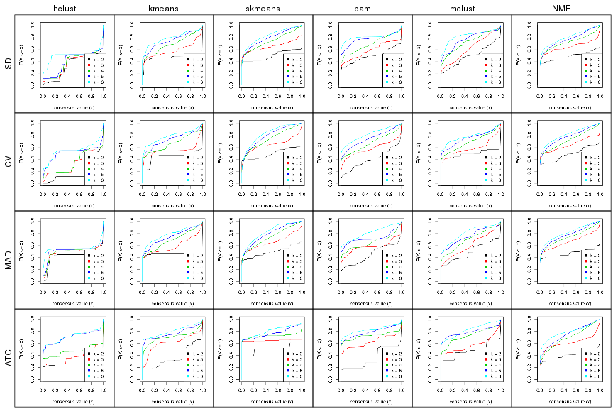
Consensus heatmaps for all methods. (What is a consensus heatmap?)
collect_plots(res_list, k = 2, fun = consensus_heatmap, mc.cores = 4)
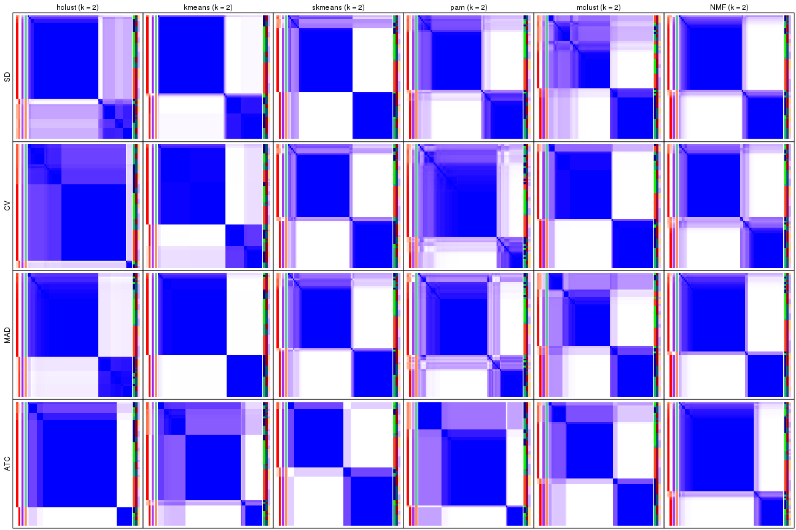
collect_plots(res_list, k = 3, fun = consensus_heatmap, mc.cores = 4)
collect_plots(res_list, k = 4, fun = consensus_heatmap, mc.cores = 4)
collect_plots(res_list, k = 5, fun = consensus_heatmap, mc.cores = 4)
collect_plots(res_list, k = 6, fun = consensus_heatmap, mc.cores = 4)
Membership heatmaps for all methods. (What is a membership heatmap?)
collect_plots(res_list, k = 2, fun = membership_heatmap, mc.cores = 4)
collect_plots(res_list, k = 3, fun = membership_heatmap, mc.cores = 4)
collect_plots(res_list, k = 4, fun = membership_heatmap, mc.cores = 4)
collect_plots(res_list, k = 5, fun = membership_heatmap, mc.cores = 4)

collect_plots(res_list, k = 6, fun = membership_heatmap, mc.cores = 4)
Signature heatmaps for all methods. (What is a signature heatmap?)
Note in following heatmaps, rows are scaled.
collect_plots(res_list, k = 2, fun = get_signatures, mc.cores = 4)
collect_plots(res_list, k = 3, fun = get_signatures, mc.cores = 4)
collect_plots(res_list, k = 4, fun = get_signatures, mc.cores = 4)
collect_plots(res_list, k = 5, fun = get_signatures, mc.cores = 4)
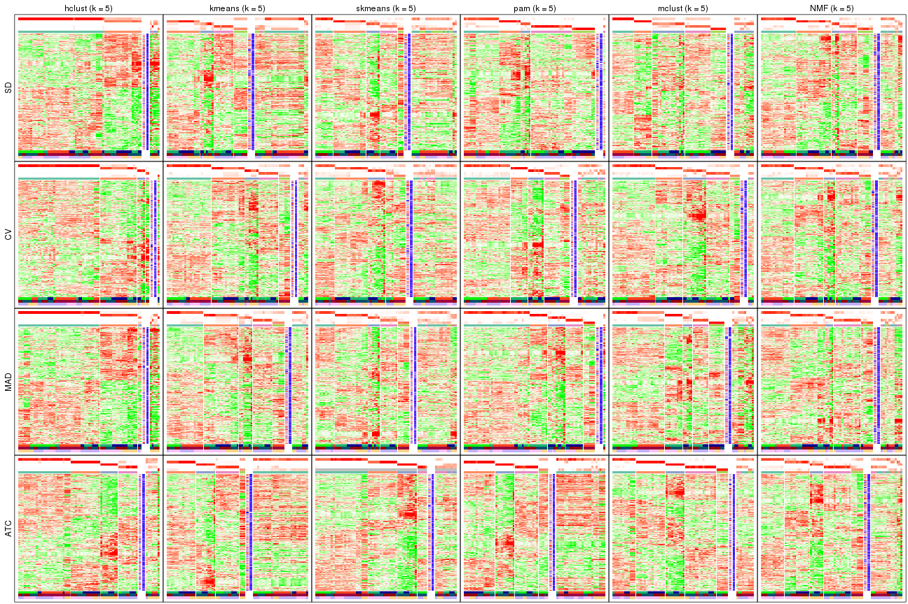
collect_plots(res_list, k = 6, fun = get_signatures, mc.cores = 4)
The statistics used for measuring the stability of consensus partitioning. (How are they defined?)
get_stats(res_list, k = 2)
#> k 1-PAC mean_silhouette concordance area_increased Rand Jaccard
#> SD:NMF 2 0.879 0.916 0.967 0.484 0.514 0.514
#> CV:NMF 2 0.792 0.873 0.947 0.483 0.508 0.508
#> MAD:NMF 2 0.998 0.926 0.972 0.470 0.528 0.528
#> ATC:NMF 2 0.906 0.933 0.971 0.400 0.591 0.591
#> SD:skmeans 2 0.908 0.900 0.959 0.492 0.521 0.521
#> CV:skmeans 2 0.907 0.889 0.958 0.494 0.508 0.508
#> MAD:skmeans 2 0.849 0.905 0.960 0.492 0.514 0.514
#> ATC:skmeans 2 0.854 0.944 0.973 0.506 0.494 0.494
#> SD:mclust 2 0.559 0.856 0.917 0.489 0.508 0.508
#> CV:mclust 2 0.969 0.943 0.975 0.491 0.514 0.514
#> MAD:mclust 2 0.587 0.802 0.917 0.492 0.508 0.508
#> ATC:mclust 2 0.706 0.883 0.944 0.483 0.521 0.521
#> SD:kmeans 2 1.000 0.965 0.982 0.464 0.528 0.528
#> CV:kmeans 2 0.701 0.963 0.971 0.443 0.536 0.536
#> MAD:kmeans 2 1.000 0.992 0.995 0.456 0.546 0.546
#> ATC:kmeans 2 0.566 0.830 0.870 0.363 0.668 0.668
#> SD:pam 2 0.745 0.895 0.951 0.485 0.514 0.514
#> CV:pam 2 0.602 0.841 0.925 0.392 0.619 0.619
#> MAD:pam 2 0.713 0.781 0.916 0.447 0.546 0.546
#> ATC:pam 2 0.647 0.795 0.903 0.356 0.725 0.725
#> SD:hclust 2 0.534 0.922 0.893 0.330 0.556 0.556
#> CV:hclust 2 0.501 0.907 0.938 0.162 0.888 0.888
#> MAD:hclust 2 0.842 0.977 0.964 0.418 0.556 0.556
#> ATC:hclust 2 0.838 0.964 0.982 0.278 0.745 0.745
get_stats(res_list, k = 3)
#> k 1-PAC mean_silhouette concordance area_increased Rand Jaccard
#> SD:NMF 3 0.824 0.844 0.931 0.3236 0.798 0.625
#> CV:NMF 3 0.777 0.825 0.922 0.3295 0.822 0.665
#> MAD:NMF 3 0.716 0.795 0.903 0.4079 0.719 0.505
#> ATC:NMF 3 0.813 0.875 0.927 0.5300 0.762 0.613
#> SD:skmeans 3 0.832 0.828 0.931 0.3156 0.781 0.599
#> CV:skmeans 3 0.763 0.873 0.924 0.3066 0.783 0.599
#> MAD:skmeans 3 0.711 0.804 0.906 0.3306 0.783 0.601
#> ATC:skmeans 3 1.000 0.979 0.991 0.2762 0.802 0.622
#> SD:mclust 3 0.400 0.537 0.732 0.2520 0.746 0.544
#> CV:mclust 3 0.638 0.796 0.876 0.1830 0.903 0.815
#> MAD:mclust 3 0.500 0.707 0.784 0.2278 0.925 0.852
#> ATC:mclust 3 0.705 0.795 0.838 0.1780 0.862 0.767
#> SD:kmeans 3 0.696 0.828 0.896 0.2536 0.923 0.855
#> CV:kmeans 3 0.784 0.904 0.927 0.2441 0.896 0.811
#> MAD:kmeans 3 0.674 0.772 0.878 0.2926 0.914 0.844
#> ATC:kmeans 3 0.655 0.875 0.894 0.6800 0.629 0.476
#> SD:pam 3 0.727 0.757 0.855 0.1978 0.898 0.805
#> CV:pam 3 0.752 0.819 0.924 0.4648 0.765 0.636
#> MAD:pam 3 0.733 0.869 0.928 0.2973 0.828 0.699
#> ATC:pam 3 0.815 0.854 0.943 0.7523 0.652 0.520
#> SD:hclust 3 0.493 0.888 0.895 0.0782 0.980 0.964
#> CV:hclust 3 0.632 0.715 0.873 1.0494 0.920 0.909
#> MAD:hclust 3 0.793 0.938 0.957 0.1419 0.943 0.898
#> ATC:hclust 3 0.743 0.847 0.922 0.3541 0.863 0.816
get_stats(res_list, k = 4)
#> k 1-PAC mean_silhouette concordance area_increased Rand Jaccard
#> SD:NMF 4 0.690 0.734 0.868 0.1246 0.843 0.609
#> CV:NMF 4 0.620 0.557 0.771 0.1204 0.793 0.512
#> MAD:NMF 4 0.644 0.687 0.839 0.1089 0.814 0.524
#> ATC:NMF 4 0.506 0.665 0.761 0.1399 0.806 0.555
#> SD:skmeans 4 0.613 0.570 0.734 0.1368 0.903 0.737
#> CV:skmeans 4 0.569 0.598 0.778 0.1446 0.876 0.669
#> MAD:skmeans 4 0.561 0.570 0.734 0.1240 0.892 0.711
#> ATC:skmeans 4 0.975 0.949 0.971 0.1198 0.902 0.732
#> SD:mclust 4 0.601 0.770 0.765 0.1724 0.755 0.429
#> CV:mclust 4 0.557 0.496 0.731 0.1811 0.783 0.545
#> MAD:mclust 4 0.549 0.676 0.755 0.1481 0.810 0.598
#> ATC:mclust 4 0.641 0.749 0.828 0.2738 0.737 0.501
#> SD:kmeans 4 0.621 0.717 0.802 0.1793 0.860 0.693
#> CV:kmeans 4 0.685 0.715 0.828 0.2072 0.847 0.674
#> MAD:kmeans 4 0.540 0.628 0.775 0.1635 0.841 0.672
#> ATC:kmeans 4 0.802 0.879 0.890 0.1489 0.903 0.746
#> SD:pam 4 0.666 0.510 0.725 0.1776 0.813 0.597
#> CV:pam 4 0.643 0.693 0.802 0.1667 0.884 0.744
#> MAD:pam 4 0.675 0.683 0.801 0.1219 0.860 0.689
#> ATC:pam 4 0.917 0.910 0.960 0.1609 0.848 0.621
#> SD:hclust 4 0.520 0.881 0.897 0.0562 0.981 0.964
#> CV:hclust 4 0.583 0.568 0.872 0.0624 0.920 0.901
#> MAD:hclust 4 0.859 0.879 0.941 0.0365 0.991 0.982
#> ATC:hclust 4 0.829 0.876 0.960 0.2443 0.901 0.840
get_stats(res_list, k = 5)
#> k 1-PAC mean_silhouette concordance area_increased Rand Jaccard
#> SD:NMF 5 0.615 0.637 0.787 0.0641 0.928 0.758
#> CV:NMF 5 0.614 0.643 0.772 0.0772 0.815 0.447
#> MAD:NMF 5 0.617 0.651 0.793 0.0537 0.877 0.599
#> ATC:NMF 5 0.538 0.557 0.718 0.0704 0.889 0.635
#> SD:skmeans 5 0.610 0.528 0.713 0.0711 0.847 0.525
#> CV:skmeans 5 0.570 0.578 0.705 0.0701 0.899 0.667
#> MAD:skmeans 5 0.575 0.555 0.716 0.0685 0.931 0.765
#> ATC:skmeans 5 0.779 0.708 0.833 0.0558 0.970 0.895
#> SD:mclust 5 0.621 0.791 0.790 0.0623 0.858 0.559
#> CV:mclust 5 0.651 0.793 0.817 0.0860 0.830 0.511
#> MAD:mclust 5 0.623 0.674 0.792 0.0802 0.924 0.774
#> ATC:mclust 5 0.856 0.817 0.917 0.0845 0.888 0.617
#> SD:kmeans 5 0.632 0.604 0.682 0.0869 0.877 0.623
#> CV:kmeans 5 0.680 0.762 0.809 0.0984 0.897 0.693
#> MAD:kmeans 5 0.608 0.684 0.754 0.0816 0.881 0.666
#> ATC:kmeans 5 0.777 0.638 0.785 0.0898 0.947 0.826
#> SD:pam 5 0.767 0.868 0.911 0.1193 0.791 0.445
#> CV:pam 5 0.633 0.695 0.816 0.1104 0.893 0.715
#> MAD:pam 5 0.761 0.876 0.915 0.1055 0.946 0.844
#> ATC:pam 5 0.781 0.592 0.835 0.0831 0.928 0.747
#> SD:hclust 5 0.514 0.881 0.871 0.0552 0.973 0.948
#> CV:hclust 5 0.645 0.895 0.915 0.4454 0.681 0.577
#> MAD:hclust 5 0.910 0.886 0.940 0.0373 0.982 0.962
#> ATC:hclust 5 0.782 0.788 0.917 0.5024 0.740 0.518
get_stats(res_list, k = 6)
#> k 1-PAC mean_silhouette concordance area_increased Rand Jaccard
#> SD:NMF 6 0.635 0.500 0.727 0.0439 0.872 0.547
#> CV:NMF 6 0.666 0.635 0.749 0.0458 0.924 0.683
#> MAD:NMF 6 0.637 0.548 0.726 0.0445 0.947 0.779
#> ATC:NMF 6 0.662 0.700 0.837 0.0522 0.914 0.666
#> SD:skmeans 6 0.640 0.533 0.673 0.0449 0.875 0.496
#> CV:skmeans 6 0.595 0.528 0.649 0.0446 0.987 0.945
#> MAD:skmeans 6 0.598 0.461 0.654 0.0457 0.986 0.941
#> ATC:skmeans 6 0.778 0.632 0.723 0.0558 0.821 0.422
#> SD:mclust 6 0.748 0.805 0.850 0.0810 0.884 0.553
#> CV:mclust 6 0.744 0.796 0.875 0.0467 0.986 0.937
#> MAD:mclust 6 0.668 0.602 0.696 0.0698 0.847 0.484
#> ATC:mclust 6 0.721 0.595 0.684 0.0438 0.908 0.619
#> SD:kmeans 6 0.772 0.689 0.776 0.0535 0.892 0.602
#> CV:kmeans 6 0.707 0.659 0.746 0.0676 0.924 0.705
#> MAD:kmeans 6 0.693 0.648 0.745 0.0553 0.984 0.935
#> ATC:kmeans 6 0.774 0.679 0.787 0.0512 0.886 0.605
#> SD:pam 6 0.916 0.917 0.957 0.0486 0.971 0.874
#> CV:pam 6 0.703 0.655 0.837 0.0929 0.876 0.578
#> MAD:pam 6 0.717 0.699 0.829 0.1226 0.863 0.564
#> ATC:pam 6 0.839 0.798 0.881 0.0507 0.902 0.605
#> SD:hclust 6 0.785 0.894 0.956 0.2679 0.999 0.998
#> CV:hclust 6 0.653 0.847 0.895 0.0806 1.000 1.000
#> MAD:hclust 6 0.942 0.912 0.952 0.0723 0.983 0.965
#> ATC:hclust 6 0.811 0.703 0.878 0.0139 0.968 0.894
Following heatmap plots the partition for each combination of methods and the lightness correspond to the silhouette scores for samples in each method. On top the consensus subgroup is inferred from all methods by taking the mean silhouette scores as weight.
collect_stats(res_list, k = 2)
collect_stats(res_list, k = 3)
collect_stats(res_list, k = 4)
collect_stats(res_list, k = 5)
collect_stats(res_list, k = 6)
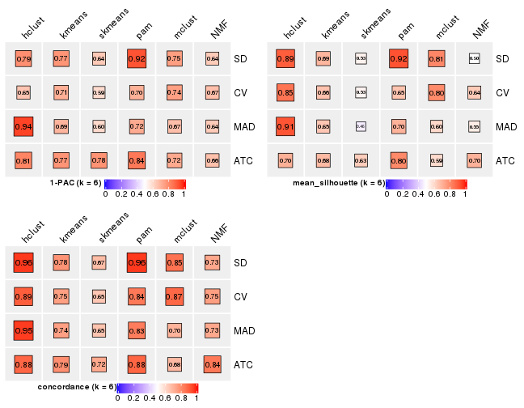
Collect partitions from all methods:
collect_classes(res_list, k = 2)
collect_classes(res_list, k = 3)
collect_classes(res_list, k = 4)
collect_classes(res_list, k = 5)
collect_classes(res_list, k = 6)
Overlap of top rows from different top-row methods:
top_rows_overlap(res_list, top_n = 1000, method = "euler")
top_rows_overlap(res_list, top_n = 2000, method = "euler")
top_rows_overlap(res_list, top_n = 3000, method = "euler")
top_rows_overlap(res_list, top_n = 4000, method = "euler")
top_rows_overlap(res_list, top_n = 5000, method = "euler")
Also visualize the correspondance of rankings between different top-row methods:
top_rows_overlap(res_list, top_n = 1000, method = "correspondance")
top_rows_overlap(res_list, top_n = 2000, method = "correspondance")
top_rows_overlap(res_list, top_n = 3000, method = "correspondance")
top_rows_overlap(res_list, top_n = 4000, method = "correspondance")
top_rows_overlap(res_list, top_n = 5000, method = "correspondance")
Heatmaps of the top rows:
top_rows_heatmap(res_list, top_n = 1000)
top_rows_heatmap(res_list, top_n = 2000)
top_rows_heatmap(res_list, top_n = 3000)
top_rows_heatmap(res_list, top_n = 4000)
top_rows_heatmap(res_list, top_n = 5000)
Test correlation between subgroups and known annotations. If the known annotation is numeric, one-way ANOVA test is applied, and if the known annotation is discrete, chi-squared contingency table test is applied.
test_to_known_factors(res_list, k = 2)
#> n agent(p) dose(p) time(p) k
#> SD:NMF 66 7.27e-07 5.76e-04 1.82e-04 2
#> CV:NMF 64 4.93e-07 5.90e-04 3.21e-04 2
#> MAD:NMF 65 3.94e-07 1.76e-03 5.43e-05 2
#> ATC:NMF 66 1.10e-02 1.88e-02 1.01e-04 2
#> SD:skmeans 63 7.49e-08 2.64e-04 5.58e-04 2
#> CV:skmeans 63 7.49e-08 2.80e-04 5.58e-04 2
#> MAD:skmeans 64 1.05e-07 3.22e-04 3.83e-04 2
#> ATC:skmeans 68 2.48e-08 4.21e-05 7.49e-02 2
#> SD:mclust 68 1.61e-07 2.09e-04 1.49e-03 2
#> CV:mclust 68 6.74e-07 4.36e-04 3.93e-04 2
#> MAD:mclust 59 1.77e-10 1.22e-05 3.88e-02 2
#> ATC:mclust 66 1.52e-08 3.37e-04 3.08e-03 2
#> SD:kmeans 67 2.65e-06 1.73e-03 2.55e-05 2
#> CV:kmeans 68 1.87e-05 1.25e-03 1.69e-04 2
#> MAD:kmeans 68 3.58e-07 3.03e-03 7.64e-05 2
#> ATC:kmeans 66 1.14e-01 3.77e-02 9.30e-05 2
#> SD:pam 67 6.47e-08 6.07e-04 1.18e-03 2
#> CV:pam 64 3.81e-03 2.10e-02 8.96e-04 2
#> MAD:pam 57 8.04e-06 5.48e-03 1.48e-04 2
#> ATC:pam 67 1.18e-01 6.02e-02 2.56e-06 2
#> SD:hclust 68 9.76e-07 4.10e-03 1.33e-04 2
#> CV:hclust 68 2.33e-01 4.88e-01 6.95e-01 2
#> MAD:hclust 68 9.76e-07 4.10e-03 1.33e-04 2
#> ATC:hclust 68 1.13e-01 5.69e-02 2.00e-06 2
test_to_known_factors(res_list, k = 3)
#> n agent(p) dose(p) time(p) k
#> SD:NMF 63 4.58e-07 6.04e-05 4.06e-04 3
#> CV:NMF 62 7.00e-08 2.01e-04 2.55e-03 3
#> MAD:NMF 61 5.90e-07 9.68e-05 7.73e-05 3
#> ATC:NMF 65 2.87e-07 2.33e-04 4.95e-05 3
#> SD:skmeans 62 6.76e-08 1.84e-04 2.85e-04 3
#> CV:skmeans 66 1.64e-08 6.26e-05 1.49e-03 3
#> MAD:skmeans 61 1.76e-08 8.07e-05 6.64e-05 3
#> ATC:skmeans 67 2.85e-07 4.68e-06 2.06e-05 3
#> SD:mclust 46 3.04e-10 2.42e-09 1.70e-04 3
#> CV:mclust 62 2.59e-05 3.92e-03 3.47e-05 3
#> MAD:mclust 61 3.01e-14 1.03e-03 3.22e-03 3
#> ATC:mclust 65 8.24e-07 6.14e-04 4.95e-05 3
#> SD:kmeans 62 3.00e-06 2.92e-03 2.89e-04 3
#> CV:kmeans 67 3.07e-05 7.17e-03 1.19e-04 3
#> MAD:kmeans 64 1.62e-06 7.21e-03 1.15e-03 3
#> ATC:kmeans 68 2.75e-06 5.60e-06 2.13e-05 3
#> SD:pam 59 1.37e-19 7.31e-04 4.10e-02 3
#> CV:pam 62 1.57e-07 7.33e-04 1.90e-03 3
#> MAD:pam 68 6.30e-07 2.06e-03 1.77e-04 3
#> ATC:pam 61 6.67e-09 1.93e-05 1.46e-04 3
#> SD:hclust 64 5.81e-06 7.15e-03 3.01e-04 3
#> CV:hclust 57 7.87e-02 4.39e-01 4.78e-02 3
#> MAD:hclust 67 4.02e-06 6.41e-03 7.43e-04 3
#> ATC:hclust 62 9.39e-02 1.76e-02 6.38e-08 3
test_to_known_factors(res_list, k = 4)
#> n agent(p) dose(p) time(p) k
#> SD:NMF 61 2.24e-08 2.09e-04 2.26e-05 4
#> CV:NMF 46 3.09e-08 6.68e-05 1.26e-04 4
#> MAD:NMF 60 5.42e-08 1.68e-04 9.86e-06 4
#> ATC:NMF 60 8.11e-05 1.00e-03 5.48e-08 4
#> SD:skmeans 45 3.09e-10 3.25e-07 8.87e-04 4
#> CV:skmeans 45 4.86e-06 1.30e-03 4.63e-05 4
#> MAD:skmeans 45 1.87e-10 8.96e-07 1.01e-06 4
#> ATC:skmeans 68 1.13e-06 3.34e-05 3.25e-06 4
#> SD:mclust 65 8.37e-17 8.94e-08 2.70e-05 4
#> CV:mclust 44 7.26e-10 4.46e-04 1.05e-03 4
#> MAD:mclust 51 2.96e-15 1.53e-03 2.12e-02 4
#> ATC:mclust 64 2.44e-04 8.66e-03 8.21e-12 4
#> SD:kmeans 62 5.08e-07 5.44e-05 6.69e-06 4
#> CV:kmeans 59 2.54e-06 5.68e-04 2.34e-06 4
#> MAD:kmeans 59 5.98e-07 3.25e-03 2.91e-06 4
#> ATC:kmeans 65 4.08e-06 9.17e-06 6.39e-10 4
#> SD:pam 43 2.46e-09 3.21e-03 1.42e-01 4
#> CV:pam 56 3.95e-15 3.64e-04 1.36e-02 4
#> MAD:pam 58 6.98e-10 7.49e-04 2.36e-06 4
#> ATC:pam 67 1.00e-07 4.12e-06 3.50e-08 4
#> SD:hclust 63 8.02e-06 6.42e-03 2.29e-04 4
#> CV:hclust 46 1.13e-01 2.67e-01 3.28e-01 4
#> MAD:hclust 63 6.36e-06 1.96e-02 1.66e-03 4
#> ATC:hclust 65 4.14e-02 5.93e-03 4.01e-09 4
test_to_known_factors(res_list, k = 5)
#> n agent(p) dose(p) time(p) k
#> SD:NMF 57 3.26e-07 3.61e-04 3.55e-07 5
#> CV:NMF 56 9.58e-06 2.64e-04 1.30e-07 5
#> MAD:NMF 57 2.40e-06 5.37e-04 6.56e-08 5
#> ATC:NMF 52 5.27e-07 2.80e-06 8.29e-13 5
#> SD:skmeans 45 1.85e-12 3.02e-07 2.19e-07 5
#> CV:skmeans 46 6.74e-09 2.60e-05 1.07e-07 5
#> MAD:skmeans 48 3.13e-10 2.02e-06 1.47e-08 5
#> ATC:skmeans 57 1.79e-06 2.32e-05 8.23e-08 5
#> SD:mclust 58 4.20e-21 4.41e-08 4.43e-03 5
#> CV:mclust 65 9.38e-07 6.30e-06 1.17e-08 5
#> MAD:mclust 57 3.91e-14 1.07e-03 4.46e-04 5
#> ATC:mclust 59 5.07e-08 7.20e-05 4.69e-11 5
#> SD:kmeans 41 2.03e-04 8.68e-01 8.87e-08 5
#> CV:kmeans 63 2.94e-07 2.77e-05 5.72e-10 5
#> MAD:kmeans 60 9.06e-08 7.81e-06 1.06e-09 5
#> ATC:kmeans 40 1.27e-07 6.31e-08 2.54e-10 5
#> SD:pam 67 6.89e-20 2.39e-08 3.67e-03 5
#> CV:pam 54 1.35e-14 1.90e-04 2.36e-05 5
#> MAD:pam 67 9.07e-14 1.21e-04 1.65e-06 5
#> ATC:pam 43 9.88e-04 1.52e-01 5.52e-09 5
#> SD:hclust 63 8.02e-06 6.42e-03 2.29e-04 5
#> CV:hclust 67 1.18e-05 1.09e-02 8.06e-04 5
#> MAD:hclust 63 6.36e-06 1.96e-02 1.66e-03 5
#> ATC:hclust 61 4.41e-06 1.24e-04 4.80e-11 5
test_to_known_factors(res_list, k = 6)
#> n agent(p) dose(p) time(p) k
#> SD:NMF 43 2.98e-06 1.74e-04 3.01e-07 6
#> CV:NMF 57 2.92e-12 2.98e-05 1.90e-08 6
#> MAD:NMF 48 1.62e-07 8.12e-04 3.35e-08 6
#> ATC:NMF 57 1.94e-06 2.89e-06 2.12e-10 6
#> SD:skmeans 43 1.92e-14 1.26e-06 2.82e-07 6
#> CV:skmeans 39 2.87e-09 7.77e-06 1.33e-03 6
#> MAD:skmeans 37 1.01e-10 8.85e-06 4.01e-07 6
#> ATC:skmeans 53 8.18e-11 2.74e-04 3.43e-13 6
#> SD:mclust 65 6.87e-22 1.15e-07 1.85e-04 6
#> CV:mclust 64 1.49e-07 1.11e-05 1.99e-08 6
#> MAD:mclust 48 4.48e-21 1.06e-07 8.70e-04 6
#> ATC:mclust 44 2.57e-05 3.61e-03 5.70e-12 6
#> SD:kmeans 60 2.09e-06 3.38e-05 1.32e-09 6
#> CV:kmeans 60 2.36e-10 5.13e-05 1.17e-07 6
#> MAD:kmeans 56 8.88e-08 3.02e-05 6.74e-09 6
#> ATC:kmeans 49 4.95e-06 3.34e-06 4.99e-11 6
#> SD:pam 67 1.20e-18 9.24e-08 5.23e-05 6
#> CV:pam 56 2.99e-13 1.83e-05 4.52e-06 6
#> MAD:pam 58 2.39e-16 3.21e-06 1.32e-06 6
#> ATC:pam 65 1.28e-09 1.61e-06 4.38e-11 6
#> SD:hclust 65 1.46e-05 7.16e-03 1.72e-04 6
#> CV:hclust 67 1.18e-05 1.09e-02 8.06e-04 6
#> MAD:hclust 65 6.85e-06 1.56e-02 8.28e-04 6
#> ATC:hclust 58 2.49e-05 3.81e-04 1.67e-08 6
The object with results only for a single top-value method and a single partition method can be extracted as:
res = res_list["SD", "hclust"]
# you can also extract it by
# res = res_list["SD:hclust"]
A summary of res and all the functions that can be applied to it:
res
#> A 'ConsensusPartition' object with k = 2, 3, 4, 5, 6.
#> On a matrix with 21796 rows and 68 columns.
#> Top rows (1000, 2000, 3000, 4000, 5000) are extracted by 'SD' method.
#> Subgroups are detected by 'hclust' method.
#> Performed in total 1250 partitions by row resampling.
#> Best k for subgroups seems to be 2.
#>
#> Following methods can be applied to this 'ConsensusPartition' object:
#> [1] "cola_report" "collect_classes" "collect_plots"
#> [4] "collect_stats" "colnames" "compare_signatures"
#> [7] "consensus_heatmap" "dimension_reduction" "functional_enrichment"
#> [10] "get_anno_col" "get_anno" "get_classes"
#> [13] "get_consensus" "get_matrix" "get_membership"
#> [16] "get_param" "get_signatures" "get_stats"
#> [19] "is_best_k" "is_stable_k" "membership_heatmap"
#> [22] "ncol" "nrow" "plot_ecdf"
#> [25] "rownames" "select_partition_number" "show"
#> [28] "suggest_best_k" "test_to_known_factors"
collect_plots() function collects all the plots made from res for all k (number of partitions)
into one single page to provide an easy and fast comparison between different k.
collect_plots(res)
The plots are:
k and the heatmap of
predicted classes for each k.k.k.k.All the plots in panels can be made by individual functions and they are plotted later in this section.
select_partition_number() produces several plots showing different
statistics for choosing “optimized” k. There are following statistics:
k;k, the area increased is defined as \(A_k - A_{k-1}\).The detailed explanations of these statistics can be found in the cola vignette.
Generally speaking, lower PAC score, higher mean silhouette score or higher
concordance corresponds to better partition. Rand index and Jaccard index
measure how similar the current partition is compared to partition with k-1.
If they are too similar, we won't accept k is better than k-1.
select_partition_number(res)

The numeric values for all these statistics can be obtained by get_stats().
get_stats(res)
#> k 1-PAC mean_silhouette concordance area_increased Rand Jaccard
#> 2 2 0.534 0.922 0.893 0.3303 0.556 0.556
#> 3 3 0.493 0.888 0.895 0.0782 0.980 0.964
#> 4 4 0.520 0.881 0.897 0.0562 0.981 0.964
#> 5 5 0.514 0.881 0.871 0.0552 0.973 0.948
#> 6 6 0.785 0.894 0.956 0.2679 0.999 0.998
suggest_best_k() suggests the best \(k\) based on these statistics. The rules are as follows:
suggest_best_k(res)
#> [1] 2
Following shows the table of the partitions (You need to click the show/hide
code output link to see it). The membership matrix (columns with name p*)
is inferred by
clue::cl_consensus()
function with the SE method. Basically the value in the membership matrix
represents the probability to belong to a certain group. The finall class
label for an item is determined with the group with highest probability it
belongs to.
In get_classes() function, the entropy is calculated from the membership
matrix and the silhouette score is calculated from the consensus matrix.
cbind(get_classes(res, k = 2), get_membership(res, k = 2))
#> class entropy silhouette p1 p2
#> GSM159850 1 0.000 0.985 1.000 0.000
#> GSM159851 1 0.000 0.985 1.000 0.000
#> GSM159852 1 0.000 0.985 1.000 0.000
#> GSM159853 1 0.000 0.985 1.000 0.000
#> GSM159854 1 0.000 0.985 1.000 0.000
#> GSM159855 1 0.000 0.985 1.000 0.000
#> GSM159856 1 0.000 0.985 1.000 0.000
#> GSM159857 1 0.000 0.985 1.000 0.000
#> GSM159858 1 0.000 0.985 1.000 0.000
#> GSM159859 1 0.000 0.985 1.000 0.000
#> GSM159860 1 0.000 0.985 1.000 0.000
#> GSM159861 1 0.000 0.985 1.000 0.000
#> GSM159862 1 0.000 0.985 1.000 0.000
#> GSM159863 1 0.000 0.985 1.000 0.000
#> GSM159864 1 0.000 0.985 1.000 0.000
#> GSM159865 1 0.000 0.985 1.000 0.000
#> GSM159866 1 0.000 0.985 1.000 0.000
#> GSM159885 1 0.000 0.985 1.000 0.000
#> GSM159886 1 0.000 0.985 1.000 0.000
#> GSM159887 1 0.000 0.985 1.000 0.000
#> GSM159888 2 0.929 0.873 0.344 0.656
#> GSM159889 2 0.929 0.873 0.344 0.656
#> GSM159890 2 0.929 0.873 0.344 0.656
#> GSM159891 2 0.855 0.853 0.280 0.720
#> GSM159892 2 0.855 0.853 0.280 0.720
#> GSM159893 2 0.855 0.853 0.280 0.720
#> GSM159894 1 0.000 0.985 1.000 0.000
#> GSM159895 1 0.000 0.985 1.000 0.000
#> GSM159896 1 0.000 0.985 1.000 0.000
#> GSM159897 2 0.929 0.873 0.344 0.656
#> GSM159898 2 0.929 0.873 0.344 0.656
#> GSM159899 2 0.929 0.873 0.344 0.656
#> GSM159900 2 0.118 0.645 0.016 0.984
#> GSM159901 2 0.118 0.645 0.016 0.984
#> GSM159902 1 0.000 0.985 1.000 0.000
#> GSM159903 1 0.000 0.985 1.000 0.000
#> GSM159904 1 0.000 0.985 1.000 0.000
#> GSM159905 1 0.000 0.985 1.000 0.000
#> GSM159906 1 0.000 0.985 1.000 0.000
#> GSM159907 1 0.000 0.985 1.000 0.000
#> GSM159908 1 0.000 0.985 1.000 0.000
#> GSM159909 1 0.000 0.985 1.000 0.000
#> GSM159910 1 0.541 0.775 0.876 0.124
#> GSM159911 1 0.000 0.985 1.000 0.000
#> GSM159912 1 0.000 0.985 1.000 0.000
#> GSM159913 1 0.000 0.985 1.000 0.000
#> GSM159914 1 0.000 0.985 1.000 0.000
#> GSM159915 1 0.000 0.985 1.000 0.000
#> GSM159916 1 0.000 0.985 1.000 0.000
#> GSM159917 1 0.871 0.506 0.708 0.292
#> GSM159867 1 0.000 0.985 1.000 0.000
#> GSM159868 1 0.000 0.985 1.000 0.000
#> GSM159869 1 0.000 0.985 1.000 0.000
#> GSM159870 2 0.969 0.845 0.396 0.604
#> GSM159871 2 0.987 0.784 0.432 0.568
#> GSM159872 1 0.224 0.943 0.964 0.036
#> GSM159873 2 0.871 0.857 0.292 0.708
#> GSM159874 2 0.469 0.637 0.100 0.900
#> GSM159875 2 0.866 0.856 0.288 0.712
#> GSM159876 1 0.000 0.985 1.000 0.000
#> GSM159877 1 0.224 0.943 0.964 0.036
#> GSM159878 1 0.000 0.985 1.000 0.000
#> GSM159879 2 0.969 0.845 0.396 0.604
#> GSM159880 2 0.969 0.845 0.396 0.604
#> GSM159881 2 0.969 0.845 0.396 0.604
#> GSM159882 2 0.969 0.845 0.396 0.604
#> GSM159883 2 0.969 0.845 0.396 0.604
#> GSM159884 2 0.969 0.845 0.396 0.604
cbind(get_classes(res, k = 3), get_membership(res, k = 3))
#> class entropy silhouette p1 p2 p3
#> GSM159850 1 0.000 0.986 1.000 0.000 0.000
#> GSM159851 1 0.000 0.986 1.000 0.000 0.000
#> GSM159852 1 0.000 0.986 1.000 0.000 0.000
#> GSM159853 1 0.000 0.986 1.000 0.000 0.000
#> GSM159854 1 0.000 0.986 1.000 0.000 0.000
#> GSM159855 1 0.000 0.986 1.000 0.000 0.000
#> GSM159856 1 0.000 0.986 1.000 0.000 0.000
#> GSM159857 1 0.000 0.986 1.000 0.000 0.000
#> GSM159858 1 0.000 0.986 1.000 0.000 0.000
#> GSM159859 1 0.000 0.986 1.000 0.000 0.000
#> GSM159860 1 0.000 0.986 1.000 0.000 0.000
#> GSM159861 1 0.000 0.986 1.000 0.000 0.000
#> GSM159862 1 0.000 0.986 1.000 0.000 0.000
#> GSM159863 1 0.000 0.986 1.000 0.000 0.000
#> GSM159864 1 0.000 0.986 1.000 0.000 0.000
#> GSM159865 1 0.000 0.986 1.000 0.000 0.000
#> GSM159866 1 0.000 0.986 1.000 0.000 0.000
#> GSM159885 1 0.000 0.986 1.000 0.000 0.000
#> GSM159886 1 0.000 0.986 1.000 0.000 0.000
#> GSM159887 1 0.000 0.986 1.000 0.000 0.000
#> GSM159888 2 0.581 0.861 0.336 0.664 0.000
#> GSM159889 2 0.581 0.861 0.336 0.664 0.000
#> GSM159890 2 0.581 0.861 0.336 0.664 0.000
#> GSM159891 2 0.533 0.821 0.272 0.728 0.000
#> GSM159892 2 0.533 0.821 0.272 0.728 0.000
#> GSM159893 2 0.533 0.821 0.272 0.728 0.000
#> GSM159894 1 0.000 0.986 1.000 0.000 0.000
#> GSM159895 1 0.000 0.986 1.000 0.000 0.000
#> GSM159896 1 0.000 0.986 1.000 0.000 0.000
#> GSM159897 2 0.581 0.861 0.336 0.664 0.000
#> GSM159898 2 0.581 0.861 0.336 0.664 0.000
#> GSM159899 2 0.581 0.861 0.336 0.664 0.000
#> GSM159900 2 0.000 0.282 0.000 1.000 0.000
#> GSM159901 2 0.000 0.282 0.000 1.000 0.000
#> GSM159902 1 0.000 0.986 1.000 0.000 0.000
#> GSM159903 1 0.000 0.986 1.000 0.000 0.000
#> GSM159904 1 0.000 0.986 1.000 0.000 0.000
#> GSM159905 1 0.000 0.986 1.000 0.000 0.000
#> GSM159906 1 0.000 0.986 1.000 0.000 0.000
#> GSM159907 1 0.000 0.986 1.000 0.000 0.000
#> GSM159908 1 0.000 0.986 1.000 0.000 0.000
#> GSM159909 1 0.000 0.986 1.000 0.000 0.000
#> GSM159910 1 0.504 0.717 0.832 0.120 0.048
#> GSM159911 1 0.000 0.986 1.000 0.000 0.000
#> GSM159912 1 0.000 0.986 1.000 0.000 0.000
#> GSM159913 1 0.000 0.986 1.000 0.000 0.000
#> GSM159914 1 0.000 0.986 1.000 0.000 0.000
#> GSM159915 1 0.000 0.986 1.000 0.000 0.000
#> GSM159916 1 0.000 0.986 1.000 0.000 0.000
#> GSM159917 3 0.000 0.000 0.000 0.000 1.000
#> GSM159867 1 0.000 0.986 1.000 0.000 0.000
#> GSM159868 1 0.000 0.986 1.000 0.000 0.000
#> GSM159869 1 0.000 0.986 1.000 0.000 0.000
#> GSM159870 2 0.610 0.836 0.392 0.608 0.000
#> GSM159871 2 0.621 0.775 0.428 0.572 0.000
#> GSM159872 1 0.426 0.788 0.848 0.012 0.140
#> GSM159873 2 0.566 0.830 0.284 0.712 0.004
#> GSM159874 2 0.315 0.199 0.036 0.916 0.048
#> GSM159875 2 0.559 0.824 0.276 0.720 0.004
#> GSM159876 1 0.000 0.986 1.000 0.000 0.000
#> GSM159877 1 0.426 0.788 0.848 0.012 0.140
#> GSM159878 1 0.000 0.986 1.000 0.000 0.000
#> GSM159879 2 0.610 0.836 0.392 0.608 0.000
#> GSM159880 2 0.610 0.836 0.392 0.608 0.000
#> GSM159881 2 0.610 0.836 0.392 0.608 0.000
#> GSM159882 2 0.610 0.836 0.392 0.608 0.000
#> GSM159883 2 0.610 0.836 0.392 0.608 0.000
#> GSM159884 2 0.610 0.836 0.392 0.608 0.000
cbind(get_classes(res, k = 4), get_membership(res, k = 4))
#> class entropy silhouette p1 p2 p3 p4
#> GSM159850 1 0.0000 0.991 1.000 0.000 0.000 0.000
#> GSM159851 1 0.0000 0.991 1.000 0.000 0.000 0.000
#> GSM159852 1 0.0000 0.991 1.000 0.000 0.000 0.000
#> GSM159853 1 0.0000 0.991 1.000 0.000 0.000 0.000
#> GSM159854 1 0.0000 0.991 1.000 0.000 0.000 0.000
#> GSM159855 1 0.0000 0.991 1.000 0.000 0.000 0.000
#> GSM159856 1 0.0000 0.991 1.000 0.000 0.000 0.000
#> GSM159857 1 0.0000 0.991 1.000 0.000 0.000 0.000
#> GSM159858 1 0.0000 0.991 1.000 0.000 0.000 0.000
#> GSM159859 1 0.0000 0.991 1.000 0.000 0.000 0.000
#> GSM159860 1 0.0000 0.991 1.000 0.000 0.000 0.000
#> GSM159861 1 0.0000 0.991 1.000 0.000 0.000 0.000
#> GSM159862 1 0.0000 0.991 1.000 0.000 0.000 0.000
#> GSM159863 1 0.0000 0.991 1.000 0.000 0.000 0.000
#> GSM159864 1 0.0000 0.991 1.000 0.000 0.000 0.000
#> GSM159865 1 0.0000 0.991 1.000 0.000 0.000 0.000
#> GSM159866 1 0.0000 0.991 1.000 0.000 0.000 0.000
#> GSM159885 1 0.0000 0.991 1.000 0.000 0.000 0.000
#> GSM159886 1 0.0000 0.991 1.000 0.000 0.000 0.000
#> GSM159887 1 0.0000 0.991 1.000 0.000 0.000 0.000
#> GSM159888 2 0.4605 0.861 0.336 0.664 0.000 0.000
#> GSM159889 2 0.4605 0.861 0.336 0.664 0.000 0.000
#> GSM159890 2 0.4605 0.861 0.336 0.664 0.000 0.000
#> GSM159891 2 0.4222 0.821 0.272 0.728 0.000 0.000
#> GSM159892 2 0.4222 0.821 0.272 0.728 0.000 0.000
#> GSM159893 2 0.4222 0.821 0.272 0.728 0.000 0.000
#> GSM159894 1 0.0000 0.991 1.000 0.000 0.000 0.000
#> GSM159895 1 0.0000 0.991 1.000 0.000 0.000 0.000
#> GSM159896 1 0.0000 0.991 1.000 0.000 0.000 0.000
#> GSM159897 2 0.4605 0.861 0.336 0.664 0.000 0.000
#> GSM159898 2 0.4605 0.861 0.336 0.664 0.000 0.000
#> GSM159899 2 0.4605 0.861 0.336 0.664 0.000 0.000
#> GSM159900 2 0.0188 0.281 0.000 0.996 0.000 0.004
#> GSM159901 2 0.0188 0.281 0.000 0.996 0.000 0.004
#> GSM159902 1 0.0000 0.991 1.000 0.000 0.000 0.000
#> GSM159903 1 0.0000 0.991 1.000 0.000 0.000 0.000
#> GSM159904 1 0.0000 0.991 1.000 0.000 0.000 0.000
#> GSM159905 1 0.0000 0.991 1.000 0.000 0.000 0.000
#> GSM159906 1 0.0000 0.991 1.000 0.000 0.000 0.000
#> GSM159907 1 0.0000 0.991 1.000 0.000 0.000 0.000
#> GSM159908 1 0.0000 0.991 1.000 0.000 0.000 0.000
#> GSM159909 1 0.0000 0.991 1.000 0.000 0.000 0.000
#> GSM159910 4 0.0188 0.000 0.000 0.004 0.000 0.996
#> GSM159911 1 0.0000 0.991 1.000 0.000 0.000 0.000
#> GSM159912 1 0.0000 0.991 1.000 0.000 0.000 0.000
#> GSM159913 1 0.0000 0.991 1.000 0.000 0.000 0.000
#> GSM159914 1 0.0000 0.991 1.000 0.000 0.000 0.000
#> GSM159915 1 0.0000 0.991 1.000 0.000 0.000 0.000
#> GSM159916 1 0.0000 0.991 1.000 0.000 0.000 0.000
#> GSM159917 3 0.0000 0.000 0.000 0.000 1.000 0.000
#> GSM159867 1 0.0000 0.991 1.000 0.000 0.000 0.000
#> GSM159868 1 0.0000 0.991 1.000 0.000 0.000 0.000
#> GSM159869 1 0.0000 0.991 1.000 0.000 0.000 0.000
#> GSM159870 2 0.4830 0.838 0.392 0.608 0.000 0.000
#> GSM159871 2 0.4925 0.777 0.428 0.572 0.000 0.000
#> GSM159872 1 0.3377 0.786 0.848 0.012 0.140 0.000
#> GSM159873 2 0.4483 0.830 0.284 0.712 0.004 0.000
#> GSM159874 2 0.2494 0.208 0.036 0.916 0.048 0.000
#> GSM159875 2 0.4428 0.824 0.276 0.720 0.004 0.000
#> GSM159876 1 0.0000 0.991 1.000 0.000 0.000 0.000
#> GSM159877 1 0.3377 0.786 0.848 0.012 0.140 0.000
#> GSM159878 1 0.0000 0.991 1.000 0.000 0.000 0.000
#> GSM159879 2 0.4830 0.838 0.392 0.608 0.000 0.000
#> GSM159880 2 0.4830 0.838 0.392 0.608 0.000 0.000
#> GSM159881 2 0.4830 0.838 0.392 0.608 0.000 0.000
#> GSM159882 2 0.4830 0.838 0.392 0.608 0.000 0.000
#> GSM159883 2 0.4830 0.838 0.392 0.608 0.000 0.000
#> GSM159884 2 0.4830 0.838 0.392 0.608 0.000 0.000
cbind(get_classes(res, k = 5), get_membership(res, k = 5))
#> class entropy silhouette p1 p2 p3 p4 p5
#> GSM159850 1 0.0000 0.988 1.000 0.000 0.000 0.000 0.000
#> GSM159851 1 0.0000 0.988 1.000 0.000 0.000 0.000 0.000
#> GSM159852 1 0.0000 0.988 1.000 0.000 0.000 0.000 0.000
#> GSM159853 1 0.0000 0.988 1.000 0.000 0.000 0.000 0.000
#> GSM159854 1 0.0000 0.988 1.000 0.000 0.000 0.000 0.000
#> GSM159855 1 0.0000 0.988 1.000 0.000 0.000 0.000 0.000
#> GSM159856 1 0.0000 0.988 1.000 0.000 0.000 0.000 0.000
#> GSM159857 1 0.0000 0.988 1.000 0.000 0.000 0.000 0.000
#> GSM159858 1 0.0000 0.988 1.000 0.000 0.000 0.000 0.000
#> GSM159859 1 0.0000 0.988 1.000 0.000 0.000 0.000 0.000
#> GSM159860 1 0.0000 0.988 1.000 0.000 0.000 0.000 0.000
#> GSM159861 1 0.0000 0.988 1.000 0.000 0.000 0.000 0.000
#> GSM159862 1 0.0000 0.988 1.000 0.000 0.000 0.000 0.000
#> GSM159863 1 0.0000 0.988 1.000 0.000 0.000 0.000 0.000
#> GSM159864 1 0.0000 0.988 1.000 0.000 0.000 0.000 0.000
#> GSM159865 1 0.0000 0.988 1.000 0.000 0.000 0.000 0.000
#> GSM159866 1 0.0000 0.988 1.000 0.000 0.000 0.000 0.000
#> GSM159885 1 0.0000 0.988 1.000 0.000 0.000 0.000 0.000
#> GSM159886 1 0.0000 0.988 1.000 0.000 0.000 0.000 0.000
#> GSM159887 1 0.0000 0.988 1.000 0.000 0.000 0.000 0.000
#> GSM159888 2 0.3857 0.909 0.312 0.688 0.000 0.000 0.000
#> GSM159889 2 0.3857 0.909 0.312 0.688 0.000 0.000 0.000
#> GSM159890 2 0.3857 0.909 0.312 0.688 0.000 0.000 0.000
#> GSM159891 2 0.3662 0.832 0.252 0.744 0.004 0.000 0.000
#> GSM159892 2 0.3662 0.832 0.252 0.744 0.004 0.000 0.000
#> GSM159893 2 0.3662 0.832 0.252 0.744 0.004 0.000 0.000
#> GSM159894 1 0.0000 0.988 1.000 0.000 0.000 0.000 0.000
#> GSM159895 1 0.0000 0.988 1.000 0.000 0.000 0.000 0.000
#> GSM159896 1 0.0000 0.988 1.000 0.000 0.000 0.000 0.000
#> GSM159897 2 0.3857 0.909 0.312 0.688 0.000 0.000 0.000
#> GSM159898 2 0.3857 0.909 0.312 0.688 0.000 0.000 0.000
#> GSM159899 2 0.3857 0.909 0.312 0.688 0.000 0.000 0.000
#> GSM159900 3 0.4219 0.313 0.000 0.416 0.584 0.000 0.000
#> GSM159901 3 0.4219 0.313 0.000 0.416 0.584 0.000 0.000
#> GSM159902 1 0.0000 0.988 1.000 0.000 0.000 0.000 0.000
#> GSM159903 1 0.0000 0.988 1.000 0.000 0.000 0.000 0.000
#> GSM159904 1 0.0000 0.988 1.000 0.000 0.000 0.000 0.000
#> GSM159905 1 0.0000 0.988 1.000 0.000 0.000 0.000 0.000
#> GSM159906 1 0.0000 0.988 1.000 0.000 0.000 0.000 0.000
#> GSM159907 1 0.0000 0.988 1.000 0.000 0.000 0.000 0.000
#> GSM159908 1 0.0000 0.988 1.000 0.000 0.000 0.000 0.000
#> GSM159909 1 0.0000 0.988 1.000 0.000 0.000 0.000 0.000
#> GSM159910 3 0.6700 -0.386 0.000 0.252 0.416 0.000 0.332
#> GSM159911 1 0.0000 0.988 1.000 0.000 0.000 0.000 0.000
#> GSM159912 1 0.0000 0.988 1.000 0.000 0.000 0.000 0.000
#> GSM159913 1 0.0000 0.988 1.000 0.000 0.000 0.000 0.000
#> GSM159914 1 0.0000 0.988 1.000 0.000 0.000 0.000 0.000
#> GSM159915 1 0.0000 0.988 1.000 0.000 0.000 0.000 0.000
#> GSM159916 1 0.0000 0.988 1.000 0.000 0.000 0.000 0.000
#> GSM159917 4 0.0000 0.000 0.000 0.000 0.000 1.000 0.000
#> GSM159867 1 0.0000 0.988 1.000 0.000 0.000 0.000 0.000
#> GSM159868 1 0.0000 0.988 1.000 0.000 0.000 0.000 0.000
#> GSM159869 1 0.0000 0.988 1.000 0.000 0.000 0.000 0.000
#> GSM159870 2 0.4088 0.901 0.368 0.632 0.000 0.000 0.000
#> GSM159871 2 0.4192 0.845 0.404 0.596 0.000 0.000 0.000
#> GSM159872 1 0.4093 0.711 0.808 0.012 0.000 0.092 0.088
#> GSM159873 2 0.5378 0.825 0.264 0.660 0.020 0.000 0.056
#> GSM159874 5 0.5299 0.000 0.000 0.120 0.212 0.000 0.668
#> GSM159875 2 0.5331 0.812 0.256 0.668 0.020 0.000 0.056
#> GSM159876 1 0.0162 0.983 0.996 0.004 0.000 0.000 0.000
#> GSM159877 1 0.4093 0.711 0.808 0.012 0.000 0.092 0.088
#> GSM159878 1 0.0162 0.983 0.996 0.004 0.000 0.000 0.000
#> GSM159879 2 0.4088 0.901 0.368 0.632 0.000 0.000 0.000
#> GSM159880 2 0.4088 0.901 0.368 0.632 0.000 0.000 0.000
#> GSM159881 2 0.4088 0.901 0.368 0.632 0.000 0.000 0.000
#> GSM159882 2 0.4088 0.901 0.368 0.632 0.000 0.000 0.000
#> GSM159883 2 0.4088 0.901 0.368 0.632 0.000 0.000 0.000
#> GSM159884 2 0.4088 0.901 0.368 0.632 0.000 0.000 0.000
cbind(get_classes(res, k = 6), get_membership(res, k = 6))
#> class entropy silhouette p1 p2 p3 p4 p5 p6
#> GSM159850 1 0.0260 0.974 0.992 0.000 0.000 0 0.008 0.000
#> GSM159851 1 0.0260 0.974 0.992 0.000 0.000 0 0.008 0.000
#> GSM159852 1 0.0260 0.974 0.992 0.000 0.000 0 0.008 0.000
#> GSM159853 1 0.0260 0.974 0.992 0.000 0.000 0 0.008 0.000
#> GSM159854 1 0.0260 0.974 0.992 0.000 0.000 0 0.008 0.000
#> GSM159855 1 0.0260 0.974 0.992 0.000 0.000 0 0.008 0.000
#> GSM159856 1 0.0260 0.974 0.992 0.000 0.000 0 0.008 0.000
#> GSM159857 1 0.0260 0.974 0.992 0.000 0.000 0 0.008 0.000
#> GSM159858 1 0.0260 0.974 0.992 0.000 0.000 0 0.008 0.000
#> GSM159859 1 0.0260 0.974 0.992 0.000 0.000 0 0.008 0.000
#> GSM159860 1 0.0260 0.974 0.992 0.000 0.000 0 0.008 0.000
#> GSM159861 1 0.0146 0.974 0.996 0.000 0.000 0 0.004 0.000
#> GSM159862 1 0.0146 0.974 0.996 0.000 0.000 0 0.004 0.000
#> GSM159863 1 0.0146 0.974 0.996 0.000 0.000 0 0.004 0.000
#> GSM159864 1 0.0260 0.974 0.992 0.000 0.000 0 0.008 0.000
#> GSM159865 1 0.0260 0.974 0.992 0.000 0.000 0 0.008 0.000
#> GSM159866 1 0.0260 0.974 0.992 0.000 0.000 0 0.008 0.000
#> GSM159885 1 0.1401 0.945 0.948 0.028 0.020 0 0.004 0.000
#> GSM159886 1 0.0260 0.974 0.992 0.000 0.000 0 0.008 0.000
#> GSM159887 1 0.1401 0.945 0.948 0.028 0.020 0 0.004 0.000
#> GSM159888 2 0.1700 0.909 0.080 0.916 0.004 0 0.000 0.000
#> GSM159889 2 0.1700 0.909 0.080 0.916 0.004 0 0.000 0.000
#> GSM159890 2 0.1700 0.909 0.080 0.916 0.004 0 0.000 0.000
#> GSM159891 2 0.0363 0.832 0.000 0.988 0.012 0 0.000 0.000
#> GSM159892 2 0.0363 0.832 0.000 0.988 0.012 0 0.000 0.000
#> GSM159893 2 0.0363 0.832 0.000 0.988 0.012 0 0.000 0.000
#> GSM159894 1 0.1313 0.948 0.952 0.028 0.016 0 0.004 0.000
#> GSM159895 1 0.1401 0.945 0.948 0.028 0.020 0 0.004 0.000
#> GSM159896 1 0.1401 0.945 0.948 0.028 0.020 0 0.004 0.000
#> GSM159897 2 0.1700 0.909 0.080 0.916 0.004 0 0.000 0.000
#> GSM159898 2 0.1700 0.909 0.080 0.916 0.004 0 0.000 0.000
#> GSM159899 2 0.1700 0.909 0.080 0.916 0.004 0 0.000 0.000
#> GSM159900 3 0.0632 1.000 0.000 0.024 0.976 0 0.000 0.000
#> GSM159901 3 0.0632 1.000 0.000 0.024 0.976 0 0.000 0.000
#> GSM159902 1 0.0405 0.970 0.988 0.008 0.000 0 0.004 0.000
#> GSM159903 1 0.0146 0.973 0.996 0.000 0.000 0 0.004 0.000
#> GSM159904 1 0.0146 0.973 0.996 0.000 0.000 0 0.004 0.000
#> GSM159905 1 0.0000 0.974 1.000 0.000 0.000 0 0.000 0.000
#> GSM159906 1 0.0000 0.974 1.000 0.000 0.000 0 0.000 0.000
#> GSM159907 1 0.0000 0.974 1.000 0.000 0.000 0 0.000 0.000
#> GSM159908 1 0.0146 0.973 0.996 0.000 0.000 0 0.004 0.000
#> GSM159909 1 0.0146 0.973 0.996 0.000 0.000 0 0.004 0.000
#> GSM159910 4 0.0000 0.000 0.000 0.000 0.000 1 0.000 0.000
#> GSM159911 1 0.1485 0.941 0.944 0.028 0.024 0 0.004 0.000
#> GSM159912 1 0.0146 0.973 0.996 0.000 0.000 0 0.004 0.000
#> GSM159913 1 0.0146 0.973 0.996 0.000 0.000 0 0.004 0.000
#> GSM159914 1 0.0000 0.974 1.000 0.000 0.000 0 0.000 0.000
#> GSM159915 1 0.0000 0.974 1.000 0.000 0.000 0 0.000 0.000
#> GSM159916 1 0.0000 0.974 1.000 0.000 0.000 0 0.000 0.000
#> GSM159917 6 0.0000 0.000 0.000 0.000 0.000 0 0.000 1.000
#> GSM159867 1 0.1218 0.954 0.956 0.028 0.012 0 0.004 0.000
#> GSM159868 1 0.1401 0.945 0.948 0.028 0.020 0 0.004 0.000
#> GSM159869 1 0.1401 0.945 0.948 0.028 0.020 0 0.004 0.000
#> GSM159870 2 0.2178 0.900 0.132 0.868 0.000 0 0.000 0.000
#> GSM159871 2 0.2527 0.843 0.168 0.832 0.000 0 0.000 0.000
#> GSM159872 1 0.3802 0.761 0.792 0.008 0.000 0 0.116 0.084
#> GSM159873 2 0.1918 0.805 0.008 0.904 0.000 0 0.088 0.000
#> GSM159874 5 0.0692 0.000 0.000 0.004 0.020 0 0.976 0.000
#> GSM159875 2 0.1663 0.795 0.000 0.912 0.000 0 0.088 0.000
#> GSM159876 1 0.0891 0.958 0.968 0.024 0.000 0 0.008 0.000
#> GSM159877 1 0.3802 0.761 0.792 0.008 0.000 0 0.116 0.084
#> GSM159878 1 0.0891 0.958 0.968 0.024 0.000 0 0.008 0.000
#> GSM159879 2 0.2178 0.900 0.132 0.868 0.000 0 0.000 0.000
#> GSM159880 2 0.2178 0.900 0.132 0.868 0.000 0 0.000 0.000
#> GSM159881 2 0.2178 0.900 0.132 0.868 0.000 0 0.000 0.000
#> GSM159882 2 0.2178 0.900 0.132 0.868 0.000 0 0.000 0.000
#> GSM159883 2 0.2178 0.900 0.132 0.868 0.000 0 0.000 0.000
#> GSM159884 2 0.2178 0.900 0.132 0.868 0.000 0 0.000 0.000
Heatmaps for the consensus matrix. It visualizes the probability of two samples to be in a same group.
consensus_heatmap(res, k = 2)
consensus_heatmap(res, k = 3)
consensus_heatmap(res, k = 4)
consensus_heatmap(res, k = 5)
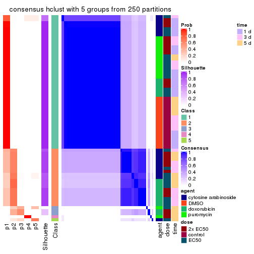
consensus_heatmap(res, k = 6)
Heatmaps for the membership of samples in all partitions to see how consistent they are:
membership_heatmap(res, k = 2)
membership_heatmap(res, k = 3)
membership_heatmap(res, k = 4)
membership_heatmap(res, k = 5)
membership_heatmap(res, k = 6)
As soon as we have had the classes for columns, we can look for signatures which are significantly different between classes which can be candidate marks for certain classes. Following are the heatmaps for signatures.
Signature heatmaps where rows are scaled:
get_signatures(res, k = 2)
get_signatures(res, k = 3)
get_signatures(res, k = 4)
get_signatures(res, k = 5)
get_signatures(res, k = 6)
Signature heatmaps where rows are not scaled:
get_signatures(res, k = 2, scale_rows = FALSE)
get_signatures(res, k = 3, scale_rows = FALSE)
get_signatures(res, k = 4, scale_rows = FALSE)
get_signatures(res, k = 5, scale_rows = FALSE)
get_signatures(res, k = 6, scale_rows = FALSE)
Compare the overlap of signatures from different k:
compare_signatures(res)
get_signature() returns a data frame invisibly. TO get the list of signatures, the function
call should be assigned to a variable explicitly. In following code, if plot argument is set
to FALSE, no heatmap is plotted while only the differential analysis is performed.
# code only for demonstration
tb = get_signature(res, k = ..., plot = FALSE)
An example of the output of tb is:
#> which_row fdr mean_1 mean_2 scaled_mean_1 scaled_mean_2 km
#> 1 38 0.042760348 8.373488 9.131774 -0.5533452 0.5164555 1
#> 2 40 0.018707592 7.106213 8.469186 -0.6173731 0.5762149 1
#> 3 55 0.019134737 10.221463 11.207825 -0.6159697 0.5749050 1
#> 4 59 0.006059896 5.921854 7.869574 -0.6899429 0.6439467 1
#> 5 60 0.018055526 8.928898 10.211722 -0.6204761 0.5791110 1
#> 6 98 0.009384629 15.714769 14.887706 0.6635654 -0.6193277 2
...
The columns in tb are:
which_row: row indices corresponding to the input matrix.fdr: FDR for the differential test. mean_x: The mean value in group x.scaled_mean_x: The mean value in group x after rows are scaled.km: Row groups if k-means clustering is applied to rows.UMAP plot which shows how samples are separated.
dimension_reduction(res, k = 2, method = "UMAP")
dimension_reduction(res, k = 3, method = "UMAP")
dimension_reduction(res, k = 4, method = "UMAP")

dimension_reduction(res, k = 5, method = "UMAP")
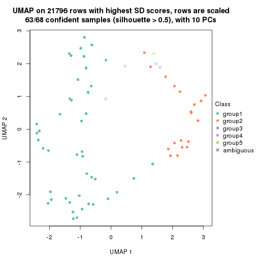
dimension_reduction(res, k = 6, method = "UMAP")
Following heatmap shows how subgroups are split when increasing k:
collect_classes(res)
Test correlation between subgroups and known annotations. If the known annotation is numeric, one-way ANOVA test is applied, and if the known annotation is discrete, chi-squared contingency table test is applied.
test_to_known_factors(res)
#> n agent(p) dose(p) time(p) k
#> SD:hclust 68 9.76e-07 0.00410 0.000133 2
#> SD:hclust 64 5.81e-06 0.00715 0.000301 3
#> SD:hclust 63 8.02e-06 0.00642 0.000229 4
#> SD:hclust 63 8.02e-06 0.00642 0.000229 5
#> SD:hclust 65 1.46e-05 0.00716 0.000172 6
If matrix rows can be associated to genes, consider to use functional_enrichment(res,
...) to perform function enrichment for the signature genes. See this vignette for more detailed explanations.
The object with results only for a single top-value method and a single partition method can be extracted as:
res = res_list["SD", "kmeans"]
# you can also extract it by
# res = res_list["SD:kmeans"]
A summary of res and all the functions that can be applied to it:
res
#> A 'ConsensusPartition' object with k = 2, 3, 4, 5, 6.
#> On a matrix with 21796 rows and 68 columns.
#> Top rows (1000, 2000, 3000, 4000, 5000) are extracted by 'SD' method.
#> Subgroups are detected by 'kmeans' method.
#> Performed in total 1250 partitions by row resampling.
#> Best k for subgroups seems to be 2.
#>
#> Following methods can be applied to this 'ConsensusPartition' object:
#> [1] "cola_report" "collect_classes" "collect_plots"
#> [4] "collect_stats" "colnames" "compare_signatures"
#> [7] "consensus_heatmap" "dimension_reduction" "functional_enrichment"
#> [10] "get_anno_col" "get_anno" "get_classes"
#> [13] "get_consensus" "get_matrix" "get_membership"
#> [16] "get_param" "get_signatures" "get_stats"
#> [19] "is_best_k" "is_stable_k" "membership_heatmap"
#> [22] "ncol" "nrow" "plot_ecdf"
#> [25] "rownames" "select_partition_number" "show"
#> [28] "suggest_best_k" "test_to_known_factors"
collect_plots() function collects all the plots made from res for all k (number of partitions)
into one single page to provide an easy and fast comparison between different k.
collect_plots(res)
The plots are:
k and the heatmap of
predicted classes for each k.k.k.k.All the plots in panels can be made by individual functions and they are plotted later in this section.
select_partition_number() produces several plots showing different
statistics for choosing “optimized” k. There are following statistics:
k;k, the area increased is defined as \(A_k - A_{k-1}\).The detailed explanations of these statistics can be found in the cola vignette.
Generally speaking, lower PAC score, higher mean silhouette score or higher
concordance corresponds to better partition. Rand index and Jaccard index
measure how similar the current partition is compared to partition with k-1.
If they are too similar, we won't accept k is better than k-1.
select_partition_number(res)
The numeric values for all these statistics can be obtained by get_stats().
get_stats(res)
#> k 1-PAC mean_silhouette concordance area_increased Rand Jaccard
#> 2 2 1.000 0.965 0.982 0.4637 0.528 0.528
#> 3 3 0.696 0.828 0.896 0.2536 0.923 0.855
#> 4 4 0.621 0.717 0.802 0.1793 0.860 0.693
#> 5 5 0.632 0.604 0.682 0.0869 0.877 0.623
#> 6 6 0.772 0.689 0.776 0.0535 0.892 0.602
suggest_best_k() suggests the best \(k\) based on these statistics. The rules are as follows:
suggest_best_k(res)
#> [1] 2
Following shows the table of the partitions (You need to click the show/hide
code output link to see it). The membership matrix (columns with name p*)
is inferred by
clue::cl_consensus()
function with the SE method. Basically the value in the membership matrix
represents the probability to belong to a certain group. The finall class
label for an item is determined with the group with highest probability it
belongs to.
In get_classes() function, the entropy is calculated from the membership
matrix and the silhouette score is calculated from the consensus matrix.
cbind(get_classes(res, k = 2), get_membership(res, k = 2))
#> class entropy silhouette p1 p2
#> GSM159850 1 0.000 0.9955 1.000 0.000
#> GSM159851 1 0.000 0.9955 1.000 0.000
#> GSM159852 1 0.000 0.9955 1.000 0.000
#> GSM159853 1 0.000 0.9955 1.000 0.000
#> GSM159854 1 0.000 0.9955 1.000 0.000
#> GSM159855 1 0.000 0.9955 1.000 0.000
#> GSM159856 1 0.000 0.9955 1.000 0.000
#> GSM159857 1 0.000 0.9955 1.000 0.000
#> GSM159858 1 0.000 0.9955 1.000 0.000
#> GSM159859 1 0.000 0.9955 1.000 0.000
#> GSM159860 1 0.000 0.9955 1.000 0.000
#> GSM159861 1 0.000 0.9955 1.000 0.000
#> GSM159862 1 0.000 0.9955 1.000 0.000
#> GSM159863 1 0.000 0.9955 1.000 0.000
#> GSM159864 1 0.000 0.9955 1.000 0.000
#> GSM159865 1 0.000 0.9955 1.000 0.000
#> GSM159866 1 0.000 0.9955 1.000 0.000
#> GSM159885 1 0.000 0.9955 1.000 0.000
#> GSM159886 1 0.000 0.9955 1.000 0.000
#> GSM159887 1 0.000 0.9955 1.000 0.000
#> GSM159888 2 0.184 0.9635 0.028 0.972
#> GSM159889 2 0.184 0.9635 0.028 0.972
#> GSM159890 2 0.184 0.9635 0.028 0.972
#> GSM159891 2 0.000 0.9571 0.000 1.000
#> GSM159892 2 0.000 0.9571 0.000 1.000
#> GSM159893 2 0.000 0.9571 0.000 1.000
#> GSM159894 1 0.000 0.9955 1.000 0.000
#> GSM159895 1 0.000 0.9955 1.000 0.000
#> GSM159896 1 0.000 0.9955 1.000 0.000
#> GSM159897 2 0.184 0.9635 0.028 0.972
#> GSM159898 2 0.184 0.9635 0.028 0.972
#> GSM159899 2 0.184 0.9635 0.028 0.972
#> GSM159900 2 0.000 0.9571 0.000 1.000
#> GSM159901 2 0.000 0.9571 0.000 1.000
#> GSM159902 1 0.000 0.9955 1.000 0.000
#> GSM159903 1 0.000 0.9955 1.000 0.000
#> GSM159904 1 0.000 0.9955 1.000 0.000
#> GSM159905 1 0.000 0.9955 1.000 0.000
#> GSM159906 1 0.000 0.9955 1.000 0.000
#> GSM159907 1 0.000 0.9955 1.000 0.000
#> GSM159908 1 0.000 0.9955 1.000 0.000
#> GSM159909 1 0.000 0.9955 1.000 0.000
#> GSM159910 2 0.529 0.8555 0.120 0.880
#> GSM159911 1 0.000 0.9955 1.000 0.000
#> GSM159912 1 0.000 0.9955 1.000 0.000
#> GSM159913 1 0.000 0.9955 1.000 0.000
#> GSM159914 1 0.000 0.9955 1.000 0.000
#> GSM159915 1 0.000 0.9955 1.000 0.000
#> GSM159916 1 0.000 0.9955 1.000 0.000
#> GSM159917 2 0.999 0.0587 0.484 0.516
#> GSM159867 1 0.000 0.9955 1.000 0.000
#> GSM159868 1 0.000 0.9955 1.000 0.000
#> GSM159869 1 0.000 0.9955 1.000 0.000
#> GSM159870 2 0.204 0.9608 0.032 0.968
#> GSM159871 2 0.204 0.9608 0.032 0.968
#> GSM159872 2 0.000 0.9571 0.000 1.000
#> GSM159873 2 0.000 0.9571 0.000 1.000
#> GSM159874 2 0.000 0.9571 0.000 1.000
#> GSM159875 2 0.000 0.9571 0.000 1.000
#> GSM159876 1 0.000 0.9955 1.000 0.000
#> GSM159877 1 0.697 0.7691 0.812 0.188
#> GSM159878 1 0.000 0.9955 1.000 0.000
#> GSM159879 2 0.184 0.9635 0.028 0.972
#> GSM159880 2 0.184 0.9635 0.028 0.972
#> GSM159881 2 0.184 0.9635 0.028 0.972
#> GSM159882 2 0.184 0.9635 0.028 0.972
#> GSM159883 2 0.184 0.9635 0.028 0.972
#> GSM159884 2 0.184 0.9635 0.028 0.972
cbind(get_classes(res, k = 3), get_membership(res, k = 3))
#> class entropy silhouette p1 p2 p3
#> GSM159850 1 0.0000 0.901 1.000 0.000 0.000
#> GSM159851 1 0.0000 0.901 1.000 0.000 0.000
#> GSM159852 1 0.0000 0.901 1.000 0.000 0.000
#> GSM159853 1 0.0000 0.901 1.000 0.000 0.000
#> GSM159854 1 0.0000 0.901 1.000 0.000 0.000
#> GSM159855 1 0.0000 0.901 1.000 0.000 0.000
#> GSM159856 1 0.0424 0.900 0.992 0.000 0.008
#> GSM159857 1 0.0424 0.900 0.992 0.000 0.008
#> GSM159858 1 0.0592 0.899 0.988 0.000 0.012
#> GSM159859 1 0.0592 0.899 0.988 0.000 0.012
#> GSM159860 1 0.0592 0.899 0.988 0.000 0.012
#> GSM159861 1 0.3454 0.856 0.888 0.008 0.104
#> GSM159862 1 0.3532 0.853 0.884 0.008 0.108
#> GSM159863 1 0.3532 0.853 0.884 0.008 0.108
#> GSM159864 1 0.3755 0.843 0.872 0.008 0.120
#> GSM159865 1 0.3755 0.843 0.872 0.008 0.120
#> GSM159866 1 0.3755 0.843 0.872 0.008 0.120
#> GSM159885 1 0.7030 0.440 0.580 0.024 0.396
#> GSM159886 1 0.0237 0.901 0.996 0.004 0.000
#> GSM159887 1 0.4539 0.817 0.836 0.016 0.148
#> GSM159888 2 0.0424 0.895 0.008 0.992 0.000
#> GSM159889 2 0.0424 0.895 0.008 0.992 0.000
#> GSM159890 2 0.0424 0.895 0.008 0.992 0.000
#> GSM159891 2 0.1031 0.884 0.000 0.976 0.024
#> GSM159892 2 0.1031 0.884 0.000 0.976 0.024
#> GSM159893 2 0.1031 0.884 0.000 0.976 0.024
#> GSM159894 1 0.4483 0.822 0.848 0.024 0.128
#> GSM159895 1 0.6482 0.614 0.680 0.024 0.296
#> GSM159896 1 0.7001 0.444 0.588 0.024 0.388
#> GSM159897 2 0.0424 0.895 0.008 0.992 0.000
#> GSM159898 2 0.0424 0.895 0.008 0.992 0.000
#> GSM159899 2 0.0424 0.895 0.008 0.992 0.000
#> GSM159900 3 0.5650 0.742 0.000 0.312 0.688
#> GSM159901 3 0.5733 0.727 0.000 0.324 0.676
#> GSM159902 1 0.2200 0.893 0.940 0.004 0.056
#> GSM159903 1 0.1267 0.899 0.972 0.004 0.024
#> GSM159904 1 0.1647 0.897 0.960 0.004 0.036
#> GSM159905 1 0.1267 0.899 0.972 0.004 0.024
#> GSM159906 1 0.1129 0.899 0.976 0.004 0.020
#> GSM159907 1 0.1129 0.899 0.976 0.004 0.020
#> GSM159908 1 0.1765 0.898 0.956 0.004 0.040
#> GSM159909 1 0.2096 0.894 0.944 0.004 0.052
#> GSM159910 3 0.2998 0.825 0.016 0.068 0.916
#> GSM159911 1 0.6330 0.489 0.600 0.004 0.396
#> GSM159912 1 0.1267 0.899 0.972 0.004 0.024
#> GSM159913 1 0.1267 0.899 0.972 0.004 0.024
#> GSM159914 1 0.1267 0.899 0.972 0.004 0.024
#> GSM159915 1 0.1267 0.899 0.972 0.004 0.024
#> GSM159916 1 0.1267 0.899 0.972 0.004 0.024
#> GSM159917 3 0.3083 0.791 0.060 0.024 0.916
#> GSM159867 1 0.4128 0.825 0.856 0.012 0.132
#> GSM159868 1 0.6896 0.436 0.588 0.020 0.392
#> GSM159869 1 0.6896 0.436 0.588 0.020 0.392
#> GSM159870 2 0.3695 0.891 0.012 0.880 0.108
#> GSM159871 2 0.3695 0.891 0.012 0.880 0.108
#> GSM159872 3 0.3267 0.829 0.000 0.116 0.884
#> GSM159873 2 0.6126 0.258 0.000 0.600 0.400
#> GSM159874 3 0.3941 0.818 0.000 0.156 0.844
#> GSM159875 3 0.5529 0.665 0.000 0.296 0.704
#> GSM159876 1 0.1182 0.896 0.976 0.012 0.012
#> GSM159877 3 0.3359 0.782 0.084 0.016 0.900
#> GSM159878 1 0.0475 0.900 0.992 0.004 0.004
#> GSM159879 2 0.3695 0.891 0.012 0.880 0.108
#> GSM159880 2 0.3695 0.891 0.012 0.880 0.108
#> GSM159881 2 0.3695 0.891 0.012 0.880 0.108
#> GSM159882 2 0.3695 0.891 0.012 0.880 0.108
#> GSM159883 2 0.3695 0.891 0.012 0.880 0.108
#> GSM159884 2 0.3695 0.891 0.012 0.880 0.108
cbind(get_classes(res, k = 4), get_membership(res, k = 4))
#> class entropy silhouette p1 p2 p3 p4
#> GSM159850 1 0.0707 0.7755 0.980 0.000 0.000 0.020
#> GSM159851 1 0.0707 0.7755 0.980 0.000 0.000 0.020
#> GSM159852 1 0.0707 0.7755 0.980 0.000 0.000 0.020
#> GSM159853 1 0.0592 0.7755 0.984 0.000 0.000 0.016
#> GSM159854 1 0.0469 0.7757 0.988 0.000 0.000 0.012
#> GSM159855 1 0.0469 0.7757 0.988 0.000 0.000 0.012
#> GSM159856 1 0.0707 0.7744 0.980 0.000 0.000 0.020
#> GSM159857 1 0.0707 0.7744 0.980 0.000 0.000 0.020
#> GSM159858 1 0.1004 0.7754 0.972 0.000 0.004 0.024
#> GSM159859 1 0.1004 0.7754 0.972 0.000 0.004 0.024
#> GSM159860 1 0.1004 0.7754 0.972 0.000 0.004 0.024
#> GSM159861 1 0.5228 0.5162 0.664 0.000 0.024 0.312
#> GSM159862 1 0.5271 0.5041 0.656 0.000 0.024 0.320
#> GSM159863 1 0.5228 0.5162 0.664 0.000 0.024 0.312
#> GSM159864 1 0.5010 0.5585 0.700 0.000 0.024 0.276
#> GSM159865 1 0.5010 0.5585 0.700 0.000 0.024 0.276
#> GSM159866 1 0.5010 0.5585 0.700 0.000 0.024 0.276
#> GSM159885 4 0.7188 0.8588 0.252 0.004 0.176 0.568
#> GSM159886 1 0.0707 0.7752 0.980 0.000 0.000 0.020
#> GSM159887 4 0.6565 0.8473 0.304 0.004 0.092 0.600
#> GSM159888 2 0.0000 0.8431 0.000 1.000 0.000 0.000
#> GSM159889 2 0.0000 0.8431 0.000 1.000 0.000 0.000
#> GSM159890 2 0.0000 0.8431 0.000 1.000 0.000 0.000
#> GSM159891 2 0.2125 0.8023 0.000 0.920 0.076 0.004
#> GSM159892 2 0.2125 0.8023 0.000 0.920 0.076 0.004
#> GSM159893 2 0.2125 0.8023 0.000 0.920 0.076 0.004
#> GSM159894 4 0.6798 0.8427 0.348 0.004 0.096 0.552
#> GSM159895 4 0.7126 0.8737 0.296 0.004 0.144 0.556
#> GSM159896 4 0.7255 0.8636 0.264 0.004 0.176 0.556
#> GSM159897 2 0.0376 0.8405 0.000 0.992 0.004 0.004
#> GSM159898 2 0.0376 0.8405 0.000 0.992 0.004 0.004
#> GSM159899 2 0.0376 0.8405 0.000 0.992 0.004 0.004
#> GSM159900 3 0.4220 0.6660 0.000 0.248 0.748 0.004
#> GSM159901 3 0.4313 0.6518 0.000 0.260 0.736 0.004
#> GSM159902 4 0.4977 0.3590 0.460 0.000 0.000 0.540
#> GSM159903 1 0.4543 0.4035 0.676 0.000 0.000 0.324
#> GSM159904 1 0.4898 0.1056 0.584 0.000 0.000 0.416
#> GSM159905 1 0.2647 0.7399 0.880 0.000 0.000 0.120
#> GSM159906 1 0.2589 0.7407 0.884 0.000 0.000 0.116
#> GSM159907 1 0.2589 0.7407 0.884 0.000 0.000 0.116
#> GSM159908 1 0.4830 0.2220 0.608 0.000 0.000 0.392
#> GSM159909 1 0.4955 -0.0204 0.556 0.000 0.000 0.444
#> GSM159910 3 0.4122 0.7621 0.000 0.004 0.760 0.236
#> GSM159911 4 0.6685 0.8131 0.268 0.000 0.132 0.600
#> GSM159912 1 0.2704 0.7387 0.876 0.000 0.000 0.124
#> GSM159913 1 0.4277 0.5039 0.720 0.000 0.000 0.280
#> GSM159914 1 0.2647 0.7399 0.880 0.000 0.000 0.120
#> GSM159915 1 0.2647 0.7399 0.880 0.000 0.000 0.120
#> GSM159916 1 0.2647 0.7399 0.880 0.000 0.000 0.120
#> GSM159917 3 0.4220 0.7483 0.004 0.000 0.748 0.248
#> GSM159867 4 0.6835 0.8276 0.360 0.004 0.096 0.540
#> GSM159868 4 0.7255 0.8636 0.264 0.004 0.176 0.556
#> GSM159869 4 0.7255 0.8636 0.264 0.004 0.176 0.556
#> GSM159870 2 0.4710 0.8420 0.000 0.792 0.120 0.088
#> GSM159871 2 0.4710 0.8420 0.000 0.792 0.120 0.088
#> GSM159872 3 0.4323 0.7738 0.000 0.020 0.776 0.204
#> GSM159873 2 0.6665 0.5216 0.000 0.544 0.360 0.096
#> GSM159874 3 0.2522 0.7700 0.000 0.016 0.908 0.076
#> GSM159875 3 0.5716 0.4760 0.000 0.212 0.700 0.088
#> GSM159876 1 0.2053 0.7466 0.924 0.004 0.000 0.072
#> GSM159877 3 0.4567 0.7494 0.012 0.004 0.748 0.236
#> GSM159878 1 0.1978 0.7501 0.928 0.004 0.000 0.068
#> GSM159879 2 0.4710 0.8420 0.000 0.792 0.120 0.088
#> GSM159880 2 0.4710 0.8420 0.000 0.792 0.120 0.088
#> GSM159881 2 0.4710 0.8420 0.000 0.792 0.120 0.088
#> GSM159882 2 0.4710 0.8420 0.000 0.792 0.120 0.088
#> GSM159883 2 0.4710 0.8420 0.000 0.792 0.120 0.088
#> GSM159884 2 0.4710 0.8420 0.000 0.792 0.120 0.088
cbind(get_classes(res, k = 5), get_membership(res, k = 5))
#> class entropy silhouette p1 p2 p3 p4 p5
#> GSM159850 1 0.5330 0.466 0.548 0.000 0.000 0.056 0.396
#> GSM159851 1 0.5330 0.466 0.548 0.000 0.000 0.056 0.396
#> GSM159852 1 0.5330 0.466 0.548 0.000 0.000 0.056 0.396
#> GSM159853 1 0.5272 0.472 0.552 0.000 0.000 0.052 0.396
#> GSM159854 1 0.5330 0.466 0.548 0.000 0.000 0.056 0.396
#> GSM159855 1 0.5330 0.466 0.548 0.000 0.000 0.056 0.396
#> GSM159856 1 0.5010 0.482 0.572 0.000 0.000 0.036 0.392
#> GSM159857 1 0.5010 0.482 0.572 0.000 0.000 0.036 0.392
#> GSM159858 1 0.4620 0.453 0.592 0.000 0.000 0.016 0.392
#> GSM159859 1 0.4620 0.453 0.592 0.000 0.000 0.016 0.392
#> GSM159860 1 0.4620 0.453 0.592 0.000 0.000 0.016 0.392
#> GSM159861 1 0.2420 0.316 0.896 0.000 0.008 0.088 0.008
#> GSM159862 1 0.2533 0.307 0.888 0.000 0.008 0.096 0.008
#> GSM159863 1 0.2420 0.316 0.896 0.000 0.008 0.088 0.008
#> GSM159864 1 0.1195 0.355 0.960 0.000 0.012 0.028 0.000
#> GSM159865 1 0.1195 0.355 0.960 0.000 0.012 0.028 0.000
#> GSM159866 1 0.1195 0.355 0.960 0.000 0.012 0.028 0.000
#> GSM159885 4 0.2871 0.859 0.040 0.000 0.000 0.872 0.088
#> GSM159886 1 0.5330 0.466 0.548 0.000 0.000 0.056 0.396
#> GSM159887 4 0.2927 0.860 0.040 0.000 0.000 0.868 0.092
#> GSM159888 2 0.5007 0.776 0.000 0.744 0.136 0.024 0.096
#> GSM159889 2 0.5007 0.776 0.000 0.744 0.136 0.024 0.096
#> GSM159890 2 0.5007 0.776 0.000 0.744 0.136 0.024 0.096
#> GSM159891 2 0.6163 0.658 0.000 0.572 0.312 0.024 0.092
#> GSM159892 2 0.6178 0.653 0.000 0.568 0.316 0.024 0.092
#> GSM159893 2 0.6163 0.658 0.000 0.572 0.312 0.024 0.092
#> GSM159894 4 0.3033 0.859 0.052 0.000 0.000 0.864 0.084
#> GSM159895 4 0.2903 0.861 0.048 0.000 0.000 0.872 0.080
#> GSM159896 4 0.2903 0.861 0.048 0.000 0.000 0.872 0.080
#> GSM159897 2 0.5049 0.774 0.000 0.740 0.140 0.024 0.096
#> GSM159898 2 0.5049 0.774 0.000 0.740 0.140 0.024 0.096
#> GSM159899 2 0.5049 0.774 0.000 0.740 0.140 0.024 0.096
#> GSM159900 3 0.0693 0.672 0.000 0.012 0.980 0.008 0.000
#> GSM159901 3 0.0981 0.666 0.000 0.012 0.972 0.008 0.008
#> GSM159902 4 0.5202 0.583 0.056 0.000 0.000 0.596 0.348
#> GSM159903 5 0.6166 0.255 0.148 0.000 0.000 0.340 0.512
#> GSM159904 4 0.5901 0.333 0.104 0.000 0.000 0.496 0.400
#> GSM159905 5 0.4886 0.624 0.372 0.000 0.000 0.032 0.596
#> GSM159906 5 0.4537 0.550 0.396 0.000 0.000 0.012 0.592
#> GSM159907 5 0.4527 0.562 0.392 0.000 0.000 0.012 0.596
#> GSM159908 5 0.6274 -0.144 0.148 0.000 0.000 0.420 0.432
#> GSM159909 4 0.5723 0.413 0.088 0.000 0.000 0.520 0.392
#> GSM159910 3 0.6580 0.744 0.000 0.008 0.508 0.192 0.292
#> GSM159911 4 0.4021 0.796 0.052 0.000 0.000 0.780 0.168
#> GSM159912 5 0.4946 0.621 0.368 0.000 0.000 0.036 0.596
#> GSM159913 5 0.6087 0.485 0.188 0.000 0.000 0.244 0.568
#> GSM159914 5 0.4886 0.624 0.372 0.000 0.000 0.032 0.596
#> GSM159915 5 0.4886 0.624 0.372 0.000 0.000 0.032 0.596
#> GSM159916 5 0.4886 0.624 0.372 0.000 0.000 0.032 0.596
#> GSM159917 3 0.6493 0.740 0.000 0.004 0.508 0.196 0.292
#> GSM159867 4 0.3102 0.856 0.056 0.000 0.000 0.860 0.084
#> GSM159868 4 0.2903 0.861 0.048 0.000 0.000 0.872 0.080
#> GSM159869 4 0.2903 0.861 0.048 0.000 0.000 0.872 0.080
#> GSM159870 2 0.0794 0.782 0.000 0.972 0.000 0.028 0.000
#> GSM159871 2 0.0794 0.782 0.000 0.972 0.000 0.028 0.000
#> GSM159872 3 0.7523 0.749 0.000 0.076 0.476 0.180 0.268
#> GSM159873 2 0.5224 0.404 0.000 0.644 0.276 0.080 0.000
#> GSM159874 3 0.4071 0.729 0.000 0.052 0.816 0.104 0.028
#> GSM159875 3 0.5505 0.417 0.000 0.328 0.588 0.084 0.000
#> GSM159876 1 0.5929 0.455 0.552 0.024 0.000 0.060 0.364
#> GSM159877 3 0.7542 0.742 0.000 0.068 0.464 0.200 0.268
#> GSM159878 1 0.5737 0.467 0.552 0.016 0.000 0.056 0.376
#> GSM159879 2 0.0794 0.782 0.000 0.972 0.000 0.028 0.000
#> GSM159880 2 0.0794 0.782 0.000 0.972 0.000 0.028 0.000
#> GSM159881 2 0.0794 0.782 0.000 0.972 0.000 0.028 0.000
#> GSM159882 2 0.0703 0.783 0.000 0.976 0.000 0.024 0.000
#> GSM159883 2 0.0703 0.783 0.000 0.976 0.000 0.024 0.000
#> GSM159884 2 0.0703 0.783 0.000 0.976 0.000 0.024 0.000
cbind(get_classes(res, k = 6), get_membership(res, k = 6))
#> class entropy silhouette p1 p2 p3 p4 p5 p6
#> GSM159850 1 0.0692 0.7648 0.976 0.000 0.004 0.020 0.000 0.000
#> GSM159851 1 0.0692 0.7648 0.976 0.000 0.004 0.020 0.000 0.000
#> GSM159852 1 0.0692 0.7648 0.976 0.000 0.004 0.020 0.000 0.000
#> GSM159853 1 0.0692 0.7648 0.976 0.000 0.004 0.020 0.000 0.000
#> GSM159854 1 0.0692 0.7648 0.976 0.000 0.004 0.020 0.000 0.000
#> GSM159855 1 0.0692 0.7648 0.976 0.000 0.004 0.020 0.000 0.000
#> GSM159856 1 0.0603 0.7539 0.980 0.000 0.000 0.004 0.016 0.000
#> GSM159857 1 0.0622 0.7552 0.980 0.000 0.000 0.008 0.012 0.000
#> GSM159858 1 0.0858 0.7512 0.968 0.000 0.004 0.000 0.028 0.000
#> GSM159859 1 0.0858 0.7512 0.968 0.000 0.004 0.000 0.028 0.000
#> GSM159860 1 0.0858 0.7512 0.968 0.000 0.004 0.000 0.028 0.000
#> GSM159861 5 0.4962 0.9448 0.280 0.000 0.020 0.060 0.640 0.000
#> GSM159862 5 0.4962 0.9448 0.280 0.000 0.020 0.060 0.640 0.000
#> GSM159863 5 0.4962 0.9448 0.280 0.000 0.020 0.060 0.640 0.000
#> GSM159864 5 0.4150 0.9446 0.320 0.000 0.000 0.028 0.652 0.000
#> GSM159865 5 0.4150 0.9446 0.320 0.000 0.000 0.028 0.652 0.000
#> GSM159866 5 0.4150 0.9446 0.320 0.000 0.000 0.028 0.652 0.000
#> GSM159885 4 0.1686 0.7975 0.052 0.000 0.008 0.932 0.004 0.004
#> GSM159886 1 0.0951 0.7652 0.968 0.000 0.008 0.020 0.004 0.000
#> GSM159887 4 0.1757 0.7960 0.052 0.000 0.012 0.928 0.008 0.000
#> GSM159888 2 0.5494 0.6758 0.000 0.644 0.168 0.008 0.164 0.016
#> GSM159889 2 0.5494 0.6758 0.000 0.644 0.168 0.008 0.164 0.016
#> GSM159890 2 0.5494 0.6758 0.000 0.644 0.168 0.008 0.164 0.016
#> GSM159891 2 0.6466 0.4146 0.000 0.404 0.392 0.000 0.164 0.040
#> GSM159892 2 0.6466 0.4146 0.000 0.404 0.392 0.000 0.164 0.040
#> GSM159893 2 0.6466 0.4146 0.000 0.404 0.392 0.000 0.164 0.040
#> GSM159894 4 0.1524 0.7976 0.060 0.008 0.000 0.932 0.000 0.000
#> GSM159895 4 0.1606 0.7978 0.056 0.008 0.000 0.932 0.000 0.004
#> GSM159896 4 0.1606 0.7978 0.056 0.008 0.000 0.932 0.000 0.004
#> GSM159897 2 0.5603 0.6724 0.000 0.636 0.172 0.008 0.164 0.020
#> GSM159898 2 0.5603 0.6724 0.000 0.636 0.172 0.008 0.164 0.020
#> GSM159899 2 0.5603 0.6724 0.000 0.636 0.172 0.008 0.164 0.020
#> GSM159900 3 0.5493 0.6753 0.000 0.000 0.544 0.016 0.092 0.348
#> GSM159901 3 0.5483 0.6747 0.000 0.000 0.548 0.016 0.092 0.344
#> GSM159902 4 0.5132 0.6617 0.080 0.000 0.236 0.656 0.028 0.000
#> GSM159903 1 0.6773 -0.1400 0.336 0.000 0.312 0.316 0.036 0.000
#> GSM159904 4 0.6365 0.5059 0.176 0.000 0.308 0.480 0.036 0.000
#> GSM159905 1 0.4152 0.6547 0.696 0.000 0.268 0.028 0.008 0.000
#> GSM159906 1 0.3721 0.6730 0.728 0.000 0.252 0.016 0.004 0.000
#> GSM159907 1 0.3721 0.6730 0.728 0.000 0.252 0.016 0.004 0.000
#> GSM159908 4 0.6717 0.3525 0.244 0.000 0.316 0.400 0.040 0.000
#> GSM159909 4 0.6144 0.5542 0.132 0.000 0.312 0.516 0.040 0.000
#> GSM159910 6 0.2279 0.8570 0.000 0.000 0.004 0.048 0.048 0.900
#> GSM159911 4 0.3378 0.7616 0.064 0.000 0.068 0.840 0.028 0.000
#> GSM159912 1 0.4243 0.6535 0.688 0.000 0.272 0.032 0.008 0.000
#> GSM159913 1 0.6245 0.3764 0.492 0.000 0.312 0.164 0.032 0.000
#> GSM159914 1 0.4152 0.6547 0.696 0.000 0.268 0.028 0.008 0.000
#> GSM159915 1 0.4152 0.6547 0.696 0.000 0.268 0.028 0.008 0.000
#> GSM159916 1 0.4152 0.6547 0.696 0.000 0.268 0.028 0.008 0.000
#> GSM159917 6 0.1367 0.8666 0.000 0.000 0.000 0.044 0.012 0.944
#> GSM159867 4 0.1524 0.7952 0.060 0.008 0.000 0.932 0.000 0.000
#> GSM159868 4 0.1542 0.7952 0.052 0.008 0.000 0.936 0.000 0.004
#> GSM159869 4 0.1542 0.7952 0.052 0.008 0.000 0.936 0.000 0.004
#> GSM159870 2 0.0508 0.6901 0.000 0.984 0.000 0.012 0.004 0.000
#> GSM159871 2 0.0508 0.6901 0.000 0.984 0.000 0.012 0.004 0.000
#> GSM159872 6 0.3275 0.8686 0.000 0.064 0.016 0.068 0.004 0.848
#> GSM159873 2 0.6205 -0.0635 0.000 0.568 0.280 0.080 0.052 0.020
#> GSM159874 3 0.6859 0.5349 0.000 0.036 0.424 0.076 0.068 0.396
#> GSM159875 3 0.7727 0.4428 0.000 0.308 0.400 0.072 0.064 0.156
#> GSM159876 1 0.1546 0.7364 0.944 0.020 0.000 0.020 0.016 0.000
#> GSM159877 6 0.3389 0.8649 0.004 0.064 0.008 0.080 0.004 0.840
#> GSM159878 1 0.1546 0.7364 0.944 0.020 0.000 0.020 0.016 0.000
#> GSM159879 2 0.0363 0.6921 0.000 0.988 0.000 0.012 0.000 0.000
#> GSM159880 2 0.0363 0.6921 0.000 0.988 0.000 0.012 0.000 0.000
#> GSM159881 2 0.0363 0.6921 0.000 0.988 0.000 0.012 0.000 0.000
#> GSM159882 2 0.0260 0.6935 0.000 0.992 0.000 0.008 0.000 0.000
#> GSM159883 2 0.0260 0.6935 0.000 0.992 0.000 0.008 0.000 0.000
#> GSM159884 2 0.0260 0.6935 0.000 0.992 0.000 0.008 0.000 0.000
Heatmaps for the consensus matrix. It visualizes the probability of two samples to be in a same group.
consensus_heatmap(res, k = 2)
consensus_heatmap(res, k = 3)
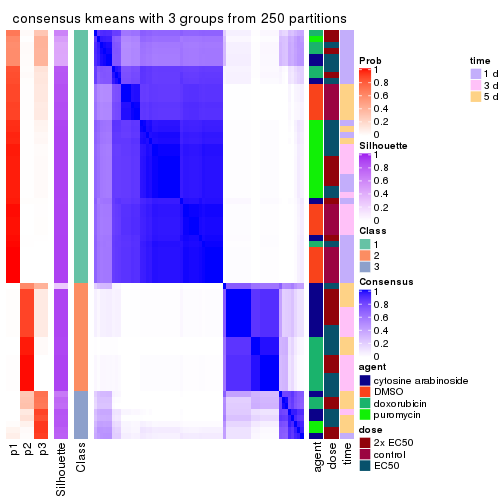
consensus_heatmap(res, k = 4)
consensus_heatmap(res, k = 5)
consensus_heatmap(res, k = 6)
Heatmaps for the membership of samples in all partitions to see how consistent they are:
membership_heatmap(res, k = 2)
membership_heatmap(res, k = 3)
membership_heatmap(res, k = 4)
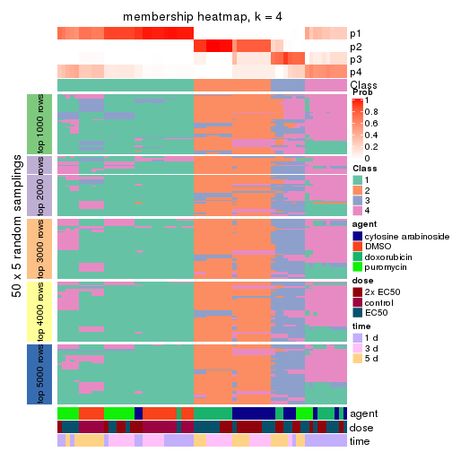
membership_heatmap(res, k = 5)
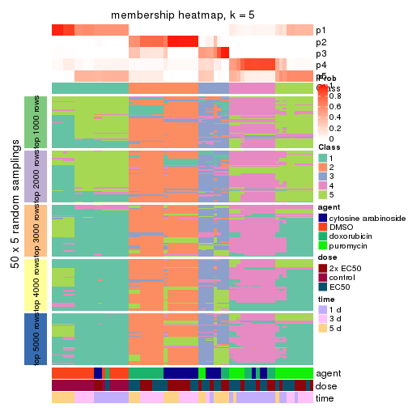
membership_heatmap(res, k = 6)
As soon as we have had the classes for columns, we can look for signatures which are significantly different between classes which can be candidate marks for certain classes. Following are the heatmaps for signatures.
Signature heatmaps where rows are scaled:
get_signatures(res, k = 2)
get_signatures(res, k = 3)
get_signatures(res, k = 4)
get_signatures(res, k = 5)
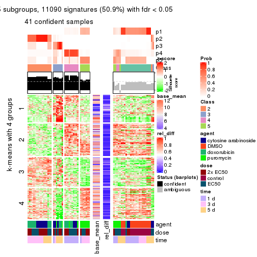
get_signatures(res, k = 6)
Signature heatmaps where rows are not scaled:
get_signatures(res, k = 2, scale_rows = FALSE)
get_signatures(res, k = 3, scale_rows = FALSE)
get_signatures(res, k = 4, scale_rows = FALSE)
get_signatures(res, k = 5, scale_rows = FALSE)
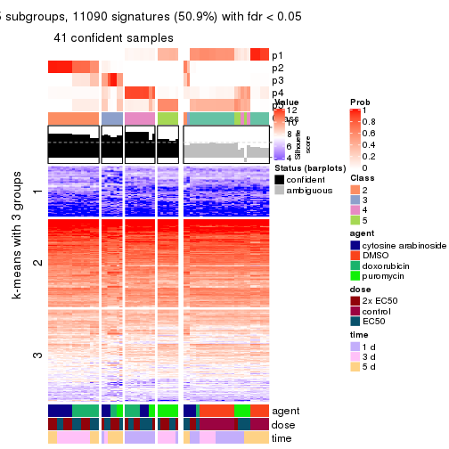
get_signatures(res, k = 6, scale_rows = FALSE)
Compare the overlap of signatures from different k:
compare_signatures(res)
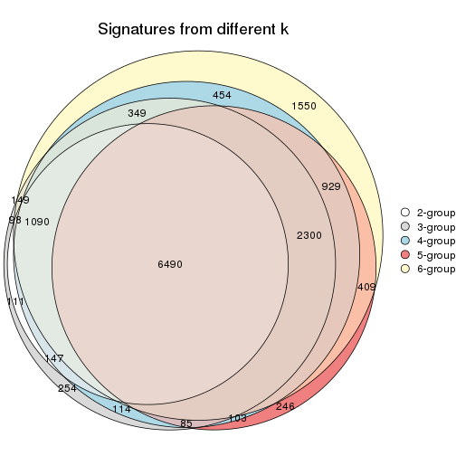
get_signature() returns a data frame invisibly. TO get the list of signatures, the function
call should be assigned to a variable explicitly. In following code, if plot argument is set
to FALSE, no heatmap is plotted while only the differential analysis is performed.
# code only for demonstration
tb = get_signature(res, k = ..., plot = FALSE)
An example of the output of tb is:
#> which_row fdr mean_1 mean_2 scaled_mean_1 scaled_mean_2 km
#> 1 38 0.042760348 8.373488 9.131774 -0.5533452 0.5164555 1
#> 2 40 0.018707592 7.106213 8.469186 -0.6173731 0.5762149 1
#> 3 55 0.019134737 10.221463 11.207825 -0.6159697 0.5749050 1
#> 4 59 0.006059896 5.921854 7.869574 -0.6899429 0.6439467 1
#> 5 60 0.018055526 8.928898 10.211722 -0.6204761 0.5791110 1
#> 6 98 0.009384629 15.714769 14.887706 0.6635654 -0.6193277 2
...
The columns in tb are:
which_row: row indices corresponding to the input matrix.fdr: FDR for the differential test. mean_x: The mean value in group x.scaled_mean_x: The mean value in group x after rows are scaled.km: Row groups if k-means clustering is applied to rows.UMAP plot which shows how samples are separated.
dimension_reduction(res, k = 2, method = "UMAP")
dimension_reduction(res, k = 3, method = "UMAP")
dimension_reduction(res, k = 4, method = "UMAP")
dimension_reduction(res, k = 5, method = "UMAP")
dimension_reduction(res, k = 6, method = "UMAP")

Following heatmap shows how subgroups are split when increasing k:
collect_classes(res)
Test correlation between subgroups and known annotations. If the known annotation is numeric, one-way ANOVA test is applied, and if the known annotation is discrete, chi-squared contingency table test is applied.
test_to_known_factors(res)
#> n agent(p) dose(p) time(p) k
#> SD:kmeans 67 2.65e-06 1.73e-03 2.55e-05 2
#> SD:kmeans 62 3.00e-06 2.92e-03 2.89e-04 3
#> SD:kmeans 62 5.08e-07 5.44e-05 6.69e-06 4
#> SD:kmeans 41 2.03e-04 8.68e-01 8.87e-08 5
#> SD:kmeans 60 2.09e-06 3.38e-05 1.32e-09 6
If matrix rows can be associated to genes, consider to use functional_enrichment(res,
...) to perform function enrichment for the signature genes. See this vignette for more detailed explanations.
The object with results only for a single top-value method and a single partition method can be extracted as:
res = res_list["SD", "skmeans"]
# you can also extract it by
# res = res_list["SD:skmeans"]
A summary of res and all the functions that can be applied to it:
res
#> A 'ConsensusPartition' object with k = 2, 3, 4, 5, 6.
#> On a matrix with 21796 rows and 68 columns.
#> Top rows (1000, 2000, 3000, 4000, 5000) are extracted by 'SD' method.
#> Subgroups are detected by 'skmeans' method.
#> Performed in total 1250 partitions by row resampling.
#> Best k for subgroups seems to be 2.
#>
#> Following methods can be applied to this 'ConsensusPartition' object:
#> [1] "cola_report" "collect_classes" "collect_plots"
#> [4] "collect_stats" "colnames" "compare_signatures"
#> [7] "consensus_heatmap" "dimension_reduction" "functional_enrichment"
#> [10] "get_anno_col" "get_anno" "get_classes"
#> [13] "get_consensus" "get_matrix" "get_membership"
#> [16] "get_param" "get_signatures" "get_stats"
#> [19] "is_best_k" "is_stable_k" "membership_heatmap"
#> [22] "ncol" "nrow" "plot_ecdf"
#> [25] "rownames" "select_partition_number" "show"
#> [28] "suggest_best_k" "test_to_known_factors"
collect_plots() function collects all the plots made from res for all k (number of partitions)
into one single page to provide an easy and fast comparison between different k.
collect_plots(res)
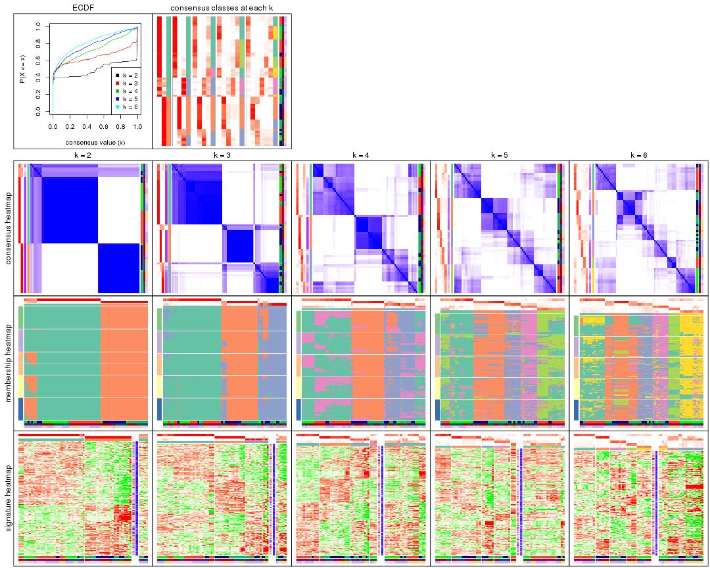
The plots are:
k and the heatmap of
predicted classes for each k.k.k.k.All the plots in panels can be made by individual functions and they are plotted later in this section.
select_partition_number() produces several plots showing different
statistics for choosing “optimized” k. There are following statistics:
k;k, the area increased is defined as \(A_k - A_{k-1}\).The detailed explanations of these statistics can be found in the cola vignette.
Generally speaking, lower PAC score, higher mean silhouette score or higher
concordance corresponds to better partition. Rand index and Jaccard index
measure how similar the current partition is compared to partition with k-1.
If they are too similar, we won't accept k is better than k-1.
select_partition_number(res)
The numeric values for all these statistics can be obtained by get_stats().
get_stats(res)
#> k 1-PAC mean_silhouette concordance area_increased Rand Jaccard
#> 2 2 0.908 0.900 0.959 0.4922 0.521 0.521
#> 3 3 0.832 0.828 0.931 0.3156 0.781 0.599
#> 4 4 0.613 0.570 0.734 0.1368 0.903 0.737
#> 5 5 0.610 0.528 0.713 0.0711 0.847 0.525
#> 6 6 0.640 0.533 0.673 0.0449 0.875 0.496
suggest_best_k() suggests the best \(k\) based on these statistics. The rules are as follows:
suggest_best_k(res)
#> [1] 2
Following shows the table of the partitions (You need to click the show/hide
code output link to see it). The membership matrix (columns with name p*)
is inferred by
clue::cl_consensus()
function with the SE method. Basically the value in the membership matrix
represents the probability to belong to a certain group. The finall class
label for an item is determined with the group with highest probability it
belongs to.
In get_classes() function, the entropy is calculated from the membership
matrix and the silhouette score is calculated from the consensus matrix.
cbind(get_classes(res, k = 2), get_membership(res, k = 2))
#> class entropy silhouette p1 p2
#> GSM159850 1 0.0000 0.930 1.000 0.000
#> GSM159851 1 0.0000 0.930 1.000 0.000
#> GSM159852 1 0.0000 0.930 1.000 0.000
#> GSM159853 1 0.0000 0.930 1.000 0.000
#> GSM159854 1 0.0000 0.930 1.000 0.000
#> GSM159855 1 0.0000 0.930 1.000 0.000
#> GSM159856 1 0.0000 0.930 1.000 0.000
#> GSM159857 1 0.0000 0.930 1.000 0.000
#> GSM159858 1 0.0000 0.930 1.000 0.000
#> GSM159859 1 0.0000 0.930 1.000 0.000
#> GSM159860 1 0.0000 0.930 1.000 0.000
#> GSM159861 1 0.0000 0.930 1.000 0.000
#> GSM159862 1 0.0000 0.930 1.000 0.000
#> GSM159863 1 0.0000 0.930 1.000 0.000
#> GSM159864 1 0.0000 0.930 1.000 0.000
#> GSM159865 1 0.0000 0.930 1.000 0.000
#> GSM159866 1 0.0000 0.930 1.000 0.000
#> GSM159885 1 0.9998 0.159 0.508 0.492
#> GSM159886 1 0.0000 0.930 1.000 0.000
#> GSM159887 1 0.6887 0.756 0.816 0.184
#> GSM159888 2 0.0000 0.999 0.000 1.000
#> GSM159889 2 0.0000 0.999 0.000 1.000
#> GSM159890 2 0.0000 0.999 0.000 1.000
#> GSM159891 2 0.0000 0.999 0.000 1.000
#> GSM159892 2 0.0000 0.999 0.000 1.000
#> GSM159893 2 0.0000 0.999 0.000 1.000
#> GSM159894 1 0.9170 0.544 0.668 0.332
#> GSM159895 1 0.9775 0.383 0.588 0.412
#> GSM159896 1 0.9998 0.160 0.508 0.492
#> GSM159897 2 0.0000 0.999 0.000 1.000
#> GSM159898 2 0.0000 0.999 0.000 1.000
#> GSM159899 2 0.0000 0.999 0.000 1.000
#> GSM159900 2 0.0000 0.999 0.000 1.000
#> GSM159901 2 0.0000 0.999 0.000 1.000
#> GSM159902 1 0.0000 0.930 1.000 0.000
#> GSM159903 1 0.0000 0.930 1.000 0.000
#> GSM159904 1 0.0000 0.930 1.000 0.000
#> GSM159905 1 0.0000 0.930 1.000 0.000
#> GSM159906 1 0.0000 0.930 1.000 0.000
#> GSM159907 1 0.0000 0.930 1.000 0.000
#> GSM159908 1 0.0000 0.930 1.000 0.000
#> GSM159909 1 0.0000 0.930 1.000 0.000
#> GSM159910 2 0.0000 0.999 0.000 1.000
#> GSM159911 1 0.0000 0.930 1.000 0.000
#> GSM159912 1 0.0000 0.930 1.000 0.000
#> GSM159913 1 0.0000 0.930 1.000 0.000
#> GSM159914 1 0.0000 0.930 1.000 0.000
#> GSM159915 1 0.0000 0.930 1.000 0.000
#> GSM159916 1 0.0000 0.930 1.000 0.000
#> GSM159917 2 0.0938 0.986 0.012 0.988
#> GSM159867 1 0.0376 0.927 0.996 0.004
#> GSM159868 1 0.9909 0.303 0.556 0.444
#> GSM159869 1 0.9754 0.392 0.592 0.408
#> GSM159870 2 0.0000 0.999 0.000 1.000
#> GSM159871 2 0.0000 0.999 0.000 1.000
#> GSM159872 2 0.0000 0.999 0.000 1.000
#> GSM159873 2 0.0000 0.999 0.000 1.000
#> GSM159874 2 0.0000 0.999 0.000 1.000
#> GSM159875 2 0.0000 0.999 0.000 1.000
#> GSM159876 1 0.0938 0.921 0.988 0.012
#> GSM159877 2 0.0000 0.999 0.000 1.000
#> GSM159878 1 0.0000 0.930 1.000 0.000
#> GSM159879 2 0.0000 0.999 0.000 1.000
#> GSM159880 2 0.0000 0.999 0.000 1.000
#> GSM159881 2 0.0000 0.999 0.000 1.000
#> GSM159882 2 0.0000 0.999 0.000 1.000
#> GSM159883 2 0.0000 0.999 0.000 1.000
#> GSM159884 2 0.0000 0.999 0.000 1.000
cbind(get_classes(res, k = 3), get_membership(res, k = 3))
#> class entropy silhouette p1 p2 p3
#> GSM159850 1 0.0424 0.9531 0.992 0.000 0.008
#> GSM159851 1 0.0000 0.9554 1.000 0.000 0.000
#> GSM159852 1 0.0000 0.9554 1.000 0.000 0.000
#> GSM159853 1 0.0237 0.9551 0.996 0.000 0.004
#> GSM159854 1 0.0237 0.9551 0.996 0.000 0.004
#> GSM159855 1 0.0237 0.9551 0.996 0.000 0.004
#> GSM159856 1 0.0000 0.9554 1.000 0.000 0.000
#> GSM159857 1 0.0000 0.9554 1.000 0.000 0.000
#> GSM159858 1 0.0000 0.9554 1.000 0.000 0.000
#> GSM159859 1 0.0000 0.9554 1.000 0.000 0.000
#> GSM159860 1 0.0000 0.9554 1.000 0.000 0.000
#> GSM159861 1 0.2448 0.9105 0.924 0.000 0.076
#> GSM159862 1 0.3941 0.8346 0.844 0.000 0.156
#> GSM159863 1 0.2537 0.9074 0.920 0.000 0.080
#> GSM159864 1 0.0000 0.9554 1.000 0.000 0.000
#> GSM159865 1 0.0000 0.9554 1.000 0.000 0.000
#> GSM159866 1 0.0000 0.9554 1.000 0.000 0.000
#> GSM159885 3 0.0000 0.8371 0.000 0.000 1.000
#> GSM159886 1 0.0000 0.9554 1.000 0.000 0.000
#> GSM159887 3 0.0237 0.8358 0.004 0.000 0.996
#> GSM159888 2 0.0000 0.9161 0.000 1.000 0.000
#> GSM159889 2 0.0000 0.9161 0.000 1.000 0.000
#> GSM159890 2 0.0000 0.9161 0.000 1.000 0.000
#> GSM159891 2 0.0000 0.9161 0.000 1.000 0.000
#> GSM159892 2 0.0000 0.9161 0.000 1.000 0.000
#> GSM159893 2 0.0000 0.9161 0.000 1.000 0.000
#> GSM159894 3 0.2689 0.8096 0.036 0.032 0.932
#> GSM159895 3 0.0000 0.8371 0.000 0.000 1.000
#> GSM159896 3 0.0000 0.8371 0.000 0.000 1.000
#> GSM159897 2 0.0000 0.9161 0.000 1.000 0.000
#> GSM159898 2 0.0000 0.9161 0.000 1.000 0.000
#> GSM159899 2 0.0000 0.9161 0.000 1.000 0.000
#> GSM159900 3 0.6225 0.2204 0.000 0.432 0.568
#> GSM159901 2 0.6308 -0.0505 0.000 0.508 0.492
#> GSM159902 3 0.6235 0.0528 0.436 0.000 0.564
#> GSM159903 1 0.2537 0.9089 0.920 0.000 0.080
#> GSM159904 1 0.5058 0.7293 0.756 0.000 0.244
#> GSM159905 1 0.0424 0.9542 0.992 0.000 0.008
#> GSM159906 1 0.0000 0.9554 1.000 0.000 0.000
#> GSM159907 1 0.0237 0.9550 0.996 0.000 0.004
#> GSM159908 1 0.4796 0.7648 0.780 0.000 0.220
#> GSM159909 1 0.5650 0.6198 0.688 0.000 0.312
#> GSM159910 3 0.4399 0.6973 0.000 0.188 0.812
#> GSM159911 3 0.0000 0.8371 0.000 0.000 1.000
#> GSM159912 1 0.0424 0.9542 0.992 0.000 0.008
#> GSM159913 1 0.1964 0.9260 0.944 0.000 0.056
#> GSM159914 1 0.0424 0.9542 0.992 0.000 0.008
#> GSM159915 1 0.0424 0.9542 0.992 0.000 0.008
#> GSM159916 1 0.0424 0.9542 0.992 0.000 0.008
#> GSM159917 3 0.0237 0.8359 0.000 0.004 0.996
#> GSM159867 3 0.3038 0.7640 0.104 0.000 0.896
#> GSM159868 3 0.0000 0.8371 0.000 0.000 1.000
#> GSM159869 3 0.0000 0.8371 0.000 0.000 1.000
#> GSM159870 2 0.0000 0.9161 0.000 1.000 0.000
#> GSM159871 2 0.0000 0.9161 0.000 1.000 0.000
#> GSM159872 3 0.5760 0.4876 0.000 0.328 0.672
#> GSM159873 2 0.5988 0.3451 0.000 0.632 0.368
#> GSM159874 3 0.5706 0.5033 0.000 0.320 0.680
#> GSM159875 2 0.6308 -0.0512 0.000 0.508 0.492
#> GSM159876 1 0.2356 0.8963 0.928 0.072 0.000
#> GSM159877 3 0.3802 0.7872 0.032 0.080 0.888
#> GSM159878 1 0.0237 0.9539 0.996 0.004 0.000
#> GSM159879 2 0.0000 0.9161 0.000 1.000 0.000
#> GSM159880 2 0.0000 0.9161 0.000 1.000 0.000
#> GSM159881 2 0.0000 0.9161 0.000 1.000 0.000
#> GSM159882 2 0.0000 0.9161 0.000 1.000 0.000
#> GSM159883 2 0.0000 0.9161 0.000 1.000 0.000
#> GSM159884 2 0.0000 0.9161 0.000 1.000 0.000
cbind(get_classes(res, k = 4), get_membership(res, k = 4))
#> class entropy silhouette p1 p2 p3 p4
#> GSM159850 1 0.3583 0.54311 0.816 0.000 0.004 0.180
#> GSM159851 1 0.2973 0.58590 0.856 0.000 0.000 0.144
#> GSM159852 1 0.2408 0.59997 0.896 0.000 0.000 0.104
#> GSM159853 1 0.2081 0.61485 0.916 0.000 0.000 0.084
#> GSM159854 1 0.2530 0.60145 0.888 0.000 0.000 0.112
#> GSM159855 1 0.2589 0.60716 0.884 0.000 0.000 0.116
#> GSM159856 1 0.1474 0.61771 0.948 0.000 0.000 0.052
#> GSM159857 1 0.1389 0.61599 0.952 0.000 0.000 0.048
#> GSM159858 1 0.1474 0.61707 0.948 0.000 0.000 0.052
#> GSM159859 1 0.1557 0.61632 0.944 0.000 0.000 0.056
#> GSM159860 1 0.1474 0.61336 0.948 0.000 0.000 0.052
#> GSM159861 1 0.5237 0.38060 0.628 0.000 0.016 0.356
#> GSM159862 1 0.5984 0.30292 0.580 0.000 0.048 0.372
#> GSM159863 1 0.5460 0.38017 0.632 0.000 0.028 0.340
#> GSM159864 1 0.4391 0.48399 0.740 0.000 0.008 0.252
#> GSM159865 1 0.4391 0.48399 0.740 0.000 0.008 0.252
#> GSM159866 1 0.4391 0.48399 0.740 0.000 0.008 0.252
#> GSM159885 3 0.4103 0.64195 0.000 0.000 0.744 0.256
#> GSM159886 1 0.3356 0.50542 0.824 0.000 0.000 0.176
#> GSM159887 3 0.5345 0.48652 0.004 0.008 0.584 0.404
#> GSM159888 2 0.0188 0.92192 0.000 0.996 0.004 0.000
#> GSM159889 2 0.0000 0.92198 0.000 1.000 0.000 0.000
#> GSM159890 2 0.0188 0.92192 0.000 0.996 0.004 0.000
#> GSM159891 2 0.0707 0.91513 0.000 0.980 0.020 0.000
#> GSM159892 2 0.1302 0.89840 0.000 0.956 0.044 0.000
#> GSM159893 2 0.0707 0.91513 0.000 0.980 0.020 0.000
#> GSM159894 3 0.7947 0.43179 0.084 0.068 0.508 0.340
#> GSM159895 3 0.4422 0.64277 0.008 0.000 0.736 0.256
#> GSM159896 3 0.3873 0.65494 0.000 0.000 0.772 0.228
#> GSM159897 2 0.0336 0.92087 0.000 0.992 0.008 0.000
#> GSM159898 2 0.0188 0.92192 0.000 0.996 0.004 0.000
#> GSM159899 2 0.0336 0.92087 0.000 0.992 0.008 0.000
#> GSM159900 3 0.4543 0.47446 0.000 0.324 0.676 0.000
#> GSM159901 3 0.4948 0.22941 0.000 0.440 0.560 0.000
#> GSM159902 4 0.6373 0.48471 0.136 0.000 0.216 0.648
#> GSM159903 4 0.5620 0.52057 0.416 0.000 0.024 0.560
#> GSM159904 4 0.6222 0.65015 0.304 0.000 0.080 0.616
#> GSM159905 1 0.4877 -0.02342 0.592 0.000 0.000 0.408
#> GSM159906 1 0.4746 0.09202 0.632 0.000 0.000 0.368
#> GSM159907 1 0.4746 0.09422 0.632 0.000 0.000 0.368
#> GSM159908 4 0.5745 0.56049 0.288 0.000 0.056 0.656
#> GSM159909 4 0.5763 0.62097 0.204 0.000 0.096 0.700
#> GSM159910 3 0.3760 0.64622 0.000 0.136 0.836 0.028
#> GSM159911 3 0.4936 0.52442 0.004 0.000 0.624 0.372
#> GSM159912 1 0.4925 -0.11814 0.572 0.000 0.000 0.428
#> GSM159913 4 0.5295 0.31440 0.488 0.000 0.008 0.504
#> GSM159914 1 0.4855 0.00261 0.600 0.000 0.000 0.400
#> GSM159915 1 0.4866 -0.01168 0.596 0.000 0.000 0.404
#> GSM159916 1 0.4866 -0.01168 0.596 0.000 0.000 0.404
#> GSM159917 3 0.0657 0.65827 0.000 0.004 0.984 0.012
#> GSM159867 3 0.7421 0.31068 0.172 0.000 0.456 0.372
#> GSM159868 3 0.4008 0.65067 0.000 0.000 0.756 0.244
#> GSM159869 3 0.4122 0.65194 0.004 0.000 0.760 0.236
#> GSM159870 2 0.2271 0.91838 0.000 0.916 0.008 0.076
#> GSM159871 2 0.2803 0.90963 0.008 0.900 0.012 0.080
#> GSM159872 3 0.4423 0.61116 0.000 0.176 0.788 0.036
#> GSM159873 2 0.5894 0.14956 0.000 0.536 0.428 0.036
#> GSM159874 3 0.4137 0.59199 0.000 0.208 0.780 0.012
#> GSM159875 3 0.5536 0.29426 0.000 0.384 0.592 0.024
#> GSM159876 1 0.4624 0.48639 0.784 0.052 0.000 0.164
#> GSM159877 3 0.3770 0.62303 0.040 0.004 0.852 0.104
#> GSM159878 1 0.3182 0.55518 0.876 0.028 0.000 0.096
#> GSM159879 2 0.2271 0.91838 0.000 0.916 0.008 0.076
#> GSM159880 2 0.2271 0.91838 0.000 0.916 0.008 0.076
#> GSM159881 2 0.2271 0.91838 0.000 0.916 0.008 0.076
#> GSM159882 2 0.2198 0.91901 0.000 0.920 0.008 0.072
#> GSM159883 2 0.2271 0.91838 0.000 0.916 0.008 0.076
#> GSM159884 2 0.2271 0.91838 0.000 0.916 0.008 0.076
cbind(get_classes(res, k = 5), get_membership(res, k = 5))
#> class entropy silhouette p1 p2 p3 p4 p5
#> GSM159850 1 0.6215 -0.1567 0.480 0.000 0.004 0.124 0.392
#> GSM159851 1 0.6139 -0.2278 0.468 0.000 0.008 0.100 0.424
#> GSM159852 1 0.5372 -0.2879 0.504 0.000 0.004 0.044 0.448
#> GSM159853 5 0.5878 0.2973 0.444 0.000 0.004 0.084 0.468
#> GSM159854 5 0.5791 0.2787 0.448 0.000 0.004 0.076 0.472
#> GSM159855 5 0.6007 0.3220 0.412 0.000 0.008 0.088 0.492
#> GSM159856 5 0.4977 0.3136 0.472 0.000 0.000 0.028 0.500
#> GSM159857 5 0.5158 0.4045 0.392 0.000 0.004 0.036 0.568
#> GSM159858 1 0.4659 -0.3532 0.500 0.000 0.000 0.012 0.488
#> GSM159859 5 0.4591 0.3198 0.476 0.000 0.004 0.004 0.516
#> GSM159860 5 0.4747 0.2921 0.488 0.000 0.000 0.016 0.496
#> GSM159861 5 0.5754 0.4393 0.080 0.000 0.044 0.200 0.676
#> GSM159862 5 0.6130 0.3889 0.072 0.000 0.068 0.216 0.644
#> GSM159863 5 0.5827 0.4535 0.104 0.000 0.044 0.172 0.680
#> GSM159864 5 0.5028 0.5028 0.104 0.000 0.044 0.096 0.756
#> GSM159865 5 0.5128 0.5039 0.108 0.000 0.044 0.100 0.748
#> GSM159866 5 0.5125 0.5041 0.112 0.000 0.044 0.096 0.748
#> GSM159885 4 0.4513 0.7683 0.024 0.000 0.284 0.688 0.004
#> GSM159886 1 0.4794 0.0119 0.624 0.000 0.000 0.032 0.344
#> GSM159887 4 0.5697 0.7462 0.080 0.020 0.180 0.700 0.020
#> GSM159888 2 0.0486 0.7887 0.000 0.988 0.004 0.004 0.004
#> GSM159889 2 0.0451 0.7898 0.000 0.988 0.000 0.008 0.004
#> GSM159890 2 0.0324 0.7877 0.000 0.992 0.004 0.004 0.000
#> GSM159891 2 0.1830 0.7443 0.000 0.924 0.068 0.000 0.008
#> GSM159892 2 0.2462 0.6909 0.000 0.880 0.112 0.000 0.008
#> GSM159893 2 0.2193 0.7177 0.000 0.900 0.092 0.000 0.008
#> GSM159894 4 0.6144 0.6569 0.040 0.056 0.088 0.708 0.108
#> GSM159895 4 0.4926 0.7790 0.028 0.008 0.256 0.696 0.012
#> GSM159896 4 0.4478 0.7424 0.004 0.004 0.300 0.680 0.012
#> GSM159897 2 0.0932 0.7808 0.000 0.972 0.020 0.004 0.004
#> GSM159898 2 0.0771 0.7820 0.000 0.976 0.020 0.004 0.000
#> GSM159899 2 0.1026 0.7782 0.000 0.968 0.024 0.004 0.004
#> GSM159900 3 0.4265 0.6750 0.000 0.268 0.712 0.012 0.008
#> GSM159901 3 0.4478 0.6254 0.000 0.360 0.628 0.004 0.008
#> GSM159902 1 0.5838 0.0249 0.496 0.000 0.032 0.436 0.036
#> GSM159903 1 0.3689 0.5539 0.816 0.000 0.008 0.144 0.032
#> GSM159904 1 0.4902 0.4510 0.684 0.000 0.016 0.268 0.032
#> GSM159905 1 0.0854 0.5861 0.976 0.000 0.004 0.012 0.008
#> GSM159906 1 0.2470 0.5166 0.884 0.000 0.000 0.012 0.104
#> GSM159907 1 0.2304 0.5090 0.892 0.000 0.000 0.008 0.100
#> GSM159908 1 0.6155 0.3729 0.612 0.000 0.016 0.168 0.204
#> GSM159909 1 0.6511 0.2942 0.552 0.000 0.020 0.276 0.152
#> GSM159910 3 0.4414 0.6644 0.004 0.128 0.784 0.076 0.008
#> GSM159911 4 0.6485 0.6704 0.160 0.000 0.204 0.600 0.036
#> GSM159912 1 0.1697 0.5862 0.932 0.000 0.000 0.060 0.008
#> GSM159913 1 0.3115 0.5684 0.852 0.000 0.000 0.112 0.036
#> GSM159914 1 0.0566 0.5805 0.984 0.000 0.000 0.004 0.012
#> GSM159915 1 0.1018 0.5841 0.968 0.000 0.000 0.016 0.016
#> GSM159916 1 0.0671 0.5858 0.980 0.000 0.000 0.016 0.004
#> GSM159917 3 0.4051 0.4481 0.008 0.008 0.772 0.200 0.012
#> GSM159867 4 0.5796 0.6518 0.052 0.000 0.112 0.692 0.144
#> GSM159868 4 0.4907 0.7600 0.000 0.000 0.280 0.664 0.056
#> GSM159869 4 0.4465 0.7517 0.000 0.000 0.304 0.672 0.024
#> GSM159870 2 0.5942 0.7624 0.000 0.684 0.152 0.080 0.084
#> GSM159871 2 0.5887 0.7654 0.000 0.688 0.152 0.076 0.084
#> GSM159872 3 0.3367 0.6778 0.000 0.080 0.856 0.052 0.012
#> GSM159873 3 0.5662 0.3399 0.000 0.348 0.584 0.036 0.032
#> GSM159874 3 0.3527 0.6952 0.000 0.116 0.828 0.056 0.000
#> GSM159875 3 0.4443 0.6535 0.000 0.240 0.724 0.028 0.008
#> GSM159876 5 0.7300 0.3875 0.184 0.056 0.072 0.084 0.604
#> GSM159877 3 0.3584 0.5370 0.000 0.004 0.832 0.108 0.056
#> GSM159878 5 0.6911 0.3959 0.260 0.028 0.048 0.080 0.584
#> GSM159879 2 0.5513 0.7814 0.000 0.716 0.148 0.064 0.072
#> GSM159880 2 0.5608 0.7777 0.000 0.708 0.152 0.064 0.076
#> GSM159881 2 0.5686 0.7783 0.000 0.704 0.148 0.072 0.076
#> GSM159882 2 0.5455 0.7825 0.000 0.720 0.148 0.064 0.068
#> GSM159883 2 0.5513 0.7813 0.000 0.716 0.148 0.064 0.072
#> GSM159884 2 0.5455 0.7825 0.000 0.720 0.148 0.064 0.068
cbind(get_classes(res, k = 6), get_membership(res, k = 6))
#> class entropy silhouette p1 p2 p3 p4 p5 p6
#> GSM159850 1 0.4982 0.650 0.724 0.000 0.004 0.084 0.056 0.132
#> GSM159851 1 0.5076 0.620 0.708 0.000 0.012 0.060 0.044 0.176
#> GSM159852 1 0.3980 0.720 0.788 0.000 0.004 0.020 0.052 0.136
#> GSM159853 1 0.3207 0.745 0.860 0.000 0.008 0.028 0.060 0.044
#> GSM159854 1 0.3458 0.738 0.840 0.000 0.004 0.028 0.056 0.072
#> GSM159855 1 0.4247 0.722 0.792 0.004 0.004 0.040 0.088 0.072
#> GSM159856 1 0.2610 0.750 0.884 0.004 0.000 0.004 0.048 0.060
#> GSM159857 1 0.2772 0.712 0.868 0.000 0.004 0.004 0.092 0.032
#> GSM159858 1 0.3204 0.740 0.836 0.000 0.004 0.000 0.068 0.092
#> GSM159859 1 0.3847 0.697 0.780 0.000 0.004 0.000 0.080 0.136
#> GSM159860 1 0.3309 0.720 0.824 0.000 0.000 0.004 0.056 0.116
#> GSM159861 5 0.4923 0.839 0.200 0.004 0.000 0.060 0.700 0.036
#> GSM159862 5 0.4775 0.819 0.160 0.000 0.000 0.068 0.724 0.048
#> GSM159863 5 0.4655 0.849 0.204 0.000 0.004 0.040 0.716 0.036
#> GSM159864 5 0.3690 0.860 0.308 0.000 0.000 0.000 0.684 0.008
#> GSM159865 5 0.3802 0.858 0.312 0.000 0.000 0.000 0.676 0.012
#> GSM159866 5 0.3802 0.855 0.312 0.000 0.000 0.000 0.676 0.012
#> GSM159885 4 0.3371 0.806 0.004 0.000 0.064 0.848 0.044 0.040
#> GSM159886 1 0.3986 0.590 0.732 0.000 0.000 0.008 0.032 0.228
#> GSM159887 4 0.4756 0.783 0.020 0.004 0.064 0.768 0.052 0.092
#> GSM159888 2 0.4389 0.312 0.000 0.536 0.444 0.000 0.012 0.008
#> GSM159889 2 0.4389 0.312 0.000 0.536 0.444 0.000 0.012 0.008
#> GSM159890 2 0.4403 0.287 0.000 0.520 0.460 0.000 0.012 0.008
#> GSM159891 3 0.4051 -0.219 0.000 0.432 0.560 0.000 0.008 0.000
#> GSM159892 3 0.3782 -0.184 0.000 0.412 0.588 0.000 0.000 0.000
#> GSM159893 3 0.4172 -0.212 0.000 0.424 0.564 0.000 0.008 0.004
#> GSM159894 4 0.5926 0.737 0.068 0.032 0.048 0.704 0.048 0.100
#> GSM159895 4 0.4370 0.803 0.016 0.008 0.084 0.796 0.060 0.036
#> GSM159896 4 0.3440 0.798 0.004 0.000 0.072 0.840 0.060 0.024
#> GSM159897 3 0.4408 -0.292 0.000 0.468 0.512 0.000 0.012 0.008
#> GSM159898 2 0.4413 0.227 0.000 0.492 0.488 0.000 0.012 0.008
#> GSM159899 3 0.4408 -0.288 0.000 0.468 0.512 0.000 0.012 0.008
#> GSM159900 3 0.5605 0.408 0.000 0.040 0.704 0.092 0.092 0.072
#> GSM159901 3 0.4984 0.422 0.000 0.064 0.756 0.056 0.068 0.056
#> GSM159902 6 0.6852 0.198 0.076 0.000 0.036 0.348 0.072 0.468
#> GSM159903 6 0.5548 0.674 0.212 0.000 0.008 0.080 0.048 0.652
#> GSM159904 6 0.6200 0.609 0.160 0.000 0.012 0.160 0.060 0.608
#> GSM159905 6 0.3738 0.690 0.280 0.000 0.000 0.000 0.016 0.704
#> GSM159906 6 0.4427 0.490 0.428 0.000 0.000 0.004 0.020 0.548
#> GSM159907 6 0.4366 0.463 0.440 0.000 0.000 0.004 0.016 0.540
#> GSM159908 6 0.7044 0.449 0.108 0.000 0.020 0.108 0.272 0.492
#> GSM159909 6 0.7200 0.379 0.100 0.000 0.016 0.184 0.216 0.484
#> GSM159910 3 0.7063 0.314 0.000 0.024 0.532 0.112 0.180 0.152
#> GSM159911 4 0.5935 0.613 0.008 0.000 0.076 0.612 0.072 0.232
#> GSM159912 6 0.3881 0.698 0.252 0.000 0.000 0.024 0.004 0.720
#> GSM159913 6 0.5168 0.688 0.184 0.000 0.012 0.072 0.036 0.696
#> GSM159914 6 0.3528 0.681 0.296 0.000 0.000 0.000 0.004 0.700
#> GSM159915 6 0.3508 0.685 0.292 0.000 0.000 0.000 0.004 0.704
#> GSM159916 6 0.3734 0.694 0.264 0.000 0.000 0.000 0.020 0.716
#> GSM159917 3 0.7247 0.185 0.000 0.004 0.464 0.180 0.176 0.176
#> GSM159867 4 0.6304 0.667 0.100 0.028 0.028 0.652 0.148 0.044
#> GSM159868 4 0.4241 0.794 0.004 0.004 0.068 0.792 0.092 0.040
#> GSM159869 4 0.4090 0.804 0.016 0.004 0.072 0.812 0.064 0.032
#> GSM159870 2 0.0841 0.686 0.004 0.976 0.004 0.004 0.004 0.008
#> GSM159871 2 0.2246 0.644 0.020 0.916 0.024 0.004 0.032 0.004
#> GSM159872 3 0.7672 0.318 0.000 0.068 0.484 0.104 0.180 0.164
#> GSM159873 2 0.7396 -0.212 0.000 0.400 0.368 0.084 0.088 0.060
#> GSM159874 3 0.7617 0.326 0.000 0.084 0.508 0.152 0.128 0.128
#> GSM159875 3 0.7485 0.372 0.000 0.204 0.508 0.112 0.084 0.092
#> GSM159876 1 0.5791 0.354 0.596 0.260 0.004 0.004 0.112 0.024
#> GSM159877 3 0.8117 0.161 0.024 0.020 0.392 0.136 0.264 0.164
#> GSM159878 1 0.5505 0.478 0.672 0.196 0.008 0.012 0.084 0.028
#> GSM159879 2 0.0363 0.697 0.000 0.988 0.012 0.000 0.000 0.000
#> GSM159880 2 0.0260 0.696 0.000 0.992 0.008 0.000 0.000 0.000
#> GSM159881 2 0.0976 0.683 0.000 0.968 0.016 0.008 0.008 0.000
#> GSM159882 2 0.0363 0.696 0.000 0.988 0.012 0.000 0.000 0.000
#> GSM159883 2 0.0260 0.696 0.000 0.992 0.008 0.000 0.000 0.000
#> GSM159884 2 0.0632 0.695 0.000 0.976 0.024 0.000 0.000 0.000
Heatmaps for the consensus matrix. It visualizes the probability of two samples to be in a same group.
consensus_heatmap(res, k = 2)
consensus_heatmap(res, k = 3)
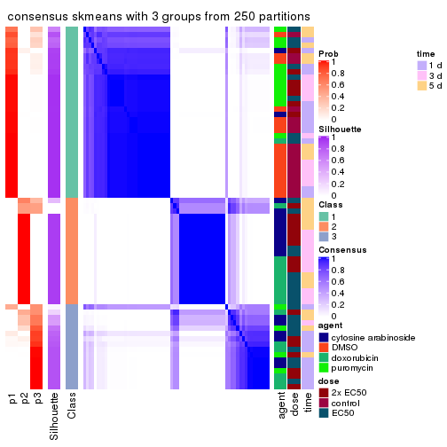
consensus_heatmap(res, k = 4)
consensus_heatmap(res, k = 5)
consensus_heatmap(res, k = 6)
Heatmaps for the membership of samples in all partitions to see how consistent they are:
membership_heatmap(res, k = 2)
membership_heatmap(res, k = 3)
membership_heatmap(res, k = 4)
membership_heatmap(res, k = 5)
membership_heatmap(res, k = 6)
As soon as we have had the classes for columns, we can look for signatures which are significantly different between classes which can be candidate marks for certain classes. Following are the heatmaps for signatures.
Signature heatmaps where rows are scaled:
get_signatures(res, k = 2)
get_signatures(res, k = 3)
get_signatures(res, k = 4)
get_signatures(res, k = 5)
get_signatures(res, k = 6)
Signature heatmaps where rows are not scaled:
get_signatures(res, k = 2, scale_rows = FALSE)
get_signatures(res, k = 3, scale_rows = FALSE)
get_signatures(res, k = 4, scale_rows = FALSE)
get_signatures(res, k = 5, scale_rows = FALSE)
get_signatures(res, k = 6, scale_rows = FALSE)
Compare the overlap of signatures from different k:
compare_signatures(res)
get_signature() returns a data frame invisibly. TO get the list of signatures, the function
call should be assigned to a variable explicitly. In following code, if plot argument is set
to FALSE, no heatmap is plotted while only the differential analysis is performed.
# code only for demonstration
tb = get_signature(res, k = ..., plot = FALSE)
An example of the output of tb is:
#> which_row fdr mean_1 mean_2 scaled_mean_1 scaled_mean_2 km
#> 1 38 0.042760348 8.373488 9.131774 -0.5533452 0.5164555 1
#> 2 40 0.018707592 7.106213 8.469186 -0.6173731 0.5762149 1
#> 3 55 0.019134737 10.221463 11.207825 -0.6159697 0.5749050 1
#> 4 59 0.006059896 5.921854 7.869574 -0.6899429 0.6439467 1
#> 5 60 0.018055526 8.928898 10.211722 -0.6204761 0.5791110 1
#> 6 98 0.009384629 15.714769 14.887706 0.6635654 -0.6193277 2
...
The columns in tb are:
which_row: row indices corresponding to the input matrix.fdr: FDR for the differential test. mean_x: The mean value in group x.scaled_mean_x: The mean value in group x after rows are scaled.km: Row groups if k-means clustering is applied to rows.UMAP plot which shows how samples are separated.
dimension_reduction(res, k = 2, method = "UMAP")
dimension_reduction(res, k = 3, method = "UMAP")
dimension_reduction(res, k = 4, method = "UMAP")
dimension_reduction(res, k = 5, method = "UMAP")
dimension_reduction(res, k = 6, method = "UMAP")
Following heatmap shows how subgroups are split when increasing k:
collect_classes(res)
Test correlation between subgroups and known annotations. If the known annotation is numeric, one-way ANOVA test is applied, and if the known annotation is discrete, chi-squared contingency table test is applied.
test_to_known_factors(res)
#> n agent(p) dose(p) time(p) k
#> SD:skmeans 63 7.49e-08 2.64e-04 5.58e-04 2
#> SD:skmeans 62 6.76e-08 1.84e-04 2.85e-04 3
#> SD:skmeans 45 3.09e-10 3.25e-07 8.87e-04 4
#> SD:skmeans 45 1.85e-12 3.02e-07 2.19e-07 5
#> SD:skmeans 43 1.92e-14 1.26e-06 2.82e-07 6
If matrix rows can be associated to genes, consider to use functional_enrichment(res,
...) to perform function enrichment for the signature genes. See this vignette for more detailed explanations.
The object with results only for a single top-value method and a single partition method can be extracted as:
res = res_list["SD", "pam"]
# you can also extract it by
# res = res_list["SD:pam"]
A summary of res and all the functions that can be applied to it:
res
#> A 'ConsensusPartition' object with k = 2, 3, 4, 5, 6.
#> On a matrix with 21796 rows and 68 columns.
#> Top rows (1000, 2000, 3000, 4000, 5000) are extracted by 'SD' method.
#> Subgroups are detected by 'pam' method.
#> Performed in total 1250 partitions by row resampling.
#> Best k for subgroups seems to be 6.
#>
#> Following methods can be applied to this 'ConsensusPartition' object:
#> [1] "cola_report" "collect_classes" "collect_plots"
#> [4] "collect_stats" "colnames" "compare_signatures"
#> [7] "consensus_heatmap" "dimension_reduction" "functional_enrichment"
#> [10] "get_anno_col" "get_anno" "get_classes"
#> [13] "get_consensus" "get_matrix" "get_membership"
#> [16] "get_param" "get_signatures" "get_stats"
#> [19] "is_best_k" "is_stable_k" "membership_heatmap"
#> [22] "ncol" "nrow" "plot_ecdf"
#> [25] "rownames" "select_partition_number" "show"
#> [28] "suggest_best_k" "test_to_known_factors"
collect_plots() function collects all the plots made from res for all k (number of partitions)
into one single page to provide an easy and fast comparison between different k.
collect_plots(res)
The plots are:
k and the heatmap of
predicted classes for each k.k.k.k.All the plots in panels can be made by individual functions and they are plotted later in this section.
select_partition_number() produces several plots showing different
statistics for choosing “optimized” k. There are following statistics:
k;k, the area increased is defined as \(A_k - A_{k-1}\).The detailed explanations of these statistics can be found in the cola vignette.
Generally speaking, lower PAC score, higher mean silhouette score or higher
concordance corresponds to better partition. Rand index and Jaccard index
measure how similar the current partition is compared to partition with k-1.
If they are too similar, we won't accept k is better than k-1.
select_partition_number(res)
The numeric values for all these statistics can be obtained by get_stats().
get_stats(res)
#> k 1-PAC mean_silhouette concordance area_increased Rand Jaccard
#> 2 2 0.745 0.895 0.951 0.4853 0.514 0.514
#> 3 3 0.727 0.757 0.855 0.1978 0.898 0.805
#> 4 4 0.666 0.510 0.725 0.1776 0.813 0.597
#> 5 5 0.767 0.868 0.911 0.1193 0.791 0.445
#> 6 6 0.916 0.917 0.957 0.0486 0.971 0.874
suggest_best_k() suggests the best \(k\) based on these statistics. The rules are as follows:
suggest_best_k(res)
#> [1] 6
Following shows the table of the partitions (You need to click the show/hide
code output link to see it). The membership matrix (columns with name p*)
is inferred by
clue::cl_consensus()
function with the SE method. Basically the value in the membership matrix
represents the probability to belong to a certain group. The finall class
label for an item is determined with the group with highest probability it
belongs to.
In get_classes() function, the entropy is calculated from the membership
matrix and the silhouette score is calculated from the consensus matrix.
cbind(get_classes(res, k = 2), get_membership(res, k = 2))
#> class entropy silhouette p1 p2
#> GSM159850 1 0.0000 0.944 1.000 0.000
#> GSM159851 1 0.0000 0.944 1.000 0.000
#> GSM159852 1 0.0000 0.944 1.000 0.000
#> GSM159853 1 0.0000 0.944 1.000 0.000
#> GSM159854 1 0.0000 0.944 1.000 0.000
#> GSM159855 1 0.0000 0.944 1.000 0.000
#> GSM159856 1 0.0000 0.944 1.000 0.000
#> GSM159857 1 0.0000 0.944 1.000 0.000
#> GSM159858 1 0.0000 0.944 1.000 0.000
#> GSM159859 1 0.0000 0.944 1.000 0.000
#> GSM159860 1 0.0000 0.944 1.000 0.000
#> GSM159861 1 0.0000 0.944 1.000 0.000
#> GSM159862 1 0.0000 0.944 1.000 0.000
#> GSM159863 1 0.0000 0.944 1.000 0.000
#> GSM159864 1 0.0000 0.944 1.000 0.000
#> GSM159865 1 0.0000 0.944 1.000 0.000
#> GSM159866 1 0.0000 0.944 1.000 0.000
#> GSM159885 1 0.4690 0.867 0.900 0.100
#> GSM159886 1 0.0000 0.944 1.000 0.000
#> GSM159887 1 0.7219 0.769 0.800 0.200
#> GSM159888 2 0.0000 0.950 0.000 1.000
#> GSM159889 2 0.0000 0.950 0.000 1.000
#> GSM159890 2 0.0000 0.950 0.000 1.000
#> GSM159891 2 0.0000 0.950 0.000 1.000
#> GSM159892 2 0.0000 0.950 0.000 1.000
#> GSM159893 2 0.0000 0.950 0.000 1.000
#> GSM159894 1 0.7602 0.745 0.780 0.220
#> GSM159895 1 0.7883 0.726 0.764 0.236
#> GSM159896 1 0.7674 0.741 0.776 0.224
#> GSM159897 2 0.0000 0.950 0.000 1.000
#> GSM159898 2 0.0000 0.950 0.000 1.000
#> GSM159899 2 0.0000 0.950 0.000 1.000
#> GSM159900 2 0.0000 0.950 0.000 1.000
#> GSM159901 2 0.0000 0.950 0.000 1.000
#> GSM159902 1 0.0000 0.944 1.000 0.000
#> GSM159903 1 0.0000 0.944 1.000 0.000
#> GSM159904 1 0.0000 0.944 1.000 0.000
#> GSM159905 1 0.0000 0.944 1.000 0.000
#> GSM159906 1 0.0000 0.944 1.000 0.000
#> GSM159907 1 0.0000 0.944 1.000 0.000
#> GSM159908 1 0.0376 0.941 0.996 0.004
#> GSM159909 1 0.0000 0.944 1.000 0.000
#> GSM159910 2 0.9000 0.514 0.316 0.684
#> GSM159911 1 0.0376 0.941 0.996 0.004
#> GSM159912 1 0.0000 0.944 1.000 0.000
#> GSM159913 1 0.0000 0.944 1.000 0.000
#> GSM159914 1 0.0000 0.944 1.000 0.000
#> GSM159915 1 0.0000 0.944 1.000 0.000
#> GSM159916 1 0.0000 0.944 1.000 0.000
#> GSM159917 1 0.7883 0.731 0.764 0.236
#> GSM159867 1 0.8813 0.622 0.700 0.300
#> GSM159868 1 0.7950 0.720 0.760 0.240
#> GSM159869 1 0.9087 0.575 0.676 0.324
#> GSM159870 2 0.4022 0.890 0.080 0.920
#> GSM159871 2 0.4562 0.875 0.096 0.904
#> GSM159872 2 0.0672 0.946 0.008 0.992
#> GSM159873 2 0.0000 0.950 0.000 1.000
#> GSM159874 2 0.0376 0.948 0.004 0.996
#> GSM159875 2 0.0000 0.950 0.000 1.000
#> GSM159876 2 0.5629 0.840 0.132 0.868
#> GSM159877 2 0.9850 0.301 0.428 0.572
#> GSM159878 2 0.6247 0.816 0.156 0.844
#> GSM159879 2 0.0000 0.950 0.000 1.000
#> GSM159880 2 0.0672 0.945 0.008 0.992
#> GSM159881 2 0.0000 0.950 0.000 1.000
#> GSM159882 2 0.0000 0.950 0.000 1.000
#> GSM159883 2 0.0000 0.950 0.000 1.000
#> GSM159884 2 0.0000 0.950 0.000 1.000
cbind(get_classes(res, k = 3), get_membership(res, k = 3))
#> class entropy silhouette p1 p2 p3
#> GSM159850 1 0.0000 0.9097 1.000 0.000 0.000
#> GSM159851 1 0.0000 0.9097 1.000 0.000 0.000
#> GSM159852 1 0.0000 0.9097 1.000 0.000 0.000
#> GSM159853 1 0.0000 0.9097 1.000 0.000 0.000
#> GSM159854 1 0.0000 0.9097 1.000 0.000 0.000
#> GSM159855 1 0.0000 0.9097 1.000 0.000 0.000
#> GSM159856 1 0.0000 0.9097 1.000 0.000 0.000
#> GSM159857 1 0.0000 0.9097 1.000 0.000 0.000
#> GSM159858 1 0.0000 0.9097 1.000 0.000 0.000
#> GSM159859 1 0.0000 0.9097 1.000 0.000 0.000
#> GSM159860 1 0.0000 0.9097 1.000 0.000 0.000
#> GSM159861 1 0.0000 0.9097 1.000 0.000 0.000
#> GSM159862 1 0.0000 0.9097 1.000 0.000 0.000
#> GSM159863 1 0.0000 0.9097 1.000 0.000 0.000
#> GSM159864 1 0.0000 0.9097 1.000 0.000 0.000
#> GSM159865 1 0.0000 0.9097 1.000 0.000 0.000
#> GSM159866 1 0.0000 0.9097 1.000 0.000 0.000
#> GSM159885 1 0.6099 0.6367 0.740 0.032 0.228
#> GSM159886 1 0.0000 0.9097 1.000 0.000 0.000
#> GSM159887 1 0.7710 0.5153 0.660 0.100 0.240
#> GSM159888 2 0.0000 0.8856 0.000 1.000 0.000
#> GSM159889 2 0.0000 0.8856 0.000 1.000 0.000
#> GSM159890 2 0.0000 0.8856 0.000 1.000 0.000
#> GSM159891 2 0.0000 0.8856 0.000 1.000 0.000
#> GSM159892 2 0.0000 0.8856 0.000 1.000 0.000
#> GSM159893 2 0.0000 0.8856 0.000 1.000 0.000
#> GSM159894 1 0.8033 0.4788 0.640 0.120 0.240
#> GSM159895 1 0.8176 0.4754 0.636 0.140 0.224
#> GSM159896 1 0.8101 0.4841 0.640 0.132 0.228
#> GSM159897 2 0.0000 0.8856 0.000 1.000 0.000
#> GSM159898 2 0.0424 0.8740 0.008 0.992 0.000
#> GSM159899 2 0.0000 0.8856 0.000 1.000 0.000
#> GSM159900 2 0.5968 0.5303 0.000 0.636 0.364
#> GSM159901 2 0.5968 0.5303 0.000 0.636 0.364
#> GSM159902 1 0.0000 0.9097 1.000 0.000 0.000
#> GSM159903 1 0.0000 0.9097 1.000 0.000 0.000
#> GSM159904 1 0.0000 0.9097 1.000 0.000 0.000
#> GSM159905 1 0.0000 0.9097 1.000 0.000 0.000
#> GSM159906 1 0.0000 0.9097 1.000 0.000 0.000
#> GSM159907 1 0.0000 0.9097 1.000 0.000 0.000
#> GSM159908 1 0.0237 0.9064 0.996 0.004 0.000
#> GSM159909 1 0.0000 0.9097 1.000 0.000 0.000
#> GSM159910 3 0.5042 0.3751 0.060 0.104 0.836
#> GSM159911 1 0.0848 0.8976 0.984 0.008 0.008
#> GSM159912 1 0.0000 0.9097 1.000 0.000 0.000
#> GSM159913 1 0.0000 0.9097 1.000 0.000 0.000
#> GSM159914 1 0.0000 0.9097 1.000 0.000 0.000
#> GSM159915 1 0.0000 0.9097 1.000 0.000 0.000
#> GSM159916 1 0.0000 0.9097 1.000 0.000 0.000
#> GSM159917 3 0.7715 -0.1045 0.428 0.048 0.524
#> GSM159867 1 0.9319 0.0586 0.484 0.176 0.340
#> GSM159868 1 0.8825 0.2885 0.556 0.148 0.296
#> GSM159869 1 0.9133 0.1941 0.524 0.172 0.304
#> GSM159870 3 0.6189 0.7279 0.004 0.364 0.632
#> GSM159871 3 0.6587 0.7250 0.016 0.352 0.632
#> GSM159872 3 0.0000 0.5176 0.000 0.000 1.000
#> GSM159873 3 0.5810 0.7259 0.000 0.336 0.664
#> GSM159874 3 0.0000 0.5176 0.000 0.000 1.000
#> GSM159875 3 0.5810 0.7259 0.000 0.336 0.664
#> GSM159876 3 0.7442 0.6987 0.056 0.316 0.628
#> GSM159877 3 0.4002 0.4115 0.160 0.000 0.840
#> GSM159878 3 0.9357 0.5134 0.196 0.304 0.500
#> GSM159879 3 0.5988 0.7275 0.000 0.368 0.632
#> GSM159880 3 0.5988 0.7275 0.000 0.368 0.632
#> GSM159881 3 0.5988 0.7275 0.000 0.368 0.632
#> GSM159882 3 0.5988 0.7275 0.000 0.368 0.632
#> GSM159883 3 0.5988 0.7275 0.000 0.368 0.632
#> GSM159884 3 0.5988 0.7275 0.000 0.368 0.632
cbind(get_classes(res, k = 4), get_membership(res, k = 4))
#> class entropy silhouette p1 p2 p3 p4
#> GSM159850 1 0.4948 0.6299 0.560 0.000 0.000 0.440
#> GSM159851 1 0.4134 0.7009 0.740 0.000 0.000 0.260
#> GSM159852 1 0.2149 0.7387 0.912 0.000 0.000 0.088
#> GSM159853 1 0.0000 0.7460 1.000 0.000 0.000 0.000
#> GSM159854 1 0.0188 0.7463 0.996 0.000 0.000 0.004
#> GSM159855 1 0.0000 0.7460 1.000 0.000 0.000 0.000
#> GSM159856 1 0.0000 0.7460 1.000 0.000 0.000 0.000
#> GSM159857 1 0.0000 0.7460 1.000 0.000 0.000 0.000
#> GSM159858 1 0.0000 0.7460 1.000 0.000 0.000 0.000
#> GSM159859 1 0.0000 0.7460 1.000 0.000 0.000 0.000
#> GSM159860 1 0.0000 0.7460 1.000 0.000 0.000 0.000
#> GSM159861 1 0.0592 0.7369 0.984 0.000 0.016 0.000
#> GSM159862 1 0.5262 0.6929 0.712 0.004 0.036 0.248
#> GSM159863 1 0.1398 0.7216 0.956 0.000 0.040 0.004
#> GSM159864 1 0.1211 0.7191 0.960 0.000 0.040 0.000
#> GSM159865 1 0.1211 0.7191 0.960 0.000 0.040 0.000
#> GSM159866 1 0.1211 0.7191 0.960 0.000 0.040 0.000
#> GSM159885 4 0.7328 -0.4062 0.392 0.156 0.000 0.452
#> GSM159886 1 0.1211 0.7451 0.960 0.000 0.000 0.040
#> GSM159887 4 0.7617 -0.2923 0.332 0.216 0.000 0.452
#> GSM159888 4 0.6007 0.3786 0.000 0.044 0.408 0.548
#> GSM159889 4 0.6007 0.3786 0.000 0.044 0.408 0.548
#> GSM159890 4 0.6139 0.3710 0.000 0.052 0.404 0.544
#> GSM159891 4 0.6007 0.3786 0.000 0.044 0.408 0.548
#> GSM159892 4 0.6007 0.3786 0.000 0.044 0.408 0.548
#> GSM159893 4 0.6007 0.3786 0.000 0.044 0.408 0.548
#> GSM159894 4 0.7609 -0.2574 0.312 0.224 0.000 0.464
#> GSM159895 4 0.7676 -0.2512 0.308 0.240 0.000 0.452
#> GSM159896 4 0.7330 -0.2625 0.312 0.180 0.000 0.508
#> GSM159897 4 0.6007 0.3786 0.000 0.044 0.408 0.548
#> GSM159898 4 0.6007 0.3786 0.000 0.044 0.408 0.548
#> GSM159899 4 0.6007 0.3786 0.000 0.044 0.408 0.548
#> GSM159900 3 0.4866 -0.3102 0.000 0.000 0.596 0.404
#> GSM159901 4 0.4967 0.3268 0.000 0.000 0.452 0.548
#> GSM159902 1 0.4967 0.6222 0.548 0.000 0.000 0.452
#> GSM159903 1 0.4967 0.6222 0.548 0.000 0.000 0.452
#> GSM159904 1 0.4967 0.6222 0.548 0.000 0.000 0.452
#> GSM159905 1 0.4643 0.6703 0.656 0.000 0.000 0.344
#> GSM159906 1 0.0000 0.7460 1.000 0.000 0.000 0.000
#> GSM159907 1 0.0000 0.7460 1.000 0.000 0.000 0.000
#> GSM159908 1 0.5099 0.6549 0.612 0.008 0.000 0.380
#> GSM159909 1 0.4961 0.6251 0.552 0.000 0.000 0.448
#> GSM159910 3 0.5730 0.4261 0.000 0.344 0.616 0.040
#> GSM159911 1 0.5658 0.5994 0.528 0.016 0.004 0.452
#> GSM159912 1 0.4967 0.6222 0.548 0.000 0.000 0.452
#> GSM159913 1 0.4967 0.6222 0.548 0.000 0.000 0.452
#> GSM159914 1 0.4830 0.6545 0.608 0.000 0.000 0.392
#> GSM159915 1 0.4961 0.6249 0.552 0.000 0.000 0.448
#> GSM159916 1 0.4967 0.6222 0.548 0.000 0.000 0.452
#> GSM159917 3 0.5933 0.2431 0.040 0.000 0.552 0.408
#> GSM159867 2 0.7631 0.0884 0.224 0.456 0.000 0.320
#> GSM159868 4 0.7874 -0.1804 0.280 0.348 0.000 0.372
#> GSM159869 2 0.7761 -0.0694 0.236 0.388 0.000 0.376
#> GSM159870 2 0.0000 0.7867 0.000 1.000 0.000 0.000
#> GSM159871 2 0.0000 0.7867 0.000 1.000 0.000 0.000
#> GSM159872 3 0.4961 0.3471 0.000 0.448 0.552 0.000
#> GSM159873 2 0.0336 0.7802 0.000 0.992 0.008 0.000
#> GSM159874 3 0.4955 0.3527 0.000 0.444 0.556 0.000
#> GSM159875 2 0.0336 0.7802 0.000 0.992 0.008 0.000
#> GSM159876 2 0.1211 0.7403 0.040 0.960 0.000 0.000
#> GSM159877 3 0.6994 0.3794 0.288 0.152 0.560 0.000
#> GSM159878 2 0.4040 0.3905 0.248 0.752 0.000 0.000
#> GSM159879 2 0.0000 0.7867 0.000 1.000 0.000 0.000
#> GSM159880 2 0.0000 0.7867 0.000 1.000 0.000 0.000
#> GSM159881 2 0.0000 0.7867 0.000 1.000 0.000 0.000
#> GSM159882 2 0.0000 0.7867 0.000 1.000 0.000 0.000
#> GSM159883 2 0.0000 0.7867 0.000 1.000 0.000 0.000
#> GSM159884 2 0.0000 0.7867 0.000 1.000 0.000 0.000
cbind(get_classes(res, k = 5), get_membership(res, k = 5))
#> class entropy silhouette p1 p2 p3 p4 p5
#> GSM159850 4 0.0703 0.910 0.024 0.000 0.000 0.976 0.000
#> GSM159851 4 0.3857 0.419 0.312 0.000 0.000 0.688 0.000
#> GSM159852 1 0.3534 0.772 0.744 0.000 0.000 0.256 0.000
#> GSM159853 1 0.2605 0.849 0.852 0.000 0.000 0.148 0.000
#> GSM159854 1 0.2732 0.845 0.840 0.000 0.000 0.160 0.000
#> GSM159855 1 0.2648 0.847 0.848 0.000 0.000 0.152 0.000
#> GSM159856 1 0.2280 0.854 0.880 0.000 0.000 0.120 0.000
#> GSM159857 1 0.2280 0.854 0.880 0.000 0.000 0.120 0.000
#> GSM159858 1 0.2280 0.854 0.880 0.000 0.000 0.120 0.000
#> GSM159859 1 0.2329 0.854 0.876 0.000 0.000 0.124 0.000
#> GSM159860 1 0.2280 0.854 0.880 0.000 0.000 0.120 0.000
#> GSM159861 1 0.3146 0.779 0.856 0.000 0.092 0.052 0.000
#> GSM159862 1 0.5917 0.505 0.596 0.000 0.180 0.224 0.000
#> GSM159863 1 0.3053 0.724 0.828 0.000 0.164 0.008 0.000
#> GSM159864 1 0.3003 0.711 0.812 0.000 0.188 0.000 0.000
#> GSM159865 1 0.3003 0.711 0.812 0.000 0.188 0.000 0.000
#> GSM159866 1 0.3003 0.711 0.812 0.000 0.188 0.000 0.000
#> GSM159885 4 0.0000 0.918 0.000 0.000 0.000 1.000 0.000
#> GSM159886 1 0.3857 0.676 0.688 0.000 0.000 0.312 0.000
#> GSM159887 4 0.0162 0.917 0.000 0.000 0.000 0.996 0.004
#> GSM159888 2 0.0000 0.982 0.000 1.000 0.000 0.000 0.000
#> GSM159889 2 0.0000 0.982 0.000 1.000 0.000 0.000 0.000
#> GSM159890 2 0.0290 0.974 0.000 0.992 0.000 0.000 0.008
#> GSM159891 2 0.0000 0.982 0.000 1.000 0.000 0.000 0.000
#> GSM159892 2 0.0000 0.982 0.000 1.000 0.000 0.000 0.000
#> GSM159893 2 0.0000 0.982 0.000 1.000 0.000 0.000 0.000
#> GSM159894 4 0.0162 0.917 0.000 0.000 0.000 0.996 0.004
#> GSM159895 4 0.1121 0.899 0.000 0.000 0.000 0.956 0.044
#> GSM159896 4 0.0162 0.917 0.004 0.000 0.000 0.996 0.000
#> GSM159897 2 0.0000 0.982 0.000 1.000 0.000 0.000 0.000
#> GSM159898 2 0.0000 0.982 0.000 1.000 0.000 0.000 0.000
#> GSM159899 2 0.0000 0.982 0.000 1.000 0.000 0.000 0.000
#> GSM159900 2 0.2813 0.795 0.000 0.832 0.168 0.000 0.000
#> GSM159901 2 0.0000 0.982 0.000 1.000 0.000 0.000 0.000
#> GSM159902 4 0.0000 0.918 0.000 0.000 0.000 1.000 0.000
#> GSM159903 4 0.0404 0.916 0.012 0.000 0.000 0.988 0.000
#> GSM159904 4 0.0000 0.918 0.000 0.000 0.000 1.000 0.000
#> GSM159905 4 0.2605 0.825 0.148 0.000 0.000 0.852 0.000
#> GSM159906 1 0.2516 0.847 0.860 0.000 0.000 0.140 0.000
#> GSM159907 1 0.2280 0.854 0.880 0.000 0.000 0.120 0.000
#> GSM159908 4 0.2358 0.869 0.104 0.000 0.000 0.888 0.008
#> GSM159909 4 0.1331 0.906 0.040 0.000 0.000 0.952 0.008
#> GSM159910 3 0.3488 0.868 0.000 0.024 0.808 0.000 0.168
#> GSM159911 4 0.0000 0.918 0.000 0.000 0.000 1.000 0.000
#> GSM159912 4 0.0000 0.918 0.000 0.000 0.000 1.000 0.000
#> GSM159913 4 0.0000 0.918 0.000 0.000 0.000 1.000 0.000
#> GSM159914 4 0.1965 0.875 0.096 0.000 0.000 0.904 0.000
#> GSM159915 4 0.1197 0.905 0.048 0.000 0.000 0.952 0.000
#> GSM159916 4 0.0794 0.910 0.028 0.000 0.000 0.972 0.000
#> GSM159917 3 0.3003 0.736 0.000 0.000 0.812 0.188 0.000
#> GSM159867 4 0.3661 0.622 0.000 0.000 0.000 0.724 0.276
#> GSM159868 4 0.2377 0.820 0.000 0.000 0.000 0.872 0.128
#> GSM159869 4 0.3177 0.722 0.000 0.000 0.000 0.792 0.208
#> GSM159870 5 0.0000 0.967 0.000 0.000 0.000 0.000 1.000
#> GSM159871 5 0.0000 0.967 0.000 0.000 0.000 0.000 1.000
#> GSM159872 3 0.3003 0.869 0.000 0.000 0.812 0.000 0.188
#> GSM159873 5 0.0000 0.967 0.000 0.000 0.000 0.000 1.000
#> GSM159874 3 0.3039 0.867 0.000 0.000 0.808 0.000 0.192
#> GSM159875 5 0.0162 0.964 0.000 0.000 0.004 0.000 0.996
#> GSM159876 5 0.1357 0.893 0.004 0.000 0.000 0.048 0.948
#> GSM159877 3 0.4179 0.838 0.072 0.000 0.812 0.028 0.088
#> GSM159878 5 0.3460 0.721 0.128 0.000 0.000 0.044 0.828
#> GSM159879 5 0.0000 0.967 0.000 0.000 0.000 0.000 1.000
#> GSM159880 5 0.0000 0.967 0.000 0.000 0.000 0.000 1.000
#> GSM159881 5 0.0000 0.967 0.000 0.000 0.000 0.000 1.000
#> GSM159882 5 0.0000 0.967 0.000 0.000 0.000 0.000 1.000
#> GSM159883 5 0.0000 0.967 0.000 0.000 0.000 0.000 1.000
#> GSM159884 5 0.0000 0.967 0.000 0.000 0.000 0.000 1.000
cbind(get_classes(res, k = 6), get_membership(res, k = 6))
#> class entropy silhouette p1 p2 p3 p4 p5 p6
#> GSM159850 4 0.0632 0.920 0.024 0.000 0.000 0.976 0.000 0.000
#> GSM159851 4 0.3515 0.498 0.324 0.000 0.000 0.676 0.000 0.000
#> GSM159852 1 0.2491 0.793 0.836 0.000 0.000 0.164 0.000 0.000
#> GSM159853 1 0.0632 0.926 0.976 0.000 0.000 0.024 0.000 0.000
#> GSM159854 1 0.1075 0.917 0.952 0.000 0.000 0.048 0.000 0.000
#> GSM159855 1 0.0713 0.924 0.972 0.000 0.000 0.028 0.000 0.000
#> GSM159856 1 0.0000 0.932 1.000 0.000 0.000 0.000 0.000 0.000
#> GSM159857 1 0.0000 0.932 1.000 0.000 0.000 0.000 0.000 0.000
#> GSM159858 1 0.0000 0.932 1.000 0.000 0.000 0.000 0.000 0.000
#> GSM159859 1 0.0146 0.932 0.996 0.000 0.000 0.004 0.000 0.000
#> GSM159860 1 0.0000 0.932 1.000 0.000 0.000 0.000 0.000 0.000
#> GSM159861 1 0.2398 0.855 0.876 0.000 0.000 0.020 0.104 0.000
#> GSM159862 5 0.0520 0.972 0.008 0.000 0.000 0.008 0.984 0.000
#> GSM159863 5 0.1007 0.943 0.044 0.000 0.000 0.000 0.956 0.000
#> GSM159864 5 0.0000 0.981 0.000 0.000 0.000 0.000 1.000 0.000
#> GSM159865 5 0.0000 0.981 0.000 0.000 0.000 0.000 1.000 0.000
#> GSM159866 5 0.0000 0.981 0.000 0.000 0.000 0.000 1.000 0.000
#> GSM159885 4 0.0260 0.925 0.000 0.000 0.008 0.992 0.000 0.000
#> GSM159886 1 0.3126 0.667 0.752 0.000 0.000 0.248 0.000 0.000
#> GSM159887 4 0.0146 0.926 0.000 0.000 0.004 0.996 0.000 0.000
#> GSM159888 2 0.0000 0.982 0.000 1.000 0.000 0.000 0.000 0.000
#> GSM159889 2 0.0000 0.982 0.000 1.000 0.000 0.000 0.000 0.000
#> GSM159890 2 0.0260 0.974 0.000 0.992 0.000 0.000 0.000 0.008
#> GSM159891 2 0.0000 0.982 0.000 1.000 0.000 0.000 0.000 0.000
#> GSM159892 2 0.0000 0.982 0.000 1.000 0.000 0.000 0.000 0.000
#> GSM159893 2 0.0000 0.982 0.000 1.000 0.000 0.000 0.000 0.000
#> GSM159894 4 0.0260 0.925 0.000 0.000 0.008 0.992 0.000 0.000
#> GSM159895 4 0.1333 0.904 0.000 0.000 0.008 0.944 0.000 0.048
#> GSM159896 4 0.0405 0.925 0.004 0.000 0.008 0.988 0.000 0.000
#> GSM159897 2 0.0000 0.982 0.000 1.000 0.000 0.000 0.000 0.000
#> GSM159898 2 0.0000 0.982 0.000 1.000 0.000 0.000 0.000 0.000
#> GSM159899 2 0.0000 0.982 0.000 1.000 0.000 0.000 0.000 0.000
#> GSM159900 2 0.2527 0.794 0.000 0.832 0.168 0.000 0.000 0.000
#> GSM159901 2 0.0000 0.982 0.000 1.000 0.000 0.000 0.000 0.000
#> GSM159902 4 0.0000 0.926 0.000 0.000 0.000 1.000 0.000 0.000
#> GSM159903 4 0.0260 0.925 0.008 0.000 0.000 0.992 0.000 0.000
#> GSM159904 4 0.0000 0.926 0.000 0.000 0.000 1.000 0.000 0.000
#> GSM159905 4 0.2300 0.844 0.144 0.000 0.000 0.856 0.000 0.000
#> GSM159906 1 0.0632 0.924 0.976 0.000 0.000 0.024 0.000 0.000
#> GSM159907 1 0.0000 0.932 1.000 0.000 0.000 0.000 0.000 0.000
#> GSM159908 4 0.1863 0.881 0.104 0.000 0.000 0.896 0.000 0.000
#> GSM159909 4 0.0865 0.917 0.036 0.000 0.000 0.964 0.000 0.000
#> GSM159910 3 0.1471 0.913 0.000 0.004 0.932 0.000 0.000 0.064
#> GSM159911 4 0.0146 0.926 0.000 0.000 0.004 0.996 0.000 0.000
#> GSM159912 4 0.0000 0.926 0.000 0.000 0.000 1.000 0.000 0.000
#> GSM159913 4 0.0000 0.926 0.000 0.000 0.000 1.000 0.000 0.000
#> GSM159914 4 0.1814 0.882 0.100 0.000 0.000 0.900 0.000 0.000
#> GSM159915 4 0.1075 0.915 0.048 0.000 0.000 0.952 0.000 0.000
#> GSM159916 4 0.0632 0.920 0.024 0.000 0.000 0.976 0.000 0.000
#> GSM159917 3 0.1141 0.869 0.000 0.000 0.948 0.052 0.000 0.000
#> GSM159867 4 0.3101 0.687 0.000 0.000 0.000 0.756 0.000 0.244
#> GSM159868 4 0.1812 0.879 0.000 0.000 0.008 0.912 0.000 0.080
#> GSM159869 4 0.2882 0.768 0.000 0.000 0.008 0.812 0.000 0.180
#> GSM159870 6 0.0000 0.980 0.000 0.000 0.000 0.000 0.000 1.000
#> GSM159871 6 0.0000 0.980 0.000 0.000 0.000 0.000 0.000 1.000
#> GSM159872 3 0.1610 0.924 0.000 0.000 0.916 0.000 0.000 0.084
#> GSM159873 6 0.0000 0.980 0.000 0.000 0.000 0.000 0.000 1.000
#> GSM159874 3 0.2260 0.884 0.000 0.000 0.860 0.000 0.000 0.140
#> GSM159875 6 0.0146 0.977 0.000 0.000 0.004 0.000 0.000 0.996
#> GSM159876 6 0.0146 0.977 0.004 0.000 0.000 0.000 0.000 0.996
#> GSM159877 3 0.1976 0.924 0.008 0.000 0.916 0.016 0.000 0.060
#> GSM159878 6 0.2416 0.774 0.156 0.000 0.000 0.000 0.000 0.844
#> GSM159879 6 0.0000 0.980 0.000 0.000 0.000 0.000 0.000 1.000
#> GSM159880 6 0.0000 0.980 0.000 0.000 0.000 0.000 0.000 1.000
#> GSM159881 6 0.0000 0.980 0.000 0.000 0.000 0.000 0.000 1.000
#> GSM159882 6 0.0000 0.980 0.000 0.000 0.000 0.000 0.000 1.000
#> GSM159883 6 0.0000 0.980 0.000 0.000 0.000 0.000 0.000 1.000
#> GSM159884 6 0.0000 0.980 0.000 0.000 0.000 0.000 0.000 1.000
Heatmaps for the consensus matrix. It visualizes the probability of two samples to be in a same group.
consensus_heatmap(res, k = 2)
consensus_heatmap(res, k = 3)
consensus_heatmap(res, k = 4)
consensus_heatmap(res, k = 5)
consensus_heatmap(res, k = 6)
Heatmaps for the membership of samples in all partitions to see how consistent they are:
membership_heatmap(res, k = 2)
membership_heatmap(res, k = 3)
membership_heatmap(res, k = 4)
membership_heatmap(res, k = 5)
membership_heatmap(res, k = 6)
As soon as we have had the classes for columns, we can look for signatures which are significantly different between classes which can be candidate marks for certain classes. Following are the heatmaps for signatures.
Signature heatmaps where rows are scaled:
get_signatures(res, k = 2)
get_signatures(res, k = 3)
get_signatures(res, k = 4)
get_signatures(res, k = 5)
get_signatures(res, k = 6)
Signature heatmaps where rows are not scaled:
get_signatures(res, k = 2, scale_rows = FALSE)
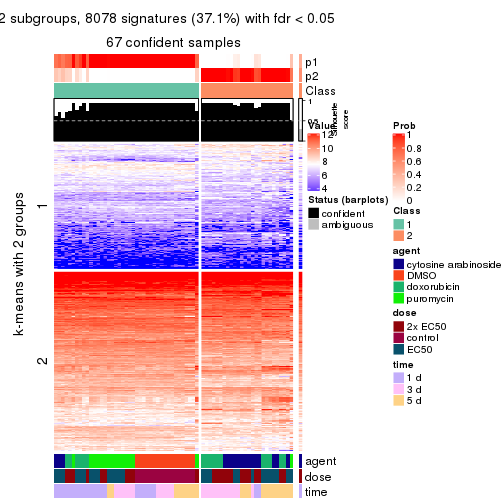
get_signatures(res, k = 3, scale_rows = FALSE)
get_signatures(res, k = 4, scale_rows = FALSE)
get_signatures(res, k = 5, scale_rows = FALSE)
get_signatures(res, k = 6, scale_rows = FALSE)
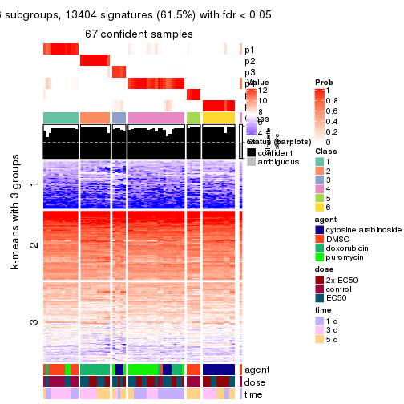
Compare the overlap of signatures from different k:
compare_signatures(res)
get_signature() returns a data frame invisibly. TO get the list of signatures, the function
call should be assigned to a variable explicitly. In following code, if plot argument is set
to FALSE, no heatmap is plotted while only the differential analysis is performed.
# code only for demonstration
tb = get_signature(res, k = ..., plot = FALSE)
An example of the output of tb is:
#> which_row fdr mean_1 mean_2 scaled_mean_1 scaled_mean_2 km
#> 1 38 0.042760348 8.373488 9.131774 -0.5533452 0.5164555 1
#> 2 40 0.018707592 7.106213 8.469186 -0.6173731 0.5762149 1
#> 3 55 0.019134737 10.221463 11.207825 -0.6159697 0.5749050 1
#> 4 59 0.006059896 5.921854 7.869574 -0.6899429 0.6439467 1
#> 5 60 0.018055526 8.928898 10.211722 -0.6204761 0.5791110 1
#> 6 98 0.009384629 15.714769 14.887706 0.6635654 -0.6193277 2
...
The columns in tb are:
which_row: row indices corresponding to the input matrix.fdr: FDR for the differential test. mean_x: The mean value in group x.scaled_mean_x: The mean value in group x after rows are scaled.km: Row groups if k-means clustering is applied to rows.UMAP plot which shows how samples are separated.
dimension_reduction(res, k = 2, method = "UMAP")
dimension_reduction(res, k = 3, method = "UMAP")
dimension_reduction(res, k = 4, method = "UMAP")
dimension_reduction(res, k = 5, method = "UMAP")
dimension_reduction(res, k = 6, method = "UMAP")
Following heatmap shows how subgroups are split when increasing k:
collect_classes(res)
Test correlation between subgroups and known annotations. If the known annotation is numeric, one-way ANOVA test is applied, and if the known annotation is discrete, chi-squared contingency table test is applied.
test_to_known_factors(res)
#> n agent(p) dose(p) time(p) k
#> SD:pam 67 6.47e-08 6.07e-04 1.18e-03 2
#> SD:pam 59 1.37e-19 7.31e-04 4.10e-02 3
#> SD:pam 43 2.46e-09 3.21e-03 1.42e-01 4
#> SD:pam 67 6.89e-20 2.39e-08 3.67e-03 5
#> SD:pam 67 1.20e-18 9.24e-08 5.23e-05 6
If matrix rows can be associated to genes, consider to use functional_enrichment(res,
...) to perform function enrichment for the signature genes. See this vignette for more detailed explanations.
The object with results only for a single top-value method and a single partition method can be extracted as:
res = res_list["SD", "mclust"]
# you can also extract it by
# res = res_list["SD:mclust"]
A summary of res and all the functions that can be applied to it:
res
#> A 'ConsensusPartition' object with k = 2, 3, 4, 5, 6.
#> On a matrix with 21796 rows and 68 columns.
#> Top rows (1000, 2000, 3000, 4000, 5000) are extracted by 'SD' method.
#> Subgroups are detected by 'mclust' method.
#> Performed in total 1250 partitions by row resampling.
#> Best k for subgroups seems to be 2.
#>
#> Following methods can be applied to this 'ConsensusPartition' object:
#> [1] "cola_report" "collect_classes" "collect_plots"
#> [4] "collect_stats" "colnames" "compare_signatures"
#> [7] "consensus_heatmap" "dimension_reduction" "functional_enrichment"
#> [10] "get_anno_col" "get_anno" "get_classes"
#> [13] "get_consensus" "get_matrix" "get_membership"
#> [16] "get_param" "get_signatures" "get_stats"
#> [19] "is_best_k" "is_stable_k" "membership_heatmap"
#> [22] "ncol" "nrow" "plot_ecdf"
#> [25] "rownames" "select_partition_number" "show"
#> [28] "suggest_best_k" "test_to_known_factors"
collect_plots() function collects all the plots made from res for all k (number of partitions)
into one single page to provide an easy and fast comparison between different k.
collect_plots(res)
The plots are:
k and the heatmap of
predicted classes for each k.k.k.k.All the plots in panels can be made by individual functions and they are plotted later in this section.
select_partition_number() produces several plots showing different
statistics for choosing “optimized” k. There are following statistics:
k;k, the area increased is defined as \(A_k - A_{k-1}\).The detailed explanations of these statistics can be found in the cola vignette.
Generally speaking, lower PAC score, higher mean silhouette score or higher
concordance corresponds to better partition. Rand index and Jaccard index
measure how similar the current partition is compared to partition with k-1.
If they are too similar, we won't accept k is better than k-1.
select_partition_number(res)
The numeric values for all these statistics can be obtained by get_stats().
get_stats(res)
#> k 1-PAC mean_silhouette concordance area_increased Rand Jaccard
#> 2 2 0.559 0.856 0.917 0.4886 0.508 0.508
#> 3 3 0.400 0.537 0.732 0.2520 0.746 0.544
#> 4 4 0.601 0.770 0.765 0.1724 0.755 0.429
#> 5 5 0.621 0.791 0.790 0.0623 0.858 0.559
#> 6 6 0.748 0.805 0.850 0.0810 0.884 0.553
suggest_best_k() suggests the best \(k\) based on these statistics. The rules are as follows:
suggest_best_k(res)
#> [1] 2
Following shows the table of the partitions (You need to click the show/hide
code output link to see it). The membership matrix (columns with name p*)
is inferred by
clue::cl_consensus()
function with the SE method. Basically the value in the membership matrix
represents the probability to belong to a certain group. The finall class
label for an item is determined with the group with highest probability it
belongs to.
In get_classes() function, the entropy is calculated from the membership
matrix and the silhouette score is calculated from the consensus matrix.
cbind(get_classes(res, k = 2), get_membership(res, k = 2))
#> class entropy silhouette p1 p2
#> GSM159850 1 0.0000 0.858 1.000 0.000
#> GSM159851 1 0.0000 0.858 1.000 0.000
#> GSM159852 1 0.0000 0.858 1.000 0.000
#> GSM159853 1 0.0000 0.858 1.000 0.000
#> GSM159854 1 0.0000 0.858 1.000 0.000
#> GSM159855 1 0.0000 0.858 1.000 0.000
#> GSM159856 1 0.0000 0.858 1.000 0.000
#> GSM159857 1 0.0000 0.858 1.000 0.000
#> GSM159858 1 0.0376 0.858 0.996 0.004
#> GSM159859 1 0.0376 0.858 0.996 0.004
#> GSM159860 1 0.0376 0.858 0.996 0.004
#> GSM159861 1 0.5946 0.814 0.856 0.144
#> GSM159862 1 0.8267 0.741 0.740 0.260
#> GSM159863 1 0.7056 0.779 0.808 0.192
#> GSM159864 1 0.9393 0.539 0.644 0.356
#> GSM159865 1 0.9393 0.539 0.644 0.356
#> GSM159866 1 0.9393 0.539 0.644 0.356
#> GSM159885 1 0.8955 0.691 0.688 0.312
#> GSM159886 1 0.7674 0.773 0.776 0.224
#> GSM159887 1 0.8955 0.691 0.688 0.312
#> GSM159888 2 0.0000 0.976 0.000 1.000
#> GSM159889 2 0.0000 0.976 0.000 1.000
#> GSM159890 2 0.0000 0.976 0.000 1.000
#> GSM159891 2 0.0000 0.976 0.000 1.000
#> GSM159892 2 0.0000 0.976 0.000 1.000
#> GSM159893 2 0.0000 0.976 0.000 1.000
#> GSM159894 1 0.9044 0.681 0.680 0.320
#> GSM159895 1 0.8955 0.691 0.688 0.312
#> GSM159896 1 0.8955 0.691 0.688 0.312
#> GSM159897 2 0.0000 0.976 0.000 1.000
#> GSM159898 2 0.0000 0.976 0.000 1.000
#> GSM159899 2 0.0000 0.976 0.000 1.000
#> GSM159900 2 0.0000 0.976 0.000 1.000
#> GSM159901 2 0.0000 0.976 0.000 1.000
#> GSM159902 1 0.5946 0.814 0.856 0.144
#> GSM159903 1 0.0938 0.857 0.988 0.012
#> GSM159904 1 0.3114 0.847 0.944 0.056
#> GSM159905 1 0.0000 0.858 1.000 0.000
#> GSM159906 1 0.0000 0.858 1.000 0.000
#> GSM159907 1 0.0000 0.858 1.000 0.000
#> GSM159908 1 0.5059 0.829 0.888 0.112
#> GSM159909 1 0.6343 0.805 0.840 0.160
#> GSM159910 2 0.4815 0.868 0.104 0.896
#> GSM159911 1 0.7745 0.763 0.772 0.228
#> GSM159912 1 0.0000 0.858 1.000 0.000
#> GSM159913 1 0.0000 0.858 1.000 0.000
#> GSM159914 1 0.0000 0.858 1.000 0.000
#> GSM159915 1 0.0000 0.858 1.000 0.000
#> GSM159916 1 0.0000 0.858 1.000 0.000
#> GSM159917 2 0.4161 0.894 0.084 0.916
#> GSM159867 1 0.8955 0.691 0.688 0.312
#> GSM159868 1 0.9129 0.671 0.672 0.328
#> GSM159869 1 0.9209 0.660 0.664 0.336
#> GSM159870 2 0.0000 0.976 0.000 1.000
#> GSM159871 2 0.0000 0.976 0.000 1.000
#> GSM159872 2 0.0000 0.976 0.000 1.000
#> GSM159873 2 0.0000 0.976 0.000 1.000
#> GSM159874 2 0.0000 0.976 0.000 1.000
#> GSM159875 2 0.0000 0.976 0.000 1.000
#> GSM159876 2 0.4161 0.894 0.084 0.916
#> GSM159877 2 0.4161 0.894 0.084 0.916
#> GSM159878 2 0.6048 0.802 0.148 0.852
#> GSM159879 2 0.0000 0.976 0.000 1.000
#> GSM159880 2 0.0000 0.976 0.000 1.000
#> GSM159881 2 0.0000 0.976 0.000 1.000
#> GSM159882 2 0.0000 0.976 0.000 1.000
#> GSM159883 2 0.0000 0.976 0.000 1.000
#> GSM159884 2 0.0000 0.976 0.000 1.000
cbind(get_classes(res, k = 3), get_membership(res, k = 3))
#> class entropy silhouette p1 p2 p3
#> GSM159850 1 0.0000 0.6142 1.000 0.000 0.000
#> GSM159851 1 0.0000 0.6142 1.000 0.000 0.000
#> GSM159852 1 0.0000 0.6142 1.000 0.000 0.000
#> GSM159853 1 0.0000 0.6142 1.000 0.000 0.000
#> GSM159854 1 0.3192 0.4999 0.888 0.000 0.112
#> GSM159855 1 0.0237 0.6121 0.996 0.000 0.004
#> GSM159856 1 0.0237 0.6121 0.996 0.000 0.004
#> GSM159857 1 0.0000 0.6142 1.000 0.000 0.000
#> GSM159858 1 0.0000 0.6142 1.000 0.000 0.000
#> GSM159859 1 0.0000 0.6142 1.000 0.000 0.000
#> GSM159860 1 0.0000 0.6142 1.000 0.000 0.000
#> GSM159861 1 0.8308 0.0136 0.568 0.336 0.096
#> GSM159862 2 0.8570 0.1674 0.428 0.476 0.096
#> GSM159863 1 0.7918 -0.1254 0.484 0.460 0.056
#> GSM159864 2 0.8102 0.3574 0.368 0.556 0.076
#> GSM159865 2 0.8117 0.3492 0.372 0.552 0.076
#> GSM159866 2 0.8117 0.3492 0.372 0.552 0.076
#> GSM159885 3 0.7884 0.6185 0.260 0.100 0.640
#> GSM159886 3 0.7756 0.5231 0.380 0.056 0.564
#> GSM159887 3 0.7884 0.6185 0.260 0.100 0.640
#> GSM159888 2 0.3941 0.7781 0.000 0.844 0.156
#> GSM159889 2 0.4062 0.7808 0.000 0.836 0.164
#> GSM159890 2 0.4002 0.7765 0.000 0.840 0.160
#> GSM159891 2 0.4974 0.7943 0.000 0.764 0.236
#> GSM159892 2 0.5058 0.7950 0.000 0.756 0.244
#> GSM159893 2 0.4974 0.7943 0.000 0.764 0.236
#> GSM159894 3 0.8427 0.5904 0.240 0.148 0.612
#> GSM159895 3 0.8016 0.6167 0.260 0.108 0.632
#> GSM159896 3 0.8141 0.6124 0.260 0.116 0.624
#> GSM159897 2 0.4504 0.7948 0.000 0.804 0.196
#> GSM159898 2 0.4002 0.7765 0.000 0.840 0.160
#> GSM159899 2 0.4346 0.7865 0.000 0.816 0.184
#> GSM159900 2 0.4796 0.7998 0.000 0.780 0.220
#> GSM159901 2 0.4887 0.8004 0.000 0.772 0.228
#> GSM159902 3 0.6381 0.4998 0.340 0.012 0.648
#> GSM159903 3 0.6305 0.1998 0.484 0.000 0.516
#> GSM159904 3 0.6154 0.3724 0.408 0.000 0.592
#> GSM159905 3 0.6299 0.2234 0.476 0.000 0.524
#> GSM159906 1 0.6305 -0.1842 0.516 0.000 0.484
#> GSM159907 1 0.6305 -0.1842 0.516 0.000 0.484
#> GSM159908 3 0.6954 0.3268 0.484 0.016 0.500
#> GSM159909 3 0.6627 0.5245 0.336 0.020 0.644
#> GSM159910 2 0.6621 0.7279 0.052 0.720 0.228
#> GSM159911 3 0.7031 0.5919 0.196 0.088 0.716
#> GSM159912 1 0.6308 -0.2093 0.508 0.000 0.492
#> GSM159913 3 0.6307 0.1868 0.488 0.000 0.512
#> GSM159914 1 0.6305 -0.1842 0.516 0.000 0.484
#> GSM159915 1 0.6305 -0.1842 0.516 0.000 0.484
#> GSM159916 1 0.6305 -0.1842 0.516 0.000 0.484
#> GSM159917 2 0.6067 0.7554 0.028 0.736 0.236
#> GSM159867 3 0.9760 0.4529 0.280 0.276 0.444
#> GSM159868 3 0.9930 0.3682 0.280 0.340 0.380
#> GSM159869 3 0.9867 0.4054 0.276 0.312 0.412
#> GSM159870 2 0.0747 0.8159 0.000 0.984 0.016
#> GSM159871 2 0.1163 0.8191 0.000 0.972 0.028
#> GSM159872 2 0.4555 0.7910 0.000 0.800 0.200
#> GSM159873 2 0.4178 0.8004 0.000 0.828 0.172
#> GSM159874 2 0.4399 0.7951 0.000 0.812 0.188
#> GSM159875 2 0.4452 0.7962 0.000 0.808 0.192
#> GSM159876 2 0.4679 0.7867 0.020 0.832 0.148
#> GSM159877 2 0.6099 0.7590 0.032 0.740 0.228
#> GSM159878 2 0.5823 0.7525 0.064 0.792 0.144
#> GSM159879 2 0.0747 0.8159 0.000 0.984 0.016
#> GSM159880 2 0.0747 0.8159 0.000 0.984 0.016
#> GSM159881 2 0.1411 0.8192 0.000 0.964 0.036
#> GSM159882 2 0.0892 0.8140 0.000 0.980 0.020
#> GSM159883 2 0.0892 0.8140 0.000 0.980 0.020
#> GSM159884 2 0.0892 0.8140 0.000 0.980 0.020
cbind(get_classes(res, k = 4), get_membership(res, k = 4))
#> class entropy silhouette p1 p2 p3 p4
#> GSM159850 1 0.0000 0.913 1.000 0.000 0.000 0.000
#> GSM159851 1 0.0000 0.913 1.000 0.000 0.000 0.000
#> GSM159852 1 0.0000 0.913 1.000 0.000 0.000 0.000
#> GSM159853 1 0.0188 0.909 0.996 0.000 0.000 0.004
#> GSM159854 1 0.0657 0.895 0.984 0.000 0.012 0.004
#> GSM159855 1 0.0000 0.913 1.000 0.000 0.000 0.000
#> GSM159856 1 0.0921 0.878 0.972 0.000 0.000 0.028
#> GSM159857 1 0.0000 0.913 1.000 0.000 0.000 0.000
#> GSM159858 1 0.0000 0.913 1.000 0.000 0.000 0.000
#> GSM159859 1 0.0000 0.913 1.000 0.000 0.000 0.000
#> GSM159860 1 0.0000 0.913 1.000 0.000 0.000 0.000
#> GSM159861 4 0.5220 0.518 0.424 0.000 0.008 0.568
#> GSM159862 4 0.4790 0.587 0.380 0.000 0.000 0.620
#> GSM159863 4 0.4843 0.562 0.396 0.000 0.000 0.604
#> GSM159864 4 0.5083 0.611 0.308 0.008 0.008 0.676
#> GSM159865 4 0.5083 0.611 0.308 0.008 0.008 0.676
#> GSM159866 4 0.5083 0.611 0.308 0.008 0.008 0.676
#> GSM159885 4 0.4244 0.752 0.168 0.000 0.032 0.800
#> GSM159886 4 0.5489 0.664 0.296 0.000 0.040 0.664
#> GSM159887 4 0.4332 0.749 0.176 0.000 0.032 0.792
#> GSM159888 2 0.3975 0.794 0.000 0.760 0.240 0.000
#> GSM159889 2 0.3975 0.794 0.000 0.760 0.240 0.000
#> GSM159890 2 0.3975 0.794 0.000 0.760 0.240 0.000
#> GSM159891 2 0.5052 0.788 0.000 0.720 0.244 0.036
#> GSM159892 2 0.5288 0.788 0.000 0.720 0.224 0.056
#> GSM159893 2 0.5052 0.788 0.000 0.720 0.244 0.036
#> GSM159894 4 0.3808 0.757 0.176 0.000 0.012 0.812
#> GSM159895 4 0.4035 0.755 0.176 0.000 0.020 0.804
#> GSM159896 4 0.4139 0.754 0.176 0.000 0.024 0.800
#> GSM159897 2 0.4155 0.794 0.000 0.756 0.240 0.004
#> GSM159898 2 0.3975 0.794 0.000 0.760 0.240 0.000
#> GSM159899 2 0.3975 0.794 0.000 0.760 0.240 0.000
#> GSM159900 2 0.7500 0.690 0.000 0.500 0.248 0.252
#> GSM159901 2 0.7459 0.695 0.000 0.508 0.248 0.244
#> GSM159902 3 0.5639 0.913 0.324 0.000 0.636 0.040
#> GSM159903 3 0.4730 0.976 0.364 0.000 0.636 0.000
#> GSM159904 3 0.4889 0.972 0.360 0.000 0.636 0.004
#> GSM159905 3 0.4730 0.976 0.364 0.000 0.636 0.000
#> GSM159906 3 0.4730 0.976 0.364 0.000 0.636 0.000
#> GSM159907 3 0.4730 0.976 0.364 0.000 0.636 0.000
#> GSM159908 1 0.7868 -0.380 0.372 0.000 0.352 0.276
#> GSM159909 3 0.6280 0.853 0.316 0.000 0.604 0.080
#> GSM159910 4 0.2529 0.712 0.024 0.048 0.008 0.920
#> GSM159911 4 0.7372 0.316 0.240 0.000 0.236 0.524
#> GSM159912 3 0.4730 0.976 0.364 0.000 0.636 0.000
#> GSM159913 3 0.4730 0.976 0.364 0.000 0.636 0.000
#> GSM159914 3 0.4730 0.976 0.364 0.000 0.636 0.000
#> GSM159915 3 0.4730 0.976 0.364 0.000 0.636 0.000
#> GSM159916 3 0.4905 0.971 0.364 0.000 0.632 0.004
#> GSM159917 4 0.3031 0.691 0.016 0.016 0.072 0.896
#> GSM159867 4 0.3718 0.759 0.168 0.000 0.012 0.820
#> GSM159868 4 0.3625 0.759 0.160 0.000 0.012 0.828
#> GSM159869 4 0.3455 0.754 0.132 0.004 0.012 0.852
#> GSM159870 2 0.1792 0.795 0.000 0.932 0.000 0.068
#> GSM159871 2 0.1792 0.795 0.000 0.932 0.000 0.068
#> GSM159872 2 0.6985 0.495 0.000 0.480 0.116 0.404
#> GSM159873 2 0.5810 0.709 0.000 0.672 0.072 0.256
#> GSM159874 2 0.6837 0.579 0.000 0.544 0.116 0.340
#> GSM159875 2 0.6477 0.671 0.000 0.620 0.116 0.264
#> GSM159876 4 0.3852 0.664 0.012 0.180 0.000 0.808
#> GSM159877 4 0.3278 0.671 0.020 0.000 0.116 0.864
#> GSM159878 4 0.3852 0.664 0.012 0.180 0.000 0.808
#> GSM159879 2 0.1978 0.796 0.000 0.928 0.004 0.068
#> GSM159880 2 0.1978 0.796 0.000 0.928 0.004 0.068
#> GSM159881 2 0.1867 0.794 0.000 0.928 0.000 0.072
#> GSM159882 2 0.1940 0.793 0.000 0.924 0.000 0.076
#> GSM159883 2 0.1940 0.793 0.000 0.924 0.000 0.076
#> GSM159884 2 0.1940 0.793 0.000 0.924 0.000 0.076
cbind(get_classes(res, k = 5), get_membership(res, k = 5))
#> class entropy silhouette p1 p2 p3 p4 p5
#> GSM159850 1 0.0510 0.978 0.984 0.000 0.000 0.016 0.000
#> GSM159851 1 0.0000 0.996 1.000 0.000 0.000 0.000 0.000
#> GSM159852 1 0.0000 0.996 1.000 0.000 0.000 0.000 0.000
#> GSM159853 1 0.0000 0.996 1.000 0.000 0.000 0.000 0.000
#> GSM159854 1 0.0162 0.992 0.996 0.000 0.000 0.004 0.000
#> GSM159855 1 0.0000 0.996 1.000 0.000 0.000 0.000 0.000
#> GSM159856 1 0.0290 0.986 0.992 0.000 0.008 0.000 0.000
#> GSM159857 1 0.0000 0.996 1.000 0.000 0.000 0.000 0.000
#> GSM159858 1 0.0000 0.996 1.000 0.000 0.000 0.000 0.000
#> GSM159859 1 0.0000 0.996 1.000 0.000 0.000 0.000 0.000
#> GSM159860 1 0.0000 0.996 1.000 0.000 0.000 0.000 0.000
#> GSM159861 3 0.5322 0.429 0.456 0.000 0.504 0.012 0.028
#> GSM159862 3 0.5355 0.499 0.404 0.000 0.552 0.024 0.020
#> GSM159863 3 0.5231 0.469 0.428 0.000 0.536 0.016 0.020
#> GSM159864 3 0.6365 0.581 0.276 0.000 0.592 0.064 0.068
#> GSM159865 3 0.6365 0.581 0.276 0.000 0.592 0.064 0.068
#> GSM159866 3 0.6365 0.581 0.276 0.000 0.592 0.064 0.068
#> GSM159885 3 0.6544 0.586 0.196 0.000 0.492 0.308 0.004
#> GSM159886 3 0.7787 0.571 0.232 0.004 0.476 0.196 0.092
#> GSM159887 3 0.6577 0.582 0.200 0.000 0.484 0.312 0.004
#> GSM159888 2 0.0162 0.990 0.000 0.996 0.000 0.000 0.004
#> GSM159889 2 0.0162 0.990 0.000 0.996 0.000 0.000 0.004
#> GSM159890 2 0.0162 0.990 0.000 0.996 0.000 0.000 0.004
#> GSM159891 2 0.0671 0.981 0.000 0.980 0.016 0.000 0.004
#> GSM159892 2 0.0671 0.981 0.000 0.980 0.016 0.000 0.004
#> GSM159893 2 0.0671 0.981 0.000 0.980 0.016 0.000 0.004
#> GSM159894 3 0.6684 0.601 0.228 0.000 0.516 0.244 0.012
#> GSM159895 3 0.6686 0.584 0.204 0.000 0.484 0.304 0.008
#> GSM159896 3 0.6636 0.593 0.204 0.000 0.500 0.288 0.008
#> GSM159897 2 0.0162 0.990 0.000 0.996 0.000 0.000 0.004
#> GSM159898 2 0.0162 0.990 0.000 0.996 0.000 0.000 0.004
#> GSM159899 2 0.0162 0.990 0.000 0.996 0.000 0.000 0.004
#> GSM159900 3 0.4223 0.487 0.000 0.248 0.724 0.000 0.028
#> GSM159901 3 0.4223 0.487 0.000 0.248 0.724 0.000 0.028
#> GSM159902 4 0.3387 0.894 0.196 0.000 0.004 0.796 0.004
#> GSM159903 4 0.3424 0.936 0.240 0.000 0.000 0.760 0.000
#> GSM159904 4 0.3430 0.920 0.220 0.000 0.000 0.776 0.004
#> GSM159905 4 0.3480 0.938 0.248 0.000 0.000 0.752 0.000
#> GSM159906 4 0.3586 0.930 0.264 0.000 0.000 0.736 0.000
#> GSM159907 4 0.3561 0.933 0.260 0.000 0.000 0.740 0.000
#> GSM159908 4 0.6483 0.507 0.296 0.000 0.192 0.508 0.004
#> GSM159909 4 0.4125 0.871 0.224 0.000 0.024 0.748 0.004
#> GSM159910 3 0.4307 0.666 0.100 0.008 0.804 0.076 0.012
#> GSM159911 3 0.6490 0.189 0.160 0.000 0.420 0.416 0.004
#> GSM159912 4 0.3508 0.938 0.252 0.000 0.000 0.748 0.000
#> GSM159913 4 0.3452 0.937 0.244 0.000 0.000 0.756 0.000
#> GSM159914 4 0.3508 0.938 0.252 0.000 0.000 0.748 0.000
#> GSM159915 4 0.3508 0.938 0.252 0.000 0.000 0.748 0.000
#> GSM159916 4 0.3508 0.938 0.252 0.000 0.000 0.748 0.000
#> GSM159917 3 0.3711 0.640 0.024 0.004 0.832 0.120 0.020
#> GSM159867 3 0.6166 0.632 0.228 0.000 0.616 0.132 0.024
#> GSM159868 3 0.6206 0.637 0.216 0.000 0.620 0.136 0.028
#> GSM159869 3 0.6220 0.633 0.224 0.000 0.616 0.132 0.028
#> GSM159870 5 0.0703 0.996 0.000 0.024 0.000 0.000 0.976
#> GSM159871 5 0.0771 0.993 0.000 0.020 0.004 0.000 0.976
#> GSM159872 3 0.2953 0.593 0.000 0.004 0.868 0.100 0.028
#> GSM159873 3 0.4878 0.415 0.000 0.024 0.700 0.028 0.248
#> GSM159874 3 0.3037 0.574 0.000 0.004 0.864 0.032 0.100
#> GSM159875 3 0.4391 0.498 0.000 0.024 0.764 0.028 0.184
#> GSM159876 3 0.4779 0.320 0.012 0.004 0.536 0.000 0.448
#> GSM159877 3 0.2886 0.602 0.000 0.004 0.864 0.116 0.016
#> GSM159878 3 0.4752 0.347 0.012 0.004 0.556 0.000 0.428
#> GSM159879 5 0.0794 0.995 0.000 0.028 0.000 0.000 0.972
#> GSM159880 5 0.0794 0.995 0.000 0.028 0.000 0.000 0.972
#> GSM159881 5 0.1153 0.988 0.000 0.024 0.004 0.008 0.964
#> GSM159882 5 0.0703 0.996 0.000 0.024 0.000 0.000 0.976
#> GSM159883 5 0.0703 0.996 0.000 0.024 0.000 0.000 0.976
#> GSM159884 5 0.0703 0.996 0.000 0.024 0.000 0.000 0.976
cbind(get_classes(res, k = 6), get_membership(res, k = 6))
#> class entropy silhouette p1 p2 p3 p4 p5 p6
#> GSM159850 1 0.1531 0.9433 0.928 0.000 0.000 0.068 0.004 0.000
#> GSM159851 1 0.0865 0.9683 0.964 0.000 0.000 0.036 0.000 0.000
#> GSM159852 1 0.0713 0.9684 0.972 0.000 0.000 0.028 0.000 0.000
#> GSM159853 1 0.1010 0.9673 0.960 0.000 0.000 0.036 0.004 0.000
#> GSM159854 1 0.1531 0.9463 0.928 0.000 0.000 0.068 0.004 0.000
#> GSM159855 1 0.0865 0.9683 0.964 0.000 0.000 0.036 0.000 0.000
#> GSM159856 1 0.1148 0.9597 0.960 0.000 0.000 0.020 0.016 0.004
#> GSM159857 1 0.0858 0.9690 0.968 0.000 0.000 0.028 0.004 0.000
#> GSM159858 1 0.0547 0.9660 0.980 0.000 0.000 0.020 0.000 0.000
#> GSM159859 1 0.0547 0.9660 0.980 0.000 0.000 0.020 0.000 0.000
#> GSM159860 1 0.0547 0.9660 0.980 0.000 0.000 0.020 0.000 0.000
#> GSM159861 5 0.6345 0.6276 0.248 0.000 0.236 0.028 0.488 0.000
#> GSM159862 5 0.6278 0.6395 0.208 0.000 0.264 0.028 0.500 0.000
#> GSM159863 5 0.6250 0.6367 0.216 0.000 0.264 0.024 0.496 0.000
#> GSM159864 5 0.5525 0.6008 0.120 0.000 0.328 0.008 0.544 0.000
#> GSM159865 5 0.5525 0.6008 0.120 0.000 0.328 0.008 0.544 0.000
#> GSM159866 5 0.5525 0.6008 0.120 0.000 0.328 0.008 0.544 0.000
#> GSM159885 5 0.3556 0.6259 0.068 0.000 0.012 0.104 0.816 0.000
#> GSM159886 4 0.8242 0.0701 0.212 0.000 0.116 0.404 0.104 0.164
#> GSM159887 5 0.3611 0.6242 0.072 0.000 0.012 0.104 0.812 0.000
#> GSM159888 2 0.0000 0.9892 0.000 1.000 0.000 0.000 0.000 0.000
#> GSM159889 2 0.0000 0.9892 0.000 1.000 0.000 0.000 0.000 0.000
#> GSM159890 2 0.0000 0.9892 0.000 1.000 0.000 0.000 0.000 0.000
#> GSM159891 2 0.0713 0.9781 0.000 0.972 0.028 0.000 0.000 0.000
#> GSM159892 2 0.0713 0.9781 0.000 0.972 0.028 0.000 0.000 0.000
#> GSM159893 2 0.0713 0.9781 0.000 0.972 0.028 0.000 0.000 0.000
#> GSM159894 5 0.4058 0.6586 0.084 0.000 0.064 0.056 0.796 0.000
#> GSM159895 5 0.3601 0.6294 0.068 0.000 0.016 0.100 0.816 0.000
#> GSM159896 5 0.3732 0.6306 0.068 0.000 0.020 0.104 0.808 0.000
#> GSM159897 2 0.0000 0.9892 0.000 1.000 0.000 0.000 0.000 0.000
#> GSM159898 2 0.0000 0.9892 0.000 1.000 0.000 0.000 0.000 0.000
#> GSM159899 2 0.0000 0.9892 0.000 1.000 0.000 0.000 0.000 0.000
#> GSM159900 3 0.3161 0.7952 0.000 0.136 0.828 0.000 0.008 0.028
#> GSM159901 3 0.3243 0.7808 0.000 0.156 0.812 0.000 0.004 0.028
#> GSM159902 4 0.1951 0.8259 0.016 0.000 0.000 0.908 0.076 0.000
#> GSM159903 4 0.1584 0.8657 0.064 0.000 0.000 0.928 0.008 0.000
#> GSM159904 4 0.2039 0.8272 0.020 0.000 0.000 0.904 0.076 0.000
#> GSM159905 4 0.1663 0.8724 0.088 0.000 0.000 0.912 0.000 0.000
#> GSM159906 4 0.2048 0.8659 0.120 0.000 0.000 0.880 0.000 0.000
#> GSM159907 4 0.1957 0.8690 0.112 0.000 0.000 0.888 0.000 0.000
#> GSM159908 4 0.4689 0.7397 0.124 0.000 0.012 0.712 0.152 0.000
#> GSM159909 4 0.2926 0.7953 0.028 0.000 0.004 0.844 0.124 0.000
#> GSM159910 3 0.4760 0.6642 0.080 0.000 0.740 0.068 0.112 0.000
#> GSM159911 4 0.4013 0.7153 0.016 0.000 0.052 0.768 0.164 0.000
#> GSM159912 4 0.1814 0.8705 0.100 0.000 0.000 0.900 0.000 0.000
#> GSM159913 4 0.1556 0.8721 0.080 0.000 0.000 0.920 0.000 0.000
#> GSM159914 4 0.1957 0.8690 0.112 0.000 0.000 0.888 0.000 0.000
#> GSM159915 4 0.1910 0.8701 0.108 0.000 0.000 0.892 0.000 0.000
#> GSM159916 4 0.1908 0.8715 0.096 0.000 0.000 0.900 0.004 0.000
#> GSM159917 3 0.4549 0.7022 0.024 0.000 0.740 0.132 0.104 0.000
#> GSM159867 5 0.4970 0.6636 0.104 0.000 0.204 0.016 0.676 0.000
#> GSM159868 5 0.5255 0.6556 0.128 0.000 0.212 0.016 0.644 0.000
#> GSM159869 5 0.5266 0.6558 0.132 0.000 0.208 0.016 0.644 0.000
#> GSM159870 6 0.0000 0.8806 0.000 0.000 0.000 0.000 0.000 1.000
#> GSM159871 6 0.0146 0.8793 0.000 0.000 0.004 0.000 0.000 0.996
#> GSM159872 3 0.0363 0.8294 0.000 0.000 0.988 0.000 0.012 0.000
#> GSM159873 3 0.3457 0.8112 0.000 0.000 0.832 0.024 0.060 0.084
#> GSM159874 3 0.0632 0.8326 0.000 0.000 0.976 0.000 0.024 0.000
#> GSM159875 3 0.3324 0.8148 0.000 0.000 0.840 0.020 0.060 0.080
#> GSM159876 6 0.5671 0.2937 0.004 0.000 0.188 0.000 0.260 0.548
#> GSM159877 3 0.0790 0.8279 0.000 0.000 0.968 0.000 0.032 0.000
#> GSM159878 6 0.5746 0.2632 0.004 0.000 0.160 0.004 0.292 0.540
#> GSM159879 6 0.0146 0.8797 0.000 0.000 0.000 0.000 0.004 0.996
#> GSM159880 6 0.0000 0.8806 0.000 0.000 0.000 0.000 0.000 1.000
#> GSM159881 6 0.0665 0.8710 0.000 0.000 0.008 0.004 0.008 0.980
#> GSM159882 6 0.0000 0.8806 0.000 0.000 0.000 0.000 0.000 1.000
#> GSM159883 6 0.0000 0.8806 0.000 0.000 0.000 0.000 0.000 1.000
#> GSM159884 6 0.0146 0.8797 0.000 0.000 0.000 0.000 0.004 0.996
Heatmaps for the consensus matrix. It visualizes the probability of two samples to be in a same group.
consensus_heatmap(res, k = 2)
consensus_heatmap(res, k = 3)
consensus_heatmap(res, k = 4)
consensus_heatmap(res, k = 5)
consensus_heatmap(res, k = 6)
Heatmaps for the membership of samples in all partitions to see how consistent they are:
membership_heatmap(res, k = 2)
membership_heatmap(res, k = 3)
membership_heatmap(res, k = 4)
membership_heatmap(res, k = 5)
membership_heatmap(res, k = 6)
As soon as we have had the classes for columns, we can look for signatures which are significantly different between classes which can be candidate marks for certain classes. Following are the heatmaps for signatures.
Signature heatmaps where rows are scaled:
get_signatures(res, k = 2)
get_signatures(res, k = 3)
get_signatures(res, k = 4)
get_signatures(res, k = 5)
get_signatures(res, k = 6)
Signature heatmaps where rows are not scaled:
get_signatures(res, k = 2, scale_rows = FALSE)
get_signatures(res, k = 3, scale_rows = FALSE)
get_signatures(res, k = 4, scale_rows = FALSE)
get_signatures(res, k = 5, scale_rows = FALSE)
get_signatures(res, k = 6, scale_rows = FALSE)
Compare the overlap of signatures from different k:
compare_signatures(res)
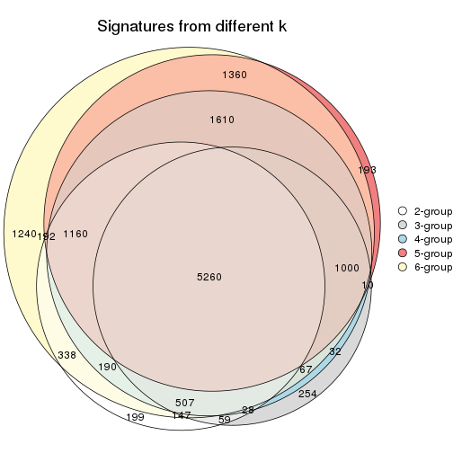
get_signature() returns a data frame invisibly. TO get the list of signatures, the function
call should be assigned to a variable explicitly. In following code, if plot argument is set
to FALSE, no heatmap is plotted while only the differential analysis is performed.
# code only for demonstration
tb = get_signature(res, k = ..., plot = FALSE)
An example of the output of tb is:
#> which_row fdr mean_1 mean_2 scaled_mean_1 scaled_mean_2 km
#> 1 38 0.042760348 8.373488 9.131774 -0.5533452 0.5164555 1
#> 2 40 0.018707592 7.106213 8.469186 -0.6173731 0.5762149 1
#> 3 55 0.019134737 10.221463 11.207825 -0.6159697 0.5749050 1
#> 4 59 0.006059896 5.921854 7.869574 -0.6899429 0.6439467 1
#> 5 60 0.018055526 8.928898 10.211722 -0.6204761 0.5791110 1
#> 6 98 0.009384629 15.714769 14.887706 0.6635654 -0.6193277 2
...
The columns in tb are:
which_row: row indices corresponding to the input matrix.fdr: FDR for the differential test. mean_x: The mean value in group x.scaled_mean_x: The mean value in group x after rows are scaled.km: Row groups if k-means clustering is applied to rows.UMAP plot which shows how samples are separated.
dimension_reduction(res, k = 2, method = "UMAP")
dimension_reduction(res, k = 3, method = "UMAP")
dimension_reduction(res, k = 4, method = "UMAP")
dimension_reduction(res, k = 5, method = "UMAP")
dimension_reduction(res, k = 6, method = "UMAP")
Following heatmap shows how subgroups are split when increasing k:
collect_classes(res)
Test correlation between subgroups and known annotations. If the known annotation is numeric, one-way ANOVA test is applied, and if the known annotation is discrete, chi-squared contingency table test is applied.
test_to_known_factors(res)
#> n agent(p) dose(p) time(p) k
#> SD:mclust 68 1.61e-07 2.09e-04 0.001487 2
#> SD:mclust 46 3.04e-10 2.42e-09 0.000170 3
#> SD:mclust 65 8.37e-17 8.94e-08 0.000027 4
#> SD:mclust 58 4.20e-21 4.41e-08 0.004425 5
#> SD:mclust 65 6.87e-22 1.15e-07 0.000185 6
If matrix rows can be associated to genes, consider to use functional_enrichment(res,
...) to perform function enrichment for the signature genes. See this vignette for more detailed explanations.
The object with results only for a single top-value method and a single partition method can be extracted as:
res = res_list["SD", "NMF"]
# you can also extract it by
# res = res_list["SD:NMF"]
A summary of res and all the functions that can be applied to it:
res
#> A 'ConsensusPartition' object with k = 2, 3, 4, 5, 6.
#> On a matrix with 21796 rows and 68 columns.
#> Top rows (1000, 2000, 3000, 4000, 5000) are extracted by 'SD' method.
#> Subgroups are detected by 'NMF' method.
#> Performed in total 1250 partitions by row resampling.
#> Best k for subgroups seems to be 2.
#>
#> Following methods can be applied to this 'ConsensusPartition' object:
#> [1] "cola_report" "collect_classes" "collect_plots"
#> [4] "collect_stats" "colnames" "compare_signatures"
#> [7] "consensus_heatmap" "dimension_reduction" "functional_enrichment"
#> [10] "get_anno_col" "get_anno" "get_classes"
#> [13] "get_consensus" "get_matrix" "get_membership"
#> [16] "get_param" "get_signatures" "get_stats"
#> [19] "is_best_k" "is_stable_k" "membership_heatmap"
#> [22] "ncol" "nrow" "plot_ecdf"
#> [25] "rownames" "select_partition_number" "show"
#> [28] "suggest_best_k" "test_to_known_factors"
collect_plots() function collects all the plots made from res for all k (number of partitions)
into one single page to provide an easy and fast comparison between different k.
collect_plots(res)
The plots are:
k and the heatmap of
predicted classes for each k.k.k.k.All the plots in panels can be made by individual functions and they are plotted later in this section.
select_partition_number() produces several plots showing different
statistics for choosing “optimized” k. There are following statistics:
k;k, the area increased is defined as \(A_k - A_{k-1}\).The detailed explanations of these statistics can be found in the cola vignette.
Generally speaking, lower PAC score, higher mean silhouette score or higher
concordance corresponds to better partition. Rand index and Jaccard index
measure how similar the current partition is compared to partition with k-1.
If they are too similar, we won't accept k is better than k-1.
select_partition_number(res)
The numeric values for all these statistics can be obtained by get_stats().
get_stats(res)
#> k 1-PAC mean_silhouette concordance area_increased Rand Jaccard
#> 2 2 0.879 0.916 0.967 0.4836 0.514 0.514
#> 3 3 0.824 0.844 0.931 0.3236 0.798 0.625
#> 4 4 0.690 0.734 0.868 0.1246 0.843 0.609
#> 5 5 0.615 0.637 0.787 0.0641 0.928 0.758
#> 6 6 0.635 0.500 0.727 0.0439 0.872 0.547
suggest_best_k() suggests the best \(k\) based on these statistics. The rules are as follows:
suggest_best_k(res)
#> [1] 2
Following shows the table of the partitions (You need to click the show/hide
code output link to see it). The membership matrix (columns with name p*)
is inferred by
clue::cl_consensus()
function with the SE method. Basically the value in the membership matrix
represents the probability to belong to a certain group. The finall class
label for an item is determined with the group with highest probability it
belongs to.
In get_classes() function, the entropy is calculated from the membership
matrix and the silhouette score is calculated from the consensus matrix.
cbind(get_classes(res, k = 2), get_membership(res, k = 2))
#> class entropy silhouette p1 p2
#> GSM159850 1 0.0000 0.9714 1.000 0.000
#> GSM159851 1 0.0000 0.9714 1.000 0.000
#> GSM159852 1 0.0000 0.9714 1.000 0.000
#> GSM159853 1 0.0000 0.9714 1.000 0.000
#> GSM159854 1 0.0000 0.9714 1.000 0.000
#> GSM159855 1 0.0000 0.9714 1.000 0.000
#> GSM159856 1 0.0000 0.9714 1.000 0.000
#> GSM159857 1 0.0000 0.9714 1.000 0.000
#> GSM159858 1 0.0000 0.9714 1.000 0.000
#> GSM159859 1 0.0000 0.9714 1.000 0.000
#> GSM159860 1 0.0000 0.9714 1.000 0.000
#> GSM159861 1 0.0000 0.9714 1.000 0.000
#> GSM159862 1 0.0000 0.9714 1.000 0.000
#> GSM159863 1 0.0000 0.9714 1.000 0.000
#> GSM159864 1 0.0000 0.9714 1.000 0.000
#> GSM159865 1 0.0000 0.9714 1.000 0.000
#> GSM159866 1 0.0000 0.9714 1.000 0.000
#> GSM159885 2 0.4815 0.8573 0.104 0.896
#> GSM159886 1 0.0000 0.9714 1.000 0.000
#> GSM159887 1 0.3733 0.9066 0.928 0.072
#> GSM159888 2 0.0000 0.9526 0.000 1.000
#> GSM159889 2 0.0000 0.9526 0.000 1.000
#> GSM159890 2 0.0000 0.9526 0.000 1.000
#> GSM159891 2 0.0000 0.9526 0.000 1.000
#> GSM159892 2 0.0000 0.9526 0.000 1.000
#> GSM159893 2 0.0000 0.9526 0.000 1.000
#> GSM159894 1 0.1184 0.9587 0.984 0.016
#> GSM159895 1 0.5059 0.8629 0.888 0.112
#> GSM159896 2 0.9977 0.0994 0.472 0.528
#> GSM159897 2 0.0000 0.9526 0.000 1.000
#> GSM159898 2 0.0000 0.9526 0.000 1.000
#> GSM159899 2 0.0000 0.9526 0.000 1.000
#> GSM159900 2 0.0000 0.9526 0.000 1.000
#> GSM159901 2 0.0000 0.9526 0.000 1.000
#> GSM159902 1 0.0000 0.9714 1.000 0.000
#> GSM159903 1 0.0000 0.9714 1.000 0.000
#> GSM159904 1 0.0000 0.9714 1.000 0.000
#> GSM159905 1 0.0000 0.9714 1.000 0.000
#> GSM159906 1 0.0000 0.9714 1.000 0.000
#> GSM159907 1 0.0000 0.9714 1.000 0.000
#> GSM159908 1 0.0000 0.9714 1.000 0.000
#> GSM159909 1 0.0000 0.9714 1.000 0.000
#> GSM159910 2 0.0000 0.9526 0.000 1.000
#> GSM159911 1 0.0938 0.9620 0.988 0.012
#> GSM159912 1 0.0000 0.9714 1.000 0.000
#> GSM159913 1 0.0000 0.9714 1.000 0.000
#> GSM159914 1 0.0000 0.9714 1.000 0.000
#> GSM159915 1 0.0000 0.9714 1.000 0.000
#> GSM159916 1 0.0000 0.9714 1.000 0.000
#> GSM159917 2 0.0000 0.9526 0.000 1.000
#> GSM159867 1 0.0000 0.9714 1.000 0.000
#> GSM159868 1 0.7883 0.6855 0.764 0.236
#> GSM159869 1 0.6531 0.7913 0.832 0.168
#> GSM159870 2 0.8763 0.5872 0.296 0.704
#> GSM159871 2 0.8763 0.5878 0.296 0.704
#> GSM159872 2 0.0000 0.9526 0.000 1.000
#> GSM159873 2 0.0000 0.9526 0.000 1.000
#> GSM159874 2 0.0000 0.9526 0.000 1.000
#> GSM159875 2 0.0000 0.9526 0.000 1.000
#> GSM159876 1 0.0000 0.9714 1.000 0.000
#> GSM159877 1 0.9970 0.0913 0.532 0.468
#> GSM159878 1 0.0000 0.9714 1.000 0.000
#> GSM159879 2 0.0672 0.9465 0.008 0.992
#> GSM159880 2 0.0000 0.9526 0.000 1.000
#> GSM159881 2 0.0000 0.9526 0.000 1.000
#> GSM159882 2 0.0000 0.9526 0.000 1.000
#> GSM159883 2 0.0000 0.9526 0.000 1.000
#> GSM159884 2 0.0000 0.9526 0.000 1.000
cbind(get_classes(res, k = 3), get_membership(res, k = 3))
#> class entropy silhouette p1 p2 p3
#> GSM159850 1 0.1411 0.9242 0.964 0.000 0.036
#> GSM159851 1 0.1031 0.9290 0.976 0.000 0.024
#> GSM159852 1 0.0424 0.9317 0.992 0.000 0.008
#> GSM159853 1 0.0592 0.9315 0.988 0.000 0.012
#> GSM159854 1 0.0424 0.9317 0.992 0.000 0.008
#> GSM159855 1 0.0892 0.9302 0.980 0.000 0.020
#> GSM159856 1 0.0424 0.9277 0.992 0.000 0.008
#> GSM159857 1 0.0000 0.9307 1.000 0.000 0.000
#> GSM159858 1 0.0424 0.9277 0.992 0.000 0.008
#> GSM159859 1 0.0237 0.9295 0.996 0.000 0.004
#> GSM159860 1 0.0424 0.9277 0.992 0.000 0.008
#> GSM159861 1 0.1643 0.9198 0.956 0.000 0.044
#> GSM159862 1 0.6215 0.2737 0.572 0.000 0.428
#> GSM159863 1 0.4235 0.7783 0.824 0.000 0.176
#> GSM159864 1 0.1163 0.9285 0.972 0.000 0.028
#> GSM159865 1 0.0592 0.9318 0.988 0.000 0.012
#> GSM159866 1 0.0424 0.9316 0.992 0.000 0.008
#> GSM159885 3 0.0592 0.8697 0.012 0.000 0.988
#> GSM159886 1 0.0592 0.9252 0.988 0.000 0.012
#> GSM159887 3 0.4605 0.7140 0.204 0.000 0.796
#> GSM159888 2 0.0237 0.9437 0.000 0.996 0.004
#> GSM159889 2 0.0829 0.9392 0.004 0.984 0.012
#> GSM159890 2 0.0237 0.9437 0.000 0.996 0.004
#> GSM159891 2 0.0424 0.9417 0.000 0.992 0.008
#> GSM159892 2 0.0747 0.9379 0.000 0.984 0.016
#> GSM159893 2 0.0424 0.9417 0.000 0.992 0.008
#> GSM159894 1 0.1031 0.9297 0.976 0.000 0.024
#> GSM159895 3 0.1964 0.8533 0.056 0.000 0.944
#> GSM159896 3 0.0592 0.8697 0.012 0.000 0.988
#> GSM159897 2 0.0000 0.9439 0.000 1.000 0.000
#> GSM159898 2 0.0237 0.9437 0.000 0.996 0.004
#> GSM159899 2 0.0000 0.9439 0.000 1.000 0.000
#> GSM159900 3 0.6286 0.0705 0.000 0.464 0.536
#> GSM159901 2 0.4121 0.7970 0.000 0.832 0.168
#> GSM159902 3 0.4002 0.7624 0.160 0.000 0.840
#> GSM159903 1 0.1753 0.9164 0.952 0.000 0.048
#> GSM159904 1 0.6286 0.1483 0.536 0.000 0.464
#> GSM159905 1 0.1289 0.9266 0.968 0.000 0.032
#> GSM159906 1 0.0592 0.9315 0.988 0.000 0.012
#> GSM159907 1 0.0000 0.9307 1.000 0.000 0.000
#> GSM159908 1 0.6291 0.1415 0.532 0.000 0.468
#> GSM159909 3 0.6095 0.3017 0.392 0.000 0.608
#> GSM159910 3 0.0829 0.8682 0.012 0.004 0.984
#> GSM159911 3 0.0892 0.8700 0.020 0.000 0.980
#> GSM159912 1 0.0892 0.9302 0.980 0.000 0.020
#> GSM159913 1 0.1163 0.9277 0.972 0.000 0.028
#> GSM159914 1 0.0237 0.9295 0.996 0.000 0.004
#> GSM159915 1 0.0000 0.9307 1.000 0.000 0.000
#> GSM159916 1 0.0237 0.9295 0.996 0.000 0.004
#> GSM159917 3 0.0592 0.8697 0.012 0.000 0.988
#> GSM159867 1 0.2625 0.8830 0.916 0.000 0.084
#> GSM159868 3 0.0892 0.8700 0.020 0.000 0.980
#> GSM159869 3 0.0892 0.8700 0.020 0.000 0.980
#> GSM159870 2 0.5020 0.7318 0.192 0.796 0.012
#> GSM159871 2 0.5220 0.7078 0.208 0.780 0.012
#> GSM159872 3 0.1964 0.8295 0.000 0.056 0.944
#> GSM159873 2 0.2711 0.8841 0.000 0.912 0.088
#> GSM159874 3 0.5016 0.6184 0.000 0.240 0.760
#> GSM159875 2 0.3482 0.8463 0.000 0.872 0.128
#> GSM159876 1 0.1182 0.9171 0.976 0.012 0.012
#> GSM159877 3 0.0592 0.8697 0.012 0.000 0.988
#> GSM159878 1 0.1182 0.9171 0.976 0.012 0.012
#> GSM159879 2 0.1620 0.9267 0.024 0.964 0.012
#> GSM159880 2 0.1182 0.9348 0.012 0.976 0.012
#> GSM159881 2 0.0000 0.9439 0.000 1.000 0.000
#> GSM159882 2 0.0000 0.9439 0.000 1.000 0.000
#> GSM159883 2 0.0237 0.9437 0.000 0.996 0.004
#> GSM159884 2 0.0000 0.9439 0.000 1.000 0.000
cbind(get_classes(res, k = 4), get_membership(res, k = 4))
#> class entropy silhouette p1 p2 p3 p4
#> GSM159850 1 0.1356 0.84696 0.960 0.000 0.032 0.008
#> GSM159851 1 0.1302 0.84274 0.956 0.000 0.044 0.000
#> GSM159852 1 0.1867 0.83115 0.928 0.000 0.072 0.000
#> GSM159853 1 0.2081 0.82389 0.916 0.000 0.084 0.000
#> GSM159854 1 0.1211 0.84352 0.960 0.000 0.040 0.000
#> GSM159855 1 0.1792 0.83498 0.932 0.000 0.068 0.000
#> GSM159856 1 0.3801 0.68852 0.780 0.000 0.220 0.000
#> GSM159857 1 0.3356 0.74702 0.824 0.000 0.176 0.000
#> GSM159858 1 0.3688 0.70514 0.792 0.000 0.208 0.000
#> GSM159859 1 0.2760 0.79109 0.872 0.000 0.128 0.000
#> GSM159860 1 0.3528 0.72468 0.808 0.000 0.192 0.000
#> GSM159861 3 0.4454 0.53468 0.308 0.000 0.692 0.000
#> GSM159862 3 0.4894 0.65094 0.100 0.000 0.780 0.120
#> GSM159863 3 0.4152 0.69659 0.160 0.000 0.808 0.032
#> GSM159864 3 0.1398 0.71852 0.040 0.000 0.956 0.004
#> GSM159865 3 0.1557 0.72637 0.056 0.000 0.944 0.000
#> GSM159866 3 0.1389 0.72375 0.048 0.000 0.952 0.000
#> GSM159885 4 0.3610 0.70883 0.200 0.000 0.000 0.800
#> GSM159886 1 0.1474 0.83920 0.948 0.000 0.052 0.000
#> GSM159887 1 0.5126 0.13651 0.552 0.000 0.004 0.444
#> GSM159888 2 0.0000 0.93313 0.000 1.000 0.000 0.000
#> GSM159889 2 0.0000 0.93313 0.000 1.000 0.000 0.000
#> GSM159890 2 0.0000 0.93313 0.000 1.000 0.000 0.000
#> GSM159891 2 0.0336 0.93238 0.000 0.992 0.000 0.008
#> GSM159892 2 0.0707 0.92779 0.000 0.980 0.000 0.020
#> GSM159893 2 0.0188 0.93294 0.000 0.996 0.000 0.004
#> GSM159894 1 0.2174 0.83387 0.928 0.000 0.020 0.052
#> GSM159895 4 0.4382 0.58583 0.296 0.000 0.000 0.704
#> GSM159896 4 0.3257 0.74297 0.152 0.000 0.004 0.844
#> GSM159897 2 0.0336 0.93236 0.000 0.992 0.000 0.008
#> GSM159898 2 0.0000 0.93313 0.000 1.000 0.000 0.000
#> GSM159899 2 0.0469 0.93116 0.000 0.988 0.000 0.012
#> GSM159900 4 0.4089 0.61778 0.004 0.212 0.004 0.780
#> GSM159901 2 0.4331 0.59334 0.000 0.712 0.000 0.288
#> GSM159902 1 0.4431 0.52763 0.696 0.000 0.000 0.304
#> GSM159903 1 0.1474 0.82895 0.948 0.000 0.000 0.052
#> GSM159904 1 0.2921 0.76699 0.860 0.000 0.000 0.140
#> GSM159905 1 0.0707 0.84264 0.980 0.000 0.000 0.020
#> GSM159906 1 0.0336 0.84744 0.992 0.000 0.008 0.000
#> GSM159907 1 0.0336 0.84744 0.992 0.000 0.008 0.000
#> GSM159908 1 0.3751 0.71125 0.800 0.000 0.004 0.196
#> GSM159909 1 0.4500 0.50906 0.684 0.000 0.000 0.316
#> GSM159910 4 0.1716 0.73984 0.000 0.000 0.064 0.936
#> GSM159911 4 0.3311 0.73248 0.172 0.000 0.000 0.828
#> GSM159912 1 0.0817 0.84078 0.976 0.000 0.000 0.024
#> GSM159913 1 0.1302 0.83262 0.956 0.000 0.000 0.044
#> GSM159914 1 0.0188 0.84736 0.996 0.000 0.004 0.000
#> GSM159915 1 0.0188 0.84648 0.996 0.000 0.000 0.004
#> GSM159916 1 0.0188 0.84648 0.996 0.000 0.000 0.004
#> GSM159917 4 0.1867 0.73771 0.000 0.000 0.072 0.928
#> GSM159867 1 0.6336 -0.08180 0.480 0.000 0.460 0.060
#> GSM159868 4 0.3907 0.73487 0.044 0.000 0.120 0.836
#> GSM159869 4 0.4568 0.73388 0.076 0.000 0.124 0.800
#> GSM159870 2 0.5070 0.40873 0.008 0.620 0.372 0.000
#> GSM159871 3 0.5376 0.20334 0.016 0.396 0.588 0.000
#> GSM159872 4 0.5172 0.29136 0.000 0.008 0.404 0.588
#> GSM159873 2 0.2002 0.90845 0.000 0.936 0.020 0.044
#> GSM159874 4 0.3471 0.72005 0.000 0.060 0.072 0.868
#> GSM159875 2 0.3088 0.83505 0.000 0.864 0.008 0.128
#> GSM159876 3 0.3037 0.72055 0.100 0.020 0.880 0.000
#> GSM159877 3 0.4941 -0.00602 0.000 0.000 0.564 0.436
#> GSM159878 3 0.4679 0.45084 0.352 0.000 0.648 0.000
#> GSM159879 2 0.1022 0.92685 0.000 0.968 0.032 0.000
#> GSM159880 2 0.0921 0.92798 0.000 0.972 0.028 0.000
#> GSM159881 2 0.1557 0.91553 0.000 0.944 0.056 0.000
#> GSM159882 2 0.1637 0.91322 0.000 0.940 0.060 0.000
#> GSM159883 2 0.1637 0.91314 0.000 0.940 0.060 0.000
#> GSM159884 2 0.0469 0.93151 0.000 0.988 0.012 0.000
cbind(get_classes(res, k = 5), get_membership(res, k = 5))
#> class entropy silhouette p1 p2 p3 p4 p5
#> GSM159850 1 0.4846 0.2972 0.588 0.000 0.004 0.388 0.020
#> GSM159851 1 0.4240 0.6087 0.736 0.000 0.000 0.228 0.036
#> GSM159852 1 0.2864 0.7232 0.864 0.000 0.000 0.112 0.024
#> GSM159853 1 0.3248 0.7226 0.852 0.000 0.004 0.104 0.040
#> GSM159854 1 0.3280 0.6800 0.812 0.000 0.000 0.176 0.012
#> GSM159855 1 0.4166 0.6818 0.780 0.000 0.004 0.160 0.056
#> GSM159856 1 0.4109 0.5779 0.768 0.000 0.004 0.036 0.192
#> GSM159857 1 0.3500 0.6525 0.808 0.000 0.004 0.016 0.172
#> GSM159858 1 0.3724 0.5907 0.776 0.000 0.000 0.020 0.204
#> GSM159859 1 0.2612 0.6830 0.868 0.000 0.000 0.008 0.124
#> GSM159860 1 0.3319 0.6467 0.820 0.000 0.000 0.020 0.160
#> GSM159861 5 0.4670 0.6340 0.100 0.000 0.008 0.136 0.756
#> GSM159862 5 0.4207 0.6708 0.024 0.000 0.076 0.092 0.808
#> GSM159863 5 0.3643 0.7079 0.036 0.000 0.044 0.072 0.848
#> GSM159864 5 0.2151 0.7293 0.040 0.000 0.020 0.016 0.924
#> GSM159865 5 0.1788 0.7317 0.056 0.000 0.004 0.008 0.932
#> GSM159866 5 0.1644 0.7329 0.048 0.000 0.004 0.008 0.940
#> GSM159885 4 0.5048 0.7633 0.152 0.000 0.144 0.704 0.000
#> GSM159886 1 0.1251 0.7392 0.956 0.000 0.000 0.036 0.008
#> GSM159887 4 0.4522 0.7290 0.248 0.000 0.044 0.708 0.000
#> GSM159888 2 0.0162 0.7964 0.000 0.996 0.000 0.004 0.000
#> GSM159889 2 0.1153 0.7920 0.008 0.964 0.000 0.024 0.004
#> GSM159890 2 0.0324 0.7952 0.000 0.992 0.000 0.004 0.004
#> GSM159891 2 0.0451 0.7974 0.000 0.988 0.000 0.008 0.004
#> GSM159892 2 0.0609 0.7965 0.000 0.980 0.000 0.020 0.000
#> GSM159893 2 0.0609 0.7991 0.000 0.980 0.000 0.020 0.000
#> GSM159894 4 0.4607 0.6787 0.268 0.008 0.004 0.700 0.020
#> GSM159895 4 0.5525 0.7564 0.212 0.008 0.116 0.664 0.000
#> GSM159896 4 0.5353 0.7631 0.156 0.000 0.156 0.684 0.004
#> GSM159897 2 0.0960 0.7879 0.000 0.972 0.016 0.008 0.004
#> GSM159898 2 0.1538 0.7797 0.004 0.952 0.020 0.020 0.004
#> GSM159899 2 0.1059 0.7858 0.000 0.968 0.020 0.008 0.004
#> GSM159900 3 0.6211 0.4714 0.000 0.324 0.540 0.128 0.008
#> GSM159901 2 0.4225 0.6155 0.000 0.784 0.136 0.076 0.004
#> GSM159902 4 0.5220 0.2678 0.440 0.000 0.044 0.516 0.000
#> GSM159903 1 0.4402 0.3388 0.620 0.000 0.004 0.372 0.004
#> GSM159904 1 0.4922 0.1224 0.552 0.000 0.020 0.424 0.004
#> GSM159905 1 0.1202 0.7380 0.960 0.000 0.004 0.032 0.004
#> GSM159906 1 0.0324 0.7400 0.992 0.000 0.000 0.004 0.004
#> GSM159907 1 0.0566 0.7404 0.984 0.000 0.000 0.012 0.004
#> GSM159908 1 0.5764 0.4572 0.648 0.000 0.112 0.224 0.016
#> GSM159909 1 0.5887 -0.0572 0.504 0.000 0.088 0.404 0.004
#> GSM159910 3 0.1869 0.7226 0.000 0.028 0.936 0.028 0.008
#> GSM159911 4 0.5690 0.7189 0.152 0.000 0.224 0.624 0.000
#> GSM159912 1 0.3086 0.6677 0.816 0.000 0.000 0.180 0.004
#> GSM159913 1 0.3966 0.4330 0.664 0.000 0.000 0.336 0.000
#> GSM159914 1 0.0566 0.7366 0.984 0.000 0.000 0.004 0.012
#> GSM159915 1 0.0324 0.7400 0.992 0.000 0.000 0.004 0.004
#> GSM159916 1 0.0451 0.7393 0.988 0.000 0.000 0.004 0.008
#> GSM159917 3 0.1638 0.7302 0.000 0.000 0.932 0.064 0.004
#> GSM159867 4 0.4546 0.6318 0.108 0.000 0.008 0.768 0.116
#> GSM159868 4 0.4017 0.6260 0.032 0.000 0.084 0.824 0.060
#> GSM159869 4 0.4218 0.6425 0.040 0.000 0.092 0.812 0.056
#> GSM159870 2 0.6707 0.3773 0.000 0.464 0.004 0.236 0.296
#> GSM159871 5 0.6793 0.0576 0.000 0.288 0.008 0.236 0.468
#> GSM159872 3 0.2903 0.7094 0.000 0.000 0.872 0.048 0.080
#> GSM159873 2 0.5622 0.5042 0.000 0.512 0.012 0.428 0.048
#> GSM159874 3 0.5705 0.4458 0.000 0.048 0.556 0.376 0.020
#> GSM159875 2 0.5304 0.5226 0.000 0.540 0.020 0.420 0.020
#> GSM159876 5 0.5125 0.6045 0.064 0.000 0.016 0.220 0.700
#> GSM159877 3 0.4333 0.5837 0.000 0.000 0.740 0.048 0.212
#> GSM159878 5 0.6214 0.5264 0.228 0.000 0.012 0.168 0.592
#> GSM159879 2 0.4518 0.7566 0.000 0.732 0.004 0.216 0.048
#> GSM159880 2 0.4620 0.7556 0.000 0.732 0.004 0.204 0.060
#> GSM159881 2 0.5055 0.7384 0.000 0.704 0.004 0.196 0.096
#> GSM159882 2 0.4468 0.7660 0.000 0.756 0.004 0.172 0.068
#> GSM159883 2 0.4418 0.7657 0.000 0.756 0.004 0.180 0.060
#> GSM159884 2 0.3925 0.7731 0.000 0.784 0.004 0.180 0.032
cbind(get_classes(res, k = 6), get_membership(res, k = 6))
#> class entropy silhouette p1 p2 p3 p4 p5 p6
#> GSM159850 4 0.5285 0.1576 0.424 0.008 0.004 0.500 0.000 0.064
#> GSM159851 1 0.5334 0.2908 0.564 0.012 0.000 0.360 0.016 0.048
#> GSM159852 1 0.4153 0.6651 0.764 0.004 0.000 0.164 0.016 0.052
#> GSM159853 1 0.5010 0.6877 0.748 0.024 0.012 0.108 0.024 0.084
#> GSM159854 1 0.4543 0.5517 0.684 0.012 0.000 0.252 0.000 0.052
#> GSM159855 1 0.6100 0.5358 0.620 0.008 0.012 0.220 0.064 0.076
#> GSM159856 1 0.3840 0.6869 0.800 0.008 0.000 0.016 0.132 0.044
#> GSM159857 1 0.4717 0.6772 0.744 0.012 0.000 0.032 0.144 0.068
#> GSM159858 1 0.2673 0.7152 0.856 0.004 0.000 0.004 0.128 0.008
#> GSM159859 1 0.1759 0.7370 0.924 0.004 0.000 0.004 0.064 0.004
#> GSM159860 1 0.2119 0.7358 0.912 0.004 0.000 0.008 0.060 0.016
#> GSM159861 5 0.3540 0.8213 0.036 0.000 0.000 0.132 0.812 0.020
#> GSM159862 5 0.3595 0.8376 0.020 0.000 0.008 0.120 0.820 0.032
#> GSM159863 5 0.2767 0.8754 0.028 0.000 0.004 0.068 0.880 0.020
#> GSM159864 5 0.0653 0.8821 0.012 0.004 0.000 0.004 0.980 0.000
#> GSM159865 5 0.0748 0.8806 0.016 0.004 0.000 0.004 0.976 0.000
#> GSM159866 5 0.0653 0.8821 0.012 0.004 0.000 0.004 0.980 0.000
#> GSM159885 4 0.2435 0.7243 0.040 0.032 0.012 0.904 0.000 0.012
#> GSM159886 1 0.2321 0.7440 0.900 0.008 0.000 0.040 0.000 0.052
#> GSM159887 4 0.2451 0.7348 0.068 0.040 0.004 0.888 0.000 0.000
#> GSM159888 2 0.3854 -0.5275 0.000 0.536 0.000 0.000 0.000 0.464
#> GSM159889 2 0.4325 -0.5417 0.020 0.524 0.000 0.000 0.000 0.456
#> GSM159890 2 0.3864 -0.5657 0.000 0.520 0.000 0.000 0.000 0.480
#> GSM159891 6 0.3868 0.5242 0.000 0.496 0.000 0.000 0.000 0.504
#> GSM159892 2 0.3862 -0.5573 0.000 0.524 0.000 0.000 0.000 0.476
#> GSM159893 2 0.3851 -0.5216 0.000 0.540 0.000 0.000 0.000 0.460
#> GSM159894 4 0.2949 0.7252 0.056 0.020 0.000 0.876 0.012 0.036
#> GSM159895 4 0.2802 0.7277 0.044 0.008 0.008 0.888 0.012 0.040
#> GSM159896 4 0.1912 0.7111 0.012 0.004 0.008 0.932 0.012 0.032
#> GSM159897 6 0.3810 0.6740 0.000 0.428 0.000 0.000 0.000 0.572
#> GSM159898 6 0.3915 0.6876 0.004 0.412 0.000 0.000 0.000 0.584
#> GSM159899 6 0.3747 0.6920 0.000 0.396 0.000 0.000 0.000 0.604
#> GSM159900 6 0.5656 0.3008 0.000 0.084 0.212 0.060 0.004 0.640
#> GSM159901 6 0.4372 0.6012 0.000 0.260 0.020 0.028 0.000 0.692
#> GSM159902 4 0.3651 0.6553 0.224 0.000 0.000 0.752 0.008 0.016
#> GSM159903 4 0.4497 0.2937 0.440 0.000 0.004 0.536 0.004 0.016
#> GSM159904 4 0.4656 0.5366 0.312 0.000 0.004 0.640 0.012 0.032
#> GSM159905 1 0.1994 0.7442 0.920 0.000 0.008 0.052 0.004 0.016
#> GSM159906 1 0.1484 0.7519 0.944 0.000 0.004 0.040 0.004 0.008
#> GSM159907 1 0.1477 0.7504 0.940 0.000 0.000 0.048 0.004 0.008
#> GSM159908 1 0.7274 0.0868 0.460 0.000 0.064 0.304 0.120 0.052
#> GSM159909 4 0.6177 0.5067 0.284 0.000 0.028 0.572 0.052 0.064
#> GSM159910 3 0.3087 0.7299 0.000 0.000 0.808 0.004 0.012 0.176
#> GSM159911 4 0.3017 0.7302 0.072 0.000 0.024 0.868 0.008 0.028
#> GSM159912 1 0.3925 0.4852 0.700 0.000 0.004 0.280 0.004 0.012
#> GSM159913 4 0.4227 0.1258 0.492 0.000 0.000 0.496 0.004 0.008
#> GSM159914 1 0.1819 0.7520 0.932 0.000 0.004 0.032 0.008 0.024
#> GSM159915 1 0.1899 0.7492 0.928 0.000 0.004 0.032 0.008 0.028
#> GSM159916 1 0.1697 0.7505 0.936 0.000 0.004 0.036 0.004 0.020
#> GSM159917 3 0.1092 0.7878 0.000 0.000 0.960 0.020 0.000 0.020
#> GSM159867 4 0.3253 0.6748 0.016 0.088 0.000 0.852 0.016 0.028
#> GSM159868 4 0.2621 0.6763 0.004 0.044 0.004 0.896 0.028 0.024
#> GSM159869 4 0.3079 0.6611 0.008 0.064 0.008 0.872 0.024 0.024
#> GSM159870 2 0.3925 0.4359 0.012 0.800 0.000 0.008 0.096 0.084
#> GSM159871 2 0.4936 0.3942 0.008 0.712 0.008 0.008 0.164 0.100
#> GSM159872 3 0.1261 0.7893 0.000 0.004 0.956 0.008 0.028 0.004
#> GSM159873 2 0.5192 0.3399 0.000 0.652 0.008 0.252 0.024 0.064
#> GSM159874 3 0.7421 0.3705 0.000 0.172 0.412 0.316 0.040 0.060
#> GSM159875 2 0.5728 0.2827 0.000 0.572 0.012 0.296 0.012 0.108
#> GSM159876 2 0.8091 -0.1731 0.108 0.360 0.024 0.028 0.328 0.152
#> GSM159877 3 0.2050 0.7784 0.000 0.004 0.920 0.008 0.036 0.032
#> GSM159878 1 0.8225 -0.1715 0.288 0.252 0.012 0.020 0.284 0.144
#> GSM159879 2 0.1148 0.4757 0.016 0.960 0.004 0.000 0.000 0.020
#> GSM159880 2 0.0767 0.4781 0.000 0.976 0.000 0.008 0.004 0.012
#> GSM159881 2 0.1857 0.4807 0.000 0.928 0.000 0.012 0.032 0.028
#> GSM159882 2 0.1826 0.4605 0.000 0.924 0.004 0.000 0.020 0.052
#> GSM159883 2 0.1296 0.4692 0.000 0.952 0.004 0.000 0.012 0.032
#> GSM159884 2 0.1610 0.4176 0.000 0.916 0.000 0.000 0.000 0.084
Heatmaps for the consensus matrix. It visualizes the probability of two samples to be in a same group.
consensus_heatmap(res, k = 2)
consensus_heatmap(res, k = 3)
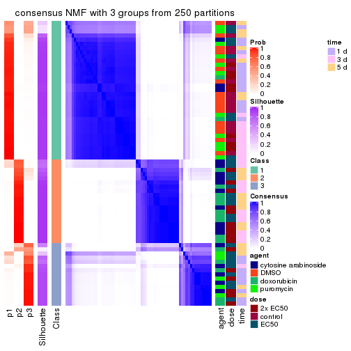
consensus_heatmap(res, k = 4)
consensus_heatmap(res, k = 5)
consensus_heatmap(res, k = 6)
Heatmaps for the membership of samples in all partitions to see how consistent they are:
membership_heatmap(res, k = 2)
membership_heatmap(res, k = 3)
membership_heatmap(res, k = 4)
membership_heatmap(res, k = 5)
membership_heatmap(res, k = 6)
As soon as we have had the classes for columns, we can look for signatures which are significantly different between classes which can be candidate marks for certain classes. Following are the heatmaps for signatures.
Signature heatmaps where rows are scaled:
get_signatures(res, k = 2)
get_signatures(res, k = 3)
get_signatures(res, k = 4)
get_signatures(res, k = 5)
get_signatures(res, k = 6)
Signature heatmaps where rows are not scaled:
get_signatures(res, k = 2, scale_rows = FALSE)
get_signatures(res, k = 3, scale_rows = FALSE)
get_signatures(res, k = 4, scale_rows = FALSE)
get_signatures(res, k = 5, scale_rows = FALSE)
get_signatures(res, k = 6, scale_rows = FALSE)
Compare the overlap of signatures from different k:
compare_signatures(res)
get_signature() returns a data frame invisibly. TO get the list of signatures, the function
call should be assigned to a variable explicitly. In following code, if plot argument is set
to FALSE, no heatmap is plotted while only the differential analysis is performed.
# code only for demonstration
tb = get_signature(res, k = ..., plot = FALSE)
An example of the output of tb is:
#> which_row fdr mean_1 mean_2 scaled_mean_1 scaled_mean_2 km
#> 1 38 0.042760348 8.373488 9.131774 -0.5533452 0.5164555 1
#> 2 40 0.018707592 7.106213 8.469186 -0.6173731 0.5762149 1
#> 3 55 0.019134737 10.221463 11.207825 -0.6159697 0.5749050 1
#> 4 59 0.006059896 5.921854 7.869574 -0.6899429 0.6439467 1
#> 5 60 0.018055526 8.928898 10.211722 -0.6204761 0.5791110 1
#> 6 98 0.009384629 15.714769 14.887706 0.6635654 -0.6193277 2
...
The columns in tb are:
which_row: row indices corresponding to the input matrix.fdr: FDR for the differential test. mean_x: The mean value in group x.scaled_mean_x: The mean value in group x after rows are scaled.km: Row groups if k-means clustering is applied to rows.UMAP plot which shows how samples are separated.
dimension_reduction(res, k = 2, method = "UMAP")
dimension_reduction(res, k = 3, method = "UMAP")
dimension_reduction(res, k = 4, method = "UMAP")
dimension_reduction(res, k = 5, method = "UMAP")
dimension_reduction(res, k = 6, method = "UMAP")
Following heatmap shows how subgroups are split when increasing k:
collect_classes(res)
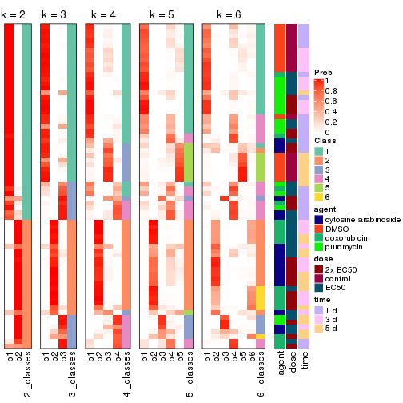
Test correlation between subgroups and known annotations. If the known annotation is numeric, one-way ANOVA test is applied, and if the known annotation is discrete, chi-squared contingency table test is applied.
test_to_known_factors(res)
#> n agent(p) dose(p) time(p) k
#> SD:NMF 66 7.27e-07 5.76e-04 1.82e-04 2
#> SD:NMF 63 4.58e-07 6.04e-05 4.06e-04 3
#> SD:NMF 61 2.24e-08 2.09e-04 2.26e-05 4
#> SD:NMF 57 3.26e-07 3.61e-04 3.55e-07 5
#> SD:NMF 43 2.98e-06 1.74e-04 3.01e-07 6
If matrix rows can be associated to genes, consider to use functional_enrichment(res,
...) to perform function enrichment for the signature genes. See this vignette for more detailed explanations.
The object with results only for a single top-value method and a single partition method can be extracted as:
res = res_list["CV", "hclust"]
# you can also extract it by
# res = res_list["CV:hclust"]
A summary of res and all the functions that can be applied to it:
res
#> A 'ConsensusPartition' object with k = 2, 3, 4, 5, 6.
#> On a matrix with 21796 rows and 68 columns.
#> Top rows (1000, 2000, 3000, 4000, 5000) are extracted by 'CV' method.
#> Subgroups are detected by 'hclust' method.
#> Performed in total 1250 partitions by row resampling.
#> Best k for subgroups seems to be 3.
#>
#> Following methods can be applied to this 'ConsensusPartition' object:
#> [1] "cola_report" "collect_classes" "collect_plots"
#> [4] "collect_stats" "colnames" "compare_signatures"
#> [7] "consensus_heatmap" "dimension_reduction" "functional_enrichment"
#> [10] "get_anno_col" "get_anno" "get_classes"
#> [13] "get_consensus" "get_matrix" "get_membership"
#> [16] "get_param" "get_signatures" "get_stats"
#> [19] "is_best_k" "is_stable_k" "membership_heatmap"
#> [22] "ncol" "nrow" "plot_ecdf"
#> [25] "rownames" "select_partition_number" "show"
#> [28] "suggest_best_k" "test_to_known_factors"
collect_plots() function collects all the plots made from res for all k (number of partitions)
into one single page to provide an easy and fast comparison between different k.
collect_plots(res)
The plots are:
k and the heatmap of
predicted classes for each k.k.k.k.All the plots in panels can be made by individual functions and they are plotted later in this section.
select_partition_number() produces several plots showing different
statistics for choosing “optimized” k. There are following statistics:
k;k, the area increased is defined as \(A_k - A_{k-1}\).The detailed explanations of these statistics can be found in the cola vignette.
Generally speaking, lower PAC score, higher mean silhouette score or higher
concordance corresponds to better partition. Rand index and Jaccard index
measure how similar the current partition is compared to partition with k-1.
If they are too similar, we won't accept k is better than k-1.
select_partition_number(res)
The numeric values for all these statistics can be obtained by get_stats().
get_stats(res)
#> k 1-PAC mean_silhouette concordance area_increased Rand Jaccard
#> 2 2 0.501 0.907 0.938 0.1623 0.888 0.888
#> 3 3 0.632 0.715 0.873 1.0494 0.920 0.909
#> 4 4 0.583 0.568 0.872 0.0624 0.920 0.901
#> 5 5 0.645 0.895 0.915 0.4454 0.681 0.577
#> 6 6 0.653 0.847 0.895 0.0806 1.000 1.000
suggest_best_k() suggests the best \(k\) based on these statistics. The rules are as follows:
suggest_best_k(res)
#> [1] 3
Following shows the table of the partitions (You need to click the show/hide
code output link to see it). The membership matrix (columns with name p*)
is inferred by
clue::cl_consensus()
function with the SE method. Basically the value in the membership matrix
represents the probability to belong to a certain group. The finall class
label for an item is determined with the group with highest probability it
belongs to.
In get_classes() function, the entropy is calculated from the membership
matrix and the silhouette score is calculated from the consensus matrix.
cbind(get_classes(res, k = 2), get_membership(res, k = 2))
#> class entropy silhouette p1 p2
#> GSM159850 1 0.000 0.935 1.000 0.000
#> GSM159851 1 0.000 0.935 1.000 0.000
#> GSM159852 1 0.000 0.935 1.000 0.000
#> GSM159853 1 0.000 0.935 1.000 0.000
#> GSM159854 1 0.000 0.935 1.000 0.000
#> GSM159855 1 0.000 0.935 1.000 0.000
#> GSM159856 1 0.000 0.935 1.000 0.000
#> GSM159857 1 0.000 0.935 1.000 0.000
#> GSM159858 1 0.000 0.935 1.000 0.000
#> GSM159859 1 0.000 0.935 1.000 0.000
#> GSM159860 1 0.000 0.935 1.000 0.000
#> GSM159861 1 0.000 0.935 1.000 0.000
#> GSM159862 1 0.000 0.935 1.000 0.000
#> GSM159863 1 0.000 0.935 1.000 0.000
#> GSM159864 1 0.000 0.935 1.000 0.000
#> GSM159865 1 0.000 0.935 1.000 0.000
#> GSM159866 1 0.000 0.935 1.000 0.000
#> GSM159885 1 0.000 0.935 1.000 0.000
#> GSM159886 1 0.000 0.935 1.000 0.000
#> GSM159887 1 0.000 0.935 1.000 0.000
#> GSM159888 1 0.689 0.829 0.816 0.184
#> GSM159889 1 0.689 0.829 0.816 0.184
#> GSM159890 1 0.689 0.829 0.816 0.184
#> GSM159891 1 0.697 0.825 0.812 0.188
#> GSM159892 1 0.697 0.825 0.812 0.188
#> GSM159893 1 0.697 0.825 0.812 0.188
#> GSM159894 1 0.000 0.935 1.000 0.000
#> GSM159895 1 0.000 0.935 1.000 0.000
#> GSM159896 1 0.000 0.935 1.000 0.000
#> GSM159897 1 0.689 0.829 0.816 0.184
#> GSM159898 1 0.689 0.829 0.816 0.184
#> GSM159899 1 0.689 0.829 0.816 0.184
#> GSM159900 1 0.745 0.798 0.788 0.212
#> GSM159901 1 0.745 0.798 0.788 0.212
#> GSM159902 1 0.000 0.935 1.000 0.000
#> GSM159903 1 0.000 0.935 1.000 0.000
#> GSM159904 1 0.000 0.935 1.000 0.000
#> GSM159905 1 0.000 0.935 1.000 0.000
#> GSM159906 1 0.000 0.935 1.000 0.000
#> GSM159907 1 0.000 0.935 1.000 0.000
#> GSM159908 1 0.000 0.935 1.000 0.000
#> GSM159909 1 0.000 0.935 1.000 0.000
#> GSM159910 2 0.738 0.953 0.208 0.792
#> GSM159911 1 0.000 0.935 1.000 0.000
#> GSM159912 1 0.000 0.935 1.000 0.000
#> GSM159913 1 0.000 0.935 1.000 0.000
#> GSM159914 1 0.000 0.935 1.000 0.000
#> GSM159915 1 0.000 0.935 1.000 0.000
#> GSM159916 1 0.000 0.935 1.000 0.000
#> GSM159917 2 0.506 0.886 0.112 0.888
#> GSM159867 1 0.000 0.935 1.000 0.000
#> GSM159868 1 0.000 0.935 1.000 0.000
#> GSM159869 1 0.000 0.935 1.000 0.000
#> GSM159870 1 0.518 0.880 0.884 0.116
#> GSM159871 1 0.518 0.880 0.884 0.116
#> GSM159872 2 0.730 0.957 0.204 0.796
#> GSM159873 1 0.563 0.870 0.868 0.132
#> GSM159874 1 0.634 0.851 0.840 0.160
#> GSM159875 1 0.644 0.847 0.836 0.164
#> GSM159876 1 0.000 0.935 1.000 0.000
#> GSM159877 2 0.730 0.957 0.204 0.796
#> GSM159878 1 0.000 0.935 1.000 0.000
#> GSM159879 1 0.529 0.878 0.880 0.120
#> GSM159880 1 0.529 0.878 0.880 0.120
#> GSM159881 1 0.529 0.878 0.880 0.120
#> GSM159882 1 0.529 0.878 0.880 0.120
#> GSM159883 1 0.529 0.878 0.880 0.120
#> GSM159884 1 0.529 0.878 0.880 0.120
cbind(get_classes(res, k = 3), get_membership(res, k = 3))
#> class entropy silhouette p1 p2 p3
#> GSM159850 1 0.595 0.839 0.640 0.360 0.000
#> GSM159851 1 0.595 0.839 0.640 0.360 0.000
#> GSM159852 1 0.595 0.839 0.640 0.360 0.000
#> GSM159853 1 0.595 0.839 0.640 0.360 0.000
#> GSM159854 1 0.595 0.839 0.640 0.360 0.000
#> GSM159855 1 0.595 0.839 0.640 0.360 0.000
#> GSM159856 1 0.595 0.839 0.640 0.360 0.000
#> GSM159857 1 0.595 0.839 0.640 0.360 0.000
#> GSM159858 1 0.595 0.839 0.640 0.360 0.000
#> GSM159859 1 0.595 0.839 0.640 0.360 0.000
#> GSM159860 1 0.595 0.839 0.640 0.360 0.000
#> GSM159861 1 0.595 0.839 0.640 0.360 0.000
#> GSM159862 1 0.595 0.839 0.640 0.360 0.000
#> GSM159863 1 0.595 0.839 0.640 0.360 0.000
#> GSM159864 1 0.595 0.839 0.640 0.360 0.000
#> GSM159865 1 0.595 0.839 0.640 0.360 0.000
#> GSM159866 1 0.595 0.839 0.640 0.360 0.000
#> GSM159885 1 0.595 0.839 0.640 0.360 0.000
#> GSM159886 1 0.595 0.839 0.640 0.360 0.000
#> GSM159887 1 0.595 0.839 0.640 0.360 0.000
#> GSM159888 1 0.334 0.284 0.880 0.120 0.000
#> GSM159889 1 0.334 0.284 0.880 0.120 0.000
#> GSM159890 1 0.334 0.284 0.880 0.120 0.000
#> GSM159891 1 0.412 0.141 0.832 0.168 0.000
#> GSM159892 1 0.412 0.141 0.832 0.168 0.000
#> GSM159893 1 0.412 0.141 0.832 0.168 0.000
#> GSM159894 1 0.595 0.839 0.640 0.360 0.000
#> GSM159895 1 0.595 0.839 0.640 0.360 0.000
#> GSM159896 1 0.595 0.839 0.640 0.360 0.000
#> GSM159897 1 0.334 0.284 0.880 0.120 0.000
#> GSM159898 1 0.334 0.284 0.880 0.120 0.000
#> GSM159899 1 0.334 0.284 0.880 0.120 0.000
#> GSM159900 2 0.656 0.918 0.416 0.576 0.008
#> GSM159901 2 0.656 0.918 0.416 0.576 0.008
#> GSM159902 1 0.595 0.839 0.640 0.360 0.000
#> GSM159903 1 0.595 0.839 0.640 0.360 0.000
#> GSM159904 1 0.595 0.839 0.640 0.360 0.000
#> GSM159905 1 0.595 0.839 0.640 0.360 0.000
#> GSM159906 1 0.595 0.839 0.640 0.360 0.000
#> GSM159907 1 0.595 0.839 0.640 0.360 0.000
#> GSM159908 1 0.595 0.839 0.640 0.360 0.000
#> GSM159909 1 0.595 0.839 0.640 0.360 0.000
#> GSM159910 3 0.369 0.946 0.048 0.056 0.896
#> GSM159911 1 0.595 0.839 0.640 0.360 0.000
#> GSM159912 1 0.595 0.839 0.640 0.360 0.000
#> GSM159913 1 0.595 0.839 0.640 0.360 0.000
#> GSM159914 1 0.595 0.839 0.640 0.360 0.000
#> GSM159915 1 0.595 0.839 0.640 0.360 0.000
#> GSM159916 1 0.595 0.839 0.640 0.360 0.000
#> GSM159917 3 0.000 0.865 0.000 0.000 1.000
#> GSM159867 1 0.595 0.839 0.640 0.360 0.000
#> GSM159868 1 0.590 0.834 0.648 0.352 0.000
#> GSM159869 1 0.588 0.832 0.652 0.348 0.000
#> GSM159870 1 0.164 0.566 0.956 0.044 0.000
#> GSM159871 1 0.196 0.580 0.944 0.056 0.000
#> GSM159872 3 0.358 0.950 0.044 0.056 0.900
#> GSM159873 1 0.265 0.467 0.928 0.060 0.012
#> GSM159874 2 0.718 0.822 0.376 0.592 0.032
#> GSM159875 1 0.378 0.236 0.864 0.132 0.004
#> GSM159876 1 0.595 0.839 0.640 0.360 0.000
#> GSM159877 3 0.358 0.950 0.044 0.056 0.900
#> GSM159878 1 0.595 0.839 0.640 0.360 0.000
#> GSM159879 1 0.000 0.511 1.000 0.000 0.000
#> GSM159880 1 0.000 0.511 1.000 0.000 0.000
#> GSM159881 1 0.000 0.511 1.000 0.000 0.000
#> GSM159882 1 0.000 0.511 1.000 0.000 0.000
#> GSM159883 1 0.000 0.511 1.000 0.000 0.000
#> GSM159884 1 0.000 0.511 1.000 0.000 0.000
cbind(get_classes(res, k = 4), get_membership(res, k = 4))
#> class entropy silhouette p1 p2 p3 p4
#> GSM159850 1 0.0000 0.824 1.000 0.000 0.000 0.000
#> GSM159851 1 0.0000 0.824 1.000 0.000 0.000 0.000
#> GSM159852 1 0.0000 0.824 1.000 0.000 0.000 0.000
#> GSM159853 1 0.0000 0.824 1.000 0.000 0.000 0.000
#> GSM159854 1 0.0000 0.824 1.000 0.000 0.000 0.000
#> GSM159855 1 0.0000 0.824 1.000 0.000 0.000 0.000
#> GSM159856 1 0.0000 0.824 1.000 0.000 0.000 0.000
#> GSM159857 1 0.0000 0.824 1.000 0.000 0.000 0.000
#> GSM159858 1 0.0000 0.824 1.000 0.000 0.000 0.000
#> GSM159859 1 0.0000 0.824 1.000 0.000 0.000 0.000
#> GSM159860 1 0.0000 0.824 1.000 0.000 0.000 0.000
#> GSM159861 1 0.0000 0.824 1.000 0.000 0.000 0.000
#> GSM159862 1 0.0000 0.824 1.000 0.000 0.000 0.000
#> GSM159863 1 0.0000 0.824 1.000 0.000 0.000 0.000
#> GSM159864 1 0.0000 0.824 1.000 0.000 0.000 0.000
#> GSM159865 1 0.0000 0.824 1.000 0.000 0.000 0.000
#> GSM159866 1 0.0000 0.824 1.000 0.000 0.000 0.000
#> GSM159885 1 0.0188 0.821 0.996 0.004 0.000 0.000
#> GSM159886 1 0.0000 0.824 1.000 0.000 0.000 0.000
#> GSM159887 1 0.0188 0.821 0.996 0.004 0.000 0.000
#> GSM159888 1 0.4996 -0.325 0.516 0.484 0.000 0.000
#> GSM159889 1 0.4996 -0.325 0.516 0.484 0.000 0.000
#> GSM159890 1 0.4996 -0.325 0.516 0.484 0.000 0.000
#> GSM159891 2 0.4985 0.366 0.468 0.532 0.000 0.000
#> GSM159892 2 0.4985 0.366 0.468 0.532 0.000 0.000
#> GSM159893 2 0.4985 0.366 0.468 0.532 0.000 0.000
#> GSM159894 1 0.0000 0.824 1.000 0.000 0.000 0.000
#> GSM159895 1 0.0000 0.824 1.000 0.000 0.000 0.000
#> GSM159896 1 0.0000 0.824 1.000 0.000 0.000 0.000
#> GSM159897 1 0.4996 -0.325 0.516 0.484 0.000 0.000
#> GSM159898 1 0.4996 -0.325 0.516 0.484 0.000 0.000
#> GSM159899 1 0.4996 -0.325 0.516 0.484 0.000 0.000
#> GSM159900 2 0.3333 -0.256 0.000 0.872 0.088 0.040
#> GSM159901 2 0.3333 -0.256 0.000 0.872 0.088 0.040
#> GSM159902 1 0.0000 0.824 1.000 0.000 0.000 0.000
#> GSM159903 1 0.0000 0.824 1.000 0.000 0.000 0.000
#> GSM159904 1 0.0000 0.824 1.000 0.000 0.000 0.000
#> GSM159905 1 0.0000 0.824 1.000 0.000 0.000 0.000
#> GSM159906 1 0.0000 0.824 1.000 0.000 0.000 0.000
#> GSM159907 1 0.0000 0.824 1.000 0.000 0.000 0.000
#> GSM159908 1 0.0000 0.824 1.000 0.000 0.000 0.000
#> GSM159909 1 0.0000 0.824 1.000 0.000 0.000 0.000
#> GSM159910 3 0.0657 0.956 0.012 0.004 0.984 0.000
#> GSM159911 1 0.0188 0.821 0.996 0.004 0.000 0.000
#> GSM159912 1 0.0000 0.824 1.000 0.000 0.000 0.000
#> GSM159913 1 0.0000 0.824 1.000 0.000 0.000 0.000
#> GSM159914 1 0.0000 0.824 1.000 0.000 0.000 0.000
#> GSM159915 1 0.0000 0.824 1.000 0.000 0.000 0.000
#> GSM159916 1 0.0000 0.824 1.000 0.000 0.000 0.000
#> GSM159917 3 0.2402 0.881 0.000 0.076 0.912 0.012
#> GSM159867 1 0.0000 0.824 1.000 0.000 0.000 0.000
#> GSM159868 1 0.0469 0.814 0.988 0.012 0.000 0.000
#> GSM159869 1 0.0592 0.811 0.984 0.016 0.000 0.000
#> GSM159870 1 0.6201 0.325 0.664 0.212 0.000 0.124
#> GSM159871 1 0.6098 0.354 0.676 0.200 0.000 0.124
#> GSM159872 3 0.0469 0.960 0.012 0.000 0.988 0.000
#> GSM159873 1 0.7008 0.108 0.588 0.252 0.004 0.156
#> GSM159874 4 0.0937 0.000 0.000 0.012 0.012 0.976
#> GSM159875 1 0.7362 -0.303 0.488 0.384 0.012 0.116
#> GSM159876 1 0.0000 0.824 1.000 0.000 0.000 0.000
#> GSM159877 3 0.0469 0.960 0.012 0.000 0.988 0.000
#> GSM159878 1 0.0000 0.824 1.000 0.000 0.000 0.000
#> GSM159879 1 0.6547 0.199 0.616 0.260 0.000 0.124
#> GSM159880 1 0.6547 0.199 0.616 0.260 0.000 0.124
#> GSM159881 1 0.6547 0.199 0.616 0.260 0.000 0.124
#> GSM159882 1 0.6547 0.199 0.616 0.260 0.000 0.124
#> GSM159883 1 0.6547 0.199 0.616 0.260 0.000 0.124
#> GSM159884 1 0.6547 0.199 0.616 0.260 0.000 0.124
cbind(get_classes(res, k = 5), get_membership(res, k = 5))
#> class entropy silhouette p1 p2 p3 p4 p5
#> GSM159850 1 0.0290 0.985 0.992 0.000 0.000 0.008 0.000
#> GSM159851 1 0.0000 0.988 1.000 0.000 0.000 0.000 0.000
#> GSM159852 1 0.0290 0.985 0.992 0.000 0.000 0.008 0.000
#> GSM159853 1 0.0000 0.988 1.000 0.000 0.000 0.000 0.000
#> GSM159854 1 0.0000 0.988 1.000 0.000 0.000 0.000 0.000
#> GSM159855 1 0.0000 0.988 1.000 0.000 0.000 0.000 0.000
#> GSM159856 1 0.0000 0.988 1.000 0.000 0.000 0.000 0.000
#> GSM159857 1 0.0000 0.988 1.000 0.000 0.000 0.000 0.000
#> GSM159858 1 0.0000 0.988 1.000 0.000 0.000 0.000 0.000
#> GSM159859 1 0.0000 0.988 1.000 0.000 0.000 0.000 0.000
#> GSM159860 1 0.0000 0.988 1.000 0.000 0.000 0.000 0.000
#> GSM159861 1 0.0324 0.985 0.992 0.004 0.000 0.004 0.000
#> GSM159862 1 0.0324 0.985 0.992 0.004 0.000 0.004 0.000
#> GSM159863 1 0.0324 0.985 0.992 0.004 0.000 0.004 0.000
#> GSM159864 1 0.0324 0.985 0.992 0.004 0.000 0.004 0.000
#> GSM159865 1 0.0324 0.985 0.992 0.004 0.000 0.004 0.000
#> GSM159866 1 0.0324 0.985 0.992 0.004 0.000 0.004 0.000
#> GSM159885 1 0.1364 0.958 0.952 0.036 0.000 0.012 0.000
#> GSM159886 1 0.0000 0.988 1.000 0.000 0.000 0.000 0.000
#> GSM159887 1 0.1364 0.958 0.952 0.036 0.000 0.012 0.000
#> GSM159888 2 0.2179 0.786 0.112 0.888 0.000 0.000 0.000
#> GSM159889 2 0.2179 0.786 0.112 0.888 0.000 0.000 0.000
#> GSM159890 2 0.2179 0.786 0.112 0.888 0.000 0.000 0.000
#> GSM159891 2 0.0771 0.669 0.020 0.976 0.000 0.004 0.000
#> GSM159892 2 0.0771 0.669 0.020 0.976 0.000 0.004 0.000
#> GSM159893 2 0.0771 0.669 0.020 0.976 0.000 0.004 0.000
#> GSM159894 1 0.0579 0.982 0.984 0.008 0.000 0.008 0.000
#> GSM159895 1 0.0579 0.982 0.984 0.008 0.000 0.008 0.000
#> GSM159896 1 0.0693 0.979 0.980 0.012 0.000 0.008 0.000
#> GSM159897 2 0.2179 0.786 0.112 0.888 0.000 0.000 0.000
#> GSM159898 2 0.2179 0.786 0.112 0.888 0.000 0.000 0.000
#> GSM159899 2 0.2179 0.786 0.112 0.888 0.000 0.000 0.000
#> GSM159900 4 0.2983 0.838 0.000 0.056 0.076 0.868 0.000
#> GSM159901 4 0.4113 0.841 0.000 0.140 0.076 0.784 0.000
#> GSM159902 1 0.0693 0.979 0.980 0.012 0.000 0.008 0.000
#> GSM159903 1 0.0000 0.988 1.000 0.000 0.000 0.000 0.000
#> GSM159904 1 0.0162 0.987 0.996 0.000 0.000 0.004 0.000
#> GSM159905 1 0.0000 0.988 1.000 0.000 0.000 0.000 0.000
#> GSM159906 1 0.0000 0.988 1.000 0.000 0.000 0.000 0.000
#> GSM159907 1 0.0000 0.988 1.000 0.000 0.000 0.000 0.000
#> GSM159908 1 0.0000 0.988 1.000 0.000 0.000 0.000 0.000
#> GSM159909 1 0.0000 0.988 1.000 0.000 0.000 0.000 0.000
#> GSM159910 3 0.0566 0.957 0.012 0.000 0.984 0.004 0.000
#> GSM159911 1 0.1725 0.943 0.936 0.044 0.000 0.020 0.000
#> GSM159912 1 0.0000 0.988 1.000 0.000 0.000 0.000 0.000
#> GSM159913 1 0.0000 0.988 1.000 0.000 0.000 0.000 0.000
#> GSM159914 1 0.0000 0.988 1.000 0.000 0.000 0.000 0.000
#> GSM159915 1 0.0000 0.988 1.000 0.000 0.000 0.000 0.000
#> GSM159916 1 0.0000 0.988 1.000 0.000 0.000 0.000 0.000
#> GSM159917 3 0.2490 0.873 0.000 0.020 0.896 0.080 0.004
#> GSM159867 1 0.0579 0.982 0.984 0.008 0.000 0.008 0.000
#> GSM159868 1 0.1251 0.961 0.956 0.036 0.000 0.008 0.000
#> GSM159869 1 0.1408 0.953 0.948 0.044 0.000 0.008 0.000
#> GSM159870 2 0.5887 0.716 0.264 0.600 0.000 0.004 0.132
#> GSM159871 2 0.5982 0.686 0.284 0.580 0.000 0.004 0.132
#> GSM159872 3 0.0404 0.958 0.012 0.000 0.988 0.000 0.000
#> GSM159873 2 0.5747 0.670 0.212 0.620 0.000 0.000 0.168
#> GSM159874 5 0.0955 0.000 0.000 0.000 0.004 0.028 0.968
#> GSM159875 2 0.3762 0.680 0.036 0.828 0.012 0.004 0.120
#> GSM159876 1 0.0854 0.973 0.976 0.012 0.000 0.004 0.008
#> GSM159877 3 0.0404 0.958 0.012 0.000 0.988 0.000 0.000
#> GSM159878 1 0.0854 0.973 0.976 0.012 0.000 0.004 0.008
#> GSM159879 2 0.5574 0.779 0.212 0.652 0.000 0.004 0.132
#> GSM159880 2 0.5574 0.779 0.212 0.652 0.000 0.004 0.132
#> GSM159881 2 0.5574 0.779 0.212 0.652 0.000 0.004 0.132
#> GSM159882 2 0.5574 0.779 0.212 0.652 0.000 0.004 0.132
#> GSM159883 2 0.5574 0.779 0.212 0.652 0.000 0.004 0.132
#> GSM159884 2 0.5574 0.779 0.212 0.652 0.000 0.004 0.132
cbind(get_classes(res, k = 6), get_membership(res, k = 6))
#> class entropy silhouette p1 p2 p3 p4 p5 p6
#> GSM159850 1 0.0858 0.946 0.968 0.004 0.000 0.000 0.000 NA
#> GSM159851 1 0.0692 0.950 0.976 0.004 0.000 0.000 0.000 NA
#> GSM159852 1 0.0547 0.950 0.980 0.000 0.000 0.000 0.000 NA
#> GSM159853 1 0.0000 0.953 1.000 0.000 0.000 0.000 0.000 NA
#> GSM159854 1 0.0146 0.952 0.996 0.000 0.000 0.000 0.000 NA
#> GSM159855 1 0.0000 0.953 1.000 0.000 0.000 0.000 0.000 NA
#> GSM159856 1 0.0000 0.953 1.000 0.000 0.000 0.000 0.000 NA
#> GSM159857 1 0.0000 0.953 1.000 0.000 0.000 0.000 0.000 NA
#> GSM159858 1 0.0000 0.953 1.000 0.000 0.000 0.000 0.000 NA
#> GSM159859 1 0.0000 0.953 1.000 0.000 0.000 0.000 0.000 NA
#> GSM159860 1 0.0000 0.953 1.000 0.000 0.000 0.000 0.000 NA
#> GSM159861 1 0.0909 0.944 0.968 0.012 0.000 0.000 0.000 NA
#> GSM159862 1 0.0909 0.942 0.968 0.012 0.000 0.000 0.000 NA
#> GSM159863 1 0.0909 0.942 0.968 0.012 0.000 0.000 0.000 NA
#> GSM159864 1 0.0909 0.942 0.968 0.012 0.000 0.000 0.000 NA
#> GSM159865 1 0.0909 0.942 0.968 0.012 0.000 0.000 0.000 NA
#> GSM159866 1 0.0909 0.942 0.968 0.012 0.000 0.000 0.000 NA
#> GSM159885 1 0.3788 0.742 0.740 0.020 0.000 0.000 0.008 NA
#> GSM159886 1 0.0146 0.953 0.996 0.000 0.000 0.000 0.000 NA
#> GSM159887 1 0.3788 0.742 0.740 0.020 0.000 0.000 0.008 NA
#> GSM159888 2 0.4328 0.783 0.092 0.716 0.000 0.000 0.000 NA
#> GSM159889 2 0.4328 0.783 0.092 0.716 0.000 0.000 0.000 NA
#> GSM159890 2 0.4328 0.783 0.092 0.716 0.000 0.000 0.000 NA
#> GSM159891 2 0.2933 0.678 0.000 0.796 0.000 0.004 0.000 NA
#> GSM159892 2 0.2933 0.678 0.000 0.796 0.000 0.004 0.000 NA
#> GSM159893 2 0.2933 0.678 0.000 0.796 0.000 0.004 0.000 NA
#> GSM159894 1 0.1563 0.929 0.932 0.012 0.000 0.000 0.000 NA
#> GSM159895 1 0.1686 0.925 0.924 0.012 0.000 0.000 0.000 NA
#> GSM159896 1 0.1802 0.920 0.916 0.012 0.000 0.000 0.000 NA
#> GSM159897 2 0.4328 0.783 0.092 0.716 0.000 0.000 0.000 NA
#> GSM159898 2 0.4328 0.783 0.092 0.716 0.000 0.000 0.000 NA
#> GSM159899 2 0.4328 0.783 0.092 0.716 0.000 0.000 0.000 NA
#> GSM159900 4 0.0260 0.797 0.000 0.000 0.008 0.992 0.000 NA
#> GSM159901 4 0.2467 0.800 0.000 0.008 0.008 0.880 0.004 NA
#> GSM159902 1 0.2695 0.856 0.844 0.008 0.000 0.000 0.004 NA
#> GSM159903 1 0.0603 0.950 0.980 0.004 0.000 0.000 0.000 NA
#> GSM159904 1 0.1082 0.942 0.956 0.004 0.000 0.000 0.000 NA
#> GSM159905 1 0.0000 0.953 1.000 0.000 0.000 0.000 0.000 NA
#> GSM159906 1 0.0000 0.953 1.000 0.000 0.000 0.000 0.000 NA
#> GSM159907 1 0.0000 0.953 1.000 0.000 0.000 0.000 0.000 NA
#> GSM159908 1 0.0363 0.952 0.988 0.000 0.000 0.000 0.000 NA
#> GSM159909 1 0.0632 0.950 0.976 0.000 0.000 0.000 0.000 NA
#> GSM159910 3 0.0291 0.866 0.004 0.000 0.992 0.004 0.000 NA
#> GSM159911 1 0.4358 0.540 0.620 0.020 0.000 0.000 0.008 NA
#> GSM159912 1 0.0146 0.952 0.996 0.000 0.000 0.000 0.000 NA
#> GSM159913 1 0.0260 0.952 0.992 0.000 0.000 0.000 0.000 NA
#> GSM159914 1 0.0000 0.953 1.000 0.000 0.000 0.000 0.000 NA
#> GSM159915 1 0.0000 0.953 1.000 0.000 0.000 0.000 0.000 NA
#> GSM159916 1 0.0000 0.953 1.000 0.000 0.000 0.000 0.000 NA
#> GSM159917 3 0.4109 0.531 0.000 0.000 0.596 0.008 0.004 NA
#> GSM159867 1 0.1769 0.925 0.924 0.012 0.000 0.000 0.004 NA
#> GSM159868 1 0.2504 0.896 0.880 0.028 0.000 0.000 0.004 NA
#> GSM159869 1 0.2728 0.883 0.864 0.032 0.000 0.000 0.004 NA
#> GSM159870 2 0.2941 0.722 0.220 0.780 0.000 0.000 0.000 NA
#> GSM159871 2 0.3076 0.694 0.240 0.760 0.000 0.000 0.000 NA
#> GSM159872 3 0.0146 0.868 0.004 0.000 0.996 0.000 0.000 NA
#> GSM159873 2 0.4068 0.644 0.156 0.772 0.000 0.000 0.036 NA
#> GSM159874 5 0.0508 0.000 0.000 0.012 0.004 0.000 0.984 NA
#> GSM159875 2 0.2245 0.658 0.000 0.904 0.012 0.004 0.012 NA
#> GSM159876 1 0.0937 0.936 0.960 0.040 0.000 0.000 0.000 NA
#> GSM159877 3 0.0146 0.868 0.004 0.000 0.996 0.000 0.000 NA
#> GSM159878 1 0.0937 0.936 0.960 0.040 0.000 0.000 0.000 NA
#> GSM159879 2 0.2527 0.779 0.168 0.832 0.000 0.000 0.000 NA
#> GSM159880 2 0.2527 0.779 0.168 0.832 0.000 0.000 0.000 NA
#> GSM159881 2 0.2527 0.779 0.168 0.832 0.000 0.000 0.000 NA
#> GSM159882 2 0.2527 0.779 0.168 0.832 0.000 0.000 0.000 NA
#> GSM159883 2 0.2527 0.779 0.168 0.832 0.000 0.000 0.000 NA
#> GSM159884 2 0.2527 0.779 0.168 0.832 0.000 0.000 0.000 NA
Heatmaps for the consensus matrix. It visualizes the probability of two samples to be in a same group.
consensus_heatmap(res, k = 2)
consensus_heatmap(res, k = 3)
consensus_heatmap(res, k = 4)
consensus_heatmap(res, k = 5)
consensus_heatmap(res, k = 6)
Heatmaps for the membership of samples in all partitions to see how consistent they are:
membership_heatmap(res, k = 2)
membership_heatmap(res, k = 3)
membership_heatmap(res, k = 4)
membership_heatmap(res, k = 5)
membership_heatmap(res, k = 6)
As soon as we have had the classes for columns, we can look for signatures which are significantly different between classes which can be candidate marks for certain classes. Following are the heatmaps for signatures.
Signature heatmaps where rows are scaled:
get_signatures(res, k = 2)
get_signatures(res, k = 3)
get_signatures(res, k = 4)
get_signatures(res, k = 5)
get_signatures(res, k = 6)
Signature heatmaps where rows are not scaled:
get_signatures(res, k = 2, scale_rows = FALSE)
get_signatures(res, k = 3, scale_rows = FALSE)
get_signatures(res, k = 4, scale_rows = FALSE)
get_signatures(res, k = 5, scale_rows = FALSE)
get_signatures(res, k = 6, scale_rows = FALSE)
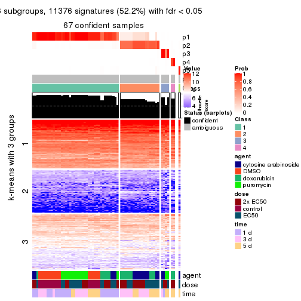
Compare the overlap of signatures from different k:
compare_signatures(res)
get_signature() returns a data frame invisibly. TO get the list of signatures, the function
call should be assigned to a variable explicitly. In following code, if plot argument is set
to FALSE, no heatmap is plotted while only the differential analysis is performed.
# code only for demonstration
tb = get_signature(res, k = ..., plot = FALSE)
An example of the output of tb is:
#> which_row fdr mean_1 mean_2 scaled_mean_1 scaled_mean_2 km
#> 1 38 0.042760348 8.373488 9.131774 -0.5533452 0.5164555 1
#> 2 40 0.018707592 7.106213 8.469186 -0.6173731 0.5762149 1
#> 3 55 0.019134737 10.221463 11.207825 -0.6159697 0.5749050 1
#> 4 59 0.006059896 5.921854 7.869574 -0.6899429 0.6439467 1
#> 5 60 0.018055526 8.928898 10.211722 -0.6204761 0.5791110 1
#> 6 98 0.009384629 15.714769 14.887706 0.6635654 -0.6193277 2
...
The columns in tb are:
which_row: row indices corresponding to the input matrix.fdr: FDR for the differential test. mean_x: The mean value in group x.scaled_mean_x: The mean value in group x after rows are scaled.km: Row groups if k-means clustering is applied to rows.UMAP plot which shows how samples are separated.
dimension_reduction(res, k = 2, method = "UMAP")
dimension_reduction(res, k = 3, method = "UMAP")

dimension_reduction(res, k = 4, method = "UMAP")
dimension_reduction(res, k = 5, method = "UMAP")
dimension_reduction(res, k = 6, method = "UMAP")
Following heatmap shows how subgroups are split when increasing k:
collect_classes(res)

Test correlation between subgroups and known annotations. If the known annotation is numeric, one-way ANOVA test is applied, and if the known annotation is discrete, chi-squared contingency table test is applied.
test_to_known_factors(res)
#> n agent(p) dose(p) time(p) k
#> CV:hclust 68 2.33e-01 0.4876 0.694750 2
#> CV:hclust 57 7.87e-02 0.4392 0.047776 3
#> CV:hclust 46 1.13e-01 0.2667 0.327662 4
#> CV:hclust 67 1.18e-05 0.0109 0.000806 5
#> CV:hclust 67 1.18e-05 0.0109 0.000806 6
If matrix rows can be associated to genes, consider to use functional_enrichment(res,
...) to perform function enrichment for the signature genes. See this vignette for more detailed explanations.
The object with results only for a single top-value method and a single partition method can be extracted as:
res = res_list["CV", "kmeans"]
# you can also extract it by
# res = res_list["CV:kmeans"]
A summary of res and all the functions that can be applied to it:
res
#> A 'ConsensusPartition' object with k = 2, 3, 4, 5, 6.
#> On a matrix with 21796 rows and 68 columns.
#> Top rows (1000, 2000, 3000, 4000, 5000) are extracted by 'CV' method.
#> Subgroups are detected by 'kmeans' method.
#> Performed in total 1250 partitions by row resampling.
#> Best k for subgroups seems to be 2.
#>
#> Following methods can be applied to this 'ConsensusPartition' object:
#> [1] "cola_report" "collect_classes" "collect_plots"
#> [4] "collect_stats" "colnames" "compare_signatures"
#> [7] "consensus_heatmap" "dimension_reduction" "functional_enrichment"
#> [10] "get_anno_col" "get_anno" "get_classes"
#> [13] "get_consensus" "get_matrix" "get_membership"
#> [16] "get_param" "get_signatures" "get_stats"
#> [19] "is_best_k" "is_stable_k" "membership_heatmap"
#> [22] "ncol" "nrow" "plot_ecdf"
#> [25] "rownames" "select_partition_number" "show"
#> [28] "suggest_best_k" "test_to_known_factors"
collect_plots() function collects all the plots made from res for all k (number of partitions)
into one single page to provide an easy and fast comparison between different k.
collect_plots(res)
The plots are:
k and the heatmap of
predicted classes for each k.k.k.k.All the plots in panels can be made by individual functions and they are plotted later in this section.
select_partition_number() produces several plots showing different
statistics for choosing “optimized” k. There are following statistics:
k;k, the area increased is defined as \(A_k - A_{k-1}\).The detailed explanations of these statistics can be found in the cola vignette.
Generally speaking, lower PAC score, higher mean silhouette score or higher
concordance corresponds to better partition. Rand index and Jaccard index
measure how similar the current partition is compared to partition with k-1.
If they are too similar, we won't accept k is better than k-1.
select_partition_number(res)
The numeric values for all these statistics can be obtained by get_stats().
get_stats(res)
#> k 1-PAC mean_silhouette concordance area_increased Rand Jaccard
#> 2 2 0.701 0.963 0.971 0.4430 0.536 0.536
#> 3 3 0.784 0.904 0.927 0.2441 0.896 0.811
#> 4 4 0.685 0.715 0.828 0.2072 0.847 0.674
#> 5 5 0.680 0.762 0.809 0.0984 0.897 0.693
#> 6 6 0.707 0.659 0.746 0.0676 0.924 0.705
suggest_best_k() suggests the best \(k\) based on these statistics. The rules are as follows:
suggest_best_k(res)
#> [1] 2
Following shows the table of the partitions (You need to click the show/hide
code output link to see it). The membership matrix (columns with name p*)
is inferred by
clue::cl_consensus()
function with the SE method. Basically the value in the membership matrix
represents the probability to belong to a certain group. The finall class
label for an item is determined with the group with highest probability it
belongs to.
In get_classes() function, the entropy is calculated from the membership
matrix and the silhouette score is calculated from the consensus matrix.
cbind(get_classes(res, k = 2), get_membership(res, k = 2))
#> class entropy silhouette p1 p2
#> GSM159850 1 0.0376 0.993 0.996 0.004
#> GSM159851 1 0.0000 0.993 1.000 0.000
#> GSM159852 1 0.0000 0.993 1.000 0.000
#> GSM159853 1 0.0000 0.993 1.000 0.000
#> GSM159854 1 0.0000 0.993 1.000 0.000
#> GSM159855 1 0.0000 0.993 1.000 0.000
#> GSM159856 1 0.0000 0.993 1.000 0.000
#> GSM159857 1 0.0000 0.993 1.000 0.000
#> GSM159858 1 0.0000 0.993 1.000 0.000
#> GSM159859 1 0.0000 0.993 1.000 0.000
#> GSM159860 1 0.0000 0.993 1.000 0.000
#> GSM159861 1 0.0376 0.993 0.996 0.004
#> GSM159862 1 0.0376 0.993 0.996 0.004
#> GSM159863 1 0.0376 0.993 0.996 0.004
#> GSM159864 1 0.0376 0.993 0.996 0.004
#> GSM159865 1 0.0376 0.993 0.996 0.004
#> GSM159866 1 0.0376 0.993 0.996 0.004
#> GSM159885 1 0.0376 0.993 0.996 0.004
#> GSM159886 1 0.0000 0.993 1.000 0.000
#> GSM159887 1 0.0376 0.993 0.996 0.004
#> GSM159888 2 0.5946 0.912 0.144 0.856
#> GSM159889 2 0.5946 0.912 0.144 0.856
#> GSM159890 2 0.5946 0.912 0.144 0.856
#> GSM159891 2 0.0376 0.924 0.004 0.996
#> GSM159892 2 0.0376 0.924 0.004 0.996
#> GSM159893 2 0.0376 0.924 0.004 0.996
#> GSM159894 1 0.0000 0.993 1.000 0.000
#> GSM159895 1 0.0376 0.993 0.996 0.004
#> GSM159896 1 0.0376 0.993 0.996 0.004
#> GSM159897 2 0.5408 0.917 0.124 0.876
#> GSM159898 2 0.5842 0.913 0.140 0.860
#> GSM159899 2 0.5408 0.917 0.124 0.876
#> GSM159900 2 0.0000 0.924 0.000 1.000
#> GSM159901 2 0.0000 0.924 0.000 1.000
#> GSM159902 1 0.0376 0.993 0.996 0.004
#> GSM159903 1 0.0000 0.993 1.000 0.000
#> GSM159904 1 0.0376 0.993 0.996 0.004
#> GSM159905 1 0.0000 0.993 1.000 0.000
#> GSM159906 1 0.0000 0.993 1.000 0.000
#> GSM159907 1 0.0000 0.993 1.000 0.000
#> GSM159908 1 0.0376 0.993 0.996 0.004
#> GSM159909 1 0.0376 0.993 0.996 0.004
#> GSM159910 2 0.0000 0.924 0.000 1.000
#> GSM159911 1 0.0376 0.993 0.996 0.004
#> GSM159912 1 0.0000 0.993 1.000 0.000
#> GSM159913 1 0.0000 0.993 1.000 0.000
#> GSM159914 1 0.0000 0.993 1.000 0.000
#> GSM159915 1 0.0000 0.993 1.000 0.000
#> GSM159916 1 0.0000 0.993 1.000 0.000
#> GSM159917 2 0.0000 0.924 0.000 1.000
#> GSM159867 1 0.0376 0.993 0.996 0.004
#> GSM159868 1 0.0376 0.993 0.996 0.004
#> GSM159869 1 0.0376 0.993 0.996 0.004
#> GSM159870 1 0.5408 0.845 0.876 0.124
#> GSM159871 1 0.3584 0.919 0.932 0.068
#> GSM159872 2 0.0000 0.924 0.000 1.000
#> GSM159873 2 0.0000 0.924 0.000 1.000
#> GSM159874 2 0.0000 0.924 0.000 1.000
#> GSM159875 2 0.0000 0.924 0.000 1.000
#> GSM159876 1 0.0000 0.993 1.000 0.000
#> GSM159877 2 0.0000 0.924 0.000 1.000
#> GSM159878 1 0.0000 0.993 1.000 0.000
#> GSM159879 2 0.5946 0.912 0.144 0.856
#> GSM159880 2 0.5946 0.912 0.144 0.856
#> GSM159881 2 0.5946 0.912 0.144 0.856
#> GSM159882 2 0.5946 0.912 0.144 0.856
#> GSM159883 2 0.5946 0.912 0.144 0.856
#> GSM159884 2 0.5946 0.912 0.144 0.856
cbind(get_classes(res, k = 3), get_membership(res, k = 3))
#> class entropy silhouette p1 p2 p3
#> GSM159850 1 0.0747 0.959 0.984 0.000 0.016
#> GSM159851 1 0.0237 0.961 0.996 0.004 0.000
#> GSM159852 1 0.0237 0.961 0.996 0.004 0.000
#> GSM159853 1 0.0237 0.961 0.996 0.004 0.000
#> GSM159854 1 0.0237 0.961 0.996 0.004 0.000
#> GSM159855 1 0.0000 0.961 1.000 0.000 0.000
#> GSM159856 1 0.0475 0.961 0.992 0.004 0.004
#> GSM159857 1 0.0237 0.961 0.996 0.004 0.000
#> GSM159858 1 0.0475 0.961 0.992 0.004 0.004
#> GSM159859 1 0.0475 0.961 0.992 0.004 0.004
#> GSM159860 1 0.0475 0.961 0.992 0.004 0.004
#> GSM159861 1 0.3377 0.917 0.896 0.012 0.092
#> GSM159862 1 0.3377 0.917 0.896 0.012 0.092
#> GSM159863 1 0.3377 0.917 0.896 0.012 0.092
#> GSM159864 1 0.3610 0.914 0.888 0.016 0.096
#> GSM159865 1 0.3610 0.914 0.888 0.016 0.096
#> GSM159866 1 0.3610 0.914 0.888 0.016 0.096
#> GSM159885 1 0.3293 0.933 0.900 0.012 0.088
#> GSM159886 1 0.0475 0.961 0.992 0.004 0.004
#> GSM159887 1 0.3293 0.933 0.900 0.012 0.088
#> GSM159888 2 0.1482 0.877 0.020 0.968 0.012
#> GSM159889 2 0.1482 0.877 0.020 0.968 0.012
#> GSM159890 2 0.1482 0.877 0.020 0.968 0.012
#> GSM159891 2 0.1529 0.862 0.000 0.960 0.040
#> GSM159892 2 0.1529 0.862 0.000 0.960 0.040
#> GSM159893 2 0.1529 0.862 0.000 0.960 0.040
#> GSM159894 1 0.2939 0.942 0.916 0.012 0.072
#> GSM159895 1 0.3031 0.940 0.912 0.012 0.076
#> GSM159896 1 0.3120 0.938 0.908 0.012 0.080
#> GSM159897 2 0.1620 0.874 0.012 0.964 0.024
#> GSM159898 2 0.1774 0.875 0.016 0.960 0.024
#> GSM159899 2 0.1620 0.874 0.012 0.964 0.024
#> GSM159900 3 0.4346 0.946 0.000 0.184 0.816
#> GSM159901 3 0.4346 0.946 0.000 0.184 0.816
#> GSM159902 1 0.2066 0.950 0.940 0.000 0.060
#> GSM159903 1 0.1411 0.957 0.964 0.000 0.036
#> GSM159904 1 0.1753 0.953 0.952 0.000 0.048
#> GSM159905 1 0.0475 0.961 0.992 0.004 0.004
#> GSM159906 1 0.0475 0.961 0.992 0.004 0.004
#> GSM159907 1 0.0475 0.961 0.992 0.004 0.004
#> GSM159908 1 0.1860 0.953 0.948 0.000 0.052
#> GSM159909 1 0.2066 0.950 0.940 0.000 0.060
#> GSM159910 3 0.3686 0.972 0.000 0.140 0.860
#> GSM159911 1 0.2945 0.938 0.908 0.004 0.088
#> GSM159912 1 0.0475 0.961 0.992 0.004 0.004
#> GSM159913 1 0.1529 0.954 0.960 0.000 0.040
#> GSM159914 1 0.0475 0.961 0.992 0.004 0.004
#> GSM159915 1 0.0475 0.961 0.992 0.004 0.004
#> GSM159916 1 0.0475 0.961 0.992 0.004 0.004
#> GSM159917 3 0.3551 0.975 0.000 0.132 0.868
#> GSM159867 1 0.2845 0.944 0.920 0.012 0.068
#> GSM159868 1 0.3293 0.933 0.900 0.012 0.088
#> GSM159869 1 0.3293 0.933 0.900 0.012 0.088
#> GSM159870 2 0.5911 0.695 0.156 0.784 0.060
#> GSM159871 2 0.6767 0.593 0.216 0.720 0.064
#> GSM159872 3 0.3551 0.975 0.000 0.132 0.868
#> GSM159873 2 0.5325 0.646 0.004 0.748 0.248
#> GSM159874 3 0.3619 0.974 0.000 0.136 0.864
#> GSM159875 2 0.6308 -0.128 0.000 0.508 0.492
#> GSM159876 1 0.0237 0.961 0.996 0.004 0.000
#> GSM159877 3 0.3551 0.975 0.000 0.132 0.868
#> GSM159878 1 0.0475 0.961 0.992 0.004 0.004
#> GSM159879 2 0.2743 0.873 0.020 0.928 0.052
#> GSM159880 2 0.2743 0.873 0.020 0.928 0.052
#> GSM159881 2 0.2743 0.873 0.020 0.928 0.052
#> GSM159882 2 0.2636 0.874 0.020 0.932 0.048
#> GSM159883 2 0.2636 0.874 0.020 0.932 0.048
#> GSM159884 2 0.2636 0.874 0.020 0.932 0.048
cbind(get_classes(res, k = 4), get_membership(res, k = 4))
#> class entropy silhouette p1 p2 p3 p4
#> GSM159850 1 0.2011 0.74292 0.920 0.000 0.000 0.080
#> GSM159851 1 0.0336 0.80798 0.992 0.000 0.000 0.008
#> GSM159852 1 0.0188 0.80858 0.996 0.000 0.000 0.004
#> GSM159853 1 0.0336 0.80849 0.992 0.000 0.000 0.008
#> GSM159854 1 0.0188 0.80858 0.996 0.000 0.000 0.004
#> GSM159855 1 0.0336 0.80849 0.992 0.000 0.000 0.008
#> GSM159856 1 0.0592 0.80630 0.984 0.000 0.000 0.016
#> GSM159857 1 0.0469 0.80749 0.988 0.000 0.000 0.012
#> GSM159858 1 0.0469 0.80752 0.988 0.000 0.000 0.012
#> GSM159859 1 0.0336 0.80854 0.992 0.000 0.000 0.008
#> GSM159860 1 0.0336 0.80854 0.992 0.000 0.000 0.008
#> GSM159861 1 0.5186 0.48945 0.640 0.000 0.016 0.344
#> GSM159862 1 0.5186 0.48945 0.640 0.000 0.016 0.344
#> GSM159863 1 0.5186 0.48945 0.640 0.000 0.016 0.344
#> GSM159864 1 0.5173 0.51264 0.660 0.000 0.020 0.320
#> GSM159865 1 0.5173 0.51264 0.660 0.000 0.020 0.320
#> GSM159866 1 0.5173 0.51264 0.660 0.000 0.020 0.320
#> GSM159885 4 0.4855 0.74953 0.400 0.000 0.000 0.600
#> GSM159886 1 0.0188 0.80816 0.996 0.000 0.000 0.004
#> GSM159887 4 0.4866 0.74907 0.404 0.000 0.000 0.596
#> GSM159888 2 0.0000 0.87107 0.000 1.000 0.000 0.000
#> GSM159889 2 0.0000 0.87107 0.000 1.000 0.000 0.000
#> GSM159890 2 0.0000 0.87107 0.000 1.000 0.000 0.000
#> GSM159891 2 0.1305 0.85824 0.000 0.960 0.004 0.036
#> GSM159892 2 0.1305 0.85824 0.000 0.960 0.004 0.036
#> GSM159893 2 0.1305 0.85824 0.000 0.960 0.004 0.036
#> GSM159894 4 0.4877 0.74315 0.408 0.000 0.000 0.592
#> GSM159895 4 0.4877 0.74315 0.408 0.000 0.000 0.592
#> GSM159896 4 0.4855 0.75008 0.400 0.000 0.000 0.600
#> GSM159897 2 0.0524 0.86871 0.000 0.988 0.004 0.008
#> GSM159898 2 0.0524 0.86871 0.000 0.988 0.004 0.008
#> GSM159899 2 0.0524 0.86871 0.000 0.988 0.004 0.008
#> GSM159900 3 0.3948 0.91703 0.000 0.064 0.840 0.096
#> GSM159901 3 0.4022 0.91464 0.000 0.068 0.836 0.096
#> GSM159902 1 0.5147 -0.38922 0.536 0.000 0.004 0.460
#> GSM159903 1 0.3710 0.56514 0.804 0.000 0.004 0.192
#> GSM159904 1 0.4456 0.35928 0.716 0.000 0.004 0.280
#> GSM159905 1 0.0376 0.80758 0.992 0.000 0.004 0.004
#> GSM159906 1 0.0376 0.80758 0.992 0.000 0.004 0.004
#> GSM159907 1 0.0376 0.80758 0.992 0.000 0.004 0.004
#> GSM159908 1 0.4655 0.27428 0.684 0.000 0.004 0.312
#> GSM159909 1 0.4936 0.01682 0.624 0.000 0.004 0.372
#> GSM159910 3 0.0779 0.95195 0.000 0.016 0.980 0.004
#> GSM159911 4 0.5039 0.74361 0.404 0.000 0.004 0.592
#> GSM159912 1 0.0376 0.80758 0.992 0.000 0.004 0.004
#> GSM159913 1 0.3105 0.64403 0.856 0.000 0.004 0.140
#> GSM159914 1 0.0376 0.80758 0.992 0.000 0.004 0.004
#> GSM159915 1 0.0376 0.80758 0.992 0.000 0.004 0.004
#> GSM159916 1 0.0376 0.80758 0.992 0.000 0.004 0.004
#> GSM159917 3 0.1059 0.95025 0.000 0.012 0.972 0.016
#> GSM159867 4 0.4941 0.67489 0.436 0.000 0.000 0.564
#> GSM159868 4 0.5125 0.74344 0.388 0.000 0.008 0.604
#> GSM159869 4 0.5004 0.74555 0.392 0.000 0.004 0.604
#> GSM159870 2 0.5931 0.80122 0.052 0.728 0.040 0.180
#> GSM159871 2 0.6641 0.73752 0.076 0.672 0.040 0.212
#> GSM159872 3 0.0804 0.95216 0.000 0.012 0.980 0.008
#> GSM159873 4 0.6449 0.00522 0.000 0.220 0.140 0.640
#> GSM159874 3 0.2867 0.93147 0.000 0.012 0.884 0.104
#> GSM159875 4 0.7803 -0.38318 0.000 0.252 0.352 0.396
#> GSM159876 1 0.0921 0.79894 0.972 0.000 0.000 0.028
#> GSM159877 3 0.0804 0.95216 0.000 0.012 0.980 0.008
#> GSM159878 1 0.0921 0.79894 0.972 0.000 0.000 0.028
#> GSM159879 2 0.4507 0.84846 0.000 0.788 0.044 0.168
#> GSM159880 2 0.4507 0.84846 0.000 0.788 0.044 0.168
#> GSM159881 2 0.4507 0.84846 0.000 0.788 0.044 0.168
#> GSM159882 2 0.4417 0.85198 0.000 0.796 0.044 0.160
#> GSM159883 2 0.4417 0.85198 0.000 0.796 0.044 0.160
#> GSM159884 2 0.4417 0.85198 0.000 0.796 0.044 0.160
cbind(get_classes(res, k = 5), get_membership(res, k = 5))
#> class entropy silhouette p1 p2 p3 p4 p5
#> GSM159850 1 0.3146 0.7169 0.844 0.000 0.000 0.128 0.028
#> GSM159851 1 0.1750 0.8306 0.936 0.000 0.000 0.036 0.028
#> GSM159852 1 0.1106 0.8402 0.964 0.000 0.000 0.012 0.024
#> GSM159853 1 0.1444 0.8284 0.948 0.000 0.000 0.012 0.040
#> GSM159854 1 0.1469 0.8388 0.948 0.000 0.000 0.016 0.036
#> GSM159855 1 0.1281 0.8320 0.956 0.000 0.000 0.012 0.032
#> GSM159856 1 0.1124 0.8261 0.960 0.000 0.000 0.004 0.036
#> GSM159857 1 0.1331 0.8255 0.952 0.000 0.000 0.008 0.040
#> GSM159858 1 0.0404 0.8414 0.988 0.000 0.000 0.000 0.012
#> GSM159859 1 0.0404 0.8414 0.988 0.000 0.000 0.000 0.012
#> GSM159860 1 0.0290 0.8428 0.992 0.000 0.000 0.000 0.008
#> GSM159861 5 0.6037 0.8817 0.392 0.000 0.000 0.120 0.488
#> GSM159862 5 0.6094 0.8716 0.384 0.000 0.000 0.128 0.488
#> GSM159863 5 0.6037 0.8817 0.392 0.000 0.000 0.120 0.488
#> GSM159864 5 0.5044 0.8758 0.464 0.000 0.000 0.032 0.504
#> GSM159865 5 0.5044 0.8758 0.464 0.000 0.000 0.032 0.504
#> GSM159866 5 0.5044 0.8758 0.464 0.000 0.000 0.032 0.504
#> GSM159885 4 0.3183 0.8041 0.156 0.000 0.000 0.828 0.016
#> GSM159886 1 0.0162 0.8459 0.996 0.000 0.000 0.004 0.000
#> GSM159887 4 0.3183 0.8041 0.156 0.000 0.000 0.828 0.016
#> GSM159888 2 0.0000 0.8084 0.000 1.000 0.000 0.000 0.000
#> GSM159889 2 0.0000 0.8084 0.000 1.000 0.000 0.000 0.000
#> GSM159890 2 0.0000 0.8084 0.000 1.000 0.000 0.000 0.000
#> GSM159891 2 0.2331 0.7682 0.000 0.900 0.000 0.020 0.080
#> GSM159892 2 0.2331 0.7682 0.000 0.900 0.000 0.020 0.080
#> GSM159893 2 0.2331 0.7682 0.000 0.900 0.000 0.020 0.080
#> GSM159894 4 0.3163 0.8039 0.164 0.000 0.000 0.824 0.012
#> GSM159895 4 0.3163 0.8039 0.164 0.000 0.000 0.824 0.012
#> GSM159896 4 0.3123 0.8047 0.160 0.000 0.000 0.828 0.012
#> GSM159897 2 0.0898 0.8014 0.000 0.972 0.000 0.008 0.020
#> GSM159898 2 0.0798 0.8029 0.000 0.976 0.000 0.008 0.016
#> GSM159899 2 0.0798 0.8029 0.000 0.976 0.000 0.008 0.016
#> GSM159900 3 0.5217 0.8264 0.000 0.016 0.676 0.056 0.252
#> GSM159901 3 0.5656 0.8136 0.000 0.032 0.648 0.060 0.260
#> GSM159902 4 0.4637 0.6355 0.292 0.000 0.000 0.672 0.036
#> GSM159903 1 0.3863 0.5711 0.772 0.000 0.000 0.200 0.028
#> GSM159904 1 0.4747 0.3191 0.636 0.000 0.000 0.332 0.032
#> GSM159905 1 0.0992 0.8431 0.968 0.000 0.000 0.008 0.024
#> GSM159906 1 0.0898 0.8438 0.972 0.000 0.000 0.008 0.020
#> GSM159907 1 0.0898 0.8438 0.972 0.000 0.000 0.008 0.020
#> GSM159908 1 0.5003 0.0329 0.544 0.000 0.000 0.424 0.032
#> GSM159909 4 0.5118 0.3688 0.412 0.000 0.000 0.548 0.040
#> GSM159910 3 0.0000 0.8812 0.000 0.000 1.000 0.000 0.000
#> GSM159911 4 0.3359 0.8024 0.164 0.000 0.000 0.816 0.020
#> GSM159912 1 0.1082 0.8418 0.964 0.000 0.000 0.008 0.028
#> GSM159913 1 0.3495 0.6452 0.812 0.000 0.000 0.160 0.028
#> GSM159914 1 0.0992 0.8431 0.968 0.000 0.000 0.008 0.024
#> GSM159915 1 0.0992 0.8431 0.968 0.000 0.000 0.008 0.024
#> GSM159916 1 0.0992 0.8431 0.968 0.000 0.000 0.008 0.024
#> GSM159917 3 0.0771 0.8740 0.000 0.000 0.976 0.004 0.020
#> GSM159867 4 0.3687 0.7796 0.180 0.000 0.000 0.792 0.028
#> GSM159868 4 0.2929 0.8053 0.152 0.000 0.000 0.840 0.008
#> GSM159869 4 0.3141 0.8053 0.152 0.000 0.000 0.832 0.016
#> GSM159870 2 0.6149 0.7694 0.020 0.660 0.016 0.136 0.168
#> GSM159871 2 0.6842 0.7041 0.028 0.588 0.016 0.176 0.192
#> GSM159872 3 0.0000 0.8812 0.000 0.000 1.000 0.000 0.000
#> GSM159873 4 0.5437 0.2245 0.000 0.044 0.024 0.636 0.296
#> GSM159874 3 0.5013 0.8179 0.000 0.000 0.680 0.080 0.240
#> GSM159875 4 0.7487 -0.1938 0.000 0.072 0.148 0.416 0.364
#> GSM159876 1 0.1983 0.7884 0.924 0.008 0.000 0.008 0.060
#> GSM159877 3 0.0000 0.8812 0.000 0.000 1.000 0.000 0.000
#> GSM159878 1 0.1571 0.8063 0.936 0.000 0.000 0.004 0.060
#> GSM159879 2 0.5477 0.7909 0.000 0.692 0.016 0.132 0.160
#> GSM159880 2 0.5477 0.7909 0.000 0.692 0.016 0.132 0.160
#> GSM159881 2 0.5477 0.7909 0.000 0.692 0.016 0.132 0.160
#> GSM159882 2 0.5471 0.7915 0.000 0.692 0.016 0.128 0.164
#> GSM159883 2 0.5471 0.7915 0.000 0.692 0.016 0.128 0.164
#> GSM159884 2 0.5471 0.7915 0.000 0.692 0.016 0.128 0.164
cbind(get_classes(res, k = 6), get_membership(res, k = 6))
#> class entropy silhouette p1 p2 p3 p4 p5 p6
#> GSM159850 1 0.3350 0.7462 0.824 0.000 0.000 0.124 0.040 0.012
#> GSM159851 1 0.1793 0.8548 0.928 0.000 0.000 0.012 0.048 0.012
#> GSM159852 1 0.1196 0.8567 0.952 0.000 0.000 0.000 0.040 0.008
#> GSM159853 1 0.1524 0.8532 0.932 0.000 0.000 0.000 0.060 0.008
#> GSM159854 1 0.1500 0.8580 0.936 0.000 0.000 0.000 0.052 0.012
#> GSM159855 1 0.1462 0.8542 0.936 0.000 0.000 0.000 0.056 0.008
#> GSM159856 1 0.1398 0.8502 0.940 0.000 0.000 0.000 0.052 0.008
#> GSM159857 1 0.1524 0.8532 0.932 0.000 0.000 0.000 0.060 0.008
#> GSM159858 1 0.0363 0.8646 0.988 0.000 0.000 0.000 0.012 0.000
#> GSM159859 1 0.0508 0.8645 0.984 0.000 0.000 0.000 0.012 0.004
#> GSM159860 1 0.0405 0.8653 0.988 0.000 0.000 0.000 0.008 0.004
#> GSM159861 5 0.4794 0.8948 0.228 0.000 0.000 0.100 0.668 0.004
#> GSM159862 5 0.4775 0.8998 0.232 0.000 0.000 0.096 0.668 0.004
#> GSM159863 5 0.4775 0.8998 0.232 0.000 0.000 0.096 0.668 0.004
#> GSM159864 5 0.4906 0.9014 0.284 0.024 0.000 0.028 0.652 0.012
#> GSM159865 5 0.4906 0.9014 0.284 0.024 0.000 0.028 0.652 0.012
#> GSM159866 5 0.4906 0.9014 0.284 0.024 0.000 0.028 0.652 0.012
#> GSM159885 4 0.3456 0.7809 0.024 0.044 0.000 0.852 0.032 0.048
#> GSM159886 1 0.0520 0.8663 0.984 0.000 0.000 0.000 0.008 0.008
#> GSM159887 4 0.3382 0.7806 0.024 0.044 0.000 0.856 0.028 0.048
#> GSM159888 2 0.3864 -0.5771 0.000 0.520 0.000 0.000 0.000 0.480
#> GSM159889 2 0.3864 -0.5771 0.000 0.520 0.000 0.000 0.000 0.480
#> GSM159890 2 0.3864 -0.5771 0.000 0.520 0.000 0.000 0.000 0.480
#> GSM159891 6 0.4015 0.6483 0.000 0.396 0.000 0.004 0.004 0.596
#> GSM159892 6 0.4118 0.6477 0.000 0.396 0.000 0.004 0.008 0.592
#> GSM159893 6 0.4118 0.6477 0.000 0.396 0.000 0.004 0.008 0.592
#> GSM159894 4 0.2688 0.7971 0.036 0.040 0.000 0.892 0.020 0.012
#> GSM159895 4 0.2497 0.7974 0.032 0.040 0.000 0.896 0.032 0.000
#> GSM159896 4 0.2497 0.7974 0.032 0.040 0.000 0.896 0.032 0.000
#> GSM159897 6 0.3860 0.6078 0.000 0.472 0.000 0.000 0.000 0.528
#> GSM159898 6 0.3860 0.6078 0.000 0.472 0.000 0.000 0.000 0.528
#> GSM159899 6 0.3860 0.6078 0.000 0.472 0.000 0.000 0.000 0.528
#> GSM159900 3 0.6350 0.6924 0.000 0.000 0.492 0.048 0.144 0.316
#> GSM159901 3 0.6401 0.6748 0.000 0.000 0.468 0.048 0.144 0.340
#> GSM159902 4 0.4491 0.6829 0.140 0.000 0.000 0.752 0.052 0.056
#> GSM159903 1 0.5530 0.4710 0.624 0.000 0.000 0.248 0.072 0.056
#> GSM159904 4 0.6184 0.1011 0.424 0.000 0.000 0.428 0.092 0.056
#> GSM159905 1 0.2670 0.8312 0.884 0.000 0.000 0.020 0.052 0.044
#> GSM159906 1 0.2046 0.8456 0.916 0.000 0.000 0.008 0.044 0.032
#> GSM159907 1 0.2147 0.8441 0.912 0.000 0.000 0.012 0.044 0.032
#> GSM159908 4 0.6128 0.3408 0.348 0.000 0.000 0.500 0.100 0.052
#> GSM159909 4 0.5640 0.5342 0.224 0.000 0.000 0.624 0.104 0.048
#> GSM159910 3 0.0000 0.7885 0.000 0.000 1.000 0.000 0.000 0.000
#> GSM159911 4 0.3094 0.7846 0.032 0.024 0.000 0.872 0.024 0.048
#> GSM159912 1 0.2798 0.8271 0.876 0.000 0.000 0.020 0.056 0.048
#> GSM159913 1 0.4762 0.6387 0.724 0.000 0.000 0.164 0.056 0.056
#> GSM159914 1 0.2670 0.8312 0.884 0.000 0.000 0.020 0.052 0.044
#> GSM159915 1 0.2583 0.8334 0.888 0.000 0.000 0.016 0.052 0.044
#> GSM159916 1 0.2670 0.8312 0.884 0.000 0.000 0.020 0.052 0.044
#> GSM159917 3 0.1633 0.7626 0.000 0.000 0.932 0.000 0.044 0.024
#> GSM159867 4 0.3136 0.7845 0.044 0.040 0.000 0.868 0.036 0.012
#> GSM159868 4 0.2511 0.7906 0.024 0.044 0.000 0.900 0.024 0.008
#> GSM159869 4 0.2529 0.7862 0.024 0.044 0.000 0.900 0.012 0.020
#> GSM159870 2 0.1414 0.6007 0.020 0.952 0.000 0.012 0.004 0.012
#> GSM159871 2 0.2364 0.5563 0.036 0.908 0.000 0.032 0.012 0.012
#> GSM159872 3 0.0000 0.7885 0.000 0.000 1.000 0.000 0.000 0.000
#> GSM159873 2 0.6761 -0.0109 0.000 0.428 0.004 0.332 0.048 0.188
#> GSM159874 3 0.6709 0.6856 0.000 0.004 0.484 0.072 0.144 0.296
#> GSM159875 6 0.7926 -0.2726 0.000 0.336 0.052 0.148 0.116 0.348
#> GSM159876 1 0.2394 0.8197 0.900 0.036 0.000 0.004 0.052 0.008
#> GSM159877 3 0.0000 0.7885 0.000 0.000 1.000 0.000 0.000 0.000
#> GSM159878 1 0.2082 0.8341 0.916 0.020 0.000 0.004 0.052 0.008
#> GSM159879 2 0.0260 0.6296 0.000 0.992 0.000 0.008 0.000 0.000
#> GSM159880 2 0.0260 0.6296 0.000 0.992 0.000 0.008 0.000 0.000
#> GSM159881 2 0.0260 0.6296 0.000 0.992 0.000 0.008 0.000 0.000
#> GSM159882 2 0.0000 0.6279 0.000 1.000 0.000 0.000 0.000 0.000
#> GSM159883 2 0.0000 0.6279 0.000 1.000 0.000 0.000 0.000 0.000
#> GSM159884 2 0.0000 0.6279 0.000 1.000 0.000 0.000 0.000 0.000
Heatmaps for the consensus matrix. It visualizes the probability of two samples to be in a same group.
consensus_heatmap(res, k = 2)
consensus_heatmap(res, k = 3)
consensus_heatmap(res, k = 4)
consensus_heatmap(res, k = 5)
consensus_heatmap(res, k = 6)
Heatmaps for the membership of samples in all partitions to see how consistent they are:
membership_heatmap(res, k = 2)

membership_heatmap(res, k = 3)
membership_heatmap(res, k = 4)
membership_heatmap(res, k = 5)
membership_heatmap(res, k = 6)
As soon as we have had the classes for columns, we can look for signatures which are significantly different between classes which can be candidate marks for certain classes. Following are the heatmaps for signatures.
Signature heatmaps where rows are scaled:
get_signatures(res, k = 2)
get_signatures(res, k = 3)
get_signatures(res, k = 4)
get_signatures(res, k = 5)
get_signatures(res, k = 6)
Signature heatmaps where rows are not scaled:
get_signatures(res, k = 2, scale_rows = FALSE)
get_signatures(res, k = 3, scale_rows = FALSE)
get_signatures(res, k = 4, scale_rows = FALSE)
get_signatures(res, k = 5, scale_rows = FALSE)
get_signatures(res, k = 6, scale_rows = FALSE)
Compare the overlap of signatures from different k:
compare_signatures(res)
get_signature() returns a data frame invisibly. TO get the list of signatures, the function
call should be assigned to a variable explicitly. In following code, if plot argument is set
to FALSE, no heatmap is plotted while only the differential analysis is performed.
# code only for demonstration
tb = get_signature(res, k = ..., plot = FALSE)
An example of the output of tb is:
#> which_row fdr mean_1 mean_2 scaled_mean_1 scaled_mean_2 km
#> 1 38 0.042760348 8.373488 9.131774 -0.5533452 0.5164555 1
#> 2 40 0.018707592 7.106213 8.469186 -0.6173731 0.5762149 1
#> 3 55 0.019134737 10.221463 11.207825 -0.6159697 0.5749050 1
#> 4 59 0.006059896 5.921854 7.869574 -0.6899429 0.6439467 1
#> 5 60 0.018055526 8.928898 10.211722 -0.6204761 0.5791110 1
#> 6 98 0.009384629 15.714769 14.887706 0.6635654 -0.6193277 2
...
The columns in tb are:
which_row: row indices corresponding to the input matrix.fdr: FDR for the differential test. mean_x: The mean value in group x.scaled_mean_x: The mean value in group x after rows are scaled.km: Row groups if k-means clustering is applied to rows.UMAP plot which shows how samples are separated.
dimension_reduction(res, k = 2, method = "UMAP")
dimension_reduction(res, k = 3, method = "UMAP")
dimension_reduction(res, k = 4, method = "UMAP")
dimension_reduction(res, k = 5, method = "UMAP")
dimension_reduction(res, k = 6, method = "UMAP")

Following heatmap shows how subgroups are split when increasing k:
collect_classes(res)
Test correlation between subgroups and known annotations. If the known annotation is numeric, one-way ANOVA test is applied, and if the known annotation is discrete, chi-squared contingency table test is applied.
test_to_known_factors(res)
#> n agent(p) dose(p) time(p) k
#> CV:kmeans 68 1.87e-05 1.25e-03 1.69e-04 2
#> CV:kmeans 67 3.07e-05 7.17e-03 1.19e-04 3
#> CV:kmeans 59 2.54e-06 5.68e-04 2.34e-06 4
#> CV:kmeans 63 2.94e-07 2.77e-05 5.72e-10 5
#> CV:kmeans 60 2.36e-10 5.13e-05 1.17e-07 6
If matrix rows can be associated to genes, consider to use functional_enrichment(res,
...) to perform function enrichment for the signature genes. See this vignette for more detailed explanations.
The object with results only for a single top-value method and a single partition method can be extracted as:
res = res_list["CV", "skmeans"]
# you can also extract it by
# res = res_list["CV:skmeans"]
A summary of res and all the functions that can be applied to it:
res
#> A 'ConsensusPartition' object with k = 2, 3, 4, 5, 6.
#> On a matrix with 21796 rows and 68 columns.
#> Top rows (1000, 2000, 3000, 4000, 5000) are extracted by 'CV' method.
#> Subgroups are detected by 'skmeans' method.
#> Performed in total 1250 partitions by row resampling.
#> Best k for subgroups seems to be 2.
#>
#> Following methods can be applied to this 'ConsensusPartition' object:
#> [1] "cola_report" "collect_classes" "collect_plots"
#> [4] "collect_stats" "colnames" "compare_signatures"
#> [7] "consensus_heatmap" "dimension_reduction" "functional_enrichment"
#> [10] "get_anno_col" "get_anno" "get_classes"
#> [13] "get_consensus" "get_matrix" "get_membership"
#> [16] "get_param" "get_signatures" "get_stats"
#> [19] "is_best_k" "is_stable_k" "membership_heatmap"
#> [22] "ncol" "nrow" "plot_ecdf"
#> [25] "rownames" "select_partition_number" "show"
#> [28] "suggest_best_k" "test_to_known_factors"
collect_plots() function collects all the plots made from res for all k (number of partitions)
into one single page to provide an easy and fast comparison between different k.
collect_plots(res)
The plots are:
k and the heatmap of
predicted classes for each k.k.k.k.All the plots in panels can be made by individual functions and they are plotted later in this section.
select_partition_number() produces several plots showing different
statistics for choosing “optimized” k. There are following statistics:
k;k, the area increased is defined as \(A_k - A_{k-1}\).The detailed explanations of these statistics can be found in the cola vignette.
Generally speaking, lower PAC score, higher mean silhouette score or higher
concordance corresponds to better partition. Rand index and Jaccard index
measure how similar the current partition is compared to partition with k-1.
If they are too similar, we won't accept k is better than k-1.
select_partition_number(res)
The numeric values for all these statistics can be obtained by get_stats().
get_stats(res)
#> k 1-PAC mean_silhouette concordance area_increased Rand Jaccard
#> 2 2 0.907 0.889 0.958 0.4939 0.508 0.508
#> 3 3 0.763 0.873 0.924 0.3066 0.783 0.599
#> 4 4 0.569 0.598 0.778 0.1446 0.876 0.669
#> 5 5 0.570 0.578 0.705 0.0701 0.899 0.667
#> 6 6 0.595 0.528 0.649 0.0446 0.987 0.945
suggest_best_k() suggests the best \(k\) based on these statistics. The rules are as follows:
suggest_best_k(res)
#> [1] 2
Following shows the table of the partitions (You need to click the show/hide
code output link to see it). The membership matrix (columns with name p*)
is inferred by
clue::cl_consensus()
function with the SE method. Basically the value in the membership matrix
represents the probability to belong to a certain group. The finall class
label for an item is determined with the group with highest probability it
belongs to.
In get_classes() function, the entropy is calculated from the membership
matrix and the silhouette score is calculated from the consensus matrix.
cbind(get_classes(res, k = 2), get_membership(res, k = 2))
#> class entropy silhouette p1 p2
#> GSM159850 1 0.0000 0.9490 1.000 0.000
#> GSM159851 1 0.0000 0.9490 1.000 0.000
#> GSM159852 1 0.0000 0.9490 1.000 0.000
#> GSM159853 1 0.0000 0.9490 1.000 0.000
#> GSM159854 1 0.0000 0.9490 1.000 0.000
#> GSM159855 1 0.0000 0.9490 1.000 0.000
#> GSM159856 1 0.0000 0.9490 1.000 0.000
#> GSM159857 1 0.0000 0.9490 1.000 0.000
#> GSM159858 1 0.0000 0.9490 1.000 0.000
#> GSM159859 1 0.0000 0.9490 1.000 0.000
#> GSM159860 1 0.0000 0.9490 1.000 0.000
#> GSM159861 1 0.0000 0.9490 1.000 0.000
#> GSM159862 1 0.0000 0.9490 1.000 0.000
#> GSM159863 1 0.0000 0.9490 1.000 0.000
#> GSM159864 1 0.0000 0.9490 1.000 0.000
#> GSM159865 1 0.0000 0.9490 1.000 0.000
#> GSM159866 1 0.0000 0.9490 1.000 0.000
#> GSM159885 2 0.9754 0.2502 0.408 0.592
#> GSM159886 1 0.0000 0.9490 1.000 0.000
#> GSM159887 2 0.9998 -0.0457 0.492 0.508
#> GSM159888 2 0.0000 0.9626 0.000 1.000
#> GSM159889 2 0.0000 0.9626 0.000 1.000
#> GSM159890 2 0.0000 0.9626 0.000 1.000
#> GSM159891 2 0.0000 0.9626 0.000 1.000
#> GSM159892 2 0.0000 0.9626 0.000 1.000
#> GSM159893 2 0.0000 0.9626 0.000 1.000
#> GSM159894 1 0.8661 0.6018 0.712 0.288
#> GSM159895 1 0.4562 0.8623 0.904 0.096
#> GSM159896 1 0.9922 0.2176 0.552 0.448
#> GSM159897 2 0.0000 0.9626 0.000 1.000
#> GSM159898 2 0.0000 0.9626 0.000 1.000
#> GSM159899 2 0.0000 0.9626 0.000 1.000
#> GSM159900 2 0.0000 0.9626 0.000 1.000
#> GSM159901 2 0.0000 0.9626 0.000 1.000
#> GSM159902 1 0.0000 0.9490 1.000 0.000
#> GSM159903 1 0.0000 0.9490 1.000 0.000
#> GSM159904 1 0.0000 0.9490 1.000 0.000
#> GSM159905 1 0.0000 0.9490 1.000 0.000
#> GSM159906 1 0.0000 0.9490 1.000 0.000
#> GSM159907 1 0.0000 0.9490 1.000 0.000
#> GSM159908 1 0.0000 0.9490 1.000 0.000
#> GSM159909 1 0.0000 0.9490 1.000 0.000
#> GSM159910 2 0.0000 0.9626 0.000 1.000
#> GSM159911 1 0.7602 0.7110 0.780 0.220
#> GSM159912 1 0.0000 0.9490 1.000 0.000
#> GSM159913 1 0.0000 0.9490 1.000 0.000
#> GSM159914 1 0.0000 0.9490 1.000 0.000
#> GSM159915 1 0.0000 0.9490 1.000 0.000
#> GSM159916 1 0.0000 0.9490 1.000 0.000
#> GSM159917 2 0.0000 0.9626 0.000 1.000
#> GSM159867 1 0.0000 0.9490 1.000 0.000
#> GSM159868 1 0.9909 0.2311 0.556 0.444
#> GSM159869 1 0.9710 0.3582 0.600 0.400
#> GSM159870 2 0.0672 0.9557 0.008 0.992
#> GSM159871 2 0.1633 0.9407 0.024 0.976
#> GSM159872 2 0.0000 0.9626 0.000 1.000
#> GSM159873 2 0.0000 0.9626 0.000 1.000
#> GSM159874 2 0.0000 0.9626 0.000 1.000
#> GSM159875 2 0.0000 0.9626 0.000 1.000
#> GSM159876 1 0.0000 0.9490 1.000 0.000
#> GSM159877 2 0.0000 0.9626 0.000 1.000
#> GSM159878 1 0.0000 0.9490 1.000 0.000
#> GSM159879 2 0.0000 0.9626 0.000 1.000
#> GSM159880 2 0.0000 0.9626 0.000 1.000
#> GSM159881 2 0.0000 0.9626 0.000 1.000
#> GSM159882 2 0.0000 0.9626 0.000 1.000
#> GSM159883 2 0.0000 0.9626 0.000 1.000
#> GSM159884 2 0.0000 0.9626 0.000 1.000
cbind(get_classes(res, k = 3), get_membership(res, k = 3))
#> class entropy silhouette p1 p2 p3
#> GSM159850 1 0.4291 0.810 0.820 0.000 0.180
#> GSM159851 1 0.1753 0.927 0.952 0.000 0.048
#> GSM159852 1 0.0592 0.935 0.988 0.000 0.012
#> GSM159853 1 0.1411 0.932 0.964 0.000 0.036
#> GSM159854 1 0.1031 0.933 0.976 0.000 0.024
#> GSM159855 1 0.1031 0.933 0.976 0.000 0.024
#> GSM159856 1 0.0237 0.932 0.996 0.000 0.004
#> GSM159857 1 0.0592 0.934 0.988 0.000 0.012
#> GSM159858 1 0.0237 0.932 0.996 0.000 0.004
#> GSM159859 1 0.0237 0.932 0.996 0.000 0.004
#> GSM159860 1 0.0000 0.932 1.000 0.000 0.000
#> GSM159861 1 0.2261 0.919 0.932 0.000 0.068
#> GSM159862 1 0.4291 0.814 0.820 0.000 0.180
#> GSM159863 1 0.2356 0.913 0.928 0.000 0.072
#> GSM159864 1 0.0747 0.933 0.984 0.000 0.016
#> GSM159865 1 0.0592 0.934 0.988 0.000 0.012
#> GSM159866 1 0.0747 0.933 0.984 0.000 0.016
#> GSM159885 3 0.0983 0.835 0.004 0.016 0.980
#> GSM159886 1 0.0237 0.934 0.996 0.000 0.004
#> GSM159887 3 0.5639 0.777 0.080 0.112 0.808
#> GSM159888 2 0.0000 0.988 0.000 1.000 0.000
#> GSM159889 2 0.0000 0.988 0.000 1.000 0.000
#> GSM159890 2 0.0000 0.988 0.000 1.000 0.000
#> GSM159891 2 0.0237 0.986 0.000 0.996 0.004
#> GSM159892 2 0.0424 0.982 0.000 0.992 0.008
#> GSM159893 2 0.0000 0.988 0.000 1.000 0.000
#> GSM159894 3 0.8638 0.560 0.184 0.216 0.600
#> GSM159895 3 0.4741 0.747 0.152 0.020 0.828
#> GSM159896 3 0.2297 0.830 0.036 0.020 0.944
#> GSM159897 2 0.0000 0.988 0.000 1.000 0.000
#> GSM159898 2 0.0000 0.988 0.000 1.000 0.000
#> GSM159899 2 0.0000 0.988 0.000 1.000 0.000
#> GSM159900 3 0.4002 0.807 0.000 0.160 0.840
#> GSM159901 3 0.5363 0.696 0.000 0.276 0.724
#> GSM159902 1 0.6154 0.388 0.592 0.000 0.408
#> GSM159903 1 0.2165 0.918 0.936 0.000 0.064
#> GSM159904 1 0.4121 0.836 0.832 0.000 0.168
#> GSM159905 1 0.1031 0.933 0.976 0.000 0.024
#> GSM159906 1 0.0424 0.934 0.992 0.000 0.008
#> GSM159907 1 0.0237 0.933 0.996 0.000 0.004
#> GSM159908 1 0.4605 0.787 0.796 0.000 0.204
#> GSM159909 1 0.5138 0.721 0.748 0.000 0.252
#> GSM159910 3 0.3038 0.834 0.000 0.104 0.896
#> GSM159911 3 0.0747 0.833 0.016 0.000 0.984
#> GSM159912 1 0.1163 0.932 0.972 0.000 0.028
#> GSM159913 1 0.1411 0.929 0.964 0.000 0.036
#> GSM159914 1 0.0237 0.933 0.996 0.000 0.004
#> GSM159915 1 0.0424 0.934 0.992 0.000 0.008
#> GSM159916 1 0.0424 0.934 0.992 0.000 0.008
#> GSM159917 3 0.2448 0.840 0.000 0.076 0.924
#> GSM159867 3 0.7526 0.123 0.424 0.040 0.536
#> GSM159868 3 0.1315 0.834 0.020 0.008 0.972
#> GSM159869 3 0.1525 0.831 0.032 0.004 0.964
#> GSM159870 2 0.1647 0.947 0.036 0.960 0.004
#> GSM159871 2 0.3181 0.895 0.064 0.912 0.024
#> GSM159872 3 0.2796 0.837 0.000 0.092 0.908
#> GSM159873 3 0.5138 0.728 0.000 0.252 0.748
#> GSM159874 3 0.3340 0.829 0.000 0.120 0.880
#> GSM159875 3 0.5216 0.719 0.000 0.260 0.740
#> GSM159876 1 0.5633 0.708 0.768 0.208 0.024
#> GSM159877 3 0.2537 0.839 0.000 0.080 0.920
#> GSM159878 1 0.1950 0.914 0.952 0.040 0.008
#> GSM159879 2 0.0237 0.985 0.000 0.996 0.004
#> GSM159880 2 0.0237 0.985 0.000 0.996 0.004
#> GSM159881 2 0.0424 0.983 0.000 0.992 0.008
#> GSM159882 2 0.0000 0.988 0.000 1.000 0.000
#> GSM159883 2 0.0000 0.988 0.000 1.000 0.000
#> GSM159884 2 0.0000 0.988 0.000 1.000 0.000
cbind(get_classes(res, k = 4), get_membership(res, k = 4))
#> class entropy silhouette p1 p2 p3 p4
#> GSM159850 1 0.6407 0.1132 0.544 0.000 0.072 0.384
#> GSM159851 1 0.4220 0.6317 0.748 0.000 0.004 0.248
#> GSM159852 1 0.3626 0.7006 0.812 0.000 0.004 0.184
#> GSM159853 1 0.4482 0.6388 0.728 0.000 0.008 0.264
#> GSM159854 1 0.4718 0.6090 0.716 0.004 0.008 0.272
#> GSM159855 1 0.4776 0.6354 0.732 0.000 0.024 0.244
#> GSM159856 1 0.2149 0.7092 0.912 0.000 0.000 0.088
#> GSM159857 1 0.3266 0.6975 0.832 0.000 0.000 0.168
#> GSM159858 1 0.1792 0.7210 0.932 0.000 0.000 0.068
#> GSM159859 1 0.2081 0.7210 0.916 0.000 0.000 0.084
#> GSM159860 1 0.1557 0.7215 0.944 0.000 0.000 0.056
#> GSM159861 4 0.5404 -0.0743 0.476 0.000 0.012 0.512
#> GSM159862 4 0.6637 0.1928 0.368 0.000 0.092 0.540
#> GSM159863 4 0.5971 0.0177 0.428 0.000 0.040 0.532
#> GSM159864 1 0.5523 0.3763 0.596 0.000 0.024 0.380
#> GSM159865 1 0.5026 0.4950 0.672 0.000 0.016 0.312
#> GSM159866 1 0.5193 0.4750 0.656 0.000 0.020 0.324
#> GSM159885 3 0.6260 0.2608 0.032 0.012 0.500 0.456
#> GSM159886 1 0.2976 0.7251 0.872 0.008 0.000 0.120
#> GSM159887 4 0.8112 -0.0598 0.072 0.088 0.364 0.476
#> GSM159888 2 0.0817 0.9393 0.000 0.976 0.024 0.000
#> GSM159889 2 0.0817 0.9393 0.000 0.976 0.024 0.000
#> GSM159890 2 0.0817 0.9393 0.000 0.976 0.024 0.000
#> GSM159891 2 0.1637 0.9274 0.000 0.940 0.060 0.000
#> GSM159892 2 0.2216 0.9036 0.000 0.908 0.092 0.000
#> GSM159893 2 0.1716 0.9257 0.000 0.936 0.064 0.000
#> GSM159894 4 0.8361 0.3347 0.120 0.128 0.192 0.560
#> GSM159895 4 0.6676 0.1720 0.068 0.020 0.304 0.608
#> GSM159896 4 0.6665 -0.1346 0.040 0.024 0.420 0.516
#> GSM159897 2 0.1118 0.9375 0.000 0.964 0.036 0.000
#> GSM159898 2 0.1211 0.9368 0.000 0.960 0.040 0.000
#> GSM159899 2 0.1118 0.9374 0.000 0.964 0.036 0.000
#> GSM159900 3 0.1824 0.7392 0.000 0.060 0.936 0.004
#> GSM159901 3 0.3123 0.6816 0.000 0.156 0.844 0.000
#> GSM159902 4 0.6887 0.3832 0.308 0.000 0.132 0.560
#> GSM159903 1 0.5487 0.3143 0.580 0.000 0.020 0.400
#> GSM159904 4 0.6038 0.1468 0.424 0.000 0.044 0.532
#> GSM159905 1 0.3528 0.6869 0.808 0.000 0.000 0.192
#> GSM159906 1 0.3074 0.7113 0.848 0.000 0.000 0.152
#> GSM159907 1 0.1940 0.7235 0.924 0.000 0.000 0.076
#> GSM159908 4 0.6938 0.2093 0.408 0.004 0.096 0.492
#> GSM159909 4 0.6059 0.3671 0.328 0.004 0.052 0.616
#> GSM159910 3 0.0817 0.7470 0.000 0.024 0.976 0.000
#> GSM159911 3 0.6411 0.2499 0.056 0.004 0.516 0.424
#> GSM159912 1 0.3764 0.6501 0.784 0.000 0.000 0.216
#> GSM159913 1 0.4955 0.4616 0.648 0.000 0.008 0.344
#> GSM159914 1 0.2921 0.7137 0.860 0.000 0.000 0.140
#> GSM159915 1 0.2589 0.7113 0.884 0.000 0.000 0.116
#> GSM159916 1 0.3219 0.6916 0.836 0.000 0.000 0.164
#> GSM159917 3 0.0376 0.7443 0.000 0.004 0.992 0.004
#> GSM159867 4 0.6622 0.4867 0.212 0.028 0.092 0.668
#> GSM159868 3 0.6116 0.2114 0.020 0.016 0.488 0.476
#> GSM159869 3 0.6227 0.2418 0.036 0.008 0.496 0.460
#> GSM159870 2 0.3933 0.8584 0.056 0.860 0.020 0.064
#> GSM159871 2 0.6797 0.6470 0.104 0.696 0.076 0.124
#> GSM159872 3 0.0524 0.7455 0.000 0.008 0.988 0.004
#> GSM159873 3 0.4756 0.6412 0.000 0.176 0.772 0.052
#> GSM159874 3 0.1406 0.7477 0.000 0.024 0.960 0.016
#> GSM159875 3 0.3787 0.6998 0.000 0.124 0.840 0.036
#> GSM159876 1 0.6829 0.4116 0.644 0.140 0.016 0.200
#> GSM159877 3 0.0376 0.7443 0.000 0.004 0.992 0.004
#> GSM159878 1 0.4711 0.6432 0.784 0.064 0.000 0.152
#> GSM159879 2 0.1004 0.9331 0.000 0.972 0.004 0.024
#> GSM159880 2 0.1488 0.9303 0.000 0.956 0.012 0.032
#> GSM159881 2 0.2313 0.9181 0.000 0.924 0.044 0.032
#> GSM159882 2 0.1151 0.9330 0.000 0.968 0.008 0.024
#> GSM159883 2 0.1256 0.9318 0.000 0.964 0.008 0.028
#> GSM159884 2 0.1174 0.9346 0.000 0.968 0.012 0.020
cbind(get_classes(res, k = 5), get_membership(res, k = 5))
#> class entropy silhouette p1 p2 p3 p4 p5
#> GSM159850 1 0.7498 0.03763 0.388 0.004 0.028 0.276 0.304
#> GSM159851 1 0.6527 0.17865 0.492 0.000 0.008 0.164 0.336
#> GSM159852 1 0.5530 0.44030 0.644 0.000 0.004 0.108 0.244
#> GSM159853 1 0.5934 0.39929 0.600 0.000 0.004 0.144 0.252
#> GSM159854 1 0.5950 0.43193 0.592 0.000 0.000 0.188 0.220
#> GSM159855 1 0.6003 0.40237 0.592 0.000 0.004 0.152 0.252
#> GSM159856 1 0.4297 0.46023 0.728 0.000 0.000 0.036 0.236
#> GSM159857 1 0.5790 0.35929 0.604 0.000 0.004 0.116 0.276
#> GSM159858 1 0.4233 0.45782 0.748 0.000 0.000 0.044 0.208
#> GSM159859 1 0.4337 0.50008 0.748 0.000 0.000 0.056 0.196
#> GSM159860 1 0.3565 0.53319 0.816 0.000 0.000 0.040 0.144
#> GSM159861 5 0.6108 0.63532 0.244 0.000 0.008 0.156 0.592
#> GSM159862 5 0.6639 0.55203 0.172 0.000 0.048 0.184 0.596
#> GSM159863 5 0.5908 0.66528 0.196 0.000 0.024 0.128 0.652
#> GSM159864 5 0.4846 0.70090 0.292 0.004 0.020 0.012 0.672
#> GSM159865 5 0.4941 0.66735 0.324 0.000 0.016 0.020 0.640
#> GSM159866 5 0.5245 0.69152 0.312 0.008 0.020 0.020 0.640
#> GSM159885 4 0.6989 0.52307 0.020 0.036 0.296 0.544 0.104
#> GSM159886 1 0.4417 0.55457 0.772 0.004 0.000 0.100 0.124
#> GSM159887 4 0.8294 0.53150 0.088 0.076 0.208 0.508 0.120
#> GSM159888 2 0.1356 0.84831 0.000 0.956 0.028 0.012 0.004
#> GSM159889 2 0.1267 0.84854 0.000 0.960 0.024 0.012 0.004
#> GSM159890 2 0.1281 0.84895 0.000 0.956 0.032 0.012 0.000
#> GSM159891 2 0.2522 0.82729 0.000 0.896 0.076 0.024 0.004
#> GSM159892 2 0.3183 0.79736 0.000 0.856 0.108 0.028 0.008
#> GSM159893 2 0.2647 0.82652 0.000 0.892 0.076 0.024 0.008
#> GSM159894 4 0.8102 0.44549 0.060 0.116 0.104 0.532 0.188
#> GSM159895 4 0.7290 0.55818 0.064 0.012 0.192 0.560 0.172
#> GSM159896 4 0.7385 0.47907 0.040 0.020 0.332 0.480 0.128
#> GSM159897 2 0.1701 0.84216 0.000 0.936 0.048 0.016 0.000
#> GSM159898 2 0.1787 0.84323 0.000 0.936 0.044 0.016 0.004
#> GSM159899 2 0.1872 0.83940 0.000 0.928 0.052 0.020 0.000
#> GSM159900 3 0.2756 0.81095 0.000 0.092 0.880 0.024 0.004
#> GSM159901 3 0.3916 0.71285 0.000 0.188 0.780 0.028 0.004
#> GSM159902 4 0.7840 0.23242 0.252 0.020 0.080 0.496 0.152
#> GSM159903 1 0.6298 0.42447 0.552 0.000 0.012 0.300 0.136
#> GSM159904 1 0.6928 0.24075 0.428 0.000 0.020 0.376 0.176
#> GSM159905 1 0.4280 0.57066 0.788 0.000 0.008 0.120 0.084
#> GSM159906 1 0.3705 0.57607 0.816 0.000 0.000 0.120 0.064
#> GSM159907 1 0.2770 0.57361 0.880 0.000 0.000 0.044 0.076
#> GSM159908 1 0.7381 0.17018 0.456 0.000 0.052 0.304 0.188
#> GSM159909 4 0.7301 0.08163 0.288 0.000 0.036 0.448 0.228
#> GSM159910 3 0.1074 0.82943 0.000 0.016 0.968 0.012 0.004
#> GSM159911 4 0.6365 0.50234 0.040 0.000 0.344 0.540 0.076
#> GSM159912 1 0.5426 0.50369 0.672 0.000 0.004 0.192 0.132
#> GSM159913 1 0.6166 0.40336 0.532 0.004 0.004 0.348 0.112
#> GSM159914 1 0.3400 0.57303 0.848 0.000 0.004 0.076 0.072
#> GSM159915 1 0.2989 0.57702 0.868 0.000 0.000 0.072 0.060
#> GSM159916 1 0.4260 0.56764 0.784 0.004 0.000 0.124 0.088
#> GSM159917 3 0.0740 0.82175 0.000 0.004 0.980 0.008 0.008
#> GSM159867 4 0.8195 0.29048 0.144 0.036 0.092 0.476 0.252
#> GSM159868 4 0.6693 0.40757 0.020 0.012 0.400 0.472 0.096
#> GSM159869 4 0.7282 0.47385 0.048 0.016 0.348 0.480 0.108
#> GSM159870 2 0.6231 0.69431 0.020 0.648 0.016 0.128 0.188
#> GSM159871 2 0.7824 0.50874 0.056 0.532 0.052 0.140 0.220
#> GSM159872 3 0.0451 0.82516 0.000 0.004 0.988 0.000 0.008
#> GSM159873 3 0.5877 0.60470 0.000 0.172 0.680 0.092 0.056
#> GSM159874 3 0.1750 0.83051 0.000 0.036 0.936 0.028 0.000
#> GSM159875 3 0.4610 0.70643 0.000 0.156 0.756 0.080 0.008
#> GSM159876 1 0.7717 0.00904 0.400 0.112 0.004 0.108 0.376
#> GSM159877 3 0.0693 0.81962 0.000 0.008 0.980 0.000 0.012
#> GSM159878 1 0.6235 0.33161 0.600 0.048 0.000 0.076 0.276
#> GSM159879 2 0.4323 0.80902 0.008 0.788 0.004 0.064 0.136
#> GSM159880 2 0.4467 0.81082 0.000 0.780 0.016 0.076 0.128
#> GSM159881 2 0.5182 0.78740 0.000 0.744 0.056 0.072 0.128
#> GSM159882 2 0.3656 0.83076 0.000 0.832 0.008 0.056 0.104
#> GSM159883 2 0.3862 0.82086 0.000 0.812 0.004 0.064 0.120
#> GSM159884 2 0.3832 0.82755 0.000 0.824 0.012 0.060 0.104
cbind(get_classes(res, k = 6), get_membership(res, k = 6))
#> class entropy silhouette p1 p2 p3 p4 p5 p6
#> GSM159850 1 0.8166 0.1344 0.276 0.000 0.024 0.228 0.228 NA
#> GSM159851 1 0.7627 0.2115 0.356 0.004 0.000 0.192 0.272 NA
#> GSM159852 1 0.6808 0.3845 0.500 0.004 0.000 0.092 0.256 NA
#> GSM159853 1 0.7601 0.2766 0.396 0.000 0.012 0.132 0.248 NA
#> GSM159854 1 0.7249 0.4016 0.472 0.008 0.000 0.140 0.200 NA
#> GSM159855 1 0.7294 0.3555 0.416 0.000 0.000 0.140 0.240 NA
#> GSM159856 1 0.6192 0.4148 0.552 0.008 0.000 0.040 0.276 NA
#> GSM159857 1 0.7481 0.2638 0.408 0.008 0.008 0.092 0.288 NA
#> GSM159858 1 0.5182 0.4334 0.624 0.000 0.000 0.016 0.272 NA
#> GSM159859 1 0.5251 0.4858 0.664 0.000 0.000 0.036 0.204 NA
#> GSM159860 1 0.4952 0.5023 0.688 0.000 0.000 0.028 0.200 NA
#> GSM159861 5 0.5482 0.5726 0.140 0.000 0.004 0.124 0.676 NA
#> GSM159862 5 0.6140 0.5386 0.080 0.008 0.020 0.148 0.652 NA
#> GSM159863 5 0.5185 0.5887 0.084 0.000 0.012 0.132 0.716 NA
#> GSM159864 5 0.3875 0.6612 0.128 0.000 0.016 0.024 0.804 NA
#> GSM159865 5 0.3544 0.6528 0.144 0.004 0.012 0.004 0.812 NA
#> GSM159866 5 0.3781 0.6531 0.152 0.000 0.020 0.012 0.796 NA
#> GSM159885 4 0.6828 0.4812 0.048 0.008 0.252 0.556 0.064 NA
#> GSM159886 1 0.5439 0.5365 0.688 0.008 0.000 0.056 0.132 NA
#> GSM159887 4 0.7492 0.4877 0.044 0.060 0.120 0.564 0.064 NA
#> GSM159888 2 0.4065 0.7638 0.000 0.672 0.028 0.000 0.000 NA
#> GSM159889 2 0.4083 0.7623 0.000 0.668 0.028 0.000 0.000 NA
#> GSM159890 2 0.3993 0.7639 0.000 0.676 0.024 0.000 0.000 NA
#> GSM159891 2 0.4881 0.7406 0.000 0.604 0.068 0.004 0.000 NA
#> GSM159892 2 0.5150 0.7218 0.000 0.580 0.092 0.004 0.000 NA
#> GSM159893 2 0.4962 0.7397 0.000 0.596 0.064 0.008 0.000 NA
#> GSM159894 4 0.8166 0.3910 0.088 0.048 0.048 0.456 0.124 NA
#> GSM159895 4 0.7138 0.4651 0.064 0.000 0.116 0.556 0.164 NA
#> GSM159896 4 0.7911 0.4669 0.036 0.036 0.260 0.460 0.100 NA
#> GSM159897 2 0.4300 0.7572 0.000 0.640 0.036 0.000 0.000 NA
#> GSM159898 2 0.4975 0.7487 0.000 0.612 0.044 0.016 0.004 NA
#> GSM159899 2 0.4348 0.7565 0.000 0.640 0.040 0.000 0.000 NA
#> GSM159900 3 0.2532 0.7893 0.000 0.024 0.884 0.012 0.000 NA
#> GSM159901 3 0.4539 0.6326 0.000 0.092 0.728 0.016 0.000 NA
#> GSM159902 4 0.7015 0.1665 0.272 0.000 0.036 0.508 0.092 NA
#> GSM159903 1 0.6521 0.4035 0.556 0.004 0.004 0.228 0.072 NA
#> GSM159904 1 0.7573 0.0505 0.384 0.000 0.032 0.340 0.112 NA
#> GSM159905 1 0.3903 0.5535 0.808 0.000 0.000 0.068 0.056 NA
#> GSM159906 1 0.4258 0.5642 0.776 0.000 0.000 0.040 0.080 NA
#> GSM159907 1 0.3539 0.5612 0.828 0.000 0.000 0.052 0.088 NA
#> GSM159908 1 0.7839 0.1523 0.392 0.004 0.020 0.232 0.224 NA
#> GSM159909 4 0.7796 0.1059 0.268 0.004 0.020 0.388 0.200 NA
#> GSM159910 3 0.0858 0.8201 0.000 0.000 0.968 0.004 0.000 NA
#> GSM159911 4 0.7255 0.4839 0.100 0.008 0.256 0.512 0.044 NA
#> GSM159912 1 0.4970 0.5377 0.720 0.000 0.000 0.128 0.068 NA
#> GSM159913 1 0.5988 0.4335 0.616 0.004 0.004 0.208 0.052 NA
#> GSM159914 1 0.4262 0.5537 0.776 0.000 0.000 0.048 0.112 NA
#> GSM159915 1 0.3810 0.5572 0.812 0.000 0.000 0.040 0.080 NA
#> GSM159916 1 0.3556 0.5535 0.836 0.004 0.000 0.052 0.040 NA
#> GSM159917 3 0.0767 0.8139 0.000 0.000 0.976 0.012 0.008 NA
#> GSM159867 4 0.8740 0.2735 0.112 0.036 0.064 0.364 0.220 NA
#> GSM159868 4 0.7484 0.4670 0.020 0.036 0.264 0.492 0.108 NA
#> GSM159869 4 0.7456 0.4501 0.020 0.020 0.288 0.468 0.104 NA
#> GSM159870 2 0.5570 0.4755 0.040 0.704 0.016 0.040 0.044 NA
#> GSM159871 2 0.6746 0.3885 0.032 0.616 0.032 0.056 0.104 NA
#> GSM159872 3 0.0551 0.8165 0.000 0.000 0.984 0.004 0.008 NA
#> GSM159873 3 0.6251 0.5214 0.000 0.180 0.616 0.072 0.020 NA
#> GSM159874 3 0.2018 0.8116 0.000 0.028 0.924 0.016 0.004 NA
#> GSM159875 3 0.4692 0.6825 0.000 0.092 0.748 0.076 0.000 NA
#> GSM159876 5 0.8750 -0.0329 0.260 0.164 0.008 0.080 0.288 NA
#> GSM159877 3 0.0767 0.8122 0.000 0.000 0.976 0.004 0.012 NA
#> GSM159878 1 0.7898 0.1885 0.384 0.100 0.000 0.044 0.256 NA
#> GSM159879 2 0.1644 0.6982 0.000 0.920 0.000 0.000 0.004 NA
#> GSM159880 2 0.2006 0.6908 0.004 0.916 0.000 0.004 0.016 NA
#> GSM159881 2 0.3296 0.6579 0.000 0.852 0.016 0.036 0.016 NA
#> GSM159882 2 0.1251 0.7152 0.000 0.956 0.012 0.000 0.008 NA
#> GSM159883 2 0.1082 0.7133 0.000 0.956 0.004 0.000 0.000 NA
#> GSM159884 2 0.1625 0.7038 0.000 0.928 0.000 0.012 0.000 NA
Heatmaps for the consensus matrix. It visualizes the probability of two samples to be in a same group.
consensus_heatmap(res, k = 2)
consensus_heatmap(res, k = 3)
consensus_heatmap(res, k = 4)
consensus_heatmap(res, k = 5)
consensus_heatmap(res, k = 6)
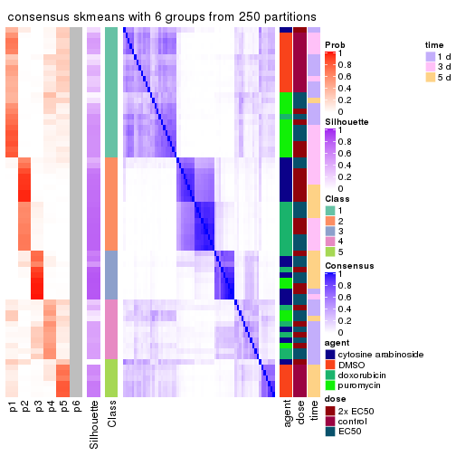
Heatmaps for the membership of samples in all partitions to see how consistent they are:
membership_heatmap(res, k = 2)
membership_heatmap(res, k = 3)
membership_heatmap(res, k = 4)
membership_heatmap(res, k = 5)
membership_heatmap(res, k = 6)
As soon as we have had the classes for columns, we can look for signatures which are significantly different between classes which can be candidate marks for certain classes. Following are the heatmaps for signatures.
Signature heatmaps where rows are scaled:
get_signatures(res, k = 2)

get_signatures(res, k = 3)
get_signatures(res, k = 4)

get_signatures(res, k = 5)
get_signatures(res, k = 6)
Signature heatmaps where rows are not scaled:
get_signatures(res, k = 2, scale_rows = FALSE)
get_signatures(res, k = 3, scale_rows = FALSE)
get_signatures(res, k = 4, scale_rows = FALSE)
get_signatures(res, k = 5, scale_rows = FALSE)
get_signatures(res, k = 6, scale_rows = FALSE)
Compare the overlap of signatures from different k:
compare_signatures(res)
get_signature() returns a data frame invisibly. TO get the list of signatures, the function
call should be assigned to a variable explicitly. In following code, if plot argument is set
to FALSE, no heatmap is plotted while only the differential analysis is performed.
# code only for demonstration
tb = get_signature(res, k = ..., plot = FALSE)
An example of the output of tb is:
#> which_row fdr mean_1 mean_2 scaled_mean_1 scaled_mean_2 km
#> 1 38 0.042760348 8.373488 9.131774 -0.5533452 0.5164555 1
#> 2 40 0.018707592 7.106213 8.469186 -0.6173731 0.5762149 1
#> 3 55 0.019134737 10.221463 11.207825 -0.6159697 0.5749050 1
#> 4 59 0.006059896 5.921854 7.869574 -0.6899429 0.6439467 1
#> 5 60 0.018055526 8.928898 10.211722 -0.6204761 0.5791110 1
#> 6 98 0.009384629 15.714769 14.887706 0.6635654 -0.6193277 2
...
The columns in tb are:
which_row: row indices corresponding to the input matrix.fdr: FDR for the differential test. mean_x: The mean value in group x.scaled_mean_x: The mean value in group x after rows are scaled.km: Row groups if k-means clustering is applied to rows.UMAP plot which shows how samples are separated.
dimension_reduction(res, k = 2, method = "UMAP")
dimension_reduction(res, k = 3, method = "UMAP")
dimension_reduction(res, k = 4, method = "UMAP")
dimension_reduction(res, k = 5, method = "UMAP")

dimension_reduction(res, k = 6, method = "UMAP")
Following heatmap shows how subgroups are split when increasing k:
collect_classes(res)
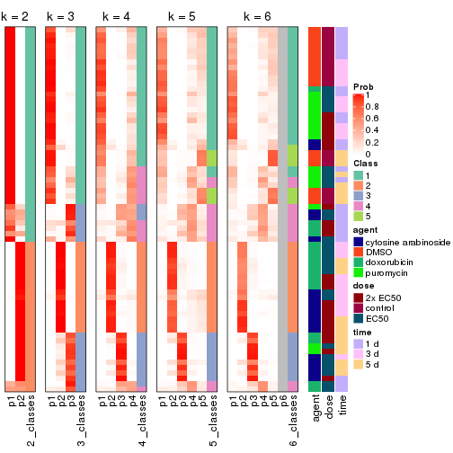
Test correlation between subgroups and known annotations. If the known annotation is numeric, one-way ANOVA test is applied, and if the known annotation is discrete, chi-squared contingency table test is applied.
test_to_known_factors(res)
#> n agent(p) dose(p) time(p) k
#> CV:skmeans 63 7.49e-08 2.80e-04 5.58e-04 2
#> CV:skmeans 66 1.64e-08 6.26e-05 1.49e-03 3
#> CV:skmeans 45 4.86e-06 1.30e-03 4.63e-05 4
#> CV:skmeans 46 6.74e-09 2.60e-05 1.07e-07 5
#> CV:skmeans 39 2.87e-09 7.77e-06 1.33e-03 6
If matrix rows can be associated to genes, consider to use functional_enrichment(res,
...) to perform function enrichment for the signature genes. See this vignette for more detailed explanations.
The object with results only for a single top-value method and a single partition method can be extracted as:
res = res_list["CV", "pam"]
# you can also extract it by
# res = res_list["CV:pam"]
A summary of res and all the functions that can be applied to it:
res
#> A 'ConsensusPartition' object with k = 2, 3, 4, 5, 6.
#> On a matrix with 21796 rows and 68 columns.
#> Top rows (1000, 2000, 3000, 4000, 5000) are extracted by 'CV' method.
#> Subgroups are detected by 'pam' method.
#> Performed in total 1250 partitions by row resampling.
#> Best k for subgroups seems to be 3.
#>
#> Following methods can be applied to this 'ConsensusPartition' object:
#> [1] "cola_report" "collect_classes" "collect_plots"
#> [4] "collect_stats" "colnames" "compare_signatures"
#> [7] "consensus_heatmap" "dimension_reduction" "functional_enrichment"
#> [10] "get_anno_col" "get_anno" "get_classes"
#> [13] "get_consensus" "get_matrix" "get_membership"
#> [16] "get_param" "get_signatures" "get_stats"
#> [19] "is_best_k" "is_stable_k" "membership_heatmap"
#> [22] "ncol" "nrow" "plot_ecdf"
#> [25] "rownames" "select_partition_number" "show"
#> [28] "suggest_best_k" "test_to_known_factors"
collect_plots() function collects all the plots made from res for all k (number of partitions)
into one single page to provide an easy and fast comparison between different k.
collect_plots(res)
The plots are:
k and the heatmap of
predicted classes for each k.k.k.k.All the plots in panels can be made by individual functions and they are plotted later in this section.
select_partition_number() produces several plots showing different
statistics for choosing “optimized” k. There are following statistics:
k;k, the area increased is defined as \(A_k - A_{k-1}\).The detailed explanations of these statistics can be found in the cola vignette.
Generally speaking, lower PAC score, higher mean silhouette score or higher
concordance corresponds to better partition. Rand index and Jaccard index
measure how similar the current partition is compared to partition with k-1.
If they are too similar, we won't accept k is better than k-1.
select_partition_number(res)
The numeric values for all these statistics can be obtained by get_stats().
get_stats(res)
#> k 1-PAC mean_silhouette concordance area_increased Rand Jaccard
#> 2 2 0.602 0.841 0.925 0.3917 0.619 0.619
#> 3 3 0.752 0.819 0.924 0.4648 0.765 0.636
#> 4 4 0.643 0.693 0.802 0.1667 0.884 0.744
#> 5 5 0.633 0.695 0.816 0.1104 0.893 0.715
#> 6 6 0.703 0.655 0.837 0.0929 0.876 0.578
suggest_best_k() suggests the best \(k\) based on these statistics. The rules are as follows:
suggest_best_k(res)
#> [1] 3
Following shows the table of the partitions (You need to click the show/hide
code output link to see it). The membership matrix (columns with name p*)
is inferred by
clue::cl_consensus()
function with the SE method. Basically the value in the membership matrix
represents the probability to belong to a certain group. The finall class
label for an item is determined with the group with highest probability it
belongs to.
In get_classes() function, the entropy is calculated from the membership
matrix and the silhouette score is calculated from the consensus matrix.
cbind(get_classes(res, k = 2), get_membership(res, k = 2))
#> class entropy silhouette p1 p2
#> GSM159850 1 0.0000 0.928 1.000 0.000
#> GSM159851 1 0.0000 0.928 1.000 0.000
#> GSM159852 1 0.0000 0.928 1.000 0.000
#> GSM159853 1 0.0376 0.927 0.996 0.004
#> GSM159854 1 0.0000 0.928 1.000 0.000
#> GSM159855 1 0.0000 0.928 1.000 0.000
#> GSM159856 1 0.0376 0.927 0.996 0.004
#> GSM159857 1 0.0672 0.926 0.992 0.008
#> GSM159858 1 0.0000 0.928 1.000 0.000
#> GSM159859 1 0.0000 0.928 1.000 0.000
#> GSM159860 1 0.0376 0.927 0.996 0.004
#> GSM159861 1 0.0000 0.928 1.000 0.000
#> GSM159862 1 0.0938 0.925 0.988 0.012
#> GSM159863 1 0.0000 0.928 1.000 0.000
#> GSM159864 1 0.0000 0.928 1.000 0.000
#> GSM159865 1 0.0000 0.928 1.000 0.000
#> GSM159866 1 0.0000 0.928 1.000 0.000
#> GSM159885 1 0.7056 0.719 0.808 0.192
#> GSM159886 1 0.0000 0.928 1.000 0.000
#> GSM159887 1 0.0938 0.924 0.988 0.012
#> GSM159888 1 0.7453 0.733 0.788 0.212
#> GSM159889 1 0.7299 0.740 0.796 0.204
#> GSM159890 1 0.7815 0.712 0.768 0.232
#> GSM159891 2 0.0376 0.865 0.004 0.996
#> GSM159892 2 0.0000 0.865 0.000 1.000
#> GSM159893 2 0.0000 0.865 0.000 1.000
#> GSM159894 1 0.2043 0.911 0.968 0.032
#> GSM159895 1 0.1633 0.918 0.976 0.024
#> GSM159896 1 0.9323 0.375 0.652 0.348
#> GSM159897 1 0.8081 0.690 0.752 0.248
#> GSM159898 1 0.7883 0.707 0.764 0.236
#> GSM159899 2 0.6801 0.766 0.180 0.820
#> GSM159900 2 0.0000 0.865 0.000 1.000
#> GSM159901 2 0.0000 0.865 0.000 1.000
#> GSM159902 1 0.0000 0.928 1.000 0.000
#> GSM159903 1 0.0000 0.928 1.000 0.000
#> GSM159904 1 0.0000 0.928 1.000 0.000
#> GSM159905 1 0.0000 0.928 1.000 0.000
#> GSM159906 1 0.0000 0.928 1.000 0.000
#> GSM159907 1 0.0000 0.928 1.000 0.000
#> GSM159908 1 0.0376 0.927 0.996 0.004
#> GSM159909 1 0.0000 0.928 1.000 0.000
#> GSM159910 2 0.0000 0.865 0.000 1.000
#> GSM159911 1 0.9686 0.196 0.604 0.396
#> GSM159912 1 0.0000 0.928 1.000 0.000
#> GSM159913 1 0.0000 0.928 1.000 0.000
#> GSM159914 1 0.0000 0.928 1.000 0.000
#> GSM159915 1 0.0000 0.928 1.000 0.000
#> GSM159916 1 0.0000 0.928 1.000 0.000
#> GSM159917 2 0.6712 0.798 0.176 0.824
#> GSM159867 1 0.1633 0.919 0.976 0.024
#> GSM159868 2 0.8909 0.654 0.308 0.692
#> GSM159869 2 0.9686 0.489 0.396 0.604
#> GSM159870 1 0.1633 0.918 0.976 0.024
#> GSM159871 1 0.2236 0.912 0.964 0.036
#> GSM159872 2 0.2778 0.859 0.048 0.952
#> GSM159873 2 0.6148 0.814 0.152 0.848
#> GSM159874 2 0.0672 0.865 0.008 0.992
#> GSM159875 2 0.0000 0.865 0.000 1.000
#> GSM159876 1 0.0938 0.924 0.988 0.012
#> GSM159877 2 0.6973 0.785 0.188 0.812
#> GSM159878 1 0.0672 0.926 0.992 0.008
#> GSM159879 1 0.3584 0.885 0.932 0.068
#> GSM159880 1 0.4815 0.852 0.896 0.104
#> GSM159881 2 0.9286 0.536 0.344 0.656
#> GSM159882 2 0.6247 0.790 0.156 0.844
#> GSM159883 1 0.9775 0.340 0.588 0.412
#> GSM159884 1 0.8081 0.692 0.752 0.248
cbind(get_classes(res, k = 3), get_membership(res, k = 3))
#> class entropy silhouette p1 p2 p3
#> GSM159850 1 0.0000 0.9204 1.000 0.000 0.000
#> GSM159851 1 0.0000 0.9204 1.000 0.000 0.000
#> GSM159852 1 0.0000 0.9204 1.000 0.000 0.000
#> GSM159853 1 0.0661 0.9152 0.988 0.008 0.004
#> GSM159854 1 0.0000 0.9204 1.000 0.000 0.000
#> GSM159855 1 0.0000 0.9204 1.000 0.000 0.000
#> GSM159856 1 0.0424 0.9168 0.992 0.008 0.000
#> GSM159857 1 0.1170 0.9081 0.976 0.016 0.008
#> GSM159858 1 0.0000 0.9204 1.000 0.000 0.000
#> GSM159859 1 0.0000 0.9204 1.000 0.000 0.000
#> GSM159860 1 0.1015 0.9108 0.980 0.012 0.008
#> GSM159861 1 0.0000 0.9204 1.000 0.000 0.000
#> GSM159862 1 0.1774 0.9008 0.960 0.016 0.024
#> GSM159863 1 0.0000 0.9204 1.000 0.000 0.000
#> GSM159864 1 0.0000 0.9204 1.000 0.000 0.000
#> GSM159865 1 0.0237 0.9188 0.996 0.000 0.004
#> GSM159866 1 0.0000 0.9204 1.000 0.000 0.000
#> GSM159885 1 0.6783 0.3183 0.588 0.016 0.396
#> GSM159886 1 0.0000 0.9204 1.000 0.000 0.000
#> GSM159887 1 0.5237 0.7770 0.824 0.056 0.120
#> GSM159888 2 0.0000 0.8926 0.000 1.000 0.000
#> GSM159889 2 0.0000 0.8926 0.000 1.000 0.000
#> GSM159890 2 0.0000 0.8926 0.000 1.000 0.000
#> GSM159891 2 0.0000 0.8926 0.000 1.000 0.000
#> GSM159892 2 0.0237 0.8900 0.000 0.996 0.004
#> GSM159893 2 0.0000 0.8926 0.000 1.000 0.000
#> GSM159894 1 0.8399 0.4829 0.624 0.188 0.188
#> GSM159895 1 0.6083 0.7137 0.772 0.060 0.168
#> GSM159896 1 0.7876 0.1656 0.520 0.056 0.424
#> GSM159897 2 0.0000 0.8926 0.000 1.000 0.000
#> GSM159898 2 0.0000 0.8926 0.000 1.000 0.000
#> GSM159899 2 0.0000 0.8926 0.000 1.000 0.000
#> GSM159900 3 0.1411 0.8746 0.000 0.036 0.964
#> GSM159901 3 0.3192 0.8387 0.000 0.112 0.888
#> GSM159902 1 0.0424 0.9167 0.992 0.008 0.000
#> GSM159903 1 0.0000 0.9204 1.000 0.000 0.000
#> GSM159904 1 0.0000 0.9204 1.000 0.000 0.000
#> GSM159905 1 0.0000 0.9204 1.000 0.000 0.000
#> GSM159906 1 0.0000 0.9204 1.000 0.000 0.000
#> GSM159907 1 0.0000 0.9204 1.000 0.000 0.000
#> GSM159908 1 0.0237 0.9186 0.996 0.000 0.004
#> GSM159909 1 0.0000 0.9204 1.000 0.000 0.000
#> GSM159910 3 0.1031 0.8753 0.000 0.024 0.976
#> GSM159911 1 0.6520 0.0246 0.508 0.004 0.488
#> GSM159912 1 0.0000 0.9204 1.000 0.000 0.000
#> GSM159913 1 0.0000 0.9204 1.000 0.000 0.000
#> GSM159914 1 0.0000 0.9204 1.000 0.000 0.000
#> GSM159915 1 0.0000 0.9204 1.000 0.000 0.000
#> GSM159916 1 0.0000 0.9204 1.000 0.000 0.000
#> GSM159917 3 0.0829 0.8782 0.012 0.004 0.984
#> GSM159867 1 0.2879 0.8723 0.924 0.052 0.024
#> GSM159868 3 0.7024 0.6243 0.224 0.072 0.704
#> GSM159869 3 0.6407 0.5932 0.272 0.028 0.700
#> GSM159870 1 0.7080 0.2373 0.564 0.412 0.024
#> GSM159871 2 0.7274 0.0957 0.452 0.520 0.028
#> GSM159872 3 0.0000 0.8786 0.000 0.000 1.000
#> GSM159873 3 0.3031 0.8420 0.012 0.076 0.912
#> GSM159874 3 0.0424 0.8797 0.000 0.008 0.992
#> GSM159875 3 0.3412 0.8225 0.000 0.124 0.876
#> GSM159876 1 0.3722 0.8405 0.888 0.088 0.024
#> GSM159877 3 0.0237 0.8795 0.004 0.000 0.996
#> GSM159878 1 0.2804 0.8715 0.924 0.060 0.016
#> GSM159879 2 0.5435 0.6749 0.192 0.784 0.024
#> GSM159880 2 0.4683 0.7492 0.140 0.836 0.024
#> GSM159881 2 0.4636 0.7897 0.044 0.852 0.104
#> GSM159882 2 0.1163 0.8823 0.000 0.972 0.028
#> GSM159883 2 0.1031 0.8832 0.000 0.976 0.024
#> GSM159884 2 0.3009 0.8475 0.052 0.920 0.028
cbind(get_classes(res, k = 4), get_membership(res, k = 4))
#> class entropy silhouette p1 p2 p3 p4
#> GSM159850 1 0.1389 0.8357 0.952 0.000 0.000 0.048
#> GSM159851 1 0.0817 0.8376 0.976 0.000 0.000 0.024
#> GSM159852 1 0.1557 0.8345 0.944 0.000 0.000 0.056
#> GSM159853 1 0.2011 0.8276 0.920 0.000 0.000 0.080
#> GSM159854 1 0.0895 0.8338 0.976 0.020 0.000 0.004
#> GSM159855 1 0.0895 0.8338 0.976 0.020 0.000 0.004
#> GSM159856 1 0.1174 0.8326 0.968 0.020 0.000 0.012
#> GSM159857 1 0.2256 0.8142 0.924 0.020 0.000 0.056
#> GSM159858 1 0.0707 0.8328 0.980 0.020 0.000 0.000
#> GSM159859 1 0.0707 0.8328 0.980 0.020 0.000 0.000
#> GSM159860 1 0.1820 0.8256 0.944 0.020 0.000 0.036
#> GSM159861 1 0.3142 0.7772 0.860 0.132 0.000 0.008
#> GSM159862 1 0.6428 0.6388 0.660 0.220 0.008 0.112
#> GSM159863 1 0.4434 0.6970 0.756 0.228 0.000 0.016
#> GSM159864 1 0.4072 0.6861 0.748 0.252 0.000 0.000
#> GSM159865 1 0.4391 0.6813 0.740 0.252 0.000 0.008
#> GSM159866 1 0.4360 0.6880 0.744 0.248 0.000 0.008
#> GSM159885 1 0.6627 0.3164 0.556 0.000 0.348 0.096
#> GSM159886 1 0.1716 0.8318 0.936 0.000 0.000 0.064
#> GSM159887 1 0.6038 0.1847 0.532 0.000 0.044 0.424
#> GSM159888 2 0.4072 0.9867 0.000 0.748 0.000 0.252
#> GSM159889 2 0.4564 0.8914 0.000 0.672 0.000 0.328
#> GSM159890 2 0.4103 0.9828 0.000 0.744 0.000 0.256
#> GSM159891 2 0.4072 0.9867 0.000 0.748 0.000 0.252
#> GSM159892 2 0.4072 0.9867 0.000 0.748 0.000 0.252
#> GSM159893 2 0.4072 0.9867 0.000 0.748 0.000 0.252
#> GSM159894 1 0.6823 0.3251 0.564 0.016 0.072 0.348
#> GSM159895 1 0.5931 0.0973 0.504 0.000 0.036 0.460
#> GSM159896 3 0.7812 0.0728 0.372 0.000 0.376 0.252
#> GSM159897 2 0.4072 0.9867 0.000 0.748 0.000 0.252
#> GSM159898 2 0.4072 0.9867 0.000 0.748 0.000 0.252
#> GSM159899 2 0.4072 0.9867 0.000 0.748 0.000 0.252
#> GSM159900 3 0.1474 0.7643 0.000 0.052 0.948 0.000
#> GSM159901 3 0.3726 0.6532 0.000 0.212 0.788 0.000
#> GSM159902 1 0.1867 0.8303 0.928 0.000 0.000 0.072
#> GSM159903 1 0.1637 0.8330 0.940 0.000 0.000 0.060
#> GSM159904 1 0.1174 0.8319 0.968 0.020 0.000 0.012
#> GSM159905 1 0.1004 0.8379 0.972 0.004 0.000 0.024
#> GSM159906 1 0.1716 0.8318 0.936 0.000 0.000 0.064
#> GSM159907 1 0.0707 0.8328 0.980 0.020 0.000 0.000
#> GSM159908 1 0.3519 0.7531 0.856 0.020 0.004 0.120
#> GSM159909 1 0.0779 0.8338 0.980 0.016 0.000 0.004
#> GSM159910 3 0.0000 0.7812 0.000 0.000 1.000 0.000
#> GSM159911 1 0.6148 0.0315 0.484 0.000 0.468 0.048
#> GSM159912 1 0.1716 0.8318 0.936 0.000 0.000 0.064
#> GSM159913 1 0.1716 0.8318 0.936 0.000 0.000 0.064
#> GSM159914 1 0.1637 0.8328 0.940 0.000 0.000 0.060
#> GSM159915 1 0.1661 0.8368 0.944 0.004 0.000 0.052
#> GSM159916 1 0.1557 0.8357 0.944 0.000 0.000 0.056
#> GSM159917 3 0.0000 0.7812 0.000 0.000 1.000 0.000
#> GSM159867 1 0.5508 0.2062 0.572 0.020 0.000 0.408
#> GSM159868 3 0.6483 0.2937 0.076 0.000 0.532 0.392
#> GSM159869 3 0.6695 0.4787 0.164 0.000 0.616 0.220
#> GSM159870 4 0.3768 0.5919 0.184 0.008 0.000 0.808
#> GSM159871 4 0.3485 0.6460 0.116 0.028 0.000 0.856
#> GSM159872 3 0.0000 0.7812 0.000 0.000 1.000 0.000
#> GSM159873 4 0.4985 -0.1602 0.000 0.000 0.468 0.532
#> GSM159874 3 0.0000 0.7812 0.000 0.000 1.000 0.000
#> GSM159875 3 0.3831 0.6537 0.000 0.004 0.792 0.204
#> GSM159876 4 0.4888 0.2096 0.412 0.000 0.000 0.588
#> GSM159877 3 0.0000 0.7812 0.000 0.000 1.000 0.000
#> GSM159878 4 0.4866 0.2352 0.404 0.000 0.000 0.596
#> GSM159879 4 0.1716 0.6525 0.000 0.064 0.000 0.936
#> GSM159880 4 0.1716 0.6525 0.000 0.064 0.000 0.936
#> GSM159881 4 0.2675 0.6475 0.000 0.044 0.048 0.908
#> GSM159882 4 0.1902 0.6532 0.000 0.064 0.004 0.932
#> GSM159883 4 0.1716 0.6525 0.000 0.064 0.000 0.936
#> GSM159884 4 0.1716 0.6525 0.000 0.064 0.000 0.936
cbind(get_classes(res, k = 5), get_membership(res, k = 5))
#> class entropy silhouette p1 p2 p3 p4 p5
#> GSM159850 1 0.1914 0.7617 0.924 0.000 0.000 0.016 0.060
#> GSM159851 1 0.2535 0.7738 0.892 0.000 0.000 0.032 0.076
#> GSM159852 1 0.2069 0.7666 0.912 0.000 0.000 0.012 0.076
#> GSM159853 1 0.3485 0.7595 0.828 0.000 0.000 0.048 0.124
#> GSM159854 1 0.4457 0.7461 0.760 0.000 0.000 0.124 0.116
#> GSM159855 1 0.4111 0.7537 0.788 0.000 0.000 0.120 0.092
#> GSM159856 1 0.4723 0.7295 0.736 0.000 0.000 0.132 0.132
#> GSM159857 1 0.5109 0.7097 0.696 0.000 0.000 0.172 0.132
#> GSM159858 1 0.4680 0.7309 0.740 0.000 0.000 0.128 0.132
#> GSM159859 1 0.4503 0.7375 0.756 0.000 0.000 0.124 0.120
#> GSM159860 1 0.4964 0.7199 0.712 0.000 0.000 0.156 0.132
#> GSM159861 1 0.6072 0.3063 0.484 0.000 0.000 0.124 0.392
#> GSM159862 5 0.1792 0.8673 0.084 0.000 0.000 0.000 0.916
#> GSM159863 5 0.4096 0.7593 0.200 0.000 0.000 0.040 0.760
#> GSM159864 5 0.1270 0.8872 0.052 0.000 0.000 0.000 0.948
#> GSM159865 5 0.1121 0.8802 0.044 0.000 0.000 0.000 0.956
#> GSM159866 5 0.1608 0.8770 0.072 0.000 0.000 0.000 0.928
#> GSM159885 1 0.5087 0.3850 0.636 0.000 0.320 0.016 0.028
#> GSM159886 1 0.1124 0.7653 0.960 0.000 0.000 0.004 0.036
#> GSM159887 1 0.5234 0.4079 0.676 0.000 0.040 0.256 0.028
#> GSM159888 2 0.0000 0.9848 0.000 1.000 0.000 0.000 0.000
#> GSM159889 2 0.1965 0.8797 0.000 0.904 0.000 0.096 0.000
#> GSM159890 2 0.0162 0.9811 0.000 0.996 0.000 0.004 0.000
#> GSM159891 2 0.0000 0.9848 0.000 1.000 0.000 0.000 0.000
#> GSM159892 2 0.0000 0.9848 0.000 1.000 0.000 0.000 0.000
#> GSM159893 2 0.0000 0.9848 0.000 1.000 0.000 0.000 0.000
#> GSM159894 1 0.5878 0.4426 0.680 0.020 0.060 0.208 0.032
#> GSM159895 1 0.5107 0.2862 0.620 0.000 0.004 0.332 0.044
#> GSM159896 1 0.7574 -0.0994 0.376 0.000 0.368 0.200 0.056
#> GSM159897 2 0.0000 0.9848 0.000 1.000 0.000 0.000 0.000
#> GSM159898 2 0.0000 0.9848 0.000 1.000 0.000 0.000 0.000
#> GSM159899 2 0.0000 0.9848 0.000 1.000 0.000 0.000 0.000
#> GSM159900 3 0.1270 0.8072 0.000 0.052 0.948 0.000 0.000
#> GSM159901 3 0.3210 0.6941 0.000 0.212 0.788 0.000 0.000
#> GSM159902 1 0.1408 0.7482 0.948 0.000 0.000 0.008 0.044
#> GSM159903 1 0.1571 0.7705 0.936 0.000 0.000 0.004 0.060
#> GSM159904 1 0.4127 0.7440 0.784 0.000 0.000 0.136 0.080
#> GSM159905 1 0.2514 0.7701 0.896 0.000 0.000 0.044 0.060
#> GSM159906 1 0.2011 0.7631 0.908 0.000 0.000 0.004 0.088
#> GSM159907 1 0.4679 0.7313 0.740 0.000 0.000 0.124 0.136
#> GSM159908 1 0.5405 0.4210 0.556 0.000 0.000 0.380 0.064
#> GSM159909 1 0.3828 0.7511 0.808 0.000 0.000 0.120 0.072
#> GSM159910 3 0.0000 0.8263 0.000 0.000 1.000 0.000 0.000
#> GSM159911 1 0.5315 0.0431 0.500 0.000 0.456 0.004 0.040
#> GSM159912 1 0.1124 0.7488 0.960 0.000 0.000 0.004 0.036
#> GSM159913 1 0.1282 0.7522 0.952 0.000 0.000 0.004 0.044
#> GSM159914 1 0.1124 0.7665 0.960 0.000 0.000 0.004 0.036
#> GSM159915 1 0.2740 0.7650 0.876 0.000 0.000 0.028 0.096
#> GSM159916 1 0.1992 0.7670 0.924 0.000 0.000 0.032 0.044
#> GSM159917 3 0.0000 0.8263 0.000 0.000 1.000 0.000 0.000
#> GSM159867 4 0.5064 0.3232 0.248 0.000 0.000 0.672 0.080
#> GSM159868 3 0.6244 0.2108 0.072 0.000 0.488 0.412 0.028
#> GSM159869 3 0.6308 0.4828 0.200 0.000 0.600 0.180 0.020
#> GSM159870 4 0.2952 0.7232 0.088 0.036 0.000 0.872 0.004
#> GSM159871 4 0.2863 0.7431 0.060 0.064 0.000 0.876 0.000
#> GSM159872 3 0.0000 0.8263 0.000 0.000 1.000 0.000 0.000
#> GSM159873 4 0.4101 0.1615 0.000 0.000 0.372 0.628 0.000
#> GSM159874 3 0.0000 0.8263 0.000 0.000 1.000 0.000 0.000
#> GSM159875 3 0.3300 0.6985 0.000 0.004 0.792 0.204 0.000
#> GSM159876 4 0.4291 0.1669 0.464 0.000 0.000 0.536 0.000
#> GSM159877 3 0.0000 0.8263 0.000 0.000 1.000 0.000 0.000
#> GSM159878 4 0.5000 0.3346 0.388 0.000 0.000 0.576 0.036
#> GSM159879 4 0.2377 0.7603 0.000 0.128 0.000 0.872 0.000
#> GSM159880 4 0.2377 0.7603 0.000 0.128 0.000 0.872 0.000
#> GSM159881 4 0.2824 0.7447 0.000 0.096 0.032 0.872 0.000
#> GSM159882 4 0.2377 0.7603 0.000 0.128 0.000 0.872 0.000
#> GSM159883 4 0.2377 0.7603 0.000 0.128 0.000 0.872 0.000
#> GSM159884 4 0.2377 0.7603 0.000 0.128 0.000 0.872 0.000
cbind(get_classes(res, k = 6), get_membership(res, k = 6))
#> class entropy silhouette p1 p2 p3 p4 p5 p6
#> GSM159850 4 0.2969 0.6111 0.224 0.000 0.000 0.776 0.000 0.000
#> GSM159851 4 0.3864 -0.0357 0.480 0.000 0.000 0.520 0.000 0.000
#> GSM159852 4 0.3151 0.6196 0.252 0.000 0.000 0.748 0.000 0.000
#> GSM159853 1 0.3864 -0.1791 0.520 0.000 0.000 0.480 0.000 0.000
#> GSM159854 1 0.3464 0.5301 0.688 0.000 0.000 0.312 0.000 0.000
#> GSM159855 1 0.2941 0.6433 0.780 0.000 0.000 0.220 0.000 0.000
#> GSM159856 1 0.0632 0.7369 0.976 0.000 0.000 0.024 0.000 0.000
#> GSM159857 1 0.0790 0.7363 0.968 0.000 0.000 0.032 0.000 0.000
#> GSM159858 1 0.1075 0.7382 0.952 0.000 0.000 0.048 0.000 0.000
#> GSM159859 1 0.1387 0.7369 0.932 0.000 0.000 0.068 0.000 0.000
#> GSM159860 1 0.0713 0.7377 0.972 0.000 0.000 0.028 0.000 0.000
#> GSM159861 1 0.2605 0.6953 0.864 0.000 0.000 0.028 0.108 0.000
#> GSM159862 5 0.2937 0.8249 0.096 0.000 0.000 0.056 0.848 0.000
#> GSM159863 5 0.4297 0.6833 0.176 0.000 0.000 0.100 0.724 0.000
#> GSM159864 5 0.0000 0.8889 0.000 0.000 0.000 0.000 1.000 0.000
#> GSM159865 5 0.0000 0.8889 0.000 0.000 0.000 0.000 1.000 0.000
#> GSM159866 5 0.0000 0.8889 0.000 0.000 0.000 0.000 1.000 0.000
#> GSM159885 4 0.3189 0.6137 0.020 0.000 0.184 0.796 0.000 0.000
#> GSM159886 4 0.2491 0.6776 0.164 0.000 0.000 0.836 0.000 0.000
#> GSM159887 4 0.2164 0.6990 0.028 0.000 0.016 0.912 0.000 0.044
#> GSM159888 2 0.0000 0.9851 0.000 1.000 0.000 0.000 0.000 0.000
#> GSM159889 2 0.1765 0.8807 0.000 0.904 0.000 0.000 0.000 0.096
#> GSM159890 2 0.0146 0.9817 0.000 0.996 0.000 0.000 0.000 0.004
#> GSM159891 2 0.0000 0.9851 0.000 1.000 0.000 0.000 0.000 0.000
#> GSM159892 2 0.0000 0.9851 0.000 1.000 0.000 0.000 0.000 0.000
#> GSM159893 2 0.0000 0.9851 0.000 1.000 0.000 0.000 0.000 0.000
#> GSM159894 4 0.2216 0.6957 0.024 0.000 0.016 0.908 0.000 0.052
#> GSM159895 4 0.3088 0.6666 0.048 0.000 0.000 0.832 0.000 0.120
#> GSM159896 4 0.7078 0.0803 0.132 0.000 0.340 0.396 0.000 0.132
#> GSM159897 2 0.0000 0.9851 0.000 1.000 0.000 0.000 0.000 0.000
#> GSM159898 2 0.0000 0.9851 0.000 1.000 0.000 0.000 0.000 0.000
#> GSM159899 2 0.0000 0.9851 0.000 1.000 0.000 0.000 0.000 0.000
#> GSM159900 3 0.1141 0.8092 0.000 0.052 0.948 0.000 0.000 0.000
#> GSM159901 3 0.2883 0.6937 0.000 0.212 0.788 0.000 0.000 0.000
#> GSM159902 4 0.1556 0.6922 0.080 0.000 0.000 0.920 0.000 0.000
#> GSM159903 4 0.3330 0.5552 0.284 0.000 0.000 0.716 0.000 0.000
#> GSM159904 1 0.2969 0.6630 0.776 0.000 0.000 0.224 0.000 0.000
#> GSM159905 1 0.3851 0.2292 0.540 0.000 0.000 0.460 0.000 0.000
#> GSM159906 4 0.3515 0.5316 0.324 0.000 0.000 0.676 0.000 0.000
#> GSM159907 1 0.0865 0.7388 0.964 0.000 0.000 0.036 0.000 0.000
#> GSM159908 1 0.3271 0.6432 0.760 0.000 0.000 0.232 0.000 0.008
#> GSM159909 1 0.2912 0.6714 0.784 0.000 0.000 0.216 0.000 0.000
#> GSM159910 3 0.0000 0.8266 0.000 0.000 1.000 0.000 0.000 0.000
#> GSM159911 4 0.4278 0.2705 0.016 0.000 0.352 0.624 0.000 0.008
#> GSM159912 4 0.1501 0.6920 0.076 0.000 0.000 0.924 0.000 0.000
#> GSM159913 4 0.2048 0.6826 0.120 0.000 0.000 0.880 0.000 0.000
#> GSM159914 4 0.2969 0.6480 0.224 0.000 0.000 0.776 0.000 0.000
#> GSM159915 1 0.3866 -0.1694 0.516 0.000 0.000 0.484 0.000 0.000
#> GSM159916 4 0.3266 0.5147 0.272 0.000 0.000 0.728 0.000 0.000
#> GSM159917 3 0.0000 0.8266 0.000 0.000 1.000 0.000 0.000 0.000
#> GSM159867 6 0.5334 0.1434 0.376 0.000 0.000 0.112 0.000 0.512
#> GSM159868 3 0.5873 0.2788 0.028 0.000 0.492 0.104 0.000 0.376
#> GSM159869 3 0.5863 0.4895 0.032 0.000 0.576 0.252 0.000 0.140
#> GSM159870 6 0.0551 0.8191 0.008 0.004 0.000 0.004 0.000 0.984
#> GSM159871 6 0.0260 0.8199 0.000 0.000 0.000 0.008 0.000 0.992
#> GSM159872 3 0.0000 0.8266 0.000 0.000 1.000 0.000 0.000 0.000
#> GSM159873 6 0.3634 0.2316 0.000 0.000 0.356 0.000 0.000 0.644
#> GSM159874 3 0.0547 0.8178 0.000 0.000 0.980 0.020 0.000 0.000
#> GSM159875 3 0.2964 0.6992 0.000 0.004 0.792 0.000 0.000 0.204
#> GSM159876 4 0.4400 0.3481 0.032 0.000 0.000 0.592 0.000 0.376
#> GSM159877 3 0.0000 0.8266 0.000 0.000 1.000 0.000 0.000 0.000
#> GSM159878 6 0.5329 -0.1667 0.104 0.000 0.000 0.448 0.000 0.448
#> GSM159879 6 0.0260 0.8250 0.000 0.008 0.000 0.000 0.000 0.992
#> GSM159880 6 0.0260 0.8250 0.000 0.008 0.000 0.000 0.000 0.992
#> GSM159881 6 0.0260 0.8250 0.000 0.008 0.000 0.000 0.000 0.992
#> GSM159882 6 0.0260 0.8250 0.000 0.008 0.000 0.000 0.000 0.992
#> GSM159883 6 0.0260 0.8250 0.000 0.008 0.000 0.000 0.000 0.992
#> GSM159884 6 0.0260 0.8250 0.000 0.008 0.000 0.000 0.000 0.992
Heatmaps for the consensus matrix. It visualizes the probability of two samples to be in a same group.
consensus_heatmap(res, k = 2)
consensus_heatmap(res, k = 3)
consensus_heatmap(res, k = 4)
consensus_heatmap(res, k = 5)
consensus_heatmap(res, k = 6)
Heatmaps for the membership of samples in all partitions to see how consistent they are:
membership_heatmap(res, k = 2)
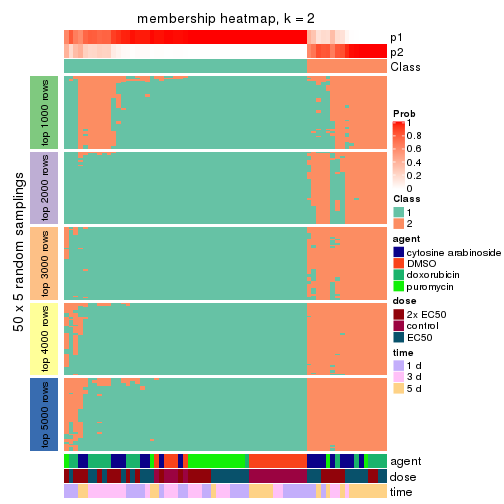
membership_heatmap(res, k = 3)
membership_heatmap(res, k = 4)
membership_heatmap(res, k = 5)
membership_heatmap(res, k = 6)
As soon as we have had the classes for columns, we can look for signatures which are significantly different between classes which can be candidate marks for certain classes. Following are the heatmaps for signatures.
Signature heatmaps where rows are scaled:
get_signatures(res, k = 2)
get_signatures(res, k = 3)
get_signatures(res, k = 4)
get_signatures(res, k = 5)
get_signatures(res, k = 6)
Signature heatmaps where rows are not scaled:
get_signatures(res, k = 2, scale_rows = FALSE)
get_signatures(res, k = 3, scale_rows = FALSE)
get_signatures(res, k = 4, scale_rows = FALSE)
get_signatures(res, k = 5, scale_rows = FALSE)
get_signatures(res, k = 6, scale_rows = FALSE)
Compare the overlap of signatures from different k:
compare_signatures(res)
get_signature() returns a data frame invisibly. TO get the list of signatures, the function
call should be assigned to a variable explicitly. In following code, if plot argument is set
to FALSE, no heatmap is plotted while only the differential analysis is performed.
# code only for demonstration
tb = get_signature(res, k = ..., plot = FALSE)
An example of the output of tb is:
#> which_row fdr mean_1 mean_2 scaled_mean_1 scaled_mean_2 km
#> 1 38 0.042760348 8.373488 9.131774 -0.5533452 0.5164555 1
#> 2 40 0.018707592 7.106213 8.469186 -0.6173731 0.5762149 1
#> 3 55 0.019134737 10.221463 11.207825 -0.6159697 0.5749050 1
#> 4 59 0.006059896 5.921854 7.869574 -0.6899429 0.6439467 1
#> 5 60 0.018055526 8.928898 10.211722 -0.6204761 0.5791110 1
#> 6 98 0.009384629 15.714769 14.887706 0.6635654 -0.6193277 2
...
The columns in tb are:
which_row: row indices corresponding to the input matrix.fdr: FDR for the differential test. mean_x: The mean value in group x.scaled_mean_x: The mean value in group x after rows are scaled.km: Row groups if k-means clustering is applied to rows.UMAP plot which shows how samples are separated.
dimension_reduction(res, k = 2, method = "UMAP")
dimension_reduction(res, k = 3, method = "UMAP")
dimension_reduction(res, k = 4, method = "UMAP")
dimension_reduction(res, k = 5, method = "UMAP")
dimension_reduction(res, k = 6, method = "UMAP")
Following heatmap shows how subgroups are split when increasing k:
collect_classes(res)
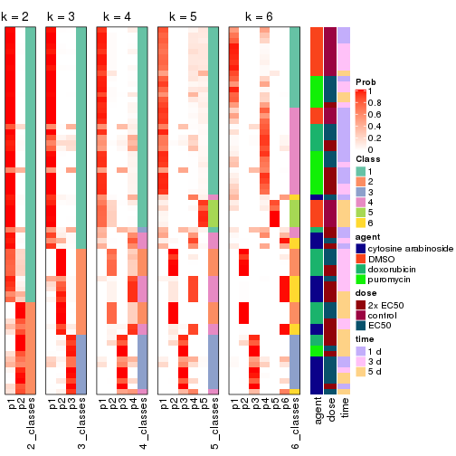
Test correlation between subgroups and known annotations. If the known annotation is numeric, one-way ANOVA test is applied, and if the known annotation is discrete, chi-squared contingency table test is applied.
test_to_known_factors(res)
#> n agent(p) dose(p) time(p) k
#> CV:pam 64 3.81e-03 2.10e-02 8.96e-04 2
#> CV:pam 62 1.57e-07 7.33e-04 1.90e-03 3
#> CV:pam 56 3.95e-15 3.64e-04 1.36e-02 4
#> CV:pam 54 1.35e-14 1.90e-04 2.36e-05 5
#> CV:pam 56 2.99e-13 1.83e-05 4.52e-06 6
If matrix rows can be associated to genes, consider to use functional_enrichment(res,
...) to perform function enrichment for the signature genes. See this vignette for more detailed explanations.
The object with results only for a single top-value method and a single partition method can be extracted as:
res = res_list["CV", "mclust"]
# you can also extract it by
# res = res_list["CV:mclust"]
A summary of res and all the functions that can be applied to it:
res
#> A 'ConsensusPartition' object with k = 2, 3, 4, 5, 6.
#> On a matrix with 21796 rows and 68 columns.
#> Top rows (1000, 2000, 3000, 4000, 5000) are extracted by 'CV' method.
#> Subgroups are detected by 'mclust' method.
#> Performed in total 1250 partitions by row resampling.
#> Best k for subgroups seems to be 2.
#>
#> Following methods can be applied to this 'ConsensusPartition' object:
#> [1] "cola_report" "collect_classes" "collect_plots"
#> [4] "collect_stats" "colnames" "compare_signatures"
#> [7] "consensus_heatmap" "dimension_reduction" "functional_enrichment"
#> [10] "get_anno_col" "get_anno" "get_classes"
#> [13] "get_consensus" "get_matrix" "get_membership"
#> [16] "get_param" "get_signatures" "get_stats"
#> [19] "is_best_k" "is_stable_k" "membership_heatmap"
#> [22] "ncol" "nrow" "plot_ecdf"
#> [25] "rownames" "select_partition_number" "show"
#> [28] "suggest_best_k" "test_to_known_factors"
collect_plots() function collects all the plots made from res for all k (number of partitions)
into one single page to provide an easy and fast comparison between different k.
collect_plots(res)
The plots are:
k and the heatmap of
predicted classes for each k.k.k.k.All the plots in panels can be made by individual functions and they are plotted later in this section.
select_partition_number() produces several plots showing different
statistics for choosing “optimized” k. There are following statistics:
k;k, the area increased is defined as \(A_k - A_{k-1}\).The detailed explanations of these statistics can be found in the cola vignette.
Generally speaking, lower PAC score, higher mean silhouette score or higher
concordance corresponds to better partition. Rand index and Jaccard index
measure how similar the current partition is compared to partition with k-1.
If they are too similar, we won't accept k is better than k-1.
select_partition_number(res)
The numeric values for all these statistics can be obtained by get_stats().
get_stats(res)
#> k 1-PAC mean_silhouette concordance area_increased Rand Jaccard
#> 2 2 0.969 0.943 0.975 0.4911 0.514 0.514
#> 3 3 0.638 0.796 0.876 0.1830 0.903 0.815
#> 4 4 0.557 0.496 0.731 0.1811 0.783 0.545
#> 5 5 0.651 0.793 0.817 0.0860 0.830 0.511
#> 6 6 0.744 0.796 0.875 0.0467 0.986 0.937
suggest_best_k() suggests the best \(k\) based on these statistics. The rules are as follows:
suggest_best_k(res)
#> [1] 2
Following shows the table of the partitions (You need to click the show/hide
code output link to see it). The membership matrix (columns with name p*)
is inferred by
clue::cl_consensus()
function with the SE method. Basically the value in the membership matrix
represents the probability to belong to a certain group. The finall class
label for an item is determined with the group with highest probability it
belongs to.
In get_classes() function, the entropy is calculated from the membership
matrix and the silhouette score is calculated from the consensus matrix.
cbind(get_classes(res, k = 2), get_membership(res, k = 2))
#> class entropy silhouette p1 p2
#> GSM159850 1 0.0000 0.963 1.000 0.000
#> GSM159851 1 0.0000 0.963 1.000 0.000
#> GSM159852 1 0.0000 0.963 1.000 0.000
#> GSM159853 1 0.0000 0.963 1.000 0.000
#> GSM159854 1 0.0000 0.963 1.000 0.000
#> GSM159855 1 0.0000 0.963 1.000 0.000
#> GSM159856 1 0.0000 0.963 1.000 0.000
#> GSM159857 1 0.0000 0.963 1.000 0.000
#> GSM159858 1 0.0000 0.963 1.000 0.000
#> GSM159859 1 0.0000 0.963 1.000 0.000
#> GSM159860 1 0.0000 0.963 1.000 0.000
#> GSM159861 1 0.0000 0.963 1.000 0.000
#> GSM159862 1 0.0000 0.963 1.000 0.000
#> GSM159863 1 0.0000 0.963 1.000 0.000
#> GSM159864 1 0.9170 0.532 0.668 0.332
#> GSM159865 1 0.9170 0.532 0.668 0.332
#> GSM159866 1 0.9170 0.532 0.668 0.332
#> GSM159885 1 0.0672 0.959 0.992 0.008
#> GSM159886 1 0.0672 0.959 0.992 0.008
#> GSM159887 1 0.0672 0.959 0.992 0.008
#> GSM159888 2 0.0000 0.990 0.000 1.000
#> GSM159889 2 0.0000 0.990 0.000 1.000
#> GSM159890 2 0.0000 0.990 0.000 1.000
#> GSM159891 2 0.0000 0.990 0.000 1.000
#> GSM159892 2 0.0000 0.990 0.000 1.000
#> GSM159893 2 0.0000 0.990 0.000 1.000
#> GSM159894 1 0.2423 0.933 0.960 0.040
#> GSM159895 1 0.0672 0.959 0.992 0.008
#> GSM159896 1 0.0672 0.959 0.992 0.008
#> GSM159897 2 0.0000 0.990 0.000 1.000
#> GSM159898 2 0.0000 0.990 0.000 1.000
#> GSM159899 2 0.0000 0.990 0.000 1.000
#> GSM159900 2 0.0000 0.990 0.000 1.000
#> GSM159901 2 0.0000 0.990 0.000 1.000
#> GSM159902 1 0.0000 0.963 1.000 0.000
#> GSM159903 1 0.0000 0.963 1.000 0.000
#> GSM159904 1 0.0000 0.963 1.000 0.000
#> GSM159905 1 0.0000 0.963 1.000 0.000
#> GSM159906 1 0.0000 0.963 1.000 0.000
#> GSM159907 1 0.0000 0.963 1.000 0.000
#> GSM159908 1 0.0000 0.963 1.000 0.000
#> GSM159909 1 0.0000 0.963 1.000 0.000
#> GSM159910 2 0.0376 0.987 0.004 0.996
#> GSM159911 1 0.0672 0.959 0.992 0.008
#> GSM159912 1 0.0000 0.963 1.000 0.000
#> GSM159913 1 0.0000 0.963 1.000 0.000
#> GSM159914 1 0.0000 0.963 1.000 0.000
#> GSM159915 1 0.0000 0.963 1.000 0.000
#> GSM159916 1 0.0000 0.963 1.000 0.000
#> GSM159917 2 0.0376 0.987 0.004 0.996
#> GSM159867 1 0.0672 0.959 0.992 0.008
#> GSM159868 1 0.0672 0.959 0.992 0.008
#> GSM159869 1 0.0672 0.959 0.992 0.008
#> GSM159870 2 0.0000 0.990 0.000 1.000
#> GSM159871 2 0.0000 0.990 0.000 1.000
#> GSM159872 2 0.0376 0.987 0.004 0.996
#> GSM159873 2 0.0000 0.990 0.000 1.000
#> GSM159874 2 0.0000 0.990 0.000 1.000
#> GSM159875 2 0.0000 0.990 0.000 1.000
#> GSM159876 2 0.7602 0.698 0.220 0.780
#> GSM159877 2 0.0376 0.987 0.004 0.996
#> GSM159878 1 0.9209 0.527 0.664 0.336
#> GSM159879 2 0.0000 0.990 0.000 1.000
#> GSM159880 2 0.0000 0.990 0.000 1.000
#> GSM159881 2 0.0000 0.990 0.000 1.000
#> GSM159882 2 0.0000 0.990 0.000 1.000
#> GSM159883 2 0.0000 0.990 0.000 1.000
#> GSM159884 2 0.0000 0.990 0.000 1.000
cbind(get_classes(res, k = 3), get_membership(res, k = 3))
#> class entropy silhouette p1 p2 p3
#> GSM159850 1 0.0424 0.923 0.992 0.000 0.008
#> GSM159851 1 0.0424 0.922 0.992 0.000 0.008
#> GSM159852 1 0.0424 0.922 0.992 0.000 0.008
#> GSM159853 1 0.0424 0.922 0.992 0.000 0.008
#> GSM159854 1 0.0424 0.923 0.992 0.000 0.008
#> GSM159855 1 0.0424 0.922 0.992 0.000 0.008
#> GSM159856 1 0.0424 0.922 0.992 0.000 0.008
#> GSM159857 1 0.0424 0.922 0.992 0.000 0.008
#> GSM159858 1 0.0424 0.922 0.992 0.000 0.008
#> GSM159859 1 0.0424 0.922 0.992 0.000 0.008
#> GSM159860 1 0.0424 0.922 0.992 0.000 0.008
#> GSM159861 1 0.0592 0.921 0.988 0.000 0.012
#> GSM159862 1 0.0829 0.922 0.984 0.004 0.012
#> GSM159863 1 0.0592 0.921 0.988 0.000 0.012
#> GSM159864 1 0.5637 0.757 0.788 0.172 0.040
#> GSM159865 1 0.5637 0.757 0.788 0.172 0.040
#> GSM159866 1 0.5637 0.757 0.788 0.172 0.040
#> GSM159885 1 0.5947 0.844 0.776 0.052 0.172
#> GSM159886 1 0.3028 0.910 0.920 0.032 0.048
#> GSM159887 1 0.5847 0.846 0.780 0.048 0.172
#> GSM159888 2 0.0747 0.793 0.000 0.984 0.016
#> GSM159889 2 0.0892 0.793 0.000 0.980 0.020
#> GSM159890 2 0.0237 0.797 0.000 0.996 0.004
#> GSM159891 2 0.6274 -0.204 0.000 0.544 0.456
#> GSM159892 2 0.6274 -0.204 0.000 0.544 0.456
#> GSM159893 2 0.6274 -0.204 0.000 0.544 0.456
#> GSM159894 1 0.6979 0.791 0.732 0.128 0.140
#> GSM159895 1 0.5734 0.850 0.788 0.048 0.164
#> GSM159896 1 0.6044 0.840 0.772 0.056 0.172
#> GSM159897 2 0.1031 0.791 0.000 0.976 0.024
#> GSM159898 2 0.0892 0.793 0.000 0.980 0.020
#> GSM159899 2 0.1031 0.791 0.000 0.976 0.024
#> GSM159900 3 0.4750 0.902 0.000 0.216 0.784
#> GSM159901 3 0.4750 0.902 0.000 0.216 0.784
#> GSM159902 1 0.3752 0.888 0.856 0.000 0.144
#> GSM159903 1 0.1860 0.917 0.948 0.000 0.052
#> GSM159904 1 0.3573 0.897 0.876 0.004 0.120
#> GSM159905 1 0.0237 0.922 0.996 0.000 0.004
#> GSM159906 1 0.0000 0.922 1.000 0.000 0.000
#> GSM159907 1 0.0237 0.922 0.996 0.000 0.004
#> GSM159908 1 0.1643 0.918 0.956 0.000 0.044
#> GSM159909 1 0.3482 0.895 0.872 0.000 0.128
#> GSM159910 3 0.4702 0.904 0.000 0.212 0.788
#> GSM159911 1 0.5947 0.844 0.776 0.052 0.172
#> GSM159912 1 0.0747 0.922 0.984 0.000 0.016
#> GSM159913 1 0.1964 0.917 0.944 0.000 0.056
#> GSM159914 1 0.1129 0.922 0.976 0.004 0.020
#> GSM159915 1 0.0661 0.921 0.988 0.008 0.004
#> GSM159916 1 0.2297 0.916 0.944 0.020 0.036
#> GSM159917 3 0.4702 0.904 0.000 0.212 0.788
#> GSM159867 1 0.4786 0.878 0.844 0.044 0.112
#> GSM159868 1 0.5791 0.848 0.784 0.048 0.168
#> GSM159869 1 0.5558 0.854 0.800 0.048 0.152
#> GSM159870 2 0.1289 0.789 0.000 0.968 0.032
#> GSM159871 2 0.1411 0.787 0.000 0.964 0.036
#> GSM159872 3 0.4702 0.904 0.000 0.212 0.788
#> GSM159873 3 0.8337 0.315 0.080 0.444 0.476
#> GSM159874 3 0.5058 0.883 0.000 0.244 0.756
#> GSM159875 3 0.5785 0.777 0.000 0.332 0.668
#> GSM159876 2 0.6487 0.402 0.268 0.700 0.032
#> GSM159877 3 0.4702 0.904 0.000 0.212 0.788
#> GSM159878 2 0.7311 0.245 0.384 0.580 0.036
#> GSM159879 2 0.0892 0.795 0.000 0.980 0.020
#> GSM159880 2 0.0892 0.795 0.000 0.980 0.020
#> GSM159881 2 0.0892 0.795 0.000 0.980 0.020
#> GSM159882 2 0.0592 0.797 0.000 0.988 0.012
#> GSM159883 2 0.0592 0.797 0.000 0.988 0.012
#> GSM159884 2 0.0747 0.796 0.000 0.984 0.016
cbind(get_classes(res, k = 4), get_membership(res, k = 4))
#> class entropy silhouette p1 p2 p3 p4
#> GSM159850 1 0.2973 0.71448 0.856 0.000 0.000 0.144
#> GSM159851 1 0.0336 0.83649 0.992 0.000 0.000 0.008
#> GSM159852 1 0.0000 0.83515 1.000 0.000 0.000 0.000
#> GSM159853 1 0.0469 0.83612 0.988 0.000 0.000 0.012
#> GSM159854 1 0.1118 0.83698 0.964 0.000 0.000 0.036
#> GSM159855 1 0.0592 0.83810 0.984 0.000 0.000 0.016
#> GSM159856 1 0.0336 0.83634 0.992 0.000 0.000 0.008
#> GSM159857 1 0.0188 0.83418 0.996 0.000 0.000 0.004
#> GSM159858 1 0.1022 0.83777 0.968 0.000 0.000 0.032
#> GSM159859 1 0.0817 0.83708 0.976 0.000 0.000 0.024
#> GSM159860 1 0.1302 0.82713 0.956 0.000 0.000 0.044
#> GSM159861 1 0.0707 0.83712 0.980 0.000 0.000 0.020
#> GSM159862 1 0.1661 0.82708 0.944 0.000 0.004 0.052
#> GSM159863 1 0.1474 0.82830 0.948 0.000 0.000 0.052
#> GSM159864 1 0.6792 0.50641 0.692 0.144 0.068 0.096
#> GSM159865 1 0.6792 0.50641 0.692 0.144 0.068 0.096
#> GSM159866 1 0.6792 0.50641 0.692 0.144 0.068 0.096
#> GSM159885 4 0.4401 0.76343 0.272 0.000 0.004 0.724
#> GSM159886 1 0.4082 0.68202 0.812 0.020 0.004 0.164
#> GSM159887 4 0.4522 0.78080 0.320 0.000 0.000 0.680
#> GSM159888 3 0.4999 -0.84741 0.000 0.492 0.508 0.000
#> GSM159889 3 0.4998 -0.84704 0.000 0.488 0.512 0.000
#> GSM159890 3 0.5000 -0.85261 0.000 0.496 0.504 0.000
#> GSM159891 3 0.0188 0.11156 0.000 0.004 0.996 0.000
#> GSM159892 3 0.0000 0.11775 0.000 0.000 1.000 0.000
#> GSM159893 3 0.0000 0.11775 0.000 0.000 1.000 0.000
#> GSM159894 4 0.5093 0.71284 0.232 0.008 0.028 0.732
#> GSM159895 4 0.4605 0.77932 0.336 0.000 0.000 0.664
#> GSM159896 4 0.4406 0.77546 0.300 0.000 0.000 0.700
#> GSM159897 3 0.4955 -0.82069 0.000 0.444 0.556 0.000
#> GSM159898 3 0.5168 -0.85870 0.000 0.492 0.504 0.004
#> GSM159899 3 0.4996 -0.84349 0.000 0.484 0.516 0.000
#> GSM159900 3 0.7617 0.40264 0.000 0.372 0.424 0.204
#> GSM159901 3 0.7693 0.39410 0.000 0.352 0.424 0.224
#> GSM159902 4 0.4981 0.44218 0.464 0.000 0.000 0.536
#> GSM159903 1 0.2868 0.77151 0.864 0.000 0.000 0.136
#> GSM159904 1 0.4830 0.14264 0.608 0.000 0.000 0.392
#> GSM159905 1 0.1022 0.83905 0.968 0.000 0.000 0.032
#> GSM159906 1 0.1637 0.83141 0.940 0.000 0.000 0.060
#> GSM159907 1 0.0921 0.83712 0.972 0.000 0.000 0.028
#> GSM159908 1 0.4356 0.36308 0.708 0.000 0.000 0.292
#> GSM159909 1 0.4907 0.00287 0.580 0.000 0.000 0.420
#> GSM159910 3 0.6010 0.42892 0.000 0.472 0.488 0.040
#> GSM159911 4 0.5511 0.71923 0.332 0.000 0.032 0.636
#> GSM159912 1 0.1792 0.82447 0.932 0.000 0.000 0.068
#> GSM159913 1 0.3074 0.75658 0.848 0.000 0.000 0.152
#> GSM159914 1 0.1637 0.82711 0.940 0.000 0.000 0.060
#> GSM159915 1 0.1118 0.83605 0.964 0.000 0.000 0.036
#> GSM159916 1 0.3208 0.74413 0.848 0.004 0.000 0.148
#> GSM159917 3 0.6147 0.42888 0.000 0.464 0.488 0.048
#> GSM159867 4 0.4981 0.58107 0.464 0.000 0.000 0.536
#> GSM159868 4 0.4643 0.77522 0.344 0.000 0.000 0.656
#> GSM159869 4 0.4730 0.75986 0.364 0.000 0.000 0.636
#> GSM159870 2 0.5250 0.89538 0.000 0.552 0.440 0.008
#> GSM159871 2 0.5483 0.85719 0.000 0.536 0.448 0.016
#> GSM159872 3 0.6010 0.42892 0.000 0.472 0.488 0.040
#> GSM159873 4 0.6990 -0.18423 0.004 0.108 0.364 0.524
#> GSM159874 3 0.7591 0.40326 0.000 0.368 0.432 0.200
#> GSM159875 3 0.7398 0.24467 0.000 0.164 0.424 0.412
#> GSM159876 3 0.9271 -0.32589 0.168 0.264 0.432 0.136
#> GSM159877 3 0.6010 0.42892 0.000 0.472 0.488 0.040
#> GSM159878 3 0.9641 -0.17839 0.256 0.236 0.364 0.144
#> GSM159879 2 0.4948 0.93650 0.000 0.560 0.440 0.000
#> GSM159880 2 0.4961 0.93663 0.000 0.552 0.448 0.000
#> GSM159881 2 0.4941 0.93434 0.000 0.564 0.436 0.000
#> GSM159882 2 0.4972 0.92243 0.000 0.544 0.456 0.000
#> GSM159883 2 0.4972 0.92243 0.000 0.544 0.456 0.000
#> GSM159884 2 0.4981 0.91844 0.000 0.536 0.464 0.000
cbind(get_classes(res, k = 5), get_membership(res, k = 5))
#> class entropy silhouette p1 p2 p3 p4 p5
#> GSM159850 1 0.3093 0.766 0.824 0.000 0.000 0.168 0.008
#> GSM159851 1 0.0865 0.846 0.972 0.000 0.000 0.024 0.004
#> GSM159852 1 0.0963 0.850 0.964 0.000 0.000 0.036 0.000
#> GSM159853 1 0.0693 0.840 0.980 0.000 0.000 0.012 0.008
#> GSM159854 1 0.2017 0.843 0.912 0.000 0.000 0.080 0.008
#> GSM159855 1 0.0451 0.834 0.988 0.000 0.000 0.004 0.008
#> GSM159856 1 0.2569 0.837 0.892 0.000 0.000 0.068 0.040
#> GSM159857 1 0.0404 0.839 0.988 0.000 0.000 0.012 0.000
#> GSM159858 1 0.2172 0.844 0.908 0.000 0.000 0.076 0.016
#> GSM159859 1 0.1942 0.847 0.920 0.000 0.000 0.068 0.012
#> GSM159860 1 0.2130 0.843 0.908 0.000 0.000 0.080 0.012
#> GSM159861 1 0.0798 0.841 0.976 0.000 0.000 0.016 0.008
#> GSM159862 1 0.2984 0.742 0.860 0.000 0.000 0.108 0.032
#> GSM159863 1 0.1579 0.827 0.944 0.000 0.000 0.032 0.024
#> GSM159864 5 0.4921 0.869 0.360 0.000 0.036 0.000 0.604
#> GSM159865 5 0.4921 0.869 0.360 0.000 0.036 0.000 0.604
#> GSM159866 5 0.4921 0.869 0.360 0.000 0.036 0.000 0.604
#> GSM159885 4 0.2719 0.848 0.144 0.000 0.000 0.852 0.004
#> GSM159886 1 0.5259 0.533 0.712 0.016 0.000 0.112 0.160
#> GSM159887 4 0.2674 0.844 0.140 0.000 0.000 0.856 0.004
#> GSM159888 2 0.0566 0.917 0.000 0.984 0.012 0.000 0.004
#> GSM159889 2 0.0566 0.917 0.000 0.984 0.012 0.000 0.004
#> GSM159890 2 0.0566 0.917 0.000 0.984 0.012 0.000 0.004
#> GSM159891 3 0.3724 0.711 0.000 0.204 0.776 0.000 0.020
#> GSM159892 3 0.3724 0.711 0.000 0.204 0.776 0.000 0.020
#> GSM159893 3 0.3724 0.711 0.000 0.204 0.776 0.000 0.020
#> GSM159894 4 0.2864 0.746 0.064 0.008 0.044 0.884 0.000
#> GSM159895 4 0.2773 0.853 0.164 0.000 0.000 0.836 0.000
#> GSM159896 4 0.2516 0.844 0.140 0.000 0.000 0.860 0.000
#> GSM159897 2 0.2017 0.847 0.000 0.912 0.080 0.000 0.008
#> GSM159898 2 0.0579 0.922 0.000 0.984 0.008 0.000 0.008
#> GSM159899 2 0.0671 0.914 0.000 0.980 0.016 0.000 0.004
#> GSM159900 3 0.1410 0.759 0.000 0.000 0.940 0.060 0.000
#> GSM159901 3 0.1478 0.759 0.000 0.000 0.936 0.064 0.000
#> GSM159902 4 0.3487 0.826 0.212 0.000 0.000 0.780 0.008
#> GSM159903 4 0.4622 0.395 0.440 0.000 0.000 0.548 0.012
#> GSM159904 4 0.4025 0.736 0.292 0.000 0.000 0.700 0.008
#> GSM159905 1 0.1892 0.852 0.916 0.000 0.000 0.080 0.004
#> GSM159906 1 0.2230 0.832 0.884 0.000 0.000 0.116 0.000
#> GSM159907 1 0.1544 0.853 0.932 0.000 0.000 0.068 0.000
#> GSM159908 4 0.4561 0.316 0.488 0.000 0.000 0.504 0.008
#> GSM159909 4 0.3728 0.799 0.244 0.000 0.000 0.748 0.008
#> GSM159910 3 0.4920 0.693 0.000 0.000 0.644 0.048 0.308
#> GSM159911 4 0.3154 0.847 0.148 0.000 0.012 0.836 0.004
#> GSM159912 1 0.3612 0.632 0.732 0.000 0.000 0.268 0.000
#> GSM159913 1 0.4375 0.141 0.576 0.000 0.000 0.420 0.004
#> GSM159914 1 0.2179 0.842 0.896 0.000 0.000 0.100 0.004
#> GSM159915 1 0.1845 0.830 0.928 0.000 0.000 0.056 0.016
#> GSM159916 1 0.3928 0.702 0.816 0.008 0.000 0.092 0.084
#> GSM159917 3 0.4920 0.693 0.000 0.000 0.644 0.048 0.308
#> GSM159867 4 0.3910 0.789 0.272 0.000 0.000 0.720 0.008
#> GSM159868 4 0.2690 0.852 0.156 0.000 0.000 0.844 0.000
#> GSM159869 4 0.2813 0.850 0.168 0.000 0.000 0.832 0.000
#> GSM159870 2 0.2568 0.929 0.004 0.888 0.016 0.000 0.092
#> GSM159871 2 0.2664 0.926 0.004 0.884 0.020 0.000 0.092
#> GSM159872 3 0.4920 0.693 0.000 0.000 0.644 0.048 0.308
#> GSM159873 3 0.4276 0.531 0.000 0.004 0.616 0.380 0.000
#> GSM159874 3 0.1956 0.758 0.000 0.000 0.916 0.076 0.008
#> GSM159875 3 0.2813 0.729 0.000 0.000 0.832 0.168 0.000
#> GSM159876 5 0.6562 0.789 0.284 0.108 0.028 0.008 0.572
#> GSM159877 3 0.4920 0.693 0.000 0.000 0.644 0.048 0.308
#> GSM159878 5 0.6069 0.821 0.304 0.072 0.020 0.008 0.596
#> GSM159879 2 0.2179 0.935 0.000 0.896 0.004 0.000 0.100
#> GSM159880 2 0.2179 0.935 0.000 0.896 0.004 0.000 0.100
#> GSM159881 2 0.2304 0.934 0.000 0.892 0.008 0.000 0.100
#> GSM159882 2 0.2011 0.937 0.000 0.908 0.004 0.000 0.088
#> GSM159883 2 0.2011 0.937 0.000 0.908 0.004 0.000 0.088
#> GSM159884 2 0.2304 0.936 0.000 0.892 0.008 0.000 0.100
cbind(get_classes(res, k = 6), get_membership(res, k = 6))
#> class entropy silhouette p1 p2 p3 p4 p5 p6
#> GSM159850 1 0.3806 0.693 0.772 0.000 0.000 0.152 0.076 0.000
#> GSM159851 1 0.0520 0.869 0.984 0.000 0.000 0.008 0.008 0.000
#> GSM159852 1 0.0725 0.870 0.976 0.000 0.000 0.012 0.012 0.000
#> GSM159853 1 0.1257 0.869 0.952 0.000 0.000 0.020 0.028 0.000
#> GSM159854 1 0.1958 0.848 0.896 0.000 0.000 0.100 0.004 0.000
#> GSM159855 1 0.1807 0.859 0.920 0.000 0.000 0.020 0.060 0.000
#> GSM159856 1 0.2129 0.861 0.904 0.000 0.000 0.040 0.056 0.000
#> GSM159857 1 0.0508 0.869 0.984 0.000 0.000 0.004 0.012 0.000
#> GSM159858 1 0.2070 0.866 0.908 0.000 0.000 0.044 0.048 0.000
#> GSM159859 1 0.1789 0.868 0.924 0.000 0.000 0.032 0.044 0.000
#> GSM159860 1 0.2134 0.863 0.904 0.000 0.000 0.044 0.052 0.000
#> GSM159861 1 0.1411 0.853 0.936 0.000 0.000 0.004 0.060 0.000
#> GSM159862 1 0.2361 0.825 0.884 0.000 0.000 0.028 0.088 0.000
#> GSM159863 1 0.2255 0.835 0.892 0.000 0.000 0.028 0.080 0.000
#> GSM159864 5 0.1700 0.756 0.080 0.000 0.000 0.000 0.916 0.004
#> GSM159865 5 0.1700 0.756 0.080 0.000 0.000 0.000 0.916 0.004
#> GSM159866 5 0.1700 0.756 0.080 0.000 0.000 0.000 0.916 0.004
#> GSM159885 4 0.0858 0.732 0.028 0.000 0.004 0.968 0.000 0.000
#> GSM159886 1 0.5395 0.482 0.644 0.028 0.000 0.124 0.204 0.000
#> GSM159887 4 0.1082 0.739 0.040 0.000 0.004 0.956 0.000 0.000
#> GSM159888 2 0.1910 0.923 0.000 0.892 0.108 0.000 0.000 0.000
#> GSM159889 2 0.2053 0.922 0.000 0.888 0.108 0.000 0.004 0.000
#> GSM159890 2 0.1863 0.925 0.000 0.896 0.104 0.000 0.000 0.000
#> GSM159891 3 0.0405 0.820 0.000 0.008 0.988 0.000 0.004 0.000
#> GSM159892 3 0.0405 0.820 0.000 0.008 0.988 0.000 0.004 0.000
#> GSM159893 3 0.0405 0.820 0.000 0.008 0.988 0.000 0.004 0.000
#> GSM159894 4 0.1526 0.722 0.036 0.004 0.000 0.944 0.008 0.008
#> GSM159895 4 0.1812 0.748 0.080 0.000 0.000 0.912 0.008 0.000
#> GSM159896 4 0.0865 0.732 0.036 0.000 0.000 0.964 0.000 0.000
#> GSM159897 2 0.2135 0.911 0.000 0.872 0.128 0.000 0.000 0.000
#> GSM159898 2 0.1765 0.927 0.000 0.904 0.096 0.000 0.000 0.000
#> GSM159899 2 0.2003 0.919 0.000 0.884 0.116 0.000 0.000 0.000
#> GSM159900 3 0.2697 0.847 0.000 0.000 0.812 0.000 0.000 0.188
#> GSM159901 3 0.2697 0.847 0.000 0.000 0.812 0.000 0.000 0.188
#> GSM159902 4 0.4233 0.629 0.268 0.000 0.000 0.684 0.048 0.000
#> GSM159903 4 0.4463 0.261 0.456 0.000 0.000 0.516 0.028 0.000
#> GSM159904 4 0.4601 0.563 0.312 0.000 0.000 0.628 0.060 0.000
#> GSM159905 1 0.1204 0.874 0.944 0.000 0.000 0.056 0.000 0.000
#> GSM159906 1 0.1625 0.873 0.928 0.000 0.000 0.060 0.012 0.000
#> GSM159907 1 0.1421 0.872 0.944 0.000 0.000 0.028 0.028 0.000
#> GSM159908 4 0.4757 0.277 0.468 0.000 0.000 0.484 0.048 0.000
#> GSM159909 4 0.4476 0.581 0.308 0.000 0.000 0.640 0.052 0.000
#> GSM159910 6 0.0000 0.998 0.000 0.000 0.000 0.000 0.000 1.000
#> GSM159911 4 0.1285 0.740 0.052 0.000 0.004 0.944 0.000 0.000
#> GSM159912 1 0.2558 0.803 0.840 0.000 0.000 0.156 0.004 0.000
#> GSM159913 1 0.4328 -0.111 0.520 0.000 0.000 0.460 0.020 0.000
#> GSM159914 1 0.2122 0.866 0.900 0.000 0.000 0.076 0.024 0.000
#> GSM159915 1 0.1682 0.863 0.928 0.000 0.000 0.052 0.020 0.000
#> GSM159916 1 0.3927 0.744 0.780 0.008 0.000 0.128 0.084 0.000
#> GSM159917 6 0.0146 0.995 0.000 0.000 0.004 0.000 0.000 0.996
#> GSM159867 4 0.3956 0.654 0.252 0.000 0.000 0.712 0.036 0.000
#> GSM159868 4 0.1531 0.743 0.068 0.000 0.004 0.928 0.000 0.000
#> GSM159869 4 0.1663 0.741 0.088 0.000 0.000 0.912 0.000 0.000
#> GSM159870 2 0.0603 0.933 0.004 0.980 0.000 0.000 0.016 0.000
#> GSM159871 2 0.0922 0.928 0.004 0.968 0.000 0.000 0.024 0.004
#> GSM159872 6 0.0000 0.998 0.000 0.000 0.000 0.000 0.000 1.000
#> GSM159873 3 0.4976 0.726 0.000 0.008 0.684 0.168 0.004 0.136
#> GSM159874 3 0.2871 0.844 0.000 0.000 0.804 0.004 0.000 0.192
#> GSM159875 3 0.3628 0.837 0.000 0.000 0.784 0.044 0.004 0.168
#> GSM159876 5 0.5610 0.644 0.264 0.148 0.000 0.012 0.576 0.000
#> GSM159877 6 0.0000 0.998 0.000 0.000 0.000 0.000 0.000 1.000
#> GSM159878 5 0.5480 0.639 0.288 0.120 0.000 0.012 0.580 0.000
#> GSM159879 2 0.0146 0.941 0.000 0.996 0.000 0.000 0.004 0.000
#> GSM159880 2 0.0146 0.941 0.000 0.996 0.000 0.000 0.004 0.000
#> GSM159881 2 0.0146 0.941 0.000 0.996 0.000 0.000 0.004 0.000
#> GSM159882 2 0.0000 0.942 0.000 1.000 0.000 0.000 0.000 0.000
#> GSM159883 2 0.0000 0.942 0.000 1.000 0.000 0.000 0.000 0.000
#> GSM159884 2 0.0146 0.941 0.000 0.996 0.000 0.000 0.004 0.000
Heatmaps for the consensus matrix. It visualizes the probability of two samples to be in a same group.
consensus_heatmap(res, k = 2)
consensus_heatmap(res, k = 3)
consensus_heatmap(res, k = 4)
consensus_heatmap(res, k = 5)
consensus_heatmap(res, k = 6)
Heatmaps for the membership of samples in all partitions to see how consistent they are:
membership_heatmap(res, k = 2)
membership_heatmap(res, k = 3)
membership_heatmap(res, k = 4)
membership_heatmap(res, k = 5)
membership_heatmap(res, k = 6)
As soon as we have had the classes for columns, we can look for signatures which are significantly different between classes which can be candidate marks for certain classes. Following are the heatmaps for signatures.
Signature heatmaps where rows are scaled:
get_signatures(res, k = 2)
get_signatures(res, k = 3)
get_signatures(res, k = 4)
get_signatures(res, k = 5)
get_signatures(res, k = 6)
Signature heatmaps where rows are not scaled:
get_signatures(res, k = 2, scale_rows = FALSE)
get_signatures(res, k = 3, scale_rows = FALSE)
get_signatures(res, k = 4, scale_rows = FALSE)

get_signatures(res, k = 5, scale_rows = FALSE)
get_signatures(res, k = 6, scale_rows = FALSE)
Compare the overlap of signatures from different k:
compare_signatures(res)
get_signature() returns a data frame invisibly. TO get the list of signatures, the function
call should be assigned to a variable explicitly. In following code, if plot argument is set
to FALSE, no heatmap is plotted while only the differential analysis is performed.
# code only for demonstration
tb = get_signature(res, k = ..., plot = FALSE)
An example of the output of tb is:
#> which_row fdr mean_1 mean_2 scaled_mean_1 scaled_mean_2 km
#> 1 38 0.042760348 8.373488 9.131774 -0.5533452 0.5164555 1
#> 2 40 0.018707592 7.106213 8.469186 -0.6173731 0.5762149 1
#> 3 55 0.019134737 10.221463 11.207825 -0.6159697 0.5749050 1
#> 4 59 0.006059896 5.921854 7.869574 -0.6899429 0.6439467 1
#> 5 60 0.018055526 8.928898 10.211722 -0.6204761 0.5791110 1
#> 6 98 0.009384629 15.714769 14.887706 0.6635654 -0.6193277 2
...
The columns in tb are:
which_row: row indices corresponding to the input matrix.fdr: FDR for the differential test. mean_x: The mean value in group x.scaled_mean_x: The mean value in group x after rows are scaled.km: Row groups if k-means clustering is applied to rows.UMAP plot which shows how samples are separated.
dimension_reduction(res, k = 2, method = "UMAP")
dimension_reduction(res, k = 3, method = "UMAP")
dimension_reduction(res, k = 4, method = "UMAP")
dimension_reduction(res, k = 5, method = "UMAP")
dimension_reduction(res, k = 6, method = "UMAP")
Following heatmap shows how subgroups are split when increasing k:
collect_classes(res)
Test correlation between subgroups and known annotations. If the known annotation is numeric, one-way ANOVA test is applied, and if the known annotation is discrete, chi-squared contingency table test is applied.
test_to_known_factors(res)
#> n agent(p) dose(p) time(p) k
#> CV:mclust 68 6.74e-07 4.36e-04 3.93e-04 2
#> CV:mclust 62 2.59e-05 3.92e-03 3.47e-05 3
#> CV:mclust 44 7.26e-10 4.46e-04 1.05e-03 4
#> CV:mclust 65 9.38e-07 6.30e-06 1.17e-08 5
#> CV:mclust 64 1.49e-07 1.11e-05 1.99e-08 6
If matrix rows can be associated to genes, consider to use functional_enrichment(res,
...) to perform function enrichment for the signature genes. See this vignette for more detailed explanations.
The object with results only for a single top-value method and a single partition method can be extracted as:
res = res_list["CV", "NMF"]
# you can also extract it by
# res = res_list["CV:NMF"]
A summary of res and all the functions that can be applied to it:
res
#> A 'ConsensusPartition' object with k = 2, 3, 4, 5, 6.
#> On a matrix with 21796 rows and 68 columns.
#> Top rows (1000, 2000, 3000, 4000, 5000) are extracted by 'CV' method.
#> Subgroups are detected by 'NMF' method.
#> Performed in total 1250 partitions by row resampling.
#> Best k for subgroups seems to be 2.
#>
#> Following methods can be applied to this 'ConsensusPartition' object:
#> [1] "cola_report" "collect_classes" "collect_plots"
#> [4] "collect_stats" "colnames" "compare_signatures"
#> [7] "consensus_heatmap" "dimension_reduction" "functional_enrichment"
#> [10] "get_anno_col" "get_anno" "get_classes"
#> [13] "get_consensus" "get_matrix" "get_membership"
#> [16] "get_param" "get_signatures" "get_stats"
#> [19] "is_best_k" "is_stable_k" "membership_heatmap"
#> [22] "ncol" "nrow" "plot_ecdf"
#> [25] "rownames" "select_partition_number" "show"
#> [28] "suggest_best_k" "test_to_known_factors"
collect_plots() function collects all the plots made from res for all k (number of partitions)
into one single page to provide an easy and fast comparison between different k.
collect_plots(res)
The plots are:
k and the heatmap of
predicted classes for each k.k.k.k.All the plots in panels can be made by individual functions and they are plotted later in this section.
select_partition_number() produces several plots showing different
statistics for choosing “optimized” k. There are following statistics:
k;k, the area increased is defined as \(A_k - A_{k-1}\).The detailed explanations of these statistics can be found in the cola vignette.
Generally speaking, lower PAC score, higher mean silhouette score or higher
concordance corresponds to better partition. Rand index and Jaccard index
measure how similar the current partition is compared to partition with k-1.
If they are too similar, we won't accept k is better than k-1.
select_partition_number(res)
The numeric values for all these statistics can be obtained by get_stats().
get_stats(res)
#> k 1-PAC mean_silhouette concordance area_increased Rand Jaccard
#> 2 2 0.792 0.873 0.947 0.4830 0.508 0.508
#> 3 3 0.777 0.825 0.922 0.3295 0.822 0.665
#> 4 4 0.620 0.557 0.771 0.1204 0.793 0.512
#> 5 5 0.614 0.643 0.772 0.0772 0.815 0.447
#> 6 6 0.666 0.635 0.749 0.0458 0.924 0.683
suggest_best_k() suggests the best \(k\) based on these statistics. The rules are as follows:
suggest_best_k(res)
#> [1] 2
Following shows the table of the partitions (You need to click the show/hide
code output link to see it). The membership matrix (columns with name p*)
is inferred by
clue::cl_consensus()
function with the SE method. Basically the value in the membership matrix
represents the probability to belong to a certain group. The finall class
label for an item is determined with the group with highest probability it
belongs to.
In get_classes() function, the entropy is calculated from the membership
matrix and the silhouette score is calculated from the consensus matrix.
cbind(get_classes(res, k = 2), get_membership(res, k = 2))
#> class entropy silhouette p1 p2
#> GSM159850 1 0.000 0.961 1.000 0.000
#> GSM159851 1 0.000 0.961 1.000 0.000
#> GSM159852 1 0.000 0.961 1.000 0.000
#> GSM159853 1 0.000 0.961 1.000 0.000
#> GSM159854 1 0.000 0.961 1.000 0.000
#> GSM159855 1 0.000 0.961 1.000 0.000
#> GSM159856 1 0.000 0.961 1.000 0.000
#> GSM159857 1 0.000 0.961 1.000 0.000
#> GSM159858 1 0.000 0.961 1.000 0.000
#> GSM159859 1 0.000 0.961 1.000 0.000
#> GSM159860 1 0.000 0.961 1.000 0.000
#> GSM159861 1 0.000 0.961 1.000 0.000
#> GSM159862 1 0.000 0.961 1.000 0.000
#> GSM159863 1 0.000 0.961 1.000 0.000
#> GSM159864 1 0.000 0.961 1.000 0.000
#> GSM159865 1 0.000 0.961 1.000 0.000
#> GSM159866 1 0.000 0.961 1.000 0.000
#> GSM159885 2 0.895 0.568 0.312 0.688
#> GSM159886 1 0.000 0.961 1.000 0.000
#> GSM159887 2 0.992 0.238 0.448 0.552
#> GSM159888 2 0.000 0.910 0.000 1.000
#> GSM159889 2 0.000 0.910 0.000 1.000
#> GSM159890 2 0.000 0.910 0.000 1.000
#> GSM159891 2 0.000 0.910 0.000 1.000
#> GSM159892 2 0.000 0.910 0.000 1.000
#> GSM159893 2 0.000 0.910 0.000 1.000
#> GSM159894 1 0.855 0.595 0.720 0.280
#> GSM159895 1 0.163 0.939 0.976 0.024
#> GSM159896 1 0.929 0.446 0.656 0.344
#> GSM159897 2 0.000 0.910 0.000 1.000
#> GSM159898 2 0.000 0.910 0.000 1.000
#> GSM159899 2 0.000 0.910 0.000 1.000
#> GSM159900 2 0.000 0.910 0.000 1.000
#> GSM159901 2 0.000 0.910 0.000 1.000
#> GSM159902 1 0.000 0.961 1.000 0.000
#> GSM159903 1 0.000 0.961 1.000 0.000
#> GSM159904 1 0.000 0.961 1.000 0.000
#> GSM159905 1 0.000 0.961 1.000 0.000
#> GSM159906 1 0.000 0.961 1.000 0.000
#> GSM159907 1 0.000 0.961 1.000 0.000
#> GSM159908 1 0.000 0.961 1.000 0.000
#> GSM159909 1 0.000 0.961 1.000 0.000
#> GSM159910 2 0.343 0.867 0.064 0.936
#> GSM159911 1 0.866 0.576 0.712 0.288
#> GSM159912 1 0.000 0.961 1.000 0.000
#> GSM159913 1 0.000 0.961 1.000 0.000
#> GSM159914 1 0.000 0.961 1.000 0.000
#> GSM159915 1 0.000 0.961 1.000 0.000
#> GSM159916 1 0.000 0.961 1.000 0.000
#> GSM159917 2 0.871 0.601 0.292 0.708
#> GSM159867 1 0.000 0.961 1.000 0.000
#> GSM159868 1 0.760 0.701 0.780 0.220
#> GSM159869 1 0.745 0.713 0.788 0.212
#> GSM159870 2 0.969 0.372 0.396 0.604
#> GSM159871 2 0.925 0.504 0.340 0.660
#> GSM159872 2 0.184 0.893 0.028 0.972
#> GSM159873 2 0.000 0.910 0.000 1.000
#> GSM159874 2 0.000 0.910 0.000 1.000
#> GSM159875 2 0.000 0.910 0.000 1.000
#> GSM159876 1 0.000 0.961 1.000 0.000
#> GSM159877 2 0.939 0.480 0.356 0.644
#> GSM159878 1 0.000 0.961 1.000 0.000
#> GSM159879 2 0.118 0.901 0.016 0.984
#> GSM159880 2 0.000 0.910 0.000 1.000
#> GSM159881 2 0.000 0.910 0.000 1.000
#> GSM159882 2 0.000 0.910 0.000 1.000
#> GSM159883 2 0.000 0.910 0.000 1.000
#> GSM159884 2 0.000 0.910 0.000 1.000
cbind(get_classes(res, k = 3), get_membership(res, k = 3))
#> class entropy silhouette p1 p2 p3
#> GSM159850 1 0.5497 0.656 0.708 0.000 0.292
#> GSM159851 1 0.0424 0.897 0.992 0.000 0.008
#> GSM159852 1 0.0000 0.899 1.000 0.000 0.000
#> GSM159853 1 0.0592 0.896 0.988 0.000 0.012
#> GSM159854 1 0.0000 0.899 1.000 0.000 0.000
#> GSM159855 1 0.0237 0.899 0.996 0.000 0.004
#> GSM159856 1 0.0000 0.899 1.000 0.000 0.000
#> GSM159857 1 0.0237 0.899 0.996 0.000 0.004
#> GSM159858 1 0.0000 0.899 1.000 0.000 0.000
#> GSM159859 1 0.0000 0.899 1.000 0.000 0.000
#> GSM159860 1 0.0237 0.898 0.996 0.000 0.004
#> GSM159861 1 0.0747 0.894 0.984 0.000 0.016
#> GSM159862 1 0.6291 0.312 0.532 0.000 0.468
#> GSM159863 1 0.4654 0.750 0.792 0.000 0.208
#> GSM159864 1 0.1860 0.874 0.948 0.000 0.052
#> GSM159865 1 0.0000 0.899 1.000 0.000 0.000
#> GSM159866 1 0.0424 0.897 0.992 0.000 0.008
#> GSM159885 3 0.0237 0.926 0.004 0.000 0.996
#> GSM159886 1 0.0237 0.898 0.996 0.000 0.004
#> GSM159887 3 0.1031 0.912 0.024 0.000 0.976
#> GSM159888 2 0.0000 0.931 0.000 1.000 0.000
#> GSM159889 2 0.0475 0.926 0.004 0.992 0.004
#> GSM159890 2 0.0000 0.931 0.000 1.000 0.000
#> GSM159891 2 0.0000 0.931 0.000 1.000 0.000
#> GSM159892 2 0.0000 0.931 0.000 1.000 0.000
#> GSM159893 2 0.0000 0.931 0.000 1.000 0.000
#> GSM159894 1 0.8125 0.432 0.576 0.084 0.340
#> GSM159895 3 0.1031 0.912 0.024 0.000 0.976
#> GSM159896 3 0.0424 0.925 0.008 0.000 0.992
#> GSM159897 2 0.0000 0.931 0.000 1.000 0.000
#> GSM159898 2 0.0000 0.931 0.000 1.000 0.000
#> GSM159899 2 0.0000 0.931 0.000 1.000 0.000
#> GSM159900 3 0.4931 0.691 0.000 0.232 0.768
#> GSM159901 2 0.6140 0.232 0.000 0.596 0.404
#> GSM159902 1 0.6274 0.335 0.544 0.000 0.456
#> GSM159903 1 0.0237 0.899 0.996 0.000 0.004
#> GSM159904 1 0.4702 0.746 0.788 0.000 0.212
#> GSM159905 1 0.0000 0.899 1.000 0.000 0.000
#> GSM159906 1 0.0000 0.899 1.000 0.000 0.000
#> GSM159907 1 0.0000 0.899 1.000 0.000 0.000
#> GSM159908 1 0.5810 0.592 0.664 0.000 0.336
#> GSM159909 1 0.6026 0.521 0.624 0.000 0.376
#> GSM159910 3 0.0475 0.925 0.004 0.004 0.992
#> GSM159911 3 0.0237 0.926 0.004 0.000 0.996
#> GSM159912 1 0.0000 0.899 1.000 0.000 0.000
#> GSM159913 1 0.0237 0.899 0.996 0.000 0.004
#> GSM159914 1 0.0237 0.898 0.996 0.000 0.004
#> GSM159915 1 0.0237 0.898 0.996 0.000 0.004
#> GSM159916 1 0.0237 0.898 0.996 0.000 0.004
#> GSM159917 3 0.0237 0.926 0.004 0.000 0.996
#> GSM159867 1 0.6308 0.237 0.508 0.000 0.492
#> GSM159868 3 0.0237 0.926 0.004 0.000 0.996
#> GSM159869 3 0.0237 0.926 0.004 0.000 0.996
#> GSM159870 2 0.5285 0.654 0.244 0.752 0.004
#> GSM159871 2 0.5431 0.600 0.284 0.716 0.000
#> GSM159872 3 0.0424 0.923 0.000 0.008 0.992
#> GSM159873 3 0.4178 0.776 0.000 0.172 0.828
#> GSM159874 3 0.0892 0.916 0.000 0.020 0.980
#> GSM159875 3 0.6267 0.191 0.000 0.452 0.548
#> GSM159876 1 0.0237 0.898 0.996 0.000 0.004
#> GSM159877 3 0.0237 0.926 0.004 0.000 0.996
#> GSM159878 1 0.0237 0.898 0.996 0.000 0.004
#> GSM159879 2 0.0661 0.923 0.008 0.988 0.004
#> GSM159880 2 0.0000 0.931 0.000 1.000 0.000
#> GSM159881 2 0.0000 0.931 0.000 1.000 0.000
#> GSM159882 2 0.0000 0.931 0.000 1.000 0.000
#> GSM159883 2 0.0000 0.931 0.000 1.000 0.000
#> GSM159884 2 0.0000 0.931 0.000 1.000 0.000
cbind(get_classes(res, k = 4), get_membership(res, k = 4))
#> class entropy silhouette p1 p2 p3 p4
#> GSM159850 4 0.2861 0.5866 0.096 0.000 0.016 0.888
#> GSM159851 4 0.4776 0.0691 0.376 0.000 0.000 0.624
#> GSM159852 1 0.4933 0.4906 0.568 0.000 0.000 0.432
#> GSM159853 4 0.4977 -0.2343 0.460 0.000 0.000 0.540
#> GSM159854 4 0.4040 0.3898 0.248 0.000 0.000 0.752
#> GSM159855 1 0.4977 0.4272 0.540 0.000 0.000 0.460
#> GSM159856 1 0.4040 0.6593 0.752 0.000 0.000 0.248
#> GSM159857 1 0.4866 0.5432 0.596 0.000 0.000 0.404
#> GSM159858 1 0.4277 0.6521 0.720 0.000 0.000 0.280
#> GSM159859 1 0.4713 0.6046 0.640 0.000 0.000 0.360
#> GSM159860 1 0.4661 0.6150 0.652 0.000 0.000 0.348
#> GSM159861 1 0.5070 0.4334 0.580 0.000 0.004 0.416
#> GSM159862 1 0.7449 0.3831 0.480 0.000 0.332 0.188
#> GSM159863 1 0.5404 0.6060 0.700 0.000 0.052 0.248
#> GSM159864 1 0.2867 0.5722 0.884 0.000 0.104 0.012
#> GSM159865 1 0.2335 0.6044 0.920 0.000 0.060 0.020
#> GSM159866 1 0.2522 0.5894 0.908 0.000 0.076 0.016
#> GSM159885 4 0.4551 0.3492 0.004 0.004 0.268 0.724
#> GSM159886 1 0.4817 0.5729 0.612 0.000 0.000 0.388
#> GSM159887 4 0.4267 0.4551 0.008 0.004 0.216 0.772
#> GSM159888 2 0.0000 0.9117 0.000 1.000 0.000 0.000
#> GSM159889 2 0.0336 0.9111 0.008 0.992 0.000 0.000
#> GSM159890 2 0.0188 0.9118 0.004 0.996 0.000 0.000
#> GSM159891 2 0.0188 0.9117 0.004 0.996 0.000 0.000
#> GSM159892 2 0.0336 0.9095 0.000 0.992 0.000 0.008
#> GSM159893 2 0.0188 0.9113 0.000 0.996 0.000 0.004
#> GSM159894 4 0.2599 0.6059 0.004 0.020 0.064 0.912
#> GSM159895 4 0.3801 0.4635 0.000 0.000 0.220 0.780
#> GSM159896 4 0.4250 0.3554 0.000 0.000 0.276 0.724
#> GSM159897 2 0.0188 0.9117 0.004 0.996 0.000 0.000
#> GSM159898 2 0.0188 0.9117 0.004 0.996 0.000 0.000
#> GSM159899 2 0.0188 0.9117 0.004 0.996 0.000 0.000
#> GSM159900 3 0.3424 0.7950 0.004 0.052 0.876 0.068
#> GSM159901 2 0.6175 -0.1307 0.004 0.492 0.464 0.040
#> GSM159902 4 0.1022 0.6186 0.000 0.000 0.032 0.968
#> GSM159903 4 0.1211 0.6074 0.040 0.000 0.000 0.960
#> GSM159904 4 0.1174 0.6185 0.012 0.000 0.020 0.968
#> GSM159905 4 0.4277 0.3317 0.280 0.000 0.000 0.720
#> GSM159906 4 0.4382 0.2999 0.296 0.000 0.000 0.704
#> GSM159907 4 0.4961 -0.1874 0.448 0.000 0.000 0.552
#> GSM159908 4 0.1837 0.6182 0.028 0.000 0.028 0.944
#> GSM159909 4 0.2101 0.6178 0.012 0.000 0.060 0.928
#> GSM159910 3 0.0524 0.8091 0.008 0.000 0.988 0.004
#> GSM159911 4 0.3945 0.4582 0.000 0.004 0.216 0.780
#> GSM159912 4 0.2408 0.5676 0.104 0.000 0.000 0.896
#> GSM159913 4 0.1389 0.6037 0.048 0.000 0.000 0.952
#> GSM159914 4 0.4985 -0.2551 0.468 0.000 0.000 0.532
#> GSM159915 4 0.4877 -0.0424 0.408 0.000 0.000 0.592
#> GSM159916 4 0.4955 -0.1711 0.444 0.000 0.000 0.556
#> GSM159917 3 0.0895 0.8115 0.004 0.000 0.976 0.020
#> GSM159867 4 0.4875 0.5771 0.068 0.000 0.160 0.772
#> GSM159868 4 0.5097 -0.0788 0.004 0.000 0.428 0.568
#> GSM159869 3 0.5168 0.1534 0.004 0.000 0.500 0.496
#> GSM159870 2 0.4428 0.6558 0.276 0.720 0.004 0.000
#> GSM159871 2 0.4950 0.5311 0.376 0.620 0.004 0.000
#> GSM159872 3 0.1209 0.8015 0.032 0.000 0.964 0.004
#> GSM159873 3 0.5722 0.7039 0.012 0.072 0.724 0.192
#> GSM159874 3 0.1474 0.8068 0.000 0.000 0.948 0.052
#> GSM159875 3 0.7263 0.2448 0.012 0.404 0.480 0.104
#> GSM159876 1 0.1124 0.6144 0.972 0.004 0.012 0.012
#> GSM159877 3 0.1576 0.7922 0.048 0.000 0.948 0.004
#> GSM159878 1 0.1637 0.6363 0.940 0.000 0.000 0.060
#> GSM159879 2 0.1398 0.9013 0.040 0.956 0.004 0.000
#> GSM159880 2 0.1109 0.9079 0.028 0.968 0.004 0.000
#> GSM159881 2 0.1004 0.9083 0.024 0.972 0.004 0.000
#> GSM159882 2 0.1398 0.9023 0.040 0.956 0.004 0.000
#> GSM159883 2 0.1109 0.9079 0.028 0.968 0.004 0.000
#> GSM159884 2 0.0779 0.9096 0.016 0.980 0.004 0.000
cbind(get_classes(res, k = 5), get_membership(res, k = 5))
#> class entropy silhouette p1 p2 p3 p4 p5
#> GSM159850 4 0.4735 0.5907 0.304 0.000 0.008 0.664 0.024
#> GSM159851 1 0.5107 0.6079 0.688 0.000 0.000 0.204 0.108
#> GSM159852 1 0.2260 0.7882 0.908 0.000 0.000 0.028 0.064
#> GSM159853 1 0.3244 0.7765 0.860 0.000 0.008 0.048 0.084
#> GSM159854 1 0.4148 0.6379 0.752 0.000 0.004 0.216 0.028
#> GSM159855 1 0.2548 0.7831 0.896 0.000 0.004 0.028 0.072
#> GSM159856 1 0.3439 0.6445 0.800 0.000 0.004 0.008 0.188
#> GSM159857 1 0.3523 0.7286 0.824 0.000 0.004 0.032 0.140
#> GSM159858 1 0.3013 0.6827 0.832 0.000 0.000 0.008 0.160
#> GSM159859 1 0.1571 0.7789 0.936 0.000 0.000 0.004 0.060
#> GSM159860 1 0.2074 0.7469 0.896 0.000 0.000 0.000 0.104
#> GSM159861 5 0.6749 0.4262 0.300 0.000 0.012 0.200 0.488
#> GSM159862 5 0.6142 0.6308 0.124 0.000 0.120 0.084 0.672
#> GSM159863 5 0.5821 0.6751 0.192 0.000 0.032 0.108 0.668
#> GSM159864 5 0.3980 0.7017 0.128 0.000 0.076 0.000 0.796
#> GSM159865 5 0.3731 0.7193 0.160 0.000 0.040 0.000 0.800
#> GSM159866 5 0.3764 0.7184 0.156 0.000 0.044 0.000 0.800
#> GSM159885 4 0.2364 0.7061 0.064 0.000 0.020 0.908 0.008
#> GSM159886 1 0.2130 0.7702 0.908 0.000 0.000 0.012 0.080
#> GSM159887 4 0.2197 0.7038 0.064 0.004 0.012 0.916 0.004
#> GSM159888 2 0.0451 0.8154 0.000 0.988 0.000 0.004 0.008
#> GSM159889 2 0.0648 0.8140 0.004 0.984 0.004 0.004 0.004
#> GSM159890 2 0.0613 0.8112 0.000 0.984 0.004 0.008 0.004
#> GSM159891 2 0.0693 0.8110 0.000 0.980 0.000 0.012 0.008
#> GSM159892 2 0.1168 0.8100 0.000 0.960 0.000 0.032 0.008
#> GSM159893 2 0.1965 0.8120 0.000 0.924 0.000 0.052 0.024
#> GSM159894 4 0.3423 0.7059 0.080 0.020 0.000 0.856 0.044
#> GSM159895 4 0.4339 0.7032 0.088 0.000 0.072 0.804 0.036
#> GSM159896 4 0.5002 0.6701 0.076 0.004 0.124 0.760 0.036
#> GSM159897 2 0.1580 0.7985 0.004 0.952 0.012 0.016 0.016
#> GSM159898 2 0.1772 0.7929 0.004 0.944 0.016 0.012 0.024
#> GSM159899 2 0.1580 0.7985 0.004 0.952 0.012 0.016 0.016
#> GSM159900 3 0.5596 0.6940 0.000 0.176 0.696 0.088 0.040
#> GSM159901 3 0.6189 0.4111 0.000 0.384 0.520 0.060 0.036
#> GSM159902 4 0.4402 0.6204 0.292 0.000 0.008 0.688 0.012
#> GSM159903 4 0.4713 0.3688 0.440 0.000 0.000 0.544 0.016
#> GSM159904 4 0.5404 0.3338 0.436 0.000 0.024 0.520 0.020
#> GSM159905 1 0.2249 0.7579 0.896 0.000 0.000 0.096 0.008
#> GSM159906 1 0.2228 0.7633 0.900 0.000 0.004 0.092 0.004
#> GSM159907 1 0.0880 0.7935 0.968 0.000 0.000 0.032 0.000
#> GSM159908 4 0.5236 0.3817 0.432 0.000 0.020 0.532 0.016
#> GSM159909 4 0.5640 0.5022 0.364 0.000 0.032 0.572 0.032
#> GSM159910 3 0.1670 0.8008 0.000 0.000 0.936 0.052 0.012
#> GSM159911 4 0.3096 0.7158 0.108 0.000 0.024 0.860 0.008
#> GSM159912 1 0.4088 0.4200 0.688 0.000 0.000 0.304 0.008
#> GSM159913 1 0.4655 -0.2354 0.512 0.000 0.000 0.476 0.012
#> GSM159914 1 0.1522 0.7933 0.944 0.000 0.000 0.044 0.012
#> GSM159915 1 0.1591 0.7884 0.940 0.000 0.004 0.052 0.004
#> GSM159916 1 0.0510 0.7933 0.984 0.000 0.000 0.016 0.000
#> GSM159917 3 0.1764 0.8010 0.000 0.000 0.928 0.064 0.008
#> GSM159867 4 0.4624 0.7049 0.116 0.000 0.024 0.776 0.084
#> GSM159868 4 0.3624 0.6678 0.032 0.000 0.076 0.848 0.044
#> GSM159869 4 0.3574 0.6372 0.020 0.000 0.108 0.840 0.032
#> GSM159870 2 0.7141 0.3488 0.024 0.444 0.036 0.088 0.408
#> GSM159871 5 0.7095 -0.0276 0.028 0.288 0.040 0.096 0.548
#> GSM159872 3 0.2304 0.7918 0.000 0.000 0.908 0.044 0.048
#> GSM159873 4 0.6748 0.2592 0.004 0.060 0.172 0.608 0.156
#> GSM159874 3 0.4398 0.6763 0.000 0.000 0.720 0.240 0.040
#> GSM159875 4 0.7264 0.1072 0.000 0.196 0.120 0.552 0.132
#> GSM159876 5 0.5149 0.5958 0.276 0.012 0.028 0.012 0.672
#> GSM159877 3 0.2450 0.7909 0.000 0.000 0.900 0.048 0.052
#> GSM159878 1 0.5068 0.1885 0.600 0.004 0.016 0.012 0.368
#> GSM159879 2 0.5319 0.7639 0.008 0.736 0.036 0.072 0.148
#> GSM159880 2 0.5005 0.7668 0.000 0.744 0.036 0.064 0.156
#> GSM159881 2 0.6640 0.5805 0.000 0.548 0.040 0.116 0.296
#> GSM159882 2 0.5188 0.7516 0.000 0.716 0.032 0.060 0.192
#> GSM159883 2 0.5564 0.7201 0.000 0.676 0.036 0.064 0.224
#> GSM159884 2 0.4963 0.7692 0.000 0.752 0.036 0.072 0.140
cbind(get_classes(res, k = 6), get_membership(res, k = 6))
#> class entropy silhouette p1 p2 p3 p4 p5 p6
#> GSM159850 4 0.4401 0.6432 0.180 0.000 0.000 0.740 0.044 0.036
#> GSM159851 1 0.6156 0.3583 0.540 0.000 0.000 0.264 0.156 0.040
#> GSM159852 1 0.3386 0.7853 0.832 0.000 0.000 0.040 0.104 0.024
#> GSM159853 1 0.5695 0.6359 0.664 0.000 0.004 0.088 0.132 0.112
#> GSM159854 1 0.3806 0.7100 0.792 0.000 0.000 0.144 0.024 0.040
#> GSM159855 1 0.4727 0.7158 0.744 0.000 0.000 0.072 0.104 0.080
#> GSM159856 1 0.2942 0.7598 0.836 0.000 0.000 0.000 0.132 0.032
#> GSM159857 1 0.5728 0.5504 0.620 0.000 0.000 0.052 0.216 0.112
#> GSM159858 1 0.1745 0.8025 0.920 0.000 0.000 0.000 0.068 0.012
#> GSM159859 1 0.1194 0.8163 0.956 0.000 0.000 0.004 0.032 0.008
#> GSM159860 1 0.1367 0.8115 0.944 0.000 0.000 0.000 0.044 0.012
#> GSM159861 5 0.5354 0.5991 0.068 0.000 0.000 0.200 0.664 0.068
#> GSM159862 5 0.5576 0.5910 0.024 0.000 0.016 0.152 0.660 0.148
#> GSM159863 5 0.4764 0.6576 0.048 0.000 0.000 0.136 0.732 0.084
#> GSM159864 5 0.1693 0.7026 0.044 0.000 0.020 0.004 0.932 0.000
#> GSM159865 5 0.1983 0.7003 0.060 0.000 0.012 0.000 0.916 0.012
#> GSM159866 5 0.2156 0.6969 0.048 0.000 0.020 0.000 0.912 0.020
#> GSM159885 4 0.2597 0.6305 0.020 0.000 0.004 0.880 0.008 0.088
#> GSM159886 1 0.1485 0.8187 0.944 0.000 0.000 0.004 0.028 0.024
#> GSM159887 4 0.3178 0.6095 0.028 0.000 0.004 0.836 0.008 0.124
#> GSM159888 2 0.1387 0.7970 0.000 0.932 0.000 0.000 0.000 0.068
#> GSM159889 2 0.1605 0.8120 0.016 0.936 0.000 0.000 0.004 0.044
#> GSM159890 2 0.0858 0.8296 0.004 0.968 0.000 0.000 0.000 0.028
#> GSM159891 2 0.0363 0.8332 0.000 0.988 0.000 0.000 0.000 0.012
#> GSM159892 2 0.1155 0.8212 0.000 0.956 0.000 0.004 0.004 0.036
#> GSM159893 2 0.2584 0.6509 0.000 0.848 0.000 0.004 0.004 0.144
#> GSM159894 4 0.3221 0.6246 0.000 0.000 0.000 0.828 0.096 0.076
#> GSM159895 4 0.5000 0.6041 0.020 0.000 0.004 0.672 0.072 0.232
#> GSM159896 4 0.5579 0.5837 0.016 0.008 0.024 0.652 0.072 0.228
#> GSM159897 2 0.0865 0.8239 0.000 0.964 0.000 0.000 0.000 0.036
#> GSM159898 2 0.1471 0.8025 0.004 0.932 0.000 0.000 0.000 0.064
#> GSM159899 2 0.1141 0.8154 0.000 0.948 0.000 0.000 0.000 0.052
#> GSM159900 3 0.6314 0.4774 0.000 0.232 0.532 0.016 0.016 0.204
#> GSM159901 2 0.6086 0.2527 0.000 0.564 0.196 0.012 0.016 0.212
#> GSM159902 4 0.3582 0.6501 0.196 0.000 0.000 0.768 0.000 0.036
#> GSM159903 4 0.4562 0.4132 0.388 0.000 0.000 0.576 0.004 0.032
#> GSM159904 4 0.6398 0.5895 0.232 0.000 0.004 0.528 0.040 0.196
#> GSM159905 1 0.1333 0.8034 0.944 0.000 0.000 0.048 0.000 0.008
#> GSM159906 1 0.1010 0.8109 0.960 0.000 0.000 0.036 0.000 0.004
#> GSM159907 1 0.0363 0.8193 0.988 0.000 0.000 0.012 0.000 0.000
#> GSM159908 4 0.6543 0.3677 0.388 0.000 0.032 0.456 0.040 0.084
#> GSM159909 4 0.6408 0.5841 0.184 0.000 0.008 0.548 0.044 0.216
#> GSM159910 3 0.0603 0.8250 0.000 0.000 0.980 0.000 0.004 0.016
#> GSM159911 4 0.2052 0.6638 0.056 0.000 0.004 0.912 0.000 0.028
#> GSM159912 1 0.4019 0.3335 0.652 0.000 0.000 0.332 0.004 0.012
#> GSM159913 4 0.4264 0.1837 0.484 0.000 0.000 0.500 0.000 0.016
#> GSM159914 1 0.0837 0.8181 0.972 0.000 0.000 0.020 0.004 0.004
#> GSM159915 1 0.0551 0.8194 0.984 0.000 0.000 0.008 0.004 0.004
#> GSM159916 1 0.0622 0.8197 0.980 0.000 0.000 0.012 0.000 0.008
#> GSM159917 3 0.0146 0.8273 0.000 0.000 0.996 0.000 0.004 0.000
#> GSM159867 4 0.5947 0.5371 0.028 0.000 0.032 0.636 0.124 0.180
#> GSM159868 4 0.4593 0.6023 0.000 0.000 0.020 0.724 0.084 0.172
#> GSM159869 4 0.3568 0.6252 0.000 0.000 0.020 0.812 0.040 0.128
#> GSM159870 6 0.6227 0.6082 0.032 0.248 0.000 0.008 0.160 0.552
#> GSM159871 6 0.6521 0.5503 0.036 0.184 0.004 0.008 0.236 0.532
#> GSM159872 3 0.0622 0.8265 0.000 0.000 0.980 0.000 0.012 0.008
#> GSM159873 6 0.5646 0.1632 0.000 0.016 0.040 0.288 0.052 0.604
#> GSM159874 3 0.5604 0.5724 0.000 0.000 0.624 0.104 0.044 0.228
#> GSM159875 6 0.6600 0.0877 0.000 0.048 0.108 0.412 0.016 0.416
#> GSM159876 5 0.6061 0.2286 0.312 0.000 0.004 0.000 0.448 0.236
#> GSM159877 3 0.0993 0.8209 0.000 0.000 0.964 0.000 0.024 0.012
#> GSM159878 1 0.4963 0.4880 0.636 0.000 0.000 0.000 0.240 0.124
#> GSM159879 6 0.4620 0.5684 0.012 0.456 0.000 0.004 0.012 0.516
#> GSM159880 6 0.4468 0.5396 0.000 0.484 0.000 0.004 0.020 0.492
#> GSM159881 6 0.5806 0.6256 0.000 0.328 0.000 0.028 0.108 0.536
#> GSM159882 6 0.5203 0.5747 0.000 0.452 0.000 0.004 0.076 0.468
#> GSM159883 6 0.5481 0.5937 0.000 0.420 0.000 0.004 0.108 0.468
#> GSM159884 6 0.4411 0.5490 0.000 0.476 0.000 0.012 0.008 0.504
Heatmaps for the consensus matrix. It visualizes the probability of two samples to be in a same group.
consensus_heatmap(res, k = 2)
consensus_heatmap(res, k = 3)
consensus_heatmap(res, k = 4)
consensus_heatmap(res, k = 5)
consensus_heatmap(res, k = 6)
Heatmaps for the membership of samples in all partitions to see how consistent they are:
membership_heatmap(res, k = 2)
membership_heatmap(res, k = 3)
membership_heatmap(res, k = 4)
membership_heatmap(res, k = 5)
membership_heatmap(res, k = 6)
As soon as we have had the classes for columns, we can look for signatures which are significantly different between classes which can be candidate marks for certain classes. Following are the heatmaps for signatures.
Signature heatmaps where rows are scaled:
get_signatures(res, k = 2)
get_signatures(res, k = 3)
get_signatures(res, k = 4)
get_signatures(res, k = 5)
get_signatures(res, k = 6)
Signature heatmaps where rows are not scaled:
get_signatures(res, k = 2, scale_rows = FALSE)
get_signatures(res, k = 3, scale_rows = FALSE)
get_signatures(res, k = 4, scale_rows = FALSE)
get_signatures(res, k = 5, scale_rows = FALSE)
get_signatures(res, k = 6, scale_rows = FALSE)
Compare the overlap of signatures from different k:
compare_signatures(res)
get_signature() returns a data frame invisibly. TO get the list of signatures, the function
call should be assigned to a variable explicitly. In following code, if plot argument is set
to FALSE, no heatmap is plotted while only the differential analysis is performed.
# code only for demonstration
tb = get_signature(res, k = ..., plot = FALSE)
An example of the output of tb is:
#> which_row fdr mean_1 mean_2 scaled_mean_1 scaled_mean_2 km
#> 1 38 0.042760348 8.373488 9.131774 -0.5533452 0.5164555 1
#> 2 40 0.018707592 7.106213 8.469186 -0.6173731 0.5762149 1
#> 3 55 0.019134737 10.221463 11.207825 -0.6159697 0.5749050 1
#> 4 59 0.006059896 5.921854 7.869574 -0.6899429 0.6439467 1
#> 5 60 0.018055526 8.928898 10.211722 -0.6204761 0.5791110 1
#> 6 98 0.009384629 15.714769 14.887706 0.6635654 -0.6193277 2
...
The columns in tb are:
which_row: row indices corresponding to the input matrix.fdr: FDR for the differential test. mean_x: The mean value in group x.scaled_mean_x: The mean value in group x after rows are scaled.km: Row groups if k-means clustering is applied to rows.UMAP plot which shows how samples are separated.
dimension_reduction(res, k = 2, method = "UMAP")
dimension_reduction(res, k = 3, method = "UMAP")
dimension_reduction(res, k = 4, method = "UMAP")
dimension_reduction(res, k = 5, method = "UMAP")
dimension_reduction(res, k = 6, method = "UMAP")
Following heatmap shows how subgroups are split when increasing k:
collect_classes(res)
Test correlation between subgroups and known annotations. If the known annotation is numeric, one-way ANOVA test is applied, and if the known annotation is discrete, chi-squared contingency table test is applied.
test_to_known_factors(res)
#> n agent(p) dose(p) time(p) k
#> CV:NMF 64 4.93e-07 5.90e-04 3.21e-04 2
#> CV:NMF 62 7.00e-08 2.01e-04 2.55e-03 3
#> CV:NMF 46 3.09e-08 6.68e-05 1.26e-04 4
#> CV:NMF 56 9.58e-06 2.64e-04 1.30e-07 5
#> CV:NMF 57 2.92e-12 2.98e-05 1.90e-08 6
If matrix rows can be associated to genes, consider to use functional_enrichment(res,
...) to perform function enrichment for the signature genes. See this vignette for more detailed explanations.
The object with results only for a single top-value method and a single partition method can be extracted as:
res = res_list["MAD", "hclust"]
# you can also extract it by
# res = res_list["MAD:hclust"]
A summary of res and all the functions that can be applied to it:
res
#> A 'ConsensusPartition' object with k = 2, 3, 4, 5, 6.
#> On a matrix with 21796 rows and 68 columns.
#> Top rows (1000, 2000, 3000, 4000, 5000) are extracted by 'MAD' method.
#> Subgroups are detected by 'hclust' method.
#> Performed in total 1250 partitions by row resampling.
#> Best k for subgroups seems to be 2.
#>
#> Following methods can be applied to this 'ConsensusPartition' object:
#> [1] "cola_report" "collect_classes" "collect_plots"
#> [4] "collect_stats" "colnames" "compare_signatures"
#> [7] "consensus_heatmap" "dimension_reduction" "functional_enrichment"
#> [10] "get_anno_col" "get_anno" "get_classes"
#> [13] "get_consensus" "get_matrix" "get_membership"
#> [16] "get_param" "get_signatures" "get_stats"
#> [19] "is_best_k" "is_stable_k" "membership_heatmap"
#> [22] "ncol" "nrow" "plot_ecdf"
#> [25] "rownames" "select_partition_number" "show"
#> [28] "suggest_best_k" "test_to_known_factors"
collect_plots() function collects all the plots made from res for all k (number of partitions)
into one single page to provide an easy and fast comparison between different k.
collect_plots(res)

The plots are:
k and the heatmap of
predicted classes for each k.k.k.k.All the plots in panels can be made by individual functions and they are plotted later in this section.
select_partition_number() produces several plots showing different
statistics for choosing “optimized” k. There are following statistics:
k;k, the area increased is defined as \(A_k - A_{k-1}\).The detailed explanations of these statistics can be found in the cola vignette.
Generally speaking, lower PAC score, higher mean silhouette score or higher
concordance corresponds to better partition. Rand index and Jaccard index
measure how similar the current partition is compared to partition with k-1.
If they are too similar, we won't accept k is better than k-1.
select_partition_number(res)
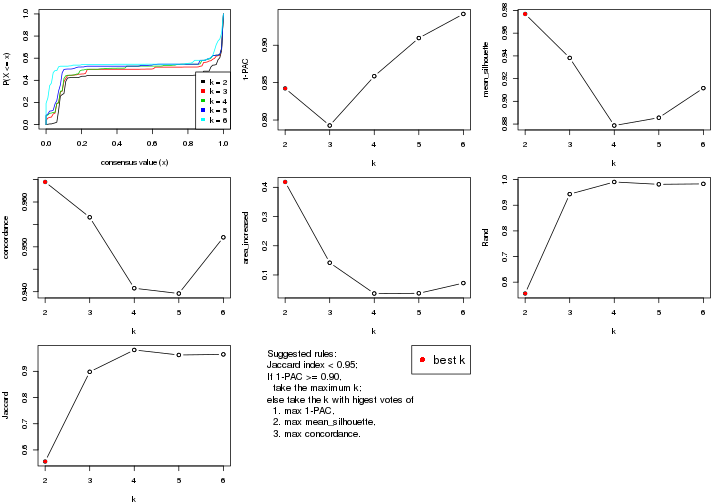
The numeric values for all these statistics can be obtained by get_stats().
get_stats(res)
#> k 1-PAC mean_silhouette concordance area_increased Rand Jaccard
#> 2 2 0.842 0.977 0.964 0.4184 0.556 0.556
#> 3 3 0.793 0.938 0.957 0.1419 0.943 0.898
#> 4 4 0.859 0.879 0.941 0.0365 0.991 0.982
#> 5 5 0.910 0.886 0.940 0.0373 0.982 0.962
#> 6 6 0.942 0.912 0.952 0.0723 0.983 0.965
suggest_best_k() suggests the best \(k\) based on these statistics. The rules are as follows:
suggest_best_k(res)
#> [1] 2
Following shows the table of the partitions (You need to click the show/hide
code output link to see it). The membership matrix (columns with name p*)
is inferred by
clue::cl_consensus()
function with the SE method. Basically the value in the membership matrix
represents the probability to belong to a certain group. The finall class
label for an item is determined with the group with highest probability it
belongs to.
In get_classes() function, the entropy is calculated from the membership
matrix and the silhouette score is calculated from the consensus matrix.
cbind(get_classes(res, k = 2), get_membership(res, k = 2))
#> class entropy silhouette p1 p2
#> GSM159850 1 0.0000 0.987 1.000 0.000
#> GSM159851 1 0.0000 0.987 1.000 0.000
#> GSM159852 1 0.0000 0.987 1.000 0.000
#> GSM159853 1 0.0000 0.987 1.000 0.000
#> GSM159854 1 0.0000 0.987 1.000 0.000
#> GSM159855 1 0.0000 0.987 1.000 0.000
#> GSM159856 1 0.0000 0.987 1.000 0.000
#> GSM159857 1 0.0000 0.987 1.000 0.000
#> GSM159858 1 0.0000 0.987 1.000 0.000
#> GSM159859 1 0.0000 0.987 1.000 0.000
#> GSM159860 1 0.0000 0.987 1.000 0.000
#> GSM159861 1 0.0000 0.987 1.000 0.000
#> GSM159862 1 0.0000 0.987 1.000 0.000
#> GSM159863 1 0.0000 0.987 1.000 0.000
#> GSM159864 1 0.0000 0.987 1.000 0.000
#> GSM159865 1 0.0000 0.987 1.000 0.000
#> GSM159866 1 0.0000 0.987 1.000 0.000
#> GSM159885 1 0.0672 0.983 0.992 0.008
#> GSM159886 1 0.0000 0.987 1.000 0.000
#> GSM159887 1 0.0672 0.983 0.992 0.008
#> GSM159888 2 0.3879 0.984 0.076 0.924
#> GSM159889 2 0.3879 0.984 0.076 0.924
#> GSM159890 2 0.3879 0.984 0.076 0.924
#> GSM159891 2 0.3584 0.981 0.068 0.932
#> GSM159892 2 0.3584 0.981 0.068 0.932
#> GSM159893 2 0.3584 0.981 0.068 0.932
#> GSM159894 1 0.0376 0.985 0.996 0.004
#> GSM159895 1 0.0376 0.985 0.996 0.004
#> GSM159896 1 0.0376 0.985 0.996 0.004
#> GSM159897 2 0.3879 0.984 0.076 0.924
#> GSM159898 2 0.3879 0.984 0.076 0.924
#> GSM159899 2 0.3879 0.984 0.076 0.924
#> GSM159900 2 0.3431 0.978 0.064 0.936
#> GSM159901 2 0.3431 0.978 0.064 0.936
#> GSM159902 1 0.0000 0.987 1.000 0.000
#> GSM159903 1 0.0000 0.987 1.000 0.000
#> GSM159904 1 0.0000 0.987 1.000 0.000
#> GSM159905 1 0.0000 0.987 1.000 0.000
#> GSM159906 1 0.0000 0.987 1.000 0.000
#> GSM159907 1 0.0000 0.987 1.000 0.000
#> GSM159908 1 0.0000 0.987 1.000 0.000
#> GSM159909 1 0.0000 0.987 1.000 0.000
#> GSM159910 1 0.2043 0.967 0.968 0.032
#> GSM159911 1 0.0000 0.987 1.000 0.000
#> GSM159912 1 0.0000 0.987 1.000 0.000
#> GSM159913 1 0.0000 0.987 1.000 0.000
#> GSM159914 1 0.0000 0.987 1.000 0.000
#> GSM159915 1 0.0000 0.987 1.000 0.000
#> GSM159916 1 0.0000 0.987 1.000 0.000
#> GSM159917 1 0.3431 0.928 0.936 0.064
#> GSM159867 1 0.1184 0.977 0.984 0.016
#> GSM159868 1 0.1184 0.976 0.984 0.016
#> GSM159869 1 0.1184 0.976 0.984 0.016
#> GSM159870 2 0.5178 0.963 0.116 0.884
#> GSM159871 2 0.4815 0.975 0.104 0.896
#> GSM159872 1 0.4022 0.929 0.920 0.080
#> GSM159873 2 0.3879 0.983 0.076 0.924
#> GSM159874 2 0.3431 0.978 0.064 0.936
#> GSM159875 2 0.3584 0.981 0.068 0.932
#> GSM159876 1 0.5294 0.857 0.880 0.120
#> GSM159877 1 0.4022 0.929 0.920 0.080
#> GSM159878 1 0.5294 0.857 0.880 0.120
#> GSM159879 2 0.4815 0.975 0.104 0.896
#> GSM159880 2 0.4815 0.975 0.104 0.896
#> GSM159881 2 0.4939 0.971 0.108 0.892
#> GSM159882 2 0.4815 0.975 0.104 0.896
#> GSM159883 2 0.4815 0.975 0.104 0.896
#> GSM159884 2 0.4815 0.975 0.104 0.896
cbind(get_classes(res, k = 3), get_membership(res, k = 3))
#> class entropy silhouette p1 p2 p3
#> GSM159850 1 0.0000 0.978 1.000 0.000 0.000
#> GSM159851 1 0.0000 0.978 1.000 0.000 0.000
#> GSM159852 1 0.0000 0.978 1.000 0.000 0.000
#> GSM159853 1 0.0000 0.978 1.000 0.000 0.000
#> GSM159854 1 0.0000 0.978 1.000 0.000 0.000
#> GSM159855 1 0.0000 0.978 1.000 0.000 0.000
#> GSM159856 1 0.0000 0.978 1.000 0.000 0.000
#> GSM159857 1 0.0000 0.978 1.000 0.000 0.000
#> GSM159858 1 0.0000 0.978 1.000 0.000 0.000
#> GSM159859 1 0.0000 0.978 1.000 0.000 0.000
#> GSM159860 1 0.0000 0.978 1.000 0.000 0.000
#> GSM159861 1 0.0000 0.978 1.000 0.000 0.000
#> GSM159862 1 0.0000 0.978 1.000 0.000 0.000
#> GSM159863 1 0.0000 0.978 1.000 0.000 0.000
#> GSM159864 1 0.0000 0.978 1.000 0.000 0.000
#> GSM159865 1 0.0000 0.978 1.000 0.000 0.000
#> GSM159866 1 0.0000 0.978 1.000 0.000 0.000
#> GSM159885 1 0.0475 0.972 0.992 0.004 0.004
#> GSM159886 1 0.0000 0.978 1.000 0.000 0.000
#> GSM159887 1 0.0475 0.972 0.992 0.004 0.004
#> GSM159888 2 0.2356 0.952 0.072 0.928 0.000
#> GSM159889 2 0.2356 0.952 0.072 0.928 0.000
#> GSM159890 2 0.2356 0.952 0.072 0.928 0.000
#> GSM159891 2 0.1860 0.943 0.052 0.948 0.000
#> GSM159892 2 0.1860 0.943 0.052 0.948 0.000
#> GSM159893 2 0.1860 0.943 0.052 0.948 0.000
#> GSM159894 1 0.0237 0.975 0.996 0.004 0.000
#> GSM159895 1 0.0237 0.975 0.996 0.004 0.000
#> GSM159896 1 0.0237 0.975 0.996 0.004 0.000
#> GSM159897 2 0.2356 0.952 0.072 0.928 0.000
#> GSM159898 2 0.2356 0.952 0.072 0.928 0.000
#> GSM159899 2 0.2356 0.952 0.072 0.928 0.000
#> GSM159900 2 0.0747 0.870 0.000 0.984 0.016
#> GSM159901 2 0.0747 0.870 0.000 0.984 0.016
#> GSM159902 1 0.0000 0.978 1.000 0.000 0.000
#> GSM159903 1 0.0000 0.978 1.000 0.000 0.000
#> GSM159904 1 0.0000 0.978 1.000 0.000 0.000
#> GSM159905 1 0.0000 0.978 1.000 0.000 0.000
#> GSM159906 1 0.0000 0.978 1.000 0.000 0.000
#> GSM159907 1 0.0000 0.978 1.000 0.000 0.000
#> GSM159908 1 0.0000 0.978 1.000 0.000 0.000
#> GSM159909 1 0.0000 0.978 1.000 0.000 0.000
#> GSM159910 1 0.6451 0.134 0.608 0.008 0.384
#> GSM159911 1 0.0000 0.978 1.000 0.000 0.000
#> GSM159912 1 0.0000 0.978 1.000 0.000 0.000
#> GSM159913 1 0.0000 0.978 1.000 0.000 0.000
#> GSM159914 1 0.0000 0.978 1.000 0.000 0.000
#> GSM159915 1 0.0000 0.978 1.000 0.000 0.000
#> GSM159916 1 0.0000 0.978 1.000 0.000 0.000
#> GSM159917 3 0.1289 0.712 0.032 0.000 0.968
#> GSM159867 1 0.0747 0.963 0.984 0.016 0.000
#> GSM159868 1 0.0747 0.963 0.984 0.016 0.000
#> GSM159869 1 0.0747 0.963 0.984 0.016 0.000
#> GSM159870 2 0.3921 0.924 0.112 0.872 0.016
#> GSM159871 2 0.3690 0.940 0.100 0.884 0.016
#> GSM159872 3 0.5731 0.855 0.228 0.020 0.752
#> GSM159873 2 0.2651 0.947 0.060 0.928 0.012
#> GSM159874 2 0.0983 0.886 0.004 0.980 0.016
#> GSM159875 2 0.2280 0.944 0.052 0.940 0.008
#> GSM159876 1 0.3769 0.813 0.880 0.104 0.016
#> GSM159877 3 0.5731 0.855 0.228 0.020 0.752
#> GSM159878 1 0.3769 0.813 0.880 0.104 0.016
#> GSM159879 2 0.3690 0.940 0.100 0.884 0.016
#> GSM159880 2 0.3690 0.940 0.100 0.884 0.016
#> GSM159881 2 0.3769 0.935 0.104 0.880 0.016
#> GSM159882 2 0.3690 0.940 0.100 0.884 0.016
#> GSM159883 2 0.3690 0.940 0.100 0.884 0.016
#> GSM159884 2 0.3690 0.940 0.100 0.884 0.016
cbind(get_classes(res, k = 4), get_membership(res, k = 4))
#> class entropy silhouette p1 p2 p3 p4
#> GSM159850 1 0.0000 0.975 1.000 0.000 0.000 0.000
#> GSM159851 1 0.0000 0.975 1.000 0.000 0.000 0.000
#> GSM159852 1 0.0000 0.975 1.000 0.000 0.000 0.000
#> GSM159853 1 0.0000 0.975 1.000 0.000 0.000 0.000
#> GSM159854 1 0.0000 0.975 1.000 0.000 0.000 0.000
#> GSM159855 1 0.0000 0.975 1.000 0.000 0.000 0.000
#> GSM159856 1 0.0000 0.975 1.000 0.000 0.000 0.000
#> GSM159857 1 0.0000 0.975 1.000 0.000 0.000 0.000
#> GSM159858 1 0.0000 0.975 1.000 0.000 0.000 0.000
#> GSM159859 1 0.0000 0.975 1.000 0.000 0.000 0.000
#> GSM159860 1 0.0000 0.975 1.000 0.000 0.000 0.000
#> GSM159861 1 0.0000 0.975 1.000 0.000 0.000 0.000
#> GSM159862 1 0.0000 0.975 1.000 0.000 0.000 0.000
#> GSM159863 1 0.0000 0.975 1.000 0.000 0.000 0.000
#> GSM159864 1 0.0000 0.975 1.000 0.000 0.000 0.000
#> GSM159865 1 0.0000 0.975 1.000 0.000 0.000 0.000
#> GSM159866 1 0.0000 0.975 1.000 0.000 0.000 0.000
#> GSM159885 1 0.0376 0.969 0.992 0.004 0.000 0.004
#> GSM159886 1 0.0000 0.975 1.000 0.000 0.000 0.000
#> GSM159887 1 0.0376 0.969 0.992 0.004 0.000 0.004
#> GSM159888 2 0.1867 0.895 0.072 0.928 0.000 0.000
#> GSM159889 2 0.1867 0.895 0.072 0.928 0.000 0.000
#> GSM159890 2 0.1867 0.895 0.072 0.928 0.000 0.000
#> GSM159891 2 0.1661 0.874 0.052 0.944 0.000 0.004
#> GSM159892 2 0.1661 0.874 0.052 0.944 0.000 0.004
#> GSM159893 2 0.1661 0.874 0.052 0.944 0.000 0.004
#> GSM159894 1 0.0188 0.972 0.996 0.004 0.000 0.000
#> GSM159895 1 0.0188 0.972 0.996 0.004 0.000 0.000
#> GSM159896 1 0.0188 0.972 0.996 0.004 0.000 0.000
#> GSM159897 2 0.1867 0.895 0.072 0.928 0.000 0.000
#> GSM159898 2 0.1867 0.895 0.072 0.928 0.000 0.000
#> GSM159899 2 0.1867 0.895 0.072 0.928 0.000 0.000
#> GSM159900 2 0.3937 0.426 0.000 0.800 0.012 0.188
#> GSM159901 2 0.3937 0.426 0.000 0.800 0.012 0.188
#> GSM159902 1 0.0000 0.975 1.000 0.000 0.000 0.000
#> GSM159903 1 0.0000 0.975 1.000 0.000 0.000 0.000
#> GSM159904 1 0.0000 0.975 1.000 0.000 0.000 0.000
#> GSM159905 1 0.0000 0.975 1.000 0.000 0.000 0.000
#> GSM159906 1 0.0000 0.975 1.000 0.000 0.000 0.000
#> GSM159907 1 0.0000 0.975 1.000 0.000 0.000 0.000
#> GSM159908 1 0.0000 0.975 1.000 0.000 0.000 0.000
#> GSM159909 1 0.0000 0.975 1.000 0.000 0.000 0.000
#> GSM159910 1 0.7375 -0.361 0.452 0.004 0.404 0.140
#> GSM159911 1 0.0000 0.975 1.000 0.000 0.000 0.000
#> GSM159912 1 0.0000 0.975 1.000 0.000 0.000 0.000
#> GSM159913 1 0.0000 0.975 1.000 0.000 0.000 0.000
#> GSM159914 1 0.0000 0.975 1.000 0.000 0.000 0.000
#> GSM159915 1 0.0000 0.975 1.000 0.000 0.000 0.000
#> GSM159916 1 0.0000 0.975 1.000 0.000 0.000 0.000
#> GSM159917 3 0.1118 0.431 0.000 0.000 0.964 0.036
#> GSM159867 1 0.0657 0.961 0.984 0.012 0.000 0.004
#> GSM159868 1 0.0672 0.961 0.984 0.008 0.000 0.008
#> GSM159869 1 0.0672 0.961 0.984 0.008 0.000 0.008
#> GSM159870 2 0.3758 0.862 0.104 0.848 0.000 0.048
#> GSM159871 2 0.3570 0.883 0.092 0.860 0.000 0.048
#> GSM159872 3 0.4119 0.750 0.188 0.004 0.796 0.012
#> GSM159873 2 0.2830 0.881 0.060 0.900 0.000 0.040
#> GSM159874 4 0.4713 0.000 0.000 0.360 0.000 0.640
#> GSM159875 2 0.2844 0.871 0.052 0.900 0.000 0.048
#> GSM159876 1 0.3279 0.809 0.872 0.096 0.000 0.032
#> GSM159877 3 0.4119 0.750 0.188 0.004 0.796 0.012
#> GSM159878 1 0.3279 0.809 0.872 0.096 0.000 0.032
#> GSM159879 2 0.3570 0.883 0.092 0.860 0.000 0.048
#> GSM159880 2 0.3570 0.883 0.092 0.860 0.000 0.048
#> GSM159881 2 0.3634 0.877 0.096 0.856 0.000 0.048
#> GSM159882 2 0.3570 0.883 0.092 0.860 0.000 0.048
#> GSM159883 2 0.3570 0.883 0.092 0.860 0.000 0.048
#> GSM159884 2 0.3570 0.883 0.092 0.860 0.000 0.048
cbind(get_classes(res, k = 5), get_membership(res, k = 5))
#> class entropy silhouette p1 p2 p3 p4 p5
#> GSM159850 1 0.0000 0.990 1.000 0.000 0.000 0.000 0.000
#> GSM159851 1 0.0000 0.990 1.000 0.000 0.000 0.000 0.000
#> GSM159852 1 0.0000 0.990 1.000 0.000 0.000 0.000 0.000
#> GSM159853 1 0.0000 0.990 1.000 0.000 0.000 0.000 0.000
#> GSM159854 1 0.0000 0.990 1.000 0.000 0.000 0.000 0.000
#> GSM159855 1 0.0000 0.990 1.000 0.000 0.000 0.000 0.000
#> GSM159856 1 0.0000 0.990 1.000 0.000 0.000 0.000 0.000
#> GSM159857 1 0.0000 0.990 1.000 0.000 0.000 0.000 0.000
#> GSM159858 1 0.0000 0.990 1.000 0.000 0.000 0.000 0.000
#> GSM159859 1 0.0000 0.990 1.000 0.000 0.000 0.000 0.000
#> GSM159860 1 0.0000 0.990 1.000 0.000 0.000 0.000 0.000
#> GSM159861 1 0.0000 0.990 1.000 0.000 0.000 0.000 0.000
#> GSM159862 1 0.0000 0.990 1.000 0.000 0.000 0.000 0.000
#> GSM159863 1 0.0000 0.990 1.000 0.000 0.000 0.000 0.000
#> GSM159864 1 0.0000 0.990 1.000 0.000 0.000 0.000 0.000
#> GSM159865 1 0.0000 0.990 1.000 0.000 0.000 0.000 0.000
#> GSM159866 1 0.0000 0.990 1.000 0.000 0.000 0.000 0.000
#> GSM159885 1 0.0324 0.984 0.992 0.004 0.000 0.000 0.004
#> GSM159886 1 0.0000 0.990 1.000 0.000 0.000 0.000 0.000
#> GSM159887 1 0.0324 0.984 0.992 0.004 0.000 0.000 0.004
#> GSM159888 2 0.1544 0.900 0.068 0.932 0.000 0.000 0.000
#> GSM159889 2 0.1544 0.900 0.068 0.932 0.000 0.000 0.000
#> GSM159890 2 0.1544 0.900 0.068 0.932 0.000 0.000 0.000
#> GSM159891 2 0.1357 0.883 0.048 0.948 0.000 0.000 0.004
#> GSM159892 2 0.1357 0.883 0.048 0.948 0.000 0.000 0.004
#> GSM159893 2 0.1357 0.883 0.048 0.948 0.000 0.000 0.004
#> GSM159894 1 0.0162 0.987 0.996 0.004 0.000 0.000 0.000
#> GSM159895 1 0.0162 0.987 0.996 0.004 0.000 0.000 0.000
#> GSM159896 1 0.0162 0.987 0.996 0.004 0.000 0.000 0.000
#> GSM159897 2 0.1544 0.900 0.068 0.932 0.000 0.000 0.000
#> GSM159898 2 0.1544 0.900 0.068 0.932 0.000 0.000 0.000
#> GSM159899 2 0.1544 0.900 0.068 0.932 0.000 0.000 0.000
#> GSM159900 2 0.5378 0.285 0.000 0.668 0.000 0.160 0.172
#> GSM159901 2 0.5378 0.285 0.000 0.668 0.000 0.160 0.172
#> GSM159902 1 0.0000 0.990 1.000 0.000 0.000 0.000 0.000
#> GSM159903 1 0.0000 0.990 1.000 0.000 0.000 0.000 0.000
#> GSM159904 1 0.0000 0.990 1.000 0.000 0.000 0.000 0.000
#> GSM159905 1 0.0000 0.990 1.000 0.000 0.000 0.000 0.000
#> GSM159906 1 0.0000 0.990 1.000 0.000 0.000 0.000 0.000
#> GSM159907 1 0.0000 0.990 1.000 0.000 0.000 0.000 0.000
#> GSM159908 1 0.0000 0.990 1.000 0.000 0.000 0.000 0.000
#> GSM159909 1 0.0000 0.990 1.000 0.000 0.000 0.000 0.000
#> GSM159910 5 0.3242 0.000 0.012 0.000 0.172 0.000 0.816
#> GSM159911 1 0.0000 0.990 1.000 0.000 0.000 0.000 0.000
#> GSM159912 1 0.0000 0.990 1.000 0.000 0.000 0.000 0.000
#> GSM159913 1 0.0000 0.990 1.000 0.000 0.000 0.000 0.000
#> GSM159914 1 0.0000 0.990 1.000 0.000 0.000 0.000 0.000
#> GSM159915 1 0.0000 0.990 1.000 0.000 0.000 0.000 0.000
#> GSM159916 1 0.0000 0.990 1.000 0.000 0.000 0.000 0.000
#> GSM159917 3 0.0290 0.280 0.000 0.000 0.992 0.000 0.008
#> GSM159867 1 0.0566 0.977 0.984 0.012 0.000 0.004 0.000
#> GSM159868 1 0.0613 0.977 0.984 0.008 0.004 0.004 0.000
#> GSM159869 1 0.0613 0.977 0.984 0.008 0.004 0.004 0.000
#> GSM159870 2 0.3500 0.876 0.096 0.852 0.008 0.012 0.032
#> GSM159871 2 0.3332 0.892 0.084 0.864 0.008 0.012 0.032
#> GSM159872 3 0.5453 0.626 0.076 0.004 0.644 0.004 0.272
#> GSM159873 2 0.2724 0.886 0.052 0.900 0.004 0.020 0.024
#> GSM159874 4 0.2732 0.000 0.000 0.160 0.000 0.840 0.000
#> GSM159875 2 0.2705 0.879 0.048 0.900 0.004 0.036 0.012
#> GSM159876 1 0.3037 0.824 0.864 0.100 0.004 0.000 0.032
#> GSM159877 3 0.5453 0.626 0.076 0.004 0.644 0.004 0.272
#> GSM159878 1 0.3037 0.824 0.864 0.100 0.004 0.000 0.032
#> GSM159879 2 0.3332 0.892 0.084 0.864 0.008 0.012 0.032
#> GSM159880 2 0.3332 0.892 0.084 0.864 0.008 0.012 0.032
#> GSM159881 2 0.3389 0.887 0.088 0.860 0.008 0.012 0.032
#> GSM159882 2 0.3332 0.892 0.084 0.864 0.008 0.012 0.032
#> GSM159883 2 0.3332 0.892 0.084 0.864 0.008 0.012 0.032
#> GSM159884 2 0.3332 0.892 0.084 0.864 0.008 0.012 0.032
cbind(get_classes(res, k = 6), get_membership(res, k = 6))
#> class entropy silhouette p1 p2 p3 p4 p5 p6
#> GSM159850 1 0.0146 0.976 0.996 0.000 0.000 0.000 0.000 0.004
#> GSM159851 1 0.0260 0.975 0.992 0.000 0.000 0.000 0.000 0.008
#> GSM159852 1 0.0146 0.977 0.996 0.000 0.000 0.000 0.004 0.000
#> GSM159853 1 0.0146 0.977 0.996 0.000 0.000 0.000 0.004 0.000
#> GSM159854 1 0.0146 0.977 0.996 0.000 0.000 0.000 0.004 0.000
#> GSM159855 1 0.0146 0.977 0.996 0.000 0.000 0.000 0.004 0.000
#> GSM159856 1 0.0146 0.977 0.996 0.000 0.000 0.000 0.004 0.000
#> GSM159857 1 0.0146 0.977 0.996 0.000 0.000 0.000 0.004 0.000
#> GSM159858 1 0.0146 0.977 0.996 0.000 0.000 0.000 0.004 0.000
#> GSM159859 1 0.0146 0.977 0.996 0.000 0.000 0.000 0.004 0.000
#> GSM159860 1 0.0146 0.977 0.996 0.000 0.000 0.000 0.004 0.000
#> GSM159861 1 0.0146 0.977 0.996 0.000 0.000 0.000 0.004 0.000
#> GSM159862 1 0.0146 0.977 0.996 0.000 0.000 0.000 0.004 0.000
#> GSM159863 1 0.0146 0.977 0.996 0.000 0.000 0.000 0.004 0.000
#> GSM159864 1 0.0146 0.977 0.996 0.000 0.000 0.000 0.004 0.000
#> GSM159865 1 0.0146 0.977 0.996 0.000 0.000 0.000 0.004 0.000
#> GSM159866 1 0.0146 0.977 0.996 0.000 0.000 0.000 0.004 0.000
#> GSM159885 1 0.1495 0.952 0.948 0.008 0.000 0.020 0.004 0.020
#> GSM159886 1 0.0146 0.977 0.996 0.000 0.000 0.000 0.004 0.000
#> GSM159887 1 0.1495 0.952 0.948 0.008 0.000 0.020 0.004 0.020
#> GSM159888 2 0.1480 0.955 0.020 0.940 0.000 0.040 0.000 0.000
#> GSM159889 2 0.1480 0.955 0.020 0.940 0.000 0.040 0.000 0.000
#> GSM159890 2 0.1480 0.955 0.020 0.940 0.000 0.040 0.000 0.000
#> GSM159891 2 0.1082 0.940 0.000 0.956 0.000 0.040 0.000 0.004
#> GSM159892 2 0.1082 0.940 0.000 0.956 0.000 0.040 0.000 0.004
#> GSM159893 2 0.1082 0.940 0.000 0.956 0.000 0.040 0.000 0.004
#> GSM159894 1 0.1007 0.963 0.968 0.004 0.000 0.016 0.004 0.008
#> GSM159895 1 0.1293 0.956 0.956 0.004 0.000 0.016 0.004 0.020
#> GSM159896 1 0.1293 0.956 0.956 0.004 0.000 0.016 0.004 0.020
#> GSM159897 2 0.1480 0.955 0.020 0.940 0.000 0.040 0.000 0.000
#> GSM159898 2 0.1480 0.955 0.020 0.940 0.000 0.040 0.000 0.000
#> GSM159899 2 0.1480 0.955 0.020 0.940 0.000 0.040 0.000 0.000
#> GSM159900 4 0.0632 1.000 0.000 0.024 0.000 0.976 0.000 0.000
#> GSM159901 4 0.0632 1.000 0.000 0.024 0.000 0.976 0.000 0.000
#> GSM159902 1 0.0837 0.964 0.972 0.000 0.000 0.020 0.004 0.004
#> GSM159903 1 0.0291 0.975 0.992 0.000 0.000 0.004 0.000 0.004
#> GSM159904 1 0.0405 0.973 0.988 0.000 0.000 0.004 0.000 0.008
#> GSM159905 1 0.0000 0.977 1.000 0.000 0.000 0.000 0.000 0.000
#> GSM159906 1 0.0146 0.977 0.996 0.000 0.000 0.000 0.004 0.000
#> GSM159907 1 0.0146 0.977 0.996 0.000 0.000 0.000 0.004 0.000
#> GSM159908 1 0.0146 0.976 0.996 0.000 0.000 0.004 0.000 0.000
#> GSM159909 1 0.0291 0.975 0.992 0.000 0.000 0.004 0.000 0.004
#> GSM159910 6 0.3695 0.000 0.000 0.000 0.376 0.000 0.000 0.624
#> GSM159911 1 0.1237 0.956 0.956 0.000 0.000 0.020 0.004 0.020
#> GSM159912 1 0.0000 0.977 1.000 0.000 0.000 0.000 0.000 0.000
#> GSM159913 1 0.0291 0.975 0.992 0.000 0.000 0.004 0.000 0.004
#> GSM159914 1 0.0000 0.977 1.000 0.000 0.000 0.000 0.000 0.000
#> GSM159915 1 0.0000 0.977 1.000 0.000 0.000 0.000 0.000 0.000
#> GSM159916 1 0.0000 0.977 1.000 0.000 0.000 0.000 0.000 0.000
#> GSM159917 3 0.3620 0.321 0.000 0.000 0.648 0.000 0.000 0.352
#> GSM159867 1 0.1508 0.956 0.948 0.020 0.000 0.016 0.004 0.012
#> GSM159868 1 0.1652 0.949 0.944 0.012 0.004 0.016 0.004 0.020
#> GSM159869 1 0.1652 0.949 0.944 0.012 0.004 0.016 0.004 0.020
#> GSM159870 2 0.1554 0.937 0.044 0.940 0.004 0.004 0.000 0.008
#> GSM159871 2 0.1338 0.951 0.032 0.952 0.004 0.004 0.000 0.008
#> GSM159872 3 0.1838 0.632 0.068 0.016 0.916 0.000 0.000 0.000
#> GSM159873 2 0.0405 0.942 0.000 0.988 0.000 0.000 0.008 0.004
#> GSM159874 5 0.0260 0.000 0.000 0.008 0.000 0.000 0.992 0.000
#> GSM159875 2 0.1036 0.936 0.000 0.964 0.000 0.008 0.024 0.004
#> GSM159876 1 0.3056 0.773 0.828 0.152 0.004 0.004 0.004 0.008
#> GSM159877 3 0.1838 0.632 0.068 0.016 0.916 0.000 0.000 0.000
#> GSM159878 1 0.3056 0.773 0.828 0.152 0.004 0.004 0.004 0.008
#> GSM159879 2 0.1338 0.951 0.032 0.952 0.004 0.004 0.000 0.008
#> GSM159880 2 0.1338 0.951 0.032 0.952 0.004 0.004 0.000 0.008
#> GSM159881 2 0.1413 0.947 0.036 0.948 0.004 0.004 0.000 0.008
#> GSM159882 2 0.1338 0.951 0.032 0.952 0.004 0.004 0.000 0.008
#> GSM159883 2 0.1338 0.951 0.032 0.952 0.004 0.004 0.000 0.008
#> GSM159884 2 0.1338 0.951 0.032 0.952 0.004 0.004 0.000 0.008
Heatmaps for the consensus matrix. It visualizes the probability of two samples to be in a same group.
consensus_heatmap(res, k = 2)
consensus_heatmap(res, k = 3)
consensus_heatmap(res, k = 4)
consensus_heatmap(res, k = 5)
consensus_heatmap(res, k = 6)
Heatmaps for the membership of samples in all partitions to see how consistent they are:
membership_heatmap(res, k = 2)
membership_heatmap(res, k = 3)
membership_heatmap(res, k = 4)
membership_heatmap(res, k = 5)
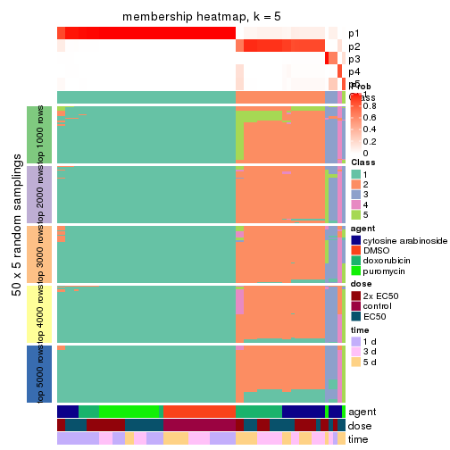
membership_heatmap(res, k = 6)
As soon as we have had the classes for columns, we can look for signatures which are significantly different between classes which can be candidate marks for certain classes. Following are the heatmaps for signatures.
Signature heatmaps where rows are scaled:
get_signatures(res, k = 2)
get_signatures(res, k = 3)
get_signatures(res, k = 4)
get_signatures(res, k = 5)
get_signatures(res, k = 6)
Signature heatmaps where rows are not scaled:
get_signatures(res, k = 2, scale_rows = FALSE)
get_signatures(res, k = 3, scale_rows = FALSE)
get_signatures(res, k = 4, scale_rows = FALSE)
get_signatures(res, k = 5, scale_rows = FALSE)

get_signatures(res, k = 6, scale_rows = FALSE)
Compare the overlap of signatures from different k:
compare_signatures(res)
get_signature() returns a data frame invisibly. TO get the list of signatures, the function
call should be assigned to a variable explicitly. In following code, if plot argument is set
to FALSE, no heatmap is plotted while only the differential analysis is performed.
# code only for demonstration
tb = get_signature(res, k = ..., plot = FALSE)
An example of the output of tb is:
#> which_row fdr mean_1 mean_2 scaled_mean_1 scaled_mean_2 km
#> 1 38 0.042760348 8.373488 9.131774 -0.5533452 0.5164555 1
#> 2 40 0.018707592 7.106213 8.469186 -0.6173731 0.5762149 1
#> 3 55 0.019134737 10.221463 11.207825 -0.6159697 0.5749050 1
#> 4 59 0.006059896 5.921854 7.869574 -0.6899429 0.6439467 1
#> 5 60 0.018055526 8.928898 10.211722 -0.6204761 0.5791110 1
#> 6 98 0.009384629 15.714769 14.887706 0.6635654 -0.6193277 2
...
The columns in tb are:
which_row: row indices corresponding to the input matrix.fdr: FDR for the differential test. mean_x: The mean value in group x.scaled_mean_x: The mean value in group x after rows are scaled.km: Row groups if k-means clustering is applied to rows.UMAP plot which shows how samples are separated.
dimension_reduction(res, k = 2, method = "UMAP")
dimension_reduction(res, k = 3, method = "UMAP")
dimension_reduction(res, k = 4, method = "UMAP")
dimension_reduction(res, k = 5, method = "UMAP")
dimension_reduction(res, k = 6, method = "UMAP")
Following heatmap shows how subgroups are split when increasing k:
collect_classes(res)
Test correlation between subgroups and known annotations. If the known annotation is numeric, one-way ANOVA test is applied, and if the known annotation is discrete, chi-squared contingency table test is applied.
test_to_known_factors(res)
#> n agent(p) dose(p) time(p) k
#> MAD:hclust 68 9.76e-07 0.00410 0.000133 2
#> MAD:hclust 67 4.02e-06 0.00641 0.000743 3
#> MAD:hclust 63 6.36e-06 0.01960 0.001658 4
#> MAD:hclust 63 6.36e-06 0.01960 0.001658 5
#> MAD:hclust 65 6.85e-06 0.01557 0.000828 6
If matrix rows can be associated to genes, consider to use functional_enrichment(res,
...) to perform function enrichment for the signature genes. See this vignette for more detailed explanations.
The object with results only for a single top-value method and a single partition method can be extracted as:
res = res_list["MAD", "kmeans"]
# you can also extract it by
# res = res_list["MAD:kmeans"]
A summary of res and all the functions that can be applied to it:
res
#> A 'ConsensusPartition' object with k = 2, 3, 4, 5, 6.
#> On a matrix with 21796 rows and 68 columns.
#> Top rows (1000, 2000, 3000, 4000, 5000) are extracted by 'MAD' method.
#> Subgroups are detected by 'kmeans' method.
#> Performed in total 1250 partitions by row resampling.
#> Best k for subgroups seems to be 2.
#>
#> Following methods can be applied to this 'ConsensusPartition' object:
#> [1] "cola_report" "collect_classes" "collect_plots"
#> [4] "collect_stats" "colnames" "compare_signatures"
#> [7] "consensus_heatmap" "dimension_reduction" "functional_enrichment"
#> [10] "get_anno_col" "get_anno" "get_classes"
#> [13] "get_consensus" "get_matrix" "get_membership"
#> [16] "get_param" "get_signatures" "get_stats"
#> [19] "is_best_k" "is_stable_k" "membership_heatmap"
#> [22] "ncol" "nrow" "plot_ecdf"
#> [25] "rownames" "select_partition_number" "show"
#> [28] "suggest_best_k" "test_to_known_factors"
collect_plots() function collects all the plots made from res for all k (number of partitions)
into one single page to provide an easy and fast comparison between different k.
collect_plots(res)
The plots are:
k and the heatmap of
predicted classes for each k.k.k.k.All the plots in panels can be made by individual functions and they are plotted later in this section.
select_partition_number() produces several plots showing different
statistics for choosing “optimized” k. There are following statistics:
k;k, the area increased is defined as \(A_k - A_{k-1}\).The detailed explanations of these statistics can be found in the cola vignette.
Generally speaking, lower PAC score, higher mean silhouette score or higher
concordance corresponds to better partition. Rand index and Jaccard index
measure how similar the current partition is compared to partition with k-1.
If they are too similar, we won't accept k is better than k-1.
select_partition_number(res)
The numeric values for all these statistics can be obtained by get_stats().
get_stats(res)
#> k 1-PAC mean_silhouette concordance area_increased Rand Jaccard
#> 2 2 1.000 0.992 0.995 0.4562 0.546 0.546
#> 3 3 0.674 0.772 0.878 0.2926 0.914 0.844
#> 4 4 0.540 0.628 0.775 0.1635 0.841 0.672
#> 5 5 0.608 0.684 0.754 0.0816 0.881 0.666
#> 6 6 0.693 0.648 0.745 0.0553 0.984 0.935
suggest_best_k() suggests the best \(k\) based on these statistics. The rules are as follows:
suggest_best_k(res)
#> [1] 2
Following shows the table of the partitions (You need to click the show/hide
code output link to see it). The membership matrix (columns with name p*)
is inferred by
clue::cl_consensus()
function with the SE method. Basically the value in the membership matrix
represents the probability to belong to a certain group. The finall class
label for an item is determined with the group with highest probability it
belongs to.
In get_classes() function, the entropy is calculated from the membership
matrix and the silhouette score is calculated from the consensus matrix.
cbind(get_classes(res, k = 2), get_membership(res, k = 2))
#> class entropy silhouette p1 p2
#> GSM159850 1 0.0000 0.994 1.000 0.000
#> GSM159851 1 0.0000 0.994 1.000 0.000
#> GSM159852 1 0.0000 0.994 1.000 0.000
#> GSM159853 1 0.0000 0.994 1.000 0.000
#> GSM159854 1 0.0000 0.994 1.000 0.000
#> GSM159855 1 0.0000 0.994 1.000 0.000
#> GSM159856 1 0.0000 0.994 1.000 0.000
#> GSM159857 1 0.0000 0.994 1.000 0.000
#> GSM159858 1 0.0000 0.994 1.000 0.000
#> GSM159859 1 0.0000 0.994 1.000 0.000
#> GSM159860 1 0.0000 0.994 1.000 0.000
#> GSM159861 1 0.0376 0.991 0.996 0.004
#> GSM159862 1 0.0376 0.991 0.996 0.004
#> GSM159863 1 0.0376 0.991 0.996 0.004
#> GSM159864 1 0.0376 0.991 0.996 0.004
#> GSM159865 1 0.0376 0.991 0.996 0.004
#> GSM159866 1 0.0376 0.991 0.996 0.004
#> GSM159885 1 0.0000 0.994 1.000 0.000
#> GSM159886 1 0.0000 0.994 1.000 0.000
#> GSM159887 1 0.0000 0.994 1.000 0.000
#> GSM159888 2 0.0376 1.000 0.004 0.996
#> GSM159889 2 0.0376 1.000 0.004 0.996
#> GSM159890 2 0.0376 1.000 0.004 0.996
#> GSM159891 2 0.0376 1.000 0.004 0.996
#> GSM159892 2 0.0376 1.000 0.004 0.996
#> GSM159893 2 0.0376 1.000 0.004 0.996
#> GSM159894 1 0.0000 0.994 1.000 0.000
#> GSM159895 1 0.0000 0.994 1.000 0.000
#> GSM159896 1 0.0000 0.994 1.000 0.000
#> GSM159897 2 0.0376 1.000 0.004 0.996
#> GSM159898 2 0.0376 1.000 0.004 0.996
#> GSM159899 2 0.0376 1.000 0.004 0.996
#> GSM159900 2 0.0376 1.000 0.004 0.996
#> GSM159901 2 0.0376 1.000 0.004 0.996
#> GSM159902 1 0.0000 0.994 1.000 0.000
#> GSM159903 1 0.0000 0.994 1.000 0.000
#> GSM159904 1 0.0000 0.994 1.000 0.000
#> GSM159905 1 0.0000 0.994 1.000 0.000
#> GSM159906 1 0.0000 0.994 1.000 0.000
#> GSM159907 1 0.0000 0.994 1.000 0.000
#> GSM159908 1 0.0000 0.994 1.000 0.000
#> GSM159909 1 0.0000 0.994 1.000 0.000
#> GSM159910 1 0.5946 0.836 0.856 0.144
#> GSM159911 1 0.0000 0.994 1.000 0.000
#> GSM159912 1 0.0000 0.994 1.000 0.000
#> GSM159913 1 0.0000 0.994 1.000 0.000
#> GSM159914 1 0.0000 0.994 1.000 0.000
#> GSM159915 1 0.0000 0.994 1.000 0.000
#> GSM159916 1 0.0000 0.994 1.000 0.000
#> GSM159917 1 0.2423 0.957 0.960 0.040
#> GSM159867 1 0.0000 0.994 1.000 0.000
#> GSM159868 1 0.0000 0.994 1.000 0.000
#> GSM159869 1 0.0000 0.994 1.000 0.000
#> GSM159870 2 0.0376 1.000 0.004 0.996
#> GSM159871 2 0.0376 1.000 0.004 0.996
#> GSM159872 2 0.0376 1.000 0.004 0.996
#> GSM159873 2 0.0376 1.000 0.004 0.996
#> GSM159874 2 0.0376 1.000 0.004 0.996
#> GSM159875 2 0.0376 1.000 0.004 0.996
#> GSM159876 1 0.0000 0.994 1.000 0.000
#> GSM159877 1 0.3584 0.928 0.932 0.068
#> GSM159878 1 0.0000 0.994 1.000 0.000
#> GSM159879 2 0.0376 1.000 0.004 0.996
#> GSM159880 2 0.0376 1.000 0.004 0.996
#> GSM159881 2 0.0376 1.000 0.004 0.996
#> GSM159882 2 0.0376 1.000 0.004 0.996
#> GSM159883 2 0.0376 1.000 0.004 0.996
#> GSM159884 2 0.0376 1.000 0.004 0.996
cbind(get_classes(res, k = 3), get_membership(res, k = 3))
#> class entropy silhouette p1 p2 p3
#> GSM159850 1 0.0424 0.860 0.992 0.000 0.008
#> GSM159851 1 0.0424 0.860 0.992 0.000 0.008
#> GSM159852 1 0.0747 0.858 0.984 0.000 0.016
#> GSM159853 1 0.0592 0.859 0.988 0.000 0.012
#> GSM159854 1 0.0237 0.859 0.996 0.000 0.004
#> GSM159855 1 0.0747 0.858 0.984 0.000 0.016
#> GSM159856 1 0.1163 0.855 0.972 0.000 0.028
#> GSM159857 1 0.1163 0.855 0.972 0.000 0.028
#> GSM159858 1 0.1163 0.855 0.972 0.000 0.028
#> GSM159859 1 0.1163 0.855 0.972 0.000 0.028
#> GSM159860 1 0.1163 0.855 0.972 0.000 0.028
#> GSM159861 1 0.4504 0.780 0.804 0.000 0.196
#> GSM159862 1 0.4654 0.774 0.792 0.000 0.208
#> GSM159863 1 0.4605 0.776 0.796 0.000 0.204
#> GSM159864 1 0.4887 0.748 0.772 0.000 0.228
#> GSM159865 1 0.4887 0.748 0.772 0.000 0.228
#> GSM159866 1 0.4887 0.748 0.772 0.000 0.228
#> GSM159885 1 0.6079 0.500 0.612 0.000 0.388
#> GSM159886 1 0.0237 0.859 0.996 0.000 0.004
#> GSM159887 1 0.6008 0.529 0.628 0.000 0.372
#> GSM159888 2 0.0000 0.892 0.000 1.000 0.000
#> GSM159889 2 0.0000 0.892 0.000 1.000 0.000
#> GSM159890 2 0.0000 0.892 0.000 1.000 0.000
#> GSM159891 2 0.0592 0.890 0.000 0.988 0.012
#> GSM159892 2 0.0592 0.890 0.000 0.988 0.012
#> GSM159893 2 0.0592 0.890 0.000 0.988 0.012
#> GSM159894 1 0.5905 0.557 0.648 0.000 0.352
#> GSM159895 1 0.6079 0.500 0.612 0.000 0.388
#> GSM159896 1 0.6079 0.500 0.612 0.000 0.388
#> GSM159897 2 0.0592 0.890 0.000 0.988 0.012
#> GSM159898 2 0.0424 0.891 0.000 0.992 0.008
#> GSM159899 2 0.0592 0.890 0.000 0.988 0.012
#> GSM159900 3 0.6308 0.127 0.000 0.492 0.508
#> GSM159901 2 0.6274 -0.103 0.000 0.544 0.456
#> GSM159902 1 0.2066 0.850 0.940 0.000 0.060
#> GSM159903 1 0.1031 0.858 0.976 0.000 0.024
#> GSM159904 1 0.1289 0.858 0.968 0.000 0.032
#> GSM159905 1 0.0747 0.859 0.984 0.000 0.016
#> GSM159906 1 0.0747 0.859 0.984 0.000 0.016
#> GSM159907 1 0.0747 0.859 0.984 0.000 0.016
#> GSM159908 1 0.1411 0.858 0.964 0.000 0.036
#> GSM159909 1 0.1529 0.857 0.960 0.000 0.040
#> GSM159910 3 0.3966 0.756 0.100 0.024 0.876
#> GSM159911 1 0.6045 0.536 0.620 0.000 0.380
#> GSM159912 1 0.0747 0.859 0.984 0.000 0.016
#> GSM159913 1 0.1031 0.858 0.976 0.000 0.024
#> GSM159914 1 0.0747 0.859 0.984 0.000 0.016
#> GSM159915 1 0.0747 0.859 0.984 0.000 0.016
#> GSM159916 1 0.0747 0.859 0.984 0.000 0.016
#> GSM159917 3 0.3619 0.728 0.136 0.000 0.864
#> GSM159867 1 0.5785 0.590 0.668 0.000 0.332
#> GSM159868 1 0.6154 0.463 0.592 0.000 0.408
#> GSM159869 1 0.6154 0.463 0.592 0.000 0.408
#> GSM159870 2 0.2711 0.892 0.000 0.912 0.088
#> GSM159871 2 0.2711 0.892 0.000 0.912 0.088
#> GSM159872 3 0.3686 0.713 0.000 0.140 0.860
#> GSM159873 2 0.3816 0.829 0.000 0.852 0.148
#> GSM159874 3 0.5254 0.576 0.000 0.264 0.736
#> GSM159875 2 0.5431 0.627 0.000 0.716 0.284
#> GSM159876 1 0.3207 0.819 0.904 0.012 0.084
#> GSM159877 3 0.3445 0.751 0.088 0.016 0.896
#> GSM159878 1 0.2446 0.838 0.936 0.012 0.052
#> GSM159879 2 0.2711 0.892 0.000 0.912 0.088
#> GSM159880 2 0.2711 0.892 0.000 0.912 0.088
#> GSM159881 2 0.2711 0.892 0.000 0.912 0.088
#> GSM159882 2 0.2711 0.892 0.000 0.912 0.088
#> GSM159883 2 0.2711 0.892 0.000 0.912 0.088
#> GSM159884 2 0.2711 0.892 0.000 0.912 0.088
cbind(get_classes(res, k = 4), get_membership(res, k = 4))
#> class entropy silhouette p1 p2 p3 p4
#> GSM159850 1 0.1902 0.769 0.932 0.000 0.004 0.064
#> GSM159851 1 0.1716 0.769 0.936 0.000 0.000 0.064
#> GSM159852 1 0.0376 0.782 0.992 0.000 0.004 0.004
#> GSM159853 1 0.0376 0.782 0.992 0.000 0.004 0.004
#> GSM159854 1 0.0336 0.783 0.992 0.000 0.000 0.008
#> GSM159855 1 0.0524 0.782 0.988 0.000 0.004 0.008
#> GSM159856 1 0.1610 0.774 0.952 0.000 0.032 0.016
#> GSM159857 1 0.1610 0.774 0.952 0.000 0.032 0.016
#> GSM159858 1 0.1488 0.775 0.956 0.000 0.032 0.012
#> GSM159859 1 0.1406 0.778 0.960 0.000 0.024 0.016
#> GSM159860 1 0.1488 0.775 0.956 0.000 0.032 0.012
#> GSM159861 1 0.6942 0.482 0.584 0.000 0.240 0.176
#> GSM159862 1 0.7216 0.421 0.548 0.000 0.244 0.208
#> GSM159863 1 0.7001 0.470 0.576 0.000 0.244 0.180
#> GSM159864 1 0.6326 0.531 0.636 0.000 0.256 0.108
#> GSM159865 1 0.6326 0.531 0.636 0.000 0.256 0.108
#> GSM159866 1 0.6326 0.531 0.636 0.000 0.256 0.108
#> GSM159885 4 0.5247 0.671 0.284 0.032 0.000 0.684
#> GSM159886 1 0.0672 0.782 0.984 0.000 0.008 0.008
#> GSM159887 4 0.5424 0.668 0.284 0.032 0.004 0.680
#> GSM159888 2 0.3764 0.782 0.000 0.784 0.216 0.000
#> GSM159889 2 0.3764 0.782 0.000 0.784 0.216 0.000
#> GSM159890 2 0.3764 0.782 0.000 0.784 0.216 0.000
#> GSM159891 2 0.4304 0.746 0.000 0.716 0.284 0.000
#> GSM159892 2 0.4304 0.746 0.000 0.716 0.284 0.000
#> GSM159893 2 0.4304 0.746 0.000 0.716 0.284 0.000
#> GSM159894 4 0.5389 0.659 0.308 0.032 0.000 0.660
#> GSM159895 4 0.5344 0.668 0.300 0.032 0.000 0.668
#> GSM159896 4 0.5297 0.674 0.292 0.032 0.000 0.676
#> GSM159897 2 0.3975 0.772 0.000 0.760 0.240 0.000
#> GSM159898 2 0.3942 0.774 0.000 0.764 0.236 0.000
#> GSM159899 2 0.3975 0.772 0.000 0.760 0.240 0.000
#> GSM159900 3 0.6420 0.787 0.000 0.132 0.640 0.228
#> GSM159901 3 0.6360 0.748 0.000 0.164 0.656 0.180
#> GSM159902 1 0.6102 0.194 0.532 0.000 0.048 0.420
#> GSM159903 1 0.5298 0.595 0.708 0.000 0.048 0.244
#> GSM159904 1 0.5623 0.524 0.660 0.000 0.048 0.292
#> GSM159905 1 0.2844 0.768 0.900 0.000 0.052 0.048
#> GSM159906 1 0.2844 0.768 0.900 0.000 0.052 0.048
#> GSM159907 1 0.2844 0.768 0.900 0.000 0.052 0.048
#> GSM159908 1 0.4959 0.660 0.752 0.000 0.052 0.196
#> GSM159909 1 0.5691 0.510 0.648 0.000 0.048 0.304
#> GSM159910 4 0.6086 -0.403 0.008 0.036 0.380 0.576
#> GSM159911 4 0.5085 0.546 0.304 0.000 0.020 0.676
#> GSM159912 1 0.3009 0.765 0.892 0.000 0.052 0.056
#> GSM159913 1 0.5136 0.618 0.728 0.000 0.048 0.224
#> GSM159914 1 0.2844 0.768 0.900 0.000 0.052 0.048
#> GSM159915 1 0.2844 0.768 0.900 0.000 0.052 0.048
#> GSM159916 1 0.2844 0.768 0.900 0.000 0.052 0.048
#> GSM159917 4 0.5511 -0.362 0.008 0.012 0.376 0.604
#> GSM159867 4 0.5367 0.662 0.304 0.032 0.000 0.664
#> GSM159868 4 0.5334 0.675 0.284 0.036 0.000 0.680
#> GSM159869 4 0.5334 0.675 0.284 0.036 0.000 0.680
#> GSM159870 2 0.0779 0.795 0.000 0.980 0.004 0.016
#> GSM159871 2 0.0779 0.795 0.000 0.980 0.004 0.016
#> GSM159872 4 0.6668 -0.485 0.000 0.092 0.380 0.528
#> GSM159873 2 0.3687 0.672 0.000 0.856 0.064 0.080
#> GSM159874 3 0.7545 0.554 0.000 0.192 0.440 0.368
#> GSM159875 2 0.5950 0.373 0.000 0.696 0.156 0.148
#> GSM159876 1 0.4881 0.651 0.796 0.140 0.036 0.028
#> GSM159877 4 0.6925 -0.458 0.012 0.080 0.380 0.528
#> GSM159878 1 0.3796 0.721 0.864 0.080 0.036 0.020
#> GSM159879 2 0.0779 0.795 0.000 0.980 0.004 0.016
#> GSM159880 2 0.0779 0.795 0.000 0.980 0.004 0.016
#> GSM159881 2 0.0779 0.795 0.000 0.980 0.004 0.016
#> GSM159882 2 0.0592 0.796 0.000 0.984 0.000 0.016
#> GSM159883 2 0.0592 0.796 0.000 0.984 0.000 0.016
#> GSM159884 2 0.0592 0.796 0.000 0.984 0.000 0.016
cbind(get_classes(res, k = 5), get_membership(res, k = 5))
#> class entropy silhouette p1 p2 p3 p4 p5
#> GSM159850 1 0.4846 0.640 0.748 0.000 0.016 0.088 0.148
#> GSM159851 1 0.4886 0.639 0.744 0.000 0.016 0.088 0.152
#> GSM159852 1 0.3911 0.661 0.804 0.000 0.020 0.024 0.152
#> GSM159853 1 0.4117 0.660 0.788 0.000 0.020 0.028 0.164
#> GSM159854 1 0.4117 0.660 0.788 0.000 0.020 0.028 0.164
#> GSM159855 1 0.4078 0.660 0.792 0.000 0.020 0.028 0.160
#> GSM159856 1 0.4356 0.613 0.756 0.000 0.020 0.024 0.200
#> GSM159857 1 0.4389 0.612 0.752 0.000 0.020 0.024 0.204
#> GSM159858 1 0.4072 0.622 0.776 0.000 0.020 0.016 0.188
#> GSM159859 1 0.3926 0.641 0.792 0.000 0.020 0.016 0.172
#> GSM159860 1 0.4072 0.622 0.776 0.000 0.020 0.016 0.188
#> GSM159861 5 0.5714 0.896 0.292 0.000 0.000 0.116 0.592
#> GSM159862 5 0.5758 0.887 0.284 0.000 0.000 0.124 0.592
#> GSM159863 5 0.5714 0.896 0.292 0.000 0.000 0.116 0.592
#> GSM159864 5 0.5166 0.894 0.348 0.000 0.004 0.044 0.604
#> GSM159865 5 0.5166 0.894 0.348 0.000 0.004 0.044 0.604
#> GSM159866 5 0.5166 0.894 0.348 0.000 0.004 0.044 0.604
#> GSM159885 4 0.3106 0.918 0.140 0.000 0.000 0.840 0.020
#> GSM159886 1 0.3784 0.668 0.816 0.000 0.020 0.024 0.140
#> GSM159887 4 0.3106 0.918 0.140 0.000 0.000 0.840 0.020
#> GSM159888 2 0.0000 0.752 0.000 1.000 0.000 0.000 0.000
#> GSM159889 2 0.0000 0.752 0.000 1.000 0.000 0.000 0.000
#> GSM159890 2 0.0000 0.752 0.000 1.000 0.000 0.000 0.000
#> GSM159891 2 0.2462 0.690 0.000 0.880 0.112 0.008 0.000
#> GSM159892 2 0.2462 0.690 0.000 0.880 0.112 0.008 0.000
#> GSM159893 2 0.2462 0.690 0.000 0.880 0.112 0.008 0.000
#> GSM159894 4 0.2966 0.921 0.136 0.000 0.000 0.848 0.016
#> GSM159895 4 0.2707 0.923 0.132 0.000 0.000 0.860 0.008
#> GSM159896 4 0.2707 0.923 0.132 0.000 0.000 0.860 0.008
#> GSM159897 2 0.1197 0.735 0.000 0.952 0.048 0.000 0.000
#> GSM159898 2 0.0963 0.740 0.000 0.964 0.036 0.000 0.000
#> GSM159899 2 0.1197 0.735 0.000 0.952 0.048 0.000 0.000
#> GSM159900 3 0.3944 0.592 0.000 0.212 0.764 0.020 0.004
#> GSM159901 3 0.3914 0.584 0.000 0.220 0.760 0.016 0.004
#> GSM159902 4 0.5250 0.519 0.404 0.000 0.004 0.552 0.040
#> GSM159903 1 0.4429 0.404 0.712 0.000 0.004 0.256 0.028
#> GSM159904 1 0.4503 0.386 0.700 0.000 0.004 0.268 0.028
#> GSM159905 1 0.0324 0.667 0.992 0.000 0.004 0.000 0.004
#> GSM159906 1 0.0162 0.671 0.996 0.000 0.000 0.000 0.004
#> GSM159907 1 0.0000 0.670 1.000 0.000 0.000 0.000 0.000
#> GSM159908 1 0.3691 0.499 0.804 0.000 0.004 0.164 0.028
#> GSM159909 1 0.4735 0.306 0.668 0.000 0.004 0.296 0.032
#> GSM159910 3 0.6246 0.688 0.000 0.000 0.536 0.192 0.272
#> GSM159911 4 0.4284 0.843 0.204 0.000 0.004 0.752 0.040
#> GSM159912 1 0.0486 0.666 0.988 0.000 0.004 0.004 0.004
#> GSM159913 1 0.4052 0.465 0.764 0.000 0.004 0.204 0.028
#> GSM159914 1 0.0162 0.669 0.996 0.000 0.004 0.000 0.000
#> GSM159915 1 0.0324 0.667 0.992 0.000 0.004 0.000 0.004
#> GSM159916 1 0.0324 0.667 0.992 0.000 0.004 0.000 0.004
#> GSM159917 3 0.6269 0.687 0.000 0.000 0.528 0.188 0.284
#> GSM159867 4 0.2674 0.919 0.120 0.000 0.000 0.868 0.012
#> GSM159868 4 0.2674 0.919 0.120 0.000 0.000 0.868 0.012
#> GSM159869 4 0.2674 0.919 0.120 0.000 0.000 0.868 0.012
#> GSM159870 2 0.5864 0.760 0.000 0.688 0.156 0.088 0.068
#> GSM159871 2 0.5864 0.760 0.000 0.688 0.156 0.088 0.068
#> GSM159872 3 0.6193 0.696 0.000 0.000 0.544 0.184 0.272
#> GSM159873 2 0.6939 0.584 0.000 0.516 0.316 0.104 0.064
#> GSM159874 3 0.3047 0.647 0.000 0.012 0.868 0.096 0.024
#> GSM159875 3 0.7007 -0.368 0.000 0.348 0.484 0.108 0.060
#> GSM159876 1 0.7690 0.195 0.548 0.052 0.076 0.092 0.232
#> GSM159877 3 0.6193 0.696 0.000 0.000 0.544 0.184 0.272
#> GSM159878 1 0.6486 0.402 0.636 0.020 0.060 0.064 0.220
#> GSM159879 2 0.5864 0.760 0.000 0.688 0.156 0.088 0.068
#> GSM159880 2 0.5864 0.760 0.000 0.688 0.156 0.088 0.068
#> GSM159881 2 0.5864 0.760 0.000 0.688 0.156 0.088 0.068
#> GSM159882 2 0.5864 0.760 0.000 0.688 0.156 0.088 0.068
#> GSM159883 2 0.5864 0.760 0.000 0.688 0.156 0.088 0.068
#> GSM159884 2 0.5864 0.760 0.000 0.688 0.156 0.088 0.068
cbind(get_classes(res, k = 6), get_membership(res, k = 6))
#> class entropy silhouette p1 p2 p3 p4 p5 p6
#> GSM159850 1 0.456 0.6130 0.740 0.000 0.032 0.080 0.148 0.000
#> GSM159851 1 0.429 0.6272 0.760 0.000 0.024 0.076 0.140 0.000
#> GSM159852 1 0.327 0.6481 0.808 0.000 0.020 0.008 0.164 0.000
#> GSM159853 1 0.327 0.6451 0.808 0.000 0.020 0.008 0.164 0.000
#> GSM159854 1 0.329 0.6521 0.812 0.000 0.020 0.012 0.156 0.000
#> GSM159855 1 0.340 0.6455 0.800 0.000 0.020 0.012 0.168 0.000
#> GSM159856 1 0.326 0.6314 0.796 0.000 0.012 0.008 0.184 0.000
#> GSM159857 1 0.335 0.6348 0.792 0.000 0.016 0.008 0.184 0.000
#> GSM159858 1 0.260 0.6439 0.824 0.000 0.000 0.000 0.176 0.000
#> GSM159859 1 0.253 0.6490 0.832 0.000 0.000 0.000 0.168 0.000
#> GSM159860 1 0.260 0.6439 0.824 0.000 0.000 0.000 0.176 0.000
#> GSM159861 5 0.426 0.9221 0.128 0.000 0.016 0.096 0.760 0.000
#> GSM159862 5 0.431 0.9115 0.120 0.000 0.016 0.108 0.756 0.000
#> GSM159863 5 0.426 0.9221 0.128 0.000 0.016 0.096 0.760 0.000
#> GSM159864 5 0.346 0.9213 0.180 0.000 0.000 0.036 0.784 0.000
#> GSM159865 5 0.346 0.9213 0.180 0.000 0.000 0.036 0.784 0.000
#> GSM159866 5 0.346 0.9213 0.180 0.000 0.000 0.036 0.784 0.000
#> GSM159885 4 0.246 0.9113 0.068 0.000 0.024 0.892 0.016 0.000
#> GSM159886 1 0.301 0.6549 0.828 0.000 0.020 0.004 0.148 0.000
#> GSM159887 4 0.246 0.9113 0.068 0.000 0.024 0.892 0.016 0.000
#> GSM159888 2 0.000 0.6451 0.000 1.000 0.000 0.000 0.000 0.000
#> GSM159889 2 0.000 0.6451 0.000 1.000 0.000 0.000 0.000 0.000
#> GSM159890 2 0.000 0.6451 0.000 1.000 0.000 0.000 0.000 0.000
#> GSM159891 2 0.321 0.5183 0.000 0.828 0.140 0.008 0.016 0.008
#> GSM159892 2 0.321 0.5183 0.000 0.828 0.140 0.008 0.016 0.008
#> GSM159893 2 0.321 0.5183 0.000 0.828 0.140 0.008 0.016 0.008
#> GSM159894 4 0.183 0.9229 0.064 0.000 0.012 0.920 0.004 0.000
#> GSM159895 4 0.141 0.9235 0.060 0.000 0.000 0.936 0.004 0.000
#> GSM159896 4 0.141 0.9235 0.060 0.000 0.000 0.936 0.004 0.000
#> GSM159897 2 0.153 0.6262 0.000 0.944 0.036 0.008 0.004 0.008
#> GSM159898 2 0.153 0.6262 0.000 0.944 0.036 0.008 0.004 0.008
#> GSM159899 2 0.153 0.6262 0.000 0.944 0.036 0.008 0.004 0.008
#> GSM159900 3 0.789 0.3076 0.000 0.132 0.352 0.044 0.140 0.332
#> GSM159901 3 0.795 0.3151 0.000 0.144 0.352 0.044 0.140 0.320
#> GSM159902 4 0.610 0.6182 0.212 0.000 0.120 0.608 0.040 0.020
#> GSM159903 1 0.650 0.3652 0.552 0.000 0.184 0.208 0.036 0.020
#> GSM159904 1 0.656 0.3399 0.540 0.000 0.184 0.220 0.036 0.020
#> GSM159905 1 0.261 0.6419 0.864 0.000 0.116 0.000 0.008 0.012
#> GSM159906 1 0.227 0.6456 0.880 0.000 0.108 0.000 0.000 0.012
#> GSM159907 1 0.245 0.6438 0.872 0.000 0.112 0.000 0.004 0.012
#> GSM159908 1 0.616 0.4433 0.608 0.000 0.180 0.152 0.040 0.020
#> GSM159909 1 0.677 0.2369 0.500 0.000 0.184 0.256 0.040 0.020
#> GSM159910 6 0.134 0.9727 0.000 0.000 0.004 0.040 0.008 0.948
#> GSM159911 4 0.440 0.8292 0.088 0.000 0.084 0.780 0.036 0.012
#> GSM159912 1 0.290 0.6379 0.852 0.000 0.120 0.004 0.012 0.012
#> GSM159913 1 0.620 0.4344 0.592 0.000 0.180 0.176 0.036 0.016
#> GSM159914 1 0.261 0.6419 0.864 0.000 0.116 0.000 0.008 0.012
#> GSM159915 1 0.261 0.6419 0.864 0.000 0.116 0.000 0.008 0.012
#> GSM159916 1 0.261 0.6419 0.864 0.000 0.116 0.000 0.008 0.012
#> GSM159917 6 0.165 0.9647 0.000 0.000 0.008 0.040 0.016 0.936
#> GSM159867 4 0.167 0.9240 0.060 0.000 0.008 0.928 0.004 0.000
#> GSM159868 4 0.167 0.9240 0.060 0.000 0.008 0.928 0.004 0.000
#> GSM159869 4 0.167 0.9240 0.060 0.000 0.008 0.928 0.004 0.000
#> GSM159870 2 0.457 0.6170 0.000 0.612 0.352 0.024 0.008 0.004
#> GSM159871 2 0.457 0.6170 0.000 0.612 0.352 0.024 0.008 0.004
#> GSM159872 6 0.128 0.9783 0.000 0.000 0.004 0.052 0.000 0.944
#> GSM159873 3 0.504 -0.2402 0.000 0.364 0.576 0.040 0.016 0.004
#> GSM159874 3 0.665 0.0938 0.000 0.008 0.428 0.084 0.088 0.392
#> GSM159875 3 0.650 0.2800 0.000 0.220 0.592 0.060 0.068 0.060
#> GSM159876 1 0.659 0.3013 0.564 0.048 0.188 0.016 0.180 0.004
#> GSM159877 6 0.128 0.9783 0.000 0.000 0.004 0.052 0.000 0.944
#> GSM159878 1 0.563 0.4452 0.640 0.012 0.152 0.012 0.180 0.004
#> GSM159879 2 0.457 0.6170 0.000 0.612 0.352 0.024 0.008 0.004
#> GSM159880 2 0.457 0.6170 0.000 0.612 0.352 0.024 0.008 0.004
#> GSM159881 2 0.457 0.6170 0.000 0.612 0.352 0.024 0.008 0.004
#> GSM159882 2 0.444 0.6161 0.000 0.612 0.356 0.024 0.008 0.000
#> GSM159883 2 0.444 0.6161 0.000 0.612 0.356 0.024 0.008 0.000
#> GSM159884 2 0.444 0.6161 0.000 0.612 0.356 0.024 0.008 0.000
Heatmaps for the consensus matrix. It visualizes the probability of two samples to be in a same group.
consensus_heatmap(res, k = 2)
consensus_heatmap(res, k = 3)
consensus_heatmap(res, k = 4)
consensus_heatmap(res, k = 5)
consensus_heatmap(res, k = 6)
Heatmaps for the membership of samples in all partitions to see how consistent they are:
membership_heatmap(res, k = 2)
membership_heatmap(res, k = 3)
membership_heatmap(res, k = 4)
membership_heatmap(res, k = 5)
membership_heatmap(res, k = 6)
As soon as we have had the classes for columns, we can look for signatures which are significantly different between classes which can be candidate marks for certain classes. Following are the heatmaps for signatures.
Signature heatmaps where rows are scaled:
get_signatures(res, k = 2)
get_signatures(res, k = 3)
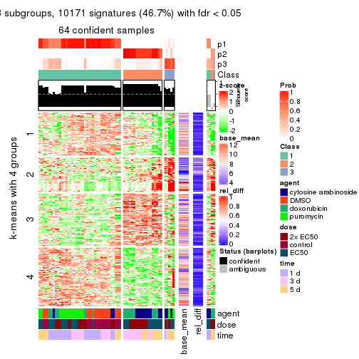
get_signatures(res, k = 4)
get_signatures(res, k = 5)
get_signatures(res, k = 6)
Signature heatmaps where rows are not scaled:
get_signatures(res, k = 2, scale_rows = FALSE)
get_signatures(res, k = 3, scale_rows = FALSE)
get_signatures(res, k = 4, scale_rows = FALSE)

get_signatures(res, k = 5, scale_rows = FALSE)
get_signatures(res, k = 6, scale_rows = FALSE)
Compare the overlap of signatures from different k:
compare_signatures(res)
get_signature() returns a data frame invisibly. TO get the list of signatures, the function
call should be assigned to a variable explicitly. In following code, if plot argument is set
to FALSE, no heatmap is plotted while only the differential analysis is performed.
# code only for demonstration
tb = get_signature(res, k = ..., plot = FALSE)
An example of the output of tb is:
#> which_row fdr mean_1 mean_2 scaled_mean_1 scaled_mean_2 km
#> 1 38 0.042760348 8.373488 9.131774 -0.5533452 0.5164555 1
#> 2 40 0.018707592 7.106213 8.469186 -0.6173731 0.5762149 1
#> 3 55 0.019134737 10.221463 11.207825 -0.6159697 0.5749050 1
#> 4 59 0.006059896 5.921854 7.869574 -0.6899429 0.6439467 1
#> 5 60 0.018055526 8.928898 10.211722 -0.6204761 0.5791110 1
#> 6 98 0.009384629 15.714769 14.887706 0.6635654 -0.6193277 2
...
The columns in tb are:
which_row: row indices corresponding to the input matrix.fdr: FDR for the differential test. mean_x: The mean value in group x.scaled_mean_x: The mean value in group x after rows are scaled.km: Row groups if k-means clustering is applied to rows.UMAP plot which shows how samples are separated.
dimension_reduction(res, k = 2, method = "UMAP")
dimension_reduction(res, k = 3, method = "UMAP")
dimension_reduction(res, k = 4, method = "UMAP")
dimension_reduction(res, k = 5, method = "UMAP")
dimension_reduction(res, k = 6, method = "UMAP")
Following heatmap shows how subgroups are split when increasing k:
collect_classes(res)
Test correlation between subgroups and known annotations. If the known annotation is numeric, one-way ANOVA test is applied, and if the known annotation is discrete, chi-squared contingency table test is applied.
test_to_known_factors(res)
#> n agent(p) dose(p) time(p) k
#> MAD:kmeans 68 3.58e-07 3.03e-03 7.64e-05 2
#> MAD:kmeans 64 1.62e-06 7.21e-03 1.15e-03 3
#> MAD:kmeans 59 5.98e-07 3.25e-03 2.91e-06 4
#> MAD:kmeans 60 9.06e-08 7.81e-06 1.06e-09 5
#> MAD:kmeans 56 8.88e-08 3.02e-05 6.74e-09 6
If matrix rows can be associated to genes, consider to use functional_enrichment(res,
...) to perform function enrichment for the signature genes. See this vignette for more detailed explanations.
The object with results only for a single top-value method and a single partition method can be extracted as:
res = res_list["MAD", "skmeans"]
# you can also extract it by
# res = res_list["MAD:skmeans"]
A summary of res and all the functions that can be applied to it:
res
#> A 'ConsensusPartition' object with k = 2, 3, 4, 5, 6.
#> On a matrix with 21796 rows and 68 columns.
#> Top rows (1000, 2000, 3000, 4000, 5000) are extracted by 'MAD' method.
#> Subgroups are detected by 'skmeans' method.
#> Performed in total 1250 partitions by row resampling.
#> Best k for subgroups seems to be 2.
#>
#> Following methods can be applied to this 'ConsensusPartition' object:
#> [1] "cola_report" "collect_classes" "collect_plots"
#> [4] "collect_stats" "colnames" "compare_signatures"
#> [7] "consensus_heatmap" "dimension_reduction" "functional_enrichment"
#> [10] "get_anno_col" "get_anno" "get_classes"
#> [13] "get_consensus" "get_matrix" "get_membership"
#> [16] "get_param" "get_signatures" "get_stats"
#> [19] "is_best_k" "is_stable_k" "membership_heatmap"
#> [22] "ncol" "nrow" "plot_ecdf"
#> [25] "rownames" "select_partition_number" "show"
#> [28] "suggest_best_k" "test_to_known_factors"
collect_plots() function collects all the plots made from res for all k (number of partitions)
into one single page to provide an easy and fast comparison between different k.
collect_plots(res)
The plots are:
k and the heatmap of
predicted classes for each k.k.k.k.All the plots in panels can be made by individual functions and they are plotted later in this section.
select_partition_number() produces several plots showing different
statistics for choosing “optimized” k. There are following statistics:
k;k, the area increased is defined as \(A_k - A_{k-1}\).The detailed explanations of these statistics can be found in the cola vignette.
Generally speaking, lower PAC score, higher mean silhouette score or higher
concordance corresponds to better partition. Rand index and Jaccard index
measure how similar the current partition is compared to partition with k-1.
If they are too similar, we won't accept k is better than k-1.
select_partition_number(res)
The numeric values for all these statistics can be obtained by get_stats().
get_stats(res)
#> k 1-PAC mean_silhouette concordance area_increased Rand Jaccard
#> 2 2 0.849 0.905 0.960 0.4923 0.514 0.514
#> 3 3 0.711 0.804 0.906 0.3306 0.783 0.601
#> 4 4 0.561 0.570 0.734 0.1240 0.892 0.711
#> 5 5 0.575 0.555 0.716 0.0685 0.931 0.765
#> 6 6 0.598 0.461 0.654 0.0457 0.986 0.941
suggest_best_k() suggests the best \(k\) based on these statistics. The rules are as follows:
suggest_best_k(res)
#> [1] 2
Following shows the table of the partitions (You need to click the show/hide
code output link to see it). The membership matrix (columns with name p*)
is inferred by
clue::cl_consensus()
function with the SE method. Basically the value in the membership matrix
represents the probability to belong to a certain group. The finall class
label for an item is determined with the group with highest probability it
belongs to.
In get_classes() function, the entropy is calculated from the membership
matrix and the silhouette score is calculated from the consensus matrix.
cbind(get_classes(res, k = 2), get_membership(res, k = 2))
#> class entropy silhouette p1 p2
#> GSM159850 1 0.000 0.946 1.000 0.000
#> GSM159851 1 0.000 0.946 1.000 0.000
#> GSM159852 1 0.000 0.946 1.000 0.000
#> GSM159853 1 0.000 0.946 1.000 0.000
#> GSM159854 1 0.000 0.946 1.000 0.000
#> GSM159855 1 0.000 0.946 1.000 0.000
#> GSM159856 1 0.000 0.946 1.000 0.000
#> GSM159857 1 0.000 0.946 1.000 0.000
#> GSM159858 1 0.000 0.946 1.000 0.000
#> GSM159859 1 0.000 0.946 1.000 0.000
#> GSM159860 1 0.000 0.946 1.000 0.000
#> GSM159861 1 0.000 0.946 1.000 0.000
#> GSM159862 1 0.000 0.946 1.000 0.000
#> GSM159863 1 0.000 0.946 1.000 0.000
#> GSM159864 1 0.000 0.946 1.000 0.000
#> GSM159865 1 0.000 0.946 1.000 0.000
#> GSM159866 1 0.000 0.946 1.000 0.000
#> GSM159885 1 0.753 0.738 0.784 0.216
#> GSM159886 1 0.000 0.946 1.000 0.000
#> GSM159887 1 0.430 0.878 0.912 0.088
#> GSM159888 2 0.000 0.973 0.000 1.000
#> GSM159889 2 0.000 0.973 0.000 1.000
#> GSM159890 2 0.000 0.973 0.000 1.000
#> GSM159891 2 0.000 0.973 0.000 1.000
#> GSM159892 2 0.000 0.973 0.000 1.000
#> GSM159893 2 0.000 0.973 0.000 1.000
#> GSM159894 1 0.697 0.774 0.812 0.188
#> GSM159895 1 0.745 0.743 0.788 0.212
#> GSM159896 1 0.939 0.497 0.644 0.356
#> GSM159897 2 0.000 0.973 0.000 1.000
#> GSM159898 2 0.000 0.973 0.000 1.000
#> GSM159899 2 0.000 0.973 0.000 1.000
#> GSM159900 2 0.000 0.973 0.000 1.000
#> GSM159901 2 0.000 0.973 0.000 1.000
#> GSM159902 1 0.000 0.946 1.000 0.000
#> GSM159903 1 0.000 0.946 1.000 0.000
#> GSM159904 1 0.000 0.946 1.000 0.000
#> GSM159905 1 0.000 0.946 1.000 0.000
#> GSM159906 1 0.000 0.946 1.000 0.000
#> GSM159907 1 0.000 0.946 1.000 0.000
#> GSM159908 1 0.000 0.946 1.000 0.000
#> GSM159909 1 0.000 0.946 1.000 0.000
#> GSM159910 2 0.000 0.973 0.000 1.000
#> GSM159911 1 0.000 0.946 1.000 0.000
#> GSM159912 1 0.000 0.946 1.000 0.000
#> GSM159913 1 0.000 0.946 1.000 0.000
#> GSM159914 1 0.000 0.946 1.000 0.000
#> GSM159915 1 0.000 0.946 1.000 0.000
#> GSM159916 1 0.000 0.946 1.000 0.000
#> GSM159917 2 0.714 0.722 0.196 0.804
#> GSM159867 1 0.204 0.923 0.968 0.032
#> GSM159868 1 0.971 0.393 0.600 0.400
#> GSM159869 1 0.943 0.489 0.640 0.360
#> GSM159870 2 0.000 0.973 0.000 1.000
#> GSM159871 2 0.000 0.973 0.000 1.000
#> GSM159872 2 0.000 0.973 0.000 1.000
#> GSM159873 2 0.000 0.973 0.000 1.000
#> GSM159874 2 0.000 0.973 0.000 1.000
#> GSM159875 2 0.000 0.973 0.000 1.000
#> GSM159876 2 0.996 0.104 0.464 0.536
#> GSM159877 2 0.000 0.973 0.000 1.000
#> GSM159878 1 0.760 0.707 0.780 0.220
#> GSM159879 2 0.000 0.973 0.000 1.000
#> GSM159880 2 0.000 0.973 0.000 1.000
#> GSM159881 2 0.000 0.973 0.000 1.000
#> GSM159882 2 0.000 0.973 0.000 1.000
#> GSM159883 2 0.000 0.973 0.000 1.000
#> GSM159884 2 0.000 0.973 0.000 1.000
cbind(get_classes(res, k = 3), get_membership(res, k = 3))
#> class entropy silhouette p1 p2 p3
#> GSM159850 1 0.4235 0.79941 0.824 0.000 0.176
#> GSM159851 1 0.2878 0.85992 0.904 0.000 0.096
#> GSM159852 1 0.0424 0.88648 0.992 0.000 0.008
#> GSM159853 1 0.1163 0.88679 0.972 0.000 0.028
#> GSM159854 1 0.1643 0.88354 0.956 0.000 0.044
#> GSM159855 1 0.1411 0.88351 0.964 0.000 0.036
#> GSM159856 1 0.0237 0.88491 0.996 0.000 0.004
#> GSM159857 1 0.0424 0.88582 0.992 0.000 0.008
#> GSM159858 1 0.0000 0.88545 1.000 0.000 0.000
#> GSM159859 1 0.0000 0.88545 1.000 0.000 0.000
#> GSM159860 1 0.0000 0.88545 1.000 0.000 0.000
#> GSM159861 1 0.4062 0.80818 0.836 0.000 0.164
#> GSM159862 1 0.6126 0.43840 0.600 0.000 0.400
#> GSM159863 1 0.5291 0.69160 0.732 0.000 0.268
#> GSM159864 1 0.1163 0.88224 0.972 0.000 0.028
#> GSM159865 1 0.1031 0.88332 0.976 0.000 0.024
#> GSM159866 1 0.1031 0.88332 0.976 0.000 0.024
#> GSM159885 3 0.0747 0.86485 0.016 0.000 0.984
#> GSM159886 1 0.0592 0.88755 0.988 0.000 0.012
#> GSM159887 3 0.2743 0.85716 0.052 0.020 0.928
#> GSM159888 2 0.0000 0.92486 0.000 1.000 0.000
#> GSM159889 2 0.0000 0.92486 0.000 1.000 0.000
#> GSM159890 2 0.0000 0.92486 0.000 1.000 0.000
#> GSM159891 2 0.0000 0.92486 0.000 1.000 0.000
#> GSM159892 2 0.0000 0.92486 0.000 1.000 0.000
#> GSM159893 2 0.0000 0.92486 0.000 1.000 0.000
#> GSM159894 3 0.4357 0.82492 0.080 0.052 0.868
#> GSM159895 3 0.1163 0.86326 0.028 0.000 0.972
#> GSM159896 3 0.0661 0.86420 0.004 0.008 0.988
#> GSM159897 2 0.0000 0.92486 0.000 1.000 0.000
#> GSM159898 2 0.0000 0.92486 0.000 1.000 0.000
#> GSM159899 2 0.0000 0.92486 0.000 1.000 0.000
#> GSM159900 2 0.5948 0.47265 0.000 0.640 0.360
#> GSM159901 2 0.4974 0.69375 0.000 0.764 0.236
#> GSM159902 3 0.6235 -0.00441 0.436 0.000 0.564
#> GSM159903 1 0.5291 0.70362 0.732 0.000 0.268
#> GSM159904 1 0.5497 0.67291 0.708 0.000 0.292
#> GSM159905 1 0.0892 0.88660 0.980 0.000 0.020
#> GSM159906 1 0.0592 0.88658 0.988 0.000 0.012
#> GSM159907 1 0.0747 0.88649 0.984 0.000 0.016
#> GSM159908 1 0.4887 0.74312 0.772 0.000 0.228
#> GSM159909 1 0.6180 0.43244 0.584 0.000 0.416
#> GSM159910 3 0.4233 0.74383 0.004 0.160 0.836
#> GSM159911 3 0.1964 0.84914 0.056 0.000 0.944
#> GSM159912 1 0.1529 0.88317 0.960 0.000 0.040
#> GSM159913 1 0.4235 0.80437 0.824 0.000 0.176
#> GSM159914 1 0.0747 0.88649 0.984 0.000 0.016
#> GSM159915 1 0.0592 0.88656 0.988 0.000 0.012
#> GSM159916 1 0.0747 0.88649 0.984 0.000 0.016
#> GSM159917 3 0.1453 0.85852 0.008 0.024 0.968
#> GSM159867 3 0.1529 0.86151 0.040 0.000 0.960
#> GSM159868 3 0.0424 0.86303 0.000 0.008 0.992
#> GSM159869 3 0.0661 0.86279 0.008 0.004 0.988
#> GSM159870 2 0.0000 0.92486 0.000 1.000 0.000
#> GSM159871 2 0.0237 0.92180 0.000 0.996 0.004
#> GSM159872 3 0.6095 0.24685 0.000 0.392 0.608
#> GSM159873 2 0.3340 0.82767 0.000 0.880 0.120
#> GSM159874 2 0.6286 0.18225 0.000 0.536 0.464
#> GSM159875 2 0.5098 0.67731 0.000 0.752 0.248
#> GSM159876 1 0.7065 0.43003 0.616 0.352 0.032
#> GSM159877 3 0.4634 0.73260 0.012 0.164 0.824
#> GSM159878 1 0.4645 0.72469 0.816 0.176 0.008
#> GSM159879 2 0.0000 0.92486 0.000 1.000 0.000
#> GSM159880 2 0.0000 0.92486 0.000 1.000 0.000
#> GSM159881 2 0.0000 0.92486 0.000 1.000 0.000
#> GSM159882 2 0.0000 0.92486 0.000 1.000 0.000
#> GSM159883 2 0.0000 0.92486 0.000 1.000 0.000
#> GSM159884 2 0.0000 0.92486 0.000 1.000 0.000
cbind(get_classes(res, k = 4), get_membership(res, k = 4))
#> class entropy silhouette p1 p2 p3 p4
#> GSM159850 1 0.7366 0.1619 0.524 0.000 0.224 0.252
#> GSM159851 1 0.6810 0.3162 0.596 0.000 0.248 0.156
#> GSM159852 1 0.4831 0.5131 0.752 0.000 0.208 0.040
#> GSM159853 1 0.5592 0.4213 0.680 0.000 0.264 0.056
#> GSM159854 1 0.5288 0.4990 0.732 0.000 0.200 0.068
#> GSM159855 1 0.6158 0.3201 0.628 0.000 0.292 0.080
#> GSM159856 1 0.4382 0.3726 0.704 0.000 0.296 0.000
#> GSM159857 1 0.4868 0.3451 0.684 0.000 0.304 0.012
#> GSM159858 1 0.4313 0.4209 0.736 0.000 0.260 0.004
#> GSM159859 1 0.3942 0.4656 0.764 0.000 0.236 0.000
#> GSM159860 1 0.4008 0.4492 0.756 0.000 0.244 0.000
#> GSM159861 3 0.7363 0.5374 0.356 0.000 0.476 0.168
#> GSM159862 3 0.7434 0.5421 0.256 0.000 0.512 0.232
#> GSM159863 3 0.7312 0.5585 0.292 0.000 0.520 0.188
#> GSM159864 3 0.5681 0.5613 0.404 0.000 0.568 0.028
#> GSM159865 3 0.5517 0.5465 0.412 0.000 0.568 0.020
#> GSM159866 3 0.5756 0.5652 0.400 0.000 0.568 0.032
#> GSM159885 4 0.3341 0.6852 0.048 0.004 0.068 0.880
#> GSM159886 1 0.3757 0.5751 0.828 0.000 0.152 0.020
#> GSM159887 4 0.4750 0.6270 0.096 0.008 0.092 0.804
#> GSM159888 2 0.0000 0.8634 0.000 1.000 0.000 0.000
#> GSM159889 2 0.0188 0.8632 0.000 0.996 0.004 0.000
#> GSM159890 2 0.0000 0.8634 0.000 1.000 0.000 0.000
#> GSM159891 2 0.0336 0.8629 0.000 0.992 0.008 0.000
#> GSM159892 2 0.0592 0.8619 0.000 0.984 0.016 0.000
#> GSM159893 2 0.0469 0.8629 0.000 0.988 0.012 0.000
#> GSM159894 4 0.6144 0.5672 0.096 0.032 0.148 0.724
#> GSM159895 4 0.3623 0.6688 0.048 0.004 0.084 0.864
#> GSM159896 4 0.1706 0.7009 0.016 0.000 0.036 0.948
#> GSM159897 2 0.0336 0.8629 0.000 0.992 0.008 0.000
#> GSM159898 2 0.0336 0.8629 0.000 0.992 0.008 0.000
#> GSM159899 2 0.0336 0.8629 0.000 0.992 0.008 0.000
#> GSM159900 2 0.7726 -0.0252 0.000 0.444 0.260 0.296
#> GSM159901 2 0.6852 0.4017 0.000 0.600 0.208 0.192
#> GSM159902 1 0.6722 0.1468 0.500 0.000 0.092 0.408
#> GSM159903 1 0.5292 0.4396 0.724 0.000 0.060 0.216
#> GSM159904 1 0.5875 0.4096 0.692 0.000 0.104 0.204
#> GSM159905 1 0.1297 0.5992 0.964 0.000 0.020 0.016
#> GSM159906 1 0.1557 0.5974 0.944 0.000 0.056 0.000
#> GSM159907 1 0.1489 0.5994 0.952 0.000 0.044 0.004
#> GSM159908 1 0.5470 0.4343 0.736 0.000 0.148 0.116
#> GSM159909 1 0.6971 0.1783 0.568 0.000 0.156 0.276
#> GSM159910 4 0.7062 0.5887 0.008 0.104 0.360 0.528
#> GSM159911 4 0.6216 0.4665 0.220 0.000 0.120 0.660
#> GSM159912 1 0.2759 0.5914 0.904 0.000 0.052 0.044
#> GSM159913 1 0.4462 0.4959 0.792 0.000 0.044 0.164
#> GSM159914 1 0.1635 0.6012 0.948 0.000 0.044 0.008
#> GSM159915 1 0.1510 0.6006 0.956 0.000 0.028 0.016
#> GSM159916 1 0.1174 0.6001 0.968 0.000 0.020 0.012
#> GSM159917 4 0.4899 0.6456 0.008 0.004 0.300 0.688
#> GSM159867 4 0.5435 0.5620 0.064 0.004 0.204 0.728
#> GSM159868 4 0.2546 0.7021 0.008 0.000 0.092 0.900
#> GSM159869 4 0.2334 0.7024 0.004 0.000 0.088 0.908
#> GSM159870 2 0.2976 0.8492 0.000 0.872 0.120 0.008
#> GSM159871 2 0.3052 0.8440 0.000 0.860 0.136 0.004
#> GSM159872 4 0.7264 0.5011 0.000 0.148 0.392 0.460
#> GSM159873 2 0.6650 0.5766 0.000 0.624 0.200 0.176
#> GSM159874 4 0.7855 0.2718 0.000 0.284 0.320 0.396
#> GSM159875 2 0.7143 0.4275 0.000 0.560 0.208 0.232
#> GSM159876 3 0.8174 0.2549 0.208 0.244 0.512 0.036
#> GSM159877 4 0.5985 0.5818 0.004 0.032 0.428 0.536
#> GSM159878 1 0.7983 -0.2280 0.436 0.124 0.404 0.036
#> GSM159879 2 0.2530 0.8537 0.000 0.888 0.112 0.000
#> GSM159880 2 0.2408 0.8548 0.000 0.896 0.104 0.000
#> GSM159881 2 0.2760 0.8503 0.000 0.872 0.128 0.000
#> GSM159882 2 0.2216 0.8572 0.000 0.908 0.092 0.000
#> GSM159883 2 0.2469 0.8542 0.000 0.892 0.108 0.000
#> GSM159884 2 0.2408 0.8557 0.000 0.896 0.104 0.000
cbind(get_classes(res, k = 5), get_membership(res, k = 5))
#> class entropy silhouette p1 p2 p3 p4 p5
#> GSM159850 1 0.7360 0.2910 0.448 0.000 0.040 0.276 0.236
#> GSM159851 1 0.6984 0.3260 0.476 0.000 0.020 0.276 0.228
#> GSM159852 1 0.5847 0.4456 0.604 0.000 0.012 0.096 0.288
#> GSM159853 1 0.6529 0.4482 0.576 0.000 0.036 0.128 0.260
#> GSM159854 1 0.6421 0.4488 0.588 0.000 0.024 0.164 0.224
#> GSM159855 1 0.7106 0.3000 0.488 0.000 0.052 0.140 0.320
#> GSM159856 1 0.5359 0.3990 0.616 0.000 0.012 0.048 0.324
#> GSM159857 1 0.6245 0.1836 0.476 0.000 0.036 0.060 0.428
#> GSM159858 1 0.4142 0.4882 0.728 0.000 0.004 0.016 0.252
#> GSM159859 1 0.4443 0.5055 0.724 0.000 0.008 0.028 0.240
#> GSM159860 1 0.4265 0.4801 0.712 0.000 0.008 0.012 0.268
#> GSM159861 5 0.5926 0.5898 0.164 0.000 0.032 0.140 0.664
#> GSM159862 5 0.6174 0.5781 0.148 0.000 0.048 0.152 0.652
#> GSM159863 5 0.5780 0.5947 0.144 0.000 0.028 0.152 0.676
#> GSM159864 5 0.4654 0.6063 0.216 0.000 0.024 0.028 0.732
#> GSM159865 5 0.4629 0.5898 0.236 0.000 0.020 0.024 0.720
#> GSM159866 5 0.4422 0.5919 0.232 0.000 0.016 0.020 0.732
#> GSM159885 4 0.5222 0.6998 0.028 0.008 0.188 0.724 0.052
#> GSM159886 1 0.4280 0.5842 0.772 0.000 0.000 0.088 0.140
#> GSM159887 4 0.5997 0.6775 0.056 0.024 0.176 0.692 0.052
#> GSM159888 2 0.0727 0.7890 0.000 0.980 0.004 0.004 0.012
#> GSM159889 2 0.0740 0.7895 0.000 0.980 0.008 0.004 0.008
#> GSM159890 2 0.0566 0.7903 0.000 0.984 0.004 0.000 0.012
#> GSM159891 2 0.1538 0.7742 0.000 0.948 0.036 0.008 0.008
#> GSM159892 2 0.1956 0.7604 0.000 0.928 0.052 0.008 0.012
#> GSM159893 2 0.1364 0.7765 0.000 0.952 0.036 0.000 0.012
#> GSM159894 4 0.6424 0.6608 0.056 0.016 0.136 0.664 0.128
#> GSM159895 4 0.5893 0.6898 0.036 0.016 0.164 0.696 0.088
#> GSM159896 4 0.5679 0.6706 0.020 0.008 0.240 0.664 0.068
#> GSM159897 2 0.1026 0.7819 0.000 0.968 0.024 0.004 0.004
#> GSM159898 2 0.0865 0.7831 0.000 0.972 0.024 0.004 0.000
#> GSM159899 2 0.1116 0.7802 0.000 0.964 0.028 0.004 0.004
#> GSM159900 3 0.4920 0.5641 0.000 0.348 0.620 0.024 0.008
#> GSM159901 2 0.4994 -0.2732 0.000 0.512 0.464 0.016 0.008
#> GSM159902 4 0.6418 0.1775 0.340 0.000 0.028 0.532 0.100
#> GSM159903 1 0.5704 0.4074 0.592 0.000 0.012 0.324 0.072
#> GSM159904 1 0.6621 0.2939 0.496 0.000 0.028 0.360 0.116
#> GSM159905 1 0.2478 0.6069 0.904 0.000 0.008 0.060 0.028
#> GSM159906 1 0.2067 0.6100 0.924 0.000 0.004 0.028 0.044
#> GSM159907 1 0.2142 0.6063 0.920 0.000 0.004 0.028 0.048
#> GSM159908 1 0.7227 0.3456 0.544 0.000 0.084 0.204 0.168
#> GSM159909 1 0.7437 0.0418 0.388 0.000 0.044 0.364 0.204
#> GSM159910 3 0.3739 0.6384 0.004 0.052 0.848 0.064 0.032
#> GSM159911 4 0.6062 0.6439 0.148 0.000 0.140 0.664 0.048
#> GSM159912 1 0.3831 0.5881 0.812 0.000 0.008 0.136 0.044
#> GSM159913 1 0.4870 0.5147 0.680 0.000 0.008 0.272 0.040
#> GSM159914 1 0.2201 0.6066 0.920 0.000 0.008 0.040 0.032
#> GSM159915 1 0.2251 0.6073 0.916 0.000 0.008 0.052 0.024
#> GSM159916 1 0.2409 0.6039 0.908 0.000 0.008 0.056 0.028
#> GSM159917 3 0.3589 0.5574 0.012 0.008 0.840 0.116 0.024
#> GSM159867 4 0.6786 0.6278 0.040 0.000 0.212 0.564 0.184
#> GSM159868 4 0.6153 0.6265 0.020 0.004 0.304 0.584 0.088
#> GSM159869 4 0.5247 0.6130 0.004 0.000 0.320 0.620 0.056
#> GSM159870 2 0.5946 0.7225 0.000 0.684 0.116 0.064 0.136
#> GSM159871 2 0.5670 0.7368 0.000 0.708 0.108 0.060 0.124
#> GSM159872 3 0.2505 0.6896 0.000 0.092 0.888 0.020 0.000
#> GSM159873 2 0.6917 0.2756 0.000 0.488 0.356 0.064 0.092
#> GSM159874 3 0.4230 0.6731 0.000 0.164 0.780 0.044 0.012
#> GSM159875 3 0.6129 0.2020 0.000 0.412 0.500 0.048 0.040
#> GSM159876 5 0.9230 0.2287 0.188 0.168 0.140 0.100 0.404
#> GSM159877 3 0.3050 0.6046 0.008 0.012 0.884 0.040 0.056
#> GSM159878 5 0.8765 0.1314 0.316 0.104 0.088 0.100 0.392
#> GSM159879 2 0.5061 0.7627 0.000 0.756 0.088 0.052 0.104
#> GSM159880 2 0.4889 0.7695 0.000 0.768 0.084 0.048 0.100
#> GSM159881 2 0.5628 0.7344 0.000 0.704 0.148 0.048 0.100
#> GSM159882 2 0.4748 0.7738 0.000 0.780 0.072 0.056 0.092
#> GSM159883 2 0.5011 0.7665 0.000 0.760 0.088 0.052 0.100
#> GSM159884 2 0.4675 0.7737 0.000 0.784 0.080 0.048 0.088
cbind(get_classes(res, k = 6), get_membership(res, k = 6))
#> class entropy silhouette p1 p2 p3 p4 p5 p6
#> GSM159850 1 0.8207 0.2986 0.356 0.000 0.052 0.248 0.192 0.152
#> GSM159851 1 0.7626 0.3775 0.424 0.000 0.020 0.144 0.240 0.172
#> GSM159852 1 0.7212 0.4342 0.488 0.000 0.028 0.084 0.244 0.156
#> GSM159853 1 0.7917 0.3823 0.424 0.000 0.048 0.140 0.216 0.172
#> GSM159854 1 0.7722 0.4096 0.436 0.000 0.040 0.124 0.244 0.156
#> GSM159855 1 0.7872 0.2372 0.352 0.000 0.036 0.144 0.324 0.144
#> GSM159856 1 0.6698 0.3643 0.488 0.000 0.020 0.056 0.324 0.112
#> GSM159857 1 0.7093 0.2308 0.400 0.000 0.036 0.048 0.380 0.136
#> GSM159858 1 0.6411 0.3752 0.524 0.000 0.020 0.040 0.308 0.108
#> GSM159859 1 0.5975 0.4315 0.584 0.000 0.020 0.036 0.280 0.080
#> GSM159860 1 0.5914 0.4122 0.576 0.000 0.020 0.036 0.300 0.068
#> GSM159861 5 0.5184 0.7377 0.092 0.000 0.024 0.080 0.732 0.072
#> GSM159862 5 0.5148 0.7381 0.040 0.000 0.056 0.112 0.736 0.056
#> GSM159863 5 0.4784 0.7540 0.044 0.000 0.024 0.116 0.756 0.060
#> GSM159864 5 0.3443 0.7983 0.092 0.000 0.020 0.012 0.840 0.036
#> GSM159865 5 0.2912 0.7938 0.112 0.000 0.016 0.008 0.856 0.008
#> GSM159866 5 0.3033 0.7958 0.092 0.000 0.008 0.016 0.860 0.024
#> GSM159885 4 0.5274 0.6173 0.028 0.012 0.156 0.720 0.048 0.036
#> GSM159886 1 0.5937 0.5342 0.656 0.000 0.020 0.068 0.124 0.132
#> GSM159887 4 0.6204 0.6246 0.060 0.016 0.116 0.672 0.048 0.088
#> GSM159888 2 0.0937 0.6363 0.000 0.960 0.000 0.000 0.000 0.040
#> GSM159889 2 0.0790 0.6368 0.000 0.968 0.000 0.000 0.000 0.032
#> GSM159890 2 0.0790 0.6369 0.000 0.968 0.000 0.000 0.000 0.032
#> GSM159891 2 0.1313 0.6340 0.000 0.952 0.016 0.004 0.000 0.028
#> GSM159892 2 0.1418 0.6329 0.000 0.944 0.024 0.000 0.000 0.032
#> GSM159893 2 0.1572 0.6347 0.000 0.936 0.028 0.000 0.000 0.036
#> GSM159894 4 0.6843 0.5899 0.096 0.028 0.072 0.632 0.080 0.092
#> GSM159895 4 0.6876 0.5815 0.048 0.020 0.184 0.592 0.108 0.048
#> GSM159896 4 0.5355 0.6145 0.012 0.008 0.188 0.692 0.056 0.044
#> GSM159897 2 0.0862 0.6327 0.000 0.972 0.016 0.004 0.000 0.008
#> GSM159898 2 0.0964 0.6328 0.000 0.968 0.012 0.004 0.000 0.016
#> GSM159899 2 0.0964 0.6304 0.000 0.968 0.016 0.004 0.000 0.012
#> GSM159900 3 0.4808 0.4579 0.000 0.384 0.568 0.012 0.000 0.036
#> GSM159901 2 0.4814 -0.2988 0.000 0.504 0.452 0.008 0.000 0.036
#> GSM159902 4 0.7120 0.1562 0.308 0.000 0.036 0.472 0.092 0.092
#> GSM159903 1 0.6762 0.2503 0.516 0.000 0.032 0.276 0.044 0.132
#> GSM159904 1 0.7414 0.2330 0.472 0.000 0.040 0.260 0.116 0.112
#> GSM159905 1 0.3059 0.5751 0.872 0.000 0.012 0.036 0.032 0.048
#> GSM159906 1 0.3912 0.5801 0.816 0.000 0.012 0.032 0.064 0.076
#> GSM159907 1 0.2995 0.5766 0.868 0.000 0.004 0.020 0.064 0.044
#> GSM159908 1 0.7713 0.3431 0.484 0.000 0.080 0.156 0.180 0.100
#> GSM159909 1 0.8187 -0.0269 0.312 0.000 0.060 0.288 0.236 0.104
#> GSM159910 3 0.3781 0.6273 0.012 0.048 0.840 0.052 0.020 0.028
#> GSM159911 4 0.7028 0.5604 0.128 0.000 0.144 0.572 0.072 0.084
#> GSM159912 1 0.4653 0.5539 0.768 0.000 0.020 0.092 0.044 0.076
#> GSM159913 1 0.6237 0.3734 0.600 0.000 0.024 0.224 0.056 0.096
#> GSM159914 1 0.2688 0.5746 0.892 0.000 0.012 0.020 0.036 0.040
#> GSM159915 1 0.2701 0.5699 0.892 0.000 0.012 0.028 0.040 0.028
#> GSM159916 1 0.2441 0.5720 0.904 0.000 0.012 0.024 0.016 0.044
#> GSM159917 3 0.2865 0.5751 0.008 0.004 0.872 0.088 0.016 0.012
#> GSM159867 4 0.7276 0.5505 0.028 0.004 0.164 0.524 0.164 0.116
#> GSM159868 4 0.6522 0.5151 0.012 0.000 0.268 0.540 0.072 0.108
#> GSM159869 4 0.5773 0.5313 0.004 0.000 0.292 0.580 0.040 0.084
#> GSM159870 6 0.5228 -0.4923 0.000 0.464 0.032 0.008 0.020 0.476
#> GSM159871 2 0.5226 0.3141 0.000 0.508 0.040 0.004 0.020 0.428
#> GSM159872 3 0.2270 0.6551 0.000 0.020 0.900 0.004 0.004 0.072
#> GSM159873 2 0.6909 0.1328 0.000 0.360 0.272 0.040 0.004 0.324
#> GSM159874 3 0.5407 0.6129 0.000 0.148 0.684 0.060 0.004 0.104
#> GSM159875 3 0.6926 0.2821 0.000 0.324 0.432 0.060 0.008 0.176
#> GSM159876 6 0.7819 0.1725 0.092 0.108 0.032 0.036 0.272 0.460
#> GSM159877 3 0.2697 0.6221 0.000 0.004 0.888 0.024 0.040 0.044
#> GSM159878 6 0.7860 0.0644 0.228 0.060 0.032 0.024 0.232 0.424
#> GSM159879 2 0.4224 0.3856 0.000 0.552 0.016 0.000 0.000 0.432
#> GSM159880 2 0.4446 0.3662 0.000 0.532 0.020 0.000 0.004 0.444
#> GSM159881 2 0.4772 0.3360 0.000 0.504 0.040 0.004 0.000 0.452
#> GSM159882 2 0.4475 0.4005 0.000 0.556 0.032 0.000 0.000 0.412
#> GSM159883 2 0.4421 0.3904 0.000 0.552 0.020 0.004 0.000 0.424
#> GSM159884 2 0.4184 0.4240 0.000 0.576 0.016 0.000 0.000 0.408
Heatmaps for the consensus matrix. It visualizes the probability of two samples to be in a same group.
consensus_heatmap(res, k = 2)
consensus_heatmap(res, k = 3)
consensus_heatmap(res, k = 4)
consensus_heatmap(res, k = 5)
consensus_heatmap(res, k = 6)
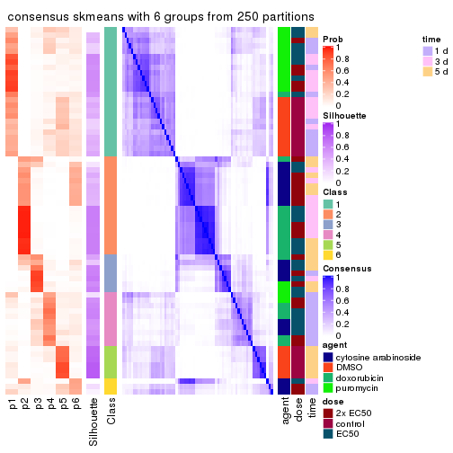
Heatmaps for the membership of samples in all partitions to see how consistent they are:
membership_heatmap(res, k = 2)
membership_heatmap(res, k = 3)
membership_heatmap(res, k = 4)
membership_heatmap(res, k = 5)
membership_heatmap(res, k = 6)
As soon as we have had the classes for columns, we can look for signatures which are significantly different between classes which can be candidate marks for certain classes. Following are the heatmaps for signatures.
Signature heatmaps where rows are scaled:
get_signatures(res, k = 2)
get_signatures(res, k = 3)
get_signatures(res, k = 4)
get_signatures(res, k = 5)
get_signatures(res, k = 6)
Signature heatmaps where rows are not scaled:
get_signatures(res, k = 2, scale_rows = FALSE)
get_signatures(res, k = 3, scale_rows = FALSE)
get_signatures(res, k = 4, scale_rows = FALSE)
get_signatures(res, k = 5, scale_rows = FALSE)
get_signatures(res, k = 6, scale_rows = FALSE)
Compare the overlap of signatures from different k:
compare_signatures(res)
get_signature() returns a data frame invisibly. TO get the list of signatures, the function
call should be assigned to a variable explicitly. In following code, if plot argument is set
to FALSE, no heatmap is plotted while only the differential analysis is performed.
# code only for demonstration
tb = get_signature(res, k = ..., plot = FALSE)
An example of the output of tb is:
#> which_row fdr mean_1 mean_2 scaled_mean_1 scaled_mean_2 km
#> 1 38 0.042760348 8.373488 9.131774 -0.5533452 0.5164555 1
#> 2 40 0.018707592 7.106213 8.469186 -0.6173731 0.5762149 1
#> 3 55 0.019134737 10.221463 11.207825 -0.6159697 0.5749050 1
#> 4 59 0.006059896 5.921854 7.869574 -0.6899429 0.6439467 1
#> 5 60 0.018055526 8.928898 10.211722 -0.6204761 0.5791110 1
#> 6 98 0.009384629 15.714769 14.887706 0.6635654 -0.6193277 2
...
The columns in tb are:
which_row: row indices corresponding to the input matrix.fdr: FDR for the differential test. mean_x: The mean value in group x.scaled_mean_x: The mean value in group x after rows are scaled.km: Row groups if k-means clustering is applied to rows.UMAP plot which shows how samples are separated.
dimension_reduction(res, k = 2, method = "UMAP")
dimension_reduction(res, k = 3, method = "UMAP")
dimension_reduction(res, k = 4, method = "UMAP")
dimension_reduction(res, k = 5, method = "UMAP")
dimension_reduction(res, k = 6, method = "UMAP")
Following heatmap shows how subgroups are split when increasing k:
collect_classes(res)
Test correlation between subgroups and known annotations. If the known annotation is numeric, one-way ANOVA test is applied, and if the known annotation is discrete, chi-squared contingency table test is applied.
test_to_known_factors(res)
#> n agent(p) dose(p) time(p) k
#> MAD:skmeans 64 1.05e-07 3.22e-04 3.83e-04 2
#> MAD:skmeans 61 1.76e-08 8.07e-05 6.64e-05 3
#> MAD:skmeans 45 1.87e-10 8.96e-07 1.01e-06 4
#> MAD:skmeans 48 3.13e-10 2.02e-06 1.47e-08 5
#> MAD:skmeans 37 1.01e-10 8.85e-06 4.01e-07 6
If matrix rows can be associated to genes, consider to use functional_enrichment(res,
...) to perform function enrichment for the signature genes. See this vignette for more detailed explanations.
The object with results only for a single top-value method and a single partition method can be extracted as:
res = res_list["MAD", "pam"]
# you can also extract it by
# res = res_list["MAD:pam"]
A summary of res and all the functions that can be applied to it:
res
#> A 'ConsensusPartition' object with k = 2, 3, 4, 5, 6.
#> On a matrix with 21796 rows and 68 columns.
#> Top rows (1000, 2000, 3000, 4000, 5000) are extracted by 'MAD' method.
#> Subgroups are detected by 'pam' method.
#> Performed in total 1250 partitions by row resampling.
#> Best k for subgroups seems to be 3.
#>
#> Following methods can be applied to this 'ConsensusPartition' object:
#> [1] "cola_report" "collect_classes" "collect_plots"
#> [4] "collect_stats" "colnames" "compare_signatures"
#> [7] "consensus_heatmap" "dimension_reduction" "functional_enrichment"
#> [10] "get_anno_col" "get_anno" "get_classes"
#> [13] "get_consensus" "get_matrix" "get_membership"
#> [16] "get_param" "get_signatures" "get_stats"
#> [19] "is_best_k" "is_stable_k" "membership_heatmap"
#> [22] "ncol" "nrow" "plot_ecdf"
#> [25] "rownames" "select_partition_number" "show"
#> [28] "suggest_best_k" "test_to_known_factors"
collect_plots() function collects all the plots made from res for all k (number of partitions)
into one single page to provide an easy and fast comparison between different k.
collect_plots(res)
The plots are:
k and the heatmap of
predicted classes for each k.k.k.k.All the plots in panels can be made by individual functions and they are plotted later in this section.
select_partition_number() produces several plots showing different
statistics for choosing “optimized” k. There are following statistics:
k;k, the area increased is defined as \(A_k - A_{k-1}\).The detailed explanations of these statistics can be found in the cola vignette.
Generally speaking, lower PAC score, higher mean silhouette score or higher
concordance corresponds to better partition. Rand index and Jaccard index
measure how similar the current partition is compared to partition with k-1.
If they are too similar, we won't accept k is better than k-1.
select_partition_number(res)
The numeric values for all these statistics can be obtained by get_stats().
get_stats(res)
#> k 1-PAC mean_silhouette concordance area_increased Rand Jaccard
#> 2 2 0.713 0.781 0.916 0.447 0.546 0.546
#> 3 3 0.733 0.869 0.928 0.297 0.828 0.699
#> 4 4 0.675 0.683 0.801 0.122 0.860 0.689
#> 5 5 0.761 0.876 0.915 0.106 0.946 0.844
#> 6 6 0.717 0.699 0.829 0.123 0.863 0.564
suggest_best_k() suggests the best \(k\) based on these statistics. The rules are as follows:
suggest_best_k(res)
#> [1] 3
Following shows the table of the partitions (You need to click the show/hide
code output link to see it). The membership matrix (columns with name p*)
is inferred by
clue::cl_consensus()
function with the SE method. Basically the value in the membership matrix
represents the probability to belong to a certain group. The finall class
label for an item is determined with the group with highest probability it
belongs to.
In get_classes() function, the entropy is calculated from the membership
matrix and the silhouette score is calculated from the consensus matrix.
cbind(get_classes(res, k = 2), get_membership(res, k = 2))
#> class entropy silhouette p1 p2
#> GSM159850 1 0.0000 0.9291 1.000 0.000
#> GSM159851 1 0.0000 0.9291 1.000 0.000
#> GSM159852 1 0.0000 0.9291 1.000 0.000
#> GSM159853 1 0.0000 0.9291 1.000 0.000
#> GSM159854 1 0.0000 0.9291 1.000 0.000
#> GSM159855 1 0.0000 0.9291 1.000 0.000
#> GSM159856 1 0.0000 0.9291 1.000 0.000
#> GSM159857 1 0.0000 0.9291 1.000 0.000
#> GSM159858 1 0.0000 0.9291 1.000 0.000
#> GSM159859 1 0.0000 0.9291 1.000 0.000
#> GSM159860 1 0.0000 0.9291 1.000 0.000
#> GSM159861 1 0.0000 0.9291 1.000 0.000
#> GSM159862 1 0.0000 0.9291 1.000 0.000
#> GSM159863 1 0.0000 0.9291 1.000 0.000
#> GSM159864 1 0.0000 0.9291 1.000 0.000
#> GSM159865 1 0.0000 0.9291 1.000 0.000
#> GSM159866 1 0.0000 0.9291 1.000 0.000
#> GSM159885 1 0.3114 0.8851 0.944 0.056
#> GSM159886 1 0.0000 0.9291 1.000 0.000
#> GSM159887 1 0.1633 0.9142 0.976 0.024
#> GSM159888 1 1.0000 -0.0495 0.504 0.496
#> GSM159889 1 1.0000 -0.0495 0.504 0.496
#> GSM159890 2 1.0000 0.0147 0.496 0.504
#> GSM159891 2 0.0000 0.8388 0.000 1.000
#> GSM159892 2 0.0000 0.8388 0.000 1.000
#> GSM159893 2 0.0000 0.8388 0.000 1.000
#> GSM159894 1 0.2778 0.8951 0.952 0.048
#> GSM159895 1 0.2423 0.9020 0.960 0.040
#> GSM159896 1 0.3114 0.8889 0.944 0.056
#> GSM159897 2 0.8327 0.6010 0.264 0.736
#> GSM159898 1 0.9933 0.1036 0.548 0.452
#> GSM159899 2 0.0000 0.8388 0.000 1.000
#> GSM159900 2 0.0000 0.8388 0.000 1.000
#> GSM159901 2 0.0000 0.8388 0.000 1.000
#> GSM159902 1 0.0000 0.9291 1.000 0.000
#> GSM159903 1 0.0000 0.9291 1.000 0.000
#> GSM159904 1 0.0000 0.9291 1.000 0.000
#> GSM159905 1 0.0000 0.9291 1.000 0.000
#> GSM159906 1 0.0000 0.9291 1.000 0.000
#> GSM159907 1 0.0000 0.9291 1.000 0.000
#> GSM159908 1 0.0000 0.9291 1.000 0.000
#> GSM159909 1 0.0000 0.9291 1.000 0.000
#> GSM159910 2 0.8016 0.6525 0.244 0.756
#> GSM159911 1 0.1414 0.9159 0.980 0.020
#> GSM159912 1 0.0000 0.9291 1.000 0.000
#> GSM159913 1 0.0000 0.9291 1.000 0.000
#> GSM159914 1 0.0000 0.9291 1.000 0.000
#> GSM159915 1 0.0000 0.9291 1.000 0.000
#> GSM159916 1 0.0000 0.9291 1.000 0.000
#> GSM159917 2 0.9754 0.3977 0.408 0.592
#> GSM159867 1 0.4022 0.8626 0.920 0.080
#> GSM159868 2 0.9393 0.4903 0.356 0.644
#> GSM159869 2 0.9732 0.3992 0.404 0.596
#> GSM159870 1 0.8909 0.4953 0.692 0.308
#> GSM159871 1 0.9983 -0.0398 0.524 0.476
#> GSM159872 2 0.0376 0.8374 0.004 0.996
#> GSM159873 2 0.0000 0.8388 0.000 1.000
#> GSM159874 2 0.0376 0.8374 0.004 0.996
#> GSM159875 2 0.0000 0.8388 0.000 1.000
#> GSM159876 1 0.2778 0.8948 0.952 0.048
#> GSM159877 2 0.9963 0.2545 0.464 0.536
#> GSM159878 1 0.1633 0.9140 0.976 0.024
#> GSM159879 2 0.9323 0.4617 0.348 0.652
#> GSM159880 2 0.5178 0.7687 0.116 0.884
#> GSM159881 2 0.0000 0.8388 0.000 1.000
#> GSM159882 2 0.0000 0.8388 0.000 1.000
#> GSM159883 2 0.0000 0.8388 0.000 1.000
#> GSM159884 2 0.0000 0.8388 0.000 1.000
cbind(get_classes(res, k = 3), get_membership(res, k = 3))
#> class entropy silhouette p1 p2 p3
#> GSM159850 1 0.0000 0.962 1.000 0.000 0.000
#> GSM159851 1 0.0000 0.962 1.000 0.000 0.000
#> GSM159852 1 0.0000 0.962 1.000 0.000 0.000
#> GSM159853 1 0.0000 0.962 1.000 0.000 0.000
#> GSM159854 1 0.0000 0.962 1.000 0.000 0.000
#> GSM159855 1 0.0000 0.962 1.000 0.000 0.000
#> GSM159856 1 0.0000 0.962 1.000 0.000 0.000
#> GSM159857 1 0.0000 0.962 1.000 0.000 0.000
#> GSM159858 1 0.0000 0.962 1.000 0.000 0.000
#> GSM159859 1 0.0000 0.962 1.000 0.000 0.000
#> GSM159860 1 0.0000 0.962 1.000 0.000 0.000
#> GSM159861 1 0.0000 0.962 1.000 0.000 0.000
#> GSM159862 1 0.0237 0.959 0.996 0.000 0.004
#> GSM159863 1 0.0000 0.962 1.000 0.000 0.000
#> GSM159864 1 0.0000 0.962 1.000 0.000 0.000
#> GSM159865 1 0.0000 0.962 1.000 0.000 0.000
#> GSM159866 1 0.0000 0.962 1.000 0.000 0.000
#> GSM159885 1 0.5178 0.662 0.744 0.000 0.256
#> GSM159886 1 0.0000 0.962 1.000 0.000 0.000
#> GSM159887 1 0.1267 0.944 0.972 0.004 0.024
#> GSM159888 2 0.0000 0.853 0.000 1.000 0.000
#> GSM159889 2 0.0000 0.853 0.000 1.000 0.000
#> GSM159890 2 0.0000 0.853 0.000 1.000 0.000
#> GSM159891 2 0.0000 0.853 0.000 1.000 0.000
#> GSM159892 2 0.0000 0.853 0.000 1.000 0.000
#> GSM159893 2 0.0000 0.853 0.000 1.000 0.000
#> GSM159894 1 0.5744 0.769 0.800 0.072 0.128
#> GSM159895 1 0.4397 0.835 0.856 0.028 0.116
#> GSM159896 1 0.4887 0.710 0.772 0.000 0.228
#> GSM159897 2 0.0000 0.853 0.000 1.000 0.000
#> GSM159898 2 0.0747 0.841 0.016 0.984 0.000
#> GSM159899 2 0.0000 0.853 0.000 1.000 0.000
#> GSM159900 3 0.4504 0.749 0.000 0.196 0.804
#> GSM159901 3 0.5497 0.648 0.000 0.292 0.708
#> GSM159902 1 0.0000 0.962 1.000 0.000 0.000
#> GSM159903 1 0.0000 0.962 1.000 0.000 0.000
#> GSM159904 1 0.0000 0.962 1.000 0.000 0.000
#> GSM159905 1 0.0000 0.962 1.000 0.000 0.000
#> GSM159906 1 0.0000 0.962 1.000 0.000 0.000
#> GSM159907 1 0.0000 0.962 1.000 0.000 0.000
#> GSM159908 1 0.0000 0.962 1.000 0.000 0.000
#> GSM159909 1 0.0000 0.962 1.000 0.000 0.000
#> GSM159910 3 0.3276 0.830 0.024 0.068 0.908
#> GSM159911 1 0.3686 0.833 0.860 0.000 0.140
#> GSM159912 1 0.0000 0.962 1.000 0.000 0.000
#> GSM159913 1 0.0000 0.962 1.000 0.000 0.000
#> GSM159914 1 0.0000 0.962 1.000 0.000 0.000
#> GSM159915 1 0.0000 0.962 1.000 0.000 0.000
#> GSM159916 1 0.0000 0.962 1.000 0.000 0.000
#> GSM159917 3 0.4291 0.766 0.180 0.000 0.820
#> GSM159867 1 0.2550 0.916 0.936 0.024 0.040
#> GSM159868 3 0.4178 0.774 0.172 0.000 0.828
#> GSM159869 3 0.4235 0.770 0.176 0.000 0.824
#> GSM159870 2 0.8399 0.596 0.160 0.620 0.220
#> GSM159871 2 0.8212 0.605 0.104 0.600 0.296
#> GSM159872 3 0.0424 0.826 0.000 0.008 0.992
#> GSM159873 3 0.1411 0.806 0.000 0.036 0.964
#> GSM159874 3 0.0000 0.824 0.000 0.000 1.000
#> GSM159875 3 0.0237 0.823 0.000 0.004 0.996
#> GSM159876 1 0.4982 0.785 0.828 0.036 0.136
#> GSM159877 3 0.2356 0.831 0.072 0.000 0.928
#> GSM159878 1 0.4033 0.815 0.856 0.008 0.136
#> GSM159879 2 0.4399 0.810 0.000 0.812 0.188
#> GSM159880 2 0.4504 0.807 0.000 0.804 0.196
#> GSM159881 2 0.6154 0.537 0.000 0.592 0.408
#> GSM159882 2 0.4504 0.806 0.000 0.804 0.196
#> GSM159883 2 0.4399 0.810 0.000 0.812 0.188
#> GSM159884 2 0.5465 0.733 0.000 0.712 0.288
cbind(get_classes(res, k = 4), get_membership(res, k = 4))
#> class entropy silhouette p1 p2 p3 p4
#> GSM159850 1 0.0000 0.867 1.000 0.000 0.000 0.000
#> GSM159851 1 0.0188 0.867 0.996 0.000 0.000 0.004
#> GSM159852 1 0.1557 0.850 0.944 0.000 0.000 0.056
#> GSM159853 1 0.1557 0.850 0.944 0.000 0.000 0.056
#> GSM159854 1 0.2216 0.835 0.908 0.000 0.000 0.092
#> GSM159855 1 0.2408 0.822 0.896 0.000 0.000 0.104
#> GSM159856 1 0.2281 0.828 0.904 0.000 0.000 0.096
#> GSM159857 1 0.2345 0.824 0.900 0.000 0.000 0.100
#> GSM159858 1 0.2281 0.828 0.904 0.000 0.000 0.096
#> GSM159859 1 0.2281 0.828 0.904 0.000 0.000 0.096
#> GSM159860 1 0.2281 0.828 0.904 0.000 0.000 0.096
#> GSM159861 4 0.4998 0.983 0.488 0.000 0.000 0.512
#> GSM159862 4 0.5000 0.969 0.496 0.000 0.000 0.504
#> GSM159863 4 0.5165 0.981 0.484 0.000 0.004 0.512
#> GSM159864 4 0.4996 0.985 0.484 0.000 0.000 0.516
#> GSM159865 4 0.4998 0.982 0.488 0.000 0.000 0.512
#> GSM159866 4 0.4998 0.984 0.488 0.000 0.000 0.512
#> GSM159885 1 0.3308 0.699 0.872 0.000 0.036 0.092
#> GSM159886 1 0.0188 0.869 0.996 0.000 0.000 0.004
#> GSM159887 1 0.1004 0.852 0.972 0.000 0.024 0.004
#> GSM159888 2 0.0000 0.826 0.000 1.000 0.000 0.000
#> GSM159889 2 0.0336 0.822 0.000 0.992 0.008 0.000
#> GSM159890 2 0.0000 0.826 0.000 1.000 0.000 0.000
#> GSM159891 2 0.0000 0.826 0.000 1.000 0.000 0.000
#> GSM159892 2 0.0000 0.826 0.000 1.000 0.000 0.000
#> GSM159893 2 0.0000 0.826 0.000 1.000 0.000 0.000
#> GSM159894 1 0.2402 0.790 0.924 0.052 0.012 0.012
#> GSM159895 1 0.2198 0.787 0.920 0.000 0.072 0.008
#> GSM159896 1 0.2561 0.773 0.912 0.004 0.016 0.068
#> GSM159897 2 0.0000 0.826 0.000 1.000 0.000 0.000
#> GSM159898 2 0.0336 0.815 0.008 0.992 0.000 0.000
#> GSM159899 2 0.0000 0.826 0.000 1.000 0.000 0.000
#> GSM159900 3 0.7129 0.535 0.000 0.140 0.504 0.356
#> GSM159901 3 0.6929 0.227 0.000 0.444 0.448 0.108
#> GSM159902 1 0.0469 0.865 0.988 0.000 0.000 0.012
#> GSM159903 1 0.0592 0.868 0.984 0.000 0.000 0.016
#> GSM159904 1 0.1022 0.866 0.968 0.000 0.000 0.032
#> GSM159905 1 0.1022 0.864 0.968 0.000 0.000 0.032
#> GSM159906 1 0.2281 0.828 0.904 0.000 0.000 0.096
#> GSM159907 1 0.2281 0.828 0.904 0.000 0.000 0.096
#> GSM159908 1 0.1824 0.851 0.936 0.000 0.004 0.060
#> GSM159909 1 0.1867 0.849 0.928 0.000 0.000 0.072
#> GSM159910 3 0.5332 0.586 0.004 0.004 0.512 0.480
#> GSM159911 1 0.1557 0.819 0.944 0.000 0.000 0.056
#> GSM159912 1 0.0336 0.865 0.992 0.000 0.000 0.008
#> GSM159913 1 0.0336 0.865 0.992 0.000 0.000 0.008
#> GSM159914 1 0.0000 0.867 1.000 0.000 0.000 0.000
#> GSM159915 1 0.0000 0.867 1.000 0.000 0.000 0.000
#> GSM159916 1 0.0469 0.869 0.988 0.000 0.000 0.012
#> GSM159917 3 0.5000 0.585 0.000 0.000 0.504 0.496
#> GSM159867 1 0.4381 0.665 0.824 0.008 0.108 0.060
#> GSM159868 3 0.6660 0.532 0.120 0.000 0.592 0.288
#> GSM159869 3 0.6746 0.549 0.108 0.000 0.552 0.340
#> GSM159870 3 0.7139 -0.217 0.140 0.360 0.500 0.000
#> GSM159871 3 0.6688 -0.222 0.096 0.368 0.536 0.000
#> GSM159872 3 0.4994 0.587 0.000 0.000 0.520 0.480
#> GSM159873 3 0.1174 0.426 0.000 0.012 0.968 0.020
#> GSM159874 3 0.4994 0.587 0.000 0.000 0.520 0.480
#> GSM159875 3 0.3837 0.537 0.000 0.000 0.776 0.224
#> GSM159876 1 0.4946 0.543 0.776 0.008 0.164 0.052
#> GSM159877 3 0.5167 0.586 0.004 0.000 0.508 0.488
#> GSM159878 1 0.4514 0.611 0.800 0.000 0.136 0.064
#> GSM159879 2 0.5000 0.339 0.000 0.504 0.496 0.000
#> GSM159880 3 0.5000 -0.425 0.000 0.500 0.500 0.000
#> GSM159881 3 0.4713 -0.175 0.000 0.360 0.640 0.000
#> GSM159882 2 0.5000 0.339 0.000 0.504 0.496 0.000
#> GSM159883 2 0.5000 0.339 0.000 0.504 0.496 0.000
#> GSM159884 3 0.4972 -0.352 0.000 0.456 0.544 0.000
cbind(get_classes(res, k = 5), get_membership(res, k = 5))
#> class entropy silhouette p1 p2 p3 p4 p5
#> GSM159850 1 0.0404 0.896 0.988 0.000 0.000 0.000 0.012
#> GSM159851 1 0.0794 0.899 0.972 0.000 0.000 0.000 0.028
#> GSM159852 1 0.2712 0.873 0.880 0.000 0.000 0.032 0.088
#> GSM159853 1 0.2824 0.870 0.872 0.000 0.000 0.032 0.096
#> GSM159854 1 0.3445 0.861 0.824 0.000 0.000 0.036 0.140
#> GSM159855 1 0.3573 0.856 0.812 0.000 0.000 0.036 0.152
#> GSM159856 1 0.3615 0.851 0.808 0.000 0.000 0.036 0.156
#> GSM159857 1 0.3615 0.851 0.808 0.000 0.000 0.036 0.156
#> GSM159858 1 0.3573 0.852 0.812 0.000 0.000 0.036 0.152
#> GSM159859 1 0.3573 0.852 0.812 0.000 0.000 0.036 0.152
#> GSM159860 1 0.3655 0.848 0.804 0.000 0.000 0.036 0.160
#> GSM159861 5 0.1915 0.915 0.032 0.000 0.000 0.040 0.928
#> GSM159862 5 0.1270 0.927 0.052 0.000 0.000 0.000 0.948
#> GSM159863 5 0.0510 0.956 0.016 0.000 0.000 0.000 0.984
#> GSM159864 5 0.0404 0.961 0.012 0.000 0.000 0.000 0.988
#> GSM159865 5 0.0404 0.961 0.012 0.000 0.000 0.000 0.988
#> GSM159866 5 0.0290 0.960 0.008 0.000 0.000 0.000 0.992
#> GSM159885 1 0.2151 0.870 0.924 0.000 0.040 0.016 0.020
#> GSM159886 1 0.0609 0.898 0.980 0.000 0.000 0.000 0.020
#> GSM159887 1 0.0451 0.894 0.988 0.000 0.000 0.008 0.004
#> GSM159888 2 0.0000 0.952 0.000 1.000 0.000 0.000 0.000
#> GSM159889 2 0.0880 0.926 0.000 0.968 0.000 0.032 0.000
#> GSM159890 2 0.0162 0.950 0.000 0.996 0.000 0.004 0.000
#> GSM159891 2 0.0000 0.952 0.000 1.000 0.000 0.000 0.000
#> GSM159892 2 0.0000 0.952 0.000 1.000 0.000 0.000 0.000
#> GSM159893 2 0.0000 0.952 0.000 1.000 0.000 0.000 0.000
#> GSM159894 1 0.0451 0.894 0.988 0.000 0.000 0.008 0.004
#> GSM159895 1 0.1195 0.894 0.960 0.000 0.000 0.028 0.012
#> GSM159896 1 0.1618 0.888 0.944 0.000 0.040 0.008 0.008
#> GSM159897 2 0.0000 0.952 0.000 1.000 0.000 0.000 0.000
#> GSM159898 2 0.0000 0.952 0.000 1.000 0.000 0.000 0.000
#> GSM159899 2 0.0000 0.952 0.000 1.000 0.000 0.000 0.000
#> GSM159900 3 0.2471 0.793 0.000 0.136 0.864 0.000 0.000
#> GSM159901 2 0.4030 0.408 0.000 0.648 0.352 0.000 0.000
#> GSM159902 1 0.1018 0.890 0.968 0.000 0.000 0.016 0.016
#> GSM159903 1 0.1211 0.897 0.960 0.000 0.000 0.016 0.024
#> GSM159904 1 0.1800 0.893 0.932 0.000 0.000 0.020 0.048
#> GSM159905 1 0.1670 0.894 0.936 0.000 0.000 0.012 0.052
#> GSM159906 1 0.3573 0.852 0.812 0.000 0.000 0.036 0.152
#> GSM159907 1 0.3649 0.853 0.808 0.000 0.000 0.040 0.152
#> GSM159908 1 0.2900 0.863 0.864 0.000 0.000 0.028 0.108
#> GSM159909 1 0.2722 0.878 0.872 0.000 0.000 0.020 0.108
#> GSM159910 3 0.0000 0.883 0.000 0.000 1.000 0.000 0.000
#> GSM159911 1 0.0912 0.891 0.972 0.000 0.000 0.016 0.012
#> GSM159912 1 0.0671 0.893 0.980 0.000 0.000 0.016 0.004
#> GSM159913 1 0.0912 0.893 0.972 0.000 0.000 0.016 0.012
#> GSM159914 1 0.0566 0.897 0.984 0.000 0.000 0.004 0.012
#> GSM159915 1 0.0566 0.897 0.984 0.000 0.000 0.004 0.012
#> GSM159916 1 0.1216 0.897 0.960 0.000 0.000 0.020 0.020
#> GSM159917 3 0.0000 0.883 0.000 0.000 1.000 0.000 0.000
#> GSM159867 1 0.5537 0.503 0.620 0.000 0.008 0.296 0.076
#> GSM159868 3 0.5327 0.718 0.100 0.000 0.728 0.132 0.040
#> GSM159869 3 0.4182 0.767 0.104 0.000 0.808 0.064 0.024
#> GSM159870 4 0.1357 0.963 0.004 0.048 0.000 0.948 0.000
#> GSM159871 4 0.1270 0.967 0.000 0.052 0.000 0.948 0.000
#> GSM159872 3 0.0000 0.883 0.000 0.000 1.000 0.000 0.000
#> GSM159873 4 0.3333 0.701 0.000 0.004 0.208 0.788 0.000
#> GSM159874 3 0.0000 0.883 0.000 0.000 1.000 0.000 0.000
#> GSM159875 3 0.3661 0.633 0.000 0.000 0.724 0.276 0.000
#> GSM159876 1 0.3336 0.760 0.772 0.000 0.000 0.228 0.000
#> GSM159877 3 0.0000 0.883 0.000 0.000 1.000 0.000 0.000
#> GSM159878 1 0.4588 0.730 0.720 0.000 0.000 0.220 0.060
#> GSM159879 4 0.1270 0.967 0.000 0.052 0.000 0.948 0.000
#> GSM159880 4 0.1270 0.967 0.000 0.052 0.000 0.948 0.000
#> GSM159881 4 0.1469 0.953 0.000 0.036 0.016 0.948 0.000
#> GSM159882 4 0.1270 0.967 0.000 0.052 0.000 0.948 0.000
#> GSM159883 4 0.1270 0.967 0.000 0.052 0.000 0.948 0.000
#> GSM159884 4 0.1270 0.967 0.000 0.052 0.000 0.948 0.000
cbind(get_classes(res, k = 6), get_membership(res, k = 6))
#> class entropy silhouette p1 p2 p3 p4 p5 p6
#> GSM159850 4 0.3695 0.607 0.376 0.000 0.000 0.624 0.000 0.000
#> GSM159851 4 0.3409 0.622 0.300 0.000 0.000 0.700 0.000 0.000
#> GSM159852 1 0.3175 0.415 0.744 0.000 0.000 0.256 0.000 0.000
#> GSM159853 1 0.3151 0.441 0.748 0.000 0.000 0.252 0.000 0.000
#> GSM159854 1 0.2969 0.619 0.776 0.000 0.000 0.224 0.000 0.000
#> GSM159855 1 0.1141 0.745 0.948 0.000 0.000 0.052 0.000 0.000
#> GSM159856 1 0.0146 0.755 0.996 0.000 0.000 0.004 0.000 0.000
#> GSM159857 1 0.0146 0.756 0.996 0.000 0.000 0.004 0.000 0.000
#> GSM159858 1 0.0000 0.755 1.000 0.000 0.000 0.000 0.000 0.000
#> GSM159859 1 0.1556 0.715 0.920 0.000 0.000 0.080 0.000 0.000
#> GSM159860 1 0.0146 0.754 0.996 0.000 0.000 0.004 0.000 0.000
#> GSM159861 1 0.5464 0.195 0.564 0.000 0.000 0.176 0.260 0.000
#> GSM159862 5 0.3190 0.844 0.044 0.000 0.000 0.136 0.820 0.000
#> GSM159863 5 0.2887 0.867 0.036 0.000 0.000 0.120 0.844 0.000
#> GSM159864 5 0.0000 0.920 0.000 0.000 0.000 0.000 1.000 0.000
#> GSM159865 5 0.0000 0.920 0.000 0.000 0.000 0.000 1.000 0.000
#> GSM159866 5 0.0000 0.920 0.000 0.000 0.000 0.000 1.000 0.000
#> GSM159885 4 0.3037 0.681 0.176 0.000 0.016 0.808 0.000 0.000
#> GSM159886 4 0.3867 0.450 0.488 0.000 0.000 0.512 0.000 0.000
#> GSM159887 4 0.3684 0.578 0.372 0.000 0.000 0.628 0.000 0.000
#> GSM159888 2 0.0000 0.955 0.000 1.000 0.000 0.000 0.000 0.000
#> GSM159889 2 0.0865 0.924 0.000 0.964 0.000 0.000 0.000 0.036
#> GSM159890 2 0.0260 0.950 0.000 0.992 0.000 0.000 0.000 0.008
#> GSM159891 2 0.0000 0.955 0.000 1.000 0.000 0.000 0.000 0.000
#> GSM159892 2 0.0000 0.955 0.000 1.000 0.000 0.000 0.000 0.000
#> GSM159893 2 0.0000 0.955 0.000 1.000 0.000 0.000 0.000 0.000
#> GSM159894 4 0.3975 0.558 0.392 0.008 0.000 0.600 0.000 0.000
#> GSM159895 4 0.4612 0.582 0.308 0.004 0.000 0.636 0.000 0.052
#> GSM159896 4 0.5144 0.477 0.372 0.000 0.092 0.536 0.000 0.000
#> GSM159897 2 0.0000 0.955 0.000 1.000 0.000 0.000 0.000 0.000
#> GSM159898 2 0.0000 0.955 0.000 1.000 0.000 0.000 0.000 0.000
#> GSM159899 2 0.0000 0.955 0.000 1.000 0.000 0.000 0.000 0.000
#> GSM159900 3 0.2219 0.755 0.000 0.136 0.864 0.000 0.000 0.000
#> GSM159901 2 0.3428 0.527 0.000 0.696 0.304 0.000 0.000 0.000
#> GSM159902 4 0.1714 0.664 0.092 0.000 0.000 0.908 0.000 0.000
#> GSM159903 4 0.2300 0.665 0.144 0.000 0.000 0.856 0.000 0.000
#> GSM159904 4 0.3101 0.530 0.244 0.000 0.000 0.756 0.000 0.000
#> GSM159905 4 0.3727 0.553 0.388 0.000 0.000 0.612 0.000 0.000
#> GSM159906 1 0.1141 0.735 0.948 0.000 0.000 0.052 0.000 0.000
#> GSM159907 1 0.2378 0.637 0.848 0.000 0.000 0.152 0.000 0.000
#> GSM159908 4 0.3390 0.392 0.296 0.000 0.000 0.704 0.000 0.000
#> GSM159909 4 0.3578 0.403 0.340 0.000 0.000 0.660 0.000 0.000
#> GSM159910 3 0.0000 0.841 0.000 0.000 1.000 0.000 0.000 0.000
#> GSM159911 4 0.0547 0.632 0.020 0.000 0.000 0.980 0.000 0.000
#> GSM159912 4 0.3151 0.674 0.252 0.000 0.000 0.748 0.000 0.000
#> GSM159913 4 0.1957 0.670 0.112 0.000 0.000 0.888 0.000 0.000
#> GSM159914 4 0.3765 0.580 0.404 0.000 0.000 0.596 0.000 0.000
#> GSM159915 4 0.3531 0.648 0.328 0.000 0.000 0.672 0.000 0.000
#> GSM159916 4 0.2454 0.665 0.160 0.000 0.000 0.840 0.000 0.000
#> GSM159917 3 0.0000 0.841 0.000 0.000 1.000 0.000 0.000 0.000
#> GSM159867 4 0.5448 0.432 0.224 0.000 0.004 0.592 0.000 0.180
#> GSM159868 3 0.4747 0.515 0.000 0.000 0.568 0.376 0.000 0.056
#> GSM159869 3 0.3812 0.656 0.004 0.000 0.712 0.268 0.000 0.016
#> GSM159870 6 0.0000 0.883 0.000 0.000 0.000 0.000 0.000 1.000
#> GSM159871 6 0.0000 0.883 0.000 0.000 0.000 0.000 0.000 1.000
#> GSM159872 3 0.0000 0.841 0.000 0.000 1.000 0.000 0.000 0.000
#> GSM159873 6 0.2933 0.637 0.000 0.004 0.200 0.000 0.000 0.796
#> GSM159874 3 0.0000 0.841 0.000 0.000 1.000 0.000 0.000 0.000
#> GSM159875 3 0.3288 0.609 0.000 0.000 0.724 0.000 0.000 0.276
#> GSM159876 6 0.5915 -0.260 0.384 0.000 0.000 0.208 0.000 0.408
#> GSM159877 3 0.0000 0.841 0.000 0.000 1.000 0.000 0.000 0.000
#> GSM159878 1 0.5610 0.215 0.516 0.000 0.000 0.168 0.000 0.316
#> GSM159879 6 0.0000 0.883 0.000 0.000 0.000 0.000 0.000 1.000
#> GSM159880 6 0.0000 0.883 0.000 0.000 0.000 0.000 0.000 1.000
#> GSM159881 6 0.0000 0.883 0.000 0.000 0.000 0.000 0.000 1.000
#> GSM159882 6 0.0000 0.883 0.000 0.000 0.000 0.000 0.000 1.000
#> GSM159883 6 0.0000 0.883 0.000 0.000 0.000 0.000 0.000 1.000
#> GSM159884 6 0.0000 0.883 0.000 0.000 0.000 0.000 0.000 1.000
Heatmaps for the consensus matrix. It visualizes the probability of two samples to be in a same group.
consensus_heatmap(res, k = 2)
consensus_heatmap(res, k = 3)
consensus_heatmap(res, k = 4)
consensus_heatmap(res, k = 5)
consensus_heatmap(res, k = 6)
Heatmaps for the membership of samples in all partitions to see how consistent they are:
membership_heatmap(res, k = 2)
membership_heatmap(res, k = 3)
membership_heatmap(res, k = 4)
membership_heatmap(res, k = 5)
membership_heatmap(res, k = 6)
As soon as we have had the classes for columns, we can look for signatures which are significantly different between classes which can be candidate marks for certain classes. Following are the heatmaps for signatures.
Signature heatmaps where rows are scaled:
get_signatures(res, k = 2)
get_signatures(res, k = 3)
get_signatures(res, k = 4)
get_signatures(res, k = 5)
get_signatures(res, k = 6)
Signature heatmaps where rows are not scaled:
get_signatures(res, k = 2, scale_rows = FALSE)
get_signatures(res, k = 3, scale_rows = FALSE)
get_signatures(res, k = 4, scale_rows = FALSE)
get_signatures(res, k = 5, scale_rows = FALSE)
get_signatures(res, k = 6, scale_rows = FALSE)
Compare the overlap of signatures from different k:
compare_signatures(res)
get_signature() returns a data frame invisibly. TO get the list of signatures, the function
call should be assigned to a variable explicitly. In following code, if plot argument is set
to FALSE, no heatmap is plotted while only the differential analysis is performed.
# code only for demonstration
tb = get_signature(res, k = ..., plot = FALSE)
An example of the output of tb is:
#> which_row fdr mean_1 mean_2 scaled_mean_1 scaled_mean_2 km
#> 1 38 0.042760348 8.373488 9.131774 -0.5533452 0.5164555 1
#> 2 40 0.018707592 7.106213 8.469186 -0.6173731 0.5762149 1
#> 3 55 0.019134737 10.221463 11.207825 -0.6159697 0.5749050 1
#> 4 59 0.006059896 5.921854 7.869574 -0.6899429 0.6439467 1
#> 5 60 0.018055526 8.928898 10.211722 -0.6204761 0.5791110 1
#> 6 98 0.009384629 15.714769 14.887706 0.6635654 -0.6193277 2
...
The columns in tb are:
which_row: row indices corresponding to the input matrix.fdr: FDR for the differential test. mean_x: The mean value in group x.scaled_mean_x: The mean value in group x after rows are scaled.km: Row groups if k-means clustering is applied to rows.UMAP plot which shows how samples are separated.
dimension_reduction(res, k = 2, method = "UMAP")
dimension_reduction(res, k = 3, method = "UMAP")
dimension_reduction(res, k = 4, method = "UMAP")
dimension_reduction(res, k = 5, method = "UMAP")
dimension_reduction(res, k = 6, method = "UMAP")
Following heatmap shows how subgroups are split when increasing k:
collect_classes(res)
Test correlation between subgroups and known annotations. If the known annotation is numeric, one-way ANOVA test is applied, and if the known annotation is discrete, chi-squared contingency table test is applied.
test_to_known_factors(res)
#> n agent(p) dose(p) time(p) k
#> MAD:pam 57 8.04e-06 5.48e-03 1.48e-04 2
#> MAD:pam 68 6.30e-07 2.06e-03 1.77e-04 3
#> MAD:pam 58 6.98e-10 7.49e-04 2.36e-06 4
#> MAD:pam 67 9.07e-14 1.21e-04 1.65e-06 5
#> MAD:pam 58 2.39e-16 3.21e-06 1.32e-06 6
If matrix rows can be associated to genes, consider to use functional_enrichment(res,
...) to perform function enrichment for the signature genes. See this vignette for more detailed explanations.
The object with results only for a single top-value method and a single partition method can be extracted as:
res = res_list["MAD", "mclust"]
# you can also extract it by
# res = res_list["MAD:mclust"]
A summary of res and all the functions that can be applied to it:
res
#> A 'ConsensusPartition' object with k = 2, 3, 4, 5, 6.
#> On a matrix with 21796 rows and 68 columns.
#> Top rows (1000, 2000, 3000, 4000, 5000) are extracted by 'MAD' method.
#> Subgroups are detected by 'mclust' method.
#> Performed in total 1250 partitions by row resampling.
#> Best k for subgroups seems to be 2.
#>
#> Following methods can be applied to this 'ConsensusPartition' object:
#> [1] "cola_report" "collect_classes" "collect_plots"
#> [4] "collect_stats" "colnames" "compare_signatures"
#> [7] "consensus_heatmap" "dimension_reduction" "functional_enrichment"
#> [10] "get_anno_col" "get_anno" "get_classes"
#> [13] "get_consensus" "get_matrix" "get_membership"
#> [16] "get_param" "get_signatures" "get_stats"
#> [19] "is_best_k" "is_stable_k" "membership_heatmap"
#> [22] "ncol" "nrow" "plot_ecdf"
#> [25] "rownames" "select_partition_number" "show"
#> [28] "suggest_best_k" "test_to_known_factors"
collect_plots() function collects all the plots made from res for all k (number of partitions)
into one single page to provide an easy and fast comparison between different k.
collect_plots(res)
The plots are:
k and the heatmap of
predicted classes for each k.k.k.k.All the plots in panels can be made by individual functions and they are plotted later in this section.
select_partition_number() produces several plots showing different
statistics for choosing “optimized” k. There are following statistics:
k;k, the area increased is defined as \(A_k - A_{k-1}\).The detailed explanations of these statistics can be found in the cola vignette.
Generally speaking, lower PAC score, higher mean silhouette score or higher
concordance corresponds to better partition. Rand index and Jaccard index
measure how similar the current partition is compared to partition with k-1.
If they are too similar, we won't accept k is better than k-1.
select_partition_number(res)
The numeric values for all these statistics can be obtained by get_stats().
get_stats(res)
#> k 1-PAC mean_silhouette concordance area_increased Rand Jaccard
#> 2 2 0.587 0.802 0.917 0.4916 0.508 0.508
#> 3 3 0.500 0.707 0.784 0.2278 0.925 0.852
#> 4 4 0.549 0.676 0.755 0.1481 0.810 0.598
#> 5 5 0.623 0.674 0.792 0.0802 0.924 0.774
#> 6 6 0.668 0.602 0.696 0.0698 0.847 0.484
suggest_best_k() suggests the best \(k\) based on these statistics. The rules are as follows:
suggest_best_k(res)
#> [1] 2
Following shows the table of the partitions (You need to click the show/hide
code output link to see it). The membership matrix (columns with name p*)
is inferred by
clue::cl_consensus()
function with the SE method. Basically the value in the membership matrix
represents the probability to belong to a certain group. The finall class
label for an item is determined with the group with highest probability it
belongs to.
In get_classes() function, the entropy is calculated from the membership
matrix and the silhouette score is calculated from the consensus matrix.
cbind(get_classes(res, k = 2), get_membership(res, k = 2))
#> class entropy silhouette p1 p2
#> GSM159850 1 0.0000 0.862 1.000 0.000
#> GSM159851 1 0.0000 0.862 1.000 0.000
#> GSM159852 1 0.0000 0.862 1.000 0.000
#> GSM159853 1 0.0000 0.862 1.000 0.000
#> GSM159854 1 0.0000 0.862 1.000 0.000
#> GSM159855 1 0.0376 0.860 0.996 0.004
#> GSM159856 1 0.0000 0.862 1.000 0.000
#> GSM159857 1 0.0000 0.862 1.000 0.000
#> GSM159858 1 0.0000 0.862 1.000 0.000
#> GSM159859 1 0.0000 0.862 1.000 0.000
#> GSM159860 1 0.0000 0.862 1.000 0.000
#> GSM159861 1 0.0938 0.857 0.988 0.012
#> GSM159862 1 0.2043 0.848 0.968 0.032
#> GSM159863 1 0.1414 0.854 0.980 0.020
#> GSM159864 1 0.5629 0.768 0.868 0.132
#> GSM159865 1 0.5629 0.768 0.868 0.132
#> GSM159866 1 0.5629 0.768 0.868 0.132
#> GSM159885 1 0.9954 0.272 0.540 0.460
#> GSM159886 1 0.4939 0.793 0.892 0.108
#> GSM159887 1 0.9954 0.272 0.540 0.460
#> GSM159888 2 0.0000 0.957 0.000 1.000
#> GSM159889 2 0.0000 0.957 0.000 1.000
#> GSM159890 2 0.0000 0.957 0.000 1.000
#> GSM159891 2 0.0000 0.957 0.000 1.000
#> GSM159892 2 0.0000 0.957 0.000 1.000
#> GSM159893 2 0.0000 0.957 0.000 1.000
#> GSM159894 1 0.9954 0.272 0.540 0.460
#> GSM159895 1 0.9954 0.272 0.540 0.460
#> GSM159896 1 0.9954 0.272 0.540 0.460
#> GSM159897 2 0.0000 0.957 0.000 1.000
#> GSM159898 2 0.0000 0.957 0.000 1.000
#> GSM159899 2 0.0000 0.957 0.000 1.000
#> GSM159900 2 0.0000 0.957 0.000 1.000
#> GSM159901 2 0.0000 0.957 0.000 1.000
#> GSM159902 1 0.2043 0.847 0.968 0.032
#> GSM159903 1 0.0000 0.862 1.000 0.000
#> GSM159904 1 0.0000 0.862 1.000 0.000
#> GSM159905 1 0.0000 0.862 1.000 0.000
#> GSM159906 1 0.0000 0.862 1.000 0.000
#> GSM159907 1 0.0000 0.862 1.000 0.000
#> GSM159908 1 0.0000 0.862 1.000 0.000
#> GSM159909 1 0.0000 0.862 1.000 0.000
#> GSM159910 2 0.7950 0.647 0.240 0.760
#> GSM159911 1 0.9881 0.322 0.564 0.436
#> GSM159912 1 0.0000 0.862 1.000 0.000
#> GSM159913 1 0.0000 0.862 1.000 0.000
#> GSM159914 1 0.0000 0.862 1.000 0.000
#> GSM159915 1 0.0000 0.862 1.000 0.000
#> GSM159916 1 0.0000 0.862 1.000 0.000
#> GSM159917 2 0.6712 0.765 0.176 0.824
#> GSM159867 1 0.9954 0.272 0.540 0.460
#> GSM159868 1 0.9963 0.261 0.536 0.464
#> GSM159869 1 0.9977 0.240 0.528 0.472
#> GSM159870 2 0.0000 0.957 0.000 1.000
#> GSM159871 2 0.0000 0.957 0.000 1.000
#> GSM159872 2 0.0000 0.957 0.000 1.000
#> GSM159873 2 0.0000 0.957 0.000 1.000
#> GSM159874 2 0.0000 0.957 0.000 1.000
#> GSM159875 2 0.0000 0.957 0.000 1.000
#> GSM159876 2 0.6343 0.787 0.160 0.840
#> GSM159877 2 0.6712 0.765 0.176 0.824
#> GSM159878 2 0.6623 0.771 0.172 0.828
#> GSM159879 2 0.0000 0.957 0.000 1.000
#> GSM159880 2 0.0000 0.957 0.000 1.000
#> GSM159881 2 0.0000 0.957 0.000 1.000
#> GSM159882 2 0.0000 0.957 0.000 1.000
#> GSM159883 2 0.0000 0.957 0.000 1.000
#> GSM159884 2 0.0000 0.957 0.000 1.000
cbind(get_classes(res, k = 3), get_membership(res, k = 3))
#> class entropy silhouette p1 p2 p3
#> GSM159850 1 0.1964 0.819 0.944 0.056 0.000
#> GSM159851 1 0.1964 0.819 0.944 0.056 0.000
#> GSM159852 1 0.1964 0.819 0.944 0.056 0.000
#> GSM159853 1 0.1964 0.819 0.944 0.056 0.000
#> GSM159854 1 0.1860 0.820 0.948 0.052 0.000
#> GSM159855 1 0.2066 0.819 0.940 0.060 0.000
#> GSM159856 1 0.1964 0.819 0.944 0.056 0.000
#> GSM159857 1 0.1964 0.819 0.944 0.056 0.000
#> GSM159858 1 0.1964 0.819 0.944 0.056 0.000
#> GSM159859 1 0.1964 0.819 0.944 0.056 0.000
#> GSM159860 1 0.1964 0.819 0.944 0.056 0.000
#> GSM159861 1 0.3375 0.804 0.908 0.044 0.048
#> GSM159862 1 0.5559 0.697 0.780 0.028 0.192
#> GSM159863 1 0.5455 0.697 0.788 0.028 0.184
#> GSM159864 1 0.7287 0.255 0.560 0.032 0.408
#> GSM159865 1 0.7287 0.255 0.560 0.032 0.408
#> GSM159866 1 0.7287 0.255 0.560 0.032 0.408
#> GSM159885 1 0.8834 0.563 0.580 0.224 0.196
#> GSM159886 1 0.5243 0.765 0.828 0.072 0.100
#> GSM159887 1 0.8834 0.563 0.580 0.224 0.196
#> GSM159888 2 0.5835 0.900 0.000 0.660 0.340
#> GSM159889 2 0.5835 0.900 0.000 0.660 0.340
#> GSM159890 2 0.5835 0.900 0.000 0.660 0.340
#> GSM159891 2 0.6244 0.830 0.000 0.560 0.440
#> GSM159892 2 0.6286 0.797 0.000 0.536 0.464
#> GSM159893 2 0.6280 0.802 0.000 0.540 0.460
#> GSM159894 1 0.8834 0.566 0.580 0.224 0.196
#> GSM159895 1 0.8834 0.563 0.580 0.224 0.196
#> GSM159896 1 0.8834 0.563 0.580 0.224 0.196
#> GSM159897 2 0.6008 0.889 0.000 0.628 0.372
#> GSM159898 2 0.5835 0.900 0.000 0.660 0.340
#> GSM159899 2 0.5859 0.901 0.000 0.656 0.344
#> GSM159900 3 0.2959 0.597 0.000 0.100 0.900
#> GSM159901 3 0.2959 0.597 0.000 0.100 0.900
#> GSM159902 1 0.3193 0.808 0.896 0.100 0.004
#> GSM159903 1 0.2625 0.812 0.916 0.084 0.000
#> GSM159904 1 0.2796 0.810 0.908 0.092 0.000
#> GSM159905 1 0.2066 0.817 0.940 0.060 0.000
#> GSM159906 1 0.1643 0.817 0.956 0.044 0.000
#> GSM159907 1 0.1643 0.817 0.956 0.044 0.000
#> GSM159908 1 0.0829 0.820 0.984 0.004 0.012
#> GSM159909 1 0.2682 0.815 0.920 0.076 0.004
#> GSM159910 3 0.7256 0.457 0.164 0.124 0.712
#> GSM159911 1 0.7339 0.692 0.708 0.144 0.148
#> GSM159912 1 0.1860 0.817 0.948 0.052 0.000
#> GSM159913 1 0.1964 0.817 0.944 0.056 0.000
#> GSM159914 1 0.1753 0.817 0.952 0.048 0.000
#> GSM159915 1 0.1860 0.817 0.948 0.052 0.000
#> GSM159916 1 0.1765 0.819 0.956 0.040 0.004
#> GSM159917 3 0.6394 0.516 0.116 0.116 0.768
#> GSM159867 1 0.8752 0.481 0.564 0.144 0.292
#> GSM159868 1 0.8882 0.445 0.540 0.144 0.316
#> GSM159869 1 0.9029 0.369 0.504 0.144 0.352
#> GSM159870 3 0.4654 0.659 0.000 0.208 0.792
#> GSM159871 3 0.4605 0.662 0.000 0.204 0.796
#> GSM159872 3 0.0237 0.700 0.004 0.000 0.996
#> GSM159873 3 0.0424 0.703 0.000 0.008 0.992
#> GSM159874 3 0.0000 0.701 0.000 0.000 1.000
#> GSM159875 3 0.0000 0.701 0.000 0.000 1.000
#> GSM159876 3 0.5420 0.652 0.008 0.240 0.752
#> GSM159877 3 0.5731 0.552 0.088 0.108 0.804
#> GSM159878 3 0.5378 0.652 0.008 0.236 0.756
#> GSM159879 3 0.4702 0.656 0.000 0.212 0.788
#> GSM159880 3 0.4702 0.656 0.000 0.212 0.788
#> GSM159881 3 0.3879 0.678 0.000 0.152 0.848
#> GSM159882 3 0.4702 0.656 0.000 0.212 0.788
#> GSM159883 3 0.4702 0.656 0.000 0.212 0.788
#> GSM159884 3 0.4702 0.656 0.000 0.212 0.788
cbind(get_classes(res, k = 4), get_membership(res, k = 4))
#> class entropy silhouette p1 p2 p3 p4
#> GSM159850 1 0.0376 0.7885 0.992 0.004 0.004 0.000
#> GSM159851 1 0.0188 0.7878 0.996 0.000 0.004 0.000
#> GSM159852 1 0.0376 0.7885 0.992 0.004 0.004 0.000
#> GSM159853 1 0.0336 0.7866 0.992 0.000 0.008 0.000
#> GSM159854 1 0.0469 0.7850 0.988 0.000 0.012 0.000
#> GSM159855 1 0.0469 0.7850 0.988 0.000 0.012 0.000
#> GSM159856 1 0.0336 0.7866 0.992 0.000 0.008 0.000
#> GSM159857 1 0.0376 0.7878 0.992 0.000 0.004 0.004
#> GSM159858 1 0.0188 0.7878 0.996 0.000 0.004 0.000
#> GSM159859 1 0.0188 0.7878 0.996 0.000 0.004 0.000
#> GSM159860 1 0.0188 0.7878 0.996 0.000 0.004 0.000
#> GSM159861 1 0.4400 0.6515 0.744 0.004 0.248 0.004
#> GSM159862 1 0.4876 0.5683 0.672 0.004 0.320 0.004
#> GSM159863 1 0.4809 0.5848 0.684 0.004 0.308 0.004
#> GSM159864 1 0.6742 0.4129 0.560 0.016 0.360 0.064
#> GSM159865 1 0.6742 0.4129 0.560 0.016 0.360 0.064
#> GSM159866 1 0.6742 0.4129 0.560 0.016 0.360 0.064
#> GSM159885 3 0.5272 0.4627 0.288 0.032 0.680 0.000
#> GSM159886 1 0.5278 0.6001 0.688 0.020 0.284 0.008
#> GSM159887 3 0.5297 0.4559 0.292 0.032 0.676 0.000
#> GSM159888 2 0.5039 0.9804 0.000 0.592 0.004 0.404
#> GSM159889 2 0.5039 0.9804 0.000 0.592 0.004 0.404
#> GSM159890 2 0.5039 0.9804 0.000 0.592 0.004 0.404
#> GSM159891 2 0.5326 0.9698 0.000 0.604 0.016 0.380
#> GSM159892 2 0.5326 0.9698 0.000 0.604 0.016 0.380
#> GSM159893 2 0.5326 0.9698 0.000 0.604 0.016 0.380
#> GSM159894 3 0.5157 0.4724 0.284 0.028 0.688 0.000
#> GSM159895 3 0.5207 0.4611 0.292 0.028 0.680 0.000
#> GSM159896 3 0.5113 0.4671 0.292 0.024 0.684 0.000
#> GSM159897 2 0.5268 0.9792 0.000 0.592 0.012 0.396
#> GSM159898 2 0.5039 0.9804 0.000 0.592 0.004 0.404
#> GSM159899 2 0.5161 0.9808 0.000 0.592 0.008 0.400
#> GSM159900 3 0.7563 0.1401 0.000 0.364 0.440 0.196
#> GSM159901 3 0.7563 0.1401 0.000 0.364 0.440 0.196
#> GSM159902 1 0.5566 0.7601 0.704 0.224 0.072 0.000
#> GSM159903 1 0.4888 0.7827 0.740 0.224 0.036 0.000
#> GSM159904 1 0.5136 0.7765 0.728 0.224 0.048 0.000
#> GSM159905 1 0.4364 0.7910 0.764 0.220 0.016 0.000
#> GSM159906 1 0.4364 0.7910 0.764 0.220 0.016 0.000
#> GSM159907 1 0.4364 0.7910 0.764 0.220 0.016 0.000
#> GSM159908 1 0.3806 0.7969 0.824 0.156 0.020 0.000
#> GSM159909 1 0.4914 0.7832 0.748 0.208 0.044 0.000
#> GSM159910 3 0.4303 0.5568 0.072 0.032 0.844 0.052
#> GSM159911 1 0.7554 0.3888 0.472 0.212 0.316 0.000
#> GSM159912 1 0.4364 0.7910 0.764 0.220 0.016 0.000
#> GSM159913 1 0.4609 0.7874 0.752 0.224 0.024 0.000
#> GSM159914 1 0.4472 0.7909 0.760 0.220 0.020 0.000
#> GSM159915 1 0.4399 0.7900 0.760 0.224 0.016 0.000
#> GSM159916 1 0.4574 0.7905 0.756 0.220 0.024 0.000
#> GSM159917 3 0.4150 0.5259 0.020 0.076 0.848 0.056
#> GSM159867 3 0.4898 0.5153 0.260 0.000 0.716 0.024
#> GSM159868 3 0.4857 0.5390 0.232 0.004 0.740 0.024
#> GSM159869 3 0.4666 0.5582 0.200 0.004 0.768 0.028
#> GSM159870 4 0.0817 0.9811 0.000 0.000 0.024 0.976
#> GSM159871 4 0.0817 0.9811 0.000 0.000 0.024 0.976
#> GSM159872 3 0.6954 0.2862 0.000 0.152 0.568 0.280
#> GSM159873 3 0.7073 0.1019 0.000 0.124 0.464 0.412
#> GSM159874 3 0.7235 0.1841 0.000 0.152 0.492 0.356
#> GSM159875 3 0.7242 0.1597 0.000 0.148 0.476 0.376
#> GSM159876 3 0.5296 -0.0304 0.008 0.000 0.500 0.492
#> GSM159877 3 0.4790 0.5128 0.024 0.148 0.796 0.032
#> GSM159878 3 0.5404 0.0131 0.012 0.000 0.512 0.476
#> GSM159879 4 0.0817 0.9811 0.000 0.000 0.024 0.976
#> GSM159880 4 0.0817 0.9811 0.000 0.000 0.024 0.976
#> GSM159881 4 0.2081 0.8915 0.000 0.000 0.084 0.916
#> GSM159882 4 0.0921 0.9806 0.000 0.000 0.028 0.972
#> GSM159883 4 0.0921 0.9806 0.000 0.000 0.028 0.972
#> GSM159884 4 0.0921 0.9806 0.000 0.000 0.028 0.972
cbind(get_classes(res, k = 5), get_membership(res, k = 5))
#> class entropy silhouette p1 p2 p3 p4 p5
#> GSM159850 1 0.5703 0.6819 0.628 0.000 0.188 0.184 0.000
#> GSM159851 1 0.5820 0.6763 0.612 0.000 0.196 0.192 0.000
#> GSM159852 1 0.5820 0.6763 0.612 0.000 0.196 0.192 0.000
#> GSM159853 1 0.6035 0.6574 0.580 0.000 0.204 0.216 0.000
#> GSM159854 1 0.6008 0.6597 0.584 0.000 0.200 0.216 0.000
#> GSM159855 1 0.6191 0.6307 0.552 0.000 0.204 0.244 0.000
#> GSM159856 1 0.5956 0.6655 0.592 0.000 0.196 0.212 0.000
#> GSM159857 1 0.5904 0.6716 0.600 0.000 0.200 0.200 0.000
#> GSM159858 1 0.5849 0.6756 0.608 0.000 0.196 0.196 0.000
#> GSM159859 1 0.5849 0.6756 0.608 0.000 0.196 0.196 0.000
#> GSM159860 1 0.5849 0.6756 0.608 0.000 0.196 0.196 0.000
#> GSM159861 1 0.5309 0.5327 0.576 0.000 0.060 0.364 0.000
#> GSM159862 1 0.5439 0.5030 0.560 0.000 0.068 0.372 0.000
#> GSM159863 1 0.5320 0.5245 0.572 0.000 0.060 0.368 0.000
#> GSM159864 1 0.7232 0.4276 0.540 0.000 0.132 0.232 0.096
#> GSM159865 1 0.7232 0.4276 0.540 0.000 0.132 0.232 0.096
#> GSM159866 1 0.7232 0.4276 0.540 0.000 0.132 0.232 0.096
#> GSM159885 4 0.3160 0.7130 0.188 0.000 0.000 0.808 0.004
#> GSM159886 4 0.5621 0.4488 0.320 0.000 0.028 0.608 0.044
#> GSM159887 4 0.3317 0.7146 0.188 0.000 0.004 0.804 0.004
#> GSM159888 2 0.0000 0.9981 0.000 1.000 0.000 0.000 0.000
#> GSM159889 2 0.0000 0.9981 0.000 1.000 0.000 0.000 0.000
#> GSM159890 2 0.0000 0.9981 0.000 1.000 0.000 0.000 0.000
#> GSM159891 2 0.0162 0.9963 0.000 0.996 0.004 0.000 0.000
#> GSM159892 2 0.0162 0.9963 0.000 0.996 0.004 0.000 0.000
#> GSM159893 2 0.0162 0.9963 0.000 0.996 0.004 0.000 0.000
#> GSM159894 4 0.2536 0.7194 0.128 0.000 0.000 0.868 0.004
#> GSM159895 4 0.3048 0.7218 0.176 0.000 0.000 0.820 0.004
#> GSM159896 4 0.3048 0.7218 0.176 0.000 0.000 0.820 0.004
#> GSM159897 2 0.0000 0.9981 0.000 1.000 0.000 0.000 0.000
#> GSM159898 2 0.0000 0.9981 0.000 1.000 0.000 0.000 0.000
#> GSM159899 2 0.0000 0.9981 0.000 1.000 0.000 0.000 0.000
#> GSM159900 3 0.6634 0.6014 0.000 0.336 0.460 0.200 0.004
#> GSM159901 3 0.6620 0.5989 0.000 0.340 0.460 0.196 0.004
#> GSM159902 1 0.1704 0.6554 0.928 0.000 0.004 0.068 0.000
#> GSM159903 1 0.1168 0.6794 0.960 0.000 0.008 0.032 0.000
#> GSM159904 1 0.1205 0.6788 0.956 0.000 0.004 0.040 0.000
#> GSM159905 1 0.0671 0.6910 0.980 0.000 0.004 0.016 0.000
#> GSM159906 1 0.0290 0.6964 0.992 0.000 0.000 0.008 0.000
#> GSM159907 1 0.0162 0.6972 0.996 0.000 0.004 0.000 0.000
#> GSM159908 1 0.3061 0.6884 0.844 0.000 0.020 0.136 0.000
#> GSM159909 1 0.1877 0.6665 0.924 0.000 0.012 0.064 0.000
#> GSM159910 4 0.4552 0.3086 0.020 0.000 0.308 0.668 0.004
#> GSM159911 1 0.4638 0.4581 0.728 0.000 0.048 0.216 0.008
#> GSM159912 1 0.0451 0.6948 0.988 0.000 0.004 0.008 0.000
#> GSM159913 1 0.0510 0.6919 0.984 0.000 0.000 0.016 0.000
#> GSM159914 1 0.0290 0.6964 0.992 0.000 0.000 0.008 0.000
#> GSM159915 1 0.0566 0.6934 0.984 0.000 0.004 0.012 0.000
#> GSM159916 1 0.0290 0.6969 0.992 0.000 0.008 0.000 0.000
#> GSM159917 4 0.5143 -0.1041 0.032 0.000 0.420 0.544 0.004
#> GSM159867 4 0.2914 0.6532 0.052 0.000 0.076 0.872 0.000
#> GSM159868 4 0.3133 0.6522 0.052 0.000 0.080 0.864 0.004
#> GSM159869 4 0.3248 0.6445 0.052 0.000 0.088 0.856 0.004
#> GSM159870 5 0.0290 0.8394 0.000 0.008 0.000 0.000 0.992
#> GSM159871 5 0.0290 0.8394 0.000 0.008 0.000 0.000 0.992
#> GSM159872 3 0.4083 0.6785 0.000 0.000 0.744 0.228 0.028
#> GSM159873 5 0.5810 0.0634 0.000 0.004 0.364 0.088 0.544
#> GSM159874 3 0.5025 0.6853 0.000 0.004 0.700 0.212 0.084
#> GSM159875 3 0.5840 0.4779 0.000 0.008 0.604 0.108 0.280
#> GSM159876 5 0.5787 0.3649 0.012 0.004 0.100 0.240 0.644
#> GSM159877 3 0.3579 0.6626 0.000 0.000 0.756 0.240 0.004
#> GSM159878 5 0.6126 0.2600 0.012 0.004 0.100 0.308 0.576
#> GSM159879 5 0.0290 0.8394 0.000 0.008 0.000 0.000 0.992
#> GSM159880 5 0.0290 0.8394 0.000 0.008 0.000 0.000 0.992
#> GSM159881 5 0.0613 0.8322 0.000 0.004 0.008 0.004 0.984
#> GSM159882 5 0.0162 0.8392 0.000 0.004 0.000 0.000 0.996
#> GSM159883 5 0.0162 0.8392 0.000 0.004 0.000 0.000 0.996
#> GSM159884 5 0.0162 0.8392 0.000 0.004 0.000 0.000 0.996
cbind(get_classes(res, k = 6), get_membership(res, k = 6))
#> class entropy silhouette p1 p2 p3 p4 p5 p6
#> GSM159850 1 0.1577 0.6910 0.940 0.000 0.036 0.008 0.016 0.000
#> GSM159851 1 0.0713 0.7104 0.972 0.000 0.000 0.000 0.028 0.000
#> GSM159852 1 0.0865 0.7131 0.964 0.000 0.000 0.000 0.036 0.000
#> GSM159853 1 0.1148 0.7133 0.960 0.000 0.004 0.016 0.020 0.000
#> GSM159854 1 0.1562 0.7011 0.940 0.000 0.004 0.024 0.032 0.000
#> GSM159855 1 0.1498 0.6985 0.940 0.000 0.000 0.032 0.028 0.000
#> GSM159856 1 0.1219 0.7164 0.948 0.000 0.000 0.004 0.048 0.000
#> GSM159857 1 0.1074 0.7166 0.960 0.000 0.000 0.012 0.028 0.000
#> GSM159858 1 0.1204 0.7087 0.944 0.000 0.000 0.000 0.056 0.000
#> GSM159859 1 0.1267 0.7070 0.940 0.000 0.000 0.000 0.060 0.000
#> GSM159860 1 0.1204 0.7087 0.944 0.000 0.000 0.000 0.056 0.000
#> GSM159861 1 0.4885 0.2163 0.556 0.000 0.012 0.392 0.040 0.000
#> GSM159862 1 0.5072 0.1357 0.516 0.000 0.016 0.424 0.044 0.000
#> GSM159863 1 0.5063 0.1552 0.524 0.000 0.016 0.416 0.044 0.000
#> GSM159864 4 0.7227 0.0665 0.348 0.000 0.084 0.432 0.092 0.044
#> GSM159865 4 0.7227 0.0665 0.348 0.000 0.084 0.432 0.092 0.044
#> GSM159866 4 0.7227 0.0665 0.348 0.000 0.084 0.432 0.092 0.044
#> GSM159885 4 0.6650 0.4953 0.092 0.000 0.136 0.500 0.272 0.000
#> GSM159886 5 0.7994 -0.0386 0.312 0.000 0.064 0.216 0.332 0.076
#> GSM159887 4 0.6559 0.5013 0.092 0.000 0.136 0.524 0.248 0.000
#> GSM159888 2 0.0260 0.9880 0.000 0.992 0.000 0.000 0.000 0.008
#> GSM159889 2 0.0260 0.9880 0.000 0.992 0.000 0.000 0.000 0.008
#> GSM159890 2 0.0260 0.9880 0.000 0.992 0.000 0.000 0.000 0.008
#> GSM159891 2 0.0622 0.9812 0.000 0.980 0.012 0.000 0.008 0.000
#> GSM159892 2 0.0717 0.9794 0.000 0.976 0.016 0.000 0.008 0.000
#> GSM159893 2 0.0717 0.9794 0.000 0.976 0.016 0.000 0.008 0.000
#> GSM159894 4 0.6360 0.4999 0.096 0.000 0.100 0.540 0.264 0.000
#> GSM159895 4 0.6559 0.5017 0.092 0.000 0.124 0.512 0.272 0.000
#> GSM159896 4 0.6573 0.4999 0.092 0.000 0.124 0.508 0.276 0.000
#> GSM159897 2 0.0436 0.9863 0.000 0.988 0.004 0.000 0.004 0.004
#> GSM159898 2 0.0260 0.9880 0.000 0.992 0.000 0.000 0.000 0.008
#> GSM159899 2 0.0405 0.9864 0.000 0.988 0.000 0.000 0.004 0.008
#> GSM159900 3 0.5511 0.7616 0.000 0.148 0.628 0.204 0.016 0.004
#> GSM159901 3 0.5543 0.7580 0.000 0.152 0.624 0.204 0.016 0.004
#> GSM159902 5 0.6396 0.5376 0.304 0.000 0.164 0.044 0.488 0.000
#> GSM159903 5 0.5710 0.6110 0.384 0.000 0.092 0.024 0.500 0.000
#> GSM159904 5 0.6265 0.5634 0.320 0.000 0.164 0.032 0.484 0.000
#> GSM159905 5 0.3774 0.6677 0.408 0.000 0.000 0.000 0.592 0.000
#> GSM159906 5 0.3756 0.6568 0.400 0.000 0.000 0.000 0.600 0.000
#> GSM159907 5 0.4056 0.6539 0.416 0.000 0.004 0.004 0.576 0.000
#> GSM159908 1 0.6111 -0.2098 0.576 0.000 0.148 0.056 0.220 0.000
#> GSM159909 5 0.6948 0.4889 0.332 0.000 0.168 0.088 0.412 0.000
#> GSM159910 4 0.6153 -0.0721 0.084 0.000 0.272 0.556 0.088 0.000
#> GSM159911 5 0.6770 0.2354 0.152 0.000 0.196 0.132 0.520 0.000
#> GSM159912 5 0.3797 0.6597 0.420 0.000 0.000 0.000 0.580 0.000
#> GSM159913 5 0.4357 0.6522 0.420 0.000 0.012 0.008 0.560 0.000
#> GSM159914 5 0.3727 0.6613 0.388 0.000 0.000 0.000 0.612 0.000
#> GSM159915 5 0.3789 0.6544 0.416 0.000 0.000 0.000 0.584 0.000
#> GSM159916 5 0.4015 0.6617 0.396 0.000 0.004 0.004 0.596 0.000
#> GSM159917 4 0.6204 -0.3403 0.060 0.000 0.356 0.488 0.096 0.000
#> GSM159867 4 0.2301 0.4246 0.096 0.000 0.000 0.884 0.020 0.000
#> GSM159868 4 0.2121 0.4216 0.096 0.000 0.000 0.892 0.012 0.000
#> GSM159869 4 0.2274 0.4047 0.088 0.000 0.008 0.892 0.012 0.000
#> GSM159870 6 0.0291 0.8658 0.000 0.000 0.004 0.004 0.000 0.992
#> GSM159871 6 0.0291 0.8661 0.000 0.000 0.004 0.004 0.000 0.992
#> GSM159872 3 0.3431 0.8105 0.000 0.000 0.756 0.228 0.000 0.016
#> GSM159873 3 0.6990 0.5981 0.000 0.000 0.464 0.200 0.104 0.232
#> GSM159874 3 0.3885 0.8150 0.000 0.000 0.736 0.220 0.000 0.044
#> GSM159875 3 0.5836 0.7576 0.000 0.000 0.612 0.224 0.080 0.084
#> GSM159876 6 0.5133 0.3113 0.004 0.000 0.044 0.380 0.016 0.556
#> GSM159877 3 0.3221 0.7928 0.000 0.000 0.736 0.264 0.000 0.000
#> GSM159878 6 0.5107 0.2948 0.004 0.000 0.040 0.396 0.016 0.544
#> GSM159879 6 0.0000 0.8688 0.000 0.000 0.000 0.000 0.000 1.000
#> GSM159880 6 0.0000 0.8688 0.000 0.000 0.000 0.000 0.000 1.000
#> GSM159881 6 0.1787 0.8087 0.000 0.000 0.004 0.008 0.068 0.920
#> GSM159882 6 0.0000 0.8688 0.000 0.000 0.000 0.000 0.000 1.000
#> GSM159883 6 0.0000 0.8688 0.000 0.000 0.000 0.000 0.000 1.000
#> GSM159884 6 0.0000 0.8688 0.000 0.000 0.000 0.000 0.000 1.000
Heatmaps for the consensus matrix. It visualizes the probability of two samples to be in a same group.
consensus_heatmap(res, k = 2)
consensus_heatmap(res, k = 3)
consensus_heatmap(res, k = 4)
consensus_heatmap(res, k = 5)
consensus_heatmap(res, k = 6)
Heatmaps for the membership of samples in all partitions to see how consistent they are:
membership_heatmap(res, k = 2)
membership_heatmap(res, k = 3)
membership_heatmap(res, k = 4)
membership_heatmap(res, k = 5)
membership_heatmap(res, k = 6)
As soon as we have had the classes for columns, we can look for signatures which are significantly different between classes which can be candidate marks for certain classes. Following are the heatmaps for signatures.
Signature heatmaps where rows are scaled:
get_signatures(res, k = 2)
get_signatures(res, k = 3)
get_signatures(res, k = 4)
get_signatures(res, k = 5)
get_signatures(res, k = 6)
Signature heatmaps where rows are not scaled:
get_signatures(res, k = 2, scale_rows = FALSE)
get_signatures(res, k = 3, scale_rows = FALSE)
get_signatures(res, k = 4, scale_rows = FALSE)
get_signatures(res, k = 5, scale_rows = FALSE)
get_signatures(res, k = 6, scale_rows = FALSE)
Compare the overlap of signatures from different k:
compare_signatures(res)
get_signature() returns a data frame invisibly. TO get the list of signatures, the function
call should be assigned to a variable explicitly. In following code, if plot argument is set
to FALSE, no heatmap is plotted while only the differential analysis is performed.
# code only for demonstration
tb = get_signature(res, k = ..., plot = FALSE)
An example of the output of tb is:
#> which_row fdr mean_1 mean_2 scaled_mean_1 scaled_mean_2 km
#> 1 38 0.042760348 8.373488 9.131774 -0.5533452 0.5164555 1
#> 2 40 0.018707592 7.106213 8.469186 -0.6173731 0.5762149 1
#> 3 55 0.019134737 10.221463 11.207825 -0.6159697 0.5749050 1
#> 4 59 0.006059896 5.921854 7.869574 -0.6899429 0.6439467 1
#> 5 60 0.018055526 8.928898 10.211722 -0.6204761 0.5791110 1
#> 6 98 0.009384629 15.714769 14.887706 0.6635654 -0.6193277 2
...
The columns in tb are:
which_row: row indices corresponding to the input matrix.fdr: FDR for the differential test. mean_x: The mean value in group x.scaled_mean_x: The mean value in group x after rows are scaled.km: Row groups if k-means clustering is applied to rows.UMAP plot which shows how samples are separated.
dimension_reduction(res, k = 2, method = "UMAP")
dimension_reduction(res, k = 3, method = "UMAP")
dimension_reduction(res, k = 4, method = "UMAP")
dimension_reduction(res, k = 5, method = "UMAP")

dimension_reduction(res, k = 6, method = "UMAP")
Following heatmap shows how subgroups are split when increasing k:
collect_classes(res)
Test correlation between subgroups and known annotations. If the known annotation is numeric, one-way ANOVA test is applied, and if the known annotation is discrete, chi-squared contingency table test is applied.
test_to_known_factors(res)
#> n agent(p) dose(p) time(p) k
#> MAD:mclust 59 1.77e-10 1.22e-05 0.038809 2
#> MAD:mclust 61 3.01e-14 1.03e-03 0.003215 3
#> MAD:mclust 51 2.96e-15 1.53e-03 0.021191 4
#> MAD:mclust 57 3.91e-14 1.07e-03 0.000446 5
#> MAD:mclust 48 4.48e-21 1.06e-07 0.000870 6
If matrix rows can be associated to genes, consider to use functional_enrichment(res,
...) to perform function enrichment for the signature genes. See this vignette for more detailed explanations.
The object with results only for a single top-value method and a single partition method can be extracted as:
res = res_list["MAD", "NMF"]
# you can also extract it by
# res = res_list["MAD:NMF"]
A summary of res and all the functions that can be applied to it:
res
#> A 'ConsensusPartition' object with k = 2, 3, 4, 5, 6.
#> On a matrix with 21796 rows and 68 columns.
#> Top rows (1000, 2000, 3000, 4000, 5000) are extracted by 'MAD' method.
#> Subgroups are detected by 'NMF' method.
#> Performed in total 1250 partitions by row resampling.
#> Best k for subgroups seems to be 2.
#>
#> Following methods can be applied to this 'ConsensusPartition' object:
#> [1] "cola_report" "collect_classes" "collect_plots"
#> [4] "collect_stats" "colnames" "compare_signatures"
#> [7] "consensus_heatmap" "dimension_reduction" "functional_enrichment"
#> [10] "get_anno_col" "get_anno" "get_classes"
#> [13] "get_consensus" "get_matrix" "get_membership"
#> [16] "get_param" "get_signatures" "get_stats"
#> [19] "is_best_k" "is_stable_k" "membership_heatmap"
#> [22] "ncol" "nrow" "plot_ecdf"
#> [25] "rownames" "select_partition_number" "show"
#> [28] "suggest_best_k" "test_to_known_factors"
collect_plots() function collects all the plots made from res for all k (number of partitions)
into one single page to provide an easy and fast comparison between different k.
collect_plots(res)
The plots are:
k and the heatmap of
predicted classes for each k.k.k.k.All the plots in panels can be made by individual functions and they are plotted later in this section.
select_partition_number() produces several plots showing different
statistics for choosing “optimized” k. There are following statistics:
k;k, the area increased is defined as \(A_k - A_{k-1}\).The detailed explanations of these statistics can be found in the cola vignette.
Generally speaking, lower PAC score, higher mean silhouette score or higher
concordance corresponds to better partition. Rand index and Jaccard index
measure how similar the current partition is compared to partition with k-1.
If they are too similar, we won't accept k is better than k-1.
select_partition_number(res)
The numeric values for all these statistics can be obtained by get_stats().
get_stats(res)
#> k 1-PAC mean_silhouette concordance area_increased Rand Jaccard
#> 2 2 0.998 0.926 0.972 0.4705 0.528 0.528
#> 3 3 0.716 0.795 0.903 0.4079 0.719 0.505
#> 4 4 0.644 0.687 0.839 0.1089 0.814 0.524
#> 5 5 0.617 0.651 0.793 0.0537 0.877 0.599
#> 6 6 0.637 0.548 0.726 0.0445 0.947 0.779
suggest_best_k() suggests the best \(k\) based on these statistics. The rules are as follows:
suggest_best_k(res)
#> [1] 2
Following shows the table of the partitions (You need to click the show/hide
code output link to see it). The membership matrix (columns with name p*)
is inferred by
clue::cl_consensus()
function with the SE method. Basically the value in the membership matrix
represents the probability to belong to a certain group. The finall class
label for an item is determined with the group with highest probability it
belongs to.
In get_classes() function, the entropy is calculated from the membership
matrix and the silhouette score is calculated from the consensus matrix.
cbind(get_classes(res, k = 2), get_membership(res, k = 2))
#> class entropy silhouette p1 p2
#> GSM159850 1 0.0000 0.97657 1.000 0.000
#> GSM159851 1 0.0000 0.97657 1.000 0.000
#> GSM159852 1 0.0000 0.97657 1.000 0.000
#> GSM159853 1 0.0000 0.97657 1.000 0.000
#> GSM159854 1 0.0000 0.97657 1.000 0.000
#> GSM159855 1 0.0000 0.97657 1.000 0.000
#> GSM159856 1 0.0000 0.97657 1.000 0.000
#> GSM159857 1 0.0000 0.97657 1.000 0.000
#> GSM159858 1 0.0000 0.97657 1.000 0.000
#> GSM159859 1 0.0000 0.97657 1.000 0.000
#> GSM159860 1 0.0000 0.97657 1.000 0.000
#> GSM159861 1 0.0000 0.97657 1.000 0.000
#> GSM159862 1 0.0000 0.97657 1.000 0.000
#> GSM159863 1 0.0000 0.97657 1.000 0.000
#> GSM159864 1 0.0000 0.97657 1.000 0.000
#> GSM159865 1 0.0000 0.97657 1.000 0.000
#> GSM159866 1 0.0000 0.97657 1.000 0.000
#> GSM159885 1 0.4562 0.89015 0.904 0.096
#> GSM159886 1 0.0000 0.97657 1.000 0.000
#> GSM159887 1 0.8016 0.67919 0.756 0.244
#> GSM159888 2 0.0000 0.95739 0.000 1.000
#> GSM159889 2 0.0000 0.95739 0.000 1.000
#> GSM159890 2 0.0000 0.95739 0.000 1.000
#> GSM159891 2 0.0000 0.95739 0.000 1.000
#> GSM159892 2 0.0000 0.95739 0.000 1.000
#> GSM159893 2 0.0000 0.95739 0.000 1.000
#> GSM159894 1 0.1414 0.96194 0.980 0.020
#> GSM159895 1 0.0672 0.97099 0.992 0.008
#> GSM159896 1 0.4298 0.89940 0.912 0.088
#> GSM159897 2 0.0000 0.95739 0.000 1.000
#> GSM159898 2 0.0000 0.95739 0.000 1.000
#> GSM159899 2 0.0000 0.95739 0.000 1.000
#> GSM159900 2 0.0000 0.95739 0.000 1.000
#> GSM159901 2 0.0000 0.95739 0.000 1.000
#> GSM159902 1 0.0000 0.97657 1.000 0.000
#> GSM159903 1 0.0000 0.97657 1.000 0.000
#> GSM159904 1 0.0000 0.97657 1.000 0.000
#> GSM159905 1 0.0000 0.97657 1.000 0.000
#> GSM159906 1 0.0000 0.97657 1.000 0.000
#> GSM159907 1 0.0000 0.97657 1.000 0.000
#> GSM159908 1 0.0000 0.97657 1.000 0.000
#> GSM159909 1 0.0000 0.97657 1.000 0.000
#> GSM159910 2 0.9998 0.00586 0.492 0.508
#> GSM159911 1 0.0000 0.97657 1.000 0.000
#> GSM159912 1 0.0000 0.97657 1.000 0.000
#> GSM159913 1 0.0000 0.97657 1.000 0.000
#> GSM159914 1 0.0000 0.97657 1.000 0.000
#> GSM159915 1 0.0000 0.97657 1.000 0.000
#> GSM159916 1 0.0000 0.97657 1.000 0.000
#> GSM159917 1 0.9209 0.48520 0.664 0.336
#> GSM159867 1 0.0000 0.97657 1.000 0.000
#> GSM159868 1 0.4431 0.89596 0.908 0.092
#> GSM159869 1 0.2778 0.93851 0.952 0.048
#> GSM159870 2 0.0000 0.95739 0.000 1.000
#> GSM159871 2 0.0000 0.95739 0.000 1.000
#> GSM159872 2 0.0000 0.95739 0.000 1.000
#> GSM159873 2 0.0000 0.95739 0.000 1.000
#> GSM159874 2 0.0000 0.95739 0.000 1.000
#> GSM159875 2 0.0000 0.95739 0.000 1.000
#> GSM159876 1 0.0938 0.96821 0.988 0.012
#> GSM159877 2 0.9993 0.03659 0.484 0.516
#> GSM159878 1 0.0000 0.97657 1.000 0.000
#> GSM159879 2 0.0000 0.95739 0.000 1.000
#> GSM159880 2 0.0000 0.95739 0.000 1.000
#> GSM159881 2 0.0000 0.95739 0.000 1.000
#> GSM159882 2 0.0000 0.95739 0.000 1.000
#> GSM159883 2 0.0000 0.95739 0.000 1.000
#> GSM159884 2 0.0000 0.95739 0.000 1.000
cbind(get_classes(res, k = 3), get_membership(res, k = 3))
#> class entropy silhouette p1 p2 p3
#> GSM159850 3 0.6295 0.1710 0.472 0.000 0.528
#> GSM159851 1 0.4399 0.7720 0.812 0.000 0.188
#> GSM159852 1 0.1031 0.9277 0.976 0.000 0.024
#> GSM159853 1 0.2066 0.9160 0.940 0.000 0.060
#> GSM159854 1 0.1964 0.9187 0.944 0.000 0.056
#> GSM159855 1 0.2356 0.9072 0.928 0.000 0.072
#> GSM159856 1 0.0237 0.9249 0.996 0.000 0.004
#> GSM159857 1 0.1753 0.9222 0.952 0.000 0.048
#> GSM159858 1 0.0237 0.9249 0.996 0.000 0.004
#> GSM159859 1 0.0592 0.9273 0.988 0.000 0.012
#> GSM159860 1 0.0424 0.9265 0.992 0.000 0.008
#> GSM159861 1 0.5926 0.4372 0.644 0.000 0.356
#> GSM159862 3 0.5431 0.6093 0.284 0.000 0.716
#> GSM159863 3 0.5988 0.4628 0.368 0.000 0.632
#> GSM159864 1 0.2796 0.8866 0.908 0.000 0.092
#> GSM159865 1 0.1529 0.9163 0.960 0.000 0.040
#> GSM159866 1 0.0892 0.9253 0.980 0.000 0.020
#> GSM159885 3 0.0237 0.7973 0.004 0.000 0.996
#> GSM159886 1 0.0237 0.9206 0.996 0.000 0.004
#> GSM159887 3 0.1015 0.7970 0.012 0.008 0.980
#> GSM159888 2 0.0475 0.9408 0.004 0.992 0.004
#> GSM159889 2 0.0829 0.9371 0.012 0.984 0.004
#> GSM159890 2 0.0237 0.9414 0.000 0.996 0.004
#> GSM159891 2 0.0592 0.9377 0.000 0.988 0.012
#> GSM159892 2 0.0892 0.9336 0.000 0.980 0.020
#> GSM159893 2 0.0747 0.9358 0.000 0.984 0.016
#> GSM159894 3 0.3619 0.7557 0.136 0.000 0.864
#> GSM159895 3 0.0592 0.7977 0.012 0.000 0.988
#> GSM159896 3 0.0237 0.7973 0.004 0.000 0.996
#> GSM159897 2 0.0000 0.9416 0.000 1.000 0.000
#> GSM159898 2 0.0475 0.9408 0.004 0.992 0.004
#> GSM159899 2 0.0000 0.9416 0.000 1.000 0.000
#> GSM159900 3 0.6280 -0.0762 0.000 0.460 0.540
#> GSM159901 2 0.5835 0.5579 0.000 0.660 0.340
#> GSM159902 3 0.3686 0.7556 0.140 0.000 0.860
#> GSM159903 3 0.6305 0.1478 0.484 0.000 0.516
#> GSM159904 3 0.5560 0.5888 0.300 0.000 0.700
#> GSM159905 1 0.1753 0.9213 0.952 0.000 0.048
#> GSM159906 1 0.1163 0.9269 0.972 0.000 0.028
#> GSM159907 1 0.0424 0.9267 0.992 0.000 0.008
#> GSM159908 3 0.6126 0.4110 0.400 0.000 0.600
#> GSM159909 3 0.4974 0.6667 0.236 0.000 0.764
#> GSM159910 3 0.0475 0.7953 0.004 0.004 0.992
#> GSM159911 3 0.0892 0.7963 0.020 0.000 0.980
#> GSM159912 1 0.3482 0.8516 0.872 0.000 0.128
#> GSM159913 1 0.5650 0.5223 0.688 0.000 0.312
#> GSM159914 1 0.0424 0.9267 0.992 0.000 0.008
#> GSM159915 1 0.1163 0.9277 0.972 0.000 0.028
#> GSM159916 1 0.0424 0.9267 0.992 0.000 0.008
#> GSM159917 3 0.0237 0.7973 0.004 0.000 0.996
#> GSM159867 3 0.3482 0.7584 0.128 0.000 0.872
#> GSM159868 3 0.0475 0.7953 0.004 0.004 0.992
#> GSM159869 3 0.0237 0.7973 0.004 0.000 0.996
#> GSM159870 2 0.0983 0.9341 0.016 0.980 0.004
#> GSM159871 2 0.1525 0.9211 0.032 0.964 0.004
#> GSM159872 3 0.3619 0.6723 0.000 0.136 0.864
#> GSM159873 2 0.5016 0.7139 0.000 0.760 0.240
#> GSM159874 3 0.5291 0.4651 0.000 0.268 0.732
#> GSM159875 2 0.5859 0.5504 0.000 0.656 0.344
#> GSM159876 1 0.1129 0.9067 0.976 0.020 0.004
#> GSM159877 3 0.0661 0.7935 0.004 0.008 0.988
#> GSM159878 1 0.0829 0.9130 0.984 0.012 0.004
#> GSM159879 2 0.0475 0.9408 0.004 0.992 0.004
#> GSM159880 2 0.0475 0.9408 0.004 0.992 0.004
#> GSM159881 2 0.0237 0.9407 0.000 0.996 0.004
#> GSM159882 2 0.0000 0.9416 0.000 1.000 0.000
#> GSM159883 2 0.0000 0.9416 0.000 1.000 0.000
#> GSM159884 2 0.0000 0.9416 0.000 1.000 0.000
cbind(get_classes(res, k = 4), get_membership(res, k = 4))
#> class entropy silhouette p1 p2 p3 p4
#> GSM159850 1 0.3969 0.69156 0.804 0.000 0.016 0.180
#> GSM159851 1 0.1929 0.80145 0.940 0.000 0.024 0.036
#> GSM159852 1 0.3157 0.74387 0.852 0.000 0.144 0.004
#> GSM159853 1 0.2081 0.78242 0.916 0.000 0.084 0.000
#> GSM159854 1 0.1042 0.80553 0.972 0.000 0.020 0.008
#> GSM159855 1 0.2814 0.76454 0.868 0.000 0.132 0.000
#> GSM159856 1 0.4155 0.64938 0.756 0.000 0.240 0.004
#> GSM159857 1 0.4250 0.61501 0.724 0.000 0.276 0.000
#> GSM159858 1 0.4252 0.63311 0.744 0.000 0.252 0.004
#> GSM159859 1 0.3355 0.72796 0.836 0.000 0.160 0.004
#> GSM159860 1 0.4401 0.60612 0.724 0.000 0.272 0.004
#> GSM159861 3 0.5366 0.57527 0.276 0.000 0.684 0.040
#> GSM159862 3 0.5839 0.52923 0.060 0.000 0.648 0.292
#> GSM159863 3 0.5727 0.65294 0.096 0.000 0.704 0.200
#> GSM159864 3 0.1929 0.75053 0.036 0.000 0.940 0.024
#> GSM159865 3 0.2222 0.75627 0.060 0.000 0.924 0.016
#> GSM159866 3 0.1975 0.75559 0.048 0.000 0.936 0.016
#> GSM159885 4 0.3585 0.69107 0.164 0.004 0.004 0.828
#> GSM159886 1 0.2401 0.77810 0.904 0.000 0.092 0.004
#> GSM159887 4 0.4988 0.63518 0.256 0.012 0.012 0.720
#> GSM159888 2 0.0188 0.91936 0.000 0.996 0.004 0.000
#> GSM159889 2 0.0469 0.91915 0.000 0.988 0.012 0.000
#> GSM159890 2 0.0188 0.91936 0.000 0.996 0.004 0.000
#> GSM159891 2 0.0672 0.91673 0.000 0.984 0.008 0.008
#> GSM159892 2 0.0657 0.91599 0.000 0.984 0.004 0.012
#> GSM159893 2 0.0524 0.91792 0.000 0.988 0.004 0.008
#> GSM159894 4 0.5531 0.24928 0.436 0.004 0.012 0.548
#> GSM159895 4 0.3972 0.67728 0.204 0.000 0.008 0.788
#> GSM159896 4 0.3721 0.68876 0.176 0.004 0.004 0.816
#> GSM159897 2 0.0376 0.91876 0.000 0.992 0.004 0.004
#> GSM159898 2 0.0188 0.91936 0.000 0.996 0.004 0.000
#> GSM159899 2 0.0524 0.91792 0.000 0.988 0.004 0.008
#> GSM159900 4 0.3992 0.59254 0.004 0.188 0.008 0.800
#> GSM159901 4 0.5285 0.08317 0.000 0.468 0.008 0.524
#> GSM159902 1 0.5163 -0.03542 0.516 0.000 0.004 0.480
#> GSM159903 1 0.3172 0.71386 0.840 0.000 0.000 0.160
#> GSM159904 1 0.4522 0.47297 0.680 0.000 0.000 0.320
#> GSM159905 1 0.0707 0.80048 0.980 0.000 0.000 0.020
#> GSM159906 1 0.0657 0.80448 0.984 0.000 0.012 0.004
#> GSM159907 1 0.0707 0.80334 0.980 0.000 0.020 0.000
#> GSM159908 1 0.4353 0.62916 0.756 0.000 0.012 0.232
#> GSM159909 1 0.4955 0.13770 0.556 0.000 0.000 0.444
#> GSM159910 4 0.2197 0.65154 0.004 0.000 0.080 0.916
#> GSM159911 4 0.4088 0.65761 0.232 0.000 0.004 0.764
#> GSM159912 1 0.1211 0.79412 0.960 0.000 0.000 0.040
#> GSM159913 1 0.2589 0.75320 0.884 0.000 0.000 0.116
#> GSM159914 1 0.0707 0.80348 0.980 0.000 0.020 0.000
#> GSM159915 1 0.0524 0.80313 0.988 0.000 0.008 0.004
#> GSM159916 1 0.0657 0.80386 0.984 0.000 0.012 0.004
#> GSM159917 4 0.2469 0.62580 0.000 0.000 0.108 0.892
#> GSM159867 4 0.6295 0.50978 0.132 0.000 0.212 0.656
#> GSM159868 4 0.2943 0.66835 0.032 0.000 0.076 0.892
#> GSM159869 4 0.3697 0.66310 0.048 0.000 0.100 0.852
#> GSM159870 2 0.3494 0.81798 0.000 0.824 0.172 0.004
#> GSM159871 2 0.4483 0.67109 0.000 0.712 0.284 0.004
#> GSM159872 4 0.4898 0.00889 0.000 0.000 0.416 0.584
#> GSM159873 2 0.5012 0.74625 0.000 0.772 0.116 0.112
#> GSM159874 4 0.3427 0.61515 0.000 0.028 0.112 0.860
#> GSM159875 2 0.5386 0.35785 0.000 0.612 0.020 0.368
#> GSM159876 3 0.3093 0.73145 0.092 0.020 0.884 0.004
#> GSM159877 3 0.4989 0.17968 0.000 0.000 0.528 0.472
#> GSM159878 3 0.4522 0.56095 0.264 0.004 0.728 0.004
#> GSM159879 2 0.1302 0.91366 0.000 0.956 0.044 0.000
#> GSM159880 2 0.1389 0.91248 0.000 0.952 0.048 0.000
#> GSM159881 2 0.2011 0.90039 0.000 0.920 0.080 0.000
#> GSM159882 2 0.1557 0.91020 0.000 0.944 0.056 0.000
#> GSM159883 2 0.1867 0.90365 0.000 0.928 0.072 0.000
#> GSM159884 2 0.1022 0.91620 0.000 0.968 0.032 0.000
cbind(get_classes(res, k = 5), get_membership(res, k = 5))
#> class entropy silhouette p1 p2 p3 p4 p5
#> GSM159850 4 0.5115 0.553 0.352 0.000 0.012 0.608 0.028
#> GSM159851 4 0.5192 0.180 0.472 0.000 0.004 0.492 0.032
#> GSM159852 1 0.4044 0.763 0.800 0.000 0.004 0.120 0.076
#> GSM159853 1 0.4181 0.728 0.784 0.000 0.008 0.156 0.052
#> GSM159854 1 0.4570 0.416 0.648 0.000 0.004 0.332 0.016
#> GSM159855 1 0.4649 0.711 0.752 0.000 0.008 0.160 0.080
#> GSM159856 1 0.3317 0.661 0.804 0.000 0.004 0.004 0.188
#> GSM159857 1 0.5249 0.425 0.608 0.000 0.004 0.052 0.336
#> GSM159858 1 0.3231 0.660 0.800 0.000 0.000 0.004 0.196
#> GSM159859 1 0.2077 0.757 0.908 0.000 0.000 0.008 0.084
#> GSM159860 1 0.3013 0.696 0.832 0.000 0.000 0.008 0.160
#> GSM159861 5 0.6394 0.391 0.108 0.000 0.020 0.360 0.512
#> GSM159862 5 0.5931 0.521 0.032 0.000 0.064 0.304 0.600
#> GSM159863 5 0.6012 0.571 0.064 0.000 0.048 0.264 0.624
#> GSM159864 5 0.3034 0.670 0.060 0.000 0.020 0.040 0.880
#> GSM159865 5 0.2930 0.669 0.076 0.000 0.012 0.032 0.880
#> GSM159866 5 0.2888 0.667 0.056 0.000 0.020 0.036 0.888
#> GSM159885 4 0.1885 0.721 0.044 0.000 0.020 0.932 0.004
#> GSM159886 1 0.2060 0.802 0.924 0.000 0.008 0.052 0.016
#> GSM159887 4 0.2816 0.741 0.088 0.008 0.008 0.884 0.012
#> GSM159888 2 0.0566 0.809 0.004 0.984 0.012 0.000 0.000
#> GSM159889 2 0.0798 0.809 0.008 0.976 0.016 0.000 0.000
#> GSM159890 2 0.0865 0.807 0.004 0.972 0.024 0.000 0.000
#> GSM159891 2 0.0955 0.806 0.000 0.968 0.028 0.004 0.000
#> GSM159892 2 0.1168 0.805 0.000 0.960 0.032 0.008 0.000
#> GSM159893 2 0.0981 0.810 0.000 0.972 0.008 0.012 0.008
#> GSM159894 4 0.2550 0.736 0.084 0.000 0.004 0.892 0.020
#> GSM159895 4 0.2756 0.730 0.060 0.000 0.036 0.892 0.012
#> GSM159896 4 0.2580 0.712 0.044 0.000 0.064 0.892 0.000
#> GSM159897 2 0.1948 0.790 0.008 0.928 0.056 0.004 0.004
#> GSM159898 2 0.2061 0.789 0.012 0.924 0.056 0.004 0.004
#> GSM159899 2 0.2061 0.790 0.012 0.924 0.056 0.004 0.004
#> GSM159900 3 0.6328 0.463 0.012 0.280 0.572 0.132 0.004
#> GSM159901 2 0.5988 0.077 0.012 0.524 0.392 0.068 0.004
#> GSM159902 4 0.3815 0.716 0.220 0.000 0.012 0.764 0.004
#> GSM159903 4 0.4367 0.545 0.372 0.000 0.008 0.620 0.000
#> GSM159904 4 0.4270 0.627 0.320 0.000 0.012 0.668 0.000
#> GSM159905 1 0.1764 0.792 0.928 0.000 0.008 0.064 0.000
#> GSM159906 1 0.1121 0.802 0.956 0.000 0.000 0.044 0.000
#> GSM159907 1 0.1571 0.800 0.936 0.000 0.000 0.060 0.004
#> GSM159908 1 0.5000 0.148 0.576 0.000 0.036 0.388 0.000
#> GSM159909 4 0.4194 0.684 0.260 0.000 0.016 0.720 0.004
#> GSM159910 3 0.2426 0.715 0.016 0.004 0.908 0.064 0.008
#> GSM159911 4 0.3390 0.737 0.100 0.000 0.060 0.840 0.000
#> GSM159912 1 0.3521 0.619 0.764 0.000 0.004 0.232 0.000
#> GSM159913 4 0.4522 0.387 0.440 0.000 0.008 0.552 0.000
#> GSM159914 1 0.1043 0.801 0.960 0.000 0.000 0.040 0.000
#> GSM159915 1 0.1569 0.797 0.944 0.004 0.008 0.044 0.000
#> GSM159916 1 0.1357 0.799 0.948 0.004 0.000 0.048 0.000
#> GSM159917 3 0.2787 0.719 0.004 0.000 0.880 0.088 0.028
#> GSM159867 4 0.3387 0.569 0.008 0.000 0.020 0.832 0.140
#> GSM159868 4 0.3362 0.585 0.000 0.000 0.080 0.844 0.076
#> GSM159869 4 0.3362 0.582 0.000 0.000 0.080 0.844 0.076
#> GSM159870 2 0.5584 0.660 0.004 0.656 0.040 0.036 0.264
#> GSM159871 2 0.5713 0.517 0.000 0.560 0.044 0.024 0.372
#> GSM159872 3 0.3521 0.686 0.000 0.000 0.820 0.040 0.140
#> GSM159873 2 0.6920 0.510 0.000 0.564 0.056 0.208 0.172
#> GSM159874 3 0.6806 0.476 0.000 0.088 0.504 0.348 0.060
#> GSM159875 2 0.6065 0.442 0.000 0.580 0.064 0.320 0.036
#> GSM159876 5 0.4034 0.555 0.096 0.028 0.056 0.000 0.820
#> GSM159877 3 0.4168 0.639 0.000 0.000 0.756 0.044 0.200
#> GSM159878 5 0.5228 0.377 0.352 0.008 0.040 0.000 0.600
#> GSM159879 2 0.3552 0.796 0.008 0.856 0.036 0.020 0.080
#> GSM159880 2 0.3396 0.795 0.000 0.856 0.032 0.024 0.088
#> GSM159881 2 0.4328 0.770 0.000 0.788 0.032 0.036 0.144
#> GSM159882 2 0.4071 0.779 0.000 0.808 0.036 0.028 0.128
#> GSM159883 2 0.4116 0.777 0.000 0.804 0.036 0.028 0.132
#> GSM159884 2 0.2970 0.800 0.000 0.884 0.028 0.028 0.060
cbind(get_classes(res, k = 6), get_membership(res, k = 6))
#> class entropy silhouette p1 p2 p3 p4 p5 p6
#> GSM159850 4 0.5683 0.59479 0.200 0.000 0.020 0.644 0.024 0.112
#> GSM159851 4 0.6249 0.35501 0.308 0.000 0.008 0.536 0.064 0.084
#> GSM159852 1 0.5738 0.66150 0.652 0.000 0.000 0.124 0.112 0.112
#> GSM159853 1 0.5974 0.65057 0.636 0.000 0.004 0.124 0.100 0.136
#> GSM159854 1 0.5397 0.37778 0.568 0.000 0.000 0.328 0.016 0.088
#> GSM159855 1 0.7018 0.53845 0.512 0.000 0.008 0.160 0.184 0.136
#> GSM159856 1 0.4124 0.69622 0.764 0.000 0.004 0.004 0.140 0.088
#> GSM159857 1 0.6217 0.44689 0.516 0.000 0.004 0.036 0.312 0.132
#> GSM159858 1 0.3368 0.72008 0.820 0.000 0.000 0.004 0.116 0.060
#> GSM159859 1 0.1624 0.75532 0.936 0.000 0.000 0.008 0.044 0.012
#> GSM159860 1 0.2277 0.74259 0.892 0.000 0.000 0.000 0.076 0.032
#> GSM159861 5 0.3570 0.74847 0.016 0.000 0.000 0.228 0.752 0.004
#> GSM159862 5 0.4162 0.77313 0.004 0.000 0.016 0.180 0.756 0.044
#> GSM159863 5 0.3546 0.78836 0.008 0.000 0.004 0.180 0.788 0.020
#> GSM159864 5 0.1396 0.79354 0.012 0.000 0.008 0.004 0.952 0.024
#> GSM159865 5 0.1786 0.78804 0.032 0.000 0.004 0.004 0.932 0.028
#> GSM159866 5 0.1718 0.78779 0.016 0.000 0.000 0.008 0.932 0.044
#> GSM159885 4 0.1364 0.75147 0.016 0.000 0.012 0.952 0.000 0.020
#> GSM159886 1 0.3025 0.74731 0.856 0.000 0.004 0.020 0.020 0.100
#> GSM159887 4 0.1924 0.75187 0.028 0.000 0.004 0.920 0.000 0.048
#> GSM159888 2 0.1610 0.56434 0.000 0.916 0.000 0.000 0.000 0.084
#> GSM159889 2 0.2170 0.55492 0.012 0.888 0.000 0.000 0.000 0.100
#> GSM159890 2 0.1267 0.56984 0.000 0.940 0.000 0.000 0.000 0.060
#> GSM159891 2 0.0363 0.57006 0.000 0.988 0.000 0.000 0.000 0.012
#> GSM159892 2 0.0603 0.56957 0.000 0.980 0.004 0.000 0.000 0.016
#> GSM159893 2 0.2219 0.52669 0.000 0.864 0.000 0.000 0.000 0.136
#> GSM159894 4 0.2001 0.75298 0.020 0.000 0.000 0.920 0.016 0.044
#> GSM159895 4 0.3852 0.71964 0.020 0.012 0.012 0.828 0.052 0.076
#> GSM159896 4 0.2472 0.74068 0.008 0.000 0.016 0.900 0.024 0.052
#> GSM159897 2 0.1367 0.54943 0.000 0.944 0.012 0.000 0.000 0.044
#> GSM159898 2 0.2679 0.50626 0.008 0.872 0.012 0.000 0.008 0.100
#> GSM159899 2 0.2290 0.52334 0.004 0.892 0.020 0.000 0.000 0.084
#> GSM159900 2 0.7170 -0.08859 0.000 0.456 0.272 0.060 0.024 0.188
#> GSM159901 2 0.6345 0.18529 0.000 0.572 0.200 0.028 0.024 0.176
#> GSM159902 4 0.3143 0.74531 0.128 0.004 0.000 0.836 0.008 0.024
#> GSM159903 4 0.4317 0.53823 0.328 0.000 0.000 0.640 0.004 0.028
#> GSM159904 4 0.5109 0.63442 0.232 0.000 0.000 0.660 0.028 0.080
#> GSM159905 1 0.2196 0.74235 0.916 0.000 0.012 0.040 0.012 0.020
#> GSM159906 1 0.0713 0.75242 0.972 0.000 0.000 0.028 0.000 0.000
#> GSM159907 1 0.1624 0.75067 0.936 0.000 0.000 0.044 0.012 0.008
#> GSM159908 1 0.5939 0.26845 0.564 0.000 0.020 0.316 0.044 0.056
#> GSM159909 4 0.5568 0.65412 0.184 0.000 0.004 0.660 0.064 0.088
#> GSM159910 3 0.2580 0.76487 0.000 0.012 0.880 0.008 0.008 0.092
#> GSM159911 4 0.2039 0.76085 0.052 0.000 0.012 0.916 0.000 0.020
#> GSM159912 1 0.3998 0.58128 0.752 0.000 0.004 0.204 0.016 0.024
#> GSM159913 4 0.4613 0.33733 0.416 0.000 0.004 0.552 0.004 0.024
#> GSM159914 1 0.1871 0.74734 0.928 0.000 0.000 0.024 0.016 0.032
#> GSM159915 1 0.2151 0.74267 0.916 0.000 0.004 0.032 0.012 0.036
#> GSM159916 1 0.1857 0.74462 0.928 0.000 0.000 0.028 0.012 0.032
#> GSM159917 3 0.0984 0.80266 0.000 0.000 0.968 0.012 0.008 0.012
#> GSM159867 4 0.3355 0.69740 0.004 0.000 0.004 0.832 0.084 0.076
#> GSM159868 4 0.3286 0.69429 0.000 0.000 0.028 0.844 0.044 0.084
#> GSM159869 4 0.4052 0.67739 0.000 0.000 0.060 0.788 0.036 0.116
#> GSM159870 6 0.5679 0.21357 0.004 0.400 0.000 0.016 0.088 0.492
#> GSM159871 6 0.5387 0.31409 0.004 0.340 0.000 0.000 0.112 0.544
#> GSM159872 3 0.2052 0.80427 0.000 0.000 0.912 0.004 0.056 0.028
#> GSM159873 6 0.6669 0.38624 0.000 0.292 0.004 0.168 0.056 0.480
#> GSM159874 3 0.7146 0.33892 0.000 0.024 0.444 0.168 0.060 0.304
#> GSM159875 6 0.6994 0.30861 0.000 0.280 0.024 0.300 0.020 0.376
#> GSM159876 6 0.5909 0.00465 0.116 0.000 0.020 0.004 0.344 0.516
#> GSM159877 3 0.2511 0.79094 0.000 0.000 0.880 0.000 0.064 0.056
#> GSM159878 1 0.6413 0.14091 0.388 0.000 0.008 0.004 0.280 0.320
#> GSM159879 2 0.4151 0.15600 0.004 0.576 0.000 0.000 0.008 0.412
#> GSM159880 2 0.4168 0.17053 0.000 0.584 0.000 0.000 0.016 0.400
#> GSM159881 2 0.5163 -0.13351 0.000 0.488 0.000 0.012 0.056 0.444
#> GSM159882 2 0.4387 0.14003 0.000 0.572 0.000 0.004 0.020 0.404
#> GSM159883 2 0.4429 0.07633 0.000 0.548 0.000 0.000 0.028 0.424
#> GSM159884 2 0.4161 0.21487 0.000 0.612 0.000 0.008 0.008 0.372
Heatmaps for the consensus matrix. It visualizes the probability of two samples to be in a same group.
consensus_heatmap(res, k = 2)
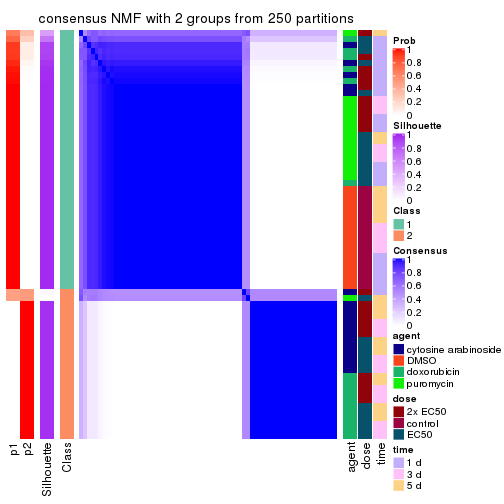
consensus_heatmap(res, k = 3)
consensus_heatmap(res, k = 4)
consensus_heatmap(res, k = 5)
consensus_heatmap(res, k = 6)
Heatmaps for the membership of samples in all partitions to see how consistent they are:
membership_heatmap(res, k = 2)
membership_heatmap(res, k = 3)
membership_heatmap(res, k = 4)
membership_heatmap(res, k = 5)
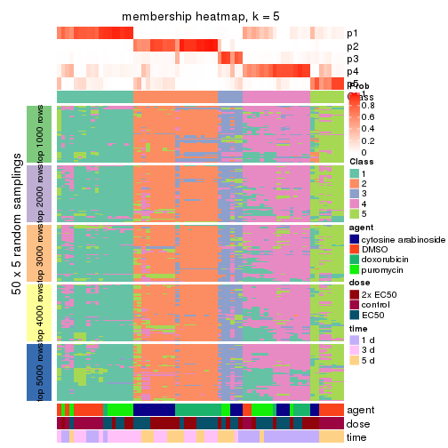
membership_heatmap(res, k = 6)
As soon as we have had the classes for columns, we can look for signatures which are significantly different between classes which can be candidate marks for certain classes. Following are the heatmaps for signatures.
Signature heatmaps where rows are scaled:
get_signatures(res, k = 2)
get_signatures(res, k = 3)
get_signatures(res, k = 4)
get_signatures(res, k = 5)
get_signatures(res, k = 6)
Signature heatmaps where rows are not scaled:
get_signatures(res, k = 2, scale_rows = FALSE)
get_signatures(res, k = 3, scale_rows = FALSE)
get_signatures(res, k = 4, scale_rows = FALSE)
get_signatures(res, k = 5, scale_rows = FALSE)
get_signatures(res, k = 6, scale_rows = FALSE)
Compare the overlap of signatures from different k:
compare_signatures(res)
get_signature() returns a data frame invisibly. TO get the list of signatures, the function
call should be assigned to a variable explicitly. In following code, if plot argument is set
to FALSE, no heatmap is plotted while only the differential analysis is performed.
# code only for demonstration
tb = get_signature(res, k = ..., plot = FALSE)
An example of the output of tb is:
#> which_row fdr mean_1 mean_2 scaled_mean_1 scaled_mean_2 km
#> 1 38 0.042760348 8.373488 9.131774 -0.5533452 0.5164555 1
#> 2 40 0.018707592 7.106213 8.469186 -0.6173731 0.5762149 1
#> 3 55 0.019134737 10.221463 11.207825 -0.6159697 0.5749050 1
#> 4 59 0.006059896 5.921854 7.869574 -0.6899429 0.6439467 1
#> 5 60 0.018055526 8.928898 10.211722 -0.6204761 0.5791110 1
#> 6 98 0.009384629 15.714769 14.887706 0.6635654 -0.6193277 2
...
The columns in tb are:
which_row: row indices corresponding to the input matrix.fdr: FDR for the differential test. mean_x: The mean value in group x.scaled_mean_x: The mean value in group x after rows are scaled.km: Row groups if k-means clustering is applied to rows.UMAP plot which shows how samples are separated.
dimension_reduction(res, k = 2, method = "UMAP")
dimension_reduction(res, k = 3, method = "UMAP")

dimension_reduction(res, k = 4, method = "UMAP")
dimension_reduction(res, k = 5, method = "UMAP")
dimension_reduction(res, k = 6, method = "UMAP")
Following heatmap shows how subgroups are split when increasing k:
collect_classes(res)
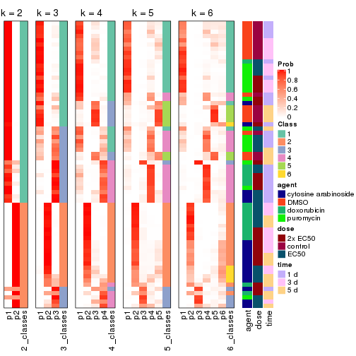
Test correlation between subgroups and known annotations. If the known annotation is numeric, one-way ANOVA test is applied, and if the known annotation is discrete, chi-squared contingency table test is applied.
test_to_known_factors(res)
#> n agent(p) dose(p) time(p) k
#> MAD:NMF 65 3.94e-07 1.76e-03 5.43e-05 2
#> MAD:NMF 61 5.90e-07 9.68e-05 7.73e-05 3
#> MAD:NMF 60 5.42e-08 1.68e-04 9.86e-06 4
#> MAD:NMF 57 2.40e-06 5.37e-04 6.56e-08 5
#> MAD:NMF 48 1.62e-07 8.12e-04 3.35e-08 6
If matrix rows can be associated to genes, consider to use functional_enrichment(res,
...) to perform function enrichment for the signature genes. See this vignette for more detailed explanations.
The object with results only for a single top-value method and a single partition method can be extracted as:
res = res_list["ATC", "hclust"]
# you can also extract it by
# res = res_list["ATC:hclust"]
A summary of res and all the functions that can be applied to it:
res
#> A 'ConsensusPartition' object with k = 2, 3, 4, 5, 6.
#> On a matrix with 21796 rows and 68 columns.
#> Top rows (1000, 2000, 3000, 4000, 5000) are extracted by 'ATC' method.
#> Subgroups are detected by 'hclust' method.
#> Performed in total 1250 partitions by row resampling.
#> Best k for subgroups seems to be 3.
#>
#> Following methods can be applied to this 'ConsensusPartition' object:
#> [1] "cola_report" "collect_classes" "collect_plots"
#> [4] "collect_stats" "colnames" "compare_signatures"
#> [7] "consensus_heatmap" "dimension_reduction" "functional_enrichment"
#> [10] "get_anno_col" "get_anno" "get_classes"
#> [13] "get_consensus" "get_matrix" "get_membership"
#> [16] "get_param" "get_signatures" "get_stats"
#> [19] "is_best_k" "is_stable_k" "membership_heatmap"
#> [22] "ncol" "nrow" "plot_ecdf"
#> [25] "rownames" "select_partition_number" "show"
#> [28] "suggest_best_k" "test_to_known_factors"
collect_plots() function collects all the plots made from res for all k (number of partitions)
into one single page to provide an easy and fast comparison between different k.
collect_plots(res)
The plots are:
k and the heatmap of
predicted classes for each k.k.k.k.All the plots in panels can be made by individual functions and they are plotted later in this section.
select_partition_number() produces several plots showing different
statistics for choosing “optimized” k. There are following statistics:
k;k, the area increased is defined as \(A_k - A_{k-1}\).The detailed explanations of these statistics can be found in the cola vignette.
Generally speaking, lower PAC score, higher mean silhouette score or higher
concordance corresponds to better partition. Rand index and Jaccard index
measure how similar the current partition is compared to partition with k-1.
If they are too similar, we won't accept k is better than k-1.
select_partition_number(res)
The numeric values for all these statistics can be obtained by get_stats().
get_stats(res)
#> k 1-PAC mean_silhouette concordance area_increased Rand Jaccard
#> 2 2 0.838 0.964 0.982 0.2776 0.745 0.745
#> 3 3 0.743 0.847 0.922 0.3541 0.863 0.816
#> 4 4 0.829 0.876 0.960 0.2443 0.901 0.840
#> 5 5 0.782 0.788 0.917 0.5024 0.740 0.518
#> 6 6 0.811 0.703 0.878 0.0139 0.968 0.894
suggest_best_k() suggests the best \(k\) based on these statistics. The rules are as follows:
suggest_best_k(res)
#> [1] 3
Following shows the table of the partitions (You need to click the show/hide
code output link to see it). The membership matrix (columns with name p*)
is inferred by
clue::cl_consensus()
function with the SE method. Basically the value in the membership matrix
represents the probability to belong to a certain group. The finall class
label for an item is determined with the group with highest probability it
belongs to.
In get_classes() function, the entropy is calculated from the membership
matrix and the silhouette score is calculated from the consensus matrix.
cbind(get_classes(res, k = 2), get_membership(res, k = 2))
#> class entropy silhouette p1 p2
#> GSM159850 1 0.000 0.978 1.000 0.000
#> GSM159851 1 0.000 0.978 1.000 0.000
#> GSM159852 1 0.000 0.978 1.000 0.000
#> GSM159853 1 0.000 0.978 1.000 0.000
#> GSM159854 1 0.000 0.978 1.000 0.000
#> GSM159855 1 0.000 0.978 1.000 0.000
#> GSM159856 1 0.000 0.978 1.000 0.000
#> GSM159857 1 0.000 0.978 1.000 0.000
#> GSM159858 1 0.000 0.978 1.000 0.000
#> GSM159859 1 0.000 0.978 1.000 0.000
#> GSM159860 1 0.000 0.978 1.000 0.000
#> GSM159861 1 0.000 0.978 1.000 0.000
#> GSM159862 1 0.000 0.978 1.000 0.000
#> GSM159863 1 0.000 0.978 1.000 0.000
#> GSM159864 1 0.000 0.978 1.000 0.000
#> GSM159865 1 0.000 0.978 1.000 0.000
#> GSM159866 1 0.000 0.978 1.000 0.000
#> GSM159885 1 0.278 0.942 0.952 0.048
#> GSM159886 1 0.000 0.978 1.000 0.000
#> GSM159887 1 0.278 0.942 0.952 0.048
#> GSM159888 1 0.000 0.978 1.000 0.000
#> GSM159889 1 0.000 0.978 1.000 0.000
#> GSM159890 1 0.000 0.978 1.000 0.000
#> GSM159891 2 0.000 1.000 0.000 1.000
#> GSM159892 2 0.000 1.000 0.000 1.000
#> GSM159893 2 0.000 1.000 0.000 1.000
#> GSM159894 1 0.000 0.978 1.000 0.000
#> GSM159895 1 0.706 0.791 0.808 0.192
#> GSM159896 1 0.706 0.791 0.808 0.192
#> GSM159897 1 0.000 0.978 1.000 0.000
#> GSM159898 1 0.000 0.978 1.000 0.000
#> GSM159899 1 0.000 0.978 1.000 0.000
#> GSM159900 2 0.000 1.000 0.000 1.000
#> GSM159901 2 0.000 1.000 0.000 1.000
#> GSM159902 1 0.278 0.942 0.952 0.048
#> GSM159903 1 0.000 0.978 1.000 0.000
#> GSM159904 1 0.278 0.942 0.952 0.048
#> GSM159905 1 0.000 0.978 1.000 0.000
#> GSM159906 1 0.000 0.978 1.000 0.000
#> GSM159907 1 0.000 0.978 1.000 0.000
#> GSM159908 1 0.000 0.978 1.000 0.000
#> GSM159909 1 0.000 0.978 1.000 0.000
#> GSM159910 2 0.000 1.000 0.000 1.000
#> GSM159911 1 0.706 0.791 0.808 0.192
#> GSM159912 1 0.000 0.978 1.000 0.000
#> GSM159913 1 0.000 0.978 1.000 0.000
#> GSM159914 1 0.000 0.978 1.000 0.000
#> GSM159915 1 0.000 0.978 1.000 0.000
#> GSM159916 1 0.000 0.978 1.000 0.000
#> GSM159917 2 0.000 1.000 0.000 1.000
#> GSM159867 1 0.469 0.895 0.900 0.100
#> GSM159868 1 0.706 0.791 0.808 0.192
#> GSM159869 1 0.706 0.791 0.808 0.192
#> GSM159870 1 0.000 0.978 1.000 0.000
#> GSM159871 1 0.000 0.978 1.000 0.000
#> GSM159872 1 0.000 0.978 1.000 0.000
#> GSM159873 2 0.000 1.000 0.000 1.000
#> GSM159874 2 0.000 1.000 0.000 1.000
#> GSM159875 2 0.000 1.000 0.000 1.000
#> GSM159876 1 0.000 0.978 1.000 0.000
#> GSM159877 1 0.000 0.978 1.000 0.000
#> GSM159878 1 0.000 0.978 1.000 0.000
#> GSM159879 1 0.000 0.978 1.000 0.000
#> GSM159880 1 0.000 0.978 1.000 0.000
#> GSM159881 1 0.000 0.978 1.000 0.000
#> GSM159882 1 0.000 0.978 1.000 0.000
#> GSM159883 1 0.000 0.978 1.000 0.000
#> GSM159884 1 0.000 0.978 1.000 0.000
cbind(get_classes(res, k = 3), get_membership(res, k = 3))
#> class entropy silhouette p1 p2 p3
#> GSM159850 1 0.0000 0.9254 1.000 0.000 0.000
#> GSM159851 1 0.0000 0.9254 1.000 0.000 0.000
#> GSM159852 1 0.0000 0.9254 1.000 0.000 0.000
#> GSM159853 1 0.0000 0.9254 1.000 0.000 0.000
#> GSM159854 1 0.0000 0.9254 1.000 0.000 0.000
#> GSM159855 1 0.0000 0.9254 1.000 0.000 0.000
#> GSM159856 1 0.0000 0.9254 1.000 0.000 0.000
#> GSM159857 1 0.0000 0.9254 1.000 0.000 0.000
#> GSM159858 1 0.0000 0.9254 1.000 0.000 0.000
#> GSM159859 1 0.0000 0.9254 1.000 0.000 0.000
#> GSM159860 1 0.0000 0.9254 1.000 0.000 0.000
#> GSM159861 1 0.3551 0.7110 0.868 0.000 0.132
#> GSM159862 1 0.3551 0.7110 0.868 0.000 0.132
#> GSM159863 1 0.3551 0.7110 0.868 0.000 0.132
#> GSM159864 1 0.0000 0.9254 1.000 0.000 0.000
#> GSM159865 1 0.0000 0.9254 1.000 0.000 0.000
#> GSM159866 1 0.0000 0.9254 1.000 0.000 0.000
#> GSM159885 1 0.7034 -0.0338 0.668 0.048 0.284
#> GSM159886 1 0.0000 0.9254 1.000 0.000 0.000
#> GSM159887 1 0.7034 -0.0338 0.668 0.048 0.284
#> GSM159888 1 0.0000 0.9254 1.000 0.000 0.000
#> GSM159889 1 0.0000 0.9254 1.000 0.000 0.000
#> GSM159890 1 0.0000 0.9254 1.000 0.000 0.000
#> GSM159891 2 0.0424 0.9639 0.000 0.992 0.008
#> GSM159892 2 0.0000 0.9674 0.000 1.000 0.000
#> GSM159893 2 0.0424 0.9639 0.000 0.992 0.008
#> GSM159894 1 0.0000 0.9254 1.000 0.000 0.000
#> GSM159895 3 0.7656 0.9660 0.376 0.052 0.572
#> GSM159896 3 0.7656 0.9660 0.376 0.052 0.572
#> GSM159897 1 0.0000 0.9254 1.000 0.000 0.000
#> GSM159898 1 0.0000 0.9254 1.000 0.000 0.000
#> GSM159899 1 0.0000 0.9254 1.000 0.000 0.000
#> GSM159900 2 0.0000 0.9674 0.000 1.000 0.000
#> GSM159901 2 0.0000 0.9674 0.000 1.000 0.000
#> GSM159902 1 0.7034 -0.0338 0.668 0.048 0.284
#> GSM159903 1 0.0237 0.9204 0.996 0.000 0.004
#> GSM159904 1 0.7034 -0.0338 0.668 0.048 0.284
#> GSM159905 1 0.0000 0.9254 1.000 0.000 0.000
#> GSM159906 1 0.0000 0.9254 1.000 0.000 0.000
#> GSM159907 1 0.0000 0.9254 1.000 0.000 0.000
#> GSM159908 1 0.5016 0.4110 0.760 0.000 0.240
#> GSM159909 1 0.5016 0.4110 0.760 0.000 0.240
#> GSM159910 2 0.6215 0.6914 0.000 0.572 0.428
#> GSM159911 3 0.7656 0.9660 0.376 0.052 0.572
#> GSM159912 1 0.0000 0.9254 1.000 0.000 0.000
#> GSM159913 1 0.0000 0.9254 1.000 0.000 0.000
#> GSM159914 1 0.0000 0.9254 1.000 0.000 0.000
#> GSM159915 1 0.0000 0.9254 1.000 0.000 0.000
#> GSM159916 1 0.0000 0.9254 1.000 0.000 0.000
#> GSM159917 2 0.0000 0.9674 0.000 1.000 0.000
#> GSM159867 3 0.7841 0.7987 0.468 0.052 0.480
#> GSM159868 3 0.7656 0.9660 0.376 0.052 0.572
#> GSM159869 3 0.7656 0.9660 0.376 0.052 0.572
#> GSM159870 1 0.0000 0.9254 1.000 0.000 0.000
#> GSM159871 1 0.0000 0.9254 1.000 0.000 0.000
#> GSM159872 1 0.0000 0.9254 1.000 0.000 0.000
#> GSM159873 2 0.0000 0.9674 0.000 1.000 0.000
#> GSM159874 2 0.0000 0.9674 0.000 1.000 0.000
#> GSM159875 2 0.0000 0.9674 0.000 1.000 0.000
#> GSM159876 1 0.0000 0.9254 1.000 0.000 0.000
#> GSM159877 1 0.0000 0.9254 1.000 0.000 0.000
#> GSM159878 1 0.0000 0.9254 1.000 0.000 0.000
#> GSM159879 1 0.0000 0.9254 1.000 0.000 0.000
#> GSM159880 1 0.0000 0.9254 1.000 0.000 0.000
#> GSM159881 1 0.0000 0.9254 1.000 0.000 0.000
#> GSM159882 1 0.0000 0.9254 1.000 0.000 0.000
#> GSM159883 1 0.0000 0.9254 1.000 0.000 0.000
#> GSM159884 1 0.0000 0.9254 1.000 0.000 0.000
cbind(get_classes(res, k = 4), get_membership(res, k = 4))
#> class entropy silhouette p1 p2 p3 p4
#> GSM159850 1 0.0000 0.963 1.000 0.000 0.000 0.000
#> GSM159851 1 0.0000 0.963 1.000 0.000 0.000 0.000
#> GSM159852 1 0.0000 0.963 1.000 0.000 0.000 0.000
#> GSM159853 1 0.0000 0.963 1.000 0.000 0.000 0.000
#> GSM159854 1 0.0000 0.963 1.000 0.000 0.000 0.000
#> GSM159855 1 0.0000 0.963 1.000 0.000 0.000 0.000
#> GSM159856 1 0.0000 0.963 1.000 0.000 0.000 0.000
#> GSM159857 1 0.0000 0.963 1.000 0.000 0.000 0.000
#> GSM159858 1 0.0000 0.963 1.000 0.000 0.000 0.000
#> GSM159859 1 0.0000 0.963 1.000 0.000 0.000 0.000
#> GSM159860 1 0.0000 0.963 1.000 0.000 0.000 0.000
#> GSM159861 1 0.3873 0.662 0.772 0.000 0.000 0.228
#> GSM159862 1 0.3873 0.662 0.772 0.000 0.000 0.228
#> GSM159863 1 0.3873 0.662 0.772 0.000 0.000 0.228
#> GSM159864 1 0.0000 0.963 1.000 0.000 0.000 0.000
#> GSM159865 1 0.0000 0.963 1.000 0.000 0.000 0.000
#> GSM159866 1 0.0000 0.963 1.000 0.000 0.000 0.000
#> GSM159885 4 0.4509 0.621 0.288 0.004 0.000 0.708
#> GSM159886 1 0.0000 0.963 1.000 0.000 0.000 0.000
#> GSM159887 4 0.4509 0.621 0.288 0.004 0.000 0.708
#> GSM159888 1 0.0188 0.962 0.996 0.004 0.000 0.000
#> GSM159889 1 0.0188 0.962 0.996 0.004 0.000 0.000
#> GSM159890 1 0.0188 0.962 0.996 0.004 0.000 0.000
#> GSM159891 3 0.0336 0.992 0.000 0.000 0.992 0.008
#> GSM159892 3 0.0000 0.998 0.000 0.000 1.000 0.000
#> GSM159893 3 0.0336 0.992 0.000 0.000 0.992 0.008
#> GSM159894 1 0.0188 0.962 0.996 0.004 0.000 0.000
#> GSM159895 4 0.0000 0.654 0.000 0.000 0.000 1.000
#> GSM159896 4 0.0000 0.654 0.000 0.000 0.000 1.000
#> GSM159897 1 0.0188 0.962 0.996 0.004 0.000 0.000
#> GSM159898 1 0.0188 0.962 0.996 0.004 0.000 0.000
#> GSM159899 1 0.0188 0.962 0.996 0.004 0.000 0.000
#> GSM159900 3 0.0000 0.998 0.000 0.000 1.000 0.000
#> GSM159901 3 0.0000 0.998 0.000 0.000 1.000 0.000
#> GSM159902 4 0.4509 0.621 0.288 0.004 0.000 0.708
#> GSM159903 1 0.1211 0.924 0.960 0.000 0.000 0.040
#> GSM159904 4 0.4509 0.621 0.288 0.004 0.000 0.708
#> GSM159905 1 0.0000 0.963 1.000 0.000 0.000 0.000
#> GSM159906 1 0.0000 0.963 1.000 0.000 0.000 0.000
#> GSM159907 1 0.0000 0.963 1.000 0.000 0.000 0.000
#> GSM159908 1 0.4781 0.414 0.660 0.004 0.000 0.336
#> GSM159909 1 0.4781 0.414 0.660 0.004 0.000 0.336
#> GSM159910 2 0.0188 0.000 0.000 0.996 0.004 0.000
#> GSM159911 4 0.0000 0.654 0.000 0.000 0.000 1.000
#> GSM159912 1 0.0000 0.963 1.000 0.000 0.000 0.000
#> GSM159913 1 0.0000 0.963 1.000 0.000 0.000 0.000
#> GSM159914 1 0.0000 0.963 1.000 0.000 0.000 0.000
#> GSM159915 1 0.0000 0.963 1.000 0.000 0.000 0.000
#> GSM159916 1 0.0000 0.963 1.000 0.000 0.000 0.000
#> GSM159917 3 0.0000 0.998 0.000 0.000 1.000 0.000
#> GSM159867 4 0.2334 0.660 0.088 0.004 0.000 0.908
#> GSM159868 4 0.0000 0.654 0.000 0.000 0.000 1.000
#> GSM159869 4 0.0000 0.654 0.000 0.000 0.000 1.000
#> GSM159870 1 0.0188 0.962 0.996 0.004 0.000 0.000
#> GSM159871 1 0.0188 0.962 0.996 0.004 0.000 0.000
#> GSM159872 1 0.0188 0.962 0.996 0.004 0.000 0.000
#> GSM159873 3 0.0000 0.998 0.000 0.000 1.000 0.000
#> GSM159874 3 0.0000 0.998 0.000 0.000 1.000 0.000
#> GSM159875 3 0.0000 0.998 0.000 0.000 1.000 0.000
#> GSM159876 1 0.0000 0.963 1.000 0.000 0.000 0.000
#> GSM159877 1 0.0000 0.963 1.000 0.000 0.000 0.000
#> GSM159878 1 0.0000 0.963 1.000 0.000 0.000 0.000
#> GSM159879 1 0.0188 0.962 0.996 0.004 0.000 0.000
#> GSM159880 1 0.0188 0.962 0.996 0.004 0.000 0.000
#> GSM159881 1 0.0188 0.962 0.996 0.004 0.000 0.000
#> GSM159882 1 0.0188 0.962 0.996 0.004 0.000 0.000
#> GSM159883 1 0.0188 0.962 0.996 0.004 0.000 0.000
#> GSM159884 1 0.0188 0.962 0.996 0.004 0.000 0.000
cbind(get_classes(res, k = 5), get_membership(res, k = 5))
#> class entropy silhouette p1 p2 p3 p4 p5
#> GSM159850 1 0.0000 0.8931 1.000 0.000 0.000 0.000 0
#> GSM159851 1 0.0000 0.8931 1.000 0.000 0.000 0.000 0
#> GSM159852 1 0.0000 0.8931 1.000 0.000 0.000 0.000 0
#> GSM159853 1 0.0000 0.8931 1.000 0.000 0.000 0.000 0
#> GSM159854 1 0.1043 0.8848 0.960 0.040 0.000 0.000 0
#> GSM159855 1 0.1043 0.8848 0.960 0.040 0.000 0.000 0
#> GSM159856 1 0.0000 0.8931 1.000 0.000 0.000 0.000 0
#> GSM159857 1 0.0000 0.8931 1.000 0.000 0.000 0.000 0
#> GSM159858 1 0.0000 0.8931 1.000 0.000 0.000 0.000 0
#> GSM159859 1 0.0000 0.8931 1.000 0.000 0.000 0.000 0
#> GSM159860 1 0.0000 0.8931 1.000 0.000 0.000 0.000 0
#> GSM159861 1 0.6491 0.0636 0.488 0.284 0.000 0.228 0
#> GSM159862 1 0.6491 0.0636 0.488 0.284 0.000 0.228 0
#> GSM159863 1 0.6491 0.0636 0.488 0.284 0.000 0.228 0
#> GSM159864 1 0.0162 0.8904 0.996 0.004 0.000 0.000 0
#> GSM159865 1 0.0162 0.8904 0.996 0.004 0.000 0.000 0
#> GSM159866 1 0.0162 0.8904 0.996 0.004 0.000 0.000 0
#> GSM159885 4 0.3884 0.6336 0.004 0.288 0.000 0.708 0
#> GSM159886 1 0.0000 0.8931 1.000 0.000 0.000 0.000 0
#> GSM159887 4 0.3884 0.6336 0.004 0.288 0.000 0.708 0
#> GSM159888 2 0.0162 0.9484 0.004 0.996 0.000 0.000 0
#> GSM159889 2 0.0162 0.9484 0.004 0.996 0.000 0.000 0
#> GSM159890 2 0.0162 0.9484 0.004 0.996 0.000 0.000 0
#> GSM159891 3 0.0290 0.9917 0.000 0.000 0.992 0.008 0
#> GSM159892 3 0.0000 0.9976 0.000 0.000 1.000 0.000 0
#> GSM159893 3 0.0290 0.9917 0.000 0.000 0.992 0.008 0
#> GSM159894 2 0.4306 -0.0763 0.492 0.508 0.000 0.000 0
#> GSM159895 4 0.0000 0.6136 0.000 0.000 0.000 1.000 0
#> GSM159896 4 0.0000 0.6136 0.000 0.000 0.000 1.000 0
#> GSM159897 2 0.0162 0.9484 0.004 0.996 0.000 0.000 0
#> GSM159898 2 0.0162 0.9484 0.004 0.996 0.000 0.000 0
#> GSM159899 2 0.0162 0.9484 0.004 0.996 0.000 0.000 0
#> GSM159900 3 0.0000 0.9976 0.000 0.000 1.000 0.000 0
#> GSM159901 3 0.0000 0.9976 0.000 0.000 1.000 0.000 0
#> GSM159902 4 0.3884 0.6336 0.004 0.288 0.000 0.708 0
#> GSM159903 1 0.2077 0.8567 0.920 0.040 0.000 0.040 0
#> GSM159904 4 0.3884 0.6336 0.004 0.288 0.000 0.708 0
#> GSM159905 1 0.1043 0.8848 0.960 0.040 0.000 0.000 0
#> GSM159906 1 0.1043 0.8848 0.960 0.040 0.000 0.000 0
#> GSM159907 1 0.1043 0.8848 0.960 0.040 0.000 0.000 0
#> GSM159908 4 0.6826 0.2837 0.328 0.336 0.000 0.336 0
#> GSM159909 4 0.6826 0.2837 0.328 0.336 0.000 0.336 0
#> GSM159910 5 0.0000 0.0000 0.000 0.000 0.000 0.000 1
#> GSM159911 4 0.0000 0.6136 0.000 0.000 0.000 1.000 0
#> GSM159912 1 0.0000 0.8931 1.000 0.000 0.000 0.000 0
#> GSM159913 1 0.0000 0.8931 1.000 0.000 0.000 0.000 0
#> GSM159914 1 0.1043 0.8848 0.960 0.040 0.000 0.000 0
#> GSM159915 1 0.1043 0.8848 0.960 0.040 0.000 0.000 0
#> GSM159916 1 0.1043 0.8848 0.960 0.040 0.000 0.000 0
#> GSM159917 3 0.0000 0.9976 0.000 0.000 1.000 0.000 0
#> GSM159867 4 0.1908 0.6324 0.000 0.092 0.000 0.908 0
#> GSM159868 4 0.0000 0.6136 0.000 0.000 0.000 1.000 0
#> GSM159869 4 0.0000 0.6136 0.000 0.000 0.000 1.000 0
#> GSM159870 2 0.0162 0.9484 0.004 0.996 0.000 0.000 0
#> GSM159871 2 0.0162 0.9484 0.004 0.996 0.000 0.000 0
#> GSM159872 2 0.0162 0.9484 0.004 0.996 0.000 0.000 0
#> GSM159873 3 0.0000 0.9976 0.000 0.000 1.000 0.000 0
#> GSM159874 3 0.0000 0.9976 0.000 0.000 1.000 0.000 0
#> GSM159875 3 0.0000 0.9976 0.000 0.000 1.000 0.000 0
#> GSM159876 1 0.3003 0.7069 0.812 0.188 0.000 0.000 0
#> GSM159877 1 0.3003 0.7069 0.812 0.188 0.000 0.000 0
#> GSM159878 1 0.3003 0.7069 0.812 0.188 0.000 0.000 0
#> GSM159879 2 0.0162 0.9484 0.004 0.996 0.000 0.000 0
#> GSM159880 2 0.0162 0.9484 0.004 0.996 0.000 0.000 0
#> GSM159881 2 0.0162 0.9484 0.004 0.996 0.000 0.000 0
#> GSM159882 2 0.0162 0.9484 0.004 0.996 0.000 0.000 0
#> GSM159883 2 0.0162 0.9484 0.004 0.996 0.000 0.000 0
#> GSM159884 2 0.0162 0.9484 0.004 0.996 0.000 0.000 0
cbind(get_classes(res, k = 6), get_membership(res, k = 6))
#> class entropy silhouette p1 p2 p3 p4 p5 p6
#> GSM159850 1 0.0000 0.89075 1.000 0.000 0.000 0.000 0.000 0.000
#> GSM159851 1 0.0000 0.89075 1.000 0.000 0.000 0.000 0.000 0.000
#> GSM159852 1 0.0000 0.89075 1.000 0.000 0.000 0.000 0.000 0.000
#> GSM159853 1 0.0146 0.89033 0.996 0.000 0.000 0.000 0.000 0.004
#> GSM159854 1 0.1082 0.88427 0.956 0.040 0.000 0.000 0.000 0.004
#> GSM159855 1 0.1082 0.88427 0.956 0.040 0.000 0.000 0.000 0.004
#> GSM159856 1 0.0000 0.89075 1.000 0.000 0.000 0.000 0.000 0.000
#> GSM159857 1 0.0000 0.89075 1.000 0.000 0.000 0.000 0.000 0.000
#> GSM159858 1 0.0000 0.89075 1.000 0.000 0.000 0.000 0.000 0.000
#> GSM159859 1 0.0000 0.89075 1.000 0.000 0.000 0.000 0.000 0.000
#> GSM159860 1 0.0000 0.89075 1.000 0.000 0.000 0.000 0.000 0.000
#> GSM159861 1 0.6145 0.15780 0.476 0.284 0.000 0.228 0.000 0.012
#> GSM159862 1 0.6145 0.15780 0.476 0.284 0.000 0.228 0.000 0.012
#> GSM159863 1 0.6145 0.15780 0.476 0.284 0.000 0.228 0.000 0.012
#> GSM159864 1 0.0547 0.88363 0.980 0.000 0.000 0.000 0.000 0.020
#> GSM159865 1 0.0547 0.88363 0.980 0.000 0.000 0.000 0.000 0.020
#> GSM159866 1 0.0547 0.88363 0.980 0.000 0.000 0.000 0.000 0.020
#> GSM159885 4 0.3489 0.71249 0.004 0.288 0.000 0.708 0.000 0.000
#> GSM159886 1 0.0000 0.89075 1.000 0.000 0.000 0.000 0.000 0.000
#> GSM159887 4 0.3489 0.71249 0.004 0.288 0.000 0.708 0.000 0.000
#> GSM159888 2 0.0000 0.85916 0.000 1.000 0.000 0.000 0.000 0.000
#> GSM159889 2 0.0000 0.85916 0.000 1.000 0.000 0.000 0.000 0.000
#> GSM159890 2 0.0000 0.85916 0.000 1.000 0.000 0.000 0.000 0.000
#> GSM159891 6 0.6026 1.00000 0.000 0.000 0.244 0.000 0.376 0.380
#> GSM159892 5 0.6053 -0.98382 0.000 0.000 0.256 0.000 0.376 0.368
#> GSM159893 6 0.6026 1.00000 0.000 0.000 0.244 0.000 0.376 0.380
#> GSM159894 2 0.4183 -0.03629 0.480 0.508 0.000 0.000 0.000 0.012
#> GSM159895 4 0.0000 0.76952 0.000 0.000 0.000 1.000 0.000 0.000
#> GSM159896 4 0.0000 0.76952 0.000 0.000 0.000 1.000 0.000 0.000
#> GSM159897 2 0.0000 0.85916 0.000 1.000 0.000 0.000 0.000 0.000
#> GSM159898 2 0.0000 0.85916 0.000 1.000 0.000 0.000 0.000 0.000
#> GSM159899 2 0.0000 0.85916 0.000 1.000 0.000 0.000 0.000 0.000
#> GSM159900 3 0.0000 0.70953 0.000 0.000 1.000 0.000 0.000 0.000
#> GSM159901 3 0.0000 0.70953 0.000 0.000 1.000 0.000 0.000 0.000
#> GSM159902 4 0.3489 0.71249 0.004 0.288 0.000 0.708 0.000 0.000
#> GSM159903 1 0.2222 0.85483 0.908 0.040 0.000 0.040 0.000 0.012
#> GSM159904 4 0.3489 0.71249 0.004 0.288 0.000 0.708 0.000 0.000
#> GSM159905 1 0.1196 0.88337 0.952 0.040 0.000 0.000 0.000 0.008
#> GSM159906 1 0.1196 0.88337 0.952 0.040 0.000 0.000 0.000 0.008
#> GSM159907 1 0.1196 0.88337 0.952 0.040 0.000 0.000 0.000 0.008
#> GSM159908 2 0.6418 -0.17474 0.316 0.336 0.000 0.336 0.000 0.012
#> GSM159909 2 0.6418 -0.17474 0.316 0.336 0.000 0.336 0.000 0.012
#> GSM159910 5 0.3695 -0.00254 0.000 0.000 0.000 0.000 0.624 0.376
#> GSM159911 4 0.0000 0.76952 0.000 0.000 0.000 1.000 0.000 0.000
#> GSM159912 1 0.0363 0.88983 0.988 0.000 0.000 0.000 0.000 0.012
#> GSM159913 1 0.0363 0.88983 0.988 0.000 0.000 0.000 0.000 0.012
#> GSM159914 1 0.1196 0.88337 0.952 0.040 0.000 0.000 0.000 0.008
#> GSM159915 1 0.1196 0.88337 0.952 0.040 0.000 0.000 0.000 0.008
#> GSM159916 1 0.1196 0.88337 0.952 0.040 0.000 0.000 0.000 0.008
#> GSM159917 3 0.2883 0.53823 0.000 0.000 0.788 0.000 0.000 0.212
#> GSM159867 4 0.1714 0.76652 0.000 0.092 0.000 0.908 0.000 0.000
#> GSM159868 4 0.0000 0.76952 0.000 0.000 0.000 1.000 0.000 0.000
#> GSM159869 4 0.0000 0.76952 0.000 0.000 0.000 1.000 0.000 0.000
#> GSM159870 2 0.0000 0.85916 0.000 1.000 0.000 0.000 0.000 0.000
#> GSM159871 2 0.0000 0.85916 0.000 1.000 0.000 0.000 0.000 0.000
#> GSM159872 2 0.0000 0.85916 0.000 1.000 0.000 0.000 0.000 0.000
#> GSM159873 3 0.3695 0.14292 0.000 0.000 0.624 0.000 0.376 0.000
#> GSM159874 3 0.0000 0.70953 0.000 0.000 1.000 0.000 0.000 0.000
#> GSM159875 3 0.3695 0.14292 0.000 0.000 0.624 0.000 0.376 0.000
#> GSM159876 1 0.2697 0.71633 0.812 0.188 0.000 0.000 0.000 0.000
#> GSM159877 1 0.2697 0.71633 0.812 0.188 0.000 0.000 0.000 0.000
#> GSM159878 1 0.2697 0.71633 0.812 0.188 0.000 0.000 0.000 0.000
#> GSM159879 2 0.0000 0.85916 0.000 1.000 0.000 0.000 0.000 0.000
#> GSM159880 2 0.0000 0.85916 0.000 1.000 0.000 0.000 0.000 0.000
#> GSM159881 2 0.0000 0.85916 0.000 1.000 0.000 0.000 0.000 0.000
#> GSM159882 2 0.0000 0.85916 0.000 1.000 0.000 0.000 0.000 0.000
#> GSM159883 2 0.0000 0.85916 0.000 1.000 0.000 0.000 0.000 0.000
#> GSM159884 2 0.0000 0.85916 0.000 1.000 0.000 0.000 0.000 0.000
Heatmaps for the consensus matrix. It visualizes the probability of two samples to be in a same group.
consensus_heatmap(res, k = 2)
consensus_heatmap(res, k = 3)
consensus_heatmap(res, k = 4)
consensus_heatmap(res, k = 5)
consensus_heatmap(res, k = 6)
Heatmaps for the membership of samples in all partitions to see how consistent they are:
membership_heatmap(res, k = 2)
membership_heatmap(res, k = 3)
membership_heatmap(res, k = 4)
membership_heatmap(res, k = 5)
membership_heatmap(res, k = 6)
As soon as we have had the classes for columns, we can look for signatures which are significantly different between classes which can be candidate marks for certain classes. Following are the heatmaps for signatures.
Signature heatmaps where rows are scaled:
get_signatures(res, k = 2)
get_signatures(res, k = 3)
get_signatures(res, k = 4)
get_signatures(res, k = 5)
get_signatures(res, k = 6)
Signature heatmaps where rows are not scaled:
get_signatures(res, k = 2, scale_rows = FALSE)
get_signatures(res, k = 3, scale_rows = FALSE)
get_signatures(res, k = 4, scale_rows = FALSE)
get_signatures(res, k = 5, scale_rows = FALSE)

get_signatures(res, k = 6, scale_rows = FALSE)
Compare the overlap of signatures from different k:
compare_signatures(res)
get_signature() returns a data frame invisibly. TO get the list of signatures, the function
call should be assigned to a variable explicitly. In following code, if plot argument is set
to FALSE, no heatmap is plotted while only the differential analysis is performed.
# code only for demonstration
tb = get_signature(res, k = ..., plot = FALSE)
An example of the output of tb is:
#> which_row fdr mean_1 mean_2 scaled_mean_1 scaled_mean_2 km
#> 1 38 0.042760348 8.373488 9.131774 -0.5533452 0.5164555 1
#> 2 40 0.018707592 7.106213 8.469186 -0.6173731 0.5762149 1
#> 3 55 0.019134737 10.221463 11.207825 -0.6159697 0.5749050 1
#> 4 59 0.006059896 5.921854 7.869574 -0.6899429 0.6439467 1
#> 5 60 0.018055526 8.928898 10.211722 -0.6204761 0.5791110 1
#> 6 98 0.009384629 15.714769 14.887706 0.6635654 -0.6193277 2
...
The columns in tb are:
which_row: row indices corresponding to the input matrix.fdr: FDR for the differential test. mean_x: The mean value in group x.scaled_mean_x: The mean value in group x after rows are scaled.km: Row groups if k-means clustering is applied to rows.UMAP plot which shows how samples are separated.
dimension_reduction(res, k = 2, method = "UMAP")
dimension_reduction(res, k = 3, method = "UMAP")
dimension_reduction(res, k = 4, method = "UMAP")
dimension_reduction(res, k = 5, method = "UMAP")
dimension_reduction(res, k = 6, method = "UMAP")
Following heatmap shows how subgroups are split when increasing k:
collect_classes(res)
Test correlation between subgroups and known annotations. If the known annotation is numeric, one-way ANOVA test is applied, and if the known annotation is discrete, chi-squared contingency table test is applied.
test_to_known_factors(res)
#> n agent(p) dose(p) time(p) k
#> ATC:hclust 68 1.13e-01 0.056870 2.00e-06 2
#> ATC:hclust 62 9.39e-02 0.017576 6.38e-08 3
#> ATC:hclust 65 4.14e-02 0.005932 4.01e-09 4
#> ATC:hclust 61 4.41e-06 0.000124 4.80e-11 5
#> ATC:hclust 58 2.49e-05 0.000381 1.67e-08 6
If matrix rows can be associated to genes, consider to use functional_enrichment(res,
...) to perform function enrichment for the signature genes. See this vignette for more detailed explanations.
The object with results only for a single top-value method and a single partition method can be extracted as:
res = res_list["ATC", "kmeans"]
# you can also extract it by
# res = res_list["ATC:kmeans"]
A summary of res and all the functions that can be applied to it:
res
#> A 'ConsensusPartition' object with k = 2, 3, 4, 5, 6.
#> On a matrix with 21796 rows and 68 columns.
#> Top rows (1000, 2000, 3000, 4000, 5000) are extracted by 'ATC' method.
#> Subgroups are detected by 'kmeans' method.
#> Performed in total 1250 partitions by row resampling.
#> Best k for subgroups seems to be 4.
#>
#> Following methods can be applied to this 'ConsensusPartition' object:
#> [1] "cola_report" "collect_classes" "collect_plots"
#> [4] "collect_stats" "colnames" "compare_signatures"
#> [7] "consensus_heatmap" "dimension_reduction" "functional_enrichment"
#> [10] "get_anno_col" "get_anno" "get_classes"
#> [13] "get_consensus" "get_matrix" "get_membership"
#> [16] "get_param" "get_signatures" "get_stats"
#> [19] "is_best_k" "is_stable_k" "membership_heatmap"
#> [22] "ncol" "nrow" "plot_ecdf"
#> [25] "rownames" "select_partition_number" "show"
#> [28] "suggest_best_k" "test_to_known_factors"
collect_plots() function collects all the plots made from res for all k (number of partitions)
into one single page to provide an easy and fast comparison between different k.
collect_plots(res)
The plots are:
k and the heatmap of
predicted classes for each k.k.k.k.All the plots in panels can be made by individual functions and they are plotted later in this section.
select_partition_number() produces several plots showing different
statistics for choosing “optimized” k. There are following statistics:
k;k, the area increased is defined as \(A_k - A_{k-1}\).The detailed explanations of these statistics can be found in the cola vignette.
Generally speaking, lower PAC score, higher mean silhouette score or higher
concordance corresponds to better partition. Rand index and Jaccard index
measure how similar the current partition is compared to partition with k-1.
If they are too similar, we won't accept k is better than k-1.
select_partition_number(res)
The numeric values for all these statistics can be obtained by get_stats().
get_stats(res)
#> k 1-PAC mean_silhouette concordance area_increased Rand Jaccard
#> 2 2 0.566 0.830 0.870 0.3628 0.668 0.668
#> 3 3 0.655 0.875 0.894 0.6800 0.629 0.476
#> 4 4 0.802 0.879 0.890 0.1489 0.903 0.746
#> 5 5 0.777 0.638 0.785 0.0898 0.947 0.826
#> 6 6 0.774 0.679 0.787 0.0512 0.886 0.605
suggest_best_k() suggests the best \(k\) based on these statistics. The rules are as follows:
suggest_best_k(res)
#> [1] 4
Following shows the table of the partitions (You need to click the show/hide
code output link to see it). The membership matrix (columns with name p*)
is inferred by
clue::cl_consensus()
function with the SE method. Basically the value in the membership matrix
represents the probability to belong to a certain group. The finall class
label for an item is determined with the group with highest probability it
belongs to.
In get_classes() function, the entropy is calculated from the membership
matrix and the silhouette score is calculated from the consensus matrix.
cbind(get_classes(res, k = 2), get_membership(res, k = 2))
#> class entropy silhouette p1 p2
#> GSM159850 1 0.000 0.895 1.000 0.000
#> GSM159851 1 0.000 0.895 1.000 0.000
#> GSM159852 1 0.000 0.895 1.000 0.000
#> GSM159853 1 0.000 0.895 1.000 0.000
#> GSM159854 1 0.000 0.895 1.000 0.000
#> GSM159855 1 0.000 0.895 1.000 0.000
#> GSM159856 1 0.000 0.895 1.000 0.000
#> GSM159857 1 0.000 0.895 1.000 0.000
#> GSM159858 1 0.000 0.895 1.000 0.000
#> GSM159859 1 0.000 0.895 1.000 0.000
#> GSM159860 1 0.000 0.895 1.000 0.000
#> GSM159861 1 0.000 0.895 1.000 0.000
#> GSM159862 1 0.000 0.895 1.000 0.000
#> GSM159863 1 0.000 0.895 1.000 0.000
#> GSM159864 1 0.000 0.895 1.000 0.000
#> GSM159865 1 0.000 0.895 1.000 0.000
#> GSM159866 1 0.000 0.895 1.000 0.000
#> GSM159885 1 0.855 0.693 0.720 0.280
#> GSM159886 1 0.000 0.895 1.000 0.000
#> GSM159887 1 0.000 0.895 1.000 0.000
#> GSM159888 1 0.871 0.678 0.708 0.292
#> GSM159889 1 0.644 0.799 0.836 0.164
#> GSM159890 1 0.871 0.678 0.708 0.292
#> GSM159891 2 0.000 0.911 0.000 1.000
#> GSM159892 2 0.000 0.911 0.000 1.000
#> GSM159893 2 0.000 0.911 0.000 1.000
#> GSM159894 1 0.000 0.895 1.000 0.000
#> GSM159895 1 0.871 0.678 0.708 0.292
#> GSM159896 2 0.939 0.381 0.356 0.644
#> GSM159897 1 0.871 0.678 0.708 0.292
#> GSM159898 1 0.644 0.799 0.836 0.164
#> GSM159899 1 0.871 0.678 0.708 0.292
#> GSM159900 2 0.000 0.911 0.000 1.000
#> GSM159901 2 0.000 0.911 0.000 1.000
#> GSM159902 1 0.000 0.895 1.000 0.000
#> GSM159903 1 0.000 0.895 1.000 0.000
#> GSM159904 1 0.000 0.895 1.000 0.000
#> GSM159905 1 0.000 0.895 1.000 0.000
#> GSM159906 1 0.000 0.895 1.000 0.000
#> GSM159907 1 0.000 0.895 1.000 0.000
#> GSM159908 1 0.000 0.895 1.000 0.000
#> GSM159909 1 0.000 0.895 1.000 0.000
#> GSM159910 2 0.000 0.911 0.000 1.000
#> GSM159911 2 0.000 0.911 0.000 1.000
#> GSM159912 1 0.000 0.895 1.000 0.000
#> GSM159913 1 0.000 0.895 1.000 0.000
#> GSM159914 1 0.000 0.895 1.000 0.000
#> GSM159915 1 0.000 0.895 1.000 0.000
#> GSM159916 1 0.000 0.895 1.000 0.000
#> GSM159917 2 0.000 0.911 0.000 1.000
#> GSM159867 1 0.844 0.702 0.728 0.272
#> GSM159868 2 0.939 0.381 0.356 0.644
#> GSM159869 2 0.795 0.633 0.240 0.760
#> GSM159870 1 0.644 0.799 0.836 0.164
#> GSM159871 1 0.833 0.710 0.736 0.264
#> GSM159872 1 0.861 0.688 0.716 0.284
#> GSM159873 2 0.000 0.911 0.000 1.000
#> GSM159874 2 0.000 0.911 0.000 1.000
#> GSM159875 2 0.000 0.911 0.000 1.000
#> GSM159876 1 0.000 0.895 1.000 0.000
#> GSM159877 1 0.000 0.895 1.000 0.000
#> GSM159878 1 0.000 0.895 1.000 0.000
#> GSM159879 1 0.644 0.799 0.836 0.164
#> GSM159880 1 0.833 0.710 0.736 0.264
#> GSM159881 1 0.871 0.678 0.708 0.292
#> GSM159882 1 0.871 0.678 0.708 0.292
#> GSM159883 1 0.871 0.678 0.708 0.292
#> GSM159884 1 0.871 0.678 0.708 0.292
cbind(get_classes(res, k = 3), get_membership(res, k = 3))
#> class entropy silhouette p1 p2 p3
#> GSM159850 1 0.0000 0.965 1.000 0.000 0.000
#> GSM159851 1 0.0000 0.965 1.000 0.000 0.000
#> GSM159852 1 0.0000 0.965 1.000 0.000 0.000
#> GSM159853 1 0.0000 0.965 1.000 0.000 0.000
#> GSM159854 1 0.0237 0.964 0.996 0.004 0.000
#> GSM159855 1 0.0237 0.964 0.996 0.004 0.000
#> GSM159856 1 0.0000 0.965 1.000 0.000 0.000
#> GSM159857 1 0.0000 0.965 1.000 0.000 0.000
#> GSM159858 1 0.0000 0.965 1.000 0.000 0.000
#> GSM159859 1 0.0000 0.965 1.000 0.000 0.000
#> GSM159860 1 0.0000 0.965 1.000 0.000 0.000
#> GSM159861 1 0.1860 0.932 0.948 0.052 0.000
#> GSM159862 1 0.4178 0.811 0.828 0.172 0.000
#> GSM159863 1 0.4121 0.816 0.832 0.168 0.000
#> GSM159864 1 0.1636 0.942 0.964 0.020 0.016
#> GSM159865 1 0.1636 0.942 0.964 0.020 0.016
#> GSM159866 1 0.1636 0.942 0.964 0.020 0.016
#> GSM159885 2 0.4002 0.750 0.160 0.840 0.000
#> GSM159886 1 0.0000 0.965 1.000 0.000 0.000
#> GSM159887 2 0.4887 0.703 0.228 0.772 0.000
#> GSM159888 2 0.5780 0.826 0.080 0.800 0.120
#> GSM159889 2 0.5892 0.824 0.104 0.796 0.100
#> GSM159890 2 0.5780 0.826 0.080 0.800 0.120
#> GSM159891 3 0.0892 0.985 0.000 0.020 0.980
#> GSM159892 3 0.0892 0.985 0.000 0.020 0.980
#> GSM159893 3 0.0892 0.985 0.000 0.020 0.980
#> GSM159894 1 0.4931 0.655 0.768 0.232 0.000
#> GSM159895 2 0.4731 0.732 0.032 0.840 0.128
#> GSM159896 2 0.4453 0.709 0.012 0.836 0.152
#> GSM159897 2 0.5780 0.826 0.080 0.800 0.120
#> GSM159898 2 0.5892 0.824 0.104 0.796 0.100
#> GSM159899 2 0.5780 0.826 0.080 0.800 0.120
#> GSM159900 3 0.0892 0.985 0.000 0.020 0.980
#> GSM159901 3 0.0892 0.985 0.000 0.020 0.980
#> GSM159902 2 0.4887 0.703 0.228 0.772 0.000
#> GSM159903 1 0.4235 0.804 0.824 0.176 0.000
#> GSM159904 2 0.4887 0.703 0.228 0.772 0.000
#> GSM159905 1 0.0475 0.964 0.992 0.004 0.004
#> GSM159906 1 0.0475 0.964 0.992 0.004 0.004
#> GSM159907 1 0.0475 0.964 0.992 0.004 0.004
#> GSM159908 2 0.4887 0.703 0.228 0.772 0.000
#> GSM159909 2 0.5431 0.636 0.284 0.716 0.000
#> GSM159910 3 0.2625 0.936 0.000 0.084 0.916
#> GSM159911 2 0.5327 0.548 0.000 0.728 0.272
#> GSM159912 1 0.0237 0.964 0.996 0.004 0.000
#> GSM159913 1 0.0892 0.954 0.980 0.020 0.000
#> GSM159914 1 0.0475 0.964 0.992 0.004 0.004
#> GSM159915 1 0.0475 0.964 0.992 0.004 0.004
#> GSM159916 1 0.0475 0.964 0.992 0.004 0.004
#> GSM159917 3 0.2356 0.939 0.000 0.072 0.928
#> GSM159867 2 0.4002 0.750 0.160 0.840 0.000
#> GSM159868 2 0.4453 0.709 0.012 0.836 0.152
#> GSM159869 2 0.4453 0.709 0.012 0.836 0.152
#> GSM159870 2 0.5892 0.824 0.104 0.796 0.100
#> GSM159871 2 0.5804 0.827 0.088 0.800 0.112
#> GSM159872 2 0.5804 0.827 0.088 0.800 0.112
#> GSM159873 3 0.0892 0.985 0.000 0.020 0.980
#> GSM159874 3 0.0892 0.985 0.000 0.020 0.980
#> GSM159875 3 0.0892 0.985 0.000 0.020 0.980
#> GSM159876 1 0.0000 0.965 1.000 0.000 0.000
#> GSM159877 1 0.0000 0.965 1.000 0.000 0.000
#> GSM159878 1 0.0000 0.965 1.000 0.000 0.000
#> GSM159879 2 0.5889 0.826 0.096 0.796 0.108
#> GSM159880 2 0.5804 0.827 0.088 0.800 0.112
#> GSM159881 2 0.5036 0.811 0.048 0.832 0.120
#> GSM159882 2 0.5780 0.826 0.080 0.800 0.120
#> GSM159883 2 0.5780 0.826 0.080 0.800 0.120
#> GSM159884 2 0.5780 0.826 0.080 0.800 0.120
cbind(get_classes(res, k = 4), get_membership(res, k = 4))
#> class entropy silhouette p1 p2 p3 p4
#> GSM159850 1 0.0188 0.9082 0.996 0.000 0.004 0.000
#> GSM159851 1 0.0000 0.9090 1.000 0.000 0.000 0.000
#> GSM159852 1 0.0188 0.9082 0.996 0.000 0.004 0.000
#> GSM159853 1 0.0000 0.9090 1.000 0.000 0.000 0.000
#> GSM159854 1 0.2197 0.9009 0.916 0.000 0.004 0.080
#> GSM159855 1 0.2197 0.9009 0.916 0.000 0.004 0.080
#> GSM159856 1 0.0188 0.9082 0.996 0.000 0.004 0.000
#> GSM159857 1 0.0921 0.9091 0.972 0.000 0.000 0.028
#> GSM159858 1 0.0779 0.9097 0.980 0.000 0.004 0.016
#> GSM159859 1 0.0779 0.9097 0.980 0.000 0.004 0.016
#> GSM159860 1 0.0188 0.9082 0.996 0.000 0.004 0.000
#> GSM159861 1 0.3973 0.8005 0.792 0.004 0.004 0.200
#> GSM159862 1 0.5457 0.2161 0.516 0.008 0.004 0.472
#> GSM159863 1 0.5457 0.2161 0.516 0.008 0.004 0.472
#> GSM159864 1 0.2876 0.8506 0.892 0.008 0.008 0.092
#> GSM159865 1 0.2876 0.8506 0.892 0.008 0.008 0.092
#> GSM159866 1 0.2876 0.8506 0.892 0.008 0.008 0.092
#> GSM159885 4 0.5292 0.8558 0.060 0.216 0.000 0.724
#> GSM159886 1 0.0188 0.9082 0.996 0.000 0.004 0.000
#> GSM159887 4 0.5314 0.8621 0.084 0.176 0.000 0.740
#> GSM159888 2 0.1624 0.9796 0.020 0.952 0.000 0.028
#> GSM159889 2 0.1913 0.9701 0.020 0.940 0.000 0.040
#> GSM159890 2 0.1624 0.9796 0.020 0.952 0.000 0.028
#> GSM159891 3 0.2224 0.9750 0.000 0.032 0.928 0.040
#> GSM159892 3 0.2224 0.9750 0.000 0.032 0.928 0.040
#> GSM159893 3 0.2224 0.9750 0.000 0.032 0.928 0.040
#> GSM159894 1 0.4860 0.6903 0.768 0.044 0.004 0.184
#> GSM159895 4 0.5398 0.8374 0.004 0.216 0.056 0.724
#> GSM159896 4 0.5471 0.8352 0.004 0.216 0.060 0.720
#> GSM159897 2 0.1624 0.9796 0.020 0.952 0.000 0.028
#> GSM159898 2 0.1913 0.9701 0.020 0.940 0.000 0.040
#> GSM159899 2 0.1624 0.9796 0.020 0.952 0.000 0.028
#> GSM159900 3 0.0707 0.9736 0.000 0.020 0.980 0.000
#> GSM159901 3 0.0707 0.9736 0.000 0.020 0.980 0.000
#> GSM159902 4 0.5376 0.8614 0.088 0.176 0.000 0.736
#> GSM159903 4 0.5543 -0.0207 0.444 0.004 0.012 0.540
#> GSM159904 4 0.5376 0.8614 0.088 0.176 0.000 0.736
#> GSM159905 1 0.2542 0.8971 0.904 0.000 0.012 0.084
#> GSM159906 1 0.2402 0.9007 0.912 0.000 0.012 0.076
#> GSM159907 1 0.2402 0.9007 0.912 0.000 0.012 0.076
#> GSM159908 4 0.5376 0.8614 0.088 0.176 0.000 0.736
#> GSM159909 4 0.5348 0.7972 0.108 0.112 0.012 0.768
#> GSM159910 3 0.1743 0.9494 0.000 0.004 0.940 0.056
#> GSM159911 4 0.5476 0.7946 0.000 0.144 0.120 0.736
#> GSM159912 1 0.2179 0.9036 0.924 0.000 0.012 0.064
#> GSM159913 1 0.2402 0.9007 0.912 0.000 0.012 0.076
#> GSM159914 1 0.2402 0.9007 0.912 0.000 0.012 0.076
#> GSM159915 1 0.2402 0.9007 0.912 0.000 0.012 0.076
#> GSM159916 1 0.2542 0.8971 0.904 0.000 0.012 0.084
#> GSM159917 3 0.1004 0.9624 0.000 0.004 0.972 0.024
#> GSM159867 4 0.5327 0.8555 0.060 0.220 0.000 0.720
#> GSM159868 4 0.5505 0.8347 0.004 0.220 0.060 0.716
#> GSM159869 4 0.5471 0.8348 0.004 0.216 0.060 0.720
#> GSM159870 2 0.0707 0.9853 0.020 0.980 0.000 0.000
#> GSM159871 2 0.0707 0.9853 0.020 0.980 0.000 0.000
#> GSM159872 2 0.0707 0.9853 0.020 0.980 0.000 0.000
#> GSM159873 3 0.2224 0.9750 0.000 0.032 0.928 0.040
#> GSM159874 3 0.0707 0.9736 0.000 0.020 0.980 0.000
#> GSM159875 3 0.1936 0.9756 0.000 0.032 0.940 0.028
#> GSM159876 1 0.0376 0.9069 0.992 0.000 0.004 0.004
#> GSM159877 1 0.0779 0.9095 0.980 0.000 0.004 0.016
#> GSM159878 1 0.0376 0.9069 0.992 0.000 0.004 0.004
#> GSM159879 2 0.0707 0.9853 0.020 0.980 0.000 0.000
#> GSM159880 2 0.0707 0.9853 0.020 0.980 0.000 0.000
#> GSM159881 2 0.0779 0.9657 0.004 0.980 0.000 0.016
#> GSM159882 2 0.0707 0.9853 0.020 0.980 0.000 0.000
#> GSM159883 2 0.0707 0.9853 0.020 0.980 0.000 0.000
#> GSM159884 2 0.0707 0.9853 0.020 0.980 0.000 0.000
cbind(get_classes(res, k = 5), get_membership(res, k = 5))
#> class entropy silhouette p1 p2 p3 p4 p5
#> GSM159850 1 0.351 0.0960 0.748 0.000 0.000 0.000 0.252
#> GSM159851 1 0.340 0.1300 0.764 0.000 0.000 0.000 0.236
#> GSM159852 1 0.351 0.0960 0.748 0.000 0.000 0.000 0.252
#> GSM159853 1 0.340 0.1300 0.764 0.000 0.000 0.000 0.236
#> GSM159854 1 0.236 0.3998 0.900 0.000 0.000 0.024 0.076
#> GSM159855 1 0.236 0.3998 0.900 0.000 0.000 0.024 0.076
#> GSM159856 1 0.351 0.0960 0.748 0.000 0.000 0.000 0.252
#> GSM159857 1 0.327 0.1495 0.780 0.000 0.000 0.000 0.220
#> GSM159858 1 0.345 0.1221 0.756 0.000 0.000 0.000 0.244
#> GSM159859 1 0.345 0.1221 0.756 0.000 0.000 0.000 0.244
#> GSM159860 1 0.356 0.0942 0.740 0.000 0.000 0.000 0.260
#> GSM159861 1 0.546 0.2118 0.672 0.000 0.004 0.160 0.164
#> GSM159862 1 0.615 0.1400 0.564 0.000 0.004 0.276 0.156
#> GSM159863 1 0.608 0.1542 0.580 0.000 0.004 0.260 0.156
#> GSM159864 5 0.445 1.0000 0.488 0.000 0.000 0.004 0.508
#> GSM159865 5 0.445 1.0000 0.488 0.000 0.000 0.004 0.508
#> GSM159866 5 0.445 1.0000 0.488 0.000 0.000 0.004 0.508
#> GSM159885 4 0.143 0.9270 0.004 0.052 0.000 0.944 0.000
#> GSM159886 1 0.353 0.0886 0.744 0.000 0.000 0.000 0.256
#> GSM159887 4 0.256 0.9136 0.008 0.032 0.000 0.900 0.060
#> GSM159888 2 0.254 0.9249 0.000 0.868 0.000 0.004 0.128
#> GSM159889 2 0.267 0.9212 0.000 0.856 0.000 0.004 0.140
#> GSM159890 2 0.254 0.9249 0.000 0.868 0.000 0.004 0.128
#> GSM159891 3 0.172 0.9500 0.000 0.016 0.944 0.020 0.020
#> GSM159892 3 0.118 0.9581 0.000 0.016 0.964 0.004 0.016
#> GSM159893 3 0.118 0.9581 0.000 0.016 0.964 0.004 0.016
#> GSM159894 1 0.588 0.1173 0.616 0.004 0.000 0.160 0.220
#> GSM159895 4 0.172 0.9256 0.000 0.052 0.004 0.936 0.008
#> GSM159896 4 0.193 0.9235 0.000 0.052 0.004 0.928 0.016
#> GSM159897 2 0.267 0.9212 0.000 0.856 0.000 0.004 0.140
#> GSM159898 2 0.267 0.9212 0.000 0.856 0.000 0.004 0.140
#> GSM159899 2 0.267 0.9212 0.000 0.856 0.000 0.004 0.140
#> GSM159900 3 0.199 0.9573 0.000 0.016 0.928 0.008 0.048
#> GSM159901 3 0.199 0.9573 0.000 0.016 0.928 0.008 0.048
#> GSM159902 4 0.256 0.9136 0.008 0.032 0.000 0.900 0.060
#> GSM159903 1 0.648 0.1729 0.532 0.000 0.012 0.296 0.160
#> GSM159904 4 0.256 0.9136 0.008 0.032 0.000 0.900 0.060
#> GSM159905 1 0.354 0.3995 0.828 0.000 0.012 0.024 0.136
#> GSM159906 1 0.223 0.4100 0.912 0.000 0.012 0.008 0.068
#> GSM159907 1 0.223 0.4100 0.912 0.000 0.012 0.008 0.068
#> GSM159908 4 0.279 0.9095 0.008 0.032 0.004 0.892 0.064
#> GSM159909 4 0.605 0.6018 0.232 0.012 0.016 0.640 0.100
#> GSM159910 3 0.361 0.8870 0.000 0.000 0.808 0.036 0.156
#> GSM159911 4 0.190 0.9126 0.000 0.028 0.020 0.936 0.016
#> GSM159912 1 0.298 0.4074 0.852 0.000 0.012 0.004 0.132
#> GSM159913 1 0.363 0.3938 0.824 0.000 0.012 0.028 0.136
#> GSM159914 1 0.210 0.4089 0.916 0.000 0.012 0.004 0.068
#> GSM159915 1 0.223 0.4100 0.912 0.000 0.012 0.008 0.068
#> GSM159916 1 0.336 0.4040 0.840 0.000 0.012 0.020 0.128
#> GSM159917 3 0.212 0.9450 0.000 0.000 0.916 0.028 0.056
#> GSM159867 4 0.143 0.9270 0.004 0.052 0.000 0.944 0.000
#> GSM159868 4 0.193 0.9235 0.000 0.052 0.004 0.928 0.016
#> GSM159869 4 0.186 0.9228 0.000 0.048 0.004 0.932 0.016
#> GSM159870 2 0.000 0.9506 0.000 1.000 0.000 0.000 0.000
#> GSM159871 2 0.000 0.9506 0.000 1.000 0.000 0.000 0.000
#> GSM159872 2 0.000 0.9506 0.000 1.000 0.000 0.000 0.000
#> GSM159873 3 0.118 0.9581 0.000 0.016 0.964 0.004 0.016
#> GSM159874 3 0.199 0.9573 0.000 0.016 0.928 0.008 0.048
#> GSM159875 3 0.051 0.9598 0.000 0.016 0.984 0.000 0.000
#> GSM159876 1 0.361 0.0378 0.732 0.000 0.000 0.000 0.268
#> GSM159877 1 0.361 0.0378 0.732 0.000 0.000 0.000 0.268
#> GSM159878 1 0.361 0.0378 0.732 0.000 0.000 0.000 0.268
#> GSM159879 2 0.000 0.9506 0.000 1.000 0.000 0.000 0.000
#> GSM159880 2 0.000 0.9506 0.000 1.000 0.000 0.000 0.000
#> GSM159881 2 0.000 0.9506 0.000 1.000 0.000 0.000 0.000
#> GSM159882 2 0.000 0.9506 0.000 1.000 0.000 0.000 0.000
#> GSM159883 2 0.000 0.9506 0.000 1.000 0.000 0.000 0.000
#> GSM159884 2 0.000 0.9506 0.000 1.000 0.000 0.000 0.000
cbind(get_classes(res, k = 6), get_membership(res, k = 6))
#> class entropy silhouette p1 p2 p3 p4 p5 p6
#> GSM159850 1 0.0146 0.7221 0.996 0.000 0.000 0.000 0.000 NA
#> GSM159851 1 0.0820 0.7156 0.972 0.000 0.000 0.000 0.012 NA
#> GSM159852 1 0.0146 0.7221 0.996 0.000 0.000 0.000 0.000 NA
#> GSM159853 1 0.0622 0.7181 0.980 0.000 0.000 0.000 0.012 NA
#> GSM159854 1 0.5155 -0.1324 0.556 0.000 0.000 0.000 0.344 NA
#> GSM159855 1 0.5155 -0.1324 0.556 0.000 0.000 0.000 0.344 NA
#> GSM159856 1 0.0260 0.7218 0.992 0.000 0.000 0.000 0.000 NA
#> GSM159857 1 0.1333 0.7013 0.944 0.000 0.000 0.000 0.048 NA
#> GSM159858 1 0.2282 0.6705 0.888 0.000 0.000 0.000 0.088 NA
#> GSM159859 1 0.2333 0.6668 0.884 0.000 0.000 0.000 0.092 NA
#> GSM159860 1 0.1261 0.7106 0.952 0.000 0.000 0.000 0.024 NA
#> GSM159861 5 0.6834 0.3669 0.300 0.000 0.000 0.056 0.416 NA
#> GSM159862 5 0.7237 0.4114 0.216 0.000 0.000 0.124 0.420 NA
#> GSM159863 5 0.7224 0.4115 0.220 0.000 0.000 0.120 0.420 NA
#> GSM159864 1 0.4836 0.4644 0.632 0.000 0.004 0.000 0.076 NA
#> GSM159865 1 0.4836 0.4644 0.632 0.000 0.004 0.000 0.076 NA
#> GSM159866 1 0.4836 0.4644 0.632 0.000 0.004 0.000 0.076 NA
#> GSM159885 4 0.0777 0.8872 0.000 0.004 0.000 0.972 0.000 NA
#> GSM159886 1 0.0692 0.7218 0.976 0.000 0.000 0.000 0.004 NA
#> GSM159887 4 0.4234 0.8004 0.000 0.004 0.000 0.744 0.152 NA
#> GSM159888 2 0.3215 0.8527 0.000 0.756 0.000 0.000 0.004 NA
#> GSM159889 2 0.3383 0.8427 0.000 0.728 0.000 0.000 0.004 NA
#> GSM159890 2 0.3215 0.8527 0.000 0.756 0.000 0.000 0.004 NA
#> GSM159891 3 0.3656 0.9109 0.000 0.004 0.820 0.036 0.032 NA
#> GSM159892 3 0.2918 0.9275 0.000 0.004 0.856 0.004 0.032 NA
#> GSM159893 3 0.2918 0.9275 0.000 0.004 0.856 0.004 0.032 NA
#> GSM159894 1 0.6483 -0.0438 0.500 0.000 0.000 0.048 0.252 NA
#> GSM159895 4 0.0146 0.8872 0.000 0.004 0.000 0.996 0.000 NA
#> GSM159896 4 0.0291 0.8867 0.000 0.004 0.000 0.992 0.000 NA
#> GSM159897 2 0.3383 0.8428 0.000 0.728 0.000 0.000 0.004 NA
#> GSM159898 2 0.3266 0.8428 0.000 0.728 0.000 0.000 0.000 NA
#> GSM159899 2 0.3266 0.8428 0.000 0.728 0.000 0.000 0.000 NA
#> GSM159900 3 0.0146 0.9326 0.000 0.004 0.996 0.000 0.000 NA
#> GSM159901 3 0.0146 0.9326 0.000 0.004 0.996 0.000 0.000 NA
#> GSM159902 4 0.4234 0.8004 0.000 0.004 0.000 0.744 0.152 NA
#> GSM159903 5 0.6349 0.4617 0.124 0.000 0.000 0.128 0.580 NA
#> GSM159904 4 0.4234 0.8004 0.000 0.004 0.000 0.744 0.152 NA
#> GSM159905 5 0.3756 0.4591 0.400 0.000 0.000 0.000 0.600 NA
#> GSM159906 5 0.3828 0.4213 0.440 0.000 0.000 0.000 0.560 NA
#> GSM159907 5 0.3828 0.4213 0.440 0.000 0.000 0.000 0.560 NA
#> GSM159908 4 0.4663 0.7611 0.000 0.004 0.000 0.700 0.164 NA
#> GSM159909 5 0.5888 -0.2414 0.000 0.000 0.000 0.400 0.400 NA
#> GSM159910 3 0.3865 0.8251 0.000 0.000 0.784 0.008 0.132 NA
#> GSM159911 4 0.0260 0.8850 0.000 0.000 0.000 0.992 0.000 NA
#> GSM159912 1 0.4401 -0.3424 0.512 0.000 0.000 0.000 0.464 NA
#> GSM159913 5 0.4585 0.4779 0.308 0.000 0.000 0.000 0.632 NA
#> GSM159914 5 0.3833 0.4133 0.444 0.000 0.000 0.000 0.556 NA
#> GSM159915 5 0.3828 0.4213 0.440 0.000 0.000 0.000 0.560 NA
#> GSM159916 5 0.3756 0.4591 0.400 0.000 0.000 0.000 0.600 NA
#> GSM159917 3 0.0146 0.9308 0.000 0.000 0.996 0.004 0.000 NA
#> GSM159867 4 0.0777 0.8872 0.000 0.004 0.000 0.972 0.000 NA
#> GSM159868 4 0.0405 0.8868 0.000 0.004 0.000 0.988 0.000 NA
#> GSM159869 4 0.0405 0.8868 0.000 0.004 0.000 0.988 0.000 NA
#> GSM159870 2 0.0000 0.9049 0.000 1.000 0.000 0.000 0.000 NA
#> GSM159871 2 0.0000 0.9049 0.000 1.000 0.000 0.000 0.000 NA
#> GSM159872 2 0.0000 0.9049 0.000 1.000 0.000 0.000 0.000 NA
#> GSM159873 3 0.2870 0.9282 0.000 0.004 0.860 0.004 0.032 NA
#> GSM159874 3 0.0146 0.9326 0.000 0.004 0.996 0.000 0.000 NA
#> GSM159875 3 0.1826 0.9343 0.000 0.004 0.924 0.000 0.020 NA
#> GSM159876 1 0.1867 0.7058 0.916 0.000 0.000 0.000 0.020 NA
#> GSM159877 1 0.1983 0.7044 0.908 0.000 0.000 0.000 0.020 NA
#> GSM159878 1 0.1867 0.7058 0.916 0.000 0.000 0.000 0.020 NA
#> GSM159879 2 0.0000 0.9049 0.000 1.000 0.000 0.000 0.000 NA
#> GSM159880 2 0.0000 0.9049 0.000 1.000 0.000 0.000 0.000 NA
#> GSM159881 2 0.0000 0.9049 0.000 1.000 0.000 0.000 0.000 NA
#> GSM159882 2 0.0000 0.9049 0.000 1.000 0.000 0.000 0.000 NA
#> GSM159883 2 0.0000 0.9049 0.000 1.000 0.000 0.000 0.000 NA
#> GSM159884 2 0.0000 0.9049 0.000 1.000 0.000 0.000 0.000 NA
Heatmaps for the consensus matrix. It visualizes the probability of two samples to be in a same group.
consensus_heatmap(res, k = 2)
consensus_heatmap(res, k = 3)
consensus_heatmap(res, k = 4)
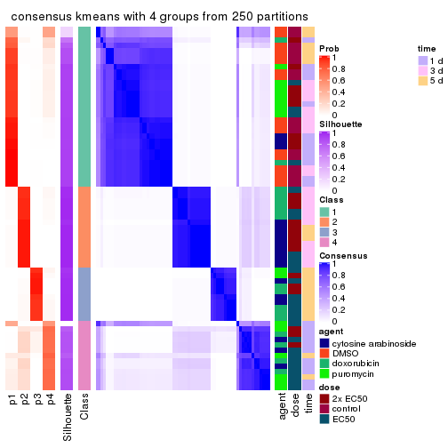
consensus_heatmap(res, k = 5)
consensus_heatmap(res, k = 6)
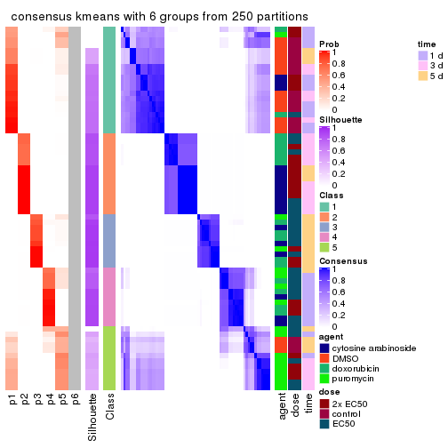
Heatmaps for the membership of samples in all partitions to see how consistent they are:
membership_heatmap(res, k = 2)
membership_heatmap(res, k = 3)
membership_heatmap(res, k = 4)
membership_heatmap(res, k = 5)
membership_heatmap(res, k = 6)
As soon as we have had the classes for columns, we can look for signatures which are significantly different between classes which can be candidate marks for certain classes. Following are the heatmaps for signatures.
Signature heatmaps where rows are scaled:
get_signatures(res, k = 2)
get_signatures(res, k = 3)
get_signatures(res, k = 4)
get_signatures(res, k = 5)
get_signatures(res, k = 6)
Signature heatmaps where rows are not scaled:
get_signatures(res, k = 2, scale_rows = FALSE)
get_signatures(res, k = 3, scale_rows = FALSE)
get_signatures(res, k = 4, scale_rows = FALSE)
get_signatures(res, k = 5, scale_rows = FALSE)
get_signatures(res, k = 6, scale_rows = FALSE)
Compare the overlap of signatures from different k:
compare_signatures(res)
get_signature() returns a data frame invisibly. TO get the list of signatures, the function
call should be assigned to a variable explicitly. In following code, if plot argument is set
to FALSE, no heatmap is plotted while only the differential analysis is performed.
# code only for demonstration
tb = get_signature(res, k = ..., plot = FALSE)
An example of the output of tb is:
#> which_row fdr mean_1 mean_2 scaled_mean_1 scaled_mean_2 km
#> 1 38 0.042760348 8.373488 9.131774 -0.5533452 0.5164555 1
#> 2 40 0.018707592 7.106213 8.469186 -0.6173731 0.5762149 1
#> 3 55 0.019134737 10.221463 11.207825 -0.6159697 0.5749050 1
#> 4 59 0.006059896 5.921854 7.869574 -0.6899429 0.6439467 1
#> 5 60 0.018055526 8.928898 10.211722 -0.6204761 0.5791110 1
#> 6 98 0.009384629 15.714769 14.887706 0.6635654 -0.6193277 2
...
The columns in tb are:
which_row: row indices corresponding to the input matrix.fdr: FDR for the differential test. mean_x: The mean value in group x.scaled_mean_x: The mean value in group x after rows are scaled.km: Row groups if k-means clustering is applied to rows.UMAP plot which shows how samples are separated.
dimension_reduction(res, k = 2, method = "UMAP")
dimension_reduction(res, k = 3, method = "UMAP")
dimension_reduction(res, k = 4, method = "UMAP")
dimension_reduction(res, k = 5, method = "UMAP")
dimension_reduction(res, k = 6, method = "UMAP")
Following heatmap shows how subgroups are split when increasing k:
collect_classes(res)
Test correlation between subgroups and known annotations. If the known annotation is numeric, one-way ANOVA test is applied, and if the known annotation is discrete, chi-squared contingency table test is applied.
test_to_known_factors(res)
#> n agent(p) dose(p) time(p) k
#> ATC:kmeans 66 1.14e-01 3.77e-02 9.30e-05 2
#> ATC:kmeans 68 2.75e-06 5.60e-06 2.13e-05 3
#> ATC:kmeans 65 4.08e-06 9.17e-06 6.39e-10 4
#> ATC:kmeans 40 1.27e-07 6.31e-08 2.54e-10 5
#> ATC:kmeans 49 4.95e-06 3.34e-06 4.99e-11 6
If matrix rows can be associated to genes, consider to use functional_enrichment(res,
...) to perform function enrichment for the signature genes. See this vignette for more detailed explanations.
The object with results only for a single top-value method and a single partition method can be extracted as:
res = res_list["ATC", "skmeans"]
# you can also extract it by
# res = res_list["ATC:skmeans"]
A summary of res and all the functions that can be applied to it:
res
#> A 'ConsensusPartition' object with k = 2, 3, 4, 5, 6.
#> On a matrix with 21796 rows and 68 columns.
#> Top rows (1000, 2000, 3000, 4000, 5000) are extracted by 'ATC' method.
#> Subgroups are detected by 'skmeans' method.
#> Performed in total 1250 partitions by row resampling.
#> Best k for subgroups seems to be 4.
#>
#> Following methods can be applied to this 'ConsensusPartition' object:
#> [1] "cola_report" "collect_classes" "collect_plots"
#> [4] "collect_stats" "colnames" "compare_signatures"
#> [7] "consensus_heatmap" "dimension_reduction" "functional_enrichment"
#> [10] "get_anno_col" "get_anno" "get_classes"
#> [13] "get_consensus" "get_matrix" "get_membership"
#> [16] "get_param" "get_signatures" "get_stats"
#> [19] "is_best_k" "is_stable_k" "membership_heatmap"
#> [22] "ncol" "nrow" "plot_ecdf"
#> [25] "rownames" "select_partition_number" "show"
#> [28] "suggest_best_k" "test_to_known_factors"
collect_plots() function collects all the plots made from res for all k (number of partitions)
into one single page to provide an easy and fast comparison between different k.
collect_plots(res)
The plots are:
k and the heatmap of
predicted classes for each k.k.k.k.All the plots in panels can be made by individual functions and they are plotted later in this section.
select_partition_number() produces several plots showing different
statistics for choosing “optimized” k. There are following statistics:
k;k, the area increased is defined as \(A_k - A_{k-1}\).The detailed explanations of these statistics can be found in the cola vignette.
Generally speaking, lower PAC score, higher mean silhouette score or higher
concordance corresponds to better partition. Rand index and Jaccard index
measure how similar the current partition is compared to partition with k-1.
If they are too similar, we won't accept k is better than k-1.
select_partition_number(res)
The numeric values for all these statistics can be obtained by get_stats().
get_stats(res)
#> k 1-PAC mean_silhouette concordance area_increased Rand Jaccard
#> 2 2 0.854 0.944 0.973 0.5058 0.494 0.494
#> 3 3 1.000 0.979 0.991 0.2762 0.802 0.622
#> 4 4 0.975 0.949 0.971 0.1198 0.902 0.732
#> 5 5 0.779 0.708 0.833 0.0558 0.970 0.895
#> 6 6 0.778 0.632 0.723 0.0558 0.821 0.422
suggest_best_k() suggests the best \(k\) based on these statistics. The rules are as follows:
suggest_best_k(res)
#> [1] 4
#> attr(,"optional")
#> [1] 3
There is also optional best \(k\) = 3 that is worth to check.
Following shows the table of the partitions (You need to click the show/hide
code output link to see it). The membership matrix (columns with name p*)
is inferred by
clue::cl_consensus()
function with the SE method. Basically the value in the membership matrix
represents the probability to belong to a certain group. The finall class
label for an item is determined with the group with highest probability it
belongs to.
In get_classes() function, the entropy is calculated from the membership
matrix and the silhouette score is calculated from the consensus matrix.
cbind(get_classes(res, k = 2), get_membership(res, k = 2))
#> class entropy silhouette p1 p2
#> GSM159850 1 0.000 0.975 1.000 0.000
#> GSM159851 1 0.000 0.975 1.000 0.000
#> GSM159852 1 0.000 0.975 1.000 0.000
#> GSM159853 1 0.000 0.975 1.000 0.000
#> GSM159854 1 0.000 0.975 1.000 0.000
#> GSM159855 1 0.000 0.975 1.000 0.000
#> GSM159856 1 0.000 0.975 1.000 0.000
#> GSM159857 1 0.000 0.975 1.000 0.000
#> GSM159858 1 0.000 0.975 1.000 0.000
#> GSM159859 1 0.000 0.975 1.000 0.000
#> GSM159860 1 0.000 0.975 1.000 0.000
#> GSM159861 1 0.000 0.975 1.000 0.000
#> GSM159862 1 0.000 0.975 1.000 0.000
#> GSM159863 1 0.000 0.975 1.000 0.000
#> GSM159864 1 0.000 0.975 1.000 0.000
#> GSM159865 1 0.000 0.975 1.000 0.000
#> GSM159866 1 0.000 0.975 1.000 0.000
#> GSM159885 2 0.000 0.965 0.000 1.000
#> GSM159886 1 0.000 0.975 1.000 0.000
#> GSM159887 1 0.730 0.760 0.796 0.204
#> GSM159888 2 0.000 0.965 0.000 1.000
#> GSM159889 2 0.730 0.772 0.204 0.796
#> GSM159890 2 0.000 0.965 0.000 1.000
#> GSM159891 2 0.000 0.965 0.000 1.000
#> GSM159892 2 0.000 0.965 0.000 1.000
#> GSM159893 2 0.000 0.965 0.000 1.000
#> GSM159894 1 0.000 0.975 1.000 0.000
#> GSM159895 2 0.000 0.965 0.000 1.000
#> GSM159896 2 0.000 0.965 0.000 1.000
#> GSM159897 2 0.722 0.777 0.200 0.800
#> GSM159898 2 0.730 0.772 0.204 0.796
#> GSM159899 2 0.000 0.965 0.000 1.000
#> GSM159900 2 0.000 0.965 0.000 1.000
#> GSM159901 2 0.000 0.965 0.000 1.000
#> GSM159902 1 0.730 0.760 0.796 0.204
#> GSM159903 1 0.000 0.975 1.000 0.000
#> GSM159904 1 0.730 0.760 0.796 0.204
#> GSM159905 1 0.000 0.975 1.000 0.000
#> GSM159906 1 0.000 0.975 1.000 0.000
#> GSM159907 1 0.000 0.975 1.000 0.000
#> GSM159908 1 0.730 0.760 0.796 0.204
#> GSM159909 1 0.000 0.975 1.000 0.000
#> GSM159910 2 0.000 0.965 0.000 1.000
#> GSM159911 2 0.000 0.965 0.000 1.000
#> GSM159912 1 0.000 0.975 1.000 0.000
#> GSM159913 1 0.000 0.975 1.000 0.000
#> GSM159914 1 0.000 0.975 1.000 0.000
#> GSM159915 1 0.000 0.975 1.000 0.000
#> GSM159916 1 0.000 0.975 1.000 0.000
#> GSM159917 2 0.000 0.965 0.000 1.000
#> GSM159867 2 0.000 0.965 0.000 1.000
#> GSM159868 2 0.000 0.965 0.000 1.000
#> GSM159869 2 0.000 0.965 0.000 1.000
#> GSM159870 2 0.730 0.772 0.204 0.796
#> GSM159871 2 0.000 0.965 0.000 1.000
#> GSM159872 2 0.000 0.965 0.000 1.000
#> GSM159873 2 0.000 0.965 0.000 1.000
#> GSM159874 2 0.000 0.965 0.000 1.000
#> GSM159875 2 0.000 0.965 0.000 1.000
#> GSM159876 1 0.000 0.975 1.000 0.000
#> GSM159877 1 0.000 0.975 1.000 0.000
#> GSM159878 1 0.000 0.975 1.000 0.000
#> GSM159879 2 0.722 0.777 0.200 0.800
#> GSM159880 2 0.000 0.965 0.000 1.000
#> GSM159881 2 0.000 0.965 0.000 1.000
#> GSM159882 2 0.000 0.965 0.000 1.000
#> GSM159883 2 0.000 0.965 0.000 1.000
#> GSM159884 2 0.000 0.965 0.000 1.000
cbind(get_classes(res, k = 3), get_membership(res, k = 3))
#> class entropy silhouette p1 p2 p3
#> GSM159850 1 0.000 1.000 1 0.000 0.000
#> GSM159851 1 0.000 1.000 1 0.000 0.000
#> GSM159852 1 0.000 1.000 1 0.000 0.000
#> GSM159853 1 0.000 1.000 1 0.000 0.000
#> GSM159854 1 0.000 1.000 1 0.000 0.000
#> GSM159855 1 0.000 1.000 1 0.000 0.000
#> GSM159856 1 0.000 1.000 1 0.000 0.000
#> GSM159857 1 0.000 1.000 1 0.000 0.000
#> GSM159858 1 0.000 1.000 1 0.000 0.000
#> GSM159859 1 0.000 1.000 1 0.000 0.000
#> GSM159860 1 0.000 1.000 1 0.000 0.000
#> GSM159861 1 0.000 1.000 1 0.000 0.000
#> GSM159862 1 0.000 1.000 1 0.000 0.000
#> GSM159863 1 0.000 1.000 1 0.000 0.000
#> GSM159864 1 0.000 1.000 1 0.000 0.000
#> GSM159865 1 0.000 1.000 1 0.000 0.000
#> GSM159866 1 0.000 1.000 1 0.000 0.000
#> GSM159885 3 0.000 0.970 0 0.000 1.000
#> GSM159886 1 0.000 1.000 1 0.000 0.000
#> GSM159887 3 0.000 0.970 0 0.000 1.000
#> GSM159888 2 0.000 1.000 0 1.000 0.000
#> GSM159889 2 0.000 1.000 0 1.000 0.000
#> GSM159890 2 0.000 1.000 0 1.000 0.000
#> GSM159891 3 0.606 0.401 0 0.384 0.616
#> GSM159892 3 0.000 0.970 0 0.000 1.000
#> GSM159893 3 0.455 0.749 0 0.200 0.800
#> GSM159894 1 0.000 1.000 1 0.000 0.000
#> GSM159895 3 0.000 0.970 0 0.000 1.000
#> GSM159896 3 0.000 0.970 0 0.000 1.000
#> GSM159897 2 0.000 1.000 0 1.000 0.000
#> GSM159898 2 0.000 1.000 0 1.000 0.000
#> GSM159899 2 0.000 1.000 0 1.000 0.000
#> GSM159900 3 0.000 0.970 0 0.000 1.000
#> GSM159901 3 0.000 0.970 0 0.000 1.000
#> GSM159902 3 0.000 0.970 0 0.000 1.000
#> GSM159903 1 0.000 1.000 1 0.000 0.000
#> GSM159904 3 0.000 0.970 0 0.000 1.000
#> GSM159905 1 0.000 1.000 1 0.000 0.000
#> GSM159906 1 0.000 1.000 1 0.000 0.000
#> GSM159907 1 0.000 1.000 1 0.000 0.000
#> GSM159908 3 0.000 0.970 0 0.000 1.000
#> GSM159909 1 0.000 1.000 1 0.000 0.000
#> GSM159910 3 0.000 0.970 0 0.000 1.000
#> GSM159911 3 0.000 0.970 0 0.000 1.000
#> GSM159912 1 0.000 1.000 1 0.000 0.000
#> GSM159913 1 0.000 1.000 1 0.000 0.000
#> GSM159914 1 0.000 1.000 1 0.000 0.000
#> GSM159915 1 0.000 1.000 1 0.000 0.000
#> GSM159916 1 0.000 1.000 1 0.000 0.000
#> GSM159917 3 0.000 0.970 0 0.000 1.000
#> GSM159867 3 0.000 0.970 0 0.000 1.000
#> GSM159868 3 0.000 0.970 0 0.000 1.000
#> GSM159869 3 0.000 0.970 0 0.000 1.000
#> GSM159870 2 0.000 1.000 0 1.000 0.000
#> GSM159871 2 0.000 1.000 0 1.000 0.000
#> GSM159872 2 0.000 1.000 0 1.000 0.000
#> GSM159873 3 0.000 0.970 0 0.000 1.000
#> GSM159874 3 0.000 0.970 0 0.000 1.000
#> GSM159875 3 0.000 0.970 0 0.000 1.000
#> GSM159876 1 0.000 1.000 1 0.000 0.000
#> GSM159877 1 0.000 1.000 1 0.000 0.000
#> GSM159878 1 0.000 1.000 1 0.000 0.000
#> GSM159879 2 0.000 1.000 0 1.000 0.000
#> GSM159880 2 0.000 1.000 0 1.000 0.000
#> GSM159881 2 0.000 1.000 0 1.000 0.000
#> GSM159882 2 0.000 1.000 0 1.000 0.000
#> GSM159883 2 0.000 1.000 0 1.000 0.000
#> GSM159884 2 0.000 1.000 0 1.000 0.000
cbind(get_classes(res, k = 4), get_membership(res, k = 4))
#> class entropy silhouette p1 p2 p3 p4
#> GSM159850 1 0.0000 0.983 1.000 0 0.000 0.000
#> GSM159851 1 0.0000 0.983 1.000 0 0.000 0.000
#> GSM159852 1 0.0000 0.983 1.000 0 0.000 0.000
#> GSM159853 1 0.0000 0.983 1.000 0 0.000 0.000
#> GSM159854 1 0.0188 0.982 0.996 0 0.004 0.000
#> GSM159855 1 0.0188 0.982 0.996 0 0.004 0.000
#> GSM159856 1 0.0000 0.983 1.000 0 0.000 0.000
#> GSM159857 1 0.0000 0.983 1.000 0 0.000 0.000
#> GSM159858 1 0.0188 0.982 0.996 0 0.004 0.000
#> GSM159859 1 0.0188 0.982 0.996 0 0.004 0.000
#> GSM159860 1 0.0000 0.983 1.000 0 0.000 0.000
#> GSM159861 3 0.4454 0.631 0.308 0 0.692 0.000
#> GSM159862 3 0.3219 0.834 0.164 0 0.836 0.000
#> GSM159863 3 0.3219 0.834 0.164 0 0.836 0.000
#> GSM159864 1 0.0000 0.983 1.000 0 0.000 0.000
#> GSM159865 1 0.0000 0.983 1.000 0 0.000 0.000
#> GSM159866 1 0.0000 0.983 1.000 0 0.000 0.000
#> GSM159885 4 0.3444 0.852 0.000 0 0.184 0.816
#> GSM159886 1 0.0000 0.983 1.000 0 0.000 0.000
#> GSM159887 3 0.0188 0.885 0.000 0 0.996 0.004
#> GSM159888 2 0.0000 1.000 0.000 1 0.000 0.000
#> GSM159889 2 0.0000 1.000 0.000 1 0.000 0.000
#> GSM159890 2 0.0000 1.000 0.000 1 0.000 0.000
#> GSM159891 4 0.0000 0.952 0.000 0 0.000 1.000
#> GSM159892 4 0.0000 0.952 0.000 0 0.000 1.000
#> GSM159893 4 0.0000 0.952 0.000 0 0.000 1.000
#> GSM159894 1 0.0000 0.983 1.000 0 0.000 0.000
#> GSM159895 4 0.2281 0.929 0.000 0 0.096 0.904
#> GSM159896 4 0.2281 0.929 0.000 0 0.096 0.904
#> GSM159897 2 0.0000 1.000 0.000 1 0.000 0.000
#> GSM159898 2 0.0000 1.000 0.000 1 0.000 0.000
#> GSM159899 2 0.0000 1.000 0.000 1 0.000 0.000
#> GSM159900 4 0.0000 0.952 0.000 0 0.000 1.000
#> GSM159901 4 0.0000 0.952 0.000 0 0.000 1.000
#> GSM159902 3 0.0188 0.885 0.000 0 0.996 0.004
#> GSM159903 3 0.1792 0.874 0.068 0 0.932 0.000
#> GSM159904 3 0.0188 0.885 0.000 0 0.996 0.004
#> GSM159905 1 0.0592 0.976 0.984 0 0.016 0.000
#> GSM159906 1 0.0592 0.976 0.984 0 0.016 0.000
#> GSM159907 1 0.0592 0.976 0.984 0 0.016 0.000
#> GSM159908 3 0.0188 0.885 0.000 0 0.996 0.004
#> GSM159909 3 0.0188 0.886 0.004 0 0.996 0.000
#> GSM159910 4 0.0000 0.952 0.000 0 0.000 1.000
#> GSM159911 4 0.2281 0.929 0.000 0 0.096 0.904
#> GSM159912 1 0.0469 0.977 0.988 0 0.012 0.000
#> GSM159913 1 0.4356 0.537 0.708 0 0.292 0.000
#> GSM159914 1 0.0592 0.976 0.984 0 0.016 0.000
#> GSM159915 1 0.0592 0.976 0.984 0 0.016 0.000
#> GSM159916 1 0.0592 0.976 0.984 0 0.016 0.000
#> GSM159917 4 0.0000 0.952 0.000 0 0.000 1.000
#> GSM159867 4 0.2973 0.894 0.000 0 0.144 0.856
#> GSM159868 4 0.2281 0.929 0.000 0 0.096 0.904
#> GSM159869 4 0.2281 0.929 0.000 0 0.096 0.904
#> GSM159870 2 0.0000 1.000 0.000 1 0.000 0.000
#> GSM159871 2 0.0000 1.000 0.000 1 0.000 0.000
#> GSM159872 2 0.0000 1.000 0.000 1 0.000 0.000
#> GSM159873 4 0.0000 0.952 0.000 0 0.000 1.000
#> GSM159874 4 0.0000 0.952 0.000 0 0.000 1.000
#> GSM159875 4 0.0000 0.952 0.000 0 0.000 1.000
#> GSM159876 1 0.0000 0.983 1.000 0 0.000 0.000
#> GSM159877 1 0.0000 0.983 1.000 0 0.000 0.000
#> GSM159878 1 0.0000 0.983 1.000 0 0.000 0.000
#> GSM159879 2 0.0000 1.000 0.000 1 0.000 0.000
#> GSM159880 2 0.0000 1.000 0.000 1 0.000 0.000
#> GSM159881 2 0.0000 1.000 0.000 1 0.000 0.000
#> GSM159882 2 0.0000 1.000 0.000 1 0.000 0.000
#> GSM159883 2 0.0000 1.000 0.000 1 0.000 0.000
#> GSM159884 2 0.0000 1.000 0.000 1 0.000 0.000
cbind(get_classes(res, k = 5), get_membership(res, k = 5))
#> class entropy silhouette p1 p2 p3 p4 p5
#> GSM159850 1 0.0000 0.8763 1.000 0.000 0.000 0.000 NA
#> GSM159851 1 0.0000 0.8763 1.000 0.000 0.000 0.000 NA
#> GSM159852 1 0.0000 0.8763 1.000 0.000 0.000 0.000 NA
#> GSM159853 1 0.0000 0.8763 1.000 0.000 0.000 0.000 NA
#> GSM159854 1 0.1638 0.8630 0.932 0.000 0.000 0.004 NA
#> GSM159855 1 0.1638 0.8630 0.932 0.000 0.000 0.004 NA
#> GSM159856 1 0.0000 0.8763 1.000 0.000 0.000 0.000 NA
#> GSM159857 1 0.0000 0.8763 1.000 0.000 0.000 0.000 NA
#> GSM159858 1 0.1768 0.8617 0.924 0.000 0.000 0.004 NA
#> GSM159859 1 0.1768 0.8617 0.924 0.000 0.000 0.004 NA
#> GSM159860 1 0.0000 0.8763 1.000 0.000 0.000 0.000 NA
#> GSM159861 4 0.6779 0.3285 0.332 0.000 0.000 0.384 NA
#> GSM159862 4 0.6661 0.4250 0.272 0.000 0.000 0.444 NA
#> GSM159863 4 0.6557 0.4483 0.212 0.000 0.000 0.448 NA
#> GSM159864 1 0.2852 0.7473 0.828 0.000 0.000 0.000 NA
#> GSM159865 1 0.2852 0.7473 0.828 0.000 0.000 0.000 NA
#> GSM159866 1 0.2852 0.7473 0.828 0.000 0.000 0.000 NA
#> GSM159885 4 0.6298 -0.0044 0.000 0.000 0.292 0.520 NA
#> GSM159886 1 0.0000 0.8763 1.000 0.000 0.000 0.000 NA
#> GSM159887 4 0.1205 0.5490 0.000 0.000 0.004 0.956 NA
#> GSM159888 2 0.3586 0.8426 0.000 0.736 0.000 0.000 NA
#> GSM159889 2 0.3586 0.8426 0.000 0.736 0.000 0.000 NA
#> GSM159890 2 0.3586 0.8426 0.000 0.736 0.000 0.000 NA
#> GSM159891 3 0.0000 0.7917 0.000 0.000 1.000 0.000 NA
#> GSM159892 3 0.0000 0.7917 0.000 0.000 1.000 0.000 NA
#> GSM159893 3 0.0000 0.7917 0.000 0.000 1.000 0.000 NA
#> GSM159894 1 0.1270 0.8507 0.948 0.000 0.000 0.000 NA
#> GSM159895 4 0.6490 -0.2161 0.000 0.000 0.380 0.432 NA
#> GSM159896 3 0.6500 0.1541 0.000 0.000 0.408 0.404 NA
#> GSM159897 2 0.3586 0.8426 0.000 0.736 0.000 0.000 NA
#> GSM159898 2 0.3586 0.8426 0.000 0.736 0.000 0.000 NA
#> GSM159899 2 0.3586 0.8426 0.000 0.736 0.000 0.000 NA
#> GSM159900 3 0.0000 0.7917 0.000 0.000 1.000 0.000 NA
#> GSM159901 3 0.0000 0.7917 0.000 0.000 1.000 0.000 NA
#> GSM159902 4 0.0162 0.5641 0.000 0.000 0.004 0.996 NA
#> GSM159903 4 0.6224 0.3557 0.220 0.000 0.000 0.548 NA
#> GSM159904 4 0.0162 0.5641 0.000 0.000 0.004 0.996 NA
#> GSM159905 1 0.3967 0.7648 0.724 0.000 0.000 0.012 NA
#> GSM159906 1 0.3967 0.7648 0.724 0.000 0.000 0.012 NA
#> GSM159907 1 0.3967 0.7648 0.724 0.000 0.000 0.012 NA
#> GSM159908 4 0.1357 0.5652 0.000 0.000 0.004 0.948 NA
#> GSM159909 4 0.3662 0.5337 0.004 0.000 0.000 0.744 NA
#> GSM159910 3 0.0000 0.7917 0.000 0.000 1.000 0.000 NA
#> GSM159911 3 0.6493 0.1959 0.000 0.000 0.428 0.384 NA
#> GSM159912 1 0.3388 0.7880 0.792 0.000 0.000 0.008 NA
#> GSM159913 1 0.4779 0.7222 0.716 0.000 0.000 0.084 NA
#> GSM159914 1 0.3967 0.7648 0.724 0.000 0.000 0.012 NA
#> GSM159915 1 0.3967 0.7648 0.724 0.000 0.000 0.012 NA
#> GSM159916 1 0.3967 0.7648 0.724 0.000 0.000 0.012 NA
#> GSM159917 3 0.0000 0.7917 0.000 0.000 1.000 0.000 NA
#> GSM159867 4 0.6339 -0.0354 0.000 0.000 0.304 0.508 NA
#> GSM159868 3 0.6495 0.1892 0.000 0.000 0.424 0.388 NA
#> GSM159869 3 0.6486 0.2089 0.000 0.000 0.436 0.376 NA
#> GSM159870 2 0.0000 0.8990 0.000 1.000 0.000 0.000 NA
#> GSM159871 2 0.0000 0.8990 0.000 1.000 0.000 0.000 NA
#> GSM159872 2 0.0000 0.8990 0.000 1.000 0.000 0.000 NA
#> GSM159873 3 0.0000 0.7917 0.000 0.000 1.000 0.000 NA
#> GSM159874 3 0.0000 0.7917 0.000 0.000 1.000 0.000 NA
#> GSM159875 3 0.0000 0.7917 0.000 0.000 1.000 0.000 NA
#> GSM159876 1 0.0000 0.8763 1.000 0.000 0.000 0.000 NA
#> GSM159877 1 0.0000 0.8763 1.000 0.000 0.000 0.000 NA
#> GSM159878 1 0.0000 0.8763 1.000 0.000 0.000 0.000 NA
#> GSM159879 2 0.0000 0.8990 0.000 1.000 0.000 0.000 NA
#> GSM159880 2 0.0000 0.8990 0.000 1.000 0.000 0.000 NA
#> GSM159881 2 0.0000 0.8990 0.000 1.000 0.000 0.000 NA
#> GSM159882 2 0.0000 0.8990 0.000 1.000 0.000 0.000 NA
#> GSM159883 2 0.0000 0.8990 0.000 1.000 0.000 0.000 NA
#> GSM159884 2 0.0000 0.8990 0.000 1.000 0.000 0.000 NA
cbind(get_classes(res, k = 6), get_membership(res, k = 6))
#> class entropy silhouette p1 p2 p3 p4 p5 p6
#> GSM159850 5 0.3747 0.5613 0.396 0.000 0.000 0.000 0.604 0.000
#> GSM159851 5 0.3747 0.5613 0.396 0.000 0.000 0.000 0.604 0.000
#> GSM159852 5 0.3747 0.5613 0.396 0.000 0.000 0.000 0.604 0.000
#> GSM159853 5 0.3747 0.5613 0.396 0.000 0.000 0.000 0.604 0.000
#> GSM159854 1 0.3804 -0.0704 0.576 0.000 0.000 0.000 0.424 0.000
#> GSM159855 1 0.3804 -0.0704 0.576 0.000 0.000 0.000 0.424 0.000
#> GSM159856 5 0.3756 0.5608 0.400 0.000 0.000 0.000 0.600 0.000
#> GSM159857 5 0.3756 0.5608 0.400 0.000 0.000 0.000 0.600 0.000
#> GSM159858 1 0.3797 -0.0698 0.580 0.000 0.000 0.000 0.420 0.000
#> GSM159859 1 0.3797 -0.0698 0.580 0.000 0.000 0.000 0.420 0.000
#> GSM159860 5 0.3765 0.5548 0.404 0.000 0.000 0.000 0.596 0.000
#> GSM159861 5 0.4949 -0.0534 0.000 0.000 0.000 0.072 0.548 0.380
#> GSM159862 5 0.5037 -0.0642 0.000 0.000 0.000 0.080 0.540 0.380
#> GSM159863 5 0.6220 -0.1255 0.072 0.000 0.000 0.080 0.468 0.380
#> GSM159864 5 0.4732 0.3966 0.220 0.000 0.000 0.000 0.668 0.112
#> GSM159865 5 0.4732 0.3966 0.220 0.000 0.000 0.000 0.668 0.112
#> GSM159866 5 0.4732 0.3966 0.220 0.000 0.000 0.000 0.668 0.112
#> GSM159885 4 0.1814 0.7417 0.000 0.000 0.100 0.900 0.000 0.000
#> GSM159886 5 0.3756 0.5608 0.400 0.000 0.000 0.000 0.600 0.000
#> GSM159887 4 0.3612 0.6576 0.000 0.000 0.004 0.804 0.092 0.100
#> GSM159888 6 0.3833 0.7356 0.000 0.444 0.000 0.000 0.000 0.556
#> GSM159889 6 0.3833 0.7356 0.000 0.444 0.000 0.000 0.000 0.556
#> GSM159890 6 0.3833 0.7356 0.000 0.444 0.000 0.000 0.000 0.556
#> GSM159891 3 0.0000 1.0000 0.000 0.000 1.000 0.000 0.000 0.000
#> GSM159892 3 0.0000 1.0000 0.000 0.000 1.000 0.000 0.000 0.000
#> GSM159893 3 0.0000 1.0000 0.000 0.000 1.000 0.000 0.000 0.000
#> GSM159894 5 0.3578 0.5447 0.340 0.000 0.000 0.000 0.660 0.000
#> GSM159895 4 0.2793 0.7220 0.000 0.000 0.200 0.800 0.000 0.000
#> GSM159896 4 0.3221 0.6905 0.000 0.000 0.264 0.736 0.000 0.000
#> GSM159897 6 0.3833 0.7356 0.000 0.444 0.000 0.000 0.000 0.556
#> GSM159898 6 0.3833 0.7356 0.000 0.444 0.000 0.000 0.000 0.556
#> GSM159899 6 0.3833 0.7356 0.000 0.444 0.000 0.000 0.000 0.556
#> GSM159900 3 0.0000 1.0000 0.000 0.000 1.000 0.000 0.000 0.000
#> GSM159901 3 0.0000 1.0000 0.000 0.000 1.000 0.000 0.000 0.000
#> GSM159902 4 0.4097 0.6379 0.000 0.000 0.004 0.760 0.108 0.128
#> GSM159903 1 0.5964 0.3003 0.628 0.000 0.000 0.120 0.124 0.128
#> GSM159904 4 0.4097 0.6379 0.000 0.000 0.004 0.760 0.108 0.128
#> GSM159905 1 0.0000 0.6563 1.000 0.000 0.000 0.000 0.000 0.000
#> GSM159906 1 0.0000 0.6563 1.000 0.000 0.000 0.000 0.000 0.000
#> GSM159907 1 0.0000 0.6563 1.000 0.000 0.000 0.000 0.000 0.000
#> GSM159908 4 0.5368 0.4933 0.000 0.000 0.004 0.592 0.144 0.260
#> GSM159909 6 0.7539 -0.3409 0.160 0.000 0.000 0.304 0.216 0.320
#> GSM159910 3 0.0000 1.0000 0.000 0.000 1.000 0.000 0.000 0.000
#> GSM159911 4 0.3446 0.6501 0.000 0.000 0.308 0.692 0.000 0.000
#> GSM159912 1 0.2454 0.4977 0.840 0.000 0.000 0.000 0.160 0.000
#> GSM159913 1 0.3376 0.4955 0.792 0.000 0.000 0.004 0.180 0.024
#> GSM159914 1 0.0000 0.6563 1.000 0.000 0.000 0.000 0.000 0.000
#> GSM159915 1 0.0000 0.6563 1.000 0.000 0.000 0.000 0.000 0.000
#> GSM159916 1 0.0000 0.6563 1.000 0.000 0.000 0.000 0.000 0.000
#> GSM159917 3 0.0000 1.0000 0.000 0.000 1.000 0.000 0.000 0.000
#> GSM159867 4 0.1863 0.7419 0.000 0.000 0.104 0.896 0.000 0.000
#> GSM159868 4 0.3351 0.6715 0.000 0.000 0.288 0.712 0.000 0.000
#> GSM159869 4 0.3446 0.6501 0.000 0.000 0.308 0.692 0.000 0.000
#> GSM159870 2 0.0146 0.9962 0.000 0.996 0.000 0.000 0.004 0.000
#> GSM159871 2 0.0146 0.9962 0.000 0.996 0.000 0.000 0.004 0.000
#> GSM159872 2 0.0146 0.9962 0.000 0.996 0.000 0.000 0.004 0.000
#> GSM159873 3 0.0000 1.0000 0.000 0.000 1.000 0.000 0.000 0.000
#> GSM159874 3 0.0000 1.0000 0.000 0.000 1.000 0.000 0.000 0.000
#> GSM159875 3 0.0000 1.0000 0.000 0.000 1.000 0.000 0.000 0.000
#> GSM159876 5 0.3852 0.5626 0.384 0.000 0.000 0.000 0.612 0.004
#> GSM159877 5 0.4150 0.5569 0.372 0.012 0.000 0.000 0.612 0.004
#> GSM159878 5 0.3852 0.5626 0.384 0.000 0.000 0.000 0.612 0.004
#> GSM159879 2 0.0000 0.9981 0.000 1.000 0.000 0.000 0.000 0.000
#> GSM159880 2 0.0000 0.9981 0.000 1.000 0.000 0.000 0.000 0.000
#> GSM159881 2 0.0000 0.9981 0.000 1.000 0.000 0.000 0.000 0.000
#> GSM159882 2 0.0000 0.9981 0.000 1.000 0.000 0.000 0.000 0.000
#> GSM159883 2 0.0000 0.9981 0.000 1.000 0.000 0.000 0.000 0.000
#> GSM159884 2 0.0000 0.9981 0.000 1.000 0.000 0.000 0.000 0.000
Heatmaps for the consensus matrix. It visualizes the probability of two samples to be in a same group.
consensus_heatmap(res, k = 2)
consensus_heatmap(res, k = 3)
consensus_heatmap(res, k = 4)
consensus_heatmap(res, k = 5)
consensus_heatmap(res, k = 6)
Heatmaps for the membership of samples in all partitions to see how consistent they are:
membership_heatmap(res, k = 2)
membership_heatmap(res, k = 3)
membership_heatmap(res, k = 4)
membership_heatmap(res, k = 5)
membership_heatmap(res, k = 6)
As soon as we have had the classes for columns, we can look for signatures which are significantly different between classes which can be candidate marks for certain classes. Following are the heatmaps for signatures.
Signature heatmaps where rows are scaled:
get_signatures(res, k = 2)
get_signatures(res, k = 3)
get_signatures(res, k = 4)
get_signatures(res, k = 5)
get_signatures(res, k = 6)
Signature heatmaps where rows are not scaled:
get_signatures(res, k = 2, scale_rows = FALSE)
get_signatures(res, k = 3, scale_rows = FALSE)
get_signatures(res, k = 4, scale_rows = FALSE)
get_signatures(res, k = 5, scale_rows = FALSE)
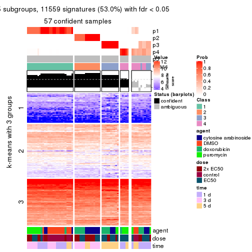
get_signatures(res, k = 6, scale_rows = FALSE)
Compare the overlap of signatures from different k:
compare_signatures(res)
get_signature() returns a data frame invisibly. TO get the list of signatures, the function
call should be assigned to a variable explicitly. In following code, if plot argument is set
to FALSE, no heatmap is plotted while only the differential analysis is performed.
# code only for demonstration
tb = get_signature(res, k = ..., plot = FALSE)
An example of the output of tb is:
#> which_row fdr mean_1 mean_2 scaled_mean_1 scaled_mean_2 km
#> 1 38 0.042760348 8.373488 9.131774 -0.5533452 0.5164555 1
#> 2 40 0.018707592 7.106213 8.469186 -0.6173731 0.5762149 1
#> 3 55 0.019134737 10.221463 11.207825 -0.6159697 0.5749050 1
#> 4 59 0.006059896 5.921854 7.869574 -0.6899429 0.6439467 1
#> 5 60 0.018055526 8.928898 10.211722 -0.6204761 0.5791110 1
#> 6 98 0.009384629 15.714769 14.887706 0.6635654 -0.6193277 2
...
The columns in tb are:
which_row: row indices corresponding to the input matrix.fdr: FDR for the differential test. mean_x: The mean value in group x.scaled_mean_x: The mean value in group x after rows are scaled.km: Row groups if k-means clustering is applied to rows.UMAP plot which shows how samples are separated.
dimension_reduction(res, k = 2, method = "UMAP")
dimension_reduction(res, k = 3, method = "UMAP")
dimension_reduction(res, k = 4, method = "UMAP")
dimension_reduction(res, k = 5, method = "UMAP")
dimension_reduction(res, k = 6, method = "UMAP")
Following heatmap shows how subgroups are split when increasing k:
collect_classes(res)
Test correlation between subgroups and known annotations. If the known annotation is numeric, one-way ANOVA test is applied, and if the known annotation is discrete, chi-squared contingency table test is applied.
test_to_known_factors(res)
#> n agent(p) dose(p) time(p) k
#> ATC:skmeans 68 2.48e-08 4.21e-05 7.49e-02 2
#> ATC:skmeans 67 2.85e-07 4.68e-06 2.06e-05 3
#> ATC:skmeans 68 1.13e-06 3.34e-05 3.25e-06 4
#> ATC:skmeans 57 1.79e-06 2.32e-05 8.23e-08 5
#> ATC:skmeans 53 8.18e-11 2.74e-04 3.43e-13 6
If matrix rows can be associated to genes, consider to use functional_enrichment(res,
...) to perform function enrichment for the signature genes. See this vignette for more detailed explanations.
The object with results only for a single top-value method and a single partition method can be extracted as:
res = res_list["ATC", "pam"]
# you can also extract it by
# res = res_list["ATC:pam"]
A summary of res and all the functions that can be applied to it:
res
#> A 'ConsensusPartition' object with k = 2, 3, 4, 5, 6.
#> On a matrix with 21796 rows and 68 columns.
#> Top rows (1000, 2000, 3000, 4000, 5000) are extracted by 'ATC' method.
#> Subgroups are detected by 'pam' method.
#> Performed in total 1250 partitions by row resampling.
#> Best k for subgroups seems to be 4.
#>
#> Following methods can be applied to this 'ConsensusPartition' object:
#> [1] "cola_report" "collect_classes" "collect_plots"
#> [4] "collect_stats" "colnames" "compare_signatures"
#> [7] "consensus_heatmap" "dimension_reduction" "functional_enrichment"
#> [10] "get_anno_col" "get_anno" "get_classes"
#> [13] "get_consensus" "get_matrix" "get_membership"
#> [16] "get_param" "get_signatures" "get_stats"
#> [19] "is_best_k" "is_stable_k" "membership_heatmap"
#> [22] "ncol" "nrow" "plot_ecdf"
#> [25] "rownames" "select_partition_number" "show"
#> [28] "suggest_best_k" "test_to_known_factors"
collect_plots() function collects all the plots made from res for all k (number of partitions)
into one single page to provide an easy and fast comparison between different k.
collect_plots(res)
The plots are:
k and the heatmap of
predicted classes for each k.k.k.k.All the plots in panels can be made by individual functions and they are plotted later in this section.
select_partition_number() produces several plots showing different
statistics for choosing “optimized” k. There are following statistics:
k;k, the area increased is defined as \(A_k - A_{k-1}\).The detailed explanations of these statistics can be found in the cola vignette.
Generally speaking, lower PAC score, higher mean silhouette score or higher
concordance corresponds to better partition. Rand index and Jaccard index
measure how similar the current partition is compared to partition with k-1.
If they are too similar, we won't accept k is better than k-1.
select_partition_number(res)
The numeric values for all these statistics can be obtained by get_stats().
get_stats(res)
#> k 1-PAC mean_silhouette concordance area_increased Rand Jaccard
#> 2 2 0.647 0.795 0.903 0.3559 0.725 0.725
#> 3 3 0.815 0.854 0.943 0.7523 0.652 0.520
#> 4 4 0.917 0.910 0.960 0.1609 0.848 0.621
#> 5 5 0.781 0.592 0.835 0.0831 0.928 0.747
#> 6 6 0.839 0.798 0.881 0.0507 0.902 0.605
suggest_best_k() suggests the best \(k\) based on these statistics. The rules are as follows:
suggest_best_k(res)
#> [1] 4
Following shows the table of the partitions (You need to click the show/hide
code output link to see it). The membership matrix (columns with name p*)
is inferred by
clue::cl_consensus()
function with the SE method. Basically the value in the membership matrix
represents the probability to belong to a certain group. The finall class
label for an item is determined with the group with highest probability it
belongs to.
In get_classes() function, the entropy is calculated from the membership
matrix and the silhouette score is calculated from the consensus matrix.
cbind(get_classes(res, k = 2), get_membership(res, k = 2))
#> class entropy silhouette p1 p2
#> GSM159850 1 0.0000 0.872 1.000 0.000
#> GSM159851 1 0.0000 0.872 1.000 0.000
#> GSM159852 1 0.0000 0.872 1.000 0.000
#> GSM159853 1 0.0000 0.872 1.000 0.000
#> GSM159854 1 0.0000 0.872 1.000 0.000
#> GSM159855 1 0.0000 0.872 1.000 0.000
#> GSM159856 1 0.0000 0.872 1.000 0.000
#> GSM159857 1 0.0000 0.872 1.000 0.000
#> GSM159858 1 0.0000 0.872 1.000 0.000
#> GSM159859 1 0.0000 0.872 1.000 0.000
#> GSM159860 1 0.0000 0.872 1.000 0.000
#> GSM159861 1 0.0000 0.872 1.000 0.000
#> GSM159862 1 0.0000 0.872 1.000 0.000
#> GSM159863 1 0.0000 0.872 1.000 0.000
#> GSM159864 1 0.0000 0.872 1.000 0.000
#> GSM159865 1 0.0000 0.872 1.000 0.000
#> GSM159866 1 0.0000 0.872 1.000 0.000
#> GSM159885 1 0.0938 0.866 0.988 0.012
#> GSM159886 1 0.0000 0.872 1.000 0.000
#> GSM159887 1 0.0000 0.872 1.000 0.000
#> GSM159888 1 0.9710 0.507 0.600 0.400
#> GSM159889 1 0.9710 0.507 0.600 0.400
#> GSM159890 1 0.9710 0.507 0.600 0.400
#> GSM159891 2 0.0000 0.955 0.000 1.000
#> GSM159892 2 0.0000 0.955 0.000 1.000
#> GSM159893 2 0.0000 0.955 0.000 1.000
#> GSM159894 1 0.0000 0.872 1.000 0.000
#> GSM159895 1 0.2778 0.846 0.952 0.048
#> GSM159896 1 0.2778 0.846 0.952 0.048
#> GSM159897 1 0.9710 0.507 0.600 0.400
#> GSM159898 1 0.9710 0.507 0.600 0.400
#> GSM159899 1 0.9710 0.507 0.600 0.400
#> GSM159900 2 0.0000 0.955 0.000 1.000
#> GSM159901 2 0.0000 0.955 0.000 1.000
#> GSM159902 1 0.0000 0.872 1.000 0.000
#> GSM159903 1 0.0000 0.872 1.000 0.000
#> GSM159904 1 0.0000 0.872 1.000 0.000
#> GSM159905 1 0.0000 0.872 1.000 0.000
#> GSM159906 1 0.0000 0.872 1.000 0.000
#> GSM159907 1 0.0000 0.872 1.000 0.000
#> GSM159908 1 0.0000 0.872 1.000 0.000
#> GSM159909 1 0.0000 0.872 1.000 0.000
#> GSM159910 2 0.0000 0.955 0.000 1.000
#> GSM159911 2 0.9393 0.397 0.356 0.644
#> GSM159912 1 0.0000 0.872 1.000 0.000
#> GSM159913 1 0.0000 0.872 1.000 0.000
#> GSM159914 1 0.0000 0.872 1.000 0.000
#> GSM159915 1 0.0000 0.872 1.000 0.000
#> GSM159916 1 0.0000 0.872 1.000 0.000
#> GSM159917 2 0.0000 0.955 0.000 1.000
#> GSM159867 1 0.0938 0.866 0.988 0.012
#> GSM159868 1 0.2778 0.846 0.952 0.048
#> GSM159869 1 0.2778 0.846 0.952 0.048
#> GSM159870 1 0.9710 0.507 0.600 0.400
#> GSM159871 1 0.9710 0.507 0.600 0.400
#> GSM159872 1 0.9710 0.507 0.600 0.400
#> GSM159873 2 0.0000 0.955 0.000 1.000
#> GSM159874 2 0.0000 0.955 0.000 1.000
#> GSM159875 2 0.0000 0.955 0.000 1.000
#> GSM159876 1 0.0000 0.872 1.000 0.000
#> GSM159877 1 0.0000 0.872 1.000 0.000
#> GSM159878 1 0.0000 0.872 1.000 0.000
#> GSM159879 1 0.9710 0.507 0.600 0.400
#> GSM159880 1 0.9710 0.507 0.600 0.400
#> GSM159881 1 0.9710 0.507 0.600 0.400
#> GSM159882 1 0.9710 0.507 0.600 0.400
#> GSM159883 1 0.9710 0.507 0.600 0.400
#> GSM159884 1 0.9710 0.507 0.600 0.400
cbind(get_classes(res, k = 3), get_membership(res, k = 3))
#> class entropy silhouette p1 p2 p3
#> GSM159850 1 0.0000 0.920 1.000 0.000 0.000
#> GSM159851 1 0.0000 0.920 1.000 0.000 0.000
#> GSM159852 1 0.0000 0.920 1.000 0.000 0.000
#> GSM159853 1 0.0000 0.920 1.000 0.000 0.000
#> GSM159854 1 0.0000 0.920 1.000 0.000 0.000
#> GSM159855 1 0.0000 0.920 1.000 0.000 0.000
#> GSM159856 1 0.0000 0.920 1.000 0.000 0.000
#> GSM159857 1 0.0000 0.920 1.000 0.000 0.000
#> GSM159858 1 0.0000 0.920 1.000 0.000 0.000
#> GSM159859 1 0.0000 0.920 1.000 0.000 0.000
#> GSM159860 1 0.0000 0.920 1.000 0.000 0.000
#> GSM159861 1 0.0000 0.920 1.000 0.000 0.000
#> GSM159862 1 0.2959 0.828 0.900 0.100 0.000
#> GSM159863 1 0.0000 0.920 1.000 0.000 0.000
#> GSM159864 1 0.0000 0.920 1.000 0.000 0.000
#> GSM159865 1 0.0000 0.920 1.000 0.000 0.000
#> GSM159866 1 0.0000 0.920 1.000 0.000 0.000
#> GSM159885 2 0.3038 0.832 0.104 0.896 0.000
#> GSM159886 1 0.0000 0.920 1.000 0.000 0.000
#> GSM159887 1 0.6126 0.364 0.600 0.400 0.000
#> GSM159888 2 0.0000 0.911 0.000 1.000 0.000
#> GSM159889 2 0.0000 0.911 0.000 1.000 0.000
#> GSM159890 2 0.0000 0.911 0.000 1.000 0.000
#> GSM159891 3 0.0237 0.992 0.000 0.004 0.996
#> GSM159892 3 0.0000 0.994 0.000 0.000 1.000
#> GSM159893 3 0.0237 0.992 0.000 0.004 0.996
#> GSM159894 2 0.6308 0.107 0.492 0.508 0.000
#> GSM159895 2 0.1964 0.880 0.056 0.944 0.000
#> GSM159896 2 0.1753 0.887 0.048 0.952 0.000
#> GSM159897 2 0.0000 0.911 0.000 1.000 0.000
#> GSM159898 2 0.0000 0.911 0.000 1.000 0.000
#> GSM159899 2 0.0000 0.911 0.000 1.000 0.000
#> GSM159900 3 0.0000 0.994 0.000 0.000 1.000
#> GSM159901 3 0.0000 0.994 0.000 0.000 1.000
#> GSM159902 1 0.6095 0.383 0.608 0.392 0.000
#> GSM159903 1 0.0000 0.920 1.000 0.000 0.000
#> GSM159904 1 0.6026 0.416 0.624 0.376 0.000
#> GSM159905 1 0.0000 0.920 1.000 0.000 0.000
#> GSM159906 1 0.0000 0.920 1.000 0.000 0.000
#> GSM159907 1 0.0000 0.920 1.000 0.000 0.000
#> GSM159908 1 0.6126 0.364 0.600 0.400 0.000
#> GSM159909 1 0.5178 0.634 0.744 0.256 0.000
#> GSM159910 3 0.0000 0.994 0.000 0.000 1.000
#> GSM159911 3 0.1643 0.945 0.044 0.000 0.956
#> GSM159912 1 0.0000 0.920 1.000 0.000 0.000
#> GSM159913 1 0.0000 0.920 1.000 0.000 0.000
#> GSM159914 1 0.0000 0.920 1.000 0.000 0.000
#> GSM159915 1 0.0000 0.920 1.000 0.000 0.000
#> GSM159916 1 0.0000 0.920 1.000 0.000 0.000
#> GSM159917 3 0.0000 0.994 0.000 0.000 1.000
#> GSM159867 2 0.1753 0.887 0.048 0.952 0.000
#> GSM159868 2 0.1163 0.898 0.028 0.972 0.000
#> GSM159869 2 0.1753 0.887 0.048 0.952 0.000
#> GSM159870 2 0.0000 0.911 0.000 1.000 0.000
#> GSM159871 2 0.0000 0.911 0.000 1.000 0.000
#> GSM159872 2 0.0000 0.911 0.000 1.000 0.000
#> GSM159873 3 0.0000 0.994 0.000 0.000 1.000
#> GSM159874 3 0.0000 0.994 0.000 0.000 1.000
#> GSM159875 3 0.0000 0.994 0.000 0.000 1.000
#> GSM159876 2 0.6111 0.352 0.396 0.604 0.000
#> GSM159877 2 0.6095 0.361 0.392 0.608 0.000
#> GSM159878 1 0.5363 0.573 0.724 0.276 0.000
#> GSM159879 2 0.0000 0.911 0.000 1.000 0.000
#> GSM159880 2 0.0000 0.911 0.000 1.000 0.000
#> GSM159881 2 0.0000 0.911 0.000 1.000 0.000
#> GSM159882 2 0.0000 0.911 0.000 1.000 0.000
#> GSM159883 2 0.0000 0.911 0.000 1.000 0.000
#> GSM159884 2 0.0000 0.911 0.000 1.000 0.000
cbind(get_classes(res, k = 4), get_membership(res, k = 4))
#> class entropy silhouette p1 p2 p3 p4
#> GSM159850 1 0.0000 0.958 1.000 0.000 0.000 0.000
#> GSM159851 1 0.0000 0.958 1.000 0.000 0.000 0.000
#> GSM159852 1 0.0000 0.958 1.000 0.000 0.000 0.000
#> GSM159853 1 0.0000 0.958 1.000 0.000 0.000 0.000
#> GSM159854 1 0.0921 0.949 0.972 0.000 0.000 0.028
#> GSM159855 1 0.0921 0.949 0.972 0.000 0.000 0.028
#> GSM159856 1 0.0000 0.958 1.000 0.000 0.000 0.000
#> GSM159857 1 0.0000 0.958 1.000 0.000 0.000 0.000
#> GSM159858 1 0.0000 0.958 1.000 0.000 0.000 0.000
#> GSM159859 1 0.0000 0.958 1.000 0.000 0.000 0.000
#> GSM159860 1 0.0000 0.958 1.000 0.000 0.000 0.000
#> GSM159861 1 0.3444 0.790 0.816 0.000 0.000 0.184
#> GSM159862 4 0.5184 0.655 0.204 0.060 0.000 0.736
#> GSM159863 1 0.4420 0.693 0.748 0.012 0.000 0.240
#> GSM159864 1 0.0000 0.958 1.000 0.000 0.000 0.000
#> GSM159865 1 0.0000 0.958 1.000 0.000 0.000 0.000
#> GSM159866 1 0.0000 0.958 1.000 0.000 0.000 0.000
#> GSM159885 4 0.0000 0.920 0.000 0.000 0.000 1.000
#> GSM159886 1 0.0000 0.958 1.000 0.000 0.000 0.000
#> GSM159887 4 0.0000 0.920 0.000 0.000 0.000 1.000
#> GSM159888 2 0.0000 0.954 0.000 1.000 0.000 0.000
#> GSM159889 2 0.0000 0.954 0.000 1.000 0.000 0.000
#> GSM159890 2 0.0000 0.954 0.000 1.000 0.000 0.000
#> GSM159891 3 0.0000 0.973 0.000 0.000 1.000 0.000
#> GSM159892 3 0.0000 0.973 0.000 0.000 1.000 0.000
#> GSM159893 3 0.0000 0.973 0.000 0.000 1.000 0.000
#> GSM159894 4 0.7459 0.372 0.248 0.244 0.000 0.508
#> GSM159895 4 0.0921 0.911 0.000 0.028 0.000 0.972
#> GSM159896 4 0.0921 0.911 0.000 0.028 0.000 0.972
#> GSM159897 2 0.0000 0.954 0.000 1.000 0.000 0.000
#> GSM159898 2 0.0000 0.954 0.000 1.000 0.000 0.000
#> GSM159899 2 0.0000 0.954 0.000 1.000 0.000 0.000
#> GSM159900 3 0.0000 0.973 0.000 0.000 1.000 0.000
#> GSM159901 3 0.0000 0.973 0.000 0.000 1.000 0.000
#> GSM159902 4 0.0000 0.920 0.000 0.000 0.000 1.000
#> GSM159903 1 0.2973 0.840 0.856 0.000 0.000 0.144
#> GSM159904 4 0.0000 0.920 0.000 0.000 0.000 1.000
#> GSM159905 1 0.0921 0.949 0.972 0.000 0.000 0.028
#> GSM159906 1 0.0336 0.957 0.992 0.000 0.000 0.008
#> GSM159907 1 0.0336 0.957 0.992 0.000 0.000 0.008
#> GSM159908 4 0.0000 0.920 0.000 0.000 0.000 1.000
#> GSM159909 4 0.1118 0.903 0.000 0.036 0.000 0.964
#> GSM159910 3 0.3837 0.696 0.000 0.000 0.776 0.224
#> GSM159911 4 0.0336 0.917 0.000 0.000 0.008 0.992
#> GSM159912 1 0.0707 0.952 0.980 0.000 0.000 0.020
#> GSM159913 1 0.0921 0.949 0.972 0.000 0.000 0.028
#> GSM159914 1 0.0000 0.958 1.000 0.000 0.000 0.000
#> GSM159915 1 0.0336 0.957 0.992 0.000 0.000 0.008
#> GSM159916 1 0.0921 0.949 0.972 0.000 0.000 0.028
#> GSM159917 3 0.0000 0.973 0.000 0.000 1.000 0.000
#> GSM159867 4 0.0000 0.920 0.000 0.000 0.000 1.000
#> GSM159868 4 0.0921 0.911 0.000 0.028 0.000 0.972
#> GSM159869 4 0.0707 0.915 0.000 0.020 0.000 0.980
#> GSM159870 2 0.0000 0.954 0.000 1.000 0.000 0.000
#> GSM159871 2 0.0000 0.954 0.000 1.000 0.000 0.000
#> GSM159872 2 0.0000 0.954 0.000 1.000 0.000 0.000
#> GSM159873 3 0.0000 0.973 0.000 0.000 1.000 0.000
#> GSM159874 3 0.0000 0.973 0.000 0.000 1.000 0.000
#> GSM159875 3 0.0000 0.973 0.000 0.000 1.000 0.000
#> GSM159876 2 0.4543 0.531 0.324 0.676 0.000 0.000
#> GSM159877 2 0.4008 0.666 0.244 0.756 0.000 0.000
#> GSM159878 1 0.4222 0.596 0.728 0.272 0.000 0.000
#> GSM159879 2 0.0000 0.954 0.000 1.000 0.000 0.000
#> GSM159880 2 0.0000 0.954 0.000 1.000 0.000 0.000
#> GSM159881 2 0.0336 0.947 0.000 0.992 0.000 0.008
#> GSM159882 2 0.0000 0.954 0.000 1.000 0.000 0.000
#> GSM159883 2 0.0000 0.954 0.000 1.000 0.000 0.000
#> GSM159884 2 0.0000 0.954 0.000 1.000 0.000 0.000
cbind(get_classes(res, k = 5), get_membership(res, k = 5))
#> class entropy silhouette p1 p2 p3 p4 p5
#> GSM159850 1 0.0000 0.3888 1.000 0.000 0.000 0.000 0.000
#> GSM159851 1 0.1908 0.3522 0.908 0.000 0.000 0.000 0.092
#> GSM159852 1 0.0000 0.3888 1.000 0.000 0.000 0.000 0.000
#> GSM159853 1 0.1908 0.3522 0.908 0.000 0.000 0.000 0.092
#> GSM159854 1 0.4030 -0.0690 0.648 0.000 0.000 0.000 0.352
#> GSM159855 1 0.4030 -0.0690 0.648 0.000 0.000 0.000 0.352
#> GSM159856 1 0.0000 0.3888 1.000 0.000 0.000 0.000 0.000
#> GSM159857 1 0.3661 0.0512 0.724 0.000 0.000 0.000 0.276
#> GSM159858 1 0.4219 -0.3629 0.584 0.000 0.000 0.000 0.416
#> GSM159859 1 0.4219 -0.3629 0.584 0.000 0.000 0.000 0.416
#> GSM159860 1 0.3242 0.0713 0.784 0.000 0.000 0.000 0.216
#> GSM159861 1 0.5180 0.2285 0.732 0.076 0.000 0.036 0.156
#> GSM159862 4 0.8020 0.3667 0.204 0.192 0.000 0.448 0.156
#> GSM159863 1 0.5425 -0.0448 0.612 0.020 0.000 0.040 0.328
#> GSM159864 1 0.4249 0.2093 0.568 0.000 0.000 0.000 0.432
#> GSM159865 5 0.2648 0.0403 0.152 0.000 0.000 0.000 0.848
#> GSM159866 1 0.4249 0.2093 0.568 0.000 0.000 0.000 0.432
#> GSM159885 4 0.0000 0.8841 0.000 0.000 0.000 1.000 0.000
#> GSM159886 1 0.0000 0.3888 1.000 0.000 0.000 0.000 0.000
#> GSM159887 4 0.1410 0.8757 0.000 0.000 0.000 0.940 0.060
#> GSM159888 2 0.0000 0.9848 0.000 1.000 0.000 0.000 0.000
#> GSM159889 2 0.0000 0.9848 0.000 1.000 0.000 0.000 0.000
#> GSM159890 2 0.0000 0.9848 0.000 1.000 0.000 0.000 0.000
#> GSM159891 3 0.0404 0.9638 0.000 0.012 0.988 0.000 0.000
#> GSM159892 3 0.0000 0.9712 0.000 0.000 1.000 0.000 0.000
#> GSM159893 3 0.0404 0.9638 0.000 0.012 0.988 0.000 0.000
#> GSM159894 4 0.7663 0.2042 0.368 0.144 0.000 0.396 0.092
#> GSM159895 4 0.0000 0.8841 0.000 0.000 0.000 1.000 0.000
#> GSM159896 4 0.0000 0.8841 0.000 0.000 0.000 1.000 0.000
#> GSM159897 2 0.0000 0.9848 0.000 1.000 0.000 0.000 0.000
#> GSM159898 2 0.0000 0.9848 0.000 1.000 0.000 0.000 0.000
#> GSM159899 2 0.0000 0.9848 0.000 1.000 0.000 0.000 0.000
#> GSM159900 3 0.0000 0.9712 0.000 0.000 1.000 0.000 0.000
#> GSM159901 3 0.0000 0.9712 0.000 0.000 1.000 0.000 0.000
#> GSM159902 4 0.1410 0.8757 0.000 0.000 0.000 0.940 0.060
#> GSM159903 5 0.4958 0.6627 0.400 0.000 0.000 0.032 0.568
#> GSM159904 4 0.1410 0.8757 0.000 0.000 0.000 0.940 0.060
#> GSM159905 5 0.4249 0.7065 0.432 0.000 0.000 0.000 0.568
#> GSM159906 1 0.4235 -0.3829 0.576 0.000 0.000 0.000 0.424
#> GSM159907 1 0.4219 -0.3629 0.584 0.000 0.000 0.000 0.416
#> GSM159908 4 0.1410 0.8757 0.000 0.000 0.000 0.940 0.060
#> GSM159909 4 0.2929 0.8049 0.000 0.008 0.000 0.840 0.152
#> GSM159910 3 0.3210 0.7073 0.000 0.000 0.788 0.212 0.000
#> GSM159911 4 0.0000 0.8841 0.000 0.000 0.000 1.000 0.000
#> GSM159912 5 0.4278 0.6734 0.452 0.000 0.000 0.000 0.548
#> GSM159913 5 0.4249 0.7065 0.432 0.000 0.000 0.000 0.568
#> GSM159914 1 0.4219 -0.3629 0.584 0.000 0.000 0.000 0.416
#> GSM159915 1 0.4287 -0.4799 0.540 0.000 0.000 0.000 0.460
#> GSM159916 5 0.4249 0.7065 0.432 0.000 0.000 0.000 0.568
#> GSM159917 3 0.0000 0.9712 0.000 0.000 1.000 0.000 0.000
#> GSM159867 4 0.0000 0.8841 0.000 0.000 0.000 1.000 0.000
#> GSM159868 4 0.0000 0.8841 0.000 0.000 0.000 1.000 0.000
#> GSM159869 4 0.0000 0.8841 0.000 0.000 0.000 1.000 0.000
#> GSM159870 2 0.0000 0.9848 0.000 1.000 0.000 0.000 0.000
#> GSM159871 2 0.0000 0.9848 0.000 1.000 0.000 0.000 0.000
#> GSM159872 2 0.0000 0.9848 0.000 1.000 0.000 0.000 0.000
#> GSM159873 3 0.0000 0.9712 0.000 0.000 1.000 0.000 0.000
#> GSM159874 3 0.0000 0.9712 0.000 0.000 1.000 0.000 0.000
#> GSM159875 3 0.0000 0.9712 0.000 0.000 1.000 0.000 0.000
#> GSM159876 1 0.4249 -0.0268 0.568 0.432 0.000 0.000 0.000
#> GSM159877 2 0.3752 0.7777 0.064 0.812 0.000 0.000 0.124
#> GSM159878 1 0.3561 0.2707 0.740 0.260 0.000 0.000 0.000
#> GSM159879 2 0.0000 0.9848 0.000 1.000 0.000 0.000 0.000
#> GSM159880 2 0.0000 0.9848 0.000 1.000 0.000 0.000 0.000
#> GSM159881 2 0.0963 0.9526 0.000 0.964 0.000 0.036 0.000
#> GSM159882 2 0.0000 0.9848 0.000 1.000 0.000 0.000 0.000
#> GSM159883 2 0.0000 0.9848 0.000 1.000 0.000 0.000 0.000
#> GSM159884 2 0.0000 0.9848 0.000 1.000 0.000 0.000 0.000
cbind(get_classes(res, k = 6), get_membership(res, k = 6))
#> class entropy silhouette p1 p2 p3 p4 p5 p6
#> GSM159850 1 0.2597 0.680 0.824 0.000 0.000 0.000 0.000 0.176
#> GSM159851 1 0.0865 0.723 0.964 0.000 0.000 0.000 0.000 0.036
#> GSM159852 1 0.2597 0.680 0.824 0.000 0.000 0.000 0.000 0.176
#> GSM159853 1 0.0865 0.723 0.964 0.000 0.000 0.000 0.000 0.036
#> GSM159854 1 0.3081 0.615 0.776 0.000 0.000 0.000 0.004 0.220
#> GSM159855 1 0.3081 0.615 0.776 0.000 0.000 0.000 0.004 0.220
#> GSM159856 1 0.2597 0.680 0.824 0.000 0.000 0.000 0.000 0.176
#> GSM159857 1 0.3198 0.615 0.740 0.000 0.000 0.000 0.000 0.260
#> GSM159858 6 0.0000 0.819 0.000 0.000 0.000 0.000 0.000 1.000
#> GSM159859 6 0.0000 0.819 0.000 0.000 0.000 0.000 0.000 1.000
#> GSM159860 6 0.2793 0.445 0.200 0.000 0.000 0.000 0.000 0.800
#> GSM159861 1 0.3210 0.670 0.804 0.000 0.000 0.000 0.168 0.028
#> GSM159862 1 0.4172 0.622 0.764 0.016 0.000 0.044 0.168 0.008
#> GSM159863 1 0.3800 0.656 0.776 0.000 0.000 0.008 0.168 0.048
#> GSM159864 5 0.5574 0.681 0.344 0.000 0.000 0.000 0.504 0.152
#> GSM159865 5 0.4405 0.276 0.024 0.000 0.000 0.000 0.504 0.472
#> GSM159866 5 0.5574 0.681 0.344 0.000 0.000 0.000 0.504 0.152
#> GSM159885 4 0.0000 0.963 0.000 0.000 0.000 1.000 0.000 0.000
#> GSM159886 1 0.2597 0.680 0.824 0.000 0.000 0.000 0.000 0.176
#> GSM159887 4 0.0508 0.959 0.012 0.000 0.000 0.984 0.004 0.000
#> GSM159888 2 0.3515 0.775 0.000 0.676 0.000 0.000 0.324 0.000
#> GSM159889 2 0.3515 0.775 0.000 0.676 0.000 0.000 0.324 0.000
#> GSM159890 2 0.3515 0.775 0.000 0.676 0.000 0.000 0.324 0.000
#> GSM159891 3 0.1340 0.925 0.000 0.008 0.948 0.004 0.040 0.000
#> GSM159892 3 0.0000 0.965 0.000 0.000 1.000 0.000 0.000 0.000
#> GSM159893 3 0.0260 0.959 0.000 0.008 0.992 0.000 0.000 0.000
#> GSM159894 1 0.2309 0.657 0.888 0.028 0.000 0.084 0.000 0.000
#> GSM159895 4 0.0000 0.963 0.000 0.000 0.000 1.000 0.000 0.000
#> GSM159896 4 0.0000 0.963 0.000 0.000 0.000 1.000 0.000 0.000
#> GSM159897 2 0.3446 0.779 0.000 0.692 0.000 0.000 0.308 0.000
#> GSM159898 2 0.3515 0.775 0.000 0.676 0.000 0.000 0.324 0.000
#> GSM159899 2 0.3515 0.775 0.000 0.676 0.000 0.000 0.324 0.000
#> GSM159900 3 0.0000 0.965 0.000 0.000 1.000 0.000 0.000 0.000
#> GSM159901 3 0.0000 0.965 0.000 0.000 1.000 0.000 0.000 0.000
#> GSM159902 4 0.0508 0.959 0.012 0.000 0.000 0.984 0.004 0.000
#> GSM159903 6 0.3210 0.793 0.152 0.000 0.000 0.000 0.036 0.812
#> GSM159904 4 0.0508 0.959 0.012 0.000 0.000 0.984 0.004 0.000
#> GSM159905 6 0.2378 0.814 0.152 0.000 0.000 0.000 0.000 0.848
#> GSM159906 6 0.0363 0.824 0.012 0.000 0.000 0.000 0.000 0.988
#> GSM159907 6 0.0000 0.819 0.000 0.000 0.000 0.000 0.000 1.000
#> GSM159908 4 0.0508 0.959 0.012 0.000 0.000 0.984 0.004 0.000
#> GSM159909 4 0.4734 0.596 0.152 0.000 0.000 0.680 0.168 0.000
#> GSM159910 3 0.2902 0.727 0.000 0.000 0.800 0.196 0.004 0.000
#> GSM159911 4 0.0000 0.963 0.000 0.000 0.000 1.000 0.000 0.000
#> GSM159912 6 0.2562 0.810 0.172 0.000 0.000 0.000 0.000 0.828
#> GSM159913 6 0.2520 0.812 0.152 0.000 0.000 0.000 0.004 0.844
#> GSM159914 6 0.0000 0.819 0.000 0.000 0.000 0.000 0.000 1.000
#> GSM159915 6 0.1444 0.832 0.072 0.000 0.000 0.000 0.000 0.928
#> GSM159916 6 0.2378 0.814 0.152 0.000 0.000 0.000 0.000 0.848
#> GSM159917 3 0.0000 0.965 0.000 0.000 1.000 0.000 0.000 0.000
#> GSM159867 4 0.0000 0.963 0.000 0.000 0.000 1.000 0.000 0.000
#> GSM159868 4 0.0000 0.963 0.000 0.000 0.000 1.000 0.000 0.000
#> GSM159869 4 0.0000 0.963 0.000 0.000 0.000 1.000 0.000 0.000
#> GSM159870 2 0.0000 0.849 0.000 1.000 0.000 0.000 0.000 0.000
#> GSM159871 2 0.0000 0.849 0.000 1.000 0.000 0.000 0.000 0.000
#> GSM159872 2 0.0000 0.849 0.000 1.000 0.000 0.000 0.000 0.000
#> GSM159873 3 0.0000 0.965 0.000 0.000 1.000 0.000 0.000 0.000
#> GSM159874 3 0.0000 0.965 0.000 0.000 1.000 0.000 0.000 0.000
#> GSM159875 3 0.0000 0.965 0.000 0.000 1.000 0.000 0.000 0.000
#> GSM159876 1 0.2988 0.661 0.824 0.024 0.000 0.000 0.000 0.152
#> GSM159877 2 0.4880 0.454 0.288 0.620 0.000 0.000 0.000 0.092
#> GSM159878 1 0.2945 0.665 0.824 0.020 0.000 0.000 0.000 0.156
#> GSM159879 2 0.0000 0.849 0.000 1.000 0.000 0.000 0.000 0.000
#> GSM159880 2 0.0000 0.849 0.000 1.000 0.000 0.000 0.000 0.000
#> GSM159881 2 0.0000 0.849 0.000 1.000 0.000 0.000 0.000 0.000
#> GSM159882 2 0.0000 0.849 0.000 1.000 0.000 0.000 0.000 0.000
#> GSM159883 2 0.0000 0.849 0.000 1.000 0.000 0.000 0.000 0.000
#> GSM159884 2 0.0000 0.849 0.000 1.000 0.000 0.000 0.000 0.000
Heatmaps for the consensus matrix. It visualizes the probability of two samples to be in a same group.
consensus_heatmap(res, k = 2)
consensus_heatmap(res, k = 3)
consensus_heatmap(res, k = 4)

consensus_heatmap(res, k = 5)
consensus_heatmap(res, k = 6)
Heatmaps for the membership of samples in all partitions to see how consistent they are:
membership_heatmap(res, k = 2)
membership_heatmap(res, k = 3)
membership_heatmap(res, k = 4)
membership_heatmap(res, k = 5)
membership_heatmap(res, k = 6)
As soon as we have had the classes for columns, we can look for signatures which are significantly different between classes which can be candidate marks for certain classes. Following are the heatmaps for signatures.
Signature heatmaps where rows are scaled:
get_signatures(res, k = 2)
get_signatures(res, k = 3)
get_signatures(res, k = 4)
get_signatures(res, k = 5)
get_signatures(res, k = 6)
Signature heatmaps where rows are not scaled:
get_signatures(res, k = 2, scale_rows = FALSE)
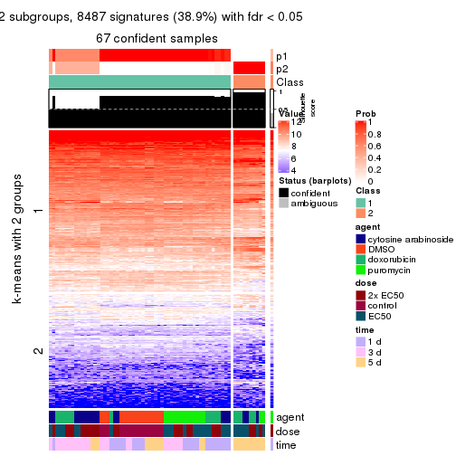
get_signatures(res, k = 3, scale_rows = FALSE)
get_signatures(res, k = 4, scale_rows = FALSE)
get_signatures(res, k = 5, scale_rows = FALSE)
get_signatures(res, k = 6, scale_rows = FALSE)
Compare the overlap of signatures from different k:
compare_signatures(res)
get_signature() returns a data frame invisibly. TO get the list of signatures, the function
call should be assigned to a variable explicitly. In following code, if plot argument is set
to FALSE, no heatmap is plotted while only the differential analysis is performed.
# code only for demonstration
tb = get_signature(res, k = ..., plot = FALSE)
An example of the output of tb is:
#> which_row fdr mean_1 mean_2 scaled_mean_1 scaled_mean_2 km
#> 1 38 0.042760348 8.373488 9.131774 -0.5533452 0.5164555 1
#> 2 40 0.018707592 7.106213 8.469186 -0.6173731 0.5762149 1
#> 3 55 0.019134737 10.221463 11.207825 -0.6159697 0.5749050 1
#> 4 59 0.006059896 5.921854 7.869574 -0.6899429 0.6439467 1
#> 5 60 0.018055526 8.928898 10.211722 -0.6204761 0.5791110 1
#> 6 98 0.009384629 15.714769 14.887706 0.6635654 -0.6193277 2
...
The columns in tb are:
which_row: row indices corresponding to the input matrix.fdr: FDR for the differential test. mean_x: The mean value in group x.scaled_mean_x: The mean value in group x after rows are scaled.km: Row groups if k-means clustering is applied to rows.UMAP plot which shows how samples are separated.
dimension_reduction(res, k = 2, method = "UMAP")
dimension_reduction(res, k = 3, method = "UMAP")
dimension_reduction(res, k = 4, method = "UMAP")
dimension_reduction(res, k = 5, method = "UMAP")
dimension_reduction(res, k = 6, method = "UMAP")
Following heatmap shows how subgroups are split when increasing k:
collect_classes(res)

Test correlation between subgroups and known annotations. If the known annotation is numeric, one-way ANOVA test is applied, and if the known annotation is discrete, chi-squared contingency table test is applied.
test_to_known_factors(res)
#> n agent(p) dose(p) time(p) k
#> ATC:pam 67 1.18e-01 6.02e-02 2.56e-06 2
#> ATC:pam 61 6.67e-09 1.93e-05 1.46e-04 3
#> ATC:pam 67 1.00e-07 4.12e-06 3.50e-08 4
#> ATC:pam 43 9.88e-04 1.52e-01 5.52e-09 5
#> ATC:pam 65 1.28e-09 1.61e-06 4.38e-11 6
If matrix rows can be associated to genes, consider to use functional_enrichment(res,
...) to perform function enrichment for the signature genes. See this vignette for more detailed explanations.
The object with results only for a single top-value method and a single partition method can be extracted as:
res = res_list["ATC", "mclust"]
# you can also extract it by
# res = res_list["ATC:mclust"]
A summary of res and all the functions that can be applied to it:
res
#> A 'ConsensusPartition' object with k = 2, 3, 4, 5, 6.
#> On a matrix with 21796 rows and 68 columns.
#> Top rows (1000, 2000, 3000, 4000, 5000) are extracted by 'ATC' method.
#> Subgroups are detected by 'mclust' method.
#> Performed in total 1250 partitions by row resampling.
#> Best k for subgroups seems to be 2.
#>
#> Following methods can be applied to this 'ConsensusPartition' object:
#> [1] "cola_report" "collect_classes" "collect_plots"
#> [4] "collect_stats" "colnames" "compare_signatures"
#> [7] "consensus_heatmap" "dimension_reduction" "functional_enrichment"
#> [10] "get_anno_col" "get_anno" "get_classes"
#> [13] "get_consensus" "get_matrix" "get_membership"
#> [16] "get_param" "get_signatures" "get_stats"
#> [19] "is_best_k" "is_stable_k" "membership_heatmap"
#> [22] "ncol" "nrow" "plot_ecdf"
#> [25] "rownames" "select_partition_number" "show"
#> [28] "suggest_best_k" "test_to_known_factors"
collect_plots() function collects all the plots made from res for all k (number of partitions)
into one single page to provide an easy and fast comparison between different k.
collect_plots(res)
The plots are:
k and the heatmap of
predicted classes for each k.k.k.k.All the plots in panels can be made by individual functions and they are plotted later in this section.
select_partition_number() produces several plots showing different
statistics for choosing “optimized” k. There are following statistics:
k;k, the area increased is defined as \(A_k - A_{k-1}\).The detailed explanations of these statistics can be found in the cola vignette.
Generally speaking, lower PAC score, higher mean silhouette score or higher
concordance corresponds to better partition. Rand index and Jaccard index
measure how similar the current partition is compared to partition with k-1.
If they are too similar, we won't accept k is better than k-1.
select_partition_number(res)
The numeric values for all these statistics can be obtained by get_stats().
get_stats(res)
#> k 1-PAC mean_silhouette concordance area_increased Rand Jaccard
#> 2 2 0.706 0.883 0.944 0.4827 0.521 0.521
#> 3 3 0.705 0.795 0.838 0.1780 0.862 0.767
#> 4 4 0.641 0.749 0.828 0.2738 0.737 0.501
#> 5 5 0.856 0.817 0.917 0.0845 0.888 0.617
#> 6 6 0.721 0.595 0.684 0.0438 0.908 0.619
suggest_best_k() suggests the best \(k\) based on these statistics. The rules are as follows:
suggest_best_k(res)
#> [1] 2
Following shows the table of the partitions (You need to click the show/hide
code output link to see it). The membership matrix (columns with name p*)
is inferred by
clue::cl_consensus()
function with the SE method. Basically the value in the membership matrix
represents the probability to belong to a certain group. The finall class
label for an item is determined with the group with highest probability it
belongs to.
In get_classes() function, the entropy is calculated from the membership
matrix and the silhouette score is calculated from the consensus matrix.
cbind(get_classes(res, k = 2), get_membership(res, k = 2))
#> class entropy silhouette p1 p2
#> GSM159850 1 0.000 0.919 1.000 0.000
#> GSM159851 1 0.000 0.919 1.000 0.000
#> GSM159852 1 0.000 0.919 1.000 0.000
#> GSM159853 1 0.000 0.919 1.000 0.000
#> GSM159854 1 0.000 0.919 1.000 0.000
#> GSM159855 1 0.000 0.919 1.000 0.000
#> GSM159856 1 0.000 0.919 1.000 0.000
#> GSM159857 1 0.000 0.919 1.000 0.000
#> GSM159858 1 0.000 0.919 1.000 0.000
#> GSM159859 1 0.000 0.919 1.000 0.000
#> GSM159860 1 0.000 0.919 1.000 0.000
#> GSM159861 1 0.000 0.919 1.000 0.000
#> GSM159862 1 0.000 0.919 1.000 0.000
#> GSM159863 1 0.000 0.919 1.000 0.000
#> GSM159864 1 0.000 0.919 1.000 0.000
#> GSM159865 1 0.000 0.919 1.000 0.000
#> GSM159866 1 0.000 0.919 1.000 0.000
#> GSM159885 1 0.795 0.734 0.760 0.240
#> GSM159886 1 0.000 0.919 1.000 0.000
#> GSM159887 1 0.767 0.750 0.776 0.224
#> GSM159888 2 0.000 0.966 0.000 1.000
#> GSM159889 2 0.000 0.966 0.000 1.000
#> GSM159890 2 0.000 0.966 0.000 1.000
#> GSM159891 2 0.000 0.966 0.000 1.000
#> GSM159892 2 0.000 0.966 0.000 1.000
#> GSM159893 2 0.000 0.966 0.000 1.000
#> GSM159894 1 0.795 0.734 0.760 0.240
#> GSM159895 1 0.795 0.734 0.760 0.240
#> GSM159896 1 0.795 0.734 0.760 0.240
#> GSM159897 2 0.000 0.966 0.000 1.000
#> GSM159898 2 0.000 0.966 0.000 1.000
#> GSM159899 2 0.000 0.966 0.000 1.000
#> GSM159900 2 0.000 0.966 0.000 1.000
#> GSM159901 2 0.000 0.966 0.000 1.000
#> GSM159902 1 0.000 0.919 1.000 0.000
#> GSM159903 1 0.000 0.919 1.000 0.000
#> GSM159904 1 0.000 0.919 1.000 0.000
#> GSM159905 1 0.000 0.919 1.000 0.000
#> GSM159906 1 0.000 0.919 1.000 0.000
#> GSM159907 1 0.000 0.919 1.000 0.000
#> GSM159908 1 0.242 0.896 0.960 0.040
#> GSM159909 1 0.000 0.919 1.000 0.000
#> GSM159910 1 0.985 0.385 0.572 0.428
#> GSM159911 1 0.795 0.734 0.760 0.240
#> GSM159912 1 0.000 0.919 1.000 0.000
#> GSM159913 1 0.000 0.919 1.000 0.000
#> GSM159914 1 0.000 0.919 1.000 0.000
#> GSM159915 1 0.000 0.919 1.000 0.000
#> GSM159916 1 0.000 0.919 1.000 0.000
#> GSM159917 1 0.985 0.385 0.572 0.428
#> GSM159867 1 0.795 0.734 0.760 0.240
#> GSM159868 1 0.795 0.734 0.760 0.240
#> GSM159869 1 0.795 0.734 0.760 0.240
#> GSM159870 2 0.000 0.966 0.000 1.000
#> GSM159871 2 0.000 0.966 0.000 1.000
#> GSM159872 2 0.000 0.966 0.000 1.000
#> GSM159873 2 0.000 0.966 0.000 1.000
#> GSM159874 2 0.000 0.966 0.000 1.000
#> GSM159875 2 0.000 0.966 0.000 1.000
#> GSM159876 2 0.802 0.655 0.244 0.756
#> GSM159877 2 0.802 0.655 0.244 0.756
#> GSM159878 2 0.808 0.648 0.248 0.752
#> GSM159879 2 0.000 0.966 0.000 1.000
#> GSM159880 2 0.000 0.966 0.000 1.000
#> GSM159881 2 0.000 0.966 0.000 1.000
#> GSM159882 2 0.000 0.966 0.000 1.000
#> GSM159883 2 0.000 0.966 0.000 1.000
#> GSM159884 2 0.000 0.966 0.000 1.000
cbind(get_classes(res, k = 3), get_membership(res, k = 3))
#> class entropy silhouette p1 p2 p3
#> GSM159850 1 0.1411 0.8993 0.964 0.000 NA
#> GSM159851 1 0.0237 0.9017 0.996 0.000 NA
#> GSM159852 1 0.1411 0.8993 0.964 0.000 NA
#> GSM159853 1 0.1289 0.8998 0.968 0.000 NA
#> GSM159854 1 0.0237 0.9017 0.996 0.000 NA
#> GSM159855 1 0.0000 0.9017 1.000 0.000 NA
#> GSM159856 1 0.2261 0.8931 0.932 0.000 NA
#> GSM159857 1 0.2165 0.8941 0.936 0.000 NA
#> GSM159858 1 0.4452 0.8394 0.808 0.000 NA
#> GSM159859 1 0.4452 0.8394 0.808 0.000 NA
#> GSM159860 1 0.2959 0.8840 0.900 0.000 NA
#> GSM159861 1 0.0592 0.9011 0.988 0.000 NA
#> GSM159862 1 0.0592 0.9011 0.988 0.000 NA
#> GSM159863 1 0.0592 0.9011 0.988 0.000 NA
#> GSM159864 1 0.2711 0.8907 0.912 0.000 NA
#> GSM159865 1 0.2711 0.8908 0.912 0.000 NA
#> GSM159866 1 0.2711 0.8907 0.912 0.000 NA
#> GSM159885 1 0.2486 0.8811 0.932 0.008 NA
#> GSM159886 1 0.2261 0.8931 0.932 0.000 NA
#> GSM159887 1 0.0592 0.9008 0.988 0.000 NA
#> GSM159888 2 0.6215 0.8120 0.000 0.572 NA
#> GSM159889 2 0.6215 0.8120 0.000 0.572 NA
#> GSM159890 2 0.6215 0.8120 0.000 0.572 NA
#> GSM159891 2 0.0000 0.7193 0.000 1.000 NA
#> GSM159892 2 0.1289 0.7107 0.000 0.968 NA
#> GSM159893 2 0.0000 0.7193 0.000 1.000 NA
#> GSM159894 1 0.1170 0.8983 0.976 0.008 NA
#> GSM159895 1 0.3755 0.8446 0.872 0.008 NA
#> GSM159896 1 0.3755 0.8446 0.872 0.008 NA
#> GSM159897 2 0.6192 0.8108 0.000 0.580 NA
#> GSM159898 2 0.6215 0.8120 0.000 0.572 NA
#> GSM159899 2 0.6215 0.8120 0.000 0.572 NA
#> GSM159900 2 0.5968 0.5760 0.000 0.636 NA
#> GSM159901 2 0.5968 0.5760 0.000 0.636 NA
#> GSM159902 1 0.0592 0.9008 0.988 0.000 NA
#> GSM159903 1 0.0592 0.9008 0.988 0.000 NA
#> GSM159904 1 0.0592 0.9008 0.988 0.000 NA
#> GSM159905 1 0.4452 0.8394 0.808 0.000 NA
#> GSM159906 1 0.4452 0.8394 0.808 0.000 NA
#> GSM159907 1 0.4452 0.8394 0.808 0.000 NA
#> GSM159908 1 0.0592 0.9008 0.988 0.000 NA
#> GSM159909 1 0.0592 0.9008 0.988 0.000 NA
#> GSM159910 2 0.6189 0.5728 0.004 0.632 NA
#> GSM159911 1 0.1015 0.8991 0.980 0.008 NA
#> GSM159912 1 0.0424 0.9019 0.992 0.000 NA
#> GSM159913 1 0.0424 0.9013 0.992 0.000 NA
#> GSM159914 1 0.4452 0.8394 0.808 0.000 NA
#> GSM159915 1 0.4452 0.8394 0.808 0.000 NA
#> GSM159916 1 0.4452 0.8394 0.808 0.000 NA
#> GSM159917 2 0.6189 0.5728 0.004 0.632 NA
#> GSM159867 1 0.2680 0.8770 0.924 0.008 NA
#> GSM159868 1 0.3755 0.8446 0.872 0.008 NA
#> GSM159869 1 0.3755 0.8446 0.872 0.008 NA
#> GSM159870 2 0.6215 0.8120 0.000 0.572 NA
#> GSM159871 2 0.6215 0.8120 0.000 0.572 NA
#> GSM159872 2 0.6215 0.8120 0.000 0.572 NA
#> GSM159873 2 0.3192 0.6832 0.000 0.888 NA
#> GSM159874 2 0.5968 0.5760 0.000 0.636 NA
#> GSM159875 2 0.4062 0.6624 0.000 0.836 NA
#> GSM159876 1 0.7987 0.0987 0.492 0.448 NA
#> GSM159877 1 0.7913 0.0905 0.492 0.452 NA
#> GSM159878 1 0.7744 0.1355 0.504 0.448 NA
#> GSM159879 2 0.6215 0.8120 0.000 0.572 NA
#> GSM159880 2 0.6215 0.8120 0.000 0.572 NA
#> GSM159881 2 0.6192 0.8108 0.000 0.580 NA
#> GSM159882 2 0.6192 0.8108 0.000 0.580 NA
#> GSM159883 2 0.6215 0.8120 0.000 0.572 NA
#> GSM159884 2 0.6215 0.8120 0.000 0.572 NA
cbind(get_classes(res, k = 4), get_membership(res, k = 4))
#> class entropy silhouette p1 p2 p3 p4
#> GSM159850 4 0.5487 -0.106 0.400 0.000 0.020 0.580
#> GSM159851 4 0.4245 0.520 0.196 0.000 0.020 0.784
#> GSM159852 4 0.5508 -0.136 0.408 0.000 0.020 0.572
#> GSM159853 4 0.5526 -0.169 0.416 0.000 0.020 0.564
#> GSM159854 4 0.3501 0.624 0.132 0.000 0.020 0.848
#> GSM159855 4 0.2706 0.678 0.080 0.000 0.020 0.900
#> GSM159856 1 0.5802 0.561 0.568 0.008 0.020 0.404
#> GSM159857 1 0.5526 0.543 0.564 0.000 0.020 0.416
#> GSM159858 1 0.0921 0.714 0.972 0.000 0.000 0.028
#> GSM159859 1 0.0921 0.714 0.972 0.000 0.000 0.028
#> GSM159860 1 0.1940 0.705 0.924 0.000 0.000 0.076
#> GSM159861 4 0.3525 0.741 0.040 0.000 0.100 0.860
#> GSM159862 4 0.3372 0.742 0.036 0.000 0.096 0.868
#> GSM159863 4 0.1211 0.721 0.040 0.000 0.000 0.960
#> GSM159864 1 0.6034 0.557 0.556 0.016 0.020 0.408
#> GSM159865 1 0.5691 0.577 0.580 0.012 0.012 0.396
#> GSM159866 1 0.6034 0.557 0.556 0.016 0.020 0.408
#> GSM159885 4 0.4164 0.690 0.000 0.000 0.264 0.736
#> GSM159886 1 0.6232 0.587 0.576 0.028 0.020 0.376
#> GSM159887 4 0.0927 0.738 0.008 0.000 0.016 0.976
#> GSM159888 2 0.0188 0.992 0.000 0.996 0.004 0.000
#> GSM159889 2 0.0336 0.991 0.000 0.992 0.008 0.000
#> GSM159890 2 0.0188 0.992 0.000 0.996 0.004 0.000
#> GSM159891 3 0.2704 0.996 0.000 0.124 0.876 0.000
#> GSM159892 3 0.2704 0.996 0.000 0.124 0.876 0.000
#> GSM159893 3 0.2704 0.996 0.000 0.124 0.876 0.000
#> GSM159894 4 0.5722 0.683 0.040 0.012 0.264 0.684
#> GSM159895 4 0.4164 0.690 0.000 0.000 0.264 0.736
#> GSM159896 4 0.4164 0.690 0.000 0.000 0.264 0.736
#> GSM159897 2 0.0707 0.983 0.000 0.980 0.020 0.000
#> GSM159898 2 0.0336 0.991 0.000 0.992 0.008 0.000
#> GSM159899 2 0.0188 0.992 0.000 0.996 0.004 0.000
#> GSM159900 3 0.2704 0.996 0.000 0.124 0.876 0.000
#> GSM159901 3 0.2704 0.996 0.000 0.124 0.876 0.000
#> GSM159902 4 0.0927 0.738 0.008 0.000 0.016 0.976
#> GSM159903 4 0.1305 0.721 0.036 0.000 0.004 0.960
#> GSM159904 4 0.0524 0.734 0.008 0.000 0.004 0.988
#> GSM159905 1 0.0188 0.713 0.996 0.000 0.000 0.004
#> GSM159906 1 0.0188 0.713 0.996 0.000 0.000 0.004
#> GSM159907 1 0.0188 0.713 0.996 0.000 0.000 0.004
#> GSM159908 4 0.2611 0.740 0.008 0.000 0.096 0.896
#> GSM159909 4 0.2924 0.741 0.016 0.000 0.100 0.884
#> GSM159910 3 0.3360 0.989 0.008 0.124 0.860 0.008
#> GSM159911 4 0.4343 0.691 0.004 0.000 0.264 0.732
#> GSM159912 4 0.3757 0.590 0.152 0.000 0.020 0.828
#> GSM159913 4 0.2174 0.702 0.052 0.000 0.020 0.928
#> GSM159914 1 0.0188 0.713 0.996 0.000 0.000 0.004
#> GSM159915 1 0.0188 0.713 0.996 0.000 0.000 0.004
#> GSM159916 1 0.0188 0.713 0.996 0.000 0.000 0.004
#> GSM159917 3 0.3360 0.989 0.008 0.124 0.860 0.008
#> GSM159867 4 0.4343 0.690 0.000 0.004 0.264 0.732
#> GSM159868 4 0.4164 0.690 0.000 0.000 0.264 0.736
#> GSM159869 4 0.4164 0.690 0.000 0.000 0.264 0.736
#> GSM159870 2 0.0000 0.993 0.000 1.000 0.000 0.000
#> GSM159871 2 0.0188 0.992 0.000 0.996 0.004 0.000
#> GSM159872 2 0.0000 0.993 0.000 1.000 0.000 0.000
#> GSM159873 3 0.2760 0.994 0.000 0.128 0.872 0.000
#> GSM159874 3 0.2704 0.996 0.000 0.124 0.876 0.000
#> GSM159875 3 0.2760 0.994 0.000 0.128 0.872 0.000
#> GSM159876 1 0.7990 0.520 0.452 0.172 0.020 0.356
#> GSM159877 1 0.8304 0.475 0.412 0.212 0.024 0.352
#> GSM159878 1 0.7990 0.520 0.452 0.172 0.020 0.356
#> GSM159879 2 0.0000 0.993 0.000 1.000 0.000 0.000
#> GSM159880 2 0.0188 0.991 0.000 0.996 0.004 0.000
#> GSM159881 2 0.0592 0.982 0.000 0.984 0.016 0.000
#> GSM159882 2 0.0592 0.984 0.000 0.984 0.016 0.000
#> GSM159883 2 0.0000 0.993 0.000 1.000 0.000 0.000
#> GSM159884 2 0.0000 0.993 0.000 1.000 0.000 0.000
cbind(get_classes(res, k = 5), get_membership(res, k = 5))
#> class entropy silhouette p1 p2 p3 p4 p5
#> GSM159850 1 0.1671 0.7812 0.924 0.000 0.000 0.076 0.000
#> GSM159851 1 0.3932 0.4575 0.672 0.000 0.000 0.328 0.000
#> GSM159852 1 0.1732 0.7805 0.920 0.000 0.000 0.080 0.000
#> GSM159853 1 0.1908 0.7751 0.908 0.000 0.000 0.092 0.000
#> GSM159854 1 0.4219 0.2567 0.584 0.000 0.000 0.416 0.000
#> GSM159855 1 0.4256 0.1967 0.564 0.000 0.000 0.436 0.000
#> GSM159856 1 0.0324 0.7777 0.992 0.000 0.000 0.004 0.004
#> GSM159857 1 0.2011 0.7717 0.908 0.000 0.000 0.088 0.004
#> GSM159858 5 0.4242 0.4191 0.428 0.000 0.000 0.000 0.572
#> GSM159859 5 0.4235 0.4277 0.424 0.000 0.000 0.000 0.576
#> GSM159860 1 0.3684 0.4381 0.720 0.000 0.000 0.000 0.280
#> GSM159861 4 0.4161 0.3383 0.392 0.000 0.000 0.608 0.000
#> GSM159862 4 0.2230 0.8175 0.116 0.000 0.000 0.884 0.000
#> GSM159863 4 0.2179 0.8216 0.112 0.000 0.000 0.888 0.000
#> GSM159864 1 0.1285 0.7790 0.956 0.036 0.000 0.004 0.004
#> GSM159865 1 0.2072 0.7798 0.928 0.036 0.000 0.016 0.020
#> GSM159866 1 0.1285 0.7790 0.956 0.036 0.000 0.004 0.004
#> GSM159885 4 0.0000 0.8767 0.000 0.000 0.000 1.000 0.000
#> GSM159886 1 0.0162 0.7755 0.996 0.000 0.000 0.000 0.004
#> GSM159887 4 0.0290 0.8778 0.008 0.000 0.000 0.992 0.000
#> GSM159888 2 0.0693 0.9817 0.000 0.980 0.008 0.000 0.012
#> GSM159889 2 0.0693 0.9817 0.000 0.980 0.008 0.000 0.012
#> GSM159890 2 0.0566 0.9835 0.000 0.984 0.004 0.000 0.012
#> GSM159891 3 0.0451 0.9920 0.000 0.004 0.988 0.000 0.008
#> GSM159892 3 0.0451 0.9920 0.000 0.004 0.988 0.000 0.008
#> GSM159893 3 0.0579 0.9893 0.000 0.008 0.984 0.000 0.008
#> GSM159894 4 0.4182 0.7040 0.164 0.036 0.000 0.784 0.016
#> GSM159895 4 0.0000 0.8767 0.000 0.000 0.000 1.000 0.000
#> GSM159896 4 0.0000 0.8767 0.000 0.000 0.000 1.000 0.000
#> GSM159897 2 0.0671 0.9850 0.004 0.980 0.000 0.000 0.016
#> GSM159898 2 0.0693 0.9817 0.000 0.980 0.008 0.000 0.012
#> GSM159899 2 0.0404 0.9845 0.000 0.988 0.000 0.000 0.012
#> GSM159900 3 0.0000 0.9916 0.000 0.000 1.000 0.000 0.000
#> GSM159901 3 0.0000 0.9916 0.000 0.000 1.000 0.000 0.000
#> GSM159902 4 0.0290 0.8778 0.008 0.000 0.000 0.992 0.000
#> GSM159903 4 0.1965 0.8236 0.096 0.000 0.000 0.904 0.000
#> GSM159904 4 0.0404 0.8771 0.012 0.000 0.000 0.988 0.000
#> GSM159905 5 0.0963 0.8751 0.036 0.000 0.000 0.000 0.964
#> GSM159906 5 0.0963 0.8751 0.036 0.000 0.000 0.000 0.964
#> GSM159907 5 0.0963 0.8751 0.036 0.000 0.000 0.000 0.964
#> GSM159908 4 0.0290 0.8778 0.008 0.000 0.000 0.992 0.000
#> GSM159909 4 0.0703 0.8713 0.024 0.000 0.000 0.976 0.000
#> GSM159910 3 0.0290 0.9881 0.000 0.000 0.992 0.000 0.008
#> GSM159911 4 0.0290 0.8778 0.008 0.000 0.000 0.992 0.000
#> GSM159912 4 0.4302 -0.0199 0.480 0.000 0.000 0.520 0.000
#> GSM159913 4 0.4210 0.2386 0.412 0.000 0.000 0.588 0.000
#> GSM159914 5 0.0963 0.8751 0.036 0.000 0.000 0.000 0.964
#> GSM159915 5 0.0963 0.8751 0.036 0.000 0.000 0.000 0.964
#> GSM159916 5 0.0963 0.8751 0.036 0.000 0.000 0.000 0.964
#> GSM159917 3 0.0290 0.9881 0.000 0.000 0.992 0.000 0.008
#> GSM159867 4 0.0000 0.8767 0.000 0.000 0.000 1.000 0.000
#> GSM159868 4 0.0000 0.8767 0.000 0.000 0.000 1.000 0.000
#> GSM159869 4 0.0000 0.8767 0.000 0.000 0.000 1.000 0.000
#> GSM159870 2 0.0566 0.9848 0.004 0.984 0.000 0.000 0.012
#> GSM159871 2 0.0566 0.9848 0.004 0.984 0.000 0.000 0.012
#> GSM159872 2 0.0566 0.9848 0.004 0.984 0.000 0.000 0.012
#> GSM159873 3 0.0451 0.9920 0.000 0.004 0.988 0.000 0.008
#> GSM159874 3 0.0000 0.9916 0.000 0.000 1.000 0.000 0.000
#> GSM159875 3 0.0451 0.9920 0.000 0.004 0.988 0.000 0.008
#> GSM159876 1 0.2929 0.7225 0.856 0.128 0.000 0.004 0.012
#> GSM159877 1 0.2976 0.7194 0.852 0.132 0.000 0.004 0.012
#> GSM159878 1 0.2929 0.7225 0.856 0.128 0.000 0.004 0.012
#> GSM159879 2 0.0404 0.9856 0.000 0.988 0.000 0.000 0.012
#> GSM159880 2 0.0566 0.9848 0.004 0.984 0.000 0.000 0.012
#> GSM159881 2 0.0960 0.9836 0.004 0.972 0.008 0.000 0.016
#> GSM159882 2 0.0324 0.9863 0.004 0.992 0.000 0.000 0.004
#> GSM159883 2 0.0162 0.9865 0.004 0.996 0.000 0.000 0.000
#> GSM159884 2 0.0000 0.9867 0.000 1.000 0.000 0.000 0.000
cbind(get_classes(res, k = 6), get_membership(res, k = 6))
#> class entropy silhouette p1 p2 p3 p4 p5 p6
#> GSM159850 5 0.3124 0.4283 0.140 0.000 0.000 0.008 0.828 0.024
#> GSM159851 5 0.2981 0.4853 0.100 0.000 0.000 0.040 0.852 0.008
#> GSM159852 5 0.2556 0.4564 0.120 0.000 0.000 0.008 0.864 0.008
#> GSM159853 5 0.2527 0.4780 0.108 0.000 0.000 0.024 0.868 0.000
#> GSM159854 5 0.3269 0.5013 0.016 0.000 0.000 0.128 0.828 0.028
#> GSM159855 5 0.2988 0.4994 0.000 0.000 0.000 0.144 0.828 0.028
#> GSM159856 5 0.5009 0.2059 0.256 0.000 0.000 0.000 0.624 0.120
#> GSM159857 5 0.2994 0.3971 0.208 0.000 0.000 0.004 0.788 0.000
#> GSM159858 1 0.3253 0.7231 0.788 0.000 0.000 0.000 0.192 0.020
#> GSM159859 1 0.3043 0.7277 0.792 0.000 0.000 0.000 0.200 0.008
#> GSM159860 1 0.5341 0.1367 0.508 0.000 0.000 0.000 0.380 0.112
#> GSM159861 5 0.5873 0.0794 0.000 0.000 0.000 0.272 0.480 0.248
#> GSM159862 5 0.6037 -0.0508 0.000 0.000 0.000 0.276 0.420 0.304
#> GSM159863 5 0.5882 0.0727 0.000 0.000 0.000 0.244 0.476 0.280
#> GSM159864 5 0.4680 0.2510 0.200 0.000 0.000 0.000 0.680 0.120
#> GSM159865 5 0.5372 0.0722 0.268 0.000 0.000 0.004 0.588 0.140
#> GSM159866 5 0.4680 0.2510 0.200 0.000 0.000 0.000 0.680 0.120
#> GSM159885 4 0.0146 0.6394 0.000 0.000 0.000 0.996 0.000 0.004
#> GSM159886 5 0.5173 0.1490 0.276 0.000 0.000 0.000 0.596 0.128
#> GSM159887 4 0.5805 0.4634 0.000 0.000 0.000 0.496 0.276 0.228
#> GSM159888 2 0.0363 0.7384 0.000 0.988 0.000 0.000 0.000 0.012
#> GSM159889 2 0.0458 0.7365 0.000 0.984 0.000 0.000 0.000 0.016
#> GSM159890 2 0.0363 0.7384 0.000 0.988 0.000 0.000 0.000 0.012
#> GSM159891 3 0.3244 0.8297 0.000 0.268 0.732 0.000 0.000 0.000
#> GSM159892 3 0.3244 0.8297 0.000 0.268 0.732 0.000 0.000 0.000
#> GSM159893 3 0.3266 0.8270 0.000 0.272 0.728 0.000 0.000 0.000
#> GSM159894 4 0.6747 0.1217 0.000 0.052 0.000 0.404 0.344 0.200
#> GSM159895 4 0.0146 0.6391 0.000 0.000 0.000 0.996 0.000 0.004
#> GSM159896 4 0.0146 0.6391 0.000 0.000 0.000 0.996 0.000 0.004
#> GSM159897 2 0.2402 0.7529 0.000 0.856 0.000 0.004 0.000 0.140
#> GSM159898 2 0.0458 0.7365 0.000 0.984 0.000 0.000 0.000 0.016
#> GSM159899 2 0.0000 0.7421 0.000 1.000 0.000 0.000 0.000 0.000
#> GSM159900 3 0.0000 0.8217 0.000 0.000 1.000 0.000 0.000 0.000
#> GSM159901 3 0.0000 0.8217 0.000 0.000 1.000 0.000 0.000 0.000
#> GSM159902 4 0.5830 0.4556 0.000 0.000 0.000 0.488 0.284 0.228
#> GSM159903 5 0.5877 -0.1671 0.000 0.000 0.000 0.332 0.456 0.212
#> GSM159904 4 0.5966 0.3537 0.000 0.000 0.000 0.428 0.340 0.232
#> GSM159905 1 0.0146 0.8632 0.996 0.000 0.000 0.000 0.000 0.004
#> GSM159906 1 0.0000 0.8647 1.000 0.000 0.000 0.000 0.000 0.000
#> GSM159907 1 0.0000 0.8647 1.000 0.000 0.000 0.000 0.000 0.000
#> GSM159908 4 0.5818 0.4589 0.000 0.000 0.000 0.492 0.280 0.228
#> GSM159909 4 0.5976 0.3002 0.000 0.000 0.000 0.408 0.364 0.228
#> GSM159910 3 0.1806 0.7882 0.004 0.000 0.908 0.000 0.000 0.088
#> GSM159911 4 0.4062 0.5729 0.000 0.000 0.004 0.744 0.192 0.060
#> GSM159912 5 0.4718 0.3281 0.012 0.000 0.000 0.264 0.664 0.060
#> GSM159913 5 0.4644 0.3020 0.004 0.000 0.000 0.268 0.660 0.068
#> GSM159914 1 0.0000 0.8647 1.000 0.000 0.000 0.000 0.000 0.000
#> GSM159915 1 0.0000 0.8647 1.000 0.000 0.000 0.000 0.000 0.000
#> GSM159916 1 0.0146 0.8632 0.996 0.000 0.000 0.000 0.000 0.004
#> GSM159917 3 0.1610 0.7912 0.000 0.000 0.916 0.000 0.000 0.084
#> GSM159867 4 0.1327 0.6218 0.000 0.000 0.000 0.936 0.000 0.064
#> GSM159868 4 0.1387 0.6203 0.000 0.000 0.000 0.932 0.000 0.068
#> GSM159869 4 0.1327 0.6224 0.000 0.000 0.000 0.936 0.000 0.064
#> GSM159870 2 0.3672 0.7596 0.000 0.632 0.000 0.000 0.000 0.368
#> GSM159871 2 0.3672 0.7596 0.000 0.632 0.000 0.000 0.000 0.368
#> GSM159872 2 0.3672 0.7596 0.000 0.632 0.000 0.000 0.000 0.368
#> GSM159873 3 0.3198 0.8322 0.000 0.260 0.740 0.000 0.000 0.000
#> GSM159874 3 0.0000 0.8217 0.000 0.000 1.000 0.000 0.000 0.000
#> GSM159875 3 0.3198 0.8322 0.000 0.260 0.740 0.000 0.000 0.000
#> GSM159876 6 0.6298 0.9853 0.068 0.060 0.000 0.012 0.400 0.460
#> GSM159877 6 0.6282 0.9708 0.068 0.060 0.000 0.012 0.384 0.476
#> GSM159878 6 0.6298 0.9853 0.068 0.060 0.000 0.012 0.400 0.460
#> GSM159879 2 0.2300 0.7596 0.000 0.856 0.000 0.000 0.000 0.144
#> GSM159880 2 0.3672 0.7596 0.000 0.632 0.000 0.000 0.000 0.368
#> GSM159881 2 0.3841 0.7501 0.000 0.616 0.000 0.004 0.000 0.380
#> GSM159882 2 0.3390 0.7652 0.000 0.704 0.000 0.000 0.000 0.296
#> GSM159883 2 0.3390 0.7652 0.000 0.704 0.000 0.000 0.000 0.296
#> GSM159884 2 0.3390 0.7652 0.000 0.704 0.000 0.000 0.000 0.296
Heatmaps for the consensus matrix. It visualizes the probability of two samples to be in a same group.
consensus_heatmap(res, k = 2)
consensus_heatmap(res, k = 3)
consensus_heatmap(res, k = 4)
consensus_heatmap(res, k = 5)

consensus_heatmap(res, k = 6)
Heatmaps for the membership of samples in all partitions to see how consistent they are:
membership_heatmap(res, k = 2)
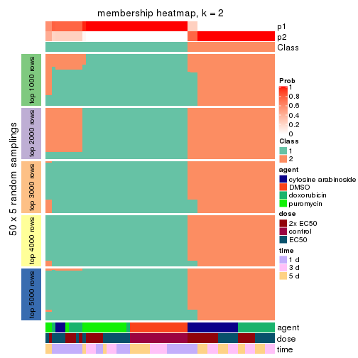
membership_heatmap(res, k = 3)
membership_heatmap(res, k = 4)
membership_heatmap(res, k = 5)
membership_heatmap(res, k = 6)
As soon as we have had the classes for columns, we can look for signatures which are significantly different between classes which can be candidate marks for certain classes. Following are the heatmaps for signatures.
Signature heatmaps where rows are scaled:
get_signatures(res, k = 2)
get_signatures(res, k = 3)
get_signatures(res, k = 4)
get_signatures(res, k = 5)
get_signatures(res, k = 6)
Signature heatmaps where rows are not scaled:
get_signatures(res, k = 2, scale_rows = FALSE)
get_signatures(res, k = 3, scale_rows = FALSE)
get_signatures(res, k = 4, scale_rows = FALSE)
get_signatures(res, k = 5, scale_rows = FALSE)
get_signatures(res, k = 6, scale_rows = FALSE)
Compare the overlap of signatures from different k:
compare_signatures(res)
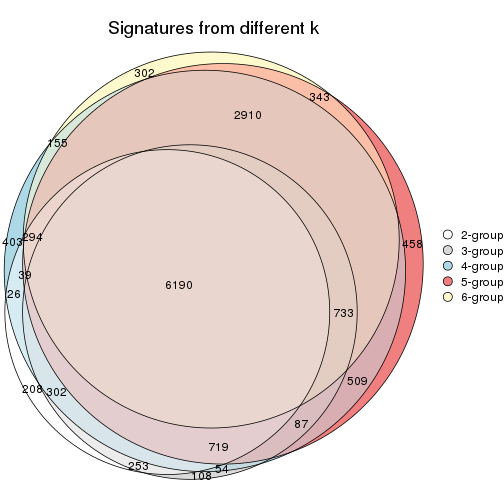
get_signature() returns a data frame invisibly. TO get the list of signatures, the function
call should be assigned to a variable explicitly. In following code, if plot argument is set
to FALSE, no heatmap is plotted while only the differential analysis is performed.
# code only for demonstration
tb = get_signature(res, k = ..., plot = FALSE)
An example of the output of tb is:
#> which_row fdr mean_1 mean_2 scaled_mean_1 scaled_mean_2 km
#> 1 38 0.042760348 8.373488 9.131774 -0.5533452 0.5164555 1
#> 2 40 0.018707592 7.106213 8.469186 -0.6173731 0.5762149 1
#> 3 55 0.019134737 10.221463 11.207825 -0.6159697 0.5749050 1
#> 4 59 0.006059896 5.921854 7.869574 -0.6899429 0.6439467 1
#> 5 60 0.018055526 8.928898 10.211722 -0.6204761 0.5791110 1
#> 6 98 0.009384629 15.714769 14.887706 0.6635654 -0.6193277 2
...
The columns in tb are:
which_row: row indices corresponding to the input matrix.fdr: FDR for the differential test. mean_x: The mean value in group x.scaled_mean_x: The mean value in group x after rows are scaled.km: Row groups if k-means clustering is applied to rows.UMAP plot which shows how samples are separated.
dimension_reduction(res, k = 2, method = "UMAP")
dimension_reduction(res, k = 3, method = "UMAP")
dimension_reduction(res, k = 4, method = "UMAP")
dimension_reduction(res, k = 5, method = "UMAP")
dimension_reduction(res, k = 6, method = "UMAP")
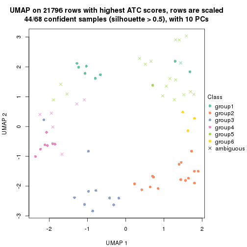
Following heatmap shows how subgroups are split when increasing k:
collect_classes(res)
Test correlation between subgroups and known annotations. If the known annotation is numeric, one-way ANOVA test is applied, and if the known annotation is discrete, chi-squared contingency table test is applied.
test_to_known_factors(res)
#> n agent(p) dose(p) time(p) k
#> ATC:mclust 66 1.52e-08 0.000337 3.08e-03 2
#> ATC:mclust 65 8.24e-07 0.000614 4.95e-05 3
#> ATC:mclust 64 2.44e-04 0.008659 8.21e-12 4
#> ATC:mclust 59 5.07e-08 0.000072 4.69e-11 5
#> ATC:mclust 44 2.57e-05 0.003608 5.70e-12 6
If matrix rows can be associated to genes, consider to use functional_enrichment(res,
...) to perform function enrichment for the signature genes. See this vignette for more detailed explanations.
The object with results only for a single top-value method and a single partition method can be extracted as:
res = res_list["ATC", "NMF"]
# you can also extract it by
# res = res_list["ATC:NMF"]
A summary of res and all the functions that can be applied to it:
res
#> A 'ConsensusPartition' object with k = 2, 3, 4, 5, 6.
#> On a matrix with 21796 rows and 68 columns.
#> Top rows (1000, 2000, 3000, 4000, 5000) are extracted by 'ATC' method.
#> Subgroups are detected by 'NMF' method.
#> Performed in total 1250 partitions by row resampling.
#> Best k for subgroups seems to be 2.
#>
#> Following methods can be applied to this 'ConsensusPartition' object:
#> [1] "cola_report" "collect_classes" "collect_plots"
#> [4] "collect_stats" "colnames" "compare_signatures"
#> [7] "consensus_heatmap" "dimension_reduction" "functional_enrichment"
#> [10] "get_anno_col" "get_anno" "get_classes"
#> [13] "get_consensus" "get_matrix" "get_membership"
#> [16] "get_param" "get_signatures" "get_stats"
#> [19] "is_best_k" "is_stable_k" "membership_heatmap"
#> [22] "ncol" "nrow" "plot_ecdf"
#> [25] "rownames" "select_partition_number" "show"
#> [28] "suggest_best_k" "test_to_known_factors"
collect_plots() function collects all the plots made from res for all k (number of partitions)
into one single page to provide an easy and fast comparison between different k.
collect_plots(res)
The plots are:
k and the heatmap of
predicted classes for each k.k.k.k.All the plots in panels can be made by individual functions and they are plotted later in this section.
select_partition_number() produces several plots showing different
statistics for choosing “optimized” k. There are following statistics:
k;k, the area increased is defined as \(A_k - A_{k-1}\).The detailed explanations of these statistics can be found in the cola vignette.
Generally speaking, lower PAC score, higher mean silhouette score or higher
concordance corresponds to better partition. Rand index and Jaccard index
measure how similar the current partition is compared to partition with k-1.
If they are too similar, we won't accept k is better than k-1.
select_partition_number(res)
The numeric values for all these statistics can be obtained by get_stats().
get_stats(res)
#> k 1-PAC mean_silhouette concordance area_increased Rand Jaccard
#> 2 2 0.906 0.933 0.971 0.4002 0.591 0.591
#> 3 3 0.813 0.875 0.927 0.5300 0.762 0.613
#> 4 4 0.506 0.665 0.761 0.1399 0.806 0.555
#> 5 5 0.538 0.557 0.718 0.0704 0.889 0.635
#> 6 6 0.662 0.700 0.837 0.0522 0.914 0.666
suggest_best_k() suggests the best \(k\) based on these statistics. The rules are as follows:
suggest_best_k(res)
#> [1] 2
Following shows the table of the partitions (You need to click the show/hide
code output link to see it). The membership matrix (columns with name p*)
is inferred by
clue::cl_consensus()
function with the SE method. Basically the value in the membership matrix
represents the probability to belong to a certain group. The finall class
label for an item is determined with the group with highest probability it
belongs to.
In get_classes() function, the entropy is calculated from the membership
matrix and the silhouette score is calculated from the consensus matrix.
cbind(get_classes(res, k = 2), get_membership(res, k = 2))
#> class entropy silhouette p1 p2
#> GSM159850 1 0.0000 0.983 1.000 0.000
#> GSM159851 1 0.0000 0.983 1.000 0.000
#> GSM159852 1 0.0000 0.983 1.000 0.000
#> GSM159853 1 0.0000 0.983 1.000 0.000
#> GSM159854 1 0.0000 0.983 1.000 0.000
#> GSM159855 1 0.0000 0.983 1.000 0.000
#> GSM159856 1 0.0000 0.983 1.000 0.000
#> GSM159857 1 0.0000 0.983 1.000 0.000
#> GSM159858 1 0.0000 0.983 1.000 0.000
#> GSM159859 1 0.0000 0.983 1.000 0.000
#> GSM159860 1 0.0000 0.983 1.000 0.000
#> GSM159861 1 0.0000 0.983 1.000 0.000
#> GSM159862 1 0.0000 0.983 1.000 0.000
#> GSM159863 1 0.0000 0.983 1.000 0.000
#> GSM159864 1 0.0000 0.983 1.000 0.000
#> GSM159865 1 0.0000 0.983 1.000 0.000
#> GSM159866 1 0.0000 0.983 1.000 0.000
#> GSM159885 1 0.5842 0.831 0.860 0.140
#> GSM159886 1 0.0000 0.983 1.000 0.000
#> GSM159887 1 0.0000 0.983 1.000 0.000
#> GSM159888 1 0.5294 0.853 0.880 0.120
#> GSM159889 1 0.0000 0.983 1.000 0.000
#> GSM159890 2 0.9775 0.362 0.412 0.588
#> GSM159891 2 0.0000 0.928 0.000 1.000
#> GSM159892 2 0.0000 0.928 0.000 1.000
#> GSM159893 2 0.0000 0.928 0.000 1.000
#> GSM159894 1 0.0000 0.983 1.000 0.000
#> GSM159895 2 0.2423 0.903 0.040 0.960
#> GSM159896 2 0.0000 0.928 0.000 1.000
#> GSM159897 1 0.0938 0.974 0.988 0.012
#> GSM159898 1 0.0000 0.983 1.000 0.000
#> GSM159899 1 0.4431 0.889 0.908 0.092
#> GSM159900 2 0.0000 0.928 0.000 1.000
#> GSM159901 2 0.0000 0.928 0.000 1.000
#> GSM159902 1 0.1633 0.963 0.976 0.024
#> GSM159903 1 0.0000 0.983 1.000 0.000
#> GSM159904 1 0.2043 0.955 0.968 0.032
#> GSM159905 1 0.0000 0.983 1.000 0.000
#> GSM159906 1 0.0000 0.983 1.000 0.000
#> GSM159907 1 0.0000 0.983 1.000 0.000
#> GSM159908 1 0.1414 0.967 0.980 0.020
#> GSM159909 1 0.0000 0.983 1.000 0.000
#> GSM159910 2 0.0000 0.928 0.000 1.000
#> GSM159911 2 0.0000 0.928 0.000 1.000
#> GSM159912 1 0.0000 0.983 1.000 0.000
#> GSM159913 1 0.0000 0.983 1.000 0.000
#> GSM159914 1 0.0000 0.983 1.000 0.000
#> GSM159915 1 0.0000 0.983 1.000 0.000
#> GSM159916 1 0.0000 0.983 1.000 0.000
#> GSM159917 2 0.0000 0.928 0.000 1.000
#> GSM159867 1 0.0000 0.983 1.000 0.000
#> GSM159868 2 0.0000 0.928 0.000 1.000
#> GSM159869 2 0.0000 0.928 0.000 1.000
#> GSM159870 1 0.0000 0.983 1.000 0.000
#> GSM159871 1 0.0000 0.983 1.000 0.000
#> GSM159872 1 0.0672 0.977 0.992 0.008
#> GSM159873 2 0.0000 0.928 0.000 1.000
#> GSM159874 2 0.0000 0.928 0.000 1.000
#> GSM159875 2 0.0000 0.928 0.000 1.000
#> GSM159876 1 0.0000 0.983 1.000 0.000
#> GSM159877 1 0.0000 0.983 1.000 0.000
#> GSM159878 1 0.0000 0.983 1.000 0.000
#> GSM159879 1 0.0000 0.983 1.000 0.000
#> GSM159880 1 0.0000 0.983 1.000 0.000
#> GSM159881 2 0.9460 0.487 0.364 0.636
#> GSM159882 1 0.8763 0.541 0.704 0.296
#> GSM159883 2 0.5842 0.817 0.140 0.860
#> GSM159884 2 0.8763 0.614 0.296 0.704
cbind(get_classes(res, k = 3), get_membership(res, k = 3))
#> class entropy silhouette p1 p2 p3
#> GSM159850 1 0.1289 0.912 0.968 0.032 0.000
#> GSM159851 1 0.0747 0.916 0.984 0.016 0.000
#> GSM159852 1 0.1163 0.913 0.972 0.028 0.000
#> GSM159853 1 0.1163 0.913 0.972 0.028 0.000
#> GSM159854 1 0.0000 0.916 1.000 0.000 0.000
#> GSM159855 1 0.0000 0.916 1.000 0.000 0.000
#> GSM159856 1 0.1411 0.910 0.964 0.036 0.000
#> GSM159857 1 0.1163 0.913 0.972 0.028 0.000
#> GSM159858 1 0.1163 0.913 0.972 0.028 0.000
#> GSM159859 1 0.1031 0.914 0.976 0.024 0.000
#> GSM159860 1 0.1163 0.913 0.972 0.028 0.000
#> GSM159861 1 0.0424 0.916 0.992 0.008 0.000
#> GSM159862 1 0.0424 0.914 0.992 0.000 0.008
#> GSM159863 1 0.0424 0.914 0.992 0.000 0.008
#> GSM159864 1 0.3412 0.845 0.876 0.124 0.000
#> GSM159865 1 0.2165 0.894 0.936 0.064 0.000
#> GSM159866 1 0.3412 0.845 0.876 0.124 0.000
#> GSM159885 1 0.5397 0.616 0.720 0.000 0.280
#> GSM159886 1 0.2356 0.888 0.928 0.072 0.000
#> GSM159887 1 0.1411 0.903 0.964 0.000 0.036
#> GSM159888 2 0.1315 0.932 0.020 0.972 0.008
#> GSM159889 2 0.2356 0.943 0.072 0.928 0.000
#> GSM159890 2 0.0983 0.922 0.004 0.980 0.016
#> GSM159891 2 0.4750 0.661 0.000 0.784 0.216
#> GSM159892 3 0.2261 0.925 0.000 0.068 0.932
#> GSM159893 3 0.5397 0.668 0.000 0.280 0.720
#> GSM159894 1 0.6079 0.385 0.612 0.388 0.000
#> GSM159895 3 0.3769 0.864 0.104 0.016 0.880
#> GSM159896 3 0.1905 0.930 0.028 0.016 0.956
#> GSM159897 2 0.2356 0.943 0.072 0.928 0.000
#> GSM159898 2 0.2356 0.943 0.072 0.928 0.000
#> GSM159899 2 0.1411 0.940 0.036 0.964 0.000
#> GSM159900 3 0.1964 0.931 0.000 0.056 0.944
#> GSM159901 3 0.1964 0.931 0.000 0.056 0.944
#> GSM159902 1 0.3183 0.867 0.908 0.016 0.076
#> GSM159903 1 0.1765 0.899 0.956 0.004 0.040
#> GSM159904 1 0.3359 0.861 0.900 0.016 0.084
#> GSM159905 1 0.1774 0.902 0.960 0.016 0.024
#> GSM159906 1 0.0000 0.916 1.000 0.000 0.000
#> GSM159907 1 0.0424 0.916 0.992 0.008 0.000
#> GSM159908 1 0.3445 0.858 0.896 0.016 0.088
#> GSM159909 1 0.1289 0.905 0.968 0.000 0.032
#> GSM159910 3 0.1636 0.924 0.020 0.016 0.964
#> GSM159911 3 0.2152 0.918 0.036 0.016 0.948
#> GSM159912 1 0.0000 0.916 1.000 0.000 0.000
#> GSM159913 1 0.0424 0.914 0.992 0.000 0.008
#> GSM159914 1 0.0747 0.916 0.984 0.016 0.000
#> GSM159915 1 0.0424 0.916 0.992 0.008 0.000
#> GSM159916 1 0.0592 0.913 0.988 0.000 0.012
#> GSM159917 3 0.0747 0.927 0.000 0.016 0.984
#> GSM159867 1 0.2261 0.886 0.932 0.000 0.068
#> GSM159868 3 0.1999 0.927 0.036 0.012 0.952
#> GSM159869 3 0.1832 0.921 0.036 0.008 0.956
#> GSM159870 2 0.2356 0.943 0.072 0.928 0.000
#> GSM159871 2 0.2448 0.939 0.076 0.924 0.000
#> GSM159872 2 0.2356 0.943 0.072 0.928 0.000
#> GSM159873 3 0.2165 0.928 0.000 0.064 0.936
#> GSM159874 3 0.1964 0.931 0.000 0.056 0.944
#> GSM159875 3 0.1964 0.931 0.000 0.056 0.944
#> GSM159876 1 0.6140 0.363 0.596 0.404 0.000
#> GSM159877 1 0.6154 0.353 0.592 0.408 0.000
#> GSM159878 1 0.5291 0.655 0.732 0.268 0.000
#> GSM159879 2 0.2356 0.943 0.072 0.928 0.000
#> GSM159880 2 0.2356 0.943 0.072 0.928 0.000
#> GSM159881 2 0.0983 0.920 0.004 0.980 0.016
#> GSM159882 2 0.1529 0.940 0.040 0.960 0.000
#> GSM159883 2 0.0892 0.915 0.000 0.980 0.020
#> GSM159884 2 0.0983 0.922 0.004 0.980 0.016
cbind(get_classes(res, k = 4), get_membership(res, k = 4))
#> class entropy silhouette p1 p2 p3 p4
#> GSM159850 1 0.4406 0.52857 0.700 0.000 0.000 0.300
#> GSM159851 1 0.5132 -0.00536 0.548 0.004 0.000 0.448
#> GSM159852 1 0.3873 0.61911 0.772 0.000 0.000 0.228
#> GSM159853 1 0.4164 0.56144 0.736 0.000 0.000 0.264
#> GSM159854 1 0.4356 0.51392 0.708 0.000 0.000 0.292
#> GSM159855 1 0.4697 0.36102 0.644 0.000 0.000 0.356
#> GSM159856 1 0.2174 0.77701 0.928 0.020 0.000 0.052
#> GSM159857 1 0.2011 0.75819 0.920 0.000 0.000 0.080
#> GSM159858 1 0.0779 0.77930 0.980 0.004 0.000 0.016
#> GSM159859 1 0.0895 0.77959 0.976 0.004 0.000 0.020
#> GSM159860 1 0.1151 0.77976 0.968 0.008 0.000 0.024
#> GSM159861 4 0.3625 0.72894 0.160 0.012 0.000 0.828
#> GSM159862 4 0.3529 0.72624 0.152 0.012 0.000 0.836
#> GSM159863 4 0.4978 0.45484 0.324 0.012 0.000 0.664
#> GSM159864 1 0.4004 0.71822 0.812 0.024 0.000 0.164
#> GSM159865 1 0.4004 0.71822 0.812 0.024 0.000 0.164
#> GSM159866 1 0.4004 0.71822 0.812 0.024 0.000 0.164
#> GSM159885 4 0.5495 0.76848 0.176 0.000 0.096 0.728
#> GSM159886 1 0.1888 0.76343 0.940 0.044 0.000 0.016
#> GSM159887 4 0.4313 0.74031 0.260 0.000 0.004 0.736
#> GSM159888 2 0.3494 0.78462 0.172 0.824 0.000 0.004
#> GSM159889 2 0.4677 0.71639 0.316 0.680 0.000 0.004
#> GSM159890 2 0.2334 0.77495 0.088 0.908 0.000 0.004
#> GSM159891 2 0.3266 0.51581 0.000 0.832 0.168 0.000
#> GSM159892 3 0.4697 0.69200 0.000 0.356 0.644 0.000
#> GSM159893 2 0.4977 -0.31176 0.000 0.540 0.460 0.000
#> GSM159894 4 0.5292 0.73907 0.216 0.060 0.000 0.724
#> GSM159895 4 0.5747 0.66854 0.064 0.008 0.224 0.704
#> GSM159896 4 0.5425 0.58203 0.020 0.012 0.288 0.680
#> GSM159897 2 0.2654 0.78529 0.108 0.888 0.000 0.004
#> GSM159898 2 0.4509 0.73506 0.288 0.708 0.000 0.004
#> GSM159899 2 0.3494 0.78500 0.172 0.824 0.000 0.004
#> GSM159900 3 0.3074 0.87403 0.000 0.152 0.848 0.000
#> GSM159901 3 0.3219 0.87428 0.000 0.164 0.836 0.000
#> GSM159902 4 0.4838 0.75209 0.252 0.000 0.024 0.724
#> GSM159903 4 0.5143 0.32702 0.456 0.000 0.004 0.540
#> GSM159904 4 0.6107 0.73418 0.264 0.000 0.088 0.648
#> GSM159905 1 0.2002 0.76447 0.936 0.000 0.020 0.044
#> GSM159906 1 0.1296 0.77623 0.964 0.004 0.004 0.028
#> GSM159907 1 0.1004 0.77749 0.972 0.004 0.000 0.024
#> GSM159908 4 0.4840 0.75770 0.240 0.000 0.028 0.732
#> GSM159909 4 0.4222 0.72922 0.272 0.000 0.000 0.728
#> GSM159910 3 0.3780 0.71242 0.016 0.004 0.832 0.148
#> GSM159911 4 0.5882 0.54594 0.048 0.000 0.344 0.608
#> GSM159912 1 0.4406 0.49526 0.700 0.000 0.000 0.300
#> GSM159913 1 0.4955 0.02679 0.556 0.000 0.000 0.444
#> GSM159914 1 0.0188 0.77662 0.996 0.004 0.000 0.000
#> GSM159915 1 0.0712 0.77618 0.984 0.004 0.004 0.008
#> GSM159916 1 0.1388 0.76814 0.960 0.000 0.012 0.028
#> GSM159917 3 0.0844 0.79697 0.004 0.004 0.980 0.012
#> GSM159867 4 0.5280 0.77272 0.168 0.004 0.076 0.752
#> GSM159868 4 0.5022 0.57890 0.012 0.004 0.300 0.684
#> GSM159869 4 0.5420 0.49941 0.008 0.012 0.352 0.628
#> GSM159870 2 0.5311 0.67313 0.328 0.648 0.000 0.024
#> GSM159871 2 0.5525 0.65972 0.336 0.636 0.004 0.024
#> GSM159872 2 0.4030 0.76500 0.092 0.836 0.000 0.072
#> GSM159873 3 0.4134 0.81711 0.000 0.260 0.740 0.000
#> GSM159874 3 0.3074 0.87438 0.000 0.152 0.848 0.000
#> GSM159875 3 0.3610 0.86271 0.000 0.200 0.800 0.000
#> GSM159876 1 0.4508 0.58623 0.780 0.184 0.000 0.036
#> GSM159877 1 0.5432 0.61213 0.740 0.124 0.000 0.136
#> GSM159878 1 0.3450 0.62849 0.836 0.156 0.000 0.008
#> GSM159879 2 0.4624 0.67512 0.340 0.660 0.000 0.000
#> GSM159880 2 0.4153 0.78245 0.132 0.820 0.000 0.048
#> GSM159881 2 0.2635 0.67184 0.000 0.904 0.020 0.076
#> GSM159882 2 0.2658 0.77717 0.080 0.904 0.012 0.004
#> GSM159883 2 0.1610 0.74060 0.032 0.952 0.016 0.000
#> GSM159884 2 0.1610 0.74060 0.032 0.952 0.016 0.000
cbind(get_classes(res, k = 5), get_membership(res, k = 5))
#> class entropy silhouette p1 p2 p3 p4 p5
#> GSM159850 1 0.4735 0.2608 0.524 0.000 0.000 0.460 0.016
#> GSM159851 4 0.3966 0.3401 0.336 0.000 0.000 0.664 0.000
#> GSM159852 1 0.4547 0.4196 0.588 0.000 0.000 0.400 0.012
#> GSM159853 1 0.4283 0.2874 0.544 0.000 0.000 0.456 0.000
#> GSM159854 1 0.4449 0.1938 0.512 0.000 0.000 0.484 0.004
#> GSM159855 4 0.4302 -0.1580 0.480 0.000 0.000 0.520 0.000
#> GSM159856 1 0.3051 0.6870 0.852 0.000 0.000 0.120 0.028
#> GSM159857 1 0.3995 0.6349 0.776 0.000 0.000 0.180 0.044
#> GSM159858 1 0.2850 0.6654 0.872 0.000 0.000 0.092 0.036
#> GSM159859 1 0.2871 0.6635 0.872 0.000 0.000 0.088 0.040
#> GSM159860 1 0.3146 0.6549 0.856 0.000 0.000 0.092 0.052
#> GSM159861 5 0.6431 0.5453 0.140 0.008 0.000 0.376 0.476
#> GSM159862 5 0.6641 0.6303 0.176 0.012 0.000 0.312 0.500
#> GSM159863 5 0.6594 0.6783 0.312 0.008 0.000 0.184 0.496
#> GSM159864 5 0.5990 0.6618 0.416 0.028 0.000 0.052 0.504
#> GSM159865 5 0.5990 0.6618 0.416 0.028 0.000 0.052 0.504
#> GSM159866 5 0.5985 0.6647 0.412 0.028 0.000 0.052 0.508
#> GSM159885 4 0.1560 0.7612 0.020 0.000 0.028 0.948 0.004
#> GSM159886 1 0.3308 0.6636 0.860 0.012 0.000 0.076 0.052
#> GSM159887 4 0.0865 0.7625 0.024 0.000 0.004 0.972 0.000
#> GSM159888 2 0.4752 0.6336 0.272 0.684 0.004 0.000 0.040
#> GSM159889 2 0.5066 0.5849 0.344 0.608 0.000 0.000 0.048
#> GSM159890 2 0.3928 0.6606 0.176 0.788 0.008 0.000 0.028
#> GSM159891 2 0.3318 0.4112 0.000 0.800 0.192 0.000 0.008
#> GSM159892 3 0.4553 0.6349 0.000 0.384 0.604 0.008 0.004
#> GSM159893 2 0.4440 -0.3784 0.000 0.528 0.468 0.004 0.000
#> GSM159894 4 0.2060 0.7501 0.052 0.016 0.000 0.924 0.008
#> GSM159895 4 0.1788 0.7445 0.008 0.000 0.056 0.932 0.004
#> GSM159896 4 0.2338 0.7042 0.000 0.000 0.112 0.884 0.004
#> GSM159897 2 0.4409 0.6539 0.180 0.760 0.008 0.000 0.052
#> GSM159898 2 0.5068 0.5718 0.364 0.592 0.000 0.000 0.044
#> GSM159899 2 0.4865 0.6275 0.280 0.672 0.004 0.000 0.044
#> GSM159900 3 0.3209 0.8140 0.000 0.180 0.812 0.008 0.000
#> GSM159901 3 0.3455 0.8134 0.000 0.208 0.784 0.008 0.000
#> GSM159902 4 0.1393 0.7643 0.024 0.000 0.012 0.956 0.008
#> GSM159903 4 0.3462 0.6094 0.196 0.000 0.000 0.792 0.012
#> GSM159904 4 0.2234 0.7597 0.032 0.000 0.036 0.920 0.012
#> GSM159905 1 0.3493 0.6732 0.832 0.000 0.000 0.108 0.060
#> GSM159906 1 0.2351 0.6929 0.896 0.000 0.000 0.088 0.016
#> GSM159907 1 0.2179 0.6947 0.896 0.000 0.000 0.100 0.004
#> GSM159908 4 0.1280 0.7635 0.024 0.000 0.008 0.960 0.008
#> GSM159909 4 0.1195 0.7604 0.028 0.000 0.000 0.960 0.012
#> GSM159910 3 0.5733 0.4100 0.044 0.004 0.548 0.016 0.388
#> GSM159911 4 0.3242 0.6330 0.000 0.000 0.216 0.784 0.000
#> GSM159912 4 0.4557 -0.1408 0.476 0.000 0.000 0.516 0.008
#> GSM159913 4 0.4029 0.4010 0.316 0.000 0.000 0.680 0.004
#> GSM159914 1 0.2351 0.6912 0.896 0.000 0.000 0.088 0.016
#> GSM159915 1 0.2172 0.6860 0.908 0.000 0.000 0.076 0.016
#> GSM159916 1 0.2927 0.6701 0.872 0.000 0.000 0.068 0.060
#> GSM159917 3 0.0960 0.7160 0.000 0.004 0.972 0.008 0.016
#> GSM159867 4 0.1200 0.7597 0.012 0.000 0.016 0.964 0.008
#> GSM159868 4 0.3388 0.6272 0.000 0.000 0.200 0.792 0.008
#> GSM159869 4 0.3796 0.5120 0.000 0.000 0.300 0.700 0.000
#> GSM159870 2 0.5702 0.4410 0.104 0.576 0.000 0.000 0.320
#> GSM159871 2 0.6495 0.3089 0.196 0.532 0.008 0.000 0.264
#> GSM159872 2 0.5062 0.5431 0.068 0.656 0.000 0.000 0.276
#> GSM159873 3 0.4067 0.7503 0.000 0.300 0.692 0.008 0.000
#> GSM159874 3 0.3093 0.8116 0.000 0.168 0.824 0.008 0.000
#> GSM159875 3 0.3642 0.8046 0.000 0.232 0.760 0.008 0.000
#> GSM159876 1 0.5192 -0.0893 0.644 0.076 0.000 0.000 0.280
#> GSM159877 1 0.5820 -0.5351 0.504 0.056 0.000 0.016 0.424
#> GSM159878 1 0.3745 0.4815 0.828 0.068 0.000 0.008 0.096
#> GSM159879 2 0.4114 0.6601 0.060 0.776 0.000 0.000 0.164
#> GSM159880 2 0.4315 0.6007 0.024 0.700 0.000 0.000 0.276
#> GSM159881 2 0.2828 0.6056 0.004 0.872 0.020 0.000 0.104
#> GSM159882 2 0.1041 0.6409 0.004 0.964 0.000 0.000 0.032
#> GSM159883 2 0.1153 0.6303 0.004 0.964 0.008 0.000 0.024
#> GSM159884 2 0.1356 0.6281 0.004 0.956 0.012 0.000 0.028
cbind(get_classes(res, k = 6), get_membership(res, k = 6))
#> class entropy silhouette p1 p2 p3 p4 p5 p6
#> GSM159850 1 0.3343 0.7566 0.796 0.004 0.000 0.176 0.024 0.000
#> GSM159851 1 0.4250 0.2545 0.528 0.000 0.000 0.456 0.016 0.000
#> GSM159852 1 0.2222 0.8131 0.896 0.008 0.000 0.084 0.012 0.000
#> GSM159853 1 0.2766 0.7945 0.852 0.004 0.000 0.124 0.020 0.000
#> GSM159854 1 0.3301 0.7494 0.788 0.000 0.000 0.188 0.024 0.000
#> GSM159855 1 0.3514 0.7121 0.752 0.000 0.000 0.228 0.020 0.000
#> GSM159856 1 0.1268 0.8183 0.952 0.008 0.000 0.004 0.036 0.000
#> GSM159857 1 0.2402 0.8078 0.888 0.008 0.000 0.020 0.084 0.000
#> GSM159858 1 0.1668 0.8137 0.928 0.008 0.000 0.004 0.060 0.000
#> GSM159859 1 0.1845 0.8110 0.916 0.008 0.000 0.004 0.072 0.000
#> GSM159860 1 0.1956 0.8083 0.908 0.008 0.000 0.004 0.080 0.000
#> GSM159861 5 0.4422 0.4831 0.068 0.000 0.000 0.252 0.680 0.000
#> GSM159862 5 0.3395 0.5808 0.060 0.000 0.000 0.132 0.808 0.000
#> GSM159863 5 0.3927 0.6423 0.172 0.000 0.000 0.072 0.756 0.000
#> GSM159864 5 0.2948 0.6691 0.188 0.000 0.000 0.008 0.804 0.000
#> GSM159865 5 0.2882 0.6716 0.180 0.000 0.000 0.008 0.812 0.000
#> GSM159866 5 0.2706 0.6698 0.160 0.000 0.000 0.008 0.832 0.000
#> GSM159885 4 0.1059 0.8559 0.004 0.000 0.016 0.964 0.016 0.000
#> GSM159886 1 0.1478 0.8146 0.944 0.020 0.000 0.004 0.032 0.000
#> GSM159887 4 0.0881 0.8554 0.008 0.000 0.000 0.972 0.012 0.008
#> GSM159888 2 0.1265 0.7910 0.044 0.948 0.000 0.000 0.000 0.008
#> GSM159889 2 0.2191 0.7496 0.120 0.876 0.000 0.000 0.000 0.004
#> GSM159890 2 0.1149 0.7914 0.024 0.960 0.008 0.000 0.000 0.008
#> GSM159891 2 0.4120 0.5537 0.000 0.692 0.276 0.000 0.024 0.008
#> GSM159892 3 0.2544 0.7800 0.000 0.120 0.864 0.000 0.012 0.004
#> GSM159893 3 0.4000 0.4623 0.000 0.324 0.660 0.000 0.008 0.008
#> GSM159894 4 0.1592 0.8499 0.016 0.012 0.000 0.944 0.024 0.004
#> GSM159895 4 0.1293 0.8544 0.004 0.000 0.016 0.956 0.020 0.004
#> GSM159896 4 0.1697 0.8507 0.004 0.000 0.036 0.936 0.020 0.004
#> GSM159897 2 0.1481 0.7879 0.012 0.952 0.008 0.004 0.016 0.008
#> GSM159898 2 0.3481 0.6119 0.228 0.756 0.000 0.000 0.012 0.004
#> GSM159899 2 0.3001 0.7343 0.120 0.848 0.008 0.000 0.016 0.008
#> GSM159900 3 0.0260 0.8689 0.000 0.000 0.992 0.000 0.008 0.000
#> GSM159901 3 0.0291 0.8733 0.000 0.004 0.992 0.000 0.004 0.000
#> GSM159902 4 0.1590 0.8543 0.008 0.000 0.012 0.944 0.028 0.008
#> GSM159903 4 0.4086 0.6661 0.184 0.000 0.000 0.756 0.036 0.024
#> GSM159904 4 0.2368 0.8470 0.008 0.000 0.028 0.908 0.036 0.020
#> GSM159905 1 0.2570 0.8103 0.892 0.000 0.000 0.032 0.036 0.040
#> GSM159906 1 0.1794 0.8196 0.932 0.000 0.000 0.016 0.024 0.028
#> GSM159907 1 0.1630 0.8232 0.940 0.000 0.000 0.016 0.020 0.024
#> GSM159908 4 0.1892 0.8489 0.020 0.000 0.008 0.932 0.020 0.020
#> GSM159909 4 0.1882 0.8437 0.028 0.000 0.000 0.928 0.024 0.020
#> GSM159910 6 0.1387 0.0000 0.000 0.000 0.068 0.000 0.000 0.932
#> GSM159911 4 0.3668 0.6582 0.008 0.000 0.256 0.728 0.008 0.000
#> GSM159912 1 0.4684 0.4279 0.580 0.000 0.000 0.380 0.024 0.016
#> GSM159913 4 0.4240 0.4925 0.296 0.000 0.000 0.672 0.016 0.016
#> GSM159914 1 0.1148 0.8184 0.960 0.000 0.000 0.004 0.016 0.020
#> GSM159915 1 0.1518 0.8154 0.944 0.000 0.000 0.008 0.024 0.024
#> GSM159916 1 0.2307 0.8008 0.908 0.004 0.000 0.016 0.028 0.044
#> GSM159917 3 0.1579 0.8302 0.004 0.000 0.944 0.008 0.024 0.020
#> GSM159867 4 0.1159 0.8550 0.004 0.004 0.012 0.964 0.012 0.004
#> GSM159868 4 0.2921 0.7922 0.004 0.004 0.120 0.852 0.016 0.004
#> GSM159869 4 0.3940 0.5304 0.000 0.004 0.336 0.652 0.008 0.000
#> GSM159870 2 0.4660 0.2967 0.020 0.540 0.004 0.000 0.428 0.008
#> GSM159871 5 0.5519 -0.0688 0.056 0.412 0.020 0.000 0.504 0.008
#> GSM159872 5 0.4575 0.0835 0.008 0.372 0.016 0.000 0.596 0.008
#> GSM159873 3 0.0935 0.8669 0.000 0.032 0.964 0.000 0.004 0.000
#> GSM159874 3 0.0000 0.8708 0.000 0.000 1.000 0.000 0.000 0.000
#> GSM159875 3 0.0603 0.8730 0.000 0.016 0.980 0.000 0.004 0.000
#> GSM159876 1 0.4348 0.2764 0.600 0.016 0.000 0.000 0.376 0.008
#> GSM159877 5 0.4879 0.3929 0.384 0.032 0.000 0.004 0.568 0.012
#> GSM159878 1 0.2917 0.7529 0.840 0.016 0.000 0.000 0.136 0.008
#> GSM159879 2 0.3058 0.7980 0.008 0.832 0.008 0.000 0.144 0.008
#> GSM159880 2 0.3481 0.7412 0.000 0.756 0.004 0.000 0.228 0.012
#> GSM159881 2 0.3118 0.7943 0.000 0.820 0.012 0.000 0.156 0.012
#> GSM159882 2 0.2566 0.8070 0.000 0.868 0.012 0.000 0.112 0.008
#> GSM159883 2 0.2611 0.8065 0.000 0.864 0.012 0.000 0.116 0.008
#> GSM159884 2 0.2806 0.8052 0.000 0.844 0.016 0.000 0.136 0.004
Heatmaps for the consensus matrix. It visualizes the probability of two samples to be in a same group.
consensus_heatmap(res, k = 2)
consensus_heatmap(res, k = 3)

consensus_heatmap(res, k = 4)
consensus_heatmap(res, k = 5)
consensus_heatmap(res, k = 6)
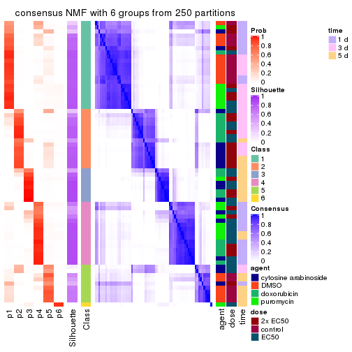
Heatmaps for the membership of samples in all partitions to see how consistent they are:
membership_heatmap(res, k = 2)

membership_heatmap(res, k = 3)
membership_heatmap(res, k = 4)
membership_heatmap(res, k = 5)
membership_heatmap(res, k = 6)
As soon as we have had the classes for columns, we can look for signatures which are significantly different between classes which can be candidate marks for certain classes. Following are the heatmaps for signatures.
Signature heatmaps where rows are scaled:
get_signatures(res, k = 2)

get_signatures(res, k = 3)
get_signatures(res, k = 4)
get_signatures(res, k = 5)
get_signatures(res, k = 6)
Signature heatmaps where rows are not scaled:
get_signatures(res, k = 2, scale_rows = FALSE)
get_signatures(res, k = 3, scale_rows = FALSE)
get_signatures(res, k = 4, scale_rows = FALSE)
get_signatures(res, k = 5, scale_rows = FALSE)
get_signatures(res, k = 6, scale_rows = FALSE)
Compare the overlap of signatures from different k:
compare_signatures(res)
get_signature() returns a data frame invisibly. TO get the list of signatures, the function
call should be assigned to a variable explicitly. In following code, if plot argument is set
to FALSE, no heatmap is plotted while only the differential analysis is performed.
# code only for demonstration
tb = get_signature(res, k = ..., plot = FALSE)
An example of the output of tb is:
#> which_row fdr mean_1 mean_2 scaled_mean_1 scaled_mean_2 km
#> 1 38 0.042760348 8.373488 9.131774 -0.5533452 0.5164555 1
#> 2 40 0.018707592 7.106213 8.469186 -0.6173731 0.5762149 1
#> 3 55 0.019134737 10.221463 11.207825 -0.6159697 0.5749050 1
#> 4 59 0.006059896 5.921854 7.869574 -0.6899429 0.6439467 1
#> 5 60 0.018055526 8.928898 10.211722 -0.6204761 0.5791110 1
#> 6 98 0.009384629 15.714769 14.887706 0.6635654 -0.6193277 2
...
The columns in tb are:
which_row: row indices corresponding to the input matrix.fdr: FDR for the differential test. mean_x: The mean value in group x.scaled_mean_x: The mean value in group x after rows are scaled.km: Row groups if k-means clustering is applied to rows.UMAP plot which shows how samples are separated.
dimension_reduction(res, k = 2, method = "UMAP")
dimension_reduction(res, k = 3, method = "UMAP")
dimension_reduction(res, k = 4, method = "UMAP")
dimension_reduction(res, k = 5, method = "UMAP")
dimension_reduction(res, k = 6, method = "UMAP")
Following heatmap shows how subgroups are split when increasing k:
collect_classes(res)
Test correlation between subgroups and known annotations. If the known annotation is numeric, one-way ANOVA test is applied, and if the known annotation is discrete, chi-squared contingency table test is applied.
test_to_known_factors(res)
#> n agent(p) dose(p) time(p) k
#> ATC:NMF 66 1.10e-02 1.88e-02 1.01e-04 2
#> ATC:NMF 65 2.87e-07 2.33e-04 4.95e-05 3
#> ATC:NMF 60 8.11e-05 1.00e-03 5.48e-08 4
#> ATC:NMF 52 5.27e-07 2.80e-06 8.29e-13 5
#> ATC:NMF 57 1.94e-06 2.89e-06 2.12e-10 6
If matrix rows can be associated to genes, consider to use functional_enrichment(res,
...) to perform function enrichment for the signature genes. See this vignette for more detailed explanations.
sessionInfo()
#> R version 3.6.0 (2019-04-26)
#> Platform: x86_64-pc-linux-gnu (64-bit)
#> Running under: CentOS Linux 7 (Core)
#>
#> Matrix products: default
#> BLAS: /usr/lib64/libblas.so.3.4.2
#> LAPACK: /usr/lib64/liblapack.so.3.4.2
#>
#> locale:
#> [1] LC_CTYPE=en_GB.UTF-8 LC_NUMERIC=C LC_TIME=en_GB.UTF-8
#> [4] LC_COLLATE=en_GB.UTF-8 LC_MONETARY=en_GB.UTF-8 LC_MESSAGES=en_GB.UTF-8
#> [7] LC_PAPER=en_GB.UTF-8 LC_NAME=C LC_ADDRESS=C
#> [10] LC_TELEPHONE=C LC_MEASUREMENT=en_GB.UTF-8 LC_IDENTIFICATION=C
#>
#> attached base packages:
#> [1] grid stats graphics grDevices utils datasets methods base
#>
#> other attached packages:
#> [1] genefilter_1.66.0 ComplexHeatmap_2.3.1 markdown_1.1 knitr_1.26
#> [5] GetoptLong_0.1.7 cola_1.3.2
#>
#> loaded via a namespace (and not attached):
#> [1] circlize_0.4.8 shape_1.4.4 xfun_0.11 slam_0.1-46
#> [5] lattice_0.20-38 splines_3.6.0 colorspace_1.4-1 vctrs_0.2.0
#> [9] stats4_3.6.0 blob_1.2.0 XML_3.98-1.20 survival_2.44-1.1
#> [13] rlang_0.4.2 pillar_1.4.2 DBI_1.0.0 BiocGenerics_0.30.0
#> [17] bit64_0.9-7 RColorBrewer_1.1-2 matrixStats_0.55.0 stringr_1.4.0
#> [21] GlobalOptions_0.1.1 evaluate_0.14 memoise_1.1.0 Biobase_2.44.0
#> [25] IRanges_2.18.3 parallel_3.6.0 AnnotationDbi_1.46.1 highr_0.8
#> [29] Rcpp_1.0.3 xtable_1.8-4 backports_1.1.5 S4Vectors_0.22.1
#> [33] annotate_1.62.0 skmeans_0.2-11 bit_1.1-14 microbenchmark_1.4-7
#> [37] brew_1.0-6 impute_1.58.0 rjson_0.2.20 png_0.1-7
#> [41] digest_0.6.23 stringi_1.4.3 polyclip_1.10-0 clue_0.3-57
#> [45] tools_3.6.0 bitops_1.0-6 magrittr_1.5 eulerr_6.0.0
#> [49] RCurl_1.95-4.12 RSQLite_2.1.4 tibble_2.1.3 cluster_2.1.0
#> [53] crayon_1.3.4 pkgconfig_2.0.3 zeallot_0.1.0 Matrix_1.2-17
#> [57] xml2_1.2.2 httr_1.4.1 R6_2.4.1 mclust_5.4.5
#> [61] compiler_3.6.0